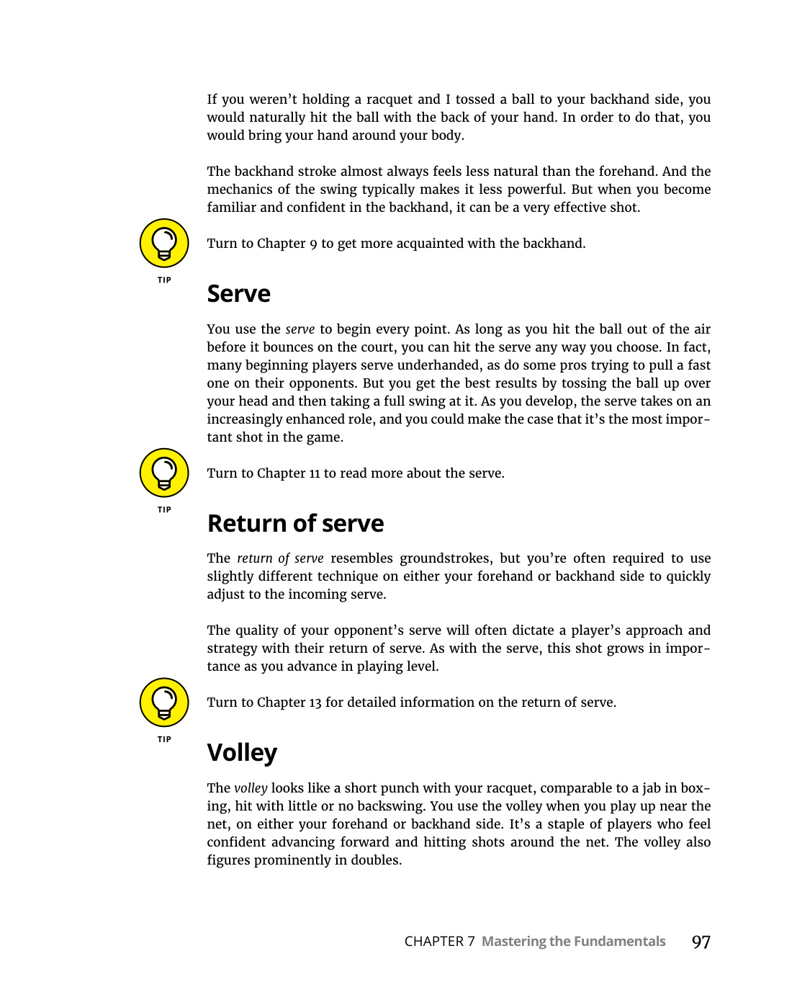
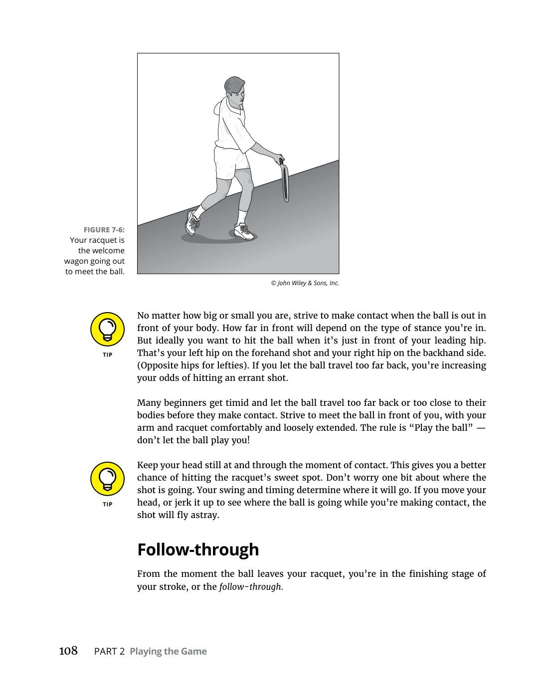
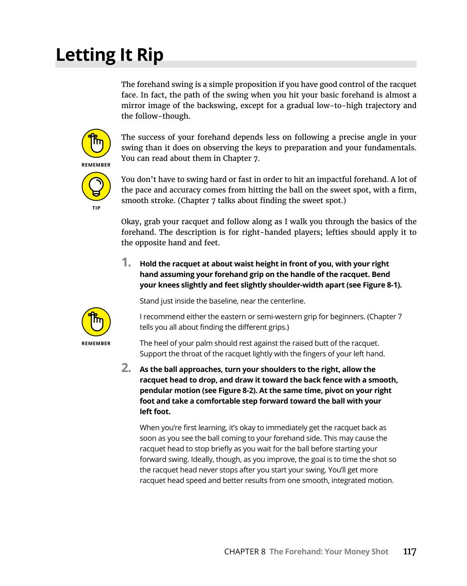
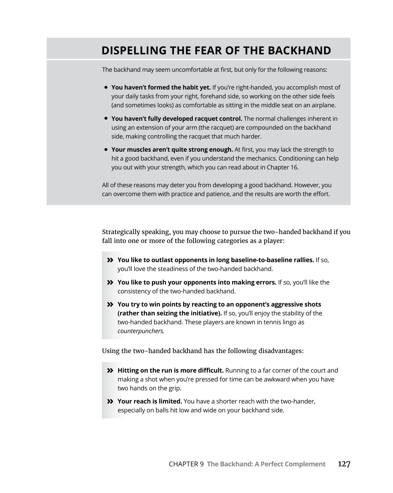
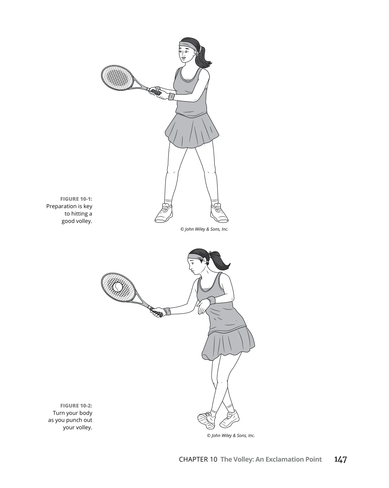
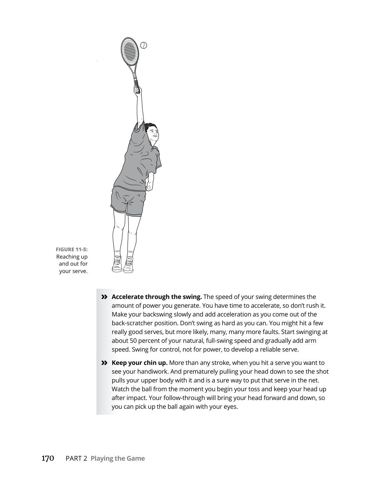
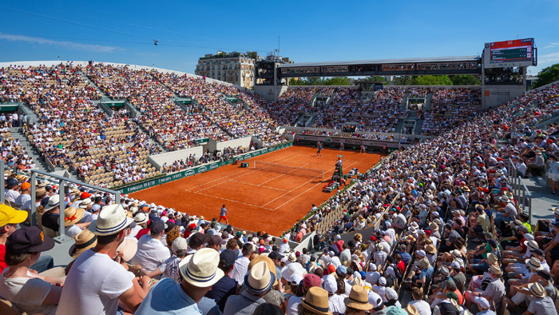
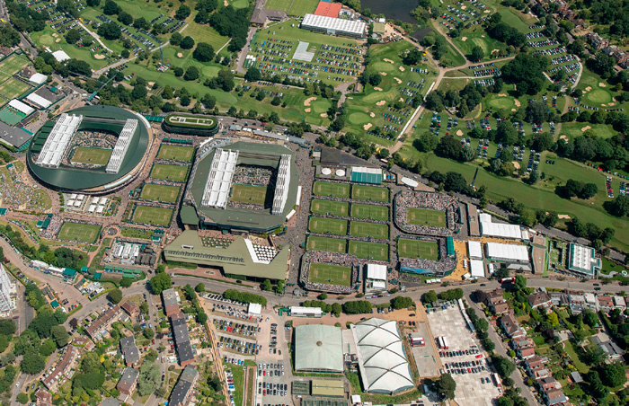
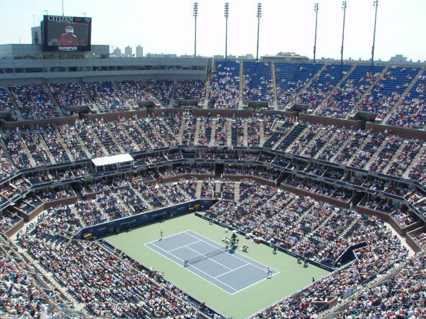

Quần Vợt Cho Mọi Người (Tennis For Dummies)
Bản dịch Việt ngữ này chỉ dùng cho mục đích học tập cá nhân, phi thương mại. Bản quyền tác phẩm gốc thuộc về tác giả và nhà xuất bản.
Phần I: Bắt Đầu Với Quần Vợt, Luật Chơi & Nền Móng Kỹ Thuật
1. Chương 1 & 2: Quần Vợt Là Gì & Nhập Cuộc Trên Sân Đấu (What Is Tennis & Meet Me on the Court)
Chương 1 Quần Vợt Là Gì?
Chapter 1 What Is Tennis?
Vậy, bạn muốn chơi quần vợt. Vâng, bạn đã có một sự lựa chọn tuyệt vời! Và tôi không nói điều đó chỉ vì tôi đã đưa ra lựa chọn tương tự khi tôi khoảng 3 tuổi.
S o, you want to play tennis. Well, you’ve made a great choice! And I don’t say that just because I made the same choice when I was about 3 years old.
Quần vợt có thể bắt và giữ bạn suốt đời, vì vậy hãy cảnh giác! Nếu bạn cầm vợt lên để chơi quần vợt, có thể bạn sẽ không bao giờ muốn đặt nó xuống.
Tennis can catch and hold you for life, so be warned! If you pick up a racquet to play tennis, you may never want to put it down.
Trong chương này, tôi đề cập ngắn gọn về tất cả các khía cạnh của quần vợt khiến nó trở thành một trận đấu tuyệt vời (trong trường hợp bạn cần thuyết phục hơn một chút). Tôi cũng cho bạn biết những nguyên tắc cơ bản đằng sau trò chơi.
In this chapter, I touch briefly on all the aspects of tennis that make it such a wonderful game (in case you need a little more convincing). I also tell you the fundamental principles behind the game.
Quần vợt: Môn thể thao để đời Nhiều năm trước, Hiệp hội quần vợt Hoa Kỳ (USTA) đã thực hiện một chiến dịch quảng cáo quần vợt với tên gọi “Môn thể thao để đời”. Khẩu hiệu này không chỉ là một cụm từ hấp dẫn do một thiên tài quảng cáo nào đó nghĩ ra - quần vợt thực sự là một trò chơi mà bạn có thể thưởng thức lâu dài, cả với tư cách là tay vợt và khán giả.
Tennis: The Sport for a Lifetime Many years ago, the United States Tennis Association (USTA) ran an ad campaign promoting tennis as “The Sport for a Lifetime. This slogan wasn’t just a catchy phrase thought up by some advertising genius — tennis really is a game that you can enjoy long-term, both as a player and as a spectator.
Tôi ngồi xuống và lập một danh sách nhanh để cho bạn thấy lý do tại sao tôi tin rằng quần vợt có thể là môn thể thao để đời của hầu hết mọi người: » » Bạn có thể chơi quần vợt, thậm chí là thi đấu, ở mọi lứa tuổi. Nếu thời gian và công việc không giết chết chiến binh cuối tuần bên trong bạn, bạn có thể thi đấu có tổ chức TRONG CHƯƠNG NÀY » » Tìm hiểu lý do tại sao quần vợt là môn thể thao hay nhất mọi thời đại (được rồi, tôi thiên vị) » » Tìm hiểu ý chính cơ bản của trò chơi 8 PHẦN 1 Bắt đầu với các giải quần vợt và các trận đấu liên đoàn ở hầu hết mọi lứa tuổi, ở hầu hết mọi cấp độ kỹ năng. » » Bạn không cần phải tìm 17 người khác để chơi một trò chơi. Không giống như một môn thể thao như bóng chày hoặc bóng mềm, bạn chỉ cần một người khác chơi quần vợt (và nếu chỉ muốn luyện tập một chút, bạn có thể tự chơi, đánh vào tường). Tất nhiên, nếu bạn có 17 người khác muốn chơi quần vợt với mình thì thật tuyệt - bạn có thể tổ chức một giải đấu tuyệt vời. Nhưng bạn có thể cần thêm một vài quả bóng nữa! » » Bạn không cần cả một ngân hàng đầy tiền để chơi quần vợt. Quần vợt thường được coi là môn thể thao ưu tú nhất. Điều này thực sự khiến tôi cảm thấy khó chịu vì nó không nhất thiết phải như vậy. Chắc chắn, đối với các chuyên gia và những người nghiệp dư hàng đầu, quần vợt có thể rất tốn kém, nhưng ở cấp độ giải trí, đó lại là một vấn đề khác. Nếu muốn, bạn có thể dành cả ngày ở các sân đấu công cộng mà không tốn một xu nào cho bất cứ thứ gì khác ngoài kem chống nắng.
I sat down and made up a quick list to show you why I believe that tennis can be the sport of a lifetime, for almost everyone: » You can play tennis, even competitively, at any age. If time and work haven’t killed your inner weekend warrior, you can compete in organized IN THIS CHAPTER » Finding out why tennis is the greatest game of all time (okay, I’m biased) » Getting the basic gist of the game tennis tournaments and league matches at virtually any age, at almost any skill level. » You don’t need to find 17 other people to play a game. Unlike a sport such as baseball or softball, you need only one other person to play tennis (and if just want some practice, you can play by yourself, hitting against a wall). Of course, if you do have 17 other people who want to play tennis with you, then great — you can get a great tournament going. But you may need a few more balls! » You don’t need a whole bank full of money to play tennis. Tennis often gets labeled as an elitest sport. This truly rankles me because it doesn’t have to be. Sure, for professionals and top amateurs, tennis can be very costly, but at the recreational level, it’s a much different proposition. If you want, you can spend all day at the public courts without spending a nickel on anything other than some sunblock. Because tennis can be a cheap game to get into, people from all kinds of backgrounds can get interested in (and get really good at) the game.
Bởi vì quần vợt có thể là một trò chơi rẻ tiền để tham gia nên mọi người thuộc mọi tầng lớp đều có thể quan tâm đến (và thực sự giỏi) trò chơi này. Quần vợt không chỉ là trò chơi dành cho những người có đủ khả năng chi trả 100 USD cho một buổi học. Trên thực tế, một số tay vợt vĩ đại nhất trong lịch sử, chẳng hạn như Andre Agassi và chị em nhà Williams, đều có khởi đầu khá khiêm tốn. » » Quần vợt gắn kết mọi người lại với nhau. Không, tôi không có chút tình cảm nào với bạn đâu - trong quần vợt, mọi người ở các độ tuổi và giới tính khác nhau đều có thể kết hợp tốt với nhau như những đối tác. Ví dụ: bạn có thể thấy mình đang tham gia một trò chơi đôi nam nữ sôi động cùng với vợ/chồng, cháu trai và con dâu của bạn. Điều duy nhất bạn có thể phải lo lắng là gây ra mối thù gia đình. » » Chơi tennis giỏi mang lại cho bạn cảm giác thành tựu. Quần vợt là môn thể thao đòi hỏi nhiều kỹ năng. Giống như chơi một nhạc cụ hay học một ngôn ngữ mới, chơi quần vợt đòi hỏi sự cống hiến để không ngừng tiến bộ - đó là điều khiến môn thể thao này trở nên tuyệt vời. Khi bạn giỏi việc đó thì rất hài lòng. » » Quần vợt là một cách tuyệt vời để giữ dáng. Quần vợt có xếp hạng thể chất cao và bạn có thể chọn mức độ tập luyện mà bạn muốn.
Tennis isn’t just a game for people who can afford to pay $100 a pop for lessons. In fact, some of the greatest players in history, such as Andre Agassi and the Williams sisters, had pretty humble beginnings. » Tennis brings people together. No, I’m not getting all sentimental on you — in tennis, people of different ages and genders can match up well as partners. For example, you can find yourself in a spirited mixed-doubles game along with your spouse, your grandson, and your daughter-in-law. The only thing you may have to worry about is initiating a family feud. » Playing tennis well gives you a sense of accomplishment. Tennis is a skill-intensive sport. Like playing a musical instrument or learning a new language, playing tennis requires dedication to keep improving — which is what makes it so awesome. When you’re good at it, it’s very satisfying. » Tennis is a great way to keep fit. Tennis has a high fitness rating, and you can dial in the degree of workout you want. Getting the Point: Singles, Doubles, and Winning at Both You can play tennis in one of two formats: singles or doubles.
Ghi điểm: Đơn, Đôi và Thắng cả hai Bạn có thể chơi quần vợt ở một trong hai thể thức: đơn hoặc đôi. Đánh đơn bao gồm hai tay vợt, mỗi người ở một bên lưới, thi đấu với nhau. Đánh đôi đúng như tên gọi của nó - bạn có bốn người trên sân với hai tay vợt theo đội với một đội hai người khác.
Singles involves two players, one on each side of the net, playing against each other. Doubles is just what the name implies — you’ve got four people on the court with two people playing as a team against another two-person team.
Đánh đơn là một trò chơi đòi hỏi thể chất nhiều hơn so với đánh đôi, vì hai lý do: » » Bạn có được cường độ thi đấu một chọi một. » » Bạn có nhiều sân đấu hơn để tự mình gánh vác tất cả.
Singles is a more physically demanding game than doubles, for two reasons: » You get the intensity of one-on-one competition. » You have more court to cover all by yourself.
Bất kể bạn chơi đơn hay đôi, mục tiêu của bạn luôn giống nhau: giành điểm. Một điểm bắt đầu bằng một cú giao bóng (xem Chương 11), đưa bóng vào cuộc. Tay vợt giữ bóng lâu nhất sẽ giành được điểm. Làm thế nào để bạn giữ bóng trong cuộc? Đọc tiếp đi, Châu Chấu.
Regardless of whether you play singles or doubles, your goal is always the same: to win points. A point begins with a serve (see Chapter 11), which puts the ball into play. The player who keeps the ball in play the longest wins the point. How do you keep the ball in play? Read on, Grasshopper.
Vợt, bóng và đối thủ Bạn không cần nhiều thứ để chơi quần vợt, nhưng có một số thứ cần thiết. Đầu tiên là một cây vợt. Vợt có nhiều loại khác nhau nhưng tất cả đều có chung một số đặc điểm cơ bản (xem Chương 3). Việc tìm được trò chơi phù hợp với bạn sẽ giúp trò chơi trở nên thú vị hơn và dễ học hơn. Nhưng cây vợt sẽ không mang lại lợi ích gì cho bạn trừ khi bạn có thứ gì đó để đánh.
Racquet, balls, and an opponent You don’t need much to play tennis, but there are a few essentials. First is a rac- quet. Racquets come in many different varieties, but all share some basic features (see Chapter 3). Finding one that suits you makes the game more fun and easier to learn. But the racquet won’t do you any good unless you’ve got something to hit.
Đó là lúc cần có một số quả bóng tennis - tốt nhất là những quả bóng mới -.
That’s where having some tennis balls — preferably fresh ones — comes in.
Chúng được bán khắp nơi và bạn sẽ muốn giữ lại nhiều thứ để không bao giờ bị bắt nếu không có chúng. Điều cuối cùng bạn cần là một người bạn chơi xứng đáng có trình độ năng lực tương tự. Bạn có thể tập luyện dựa vào tường (xem Chương 15), nhưng bạn sẽ không bao giờ giành được quyền khoe khoang.
They’re sold all over, and you’ll want to keep plenty around so you’re never caught without them. The final thing you need is a worthwhile playing partner of a simi- lar ability level. You could just practice against a wall (see Chapter 15), but you’ll never win bragging rights.
Dọn lưới Trở ngại lớn nhất mà bạn gặp phải trên sân tennis là tấm lưới chia sân thành hai bên - bên bạn và bên đối thủ. Điều đầu tiên bạn cần làm, cho dù bạn có vẻ ngốc nghếch đến mức nào, là đảm bảo rằng bất kỳ quả bóng nào bạn đánh đều sẽ quay trở lại lưới. Nếu bóng không qua lưới, điểm sẽ kết thúc. Bạn đã đánh mất nó.
Clearing the net The biggest obstacle that you face on the tennis court is the net that divides the court into two sides — your side and your opponent’s side. The first thing you need to do, no matter how goofy you may look doing it, is to make sure that any ball you hit makes it back over the net. If the ball doesn’t clear the net, the point is over. You’ve lost it.
Khi chúng tôi mới bắt đầu hẹn hò, vợ tôi, Melissa, không biết nhiều về quần vợt.
When we first started dating, my wife, Melissa, didn’t know much about tennis.
Một lần, trong một trận đấu quan trọng, gần gũi, cô ấy đã gọi giữa các điểm, "Nào, Pat! Đưa bóng qua lưới đi!" Tôi nhìn cô ấy như thể "Gee, cảm ơn, em yêu!" Nhưng đây rồi - sự thật cơ bản về quần vợt.
Once during a close, important match, she called out between points, “Come on, Pat! Just get the ball over the net! I looked at her like “Gee, thanks, honey! But there it is — the fundamental truth about tennis.
Chính thức, lưới phải cao 36 inch ở dây đeo ở giữa. (Xem Chương 2 để biết tất cả chi tiết về kích thước của lưới và sân.) Nhưng mặc dù 36 inch có vẻ không cao lắm, tôi đảm bảo với bạn rằng đôi khi cái lưới chết tiệt đó trông cao bằng Vạn Lý Trường Thành của Trung Quốc. 10 PHẦN 1 Bắt đầu với quần vợt Giữ bóng bên trong vạch Quần vợt về cơ bản là một trò chơi kiểm soát sức mạnh. Lý tưởng nhất là bạn đánh bóng khá mạnh và khá xa, nhưng nó phải luôn tiếp đất bên trong đường biên (hoặc ranh giới sân) để tiếp tục chơi. Nếu bạn đánh một quả bóng và nó nảy ra ngoài các đường phân định sân đánh đơn hoặc đánh đôi (xem Chương 2), bạn sẽ bị mất điểm.
Officially, the net must be 36 inches tall at the center strap. (See Chapter 2 for all the details on net and court measurements.) But even though 36 inches may not seem very high, I assure you that sometimes that darned net looks as tall as the Great Wall of China. Keeping the ball inside the lines Tennis is basically a game of controlled power. Ideally, you hit the ball pretty hard and pretty far, but it must always land inside the lines (or court boundaries) to remain in play. If you hit a ball and it first bounces outside the lines that define the singles or doubles court (see Chapter 2), you’ve lost the point.
Chỉ một cú nảy thôi, làm ơn, Quần vợt sẽ là một trò đùa nếu tất cả những gì bạn phải làm là phá lưới và giữ bóng bên trong vạch. Mức độ khó thực sự đến từ nút thắt nhỏ này: Quả bóng chỉ có thể nảy lên một lần về phía bạn trước khi bạn đánh nó. Tất nhiên, nếu bạn đứng đúng nơi, đúng thời điểm, bạn không cần phải để bóng nảy lên chút nào trước khi đánh nó. Nhưng nhiều hơn một lần nảy, bạn sẽ mất điểm.
One bounce only, please Tennis would be a snoozer if all you had to do was clear the net and keep the ball inside the lines. The real degree of difficulty comes from this little kink: The ball can bounce only once on your side before you hit it. Of course, if you’re standing at the right place at the right time, you don’t have to let the ball bounce at all before you hit it.
Làm cho bóng nảy hai lần về phía đối phương sẽ giúp bạn giành được điểm bên phải, được gọi là người chiến thắng. Người chiến thắng cho đến nay là cách hài lòng nhất để giành được một điểm. Khi tôi thi đấu, sở thích của tôi thường là giữ bóng trong cuộc cho đến khi đối thủ của tôi sút trượt, lỗi này được gọi là lỗi không thể bắt buộc. Cho dù bạn đánh bại người chiến thắng hay đối thủ của bạn mắc lỗi, số điểm vẫn được tính như nhau. Hãy trân trọng họ vì tất cả những gì họ có giá trị!
But more than one bounce, and you’ve lost the point. Causing the ball to bounce twice on your opponent’s side wins you the point out- right, which is called a winner. Winners are by far the most satisfying way to win a point. When I played, often my preference was to keep the ball in play until my opponent missed a shot, which is called an unforced error. Whether you smack a winner or your opponent makes a mistake, the points count the same. Cherish them for all they’re worth!
Cơ bản về tính điểm Người chiến thắng trong một trận đấu quần vợt hầu như luôn là tay vợt giành được nhiều điểm hơn.
Scoring basics The winner of a tennis match is almost always the player who wins more points.
Bạn giành được điểm khi bạn đánh trúng đích hoặc đối thủ của bạn mắc lỗi (ví dụ: họ đánh bóng vào lưới hoặc vượt ra ngoài vạch). Bạn mất điểm vì những người chiến thắng của đối thủ và những lỗi của bạn.
You win points when you hit winners or your opponent makes errors (for exam- ple, they hit the ball into the net or beyond the lines). You lose points because of your opponent’s winners and your errors.
Trong một số trường hợp, người chiến thắng trong một trận đấu có thể chỉ giành được nhiều hơn đối thủ một điểm duy nhất. Ví dụ, khi Pete Sampras và Goran Ivanišević gặp nhau ở bán kết Wimbledon năm 1995, Sampras đã giành chiến thắng với tổng số điểm là 146 so với 145 điểm của Ivanišević. Thậm chí có trường hợp tay vợt mất nhiều điểm hơn đối thủ mà vẫn thắng trận! Vào những thời điểm khác, người chiến thắng có thể giành được nhiều hơn người thua hàng chục điểm. Đó là sự khác biệt giữa một kẻ cắn móng tay và một kẻ cắn móng tay.
In some cases, the winner of a match may have won just one single, solitary point more than their opponent. For example, when Pete Sampras and Goran Ivanišević met in the semifinals of Wimbledon in 1995, Sampras won with a grand total of 146 points to Ivanišević’s 145 points. It’s even possible for a player to lose more points than their opponent and still win the match! At other times, the victor may have won dozens more points than the loser. That’s the difference between a blowout and a nail-biter.
Chương 2 Gặp tôi trên sân Mọi người làm sân quần vợt từ đủ loại vật liệu - chỉ có điều kích thước của bề mặt thi đấu là không đổi từ sân này sang sân khác. Trong chương này, tôi sẽ chỉ cho bạn xung quanh sân đấu và giải thích tất cả về các loại sân đấu khác nhau mà bạn có thể gặp phải. Tôi cũng giải thích các bề mặt sân khác nhau có thể tác động như thế nào đến trận đấu của bạn.
Chapter 2 Meet Me on the Court P eople make tennis courts out of all kinds of materials — only the dimen- sions of the playing surface stay the same from court to court. In this chap- ter, I show you around the court and explain all about the various types of courts you may encounter. I also explain how the different court surfaces can impact your game.
Kích thước sân Sân quần vợt, mà bạn có thể thấy trong Hình 2-1, là một hình chữ nhật có chiều dài 78 feet và rộng 27 feet đối với đánh đơn và rộng 36 feet đối với đánh đôi. Các hẻm đánh đôi (ở hai bên sân đánh đơn) chiếm thêm chiều rộng của sân đánh đôi. (Xem Chương 5 để biết thêm thông tin về cách đánh đôi.) Chiều cao của lưới Sân được chia thành hai nửa bằng nhau bằng lưới, được neo vào các cột lưới ngay bên ngoài các đường biên tạo nên sân. Lưới thường được làm bằng chất liệu lưới mềm và thường có dây đeo điều chỉnh ở giữa; bạn sử dụng dây đeo điều chỉnh để đạt được chiều cao lưới quy định.
Court Dimensions The tennis court, which you can see in Figure 2-1, is a rectangle measuring 78 feet long and 27 feet wide for singles and 36 feet wide for doubles. The doubles alleys (on either side of the singles court) account for the extra width of the doubles court. (See Chapter 5 for more information about playing doubles.) Net height The court is divided into two equal halves by the net, which is anchored to the net posts just outside the boundary lines that make up the court. The net is usually made of a soft, mesh material, and it customarily has an adjustment strap in the center; you use the adjustment strap to achieve regulation net height.
TRONG CHƯƠNG NÀY » » Dạo quanh các kích thước của sân » » Nhìn vào các bề mặt sân khác nhau 12 PHẦN 1 Bắt đầu với Quần vợt Lưới được cho là cao 36 inch ở dây đeo ở giữa và cao 42 inch ở hai bên sân. Thật không may, lưới có dây đai ở giữa ở một số sân công cộng cũng hiếm như vành bóng rổ có lưới! Không phải lo lắng. Bạn không thực sự cần một dây đeo trung tâm. Chỉ cần lấy thước dây và kiểm tra chiều cao tâm của lưới. Nếu nó dưới 36 inch, hãy nâng lưới lên bằng cách sử dụng tay quay trên một trong các trụ lưới. Nếu nó trên 36 inch, hãy quay tay quay để hạ lưới xuống. Đừng lo lắng về chiều cao ở hai bên. Khi lưới cao 36 inch ở giữa, bạn sẽ ổn.
IN THIS CHAPTER » Walking around the dimensions of the court » Looking at the different court surfaces The net is supposed to be 36 inches high at the center strap and 42 inches high at either side of the court. Unfortunately, nets with center straps at some public courts are about as rare as basketball rims with nets! Not to worry. You don’t really need a center strap. Just take a tape measure and check the center height of the net. If it’s below 36 inches, raise the net by using the crank on one of the net posts. If it’s above 36 inches, turn the crank to lower the net. Don’t worry about the height at the sides.
Như đã nói, không cần thiết phải phát điên vì chiều cao của lưới. Miễn là nó trông gần hợp lý, hãy chơi bóng.
When the net is 36 inches high at the center, you’ll be fine. All that said, there’s no need to get crazy about the net height.
Kho giao dịch của tay vợt đơn và đôi. © John Wiley & Sons, Inc.
As long as it looks reasonably close, play ball.
KHÔNG CHƠI TRONG HẺM Thỉnh thoảng, bạn có thể thấy (hoặc thậm chí chơi trên) một sân đánh đơn chuyên dụng, một sân không có sân đôi. Mặc dù hầu hết các trận đấu đơn đều được chơi trên sân cũng được thiết kế dành cho đánh đôi, nhưng bạn không thể chơi đánh đôi trên sân đánh đơn chuyên dụng, đó là lý do tại sao rất ít trận đấu tồn tại. Bạn cũng có thể gặp một số sân có gậy đánh đơn (gậy gỗ dùng để nâng chiều cao lưới lên quy định 42 inch ở đường biên đơn ở các sân có đường đánh đôi). Gậy đơn về cơ bản đóng vai trò là trụ trên lưới, nhưng đây là những cây gậy thực sự và không bắt buộc phải chơi.
FIGURE 2-1: The stock-in-trade of singles and doubles players. NO PLAYING IN THE ALLEY Occasionally, you may see (or even play on) a dedicated singles court, a court without doubles alleys. Although most singles games are played on a court also designed for doubles, you can’t play doubles on a dedicated singles court, which is why so few of them exist. You may also come across some courts that have singles sticks (wooden sticks used to raise the net height to the 42-inch regulation on the singles sidelines on courts with a doubles alley). Singles sticks essentially serve as net posts, but these are for real sticklers and aren’t required to play.
Đo đường Các đường cuối sân (Baseline) xác định điểm xa nhất của sân ở cả hai bên lưới (xem Hình 2-2). Các đường cuối sân (Baseline) đều giống nhau bất kể bạn chơi đơn hay đôi.
Line measurements The baselines define the farthest end of the court on both sides of the net (see Figure 2-2). The baselines are the same regardless of whether you’re playing singles or doubles.
Ngay ở giữa đường cuối sân, bạn sẽ thấy một dấu thăng nhỏ, chia sân thành hai phần bằng nhau. Dấu thăng ở giữa trở nên quan trọng khi bạn giao bóng (xem Chương 11).
Right smack in the middle of the baseline, you see a small hash mark, which divides the court into two equal parts. The center hash mark becomes important when you serve (see Chapter 11).
Các đường ở cạnh dài hơn của hình chữ nhật được gọi là đường biên. Đường biên là đường ranh giới duy nhất khác nhau giữa nội dung đánh đơn và đánh đôi. Các đường bên đơn chạy song song và bên trong đường biên được tạo bởi các đường đôi.
The lines at the longer sides of the rectangle are called the sidelines. The sidelines are the only boundary lines that differ for singles and doubles. The singles side- lines run parallel to and inside of the sidelines created by the doubles alleys.
Bên trong sân, bạn sẽ thấy các đường giao bóng vuông góc với đường biên và song song với đường cuối sân (Baseline) và lưới. Các đường giao bóng cách lưới 21 feet và mỗi đường giao bóng được chia đôi bởi một đường trung tâm. Đường trung tâm thẳng hàng hoàn hảo với dấu thăng phân chia đường cuối sân (Baseline).
Inside the court you find the service lines, which are perpendicular to the sidelines and parallel with the baselines and the net. The service lines are 21 feet from the net, and each service line is divided in half by a centerline. The centerline lines up perfectly with the hash mark that divides the baseline.
Các đường giao bóng, đường trung tâm và lưới tạo thành bốn hộp riêng biệt, được gọi là hộp giao bóng. Bạn tìm thấy hai ô giao bóng ở hai bên lưới, mỗi hộp giao bóng dài 21 feet và rộng 13½ feet.
The service lines, the centerlines, and the net create four distinct boxes, which are called the service boxes. You find two service boxes on either side of the net, each service box measuring 21 feet long and 13½ feet wide.
Gần gũi và cá nhân hơn với đường lối của sân đấu. © John Wiley & Sons, Inc. 14 PHẦN 1 Bắt đầu với quần vợt Ở mỗi bên của lưới, đường tâm chia ô giao bóng thành một bên quảng cáo và một bên deuce, như trong Hình 2-3. Khi bạn giao bóng từ phía bên trái của sân, cú giao bóng của bạn cần phải cú đánh vượt qua (Passing shot) lưới và chạm vào ô giao bóng phía bên kia của đối thủ khi bạn giữ điểm (xem Chương 11 để biết chi tiết về giao bóng). Và khi bạn giao bóng từ phía quảng cáo, bóng phải rơi vào ô giao bóng phía quảng cáo của đối thủ.
FIGURE 2-2: Getting up close and personal with the court lines. On each side of the net, the centerline divides the service boxes into an ad side and a deuce side, as shown in Figure 2-3. When you serve from the deuce side of the court, your serve needs to clear the net and land inside your opponent’s deuce-side service box when you keep score (see Chapter 11 for the details on serving). And when you serve from the ad side, the ball must land inside your opponent’s ad-side service box.
Bề mặt sân Bề mặt sân quần vợt có ba loại chính: cứng, đất sét và cỏ. Mỗi bề mặt đều có những đặc tính độc đáo riêng. Các bề mặt thậm chí còn có màu sắc, mùi và cảm giác khác nhau. Quan trọng nhất, mỗi bề mặt xử lý quả bóng một cách khác nhau, tùy thuộc vào độ cứng hay mềm của bề mặt và vật liệu làm ra nó.
Court Surfaces Tennis court surfaces come in three main flavors: hard, clay, and grass. Each sur- face offers its own unique qualities. Surfaces even have different colors, smells, and feels. Most important, each surface treats the ball differently, depending on how soft or hard the surface is and the material from which it’s made.
ĐỪNG ÉP TÔI VÀO Việc sử dụng các đường biên khác nhau cho đánh đơn và đánh đôi có thể có vẻ khó hiểu, nhưng đừng lo lắng — không ai, kể cả người mới bắt đầu, gặp khó khăn khi tập trung vào các đường biên chính xác cho trò chơi mà họ đang chơi. Đó là một tích tắc, tôi hứa với bạn. Bạn cũng có thể bắt gặp các sân có đường dành cho quần vợt từ 10 tuổi trở xuống (10U), có diện tích rút ngắn dành cho lứa tuổi thiếu niên hoặc thậm chí có đường dành cho bóng ném. Tất cả những đường này dường như mang lại cho sân một diện mạo hỗn loạn hơn, nhưng không có đường nào gây cản trở khi bạn chơi quần vợt theo quy định.
DON’T HEM ME IN Using different sidelines for singles and doubles may seem confusing, but don’t worry — nobody, not even a beginner, has any trouble focusing on the correct sidelines for the game they’re playing. It’s a snap, I promise you. You may also come across courts with lines for 10 and Under (10U) tennis, which has a shortened area for young juniors, or even lines for pickleball. All these lines may seem to give the court a more chaotic appearance, but none of it gets in the way when you’re playing regulation tennis.
Đường trung tâm chia các hộp dịch vụ thành hai bên - bên quảng cáo và bên deuce. © John Wiley & Sons, Inc.
FIGURE 2-3: The centerline splits the service boxes into two sides — the ad side and the deuce side.
Một quả bóng tennis nảy trên bề mặt cứng cao hơn so với bề mặt mềm. Nếu bạn không tin tôi, hãy mang một quả bóng tennis ra vỉa hè. Thả quả bóng từ độ cao ngang lưng xuống vỉa hè, chú ý xem quả bóng nảy cao như thế nào. Sau đó làm tương tự trên bãi cỏ ngay cạnh vỉa hè. (Bạn có thể đợi cho đến khi trời tối để thử thí nghiệm nhỏ này; nếu không, bạn có thể bị hàng xóm nhìn lạ.) Các bề mặt sân khác nhau cũng ảnh hưởng đến cả độ cao và tốc độ nảy của bóng. Một bề mặt mềm, có nhiều sạn như đất sét “tóm lấy” một quả bóng trong giây lát khi nó nảy lên và lực ma sát làm quả bóng chậm lại. Điều này thường dẫn đến độ nảy khá cao. Xi măng là một bề mặt cứng. Một quả bóng rơi xuống sân xi măng từ trên cao có thể nảy lên cao, nhưng khi nó chạm vào bề mặt với một vận tốc nào đó, theo một góc, nó trượt đi và tiếp tục nảy lên trước khi có thể nảy lên rất cao. Quả bóng sẽ luôn nảy ở mức độ thấp trên cỏ, nhưng nó sẽ không giảm tốc độ nhiều mặc dù cỏ là bề mặt mềm. Đó là vì cỏ rất trơn và trơn. Nhưng điều đó không khiến bạn bận tâm quá nhiều vì quần vợt hiếm khi được chơi trên sân cỏ nữa.
A tennis ball bounces higher off a hard surface than a soft one. If you don’t believe me, take a tennis ball out to the sidewalk. Drop the ball from waist height on the pavement, noticing how high the ball bounces. Then do the same on the grass right next to the sidewalk. (You may want to wait until it gets dark to try this little experiment; otherwise, you may get some strange looks from the neighbors.) The different court surfaces also impact both how high and how fast the ball bounces. A soft, gritty surface like clay “grabs” a ball momentarily as it bounces, and the friction slows it down. This often results in a fairly high bounce. Cement is a hard surface. A ball dropped onto a cement court from above may bounce high, but when it meets the surface with some velocity, at an angle, it skids off and keeps going before it can bounce very high. A ball will always bounce low on grass, but it won’t slow down very much even though grass is a soft surface. That’s because grass is very slick and slippery.
Độ nảy thấp, độ nảy cao, bề mặt cứng hay mềm — có vấn đề gì lớn? Hãy tưởng tượng rằng bạn đang ở trên sân tennis kỳ lạ nhất từng được xây dựng - một nửa sân là xi măng và mặt còn lại là đất nện. Một máy bắn bóng sẽ bắn bóng ra cả hai bên sân. Máy ném tất cả các quả bóng với cùng tốc độ và lực, và bạn đứng ở vạch cuối sân. Nhiệm vụ của bạn là xuất phát ở đường giữa sân và chạy ra ngoài để bắt bóng sau khi bóng nảy về phía bên thích hợp của sân. Khi bóng chạm vào mặt sân đất nện, nó sẽ nảy lên và chậm lại một chút và bạn không cần phải di chuyển quá nhanh để tiếp cận và bắt bóng. Khi quả bóng chạm vào mặt xi măng, nó sẽ trượt đi với độ nảy thấp hơn và bạn thực sự phải vận động để tiếp cận quả bóng và bắt nó. Nói cách khác, bề mặt sân có thể có tác động lớn đến cách bạn chơi.
But that shouldn’t concern you too much, because tennis is rarely played on grass anymore. Low bounce, high bounce, hard or soft surface — what’s the big deal? Imagine that you’re on the strangest tennis court ever built — half of the court is cement, and the other side is clay. A ball machine fires balls to both sides of the court. The machine throws all balls with the same speed and force, and you stand at the baseline. Your task is to start at the centerline and run out to catch the ball after it bounces on the appropriate side of the court. When a ball hits the clay side, it bounces right up and slows down a little, and you don’t have to move too fast to get to and catch the ball. When the ball hits the cement side, it skids away with a lower bounce, and you really have to motor to get to the ball and catch it. In other words, court surface can have a major impact on how you play.
KIỂM TRA TỐC ĐỘ CỦA SÂN Bất cứ khi nào bạn chơi ở một sân mới đối với mình, hãy đánh một vài quả bóng ngay từ đầu chỉ để cảm nhận về tốc độ bề mặt hoặc hỏi những tay vợt khác về đặc tính bề mặt của sân. Tốc độ của sân sẽ ảnh hưởng đến thời gian bạn sử dụng trong các cú đánh của mình và tốc độ bạn cần di chuyển đến bóng để đến đúng giờ nhằm thực hiện cú trả bóng tốt.
TESTING THE SPEED OF THE COURT Whenever you play at a court new to you, hit a few balls around at the very start just to get a feel for the surface speed, or ask the other players about the court’s surface prop- erties. The speed of the court will affect the timing you use in your strokes, and how quickly you’ll need to move to the ball to be on time to make good returns.
Khi bạn đã quen với mặt sân có tốc độ nhất định và để nó chơi trên sân có tốc độ chậm hơn hoặc nhanh hơn đáng kể, bạn có thể mất tới 20 phút để điều chỉnh thời gian và chuyển động của mình trên bề mặt mới. 16 PHẦN 1 Làm quen với quần vợt Nói một cách đơn giản, bạn thường phải di chuyển nhanh hơn để tiếp cận bóng trên bề mặt cứng. Tuy nhiên, chỗ đứng chắc chắn hơn so với bề mặt lỏng lẻo như đất sét là lý do tại sao một số tay vợt cảm thấy di chuyển trên sân cứng dễ dàng hơn. Sự thật khó hiểu này dẫn đến một số thuật ngữ quần vợt thậm chí còn khó hiểu hơn (xem Bảng 2-1).
When you’re used to a court of a certain speed and leave it to play on one that is signifi- cantly slower or faster, it may take you up to 20 minutes to adjust your timing and movement to the new surface. Simply stated, you generally have to move faster to get to the ball on hard sur- faces. However, the surer footing compared to a loose surface like clay is why some players find it easier to move on a hard court. This confusing truism leads to some even more confusing tennis terminology (see Table 2-1).
Những người đam mê quần vợt thực sự coi sân thi đấu chậm hay nhanh như tốc độ của sân. Nếu tôi từng nghe bạn nói như vậy, tôi sẽ biết rằng bạn đã thực sự nắm bắt được lỗi về quần vợt - hoặc thậm chí tốt hơn là bạn đã đọc cuốn sách này.
Real tennis fanatics refer to how slow or fast a court is as the court’s speed. If I ever hear you talk like that, I’ll know that you’ve really caught the tennis bug — or, even better, you’ve read this book.
Vì vậy, bạn có thể thấy rằng mặt sân có thể có tác động lớn đến trận đấu của bạn. Nếu bạn có cơ hội chơi trên nhiều loại bề mặt khác nhau, bạn có thể thấy rằng cú đánh của bạn trên một số sân tốt hơn những sân khác. Ví dụ: nếu bạn thích chơi tích cực, đánh mạnh nhất có thể trong đường biên, bạn có thể thấy rằng tốc độ của sân cứng khiến cho cú đánh của bạn khó đến và quay trở lại hơn nhiều. Hoặc nếu bạn thích chơi thận trọng hơn hoặc có nhiều xoáy, thực hiện mỗi cú đánh trên sân đối thủ một cách nhất quán và chính xác như bác sĩ phẫu thuật, bạn có thể thấy rằng mặt sân mềm cho phép bạn hạ gục đối thủ vì tất cả năng lượng mà họ phải sử dụng để thực hiện hết cú đánh này đến cú đánh khác.
So, you can see that a court’s surface can have a big impact on your game. If you have the opportunity to play on different types of surfaces, you may find that your shots are better on some courts than others. For example, if you like to play aggressively, hitting as hard as you can within the lines, you may find that the speed of a hard court makes your shots that much harder to get to and return. Or if you prefer to play more conservatively or with lots of spin, placing each shot on your opponent’s court with consistency and a surgeon’s precision, you may find that a soft court enables you to wear an opponent down because of all the energy they have to use to run down one shot after another.
BẢNG 2-1 Sân nhanh và sân chậm Giải thích tốc độ bề mặt Cứng (sân cứng, sân cỏ, hầu hết các sân tổng hợp) Nhanh Bề mặt làm tăng tốc độ bóng, vì vậy bạn thực sự phải di chuyển nó để tiếp cận bóng khi bạn chơi trên sân cứng.
TABLE 2-1 Fast versus Slow Courts Surface Speed Explanation Hard (hard courts, grass courts, most synthetic courts) Fast The surface increases ball speeds, so you really have to move it in order to get to the ball when you play on a hard court.
Mềm (sân đất nện, một số sân tổng hợp) Mềm Bề mặt làm bóng chậm lại, do đó bạn không cần phải di chuyển nhanh bằng, nhưng bạn có thể phải chơi mạnh hơn hoặc lâu hơn. Cuối cùng, bạn cũng phải chạy rất nhiều vì cả hai tay vợt đều dễ dàng lấy bóng kịp thời và trả lại bóng, điều này giúp duy trì một điểm lâu hơn.
Soft (clay courts, some synthetic courts) Soft The surface slows the ball down, so you don’t have to move as fast, but you may have to play harder or longer. You also end up running a lot because it’s easier for both players to get to the ball in time and return it, which keeps a point going longer.
YEAH, NHƯNG TẠI SAO BẠN NÊN LÀM ĐÓ?
YEAH, BUT WHY WOULD YOU EVER DO THAT?
Roger Federer và Rafael Nadal từng chơi một trận giao hữu trong đó một nửa mặt sân là cỏ (mặt sân yêu thích của Federer) và nửa còn lại là sân đất nện (mặt sân yêu thích của Nadal). Hãy xem nó trên YouTube. Nó hoang dã. Nói về việc cần phải điều chỉnh nhanh chóng!
Roger Federer and Rafael Nadal once played an exhibition match in which half the court was grass (Federer’s favorite surface) and the other half was clay (Nadal’s favorite sur- face). Check it out on YouTube. It’s wild. Talk about needing to make adjustments on the fly!
Sân đấu cứng: Những người Mỹ chân chính và cố gắng là những người thực tế, thích sự tiêu chuẩn hóa. Đó là lý do tại sao chúng tôi phát minh ra các cửa hàng thức ăn nhanh giao bóng cùng một loại bánh mì kẹp thịt ở New York và Seattle cũng như tất cả các điểm ở giữa. Đó là lý do tại sao chúng tôi phát minh ra dây chuyền lắp ráp. Chúng tôi cũng phát minh ra môn quần vợt trên sân cứng với những mục tiêu thực tế và tương tự.
Hard courts: Tried and true Americans are a practical people who like standardization. That’s why we invented fast-food joints that serve an identical burger in New York and Seattle and all points in between. That’s why we invented the assembly line. We also invented tennis on hard courts with similar, practical goals. Hard courts are versatile and virtually maintenance free.
Sân cứng rất linh hoạt và hầu như không cần bảo trì. Sân cứng bền bỉ và trường tồn trong mọi loại thời tiết. Tùy thuộc vào điều kiện và cách sử dụng, có thể phải mất nhiều năm mới cần được tái tạo bề mặt. Tính thực tiễn của bề mặt đã khiến nó được sử dụng rộng rãi nhất trên toàn thế giới. Về cơ bản, sân cứng không phải là Tesla của sân tennis - đó là Honda Accord.
Hard courts last and last, through all types of weather. Depending on conditions and usage, it can take many years before it needs resurfacing. The practicality of the surface has made it the most widely used throughout the world. Essentially, the hard court is not the Tesla of tennis courts — it’s the Honda Accord.
Phần lớn sân cứng nhanh hơn sân đất nện nhưng đủ chậm để bạn có nhiều thời gian xoay người trước khi bóng bay qua người.
The majority of hard courts are faster than clay courts but slow enough to give you plenty of time to swing before the ball gets by you.
Người xây dựng cũng có thể tinh chỉnh sân cứng, khiến chúng chơi tương đối nhanh hơn hoặc chậm hơn. Họ điều chỉnh tốc độ sân bằng cách trộn lượng lớn hoặc ít chất dạng hạt, như cát, vào xi măng trước khi đổ. Xi măng càng sần sùi thì sân cứng sẽ chơi càng chậm.
Builders can also fine-tune hard courts, making them play relatively faster or slower. They modify the court speed by mixing greater or lesser amounts of a granular substance, like sand, into the cement before it’s poured. The more grainy the cement, the slower the hard court will play.
Các nhà thiết kế sân cũng trộn các hợp chất cao su vào xi măng hoặc sử dụng các hợp chất cao su để phủ lên bề mặt của sân cứng. Cao su có thể được sử dụng để làm cho sân chạy chậm hơn nhưng nó cũng mang lại khả năng đệm có giá trị, giúp giảm hao mòn ở các khớp và xương.
Court designers also mix rubber compounds into the cement or use rubber com- pounds to coat the surfaces of hard courts. Rubber can be used to make a court slower, but it also provides valuable cushioning, which reduces wear and tear on the joints and bones.
CHUYÊN GIA CÓ ƯU ĐÃI KHI ĐẾN MẶT SÂN SÂN Bốn giải đấu nổi bật trong quần vợt, các sự kiện Grand Slam — Giải Úc mở rộng, Giải Pháp mở rộng, Wimbledon và Giải Mỹ mở rộng — được thi đấu trên các loại mặt sân khác nhau (mặc dù Giải Úc mở rộng và Giải Mỹ mở rộng được thi đấu trên các sân cứng tương tự nhau, với bóng nảy thấp hơn một chút và nhanh hơn ở New York). Như bạn thấy ở những giải đấu này, ngay cả những tay vợt hàng đầu cũng có thể bị mặt sân hỗ trợ hoặc cản trở.
PROS HAVE A PREFERENCE WHEN IT COMES TO COURT SURFACES The four preeminent tournaments in tennis, the Grand Slam events — the Australian Open, the French Open, Wimbledon, and the U.S. Open — are played on different types of surfaces (although the Australian Open and the U.S. Open are contested on similar hard courts, with balls bouncing slightly lower and faster in New York). As you see at these tournaments, even top players can be aided or stymied by a court surface.
Ví dụ, Pete Sampras vĩ đại đã giành được ba trong số bốn danh hiệu Grand Slam mỗi người ít nhất hai lần, nhưng anh ấy thậm chí chưa bao giờ lọt vào trận chung kết Pháp mở rộng. Tay vợt nổi tiếng người Đức Boris Becker cũng chưa bao giờ giành được danh hiệu Pháp; trên thực tế, mặc dù Becker đã thắng hơn 50 giải đấu chuyên nghiệp trong sự nghiệp của mình, nhưng anh ấy không thắng một giải nào trong số đó trên sân đất nện. 18 PHẦN 1 Bắt đầu với quần vợt Bất kể sân cứng đã được cải tạo bằng cát hoặc cao su đến mức nào hay không, nó vẫn mang lại bề mặt tốt để phát triển trò chơi của bạn, vì những lý do sau: » » Bạn có được độ nảy thực sự: Vì bề mặt sân cứng nhẵn nên bạn có thể mong đợi độ nảy đáng tin cậy, trừ khi mặt sân được bao phủ bởi rác hoặc vết nứt.
For example, the great Pete Sampras won three of the four Grand Slam titles at least two times apiece, but he never even reached the final of the French Open. The popular German player Boris Becker never won the French title either; in fact, although Becker won more than 50 pro tournaments in his career, he didn’t win a single one of them on clay. Regardless of how much a hard court has been modified with sand or rubber or not, it provides a good surface for developing your game, for the following reasons: » You get a true bounce: Because the surface of hard courts is smooth, you can expect a reliable bounce, unless the court is covered with litter or cracks.
Các đường trên sân cứng được sơn lên, do đó bạn sẽ có được độ nảy thực sự ngay cả khi bạn chạm vào đường này. (Trên đất sét, những bất thường trên bề mặt cũng có thể tạo ra những bất thường thường xuyên khi nảy.) » » Chúng đưa ra giới hạn tốc độ có thể chấp nhận được. Hầu hết các sân cứng được xây dựng ngày nay đều đủ chậm để cho phép bạn phát huy tính nhất quán của mình, nhưng cũng đủ nhanh để mang lại cho bạn người chiến thắng khi bạn đánh một cú đánh tốt ở gần vạch. Sân càng chậm thì đối thủ càng có nhiều cơ hội hạ gục cú đánh của bạn. » » Chúng luôn sẵn sàng bất cứ khi nào bạn muốn: Bạn có thể chơi trên sân cứng hầu như bất cứ lúc nào, ngay cả sau một trận mưa xối xả (với điều kiện là có sẵn chổi cao su - hoặc xẻng xúc tuyết -). Tôi không đùa đâu. Mọi người thường xúc tuyết trên sân cứng để chơi. Chỉ cần bạn để lưới lên, sân cứng luôn sẵn sàng hoạt động.
The lines on a hard court are painted on, so you get a true bounce even when you hit the lines. (On clay, surface irregularities can also produce frequent irregularities in the bounce.) » They offer an acceptable speed limit. Most hard courts built these days are slow enough to let you work on your consistency, but fast enough to reward you with a winner when you hit a good shot near the line. The slower the court, the more chance your opponent has of running down your shots. » They’re ready whenever you are: You can play on a hard court almost any time, even after a torrential rainstorm (provided that a court squeegee — or snow shovel — is available). I kid you not. People often shovel snow from hard courts in order to play. As long as you leave the net up, a hard court is always ready to go.
Nhược điểm của sân cứng là không đáng kể, đặc biệt đối với người mới bắt đầu: » » Chúng cứng hơn đối với cơ thể. Hầu hết các sân cứng có thể gây khó khăn cho khớp và cơ của bạn nếu bạn chơi chăm chỉ và thường xuyên. » » Chúng có thể nóng. Sân cứng phản xạ nhiệt và ánh sáng chói, khiến chúng kém hấp dẫn hơn khi thi đấu trong những ngày nắng nóng.
The disadvantages of hard courts are minor, especially for beginners: » They’re tougher on the body. Most hard courts can be tough on your joints and muscles if you play hard and frequently. » They can run hot. Hard courts reflect heat and glare, making them less appealing to play on during bright, hot days.
Hãy ghi nhớ những lời khuyên sau để giúp việc chơi quần vợt trên sân cứng trở nên thoải mái và có lợi hơn: » » Mang giày quần vợt có độ đệm thích hợp. Nhiều nhà sản xuất giày cung cấp những đôi giày được thiết kế để sử dụng trên sân cứng, giống như họ đã từng sản xuất những đôi giày nhẹ có đế mềm để chơi trên cỏ trơn. » » Mang tất chất lượng. Những loại tất có thêm lớp đệm ở gót chân và xung quanh ngón chân là đặc biệt tốt. » » Sử dụng đúng quả bóng. Bề mặt cứng, dễ mài mòn của sân cứng đòi hỏi phải sử dụng những quả bóng có độ bền cao với lớp phủ nỉ dày và bền. Bạn có thể đọc thêm về những quả bóng như vậy ở Chương 3. » » Tránh khởi động, dừng lại và thay đổi hướng đột ngột cho đến khi bạn khởi động tốt. Bề mặt cứng kém ổn định hơn so với bề mặt mềm, vì vậy hãy dành thêm một chút thời gian để phát huy hết khả năng chơi của bạn. Bạn có thể đọc thêm về khởi động ở Chương 7. » » Hãy chú ý đến độ cao của cú nảy. Mặt sân cứng càng chậm thì bóng nảy càng cao. Điều chỉnh cú đánh của bạn đến độ cao mà bạn sẽ chơi được hầu hết các quả bóng.
Keep the following tips in mind to make playing tennis on hard courts more com- fortable and beneficial: » Wear tennis shoes with an appropriate amount of cushioning. Many shoe manufacturers offer shoes designed for use on hard courts, just as they once made light shoes with nubbly bottoms for play on slick grass. » Wear quality socks. Socks that offer extra cushioning at the heels and around the toes are especially good. » Use the right balls. The hard, abrasive surface of hard courts calls for the use of extra-duty balls with dense, durable felt covering. You can read more about such balls in Chapter 3. » Avoid sudden starts, stops, and changes of direction until you’re well warmed up. Hard surfaces are less forgiving than soft ones, so take a little more time to work up your full head of playing steam. You can read more about warming up in Chapter 7. Pay attention to the height of the bounce. The slower the hard court, the higher the ball bounces. Adjust your swing to the height at which you end up playing most balls.
Bề mặt tổng hợp Một kết quả của sự bùng nổ quần vợt trong thập niên 70 và 80 là sự bùng nổ của các bề mặt tổng hợp mới được thiết kế cho sân quần vợt. Cuộc sống tốt hơn nhờ công nghệ hiện đại, phải không?
Synthetic surfaces One result of the tennis boom of the ’70s and ’80s was an explosion of new syn- thetic surfaces designed for tennis courts. Better living through modern technol- ogy, right?
Những bề mặt mới này được phát triển một phần để phù hợp với trò chơi chuyên nghiệp đang phát triển đang xâm chiếm các đấu trường (như Madison Square Garden), thường dành cho bóng rổ hoặc khúc côn cầu. Chúng cũng được thiết kế để sử dụng trong ngành quần vợt trong nhà đang phát triển.
These new surfaces were developed partly to accommodate the burgeoning pro game that was invading arenas (like Madison Square Garden), which were usually reserved for basketball or hockey. They were also designed for use in the growing industry of indoor tennis.
Nếu bạn sống ở nơi có khí hậu có mùa đông lạnh giá, các sân tennis trong nhà ở khu rừng của bạn có thể có bề mặt tổng hợp. Về cơ bản chúng là những sân đấu cứng. Chúng được xây dựng trên nền vững chắc - thường là nhựa đường hoặc bê tông - và được phủ bằng nhiều vật liệu khác nhau như cao su, acrylic và silica. Thành phần của lớp trên cùng quyết định đặc điểm thi đấu của sân. Sân tổng hợp thường mềm hơn và êm hơn so với sân cứng ngoài trời thông thường ở các công viên hoặc trường học công cộng.
If you live in a climate with cold winters, the indoor tennis facilities in your neck of the woods probably have synthetic surfaces. They’re essentially hard courts. They’re built on a solid base — generally asphalt or concrete — and covered with various materials such as rubber, acrylic, and silica. The composition of the top layer dic- tates the court’s playing characteristics. Synthetic courts are often softer and more cushioned than the typical outdoor hard court found in public parks or schools.
Một số sân tổng hợp có nhiều phần được ghép lại với nhau và được bố trí để tổ chức một trận đấu quần vợt chỉ trong vài giờ. Do lắp ráp và tháo dỡ nhanh chóng, các bề mặt này có xu hướng được sử dụng trong các đấu trường cho các sự kiện hoặc triển lãm chuyên nghiệp.
Some synthetic courts come in sections that are pieced together and set up for a tennis match in a matter of hours. Because of their quick assembly and dismantling, these surfaces tend to be used in arenas for professional events or exhibitions.
Chúng được làm bằng hợp chất gốc cao su hoặc sợi tổng hợp bền như nylon và polyester mà bạn tìm thấy trong thảm công nghiệp hoặc thảm trong nhà-ngoài trời. Tuy nhiên, khá hiếm khi tìm thấy những loại sân này trong môi trường giải trí.
They’re made either of rubber-based compounds or durable synthetic fibers like the nylons and polyesters that you find in industrial carpeting or indoor-outdoor car- peting. However, it’s quite rare to find these types of courts in recreational settings.
Hai trong số các bề mặt tổng hợp hiếm hơn là lưới nhựa và cỏ tổng hợp. Các lưới được làm thành các phần lồng vào nhau (chứ không phải cuộn lại) và gắn vào nhau, giống như sàn có hoa văn bánh quế được sử dụng trong nhà bếp của các nhà hàng. Cỏ tổng hợp sử dụng sợi cỏ giả làm bằng nhựa có phủ cát bên trên để điều chỉnh tốc độ của sân. Bạn có thể gặp những loại sân đấu này ở các khu nghỉ dưỡng nhiệt đới hoặc những nơi đang muốn thành lập một sân đấu tạm thời, đang hoạt động. Một lần nữa, điều này không phổ biến đối với tay vợt hàng ngày.
Two of the rarer synthetic surfaces are plastic grids and synthetic grass. The grids are made in interlocking (rather than roll-up) sections that snap together, kind of like the waffle-pattern flooring used in the kitchens of restaurants. Synthetic grass uses fake grass fibers made of plastic with a top dressing of sand to adjust the speed of the court. You may come across these types of courts in tropical resort settings or places looking to set up a functioning, temporary court. Again, not common for the day-to-day player.
Chơi trong nhà, mặc dù có thể tốn kém, nhưng mang lại cho bạn những điều kiện gần như hoàn hảo nhất có thể, vì những lý do sau: » » Bạn không cần phải đối mặt với các yếu tố thời tiết. Các yếu tố như nắng và gió không đóng vai trò gì trong nhà. Những điều kiện bình dị này cho phép quả bóng di chuyển trong không khí nhanh hơn. 20 PHẦN 1 Bắt đầu với Quần vợt » » Bạn có được ánh sáng tốt và hậu cảnh không gây xao lãng. Sân trong nhà thường có hệ thống chiếu sáng được thiết kế đặc biệt và rèm nền đồng màu, tạo điều kiện thi đấu lý tưởng. Lưới mà nhiều sân trong nhà sử dụng giữa các sân giúp loại bỏ thời gian lãng phí để đuổi bóng hoặc trả lại cho tay vợt ở sân khác. » » Bạn nhận được một cú thoát thực sự. Sân cứng trong nhà thường được bảo quản rất tốt, có nghĩa là bạn sẽ không tìm thấy các vết nứt hoặc va đập trên sân có thể làm hỏng cú đánh của bạn.
Playing indoors, although it can be costly, gives you as close to perfect conditions as you can get, for the following reasons: » You don’t have to contend with the elements. Factors like sun and wind play no part indoors. These idyllic conditions allow the ball to travel through the air more quickly. You get good lighting and a non-distracting background. Indoor courts usually have specially designed lighting systems and solidly colored back- ground curtains, creating ideal playing conditions. The netting that many indoor courts use between courts eliminates time wasted chasing down balls or returning them to players on other courts. » You get a true bounce. Indoor hard courts are usually very well kept, meaning that you won’t find cracks or bumps in the court that could foul up your shot. To get the most out of playing on synthetic surfaces, make sure that you warm up before you play.
Để đạt được hiệu quả cao nhất khi chơi trên bề mặt tổng hợp, hãy nhớ khởi động trước khi chơi. Điều này giúp bạn có cơ hội tìm hiểu tốc độ của mặt sân, để bạn không gặp bất ngờ khó chịu khi bắt đầu chơi.
This gives you a chance to find out how fast the court surface is, so you don’t get an unpleasant surprise when you start play. Clay: Slow and tricky The majority of clay courts are found in Europe.
Đất nện: Chậm và khó Phần lớn các sân đất nện được tìm thấy ở Châu Âu. Đất sét đỏ là phổ biến nhất trong thể loại này. Nếu bạn đã từng xem giải Pháp mở rộng tại Roland- Garros, bạn sẽ thấy một ví dụ điển hình về sân đất nện đỏ. (Chương 20 sẽ cho bạn biết tất cả về Giải Pháp mở rộng.) Đất sét xanh phổ biến hơn nhiều ở Hoa Kỳ, đặc biệt là ở các điểm như Đông Bắc, Florida và Carolinas.
Red clay is far and away the most popular in this category. If you’ve ever watched the French Open at Roland- Garros, you’ve seen a prime example of red clay courts. (Chapter 20 tells you all about the French Open.) Green clay is much more popular in the United States, particularly in spots like the Northeast, Florida, and the Carolinas. Clay courts are generally not actually made of clay.
Sân đất nện thường không thực sự được làm bằng đất sét. Chúng có nền bằng đá hoặc sỏi được đóng chặt chắc chắn với một lớp mảnh nhỏ hơn và lỏng hơn ở trên để giúp thoát nước dễ dàng. Bên trên lớp sỏi là lớp thứ ba, gọi là lớp phủ. Loại băng này có dạng hạt, được làm từ đá sa thạch nghiền thành bột hoặc loại đá phiến sét tương tự. Băng được nén lại nhưng vẫn còn dạng hạt và dễ bong ra.
They have a solidly packed base of stone or gravel with a layer of smaller and looser pieces on top to help facilitate drainage. On top of the gravel is a third layer, called the dressing. This dressing is granular, made from pulverized sandstone or a similar, shale-type stone. The dressing is packed down, but it remains granular and easily dislodged.
Chính việc sử dụng gạch đỏ nghiền để trang trí đã mang lại cho sân đất sét đỏ màu sắc đặc biệt.
It’s the use of crushed red brick for the dressing that gives red clay courts their distinctive color.
Sân đất nện cần rất nhiều TLC. Chúng cần được cuộn lại để phân bố đều và đóng gói băng. Nếu không, nó có thể bị gió thổi bay. Việc lăn cũng giúp loại bỏ những bất thường trên bề mặt có thể dẫn đến độ nảy thất thường. Thỉnh thoảng phải thay quần áo, nhưng việc bôi quá nhiều sẽ khiến sân thích hợp cho cú bắt lưới (Volley) bãi biển hơn là quần vợt. Khi thời tiết nắng khô, sân đất nện cũng cần được tưới nước thường xuyên hai hoặc ba lần một ngày để giữ cho chúng ở trạng thái lý tưởng. Không có đủ nước, sân đất nện sẽ bị nắng thiêu đốt.
Clay courts need a lot of TLC. They need to be rolled to evenly distribute and pack down the dressing. Otherwise, it may blow away in the wind. Rolling also helps eliminate the irregularities in the surface that could lead to erratic bounces. The dressing has to be topped off now and then, but an overapplication makes the court more suitable for beach volleyball than tennis. During dry, sunny weather, clay courts also need to be watered as often as two or three times a day to keep them in ideal shape. Without sufficient water, clay courts get baked by the sun.
Lớp băng dễ dàng bị gió thổi bay và những bất thường tự nhiên phát triển trong quá trình sử dụng tạo ra vô số những cú nảy xấu đáng kinh ngạc.
The dressing blows away easily in the breeze, and the natural irregularities that develop with use create an abundance of maddening bad bounces.
Không giống như sân cứng, nơi các đường kẻ được sơn lên, các đường kẻ trên sân đất nện thường được làm bằng băng nhựa vinyl được đóng đinh vào bề mặt xốp. Ngay cả khi được lắp đặt hoàn hảo, chúng cũng không bao giờ phẳng hoàn toàn. Vì vậy, bước chân của bạn xung quanh các đường có thể cần phải thận trọng hơn một chút. Ngoài ra, những quả bóng chạm vạch trên sân đất nện thậm chí còn có độ nảy thất thường hơn và thường tăng tốc sau khi tiếp xúc. Họ có thể trượt ngay cạnh bạn hoặc nhảy lên trên đầu bạn.
Unlike hard courts, where the lines are painted on, the lines on a clay court are typically made of vinyl tape that is nailed into the porous surface. Even when installed perfectly, they’re never completely flush. So your footwork around the lines may call for a little extra caution. Also, balls that hit the lines on a clay court have even more erratic bounces and often speed up after contact. They can skid right by you or jump up above your head.
Đất sét có bề mặt sân chậm, mặc dù các yếu tố như khô và thiếu lớp phủ có thể khiến đất sét chơi nhanh hơn đáng kể. Nhưng trừ khi mặt sân thực sự gặp khó khăn, mặt sân đất nện có tốc độ chậm hơn cả mặt sân cứng nhất.
Clay is a slow court surface, although factors like dryness and a lack of dressing can make clay play significantly faster. But unless the court is truly in dire straits, clay is a slower court surface than even the slowest of hard courts.
Phần lớn các sân đấu công ở Hoa Kỳ là sân đấu cứng, rất tốt cho việc phát triển trò chơi của bạn. Nhưng nếu bạn đủ may mắn được sử dụng sân đất nện, tôi sẽ cho chúng có lợi thế hơn một chút so với sân cứng trong việc đặt nền móng cho trò chơi của bạn, vì những lý do sau: » » Sân đất nện thân thiện với người dùng. Độ mềm vốn có của sân đất nện giúp bảo vệ bạn khỏi căng thẳng, căng thẳng và chấn thương. Về lâu dài, chúng tốt cho cơ thể bạn hơn nhiều so với các bề mặt cứng. » » Sân đất nện giúp bạn giữ bóng trong cuộc chơi. Vì sân đất nện là bề mặt chậm nên bạn có thể tiếp cận nhiều bóng hơn và có nhiều cơ hội đánh trả chúng hơn so với trên bề mặt sân nhanh hơn. Trong một buổi tập điển hình kéo dài một giờ, bạn đánh được nhiều bóng hơn trên sân đất nện vì bạn giữ được nhiều bóng hơn trong cuộc. Đánh được nhiều bóng hơn giúp trò chơi luôn thú vị. Nó cũng giúp bạn tiến bộ nhanh hơn. » » Sân đất nện giúp bạn kiên định. Đất sét là bề mặt tốt nhất để nắm vững tính nhất quán trong các cú chạm đất của bạn - các cú thuận tay và trái tay là cốt lõi của trò chơi (xem Chương 8 và 9). Điểm dài hơn cũng rèn luyện tính kiên nhẫn và giá trị của việc khiến đối thủ của bạn đánh thêm một phát nữa. Những tay vợt kiên định nhất - bao gồm Björn Borg, Chris Evert và Rafael Nadal - đều lớn lên trên sân đất nện. (Mặc dù Evert là người Mỹ, nhưng cô ấy lớn lên ở Nam Florida, thánh địa của các sân đất nện.) ĐẤT SÉT YÊU CẦU LÀM SẠCH THEO NGHI THỨC Khi bạn chơi trên sân đất nện, thông lệ là bạn phải lăn, quét và thậm chí tưới nước cho sân trước trận đấu. Nghe có vẻ giống như một công việc vặt, nhưng đó là một nghi thức khá hay, chuẩn bị cho sân thi đấu. Rafael Nadal vĩ đại thường xuyên được nhìn thấy đang quét sân sau khi anh kết thúc buổi tập trên sân đất nện. Một mặt sân không có những điểm bất thường hoặc không có dấu vết (những quả bóng được đánh bằng bất kỳ lực nào sẽ để lại vết ố rõ rệt trên mặt sân đất nện) có thể khiến bạn cảm thấy như mình là người đầu tiên đặt chân lên đó. Chỉ cần nhớ quét cả dòng nữa nhé. 22 PHẦN 1 Bắt đầu chơi quần vợt » » Sân đất nện có thể giúp bạn rèn luyện sức khỏe. Tập luyện tốt trên sân đất nện, nơi bạn có thể đuổi theo nhiều bóng và giữ chúng chơi lâu hơn, là cách tốt nhất để cải thiện thể lực tổng thể của bạn thông qua quần vợt. Bạn không lãng phí nhiều thời gian để thu thập bóng và không có nhiều thời gian chết vì mỗi điểm dài hơn. Quần vợt trên sân đất nện có thể tăng thêm cơ bắp và săn chắc cho đôi chân của bạn, tăng cường sức mạnh cho lưng dưới và cải thiện khả năng hiếu khí của bạn. Khi kết thúc bài tập nhanh kéo dài 60 đến 90 phút trên sân đất nện, áo của bạn ướt sũng và bình xăng của bạn đã cạn. (Xem Chương 16 để biết thêm thông tin về việc tập luyện quần vợt.) » » Sân đất nện mát mẻ (về nhiệt độ) và thoải mái. Đất sét hấp thụ thay vì phản xạ nhiệt vào những ngày nắng nóng và không tạo ra bất kỳ ánh sáng chói nào trên bề mặt. Sân đất nện, đặc biệt nếu được tưới nước định kỳ, luôn tạo cảm giác thoải mái cho lòng bàn chân của bạn.
The vast majority of public courts in the United States are hard courts, which are great for developing your game. But if you’re lucky enough to have access to clay courts, I give them a slight edge over even hard courts for laying the foundations of your game, for the following reasons: » Clay courts are user-friendly. The inherent softness of clay courts helps protect you from stresses, strains, and injuries. Over the long haul, they’re much kinder to your body than hard surfaces. » Clay courts help you keep the ball in play. Because clay is a slow surface, you can get to more balls and have more opportunities to hit them back than you can on faster court surfaces. In a typical one-hour practice session, you hit more balls on a clay court because you keep more balls in play. Hitting more balls helps keep the game interesting. It also enables you to improve faster. » Clay courts make you consistent. Clay is the best surface for mastering the consistency of your groundstrokes — the forehands and backhands that are the bread and butter of the game (see Chapters 8 and 9). The longer points also teach patience and the value of making your opponent hit one more shot. The most consistent players of all — including Björn Borg, Chris Evert, and Rafael Nadal — grew up on clay courts. (Although Evert is American, she grew up in South Florida, a mecca of clay courts.) CLAY REQUIRES RITUAL CLEANSING When you play on a clay court, it’s customary to roll, sweep, and even water the court before your game. It may sound like a chore, but it’s a pretty nice ritual, getting the court ready to play. The great Rafael Nadal is frequently spotted sweeping the courts when he has finished a practice session on clay. A court swept free of irregularities or marks (balls hit with any force leave a distinct smudge on a clay court) can make you feel like you’re the first person ever to set foot on it. Just remember to sweep the lines, too. Clay courts can help you get fit. A good workout on clay, where you’re able to chase down lots of balls and keep them in play longer, is the best way to improve your overall fitness through tennis. You don’t waste as much time collecting balls, and you don’t have as much downtime, because each point is longer. Clay-court tennis can add muscle and tone your legs, strengthen your lower back, and improve your aerobic capacity. At the end of a brisk 60- to 90-minute workout on clay, your shirt is soaked and your gas tank is empty. (See Chapter 16 for more information on getting fit for tennis.) » Clay courts are cool (temperature-wise) and comfortable. Clay absorbs rather than reflects heat on hot days, and it doesn’t generate any surface glare. Clay courts, especially if they’re periodically watered, always feel comfortable on the soles of your feet.
Vì vậy, tại sao, bạn có thể thắc mắc, tôi có quá hào hứng với sân đất nện khi đăng quần vợt hay nhất của mình trên sân cứng không? Thật dễ dàng - tôi chủ yếu học trò chơi này trên sân đất nện, anh trai tôi, John và Mark cũng vậy. Chúng tôi xây dựng nền móng quần vợt của mình bằng đất sét; những nền móng đó tỏ ra đủ vững chắc để chịu đựng bất kỳ tải trọng nào chúng ta đặt lên chúng.
So, why, you may wonder, am I so fired up about clay courts when I posted my own best tennis on hard courts? It’s easy — I learned the game mostly on clay, as did my brothers, John and Mark. We built our tennis foundations on clay; those foundations proved strong enough to bear any load we put on them.
Tuy nhiên, việc chơi trên sân đất nện cũng có một số nhược điểm: » » Việc tiếp đất có thể mất thời gian để làm quen. Vì lớp trên cùng của sân đất nện lỏng lẻo nên nó sẽ di chuyển dưới chân bạn. Điều đó thể hiện rõ nhất khi bạn chạy nước rút theo bóng hoặc thay đổi hướng nhanh chóng. Bạn không có lực kéo tích hợp giống như trên sân cứng, điều này có thể gây ra một số trượt và vấp ngã.
Playing on a clay court does have a few downsides, however: » The footing can take time to get used to. Because the top layer of a clay court is loose, it moves under your feet. It’s most obvious when you make a sprint to the ball or quick change of direction. You don’t have the same built-in traction you get from a hard court, which can cause some slips and stumbles.
Maria Sharapova có câu nói nổi tiếng rằng cô ấy di chuyển giống như "một con bò trên băng" chơi trên sân đất nện.
Maria Sharapova famously said she moved like “a cow on ice” playing on clay.
HAR-TRU: CLAY SINH TẠI MỸ Sân đất nện đỏ có thể được tìm thấy ở Hoa Kỳ, nhưng chúng đang thiếu hụt. Phần lớn sân đất nện đỏ nằm trong các câu lạc bộ quần vợt hoặc khu nghỉ dưỡng.
HAR-TRU: CLAY BORN IN THE USA Red clay courts can be found in the United States, but they’re in short supply. The majority of red clay courts are in tennis clubs or resorts.
Người Mỹ với đôi chân đất nện có xu hướng chơi trên sân Har-Tru màu xanh xám, là sân đất nện được làm từ những vật liệu hơi khác so với những gì bạn thấy trên sân đất nện đỏ. Các sân đấu Har-Tru rất phổ biến, mặc dù chưa bao giờ phong phú hoặc dễ tiếp cận như các sân đấu cứng.
Americans with feet of clay tend to play on the gray-green Har-Tru court, which is a clay court made from slightly different materials than you find on red clay courts. Har-Tru courts are popular, although never as abundant or accessible as hard courts.
Sân Har-Tru nhanh hơn một chút so với sân đất nện đỏ, nhưng sự khác biệt, đặc biệt đối với những người mới bắt đầu, là không đáng kể. Lý do Har-Tru phổ biến hơn đất sét đỏ là một lý do thực tế: Sân rẻ hơn và dễ bảo trì hơn. Har-Tru cần ít sự chú ý, lăn và tưới nước hơn và khô nhanh hơn khi bị ướt. Sau một trận mưa lớn, có thể phải mất một thời gian để chăm sóc sân đất nện đỏ trở lại khỏe mạnh.
Har-Tru courts are slightly faster than red clay courts, but the difference, especially to beginners, is negligible. The reason Har-Tru is more prevalent than red clay is a practical one: The courts are cheaper and easier to maintain. Har-Tru requires less attention, rolling, and water, and it dries faster when wet. After a heavy downpour, it can take a while to nurse a red clay court back to health.
Giống như bất kỳ môn quần vợt nào, việc di chuyển thoải mái trên bề mặt là một kỹ năng cần học được. Maria đã hiểu rõ điều đó - cô ấy đã giành được hai danh hiệu Pháp mở rộng - và theo thời gian, bạn cũng vậy. » » Chơi trên đất sét có thể kiểm tra dũng khí của bạn. Sân đất nện có thể chơi chậm. Nếu điều kiện ẩm ướt, đất sét ẩm - với một quả bóng nặng, đóng cục bằng đất sét - sẽ chơi với tốc độ của một con ốc sên. Thực hiện những pha bật lên khó khăn và các pha đánh bóng dài hơn, sự kiên nhẫn cũng như sức chịu đựng tinh thần của bạn sẽ được thử thách. Đó là một bài học quý giá trong quá trình phát triển của bất kỳ tay vợt nào, nhưng trò giằng co của quần vợt trên sân đất nện có thể giống như cam thảo đen - một hương vị quen thuộc. » » Bụi từ quần áo bẩn. Nếu bạn đổ mồ hôi, bụi này bám vào chân bạn và biến tất của bạn (chưa kể đến những quả bóng tennis) thành màu hồng nhạt (trên đất sét đỏ) hoặc xanh lục (trên Har-Tru). Những đôi tất bị đổi màu, bám bụi nghe có vẻ không phải là một nhược điểm, nhưng chắc chắn đó là nhược điểm nếu bạn là người phải giặt tất. » » Sân đất nện yêu cầu phải bảo dưỡng khá nhiều. Chơi trên sân đất nện được chăm sóc cẩn thận là một điều thú vị; chơi trên một mặt sân đất nện được chăm sóc kém còn lâu mới đạt được điều đó. Tình trạng hói (lớp trên cùng thưa thớt), bụi bặm hoặc quá mềm có thể làm mất đi niềm vui khi chơi trên sân đất nện. Cần phải thực hiện một chế độ lăn, tưới nước và quét đều đặn để giữ cho sân đất nện luôn ở trạng thái tốt nhất. Các hóa chất bổ sung (chẳng hạn như canxi) thường được sử dụng để giúp sân duy trì độ ẩm. Tại các giải đấu chuyên nghiệp, sân liên tục được tưới nước và quét dọn, kể cả trong lúc thi đấu. Vì những lý do này, hầu hết các cơ sở quần vợt công cộng đều có xu hướng tránh xa các sân đất nện.
Like anything in tennis, getting comfortable moving on the surface is a learned skill. Maria got the hang of it — she won two French Open titles — and with time, so will you. » Playing on clay can test your mettle. A clay court can play slow. If condi- tions are damp, moist clay — with a heavy, clay-caked ball — plays at a snail’s pace. Throw in tricky bounces and longer rallies and your patience and mental stamina will be put to the test. It’s a valuable lesson in any player’s develop- ment, but the tug-of-war of clay-court tennis can be like black licorice — an acquired taste. » The dust from the dressing is messy. If you’re perspiring, this dust cakes on your legs and turns your socks (not to mention the tennis balls) a pale pink (on red clay) or green (on Har-Tru). Discolored, dusty socks may not sound like much of a downside, but it sure is if you’re the person who gets to wash the socks. » Clay courts require a fair amount of maintenance. Playing on a well-kept clay court is a treat; playing on a poorly kept clay court is far from it. Bald (sparse top layer), dusty, or overly soft conditions can suck all the fun out of playing on clay. It takes a steady diet of rolling, watering, and sweeping to keep a clay court in tip-top shape. Added chemicals (such as calcium) are often applied to help the courts maintain moisture. At professional tournaments, the courts are constantly watered and swept, even during the matches. For these reasons, most public tennis facilities tend to shy away from clay courts.
Nếu bạn thích chơi bóng thường xuyên trên sân đất nện, hãy tận dụng tối đa trải nghiệm bằng cách làm theo những nguyên tắc sau: » » Sử dụng bóng thường xuyên. Những quả bóng được sản xuất để chơi trên sân cứng có quá nhiều lông tơ trên đất sét, giữ được độ ẩm và các hạt mịn trên sân. Điều đó khiến chúng nặng hơn, chậm hơn và có xu hướng di chuyển chậm hơn trong không khí. (Bạn có thể đọc thêm về bóng ở Chương 3.) » » Sử dụng giày có đế ngoài bằng đất sét. Nếu định chơi thường xuyên trên mặt sân đất nện, bạn nên khôn ngoan khi sử dụng giày có đế ngoài được thiết kế dành riêng cho bề mặt. Những đế ngoài này thường có kiểu hình xương cá (zigzag) mang lại lực kéo tốt trên đất sét. (Bạn có thể đọc thêm về giày ở Chương 3.) » » Tập trung. Vì điểm thông thường tồn tại lâu hơn trên sân đất nện nên bạn cũng cần có sự kiên định hơn và sức chịu đựng tinh thần tốt hơn. » » Đừng chần chừ. Clay cám dỗ bạn chỉ cần đẩy hoặc đánh bóng lại thay vì đánh toàn bộ cú đánh. Đánh người chiến thắng trên sân đất nện khó hơn, vì vậy giọng nói nhỏ nhẹ trong bạn sẽ hỏi, "Tại sao phải bận tâm?" Hãy bỏ qua giọng nói đó và quan sát các nguyên tắc cơ bản về chuẩn bị và vuốt ve được trình bày chi tiết trong Phần 2 của cuốn sách này. 24 PHẦN 1 Bắt đầu với Sân tennis: Một điều hiếm có Một sân cỏ tốt, giống như sân ở Wimbledon, có nhiều điểm chung với một khu lỗ gôn được cắt tỉa hoàn hảo hơn là một bãi cỏ lấp lánh, đáng yêu được làm cỏ.
If you have the luxury of playing on clay frequently, get the most out of the expe- rience by following these guidelines: » Use regular-duty balls. Balls manufactured for hard-court play fluff up too much on clay, retaining moisture and fine court grit. That makes them heavier, slower, and prone to travel more slowly through the air. (You can read more about balls in Chapter 3.) » Use shoes with clay-specific outsoles. If you’re going to be playing often on clay, you’d be wise to use a shoe with an outsole designed expressly for the surface. These outsoles generally have a herringbone (zigzag) pattern that provides good traction on clay. (You can read more about shoes in Chapter 3.) » Concentrate. Because the typical point lasts longer on clay, you need extra consistency and better mental endurance, too. » Don’t hold back. Clay tempts you to just push or bunt the ball back instead of hitting full strokes. It’s harder to hit a winner on clay, so this teensy-weensy voice in you asks, “Why bother? Ignore that voice and observe the prepara- tion and stroking fundamentals detailed in Part 2 of this book. Grass: A rare treat A good grass court, like the ones at Wimbledon, has a lot more in common with a perfectly manicured putting green than with a sparkling, lovingly weeded lawn.
Sân cỏ thậm chí trông giống như sân gôn vì cỏ được nén vào đất rất chặt. Mặc dù sân cỏ mềm hơn sân cứng nhưng chúng lại có phần dưới chân vững chắc hơn so với bãi cỏ thông thường.
Grass courts even look like a golf green because the grass is packed into the soil so tightly. Although grass courts are softer than hard courts, they’re firmer under- foot than an ordinary lawn.
Là mặt sân chơi hàng ngày, cỏ không phải là nơi lý tưởng. Không giống như các sự kiện chuyên nghiệp nơi bóng nảy giống như trên sân cứng, sân cỏ trong môi trường giải trí thường mềm hơn nhiều và tạo ra độ nảy thấp hơn nhiều. Các điểm chết và sự không nhất quán trên bề mặt có thể khiến ảnh chụp ở mức thấp và trượt khỏi bạn. Sân ở Wimbledon và các sự kiện chuyên nghiệp khác khó hơn, độ nảy cao hơn và chân thực hơn. Sau một vài trận đấu, ngay cả những mặt sân đó cũng bắt đầu xuống cấp xung quanh đường cuối sân và có thể tạo ra một số cú nảy không tốt. Quần vợt trên sân cỏ đòi hỏi bạn phải có bản năng và phản ứng nhanh hơn, đó là lý do tại sao nó có xu hướng ưu ái các vận động viên giỏi. Điều này làm cho việc học trò chơi hoặc tận hưởng các cuộc biểu tình kéo dài trở nên khó khăn hơn.
As an everyday playing surface, grass is not ideal. Unlike professional events where the ball bounces more like on a hard court, grass courts found in recre- ational settings are often much softer and produce much lower bounces. Dead spots and inconsistencies in the surface can cause shots to stay low and skid away from you. The courts at Wimbledon and other professional events are harder and bounce higher and truer. After a few matches, even those courts start to deterio- rate around the baseline and can produce some bad bounces. Grass-court tennis requires you to be more instinctive and reactive, which is why it tends to favor the great athletes. This makes learning the game or enjoying extended rallies more difficult.
SLIP SLIDIN' AWAY Trang phục bạn tìm thấy trên sân đất nện mang lại cho quần vợt sân đất nện những đặc điểm độc đáo.
SLIP SLIDIN’ AWAY The dressing you find on clay courts gives clay-court tennis its unique characteristics.
Bởi vì lớp băng này có dạng hạt nên nó lỏng lẻo - lỏng lẻo đến mức nhiều tay vợt trượt vào các cú đánh trên sân đất nện. Trượt giúp tiết kiệm thời gian và sức lực khi tiếp cận bóng; Thêm vào đó, nó trông thực sự tuyệt vời. Ở mức độ cao nhất, trượt là một hình thức nghệ thuật. Những tay vợt chuyên nghiệp thậm chí còn trượt trên sân cứng. Điều đó cần có một số mắt cá chân trẻ trung và khỏe mạnh để có thể thực hiện được mà không làm tổn thương bản thân. Như anh trai John và tôi muốn nói khi chúng tôi bình luận tại US Open, "Đừng thử điều đó ở nhà!" Bí quyết để trượt hiệu quả nằm ở thời điểm. Trong môn bóng chày, bạn trượt vào đế chứ không phải trượt theo nó. Điều tương tự trong quần vợt. Trượt tới quả bóng khi bạn chuẩn bị vung. Nếu bạn trượt sau khi đánh bóng thì đã quá muộn. Nếu bạn đang tiến vào sân, bạn luôn trượt vào cú đánh bằng chân đối diện dẫn đầu. Nếu bạn là người thuận tay phải, bạn sẽ trượt sang bên thuận tay bằng chân trái ở phía trước và vào bên trái tay bằng chân phải dẫn đầu. Nếu bạn là người thuận tay trái thì ngược lại.
Because the dressing is granular, it remains loose — so loose that many players slide into shots on clay courts. Sliding saves time and energy when getting to the ball; plus, it looks really cool. At its highest level, sliding is an art form. Pro players even slide now on hard courts. That takes some youthful and strong ankles to pull off without hurting yourself. As my brother John and I like to say when we’re commentating at the U.S. Open, “Don’t try that at home! The secret to effective sliding is in the timing. In baseball, you slide into the base, not after it. Same thing in tennis. Slide to the ball as you’re about to swing. If you slide after you hit the ball, it’s too late. If you’re moving forward into the court, you always slide into the shot with the opposite foot leading the way. If you’re a righty, you slide into your forehand with your left foot in front, and into your backhand with your right foot lead- ing the way. If you’re a lefty, it’s the opposite.
Trượt ra rộng khi di chuyển từ bên này sang bên kia sẽ khó hơn một chút. Lý tưởng nhất là bạn muốn trượt bằng chân ngoài theo bất kỳ hướng nào bạn đang di chuyển. Nếu bạn thuận tay phải di chuyển sang phải để đánh thuận tay, bạn sẽ trượt bằng chân phải. Và nếu bạn di chuyển sang trái để đánh trái tay, bạn sẽ trượt bằng chân trái. Tuy nhiên, đôi khi sự ứng biến là cần thiết trong những tình huống này và bạn trượt bằng chân nào sẽ giúp bạn đưa bóng trở lại lưới.
Sliding out wide when moving side-to-side is a bit trickier. You ideally want to slide with the outside leg of whichever direction you’re moving. If you’re a righty moving to your right to hit a forehand, you’ll slide on your right foot. And if you’re moving to your left to hit a backhand, you’ll slide with your left foot. However, sometimes improvisation is needed in these situations, and you slide on whichever foot helps you get the ball back over the net.
Thời gian và chi phí liên quan đến việc duy trì sân cỏ gần như loại bỏ bề mặt này khỏi lối chơi chính thống. Nếu bạn nghĩ rằng thật khó để tìm được một sân đất nện đỏ thì sân cỏ cũng giống như việc tìm ra Bigfoot vậy. (Bạn có nhớ lần cuối cùng bạn lái xe ngang qua một công viên thành phố và nhìn thấy mọi tay vợt trên cỏ là khi nào không?) Trên thực tế, bạn thấy sân cỏ hầu như chỉ có ở các câu lạc bộ tư nhân đắt tiền (Câu lạc bộ Quần vợt & Croquet bãi cỏ toàn nước Anh tại Wimbledon là một trong những câu lạc bộ như vậy) hoặc tại nhà. Người Anh tôn trọng và duy trì truyền thống của họ, và họ vẫn có một số câu lạc bộ nhỏ có sân cỏ mà họ có thể duy trì với ngân sách khiêm tốn.
The time and expense involved in maintaining grass courts all but banish this surface from mainstream play. If you think it’s difficult finding a red clay court, grass courts are like spotting Bigfoot. (Can you remember the last time you drove by a municipal park and saw people playing on grass?) In fact, you find grass courts almost exclusively at expensive private clubs (the famous All England Lawn Tennis & Croquet Club at Wimbledon is one such club) or homes. The British respect and maintain their traditions, and they still have a smattering of small clubs with grass courts that they can maintain on modest budgets.
Điều đó có nghĩa là, nếu bạn nhận được lời mời chơi trên sân cỏ, hãy nhận lấy! Quần vợt trên sân cỏ thực sự là một trải nghiệm thú vị, khác hẳn so với việc chơi trên sân cứng hoặc sân đất nện. Sân cỏ có cảm giác xốp dưới chân vì mật độ cỏ dày đặc.
That said, if you ever get an invitation to play on a grass court, take it! Grass-court tennis is really a pleasant experience that differs sharply from playing on hard or clay courts. Grass courts feel spongy underfoot because of the density of the grass.
Có một số câu lạc bộ mà các thành viên thực sự chơi chân trần trên đó. Sân đấu có mùi tuyệt vời. Màu sắc và sự mát mẻ của cỏ thật dễ chịu. Sự mới lạ của sân và đặc điểm thi đấu của chúng sẽ thực sự giúp ích cho quá trình học tập của bạn với tư cách là một vận động viên quần vợt.
There are some clubs where the members actually play barefoot on them. The court smells great. The color and coolness of the grass is soothing. The novelty of the courts and their playing properties will really help round out your education as a tennis player.
AMERICA’S WIMBLEDON Rất có thể, bạn sẽ không bao giờ chơi quần vợt trên sân cỏ kiểu cũ trừ khi bạn tham gia (hoặc được mời làm khách) một trong những câu lạc bộ tư nhân vẫn bám vào truyền thống sử dụng sân cỏ. Nhưng nếu bạn tò mò về việc chơi trên sân cỏ sẽ như thế nào, vì trải nghiệm thú vị hay chỉ để nói rằng bạn đã làm được điều đó, thì tôi có nơi dành cho bạn - Sòng bạc Newport, nằm ở thị trấn ven biển cổ kính của Newport, Rhode Island.
AMERICA’S WIMBLEDON Chances are, you’ll never play tennis on an old-fashioned grass court unless you join (or are invited as a guest to) one of the private clubs that still cling to the tradition of using grass courts. But if you’re curious about what it’s like to play on turf, either for the fun of the experience or just to say that you’ve done it, I’ve got the place for you — the Newport Casino, located in the quaint seaside town of Newport, Rhode Island.
Sòng bạc Newport được xây dựng vào cuối thế kỷ 19 bởi nhà xuất bản giàu có James Gordon Bennett. Năm 1881, sân cỏ của Sòng bạc trở thành địa điểm tổ chức Giải vô địch Hoa Kỳ đầu tiên, sự kiện mà cuối cùng trở thành Giải Mỹ mở rộng. Một giải đấu trên sân cỏ vẫn được tổ chức vào mùa hè hàng năm tại Sòng bạc, đảm bảo rằng Sòng bạc Newport là sân đấu lâu đời nhất trên thế giới.
The Newport Casino was built in the late 19th century by the wealthy publisher James Gordon Bennett. In 1881, the grass courts of the Casino became the site of the first U.S. Championships, the event that eventually became the U.S. Open. A grass-court tournament is still played every summer at the Casino, ensuring that the Newport Casino is the oldest of the world’s active tournament grounds.
Sòng bạc Newport cũng là ngôi nhà của Đại sảnh Danh vọng Quần vợt Quốc tế (năm 2023, tôi được bổ nhiệm làm chủ tịch của Đại sảnh Danh vọng), biến Newport trở thành quần vợt tương đương với Cooperstown, New York (quê hương của Bảo tàng và Đại sảnh Danh vọng Bóng chày Quốc gia). Nếu bạn muốn chơi trên sân cỏ và tìm hiểu thêm về môn thể thao này trong một khung cảnh tuyệt vời, Hall of Fame sẽ làm sống lại truyền thống quần vợt lâu đời và hấp dẫn. Để biết thêm thông tin về Hall of Fame, hãy truy cập www.tennisfame.com. 26 PHẦN 1 Bắt đầu chơi quần vợt Nhưng đừng kỳ vọng quá nhiều vào trận đấu của bạn trừ khi bạn thường xuyên chơi trên sân cỏ. Bề mặt có một số đặc điểm cần nhiều thời gian để làm quen: » » Bề mặt bám nhanh và tạo ra độ nảy rất thấp. Bóng tennis trượt trên cỏ nhiều hơn bất kỳ bề mặt thường được sử dụng nào khác. Trừ khi mặt sân cỏ quá cứng và ngập nắng, bóng có xu hướng văng ra xa bạn như hạt dưa hấu. Người ta nói rằng những vận động viên chạy bộ thực sự chơi tốt trên sân cỏ vì bạn cần phải nhanh nhẹn và bùng nổ. » » Bạn phải luôn ở mức thấp. Bởi vì bóng nảy thấp và nhanh trên sân cỏ nên bạn dường như luôn chơi trong tư thế cúi người trên sân cỏ. Nhanh nhẹn và khập khiễng chắc chắn có ích. Bạn có thể dễ dàng bị kéo và làm bị thương các cơ khi căng cơ và lao theo bóng trong các trận đấu sôi động trên sân cỏ. (Xem Chương 7 để biết thêm thông tin về quá trình khởi động.) » » Việc chơi trên lưới được chú trọng nhiều hơn. Cách chắc chắn nhất để tránh những cú nảy thấp và khó trên cỏ là đánh bóng trực tiếp từ trên không. Điều đó có nghĩa là di chuyển vào trong sân và tấn công vào lưới. Chiến thuật này không phổ biến khi chơi trên sân đất nện và sân cứng, nhưng nó vẫn là một bước di chuyển thông minh trên sân cỏ. Vì vậy, nó thực sự giúp bạn cảm thấy thoải mái khi chơi cú bắt lưới (Volley). (Chương 10 đi sâu vào chi tiết hơn về cú vô lê).
The Newport Casino is also the home of the International Tennis Hall of Fame (in 2023, I was named the Hall of Fame’s president), making Newport the tennis equivalent of Cooperstown, New York (home of the National Baseball Hall of Fame and Museum). If you’re looking to play on grass and learn more about the sport in a wonderful setting, the Hall of Fame brings to life the long, fascinating tradition of tennis. For more informa- tion on the Hall of Fame, go to www.tennisfame.com. But don’t expect too much of your game unless you play often on grass. The sur- face has some characteristics that take a long time to get used to: » The surface is fast and produces very low bounces. Tennis balls skid more on grass than on any other commonly used surface. Unless a grass court is really hard and sunbaked, the ball tends to squirt away from you like a watermelon seed. It has been said that real jocks do well on grass because you need to be quick and explosive. » You have to stay low all the time. Because the ball bounces low and fast on grass, you always seem to be playing from a crouch on a grass court. Being agile and limber certainly comes in handy. You can easily pull and injure muscles as you stretch and lunge for balls in spirited games on grass. (See Chapter 7 for more information on warming up.) » There’s a greater emphasis on net play. The surest way to avoid the low and difficult bounces on grass is to hit the ball directly out of the air. That means moving inside the court and attacking the net. The tactic isn’t as popular when playing on clay and hard courts, but it’s still a smart move on grass. So, it really helps to be comfortable volleying. (Chapter 10 goes into greater detail on the volley).
Nếu bạn có cơ hội chơi trên sân cỏ, hãy đặc biệt chú ý đến hai khía cạnh chính của nguyên tắc cơ bản trong quần vợt (bạn có thể đọc thêm về những nguyên tắc cơ bản này ở Chương 7): » » Giữ đầu gối của bạn luôn linh hoạt. Đầu gối linh hoạt sẽ giúp bạn thực hiện được số lượng lớn bóng thấp một cách nhanh chóng và hiệu quả. » » Lấy lại vợt của bạn càng sớm càng tốt và thấp hơn bình thường. Sân cỏ có thể có tốc độ nhanh đến mức trừ khi bạn đưa vợt vào vị trí backswing ngay lập tức, nếu không bạn sẽ cảm thấy vội vàng hoặc đánh bóng quá muộn để có thể thực hiện được một cú đánh tốt.
If you get the chance to play on grass, pay special attention to two key aspects of tennis fundamentals (you can read more about these fundamentals in Chapter 7): » Keep your knees flexed. Flexed knees will enable you to get down to the high number of low balls quickly and efficiently. » Get your racquet back as soon as possible and lower than usual. Grass courts can be so fast that unless you get your racquet into the backswing position immediately, you’ll feel rushed or hit the ball too late to make a good shot.
2. Chương 4, 5 & 6: Bí Ẩn Cách Tính Điểm, Luật Thi Đấu & Văn Hóa Ứng Xử (Scoring, Rules & Etiquette)
Chương 4 Tính điểm trong quần vợt: Tình yêu không có nghĩa gì Hệ thống tính điểm trong quần vợt khiến nhiều người bối rối. Tôi đã không đếm được số người hỏi tôi những câu như “Này, sao bạn được 15 điểm khi chỉ giành được một điểm (điểm đầu tiên)?” Và việc sử dụng từ tình yêu như một từ đồng nghĩa với số 0 đã khiến vô số người phải gãi đầu và thậm chí còn tạo ra những trò chơi chữ và áo phông.
Chapter 4 Scoring in Tennis: Love Means Nothing T he scoring system in tennis baffles many people. I’ve lost count of the peo- ple who ask me things like “Hey, how come you get 15 points for winning just one point (the first point)? And the use of the word love as a synonym for zero has left countless people scratching their heads and has even spawned its share of puns and T-shirts.
Thực ra, hệ thống tính điểm quần vợt không khó lắm - chỉ là thuật ngữ tính điểm khiến một số người nhầm lẫn. Hãy coi việc biết nói quần vợt như là thành thạo một ngôn ngữ độc đáo.
Actually, the tennis scoring system is not very difficult — it’s just the terminology of scoring that confuses some people. Think of knowing tennis-speak as being proficient in a unique language.
Trong chương này, bạn sẽ khám phá mọi thứ bạn cần biết về tính điểm quần vợt.
In this chapter, you discover everything you need to know about tennis scoring.
Cấu trúc của một trận đấu Bạn có thể có rất nhiều niềm vui chỉ bằng cách đánh một quả bóng tennis xung quanh, để tập thể dục hoặc như một cách để luyện tập trò chơi. Nhưng nếu bạn thực sự muốn chơi và thi đấu, bạn phải làm quen với hệ thống tính điểm và thuật ngữ truyền thống.
The Anatomy of a Match You can have a lot of fun just hitting a tennis ball around, either for the exercise or as a way to practice the game. But if you actually want to play and compete, you have to be familiar with the traditional scoring system and terminology.
TRONG CHƯƠNG NÀY » » Giữ điểm » » Đọc điểm số 54 PHẦN 1 Bắt đầu với quần vợt Một trận đấu quần vợt, giữa hai tay vợt (đánh đơn) hoặc bốn tay vợt (đánh đôi), bao gồm ba đơn vị tính điểm sau: » » Điểm: Bạn giành được một điểm khi là tay vợt giữ bóng trong cuộc lâu nhất. » » Trò chơi: Bạn phải giành được ít nhất bốn điểm để thắng một trò chơi. Nếu cả hai tay vợt giành được ba điểm mỗi người, thì bạn chơi cho đến khi một trong hai người giành được hai điểm liên tiếp bắt đầu từ sân deuce. Một trò chơi deuce luôn kết thúc sau một điểm ở phần sân có lợi (hoặc quảng cáo). » » Set: Tay vợt đầu tiên thắng ít nhất sáu game và dẫn trước đối thủ hai game sẽ thắng set đó. Một trận đấu thường diễn ra tốt nhất trong ba set (một số sự kiện chuyên nghiệp diễn ra tốt nhất trong năm set).
IN THIS CHAPTER » Keeping score » Reading line scores A tennis match, either between two players (singles) or four players (doubles), is composed of the following three scoring units: » Points: You win a point by being the player who keeps the ball in play the longest. » Games: You must win at least four points to win a game. If both players win three points apiece, then you play until one of you wins two points in a row starting from the deuce court. A deuce game always ends after a point in the advantage (or ad) court. » Sets: The first player to win at least six games with a lead of two games over the opponent wins the set. A match is typically played best out of three sets (some professional events are best out of five).
Nếu muốn giữ điểm thì đừng nghĩ rằng mình cần phải chơi cả trận. Bạn chỉ có thể chơi điểm, trò chơi hoặc một bộ duy nhất. Trên thực tế, những tay vợt nghiêm túc không phải lúc nào cũng thích chơi các trận đấu tiêu chuẩn, đầy đủ - họ thể hiện mức độ chơi cạnh tranh hơn và không phải lúc nào cũng thích hợp để luyện tập hoặc chỉ là một buổi tập luyện vui vẻ.
If you want to keep score, don’t think that you need to play a complete match. You can just play points, games, or a single set. In fact, serious players don’t always like to play full, standard matches — they represent a more competitive level of play that isn’t always appropriate for practice or just a fun workout.
Giành được điểm Bạn thắng một trò chơi bằng cách giành được nhiều điểm hơn đối thủ. Mỗi điểm bắt đầu bằng việc một tay vợt giao bóng để đưa bóng vào cuộc và tay vợt kia nhận bóng.
Winning Points You win a game by winning more points than your opponent. Every point starts with one player serving the ball to put it into play and the other player receiving.
Nếu quả giao bóng cú đánh vượt qua (Passing shot) lưới và tiếp đất trong khu vực giao bóng và người nhận thậm chí không chạm vào quả giao bóng bằng vợt của họ, thì người giao bóng đã đánh được một quân Át và tự động giành được điểm. (Xem Chương 11 để biết thêm về giao bóng và Át.) Nếu quả giao bóng rơi vào khu vực giao bóng và người nhận giao bóng trả lại, điểm vẫn tiếp tục, với việc các đấu thủ đánh bóng qua lưới, cho đến khi một trong những điều sau xảy ra: » » Bóng không qua lưới. Nếu cú đánh của bạn không qua lưới, bạn sẽ mất điểm. » » Bóng đi qua lưới nhưng lại đi ra ngoài đường biên. Nếu cú đánh của bạn chạm ra ngoài đường biên hoặc đường cuối sân, bạn sẽ mất điểm. (Xem Chương 2 để biết thêm thông tin về các đường xác định sân.) » » Bóng đi qua lưới và rơi vào bên trong đường biên, nhưng tay vợt kia không thể trả lại thành công trước khi bóng nảy lên lần thứ hai.
If the serve clears the net and lands in the service area and the receiver doesn’t even touch the serve with their racquet, the server has hit an ace and wins the point automatically. (See Chapter 11 for more on serving and aces.) If the serve lands in the service area and the receiver returns the serve, the point continues, with the players hitting the ball over the net, until one of the follow- ing happens: » The ball fails to clear the net. If your shot doesn’t make it over the net, you lose the point. » The ball clears the net but lands outside the boundary lines. If your shot lands outside the sidelines or the baseline, you lose the point. (See Chapter 2 for more information on the lines that define the court.) The ball clears the net and lands inside the boundary lines, but the other player can’t return it successfully before the ball bounces a second time.
Nếu cú đánh của bạn tiếp đất trong không gian thi đấu hợp pháp nhưng đối thủ của bạn không thể tiếp cận bóng trước khi nó nảy hai lần, bạn sẽ giành được điểm. Nếu bóng nảy trong sân và sau đó chạm vào hàng rào phía sau trước khi đối thủ của bạn có thể đánh nó - chẳng hạn như một cú lốp bóng sâu - thì đó sẽ được tính là lần nảy thứ hai.
If your shot lands in the legal playing space but your opponent can’t make it to the ball before it bounces twice, you win the point. If the ball bounces in the court and then hits the back fence before your opponent can hit it — say, on a deep lob — that would count as the second bounce.
Trò chơi tính điểm Tay vợt đầu tiên giành được bốn điểm, với cách biệt hai điểm, sẽ thắng trò chơi. Tôi biết, điều này nghe có vẻ dễ dàng - nhưng việc đạt được cách biệt hai điểm thường khiến vấn đề trở nên phức tạp.
Scoring Games The first player to win four points, with a margin of two points, wins the game. I know, it sounds easy — but it’s getting that two-point margin that often compli- cates matters.
Ghi điểm Thay vì ghi điểm một cách hợp lý (chẳng hạn bằng cách đếm “không, một, hai, ba, bốn,” v.v.), môn quần vợt sử dụng thuật ngữ sau để theo dõi xem tay vợt giành được bao nhiêu điểm trong một trận đấu: » » Tình yêu: Khi bắt đầu một trận đấu, cả hai bạn đều có tình yêu — hoặc bằng không. » » 15: Sau khi bạn thắng được một điểm, điểm của bạn là 15. Ví dụ: nếu bạn giao bóng và giành được điểm đầu tiên thì tỷ số của trận đấu là 15-love (tương đương với 1-0).
Scoring points Instead of keeping score logically (say, by counting “zero, one, two, three, four,” and so on), tennis uses the following terminology to keep track of how many points the players win in a game: » Love: At the start of a game, you both have love — or zero. » 15: After you win one point, your score is 15. For example, if you serve and win the first point, the score of the game is 15-love (which is the same as 1-0).
Theo thông lệ và một ý tưởng hay là công bố tỷ số sau mỗi điểm, chỉ để tránh mọi tranh cãi có thể xảy ra. Nhưng không giống như những người chuyên nghiệp, bạn có thể sẽ không có trọng tài ngồi trên ghế cao để làm điều đó cho bạn. Trong trường hợp đó, máy chủ sẽ thông báo điểm sau mỗi điểm. Tại học viện quần vợt mà tôi điều hành cùng các anh trai của mình ở New York, chúng tôi dạy bọn trẻ rằng việc thông báo điểm số luôn là một thói quen tốt. Ngay cả ở các giải quần vợt cấp cơ sở và giải quần vợt liên đoàn cũng có thể có trọng tài lưu động nhưng hiếm khi có người tuyên bố điểm số.
It’s customary and a darned good idea to announce the score after every point, just to avoid any potential controversy. But unlike the pros, you likely won’t have an umpire sitting in a high chair to do that for you. In that case, it’s up to the server to call out the score after every point. At the tennis academy I run with my brothers in New York, we teach our kids that it’s always a good habit to call out the score. Even at high-level junior tennis and league tennis tournaments there may be roving umpires but rarely anyone to call out the score.
Điểm của máy chủ luôn được đưa ra đầu tiên. Vì vậy, nếu bạn giao bóng và giành được điểm đầu tiên, bạn sẽ hét lên: “Mười lăm tình yêu”. Nhưng nếu bạn giao bóng và sau đó mất điểm, bạn nói: “Yêu 15”. Đừng công bố điểm ngay khi điểm kết thúc. Quay trở lại vạch cuối sân, sẵn sàng giao bóng và sau đó đọc điểm ngay trước khi bạn bắt đầu giao bóng để bắt đầu điểm tiếp theo. Đây là một phần của nghi thức quần vợt thích hợp.
The server’s score is always given first. So, if you serve and win the first point, you call out, “Fifteen love. But if you serve and then lose the point, you say, “Love 15. Don’t call the score out the moment the point ends. Walk back to the baseline, get ready to serve, and then call out the score right before you start to serve to begin the next point. This all part of proper tennis etiquette.
Khi bạn đọc điểm, bạn nói, “Love 15” hoặc “Fifteen love,” chứ không phải “Love to 15”. Bạn có thể gặp một số tay vợt có kinh nghiệm sẽ viết tắt điểm này là năm khi công bố tỷ số. 56 PHẦN 1 Bắt đầu với Quần vợt » » 30: Sau khi bạn giành được điểm thứ hai, điểm của bạn là 30. Ví dụ: nếu bạn giao bóng và giành được cả điểm thứ nhất và điểm thứ hai, điểm của trò chơi là 30-love.
When you call out the score, you say, “Love 15” or “Fifteen love,” not “Love to 15. You may come across some experienced players who will abbreviate this point as five when announcing the score. 30: After you win a second point, your score is 30. For example, if you serve and win both the first and second points, the score of the game is 30-love.
Nếu tại một thời điểm nào đó trong trò chơi, cả hai tay vợt đều giành được số điểm như nhau, bạn có thể viết tắt điểm bằng cách sử dụng từ chung tất cả. Ví dụ: nếu bạn giành được điểm đầu tiên, nhưng đối thủ của bạn giành được điểm thứ hai thì tỷ số là 15-tất cả. Nếu cả hai bạn đều có hai điểm, số điểm là 30-tất cả. Không ai nói 15-15 hay 30-30. Bạn có được hình ảnh. » » 40: Sau khi giành được điểm thứ ba, điểm của bạn là 40. Ví dụ: nếu bạn giao bóng và giành được điểm thứ nhất, thứ hai và thứ ba thì điểm của ván đấu là 40-yêu. (Xem phần “Đó là sự lừa dối chết tiệt” ở phần sau của chương này, để biết phải làm gì nếu cả bạn và đối thủ của bạn đều đạt đến 40 và cả hai bạn đều không thể đạt được cách biệt hai điểm đó.) » » Trò chơi: Sau khi bạn giành được điểm thứ tư (với cách biệt hai điểm), bạn thắng trò chơi. Ví dụ: nếu bạn giành được điểm thứ nhất, thứ hai, thứ ba và thứ tư (và đối thủ của bạn không giành được điểm nào), thì điểm của trò chơi là tình yêu trong trò chơi, nhưng bạn không cần phải gọi điều đó ra. Nếu bạn theo dõi tỷ số thì cả hai đều biết rằng trận đấu kết thúc sau điểm cuối cùng. Thay vào đó, hãy hô to số điểm đã ấn định, chẳng hạn như “Bốn một, chump!” Trên thực tế, tốt hơn hết hãy bỏ từ cuối cùng đó đi - đó là tinh thần thể thao tồi.
If, at some point in the game, both players have won the same number of points, you get to abbreviate the score by using the collective word all.
Bất cứ khi nào tay vợt chỉ cần giành thêm một điểm nữa để tiếp tục trò chơi, điểm tiếp theo đó cũng được gọi là điểm trò chơi. Nếu tay vợt còn một điểm sau khi thắng set hoặc trận đấu, thì điểm đó tương ứng được gọi là điểm set hoặc điểm trận đấu.
For example, if you win the first point, but your opponent wins the second point, the score is 15-all. If you both have two points, the score is 30-all.
Nhưng đó chỉ là biệt ngữ quần vợt tiêu chuẩn - bạn không gọi nó như một phần của tỷ số trừ khi bạn đang cố gắng chọc tức đối thủ của mình.
No one ever says 15-15 or 30-30. You get the picture. » 40: After you win a third point, your score is 40.
Sau khi một tay vợt đến trò chơi, quả giao bóng sẽ chuyển sang tay vợt khác. (Xem Chương 11 để biết thêm thông tin về cách giao bóng.) Điều đó thật là sai lầm. Việc không tay vợt nào có thể tiếp tục trận đấu với cách biệt hai điểm là điều khá phổ biến. Nếu tay vợt ngang tài ngang sức, điều đó có thể xảy ra nhiều lần trong một hiệp đấu. Khi điểm số của cả hai tay vợt là 40-40, tỷ số được gọi là deuce.
For example, if you serve and win the first, second, and third points, the score of the game is 40-love. (See “That darned deuce,” later in this chapter, to find out what to do if both you and your opponent get to 40 and neither of you can reach that margin of two points.) » Game: After you win the fourth point (with a margin of two points), you win the game.
Chuyển cách tính điểm sang deuce (thay vì tiếp tục với các số như 15, 30 và 40) sẽ giúp bạn dễ theo dõi hơn. Hãy nhớ: Không tay vợt nào có thể thắng trò chơi với số điểm tối thiểu (bốn) với cách biệt hai.
For example, if you win the first, second, third, and fourth points (and your opponent wins no points), the score of the game is game-love, but you don’t have to call that out.
Kể từ thời điểm này, cách duy nhất mà một trong hai tay vợt có thể giành chiến thắng là giành được hai điểm liên tiếp bắt đầu từ sân deuce. Tay vợt có thể thay phiên nhau giành điểm cho đến khi bò về nhà, nhưng không ai thắng trò chơi nếu không đạt được cách biệt hai.
If you’ve kept track of the score, you both know that the game is over after the last point. Instead, call out the set score, like “Four one, chump! Actually, better leave out that last word — it’s bad sportsmanship.
Bởi vì các trò chơi deuce có thể chồng chất và kéo dài thời gian trận đấu, tính điểm không có quảng cáo (xem “Tính điểm không có quảng cáo,” ở phần sau của chương này) đang trở nên phổ biến hơn trong quần vợt.
Whenever a player needs to win only one more point to take the game, that next point is also called a game point. If the player is one point from winning the set or match, that point is known as set point or match point, respectively.
Về cơ bản sau khi bạn hạ gục, bạn chơi một điểm để quyết định trò chơi. Một số cấp độ nhất định của quần vợt đại học và các giải đấu vòng quanh Liên đoàn quần vợt quốc tế (ITF) đã áp dụng cách tính điểm không có quảng cáo để rút ngắn các trận đấu.
But that’s just standard tennis lingo — you don’t call it out as part of the score unless you’re trying to irritate your opponent. After one player reaches game, the serve switches to the other player.
Tay vợt giành được điểm deuce được cho là có lợi thế. Nếu tay vợt đó giành được điểm lợi thế thì họ sẽ thắng trò chơi. Tuy nhiên, nếu tay vợt bị mất điểm deuce giành được điểm lợi thế thì điểm sẽ trở lại thành deuce. Rửa sạch và lặp lại cho đến khi ai đó có được khoảng cách hai điểm.
(See Chapter 11 for more information on serving.) That darned deuce It’s quite common that neither player can reach game with a two-point margin. If players are evenly matched, it can happen numerous times during a set. When both players’ scores are 40-40, the score is called deuce.
Cách phổ biến để thông báo lợi thế là nói “Quảng cáo vào” hoặc “Quảng cáo ra”. Nếu máy chủ (người cũng thực hiện công việc thông báo điểm số) giành được điểm deuce, thì đó là quảng cáo. Tuy nhiên, nếu người nhận giành được điểm thì đó là quảng cáo. Chỉ cần nói “Quảng cáo của tôi” hoặc “Quảng cáo của bạn” (tùy thuộc vào người giành được điểm) cũng là một thông lệ. Nhưng không ai nói hết từ lợi thế khi công bố tỷ số.
Switching the scoring over to deuce (instead of continuing with numbers like 15, 30, and 40) makes it easier to keep track. Remember: Neither player has been able to win the game with the minimum number of points (four) by a margin of two. From this point on, the only way that either player can win is by taking two points in a row starting from the deuce court. The players can take turns winning points until the cows come home, but nobody wins the game without achieving that margin of two. Because deuce games can pile up and extend match times, no-ad scoring (see “No-ad scoring,” later in this chapter) is becoming more prevalent in tennis. Basically after you get to deuce, you play one point to decide the game. Certain levels of college tennis and International Tennis Federation (ITF) circuit tourna- ments have adopted no-ad scoring in order to shorten matches. The player who wins the deuce point is said to have the advantage. If that same player wins the advantage point, they win the game. However, if the player who lost the deuce point manages to win the advantage point, the score goes back to deuce. Rinse and repeat until someone gets the two-point margin. The common way to announce the advantage is to say, “Ad-in” or “Ad-out. If the server (who also does the job of announcing the score) wins the deuce point, it’s ad-in. If the receiver wins the point, though, it’s ad-out. Just saying “My ad” or “Your ad” (depending on who won the point) is also a common practice. But no one ever says the full word advantage when announcing the score. If the player with the advantage wins the very next point, it’s game. But if the player with the advantage loses the point, it’s right back to deuce. All bets are off again. Neither player can win the game on the next point when the score is deuce (as a player can if they have the advantage). When you’re serving and the score is ad-out, meaning that your opponent has the advantage, you can win the game by winning the next three points in a row. You need one point to get back to deuce, another to get you the advantage, and then the game point.
Nếu tay vợt có lợi thế giành được điểm tiếp theo thì đó là trò chơi. Nhưng nếu tay vợt có lợi thế bị mất điểm, điều đó sẽ quay lại thất bại. Tất cả các cược đã tắt một lần nữa. Không tay vợt nào có thể thắng trò chơi ở điểm tiếp theo khi tỷ số là 0 (tay vợt có thể thắng nếu họ có lợi thế).
In other words, you really have your work cut out for you. TAKING DEUCES TO DIZZYING LENGTHS It may occur to you that a single game can go on forever, as long as nobody wins two points in a row.
Khi bạn đang giao bóng và tỷ số là ad-out, nghĩa là đối thủ của bạn có lợi thế, bạn có thể thắng trò chơi bằng cách giành được ba điểm tiếp theo liên tiếp. Bạn cần một điểm để quay lại deuce, một điểm khác để mang lại lợi thế cho bạn và sau đó là điểm trò chơi. Nói cách khác, bạn thực sự đã có công việc phù hợp cho mình.
A tennis game could go on forever — although one player eventually tri- umphs, either because one player guts it out, or the other player can’t take the monotony.
ĐỂ THẤT BẠI ĐỂ CÓ ĐỘ DÀI CHÓNG ĐÓNG Bạn có thể nghĩ rằng một trận đấu có thể kéo dài mãi mãi, miễn là không ai thắng được hai điểm liên tiếp. Một trận đấu quần vợt có thể kéo dài mãi mãi - mặc dù cuối cùng một tay vợt sẽ giành chiến thắng, hoặc do một tay vợt này nỗ lực hết sức hoặc tay vợt kia không thể chịu đựng được sự đơn điệu.
No official record exists for the highest number of deuces in a game, but history has been peppered by some very famous deuce games.
Không có kỷ lục chính thức nào tồn tại về số lượng deuce cao nhất trong một trò chơi, nhưng lịch sử đã ghi dấu ấn bởi một số trò chơi deuce rất nổi tiếng. Ví dụ, ở giai đoạn quan trọng trong trận chung kết đơn nam Wimbledon năm 2023, Novak Djokovic và Carlos Alcaraz đã chơi một trận đấu kéo dài 26 phút, trong đó họ giao dịch 13 điểm với 32 điểm. Bạn có thể thắng cả set với ít hơn 32 điểm! 58 PHẦN 1 Bắt đầu với Bộ tính điểm quần vợt Mục đích của việc tích lũy ván đấu là để thắng các bộ. Để thắng một set, bạn phải thắng sáu ván với tỷ số cách biệt hai. (Mục đích của việc thắng set là để thắng trận đấu, bạn có thể đọc thêm về điều này trong “Trận đấu tính điểm” ở phần sau của chương này.) Ví dụ: bạn thắng set nếu tỷ số set đạt 6-0, 6-4 hoặc 7-5. Trong cả ba trường hợp, bạn đều thắng set với tối thiểu sáu ván và cách biệt hai.
For example, at a crucial stage in the Wimbledon men’s singles final in 2023, Novak Djokovic and Carlos Alcaraz played a 26-minute game in which they traded 13 deuces over 32 points. You can win an entire set with fewer than 32 points! Scoring Sets The purpose of accumulating games is to win sets. To win a set, you must win six games by a margin of two. (The purpose of winning sets is to win the match, which you can read more about in “Scoring Matches,” later in this chapter.) For example, you win the set if the set score reaches 6-0, 6-4, or 7-5. In all three cases, you’ve won the set with a minimum of six games and a margin of two. In order to get a margin of two games in a set, you need to win at least one of the games that your opponent serves in the set.
Để có được lợi thế hai game trong một set, bạn cần thắng ít nhất một trong các game mà đối thủ của bạn giao bóng trong set đó. Khi bạn thắng ván giao bóng, bạn giữ được giao bóng. Khi bạn thắng một ván do đối thủ giao bóng, bạn bẻ giao bóng - đó là cách bạn có được lợi nhuận là hai. (Đọc “Người bẻ hòa đau lòng” trong chương này để tìm hiểu điều gì sẽ xảy ra khi cả hai tay vợt đều không thể đạt được tỷ số cách biệt trong hai ván đấu đó.) Hãy làm theo các mẹo sau để gọi điểm đã ấn định một cách nhất quán mỗi khi bạn cần (nghĩa là mỗi khi bạn giao bóng): » » Gọi ra điểm đã ấn định ngay trước khi bạn bắt đầu giao bóng bất kỳ ván nào, chẳng hạn như trong câu “Đó là bốn một”. Bạn cũng có thể nói "Bốn ăn một" hoặc giống như tỷ số của trò chơi, "Bốn một". » » Đảm bảo rằng bạn đọc to bản nhạc đủ lớn để đối thủ có thể nghe thấy và yêu cầu họ cũng làm như vậy. Thói quen này có thể giúp ngăn ngừa tranh cãi về điểm số. » » Khi kết thúc một hiệp đấu, bạn có thể gọi điểm đã đặt, như trong “Sáu bốn” hoặc chỉ nói, “Đã set rồi”. NGƯỜI CHƠI TENNIS YÊU BAGELS Hầu hết chúng ta, những tay vợt quần vợt đều yêu thích thuật ngữ bí truyền về quần vợt. Trên thực tế, chúng ta không chỉ ngày càng yêu thích nó mà còn tiếp tục bổ sung thêm cho nó.
When you win your service game, you hold serve. When you win a game served by your opponent, you break serve — that’s how you get a margin of two. (Read “The heartbreaking tiebreaker” in this chap- ter to find out what happens when neither player can get that two-game margin.) Follow these tips for calling out the set score consistently every time you need to (that is, every time you serve): » Call out the set score right before you begin to serve any game, as in, “It’s four one. You can also say, “Four to one,” or just like the game score, “Four one.” » Make sure that you call out the score loudly enough for your opponent to hear, and insist that they do the same. This habit can help prevent a scoring controversy. » At the end of a set, you can call the set score, as in “Six four,” or just say, “That’s set. TENNIS PLAYERS LOVE BAGELS Most of us who play tennis have a fondness for our esoteric tennis terminology. In fact, not only do we grow to love it, but we keep adding to it.
Vào năm 1972, vận động viên chuyên nghiệp nổi tiếng Eddie Dibbs đã có đóng góp của mình khi mô tả việc giành chiến thắng trong set đấu với tỷ số 6-0 là một “công việc làm bánh mì tròn”. Kể từ đó, bánh mì tròn đã trở thành thuật ngữ viết tắt cho điểm số tình yêu. Bạn có thể sử dụng nó như một động từ: “I baged they in the first set.” Hoặc như một danh từ: “Chúng tôi cuộn một chiếc bánh mì tròn.” Chiếc bánh mì tròn đôi – tỷ số 6-0, 6-0 – là dấu hiệu cuối cùng của sự thống trị.
In 1972, the popular pro Eddie Dibbs made his contribution when he described winning a set by the score of 6-0 as a “bagel job. Since then, bagel has become the shorthand term for a love set score. You can use it as a verb: “I bageled them in the first set. Or as a noun: “We rolled a bagel. The double bagel — a 6-0, 6-0 score — is the ultimate sign of dominance. Sometimes neither you nor your opponent can win six games with a margin of two games.
Đôi khi cả bạn và đối thủ của bạn đều không thể thắng sáu ván với tỷ số chênh lệch hai ván. Khi bạn đạt đến điểm đó (tất cả sáu ván), bạn chơi một loại trò chơi đặc biệt, được gọi là tiebreaker, để giữ cho hiệp đấu không tiếp diễn mãi. Hãy coi những người tiebreak giống như việc chọn chơi trò đột tử sau khi cả hai tay vợt đều thắng sáu ván, thay vì phải lê bước qua những khoảng thời gian bù giờ vô tận.
When you get to that point (six games all), you play a special kind of game, called a tiebreaker, to keep the set from going on forever. Think of tiebreakers as choosing to play sudden death after both players win six games, instead of trudg- ing through endless overtime periods. In the tiebreaker, you play a series of points; the first player to win seven points by a margin of two wins the tiebreaker.
Trong tiebreak, bạn chơi một loạt điểm; tay vợt đầu tiên giành được bảy điểm với cách biệt hai điểm sẽ thắng tiebreak. Ví dụ: bạn đã thắng tiebreak nếu điểm của bạn đạt bất kỳ mức nào sau đây: 7-0, 7-5, 13-11 hoặc 29-27.
For example, you have won the tiebreaker if your point score reaches any of the following: 7-0, 7-5, 13-11, or 29-27. You call out the score in tiebreakers just as in a regular game.
Bạn đọc tỷ số trong các trận tiebreak giống như trong một trận đấu thông thường. Trước mỗi điểm, tay vợt giao bóng sẽ đọc điểm của họ trước, sau đó là của đối thủ. Như trong “Bốn hai,” để biểu thị rằng bạn đang dẫn trước hoặc “Hai bốn” nếu bạn ở phía sau.
Before each point, the player serving calls out their score first, followed by their opponent’s. As in “Four two,” to indicate that you’re ahead or “Two four” if you’re behind.
Khi đến thời điểm, hãy làm theo các bước sau để chơi tiebreak:
When the time comes, follow these steps to play the tiebreaker
1. Đấu thủ sắp giao bóng ở ván thứ 13 sẽ giao điểm đầu tiên vào phần sân hai bên của đối phương.
1. The player due to serve the 13th game serves the first point, into their opponent’s deuce court.
2. Sau điểm đầu tiên, quả giao bóng được chuyển cho đấu thủ kia, người giao hai điểm tiếp theo, giao bóng đầu tiên vào sân quảng cáo và sau đó đến sân deuce.
2. After the first point, the serve goes over to the other player, who serves the next two points, serving first into the ad court and then into the deuce court.
3. Sau điểm thứ ba, các đấu thủ luân phiên giao bóng, mỗi người giao hai điểm - luôn bắt đầu từ sân quảng cáo. Về cơ bản, bạn chuyển đổi giao bóng ở mọi điểm lẻ.
3. After the third point, the players alternate, serving two points each — always beginning with the ad court. Basically you switch serving every odd point.
4. Sau khi chơi sáu điểm đầu tiên, bất kể tỷ số là bao nhiêu, tay vợt đổi đầu và tiếp tục làm như vậy sau mỗi khoảng sáu điểm khác. Nói cách khác, khi tổng số điểm bằng 6, 12, 18, v.v. Điều này tiếp tục cho đến khi một tay vợt giành được ít nhất bảy điểm với cách biệt hai điểm.
4. After the first six points are played, no matter what the score is, the players change ends, and continue to do so after every other six-point span. In other words, when the total amount of points equals 6, 12, 18, and so on.
Tay vợt giao bóng đầu tiên để bắt đầu tiebreak sẽ nhận được ván đầu tiên của set mới sau tiebreak.
This continues until one player wins at least seven points with a margin of two points.
Nếu bạn chỉ mất một trong các điểm giao bóng của mình trong ván đấu tiebreak, tay vợt kia chỉ cần đảm bảo rằng họ giành được tất cả số điểm mà họ giao bóng và thế là xong - bạn đã nâng cốc chúc mừng. Vì vậy, hãy nhớ rằng, nếu bạn mất điểm giao bóng trong ván tiebreak, điều đặc biệt quan trọng là bạn phải cố gắng đánh trả và giành được điểm mà đối thủ giao bóng trước khi vận may — và thời gian — của bạn hết!
The player who served first to start the tiebreaker, receives the first game of the new set following the tiebreaker. If you lose just one of your service points in a tiebreaker, the other player needs only to make sure that they win all the points they serve and that’s it — you’re toast. So, remember, if you lose a service point in a tiebreaker, it’s especially important to try to strike back and win a point that your opponent serves before your luck — and time — run out!
Khi tay vợt giao bóng thua trò chơi, điều đó được gọi là thời gian nghỉ giao bóng. Mất một điểm giao bóng trong tiebreak thường được gọi là break nhỏ. Đó là bởi vì mỗi điểm trong tiebreak đều rất quan trọng. 60 PHẦN 1 Làm quen với quần vợt Một trong những thay đổi đáng chú ý gần đây ở các giải Grand Slam là việc tiêu chuẩn hóa thể thức hiệp đấu cuối cùng. Trong một thời gian khá lâu, chỉ có US Open sử dụng tiebreak để bẻ game với tỷ số 6-6 để kết thúc trận đấu ở set cuối cùng. Ba giải đấu còn lại mắc kẹt với một set deuce trong đó tay vợt cần cách biệt hai ván để giành chiến thắng. Trong nỗ lực hạn chế độ dài của các trận đấu, Giải Úc mở rộng và Wimbledon cuối cùng đã phá vỡ thể thức đó và thử nghiệm một thời gian ngắn các kịch bản tiebreak ở set cuối cùng khác nhau. Vì vậy, tại một thời điểm, cả bốn cú đánh đều có khả năng kết thúc thay thế. Nó gây nhầm lẫn ngay cả đối với những người hâm mộ quần vợt cuồng nhiệt. Các cơ quan quản lý điều hành các giải Grand Slam đã sớm nhận ra điều này và quyết định về sự thống nhất. Vào năm 2022, họ đã đồng ý rằng các trận đấu cuối cùng sẽ được quyết định bằng loạt trận tiebreak 10 điểm. Nó có thể thức giống hệt như tiebreak tiêu chuẩn, chỉ có điểm thắng là mười điểm với cách biệt ít nhất hai điểm. (Xem Chương 20 để biết thêm thông tin về các sự kiện Grand Slam.) Tính điểm các trận đấu Tùy thuộc vào loại trận đấu mà bạn chơi, bạn có thể cần thắng một số set khác nhau để giành chiến thắng trong toàn bộ trận đấu.
When the serving player loses the game, it’s termed a service break. Losing a single service point in a tiebreaker is often called a mini-break. That’s because each point in a tiebreaker is so important. One of the more notable recent changes in Grand Slam tournaments is the stan- dardizing of the final-set format. For quite some time, only the U.S. Open used a tiebreak to break a 6-6 game score to finish the match in the final set. The other three tournaments stuck with a deuce set in which a player needed a two-game margin in order to win. In an effort to curb the length of matches, the Australian Open and Wimbledon eventually broke from that format and briefly experimented with different final-set tiebreaker scenarios. So, at one point, all four slams had alternate ending possibilities. It was confusing even for ardent tennis fans. The governing bodies that run the Grand Slams soon recognized this and decided on uniformity. In 2022, they agreed that final sets of slams will be decided by a ten- point match tiebreak. It’s the exact same format as the standard tiebreak, only the winning score is to ten points with a margin of at least two points. (See Chapter 20 for more information about Grand Slam events.) Scoring Matches Depending on the kind of match you play, you may need to win a different number of sets in order to bag the entire match.
NGƯỜI BẮT BUỘC ĐỂ KẾT THÚC TẤT CẢ CÁC BÀI TIEBREAKER Trận tiebreak nổi tiếng nhất có lẽ là trận mà anh trai tôi John và đối thủ Björn Borg đã chơi trong trận chung kết Wimbledon 1980.
THE TIEBREAKER TO END ALL TIEBREAKERS The most famous tiebreaker of all probably was the one that my brother John and his rival Björn Borg played in the 1980 Wimbledon finals.
Borg đang cố gắng giành 5 chức vô địch Wimbledon liên tiếp. Tại một thời điểm của trận đấu, Borg đã dẫn trước hai set với tỷ số một. Với break giao bóng với tỷ số 5-4, tất cả những gì Borg phải làm là thắng game giao bóng để giành chức vô địch. Trong ván đấu tiếp theo, Borg dẫn trước 40-15, mang về cho anh ta hai điểm trận đấu - hai điểm vô địch. Nhưng John đã giành được hai điểm đó và bẻ giao bóng của Borg. Sau đó, sau khi mỗi người giao bóng, họ chơi tiebreak.
Borg was gunning for five straight Wimbledon titles. At one point in the match, Borg led by two sets to one. With a service break at 5-4, all Borg had to do was win his service game to take the championship. In the ensuing game, Borg led 40-15, giving him two match points — two championship points. But John won those two points and broke Borg’s serve. Then, after each man held serve, they played the tiebreaker.
Lần phá vỡ đó kéo dài 22 phút. Trong trò chơi, Borg có năm điểm trận đấu/vô địch. John có bảy điểm đặt. John cuối cùng đã giành chiến thắng ở điểm thứ 34 của tiebreak - Borg bỏ lỡ một cú đánh khó, và John đã thắng set này.
That ’breaker lasted 22 minutes. In the game, Borg had five match/championship points. John had seven set points. John finally won on the 34th point of the tiebreaker — Borg missed a tough shot, and John won the set.
Tuy nhiên, tất cả đều vô ích đối với John. Borg đã thắng set thứ năm và giành được danh hiệu.
It was all for naught for John, though. Borg won the fifth set, and the title.
Bộ ba bộ hay nhất Bộ ba bộ hay nhất cho đến nay là thể thức trận đấu phổ biến nhất, ở mọi cấp độ của trò chơi. Là một tay vợt giải trí, đây là loại trận đấu dài nhất mà bạn từng chơi. Cái tên hơi lừa dối, vì bạn không cần phải chơi ba set - tay vợt đầu tiên thắng hai set là người chiến thắng.
The best-of-three sets The best-of-three sets is by far the most common match format, at every level of the game. As a recreational player, this is the longest type of match you will ever play. The name is slightly deceiving, because you don’t have to play three sets — the first player to win two sets is the winner.
Một trận đấu hay nhất trong ba set có thể kết thúc theo một trong ba cách: » » Một tay vợt thắng set đầu tiên và set thứ hai. Ví dụ: nếu bạn thắng hai set đầu tiên với tỷ số 6-0, 6-4, bạn coi như đã thắng trận. » » Mỗi tay vợt thắng một set, phải đánh set thứ ba mới hòa. Ví dụ: nếu bạn thắng set đầu tiên với tỷ số 6-0 và đối thủ của bạn thắng set thứ hai với tỷ số 6-4, bạn sẽ chơi set thứ ba mang tính quyết định.
A best-of-three sets match can end in one of three ways: » One player wins the first and second sets. For example, if you win the first two sets 6-0, 6-4, you’ve got the match. » Each player wins one set, necessitating a third set to break the tie. For example, if you win the first set 6-0 and your opponent wins the second set 6-4, you get to play a third, decisive set.
Thay vì thi đấu hết set thứ ba, nhiều giải đấu và liên đoàn sử dụng hệ thống tiebreak 10 điểm. Đây là ván đấu tiebreak mà tay vợt đầu tiên chơi tới 10 điểm và dẫn trước hai điểm. Sẽ tiết kiệm thời gian nếu bạn tham gia một giải đấu hoặc bạn cần chơi nhiều trận trong một ngày. Đó cũng là một bài kiểm tra thần kinh thực sự.
Instead of playing out a full third set, many leagues and tournaments use a ten-point tiebreak instead. This is a tiebreaker played first player to ten points with a two-point lead. It saves time if you’re in a tournament or you need to play multiple matches in a day. It’s also a real test of nerves.
Bộ năm bộ tốt nhất Trong thể thức bộ năm bộ tốt nhất, tay vợt đầu tiên thực hiện ba bộ sẽ thắng trận đấu. Một trận đấu như thế này có thể kết thúc sau ít nhất ba set liên tiếp hoặc nhiều nhất là năm set, điều này có thể tạo ra một số trận đấu kéo dài. (Kỷ lục chuyên nghiệp cho trận đấu dài nhất trong 5 trận là 11 giờ 5 phút, do John Isner và Nicolas Mahut lập ở vòng đầu tiên của Wimbledon năm 2010. Trận đấu phải diễn ra trong ba ngày và tỷ số ở set cuối cùng là 70-68! Thật là điên rồ. Nếu bạn muốn biết lý do tại sao tất cả các đội đồng ý tổ chức một trận tiebreak ở set cuối, thì trận đấu này là Triển lãm A.) Thể thức best-of-5 hiện được sử dụng độc quyền ở giải đấu giải Grand Slam đơn nam. Giải Davis Cup và trận chung kết của một số giải đấu lớn, như ATP Tour World Championships, cũng từng là những set đấu hay nhất. (Chương 20 sẽ cho bạn biết tất cả về những sự kiện thú vị này trong quần vợt.) Tuy nhiên, trò chơi chuyên nghiệp ngày càng đòi hỏi nhiều thể chất và đòi hỏi khắt khe, khiến tay vợt gặp khó khăn khi sử dụng ngoài các giải đấu chuyên nghiệp. Ngoài ra, một số set đấu năm giờ có thể mất tới năm giờ, điều này có thể là một cơn ác mộng đối với việc lên lịch giải đấu và truyền hình. 62 PHẦN 1 Bắt đầu với Hệ thống tính điểm thay thế quần vợt Rất nhiều tay vợt quần vợt, vì đủ loại lý do, với mức độ cạnh tranh khác nhau. Trong một số trò chơi (chẳng hạn như các sự kiện từ thiện hoặc luyện tập), bạn không muốn có những trận đấu kéo dài. Nêu tên một nhu cầu và có một hệ thống tính điểm để đáp ứng nhu cầu đó.
The best-of-five sets In the best-of-five sets format, the first player to take three sets wins the match. A match like this can be over after as few as three straight sets or as many as five sets, which can make for some long, long matches. (The pro record for the longest best-of-five match is 11 hours and 5 minutes, set by John Isner and Nicolas Mahut in the first round of Wimbledon in 2010. It had to be played over three days and the final-set score was 70-68! It was sheer madness. If you want to know why all the slams agreed to institute a final-set tiebreak, this match is Exhibit A.) The best-of-five format is now used exclusively in the men’s Grand Slam singles tournaments. The Davis Cup competition and the final match of some big tourna- ments, like the ATP Tour World Championships, used to also be best-of-five sets. (Chapter 20 tells you all about these exciting events in tennis.) However, the pro game has gotten so physical and demanding, it’s just too tough on the players to use outside of the majors. Plus, some five-setters can take up to five hours, which can be a nightmare for tournament and TV scheduling. Alternative Scoring Systems Lots of people play tennis, for all kinds of reasons, with varying degrees of com- petitiveness. In some play (such as charity events or practice), you just don’t want to have long matches. Name a need, and there’s a scoring system to meet it.
Hệ thống tính điểm thay thế cũng có lợi thế lớn cho người mới bắt đầu. Nếu bạn không có phong độ tốt hoặc không có thời gian để chơi một trận đấu hay nhất trong ba trận, bạn có thể có một trận đấu nhanh hơn với một trong những hệ thống tính điểm thay thế mà vẫn mang lại hương vị thi đấu cho môn quần vợt của mình.
Alternative scoring systems have a great advantage for beginners, too. If you aren’t in great shape or you don’t have the time to play a best-of-three match, you can have a quicker match with one of the alternative scoring systems and still get the spice of competition into your tennis.
Trong phần này, tôi sẽ cho bạn biết về một số hệ thống tính điểm thay thế mà bạn có nhiều khả năng gặp phải nhất.
In this section, I tell you about a few alternative scoring systems that you’re most likely to run into.
Tính điểm không có quảng cáo Nhiều trường cao đẳng, trường trung học, giải đấu cấp cơ sở và liên đoàn sử dụng tính năng tính điểm không có quảng cáo được sắp xếp hợp lý, với tính điểm bằng số. Bạn đếm 0, 1, 2, 3 và 4, chia một điểm cho mỗi điểm. Nếu tổng điểm của bất kỳ trò chơi nào đạt đến ba điểm, trò chơi sẽ có một điểm đột tử duy nhất. Người quay về được quyền chọn đối thủ giao bóng cho bên nào trong tình huống ba người tất cả, đột tử đó. Tính điểm không có quảng cáo không mang lại điểm lợi thế hoặc điểm lợi thế.
No-ad scoring Many colleges, high schools, junior tournaments, and leagues use streamlined no-ad scoring, with numerical scoring. You count 0, 1, 2, 3, and 4, allotting one point per point. If the score in any game reaches three points all, a single sudden- death point is played for the game. The returner gets to choose which side the opponent serves to in that three-all, sudden-death situation. No-ad scoring offers no deuce or advantage points.
Ở điểm sáu điểm trong một hiệp đấu, bạn chơi một tiebreaker tiêu chuẩn để quyết định set đấu (xem “Bàn tiebreak đau lòng” ở phần đầu của chương này để biết thêm thông tin).
At six-all in the set, you play a standard tiebreaker to decide the set (see “The heartbreaking tiebreaker,” earlier in this chapter, for more information).
Một số tay vợt tin rằng việc ghi điểm không có quảng cáo giúp họ tập trung tốt hơn, bởi vì ba điểm đó cực kỳ quan trọng. Nó cũng bổ sung thêm các yếu tố chiến lược - bên nào mà người trở về chọn nhận - và kịch tính. Một điều chắc chắn là:
Some players believe that no-ad scoring makes them concentrate better, because those three-all points are awfully important. It also adds elements of strategy — which side the returner chooses to receive — and drama.
Các trận đấu quần vợt không có quảng cáo diễn ra nhanh hơn rất nhiều so với quần vợt deuce, điều này thực sự phù hợp với các cuộc thi đồng đội và các thể thức khác mà thời gian là điều cốt yếu.
One thing is for sure: No-ad tennis matches are a lot faster than deuce tennis, which really suits team competitions and other formats in which time is of the essence.
Bộ chuyên nghiệp Nếu bạn muốn chơi một trận đấu nhỏ nhanh chóng, mang tính cạnh tranh, thì bộ chuyên nghiệp chính là tấm vé dành cho bạn. Bộ chuyên nghiệp chỉ bao gồm một bộ duy nhất trong đó bạn phải thắng tám hoặc mười ván với tỷ số hai (thay vì sáu ván như trong một bộ thông thường). Nếu tỷ số đạt đến tám tất cả hoặc mười tất cả, bạn sẽ chơi tiebreak thông thường để xác định kết quả.
The pro set If you want to play a quick, competitive mini-match, the pro set is your ticket. The pro set consists of only a single set in which you must win eight or ten games by a margin of two (instead of six games, as in a conventional set). If the score reaches eight-all or ten-all, you play a conventional tiebreaker to determine the outcome.
Trận đấu nhanh Thể thức này phổ biến trong các cuộc triển lãm chuyên nghiệp, quần vợt 10 tuổi trở xuống (10U) và đôi khi ở các giải đấu cấp cơ sở khi trời mưa cản trở lịch thi đấu. Bộ này chỉ được chơi trong bốn trò chơi mà không có tính điểm quảng cáo. Trận tiebreak diễn ra với tỷ số 3-3. Với ít trò chơi hơn và không ghi điểm quảng cáo, tầm quan trọng của từng điểm sẽ được nâng lên. Bởi vì các bộ diễn ra quá nhanh nên thậm chí có thể sử dụng các bộ tốt nhất trong số năm bộ. Vòng chung kết ATP thế hệ tiếp theo, quy tụ tám tay vợt nam từ 21 tuổi trở xuống hàng đầu theo thể thức vòng tròn, sử dụng hiệp đấu nhanh.
The fast set This format is popular in professional exhibitions, 10 and Under (10U) tennis, and occasionally in junior tournaments when rain delays hamper the schedule. The set is played to just four games with no-ad scoring. A tiebreak is played at 3-3. With fewer games and no-ad scoring, the importance of each point is elevated. Because the sets go so quickly, best-of-five sets can even be used. The Next Gen ATP Finals, which pits eight of the top 21-and-under male players in a round-robin format, uses fast sets.
Đọc kết quả dòng Khi bạn xem các trận đấu quần vợt trên TV, trọng tài sẽ theo dõi tỷ số trên bảng điểm. Đó là thứ thường xuất hiện trên màn hình trước khi xem quảng cáo.
Reading Line Scores When you watch tennis matches on TV, the umpire tracks the score on a score- board. That’s the thing that usually flashes on the screen before going to a commercial.
Bảng điểm chia nhỏ trận đấu theo hiệp và trò chơi. Mỗi cột số đại diện cho một bộ, cho bạn biết mỗi tay vợt đã thắng bao nhiêu trò chơi trong bộ đó.
The scoreboard breaks down a match by sets and games. Each column of numbers represents a set, telling you how many games each player won in that set.
Nếu bảng điểm chỉ hiển thị hai cột, trận đấu kết thúc sau hai set hoặc các set thẳng. Ví dụ: vào một ngày đẹp trời, đồng nghiệp ESPN của tôi, Brad Gilbert, có thể đánh bại tôi trong các set liên tiếp với số điểm như sau (nhưng chỉ khi BG không thức quá khuya trước khi uống Bud Ice yêu quý của anh ấy):
If the scoreboard shows only two columns, the match was over in two sets, or straight sets. For example, on a good day, my ESPN colleague Brad Gilbert could beat me straight sets with a score like the following (but only if BG didn’t stay up too late the night before drinking his beloved Bud Ice): Player Set 1 Set 2 Set 3 Gilbert McEnroe Or I might put up a better fight and win the match in three sets, like this: Player Set 1 Set 2 Set 3 Gilbert McEnroe We split the first two sets, winning one each.
Tay vợt Set 1 Set 2 Set 3 Gilbert McEnroe Hoặc tôi có thể đánh tốt hơn và thắng trận trong ba set, như thế này:
You may notice that the second set ended 7-6. This score indicates that the set was decided by a tiebreaker.
Tay vợt Set 1 Set 2 Set 3 Gilbert McEnroe Chúng tôi chia hai set đầu tiên, mỗi set thắng một. Bạn có thể nhận thấy set thứ hai kết thúc với tỷ số 7-6. Tỷ số này cho thấy set đấu đã được quyết định bởi tiebreak. 64 PHẦN 1 Bắt đầu với quần vợt Nếu tôi đang thi đấu trong một giải Grand Slam, tất cả đều sử dụng thể thức thi đấu tốt nhất trong 5 trận đấu với Brad, bảng điểm sẽ trông giống thế này hơn một chút:
If I were playing in a Grand Slam event, all of which use the best-of-five format, against Brad, the scoreboard would look a little more like this: Player Set 1 Set 2 Set 3 Set 4 Set 5 McEnroe 7 (11) Gilbert See that number 11 in parentheses after my score in the first set?
Tay vợt Set 1 Set 2 Set 3 Set 4 Set 5 McEnroe 7 (11) Gilbert Bạn có thấy con số 11 trong ngoặc đơn sau điểm của tôi trong set đầu tiên không? Con số đó cho bạn biết tỉ số của ván tiebreak là 13-11. Điểm số dòng thường chỉ hiển thị điểm thấp hơn của người hòa, bởi vì bạn luôn có thể tính ra điểm chính xác bằng cách chỉ cần cộng hai điểm vào số xuất hiện trong ngoặc đơn. Tỷ số tiebreak xuất hiện theo cách này bởi vì nếu người thắng trận đấu có số điểm tối thiểu là 7, bạn sẽ không biết liệu anh ta thắng tiebreak dễ dàng (như trong 7-0) hay với tỷ số sát nút (như trong 7-5).
That number tells you the score in the tiebreaker, which was 13-11. Line scores often show only the lower score of the tiebreaker, because you can always figure out the precise score by simply adding two points to the number that appears in parentheses. The tiebreaker score appears this way because if the winner took the match with the minimum number of points, 7, you wouldn’t know whether he won the tiebreaker easily (as in 7-0) or by a close score (as in 7-5).
Tôi thắng set tiếp theo dễ dàng hơn một chút, 6-4. Sau đó tôi thua hai set tiếp theo, buộc phải có set thứ năm và set cuối cùng. Tôi đã cú đánh vượt qua (Passing shot) với tỷ số 6-0, chỉ để cho BG thấy ai là ông chủ.
I won the next set a little more easily, 6-4. I then lost the next two sets, which forced a fifth and final set. I breezed through it 6-0, just to show BG who’s boss.
Chương 5 Luật và Quy định Bạn có tin tôi không nếu tôi nói với bạn rằng các luật và quy định của quần vợt thực sự làm cho trò chơi trở nên thú vị hơn? Vâng, đó là sự thật. Biết phải làm gì, làm như thế nào và khi nào sẽ giúp bạn cảm thấy như mình đang thực sự tham gia vào trò chơi. Nó mang lại cho bạn cảm giác về lịch sử, truyền thống và phong cách quần vợt.
Chapter 5 Rules and Regulations W ould you believe me if I told you that the rules and regulations of tennis actually make the game more fun? Well, it’s true. Knowing what to do, and how and when to do it, helps you feel like you’re really getting into the game. It gives you a sense of the history, tradition and style of tennis.
Giao bóng trong trận đấu đơn, trận đấu bắt đầu khi bạn hoặc đối thủ giao bóng. (Xem phần “Khám phá các quy tắc đánh đôi” ở phần sau của chương này để biết thông tin về cách giao bóng đôi.) Vào cuối mỗi ván đấu, quả giao bóng sẽ được chuyển cho tay vợt khác ở ván tiếp theo. Cú giao bóng luân phiên giữa các tay vợt theo kiểu này cho đến khi kết thúc trận đấu; một tiebreaker đại diện cho ngoại lệ duy nhất đối với quy tắc giao bóng này. (Chương 4 sẽ cho bạn biết tất cả về giao bóng và chơi tiebreak.) TRONG CHƯƠNG NÀY » » Giao bóng và nhận giao bóng theo luật » » Biết khi nào nên đổi đầu sân » » Gọi bóng ra ngoài » » Làm rõ về cách bạn có thể mất điểm » » Gọi giao bóng không liên quan đến giao bóng » » Biết các quy tắc của quần vợt đôi 66 PHẦN 1 Bắt đầu với quần vợt Quyết định ai giao bóng trước Bạn xác định ai giao bóng trước bằng cách sử dụng quy ước gọi là xoáy, việc này bạn có thể thực hiện theo một trong hai cách: » » Quay vợt: Vợt thường có logo của nhà sản xuất được in ở phía dưới nắp mông. (Xem Chương 3 để tìm hiểu thêm về các bộ phận của cây vợt.) Bạn có thể xem logo ở mặt phải hoặc lộn ngược. (Ví dụ: vợt Wilson có chữ W trên nắp mông, bạn có thể đọc là W hoặc M, tùy thuộc vào cách bạn nhìn chữ cái.) Xoay vợt, sau đó yêu cầu tay vợt khác gọi "Lên!" hoặc “Xuống!” Nếu họ gọi chính xác cách logo rơi xuống, họ có thể chọn giao bóng trước hay nhận. » » Tung đồng xu: Một tay vợt tung đồng xu và tay vợt còn lại hô “Ngửa!” hoặc “Đuôi!” Tay vợt thắng trong lần ném được quyền chọn giao bóng trước hay nhận. Đây là cách tiếp cận chính thức hơn; nó thường chỉ được thực hiện trong các giải đấu có trọng tài.
Servin’ ’Em Up In singles, play begins when either you or your opponent serves. (Check out “Dis- covering Doubles Rules,” later in this chapter, for information on serving in dou- bles.) At the end of each game, the serve goes over to the other player for the next game. The serve alternates between players in this fashion until the end of the match; a tiebreaker represents the only exception to this serving rule. (Chapter 4 tells you all about serving and playing tiebreakers.) IN THIS CHAPTER » Serving and receiving by the rules » Knowing when to switch ends of the court » Calling a ball out » Getting clear on how you may lose the point » Calling a let not related to serving » Knowing the rules of doubles tennis Deciding who serves first You determine who serves first by using a convention called the spin, which you can do in one of two ways: » Spinning the racquet: Racquets usually have the logo of the manufacturer printed on the bottom of the butt cap. (See Chapter 3 to find out more about the parts of a racquet.) You can view the logo right-side up or upside down. (For example, Wilson racquets have a W on the butt cap, which you can read as a W or as an M, depending on which way you look at the letter.) Spin the racquet, and then ask the other player to call out “Up!” or “Down! If they correctly call out the way the logo falls, they get to choose whether to serve first or receive. » Tossing a coin: One player tosses the coin, and the other player calls out “Heads!” or “Tails! The player who wins the toss gets to choose whether to serve first or receive. This is the more formal approach; it’s generally only done in tournaments with an umpire.
Kiên trì với cú xoáy vợt. Nếu cả bạn và bạn cùng chơi của bạn đều không có cây vợt có phần đầu vợt thích hợp, hãy giải quyết theo cách sân trường: Rock Paper Scissors.
Stick with the racquet spin. If neither you nor your playing partner has a racquet with an appropriate butt cap, settle it the schoolyard way: Rock Paper Scissors.
Nếu bạn thắng vòng quay, việc biết trò chơi của đối thủ có thể giúp bạn quyết định phải làm gì tiếp theo. Nếu bạn chưa từng đấu với đối thủ của mình trước đây (vì vậy bạn không biết điểm mạnh và điểm yếu của họ), hãy đảm bảo rằng bạn khởi động với họ trước khi quay. (Chương 17 cung cấp cho bạn thông tin đầy đủ về quá trình khởi động.) Nếu bạn thắng vòng quay, bạn có thể thực hiện một trong những thao tác sau: » » Giao bóng trước. Giao bóng nói chung là một lợi thế và chiến thắng trong ván đầu tiên sẽ khiến đối thủ của bạn rơi vào hố ngay lập tức. Ngoài ra, nếu bạn tiếp tục thắng giao bóng, đối thủ của bạn sẽ luôn chơi trò đuổi kịp trên bảng điểm. Tuy nhiên, nếu bạn thiếu tự tin trong cú giao bóng của mình hoặc bạn thực sự giỏi trả giao bóng, bạn có thể chọn để đối thủ giao bóng trước. » » Nhận giao bóng. Nếu bạn biết rằng đối thủ của bạn không có cú giao bóng mạnh, việc bẻ giao bóng của họ ngay từ đầu trận đấu có thể gây ra một chút áp lực cho họ. Ngoài ra, việc nhận bóng trước cho phép bạn khởi động và hòa vào nhịp độ của trận đấu trước khi giao bóng. Cuối cùng, nếu bạn đang chơi với ai đó có cú giao bóng tuyệt vời, bạn có thể có cơ hội tốt nhất để giành break ở ván đầu tiên, trước khi đối thủ của bạn khởi động hoàn toàn. » » Thay vì giao hoặc nhận, hãy chọn bên sân đấu. Nếu trời sáng hoặc gió ổn định, bạn có thể chọn cuối sân nơi bạn cảm thấy thoải mái nhất trong trận khai mạc. Hoặc bạn cũng có thể chọn đứng về phía khó khăn hơn. Bạn sẽ đổi phe sau ván đầu tiên, vì vậy đối thủ của bạn sẽ phải chơi hai ván trong điều kiện khó khăn ngay khi bắt đầu trận đấu, trong khi bạn chỉ chơi một ván. Nhưng đừng quá lo lắng, bởi vì bạn sẽ có rất nhiều cơ hội để gặp khó khăn hơn - bạn đổi đầu sau mỗi ván đấu số lẻ (xem “Giao dịch kết thúc của sân” ở phần sau của chương này). » » Trì hoãn đối thủ của bạn. Chuyển quyền lựa chọn cho đối thủ của bạn có thể là một ý tưởng hay nếu bạn muốn khiến họ mất thăng bằng và băn khoăn, ngay lập tức. Đó cũng là một ý tưởng hay nếu bạn mất thăng bằng và băn khoăn. Nếu bạn thực sự bối rối không biết phải làm gì thì quyết định này chắc chắn sẽ trút bỏ gánh nặng trách nhiệm trên vai bạn.
If you win the spin, knowing your opponent’s game can help you decide what to do next. If you haven’t played against your opponent before (so you don’t know their strengths and weaknesses), make sure that you warm up with them before the spin. (Chapter 17 gives you the full scoop on warming up.) If you win the spin, you can do one of the following: » Serve first. Serving is generally an advantage, and winning the first game puts your opponent in an immediate hole. Plus, if you keep winning your serve, your opponent will always be playing catchup on the scoreboard. However, if you lack confidence in your serve, or you’re really good at returning, you can choose for your opponent to serve first. » Receive the serve. If you know that your opponent doesn’t have a strong serve, breaking their serve first thing in the match can put a little pressure on them. Also, receiving first allows you to warm up and get in the flow of the game before you serve. Lastly, if you’re playing someone with a terrific serve, you may have your best chance to break in the first game, before your opponent is fully warmed up. » Instead of serving or receiving, choose the side of the court. If there’s a bright sun or a steady wind, you may want to choose the end of the court where you feel most comfortable in the opening game. Or you can also choose to take the tougher side. You’ll be changing ends after the first game, so your opponent will have to play two games under tough conditions at the very start of the match, while you only play one. But don’t get too psyched, because you’ll have plenty of chances to screw up on the tougher side — you change ends after every odd-numbered game (see “Trading Ends of the Court,” later in this chapter). » Defer to your opponent. Turning the choice over to your opponent can be a good idea if you want to get them off-balance and wondering, right off the bat. It’s also a good idea if you’re off-balance and wondering. If you’re really confused about what to do, this decision sure takes the burden of responsibil- ity off your shoulders.
Sau khi bạn lựa chọn, đối thủ của bạn có thể chọn một trong các tùy chọn khác. Ví dụ: nếu bạn chọn nhận, đối tác của bạn có thể chọn họ muốn giao bóng từ đầu nào trước; nếu bạn chọn thực hiện một mục đích nhất định, đối tác của bạn có thể chọn giao bóng hoặc nhận.
After you make your choice, your opponent can then choose one of the other options. For example, if you elect to receive, your partner can choose from which end they want to serve first; if you choose to take a certain end, your partner can choose to either serve or receive.
Chọn bên Sau khi bạn và đối thủ của bạn chiếm được phần thích hợp của sân, trận đấu bắt đầu.
Choosing sides After you and your opponent take the appropriate ends of the court, play begins.
Điểm đầu tiên của mỗi trận đấu bắt đầu ở phía bên sân của cả hai tay vợt.
The first point of each game begins on the deuce side of the court for both players.
Điểm tiếp theo bắt đầu từ sân đấu. (Xem Chương 2 để biết thêm thông tin về cách bố trí sân.) Khi bạn giao bóng, bóng sẽ hướng theo đường chéo từ ô giao bóng deuce hoặc ad Court của đối thủ.
The next point begins on the ad court. (See Chapter 2 for more information on the layout of the court.) When you serve the ball, it’s directed diagonally from your deuce or ad court, to your opponent’s deuce or ad court service box.
Bắt đầu điểm Mỗi điểm bắt đầu bằng một lần giao bóng. Đấu thủ giao bóng đứng sau đường cuối sân ở một bên sân và cố gắng đánh bóng vào ô giao bóng ở phía đối diện. Ví dụ: ở điểm đầu tiên của trò chơi, người giao bóng đánh bóng từ phía sân của họ và nhắm cú đánh vào ô deuce của đối thủ. (Chương 11 đi sâu vào chi tiết hơn về việc đánh quả giao bóng.) TÌM HIỂU MÌNH Ở BÊN SAI SÂN Khi đối mặt với lưới, ô giao bóng bên phải được gọi là sân deuce vì tất cả các điểm giao bóng đều được giao vào phía đó - nó được viết thành đá về mặt toán học. Nếu bạn thấy mình giao bóng vào sai ô và bạn không chắc tại sao, bạn hãy để nguyên tỷ số và chuyển sang giao bóng vào đúng sân. 68 PHẦN 1 Bắt đầu chơi quần vợt Trong trường hợp tốt nhất, bạn bước lên vạch và đánh một quân Át. Át là những cú giao bóng quá nhanh, đúng vị trí hoặc cả hai, đến nỗi đối thủ của bạn thậm chí không thể chạm bóng bằng vợt của họ. Hết điểm.
Getting the point started Each point starts with a serve. The player serving stands behind the baseline on one side of the court and tries to hit the ball into the service box on the opposite side. For instance, on the first point of a game, the server hits the ball from the deuce side of their court and aims the shot at the deuce box of their opponent. (Chapter 11 goes into more detail about hitting the serve.) FINDING YOURSELF ON THE WRONG SIDE OF THE COURT When facing the net, the right-side service box is called the deuce court because all deuce points are served into that side — it’s mathematically written into stone. If you catch yourself serving into the wrong box and you aren’t sure why, you let the score stand as is and move over so you can serve into the correct court. In the best-case scenario, you step up to the line and pop in an ace. Aces are serves that are so fast, well placed, or both, that your opponent can’t even touch the ball with their racquet. End of point.
Bạn có thể giao bóng Át ở lần giao bóng thứ nhất hoặc thứ hai. Nhưng hầu hết những cú giao bóng thứ hai đều là kết quả của những cú giao bóng tuyệt vời không chủ ý. Mục tiêu chính của quả giao bóng thứ hai là đưa bóng vào cuộc để tránh phạm lỗi kép và mất điểm.
You can serve an ace on either the first or second serve. But most second-serve aces are the result of unintentionally great serves. The main objective of the second serve is to get the ball in play in order to avoid double-faulting and losing the point.
Tránh lỗi ở chân Quần vợt có những quy định rất nghiêm ngặt về vị trí bạn có thể đứng khi giao bóng. Nếu không, bạn có thể đứng ngay trước lưới, giao bóng thẳng xuống sân đối phương.
Avoiding foot faults Tennis has very strict rules about where you can stand when you serve. Otherwise, you could stand right in front of the net, serving straight down into your oppo- nent’s court.
Các quy tắc sau đây chi phối vị trí và cách thức bạn giao bóng ở cả bên đối phương và bên quảng cáo: » » Trong nội dung đánh đơn, bạn có thể xếp hàng để giao bóng ở bất kỳ vị trí nào giữa đường trung tâm trên đường cuối sân (Baseline) (tất nhiên là ở phía bên phải) và đường biên đơn của sân.
The following rules govern where and how you serve on both the deuce and ad sides: » In singles, you can line up to serve anywhere between the centerline on the baseline (on the correct side, of course) and the singles sideline of the court.
Đối với một cú giao bóng đôi, bạn có thể đứng ở bất kỳ đâu từ đường giữa cho đến đường biên đôi. (Xem “Khám phá quy tắc đánh đôi” ở phần sau của chương này để biết thêm về quy tắc đánh đôi.) Hầu hết tay vợt đánh đơn có xu hướng giao bóng gần điểm giữa, vì vị trí này cho phép phạm vi sân tốt hơn sau khi trả giao bóng. » » Bạn có thể đứng cách xa đường biên ngang tùy thích khi giao bóng. » » Bạn không thể bắt đầu đi bộ hoặc chạy như một vận động viên ném lao. » » Bàn chân của bạn không thể chạm vào đường tâm tại bất kỳ điểm nào trong quá trình thực hiện chuyển động giao bóng của bạn. Trên thực tế, bạn thậm chí không thể vung chân lên trên dây. » » Bạn không được chạm vào đường biên ngang bằng bất kỳ bộ phận nào của bàn chân hoặc bước vào sân cho đến khi bạn thực hiện cú giao bóng. Bạn thường thấy các tay vợt chuyên nghiệp tiếp đất bên trong đường cuối sân sau khi họ giao bóng, nhưng khi họ tiếp xúc với bóng, chân của họ thực sự ở ngoài sân và ở trên không.
For a serve in doubles, you can stand anywhere from the centerline to the doubles sideline. (See “Discovering Doubles Rules,” later in this chapter, for more about doubles rules.) Most players in singles tend to serve close to the center mark, because this position enables better court coverage after the return. » You can stand as far behind the baseline as you want when you serve. » You can’t take a walking or running start, like a javelin thrower. » Your foot can’t touch the centerline at any point during your service motion. In fact, you can’t even swing your leg in the air over the line. » You can’t touch the baseline with any part of your foot or step inside the court until after you hit the serve. You often see pros land inside the baseline after they serve, but when they make contact with the ball, their feet are actually off the court and in the air.
Việc vi phạm bất kỳ quy tắc nào trước đó sẽ dẫn đến lỗi chân đáng sợ, nghĩa là cú giao bóng của bạn tự động trở nên không hợp lệ. Nếu bạn mắc lỗi bằng chân trong lần giao bóng đầu tiên, bạn có thể sử dụng cú giao bóng thứ hai để thử lại. Nếu bạn phạm lỗi bằng chân trong lần giao bóng thứ hai, bạn sẽ mất toàn bộ điểm.
Breaking any of the preceding rules results in the dreaded foot fault, meaning that your serve automatically becomes invalid. If you foot fault on your first serve, you can use your second serve to give it another try. If you foot fault on your second serve, you lose the whole point.
Trong các giải đấu chuyên nghiệp, trọng tài biên và trọng tài theo dõi các lỗi ở chân và gọi chúng ngay khi chúng xảy ra. (Xem Chương 19 để biết thêm thông tin về cách chơi chuyên nghiệp.) Trong hầu hết các trận đấu mà bạn thi đấu, bạn và đối thủ phải “cầm chân” nhau. Điều này có thể phức tạp, bởi vì điều cuối cùng bạn muốn làm khi nhận giao bóng là tập trung vào chân đối thủ hơn là cú đánh của họ.
In professional tournaments, the line judges and umpire watch for foot faults and call them as soon as they happen. (See Chapter 19 for more information on profes- sional play.) In most matches that you play, you and your opponent must “police” each other’s feet. This can be tricky, because the last thing you want to do when receiving serve is concentrate on your opponent’s feet rather than their shot.
Một số tay vợt giải trí, đặc biệt là người mới bắt đầu, thường mắc lỗi ở chân. Đừng để nó làm bạn khó chịu hoặc làm mất tập trung của bạn. Trong hầu hết trường hợp, đó chỉ là hành vi bẻ cong quy tắc đáng tiếc của một tay vợt thiếu kinh nghiệm và không ảnh hưởng nhiều đến điểm tiếp theo. Tuy nhiên, nếu lỗi chân trắng trợn của đối phương thực sự làm bạn khó chịu, bạn có quyền dừng trận đấu và thông báo cho họ sự việc đó. Cứ làm thật tốt nhé. Bạn có thể nói điều gì đó như, “Hôm nay cú giao bóng đầu tiên của bạn thực sự mạnh.
Some recreational players, especially beginners, are chronic foot faulters. Don’t allow it to irritate you or throw off your concentration. Most of the time, it’s just an unfortunate bending of the rules by an inexperienced player with little effect on the ensuing point. However, if an opponent’s blatant foot-faulting really both- ers you, you’re within your rights to stop play and bring it to their attention. Just do it nicely. You can say something like, “Your first serve is really strong today.
Ngoại trừ đôi khi chân của bạn đi sâu vào trong đường biên trước khi bạn chạm vào nó.” Hầu hết tay vợt đều muốn chơi đúng luật và sẽ coi đây là lời chỉ trích mang tính xây dựng.
Except sometimes your foot goes way inside the baseline before you hit it. Most players want to play within the rules and will look at this as constructive criticism.
Nhưng nếu vấn đề vẫn tiếp tục xảy ra, hãy nhờ một người bạn hoặc người ngoài cuộc đưa ra quan điểm khách quan bằng cách quan sát đối thủ của bạn giao bóng.
But if it continues to be a problem, ask a friend or bystander to provide an objec- tive viewpoint by watching your opponent serve.
Tránh lỗi và lỗi kép Quần vợt mang lại cho bạn hai cơ hội để thực hiện tốt cú giao bóng của mình; bạn luôn có hai cú giao bóng khi bắt đầu một điểm.
Avoiding faults and double faults Tennis gives you two chances to make good on your serve; you always have two serves at the start of a point.
Đôi khi, bạn bước lên vạch, cú giao bóng của bạn đi qua lưới và sau đó nó chạm vào đúng ô giao bóng. Nếu vậy thì bạn đã đưa bóng vào cuộc thành công.
Sometimes, you step up to the line, your serve clears the net, and then it lands inside the correct service box. If so, you’ve successfully put the ball in play.
Nhưng nếu bạn làm hỏng quả giao bóng đầu tiên - và bạn sẽ làm như vậy, trong một khoảng thời gian khá dài - thì đó được gọi là lỗi, có nghĩa là cú giao bóng của bạn không được tính. Bạn phải thử lại với cú giao bóng thứ hai. Bất kỳ trường hợp nào sau đây đều cấu thành lỗi: » » Bạn phạm lỗi ở chân. Bất kể bóng đi đến đâu, nếu bạn phạm lỗi ở chân, quả giao bóng sẽ không được tính (cho dù quả giao bóng đầu tiên hay quả giao bóng thứ hai). Tuy nhiên, quy tắc này hiếm khi được thực thi trong quần vợt xã hội. » » Bạn đánh trượt bóng hoàn toàn. Ngay cả khi bạn không tiếp xúc, nhưng nếu bạn vung vợt thì đó là lỗi. Nếu bạn tạm dừng cú vung của mình vì chẳng hạn, bạn không hài lòng với cú ném của mình, thì bạn sẽ được thực hiện lại, nghĩa là bạn có thể giao bóng lại mà không cần sử dụng hết cú giao bóng của mình. » » Cú giao bóng của bạn không qua được lưới. Các quả giao bóng có thể đi đến những vị trí buồn cười nếu bạn không đánh chúng đúng cách và mạng sẽ nuốt chửng nhiều quả giao bóng. » » Cú giao bóng của bạn cú đánh vượt qua (Passing shot) lưới nhưng lại rơi ra ngoài đường biên của ô giao bóng chính xác trên sân đối phương. Những quả giao bóng này thường đưa bóng ra ngoài đường giao bóng hoặc bên ngoài một trong hai đường biên. Họ có thể rất thân thiết, nhưng gần gũi có nghĩa là không có xì gà trong quần vợt. » » Quả giao bóng của bạn chạm vào lưới (hoặc trúng) lưới và rơi ra ngoài ranh giới của ô giao bóng chính xác. Bóng có rơi vào hay không chỉ là vấn đề của số phận. (Xem phần “Cho phép gọi trong khi giao bóng” sau đây để tìm hiểu cách tính một cú giao bóng chạm lưới và chạm vào ô giao bóng.) 70 PHẦN 1 Bắt đầu với Quần vợt Nếu bạn cũng bỏ lỡ quả giao bóng thứ hai, bạn đã phạm một lỗi kép. Khi bạn mắc lỗi kép, bạn sẽ tự động mất điểm trước khi nó bắt đầu.
Congratulations! But if you mess up on the first serve — and you will, a fair amount of the time — it’s called a fault, which means that your serve doesn’t count. You have to try again with your second serve. Any of the following events constitutes a fault: » You commit a foot fault. No matter where the ball goes, if you commit a foot fault, the serve doesn’t count (on either first or second serve). However, this rule is rarely enforced in social tennis. » You miss the ball entirely. Even if you don’t make contact, if you swing, it’s a fault. If you halt your swing because, say, you weren’t happy with your toss, you get a do-over, meaning that you can serve again without using up your serve. » Your serve fails to clear the net. Serves can go funny places if you don’t hit them properly, and the net gobbles up many of them. » Your serve clears the net but lands outside the boundary lines of the correct service box in your opponent’s court. These serves usually land beyond the service line, or outside either of the sidelines. They can be very close, but close means no cigar in tennis. » Your serve ticks (or hits) the net and lands outside the boundary of the correct service box. Whether the ball drops in is just a matter of fate. (See the following “Calling lets during the serve” section to find out how to count a serve that ticks the net and lands inside the service box.) If you miss your second serve as well, you’ve committed a double fault. When you double-fault you automatically lose the point before it even gets started. Unfortunately, most players serve up their share of double faults — especially beginning players. Double faults aren’t the end of the world, but they are a major bummer.
Thật không may, hầu hết tay vợt đều mắc phải lỗi kép - đặc biệt là những người mới bắt đầu. Lỗi kép không phải là ngày tận thế, nhưng chúng là một vấn đề lớn. Khi bạn mắc phải một lỗi kép, hãy tạm quên nó đi và đi tiếp.
When you hit a double fault, just put it behind you mentally and move on. Calling lets during the serve A serve that ticks the net, drops over, and lands inside the boundary of the correct service box is called a let.
Gọi cú giao bóng trong khi giao bóng Một cú giao bóng chạm lưới, rơi xuống và tiếp đất bên trong ranh giới của ô giao bóng chính xác được gọi là cú giao bóng. (Xem phần trước để tìm hiểu cách tính một quả giao bóng rơi ra ngoài ô giao bóng.) Bạn sẽ được thực hiện lại khi giao bóng một lần, bất kể lần giao bóng đó xảy ra ở lần giao bóng đầu tiên hay lần thứ hai của bạn. Tuy nhiên, nếu quả giao bóng thứ hai của bạn là một cú giao bóng thuận, nó sẽ không xóa được lỗi giao bóng đầu tiên trước đó của bạn. Bạn vẫn chỉ còn cú giao bóng thứ hai để đánh lại.
(See the preceding section to find out how to count a serve that lands outside the service box.) You get a do-over when you serve a let, regardless of whether the let occurs on your first or second serve. However, if your second serve is a let, it doesn’t wipe out your previous, first-serve fault. You still have only your second serve to hit again. Your opponent is responsible for yelling “Let!” if your serve hits the net and lands in the service box.
Đối thủ của bạn có trách nhiệm hét lên “Hãy!” nếu cú giao bóng của bạn chạm lưới và rơi vào ô giao bóng. Tuy nhiên, một cú giao bóng có thể được thực hiện khi bất kỳ điều nào sau đây xảy ra trong quá trình giao bóng của bạn: » » Cú giao bóng của bạn đi qua lưới và chạm đối thủ mà không nảy lên.
However, a let can be called when any of the following things happen during your serve: » Your serve clips the net and hits your opponent without bouncing. However, if you hit a clean serve (one that does not touch the net) that hits an opponent without bouncing, it’s your point.
Tuy nhiên, nếu bạn thực hiện một cú giao bóng sạch (không chạm lưới) chạm vào đối thủ mà không nảy lên thì đó là điểm của bạn. Việc bóng đi vào hay ra không quan trọng. Điều này phổ biến hơn nhiều trong đánh đôi khi một trong những đối thủ của bạn thường ở vị trí gần lưới. (Xem “Khám phá quy tắc đánh đôi” ở phần sau của chương này để biết thêm thông tin.) » » Bạn giao bóng và người nhận giao bóng chưa sẵn sàng. Người trả giao bóng phải sẵn sàng chấp nhận cú giao bóng của bạn và họ có quyền nói rằng họ không làm như vậy. Nếu bạn thực hiện một cú giao bóng khi họ chưa sẵn sàng, họ có thể ngay lập tức gọi một cú giao bóng. Bạn có thể coi đối thủ đã sẵn sàng nhận giao bóng của mình nếu họ đứng ở tư thế sẵn sàng và nhìn thẳng vào bạn. Nếu bạn có bất kỳ nghi ngờ nào về việc liệu họ đã sẵn sàng hay chưa, chỉ cần hỏi.
It doesn’t matter whether the ball was heading in or out. This is much more common in doubles when one of your opponents is typically positioned close to the net. (See “Discovering Doubles Rules,” later in this chapter, for more information.) » You serve, and the receiver isn’t ready. The returner must be ready to accept your serve, and they have the right to say they weren’t. If you hit a serve when they’re not ready, they can immediately call a let. You can consider your opponent ready to receive your serve if they stand in the ready position and look right at you. If you have any doubts about whether they’re ready, just ask. Receiving the Serve The returner can stand anywhere they please, meaning anywhere on — or off — their entire half of the court.
Nhận quả giao bóng Người trả giao bóng có thể đứng ở bất cứ đâu họ muốn, nghĩa là ở bất kỳ đâu trên - hoặc ngoài - toàn bộ nửa sân của họ. Họ thậm chí có thể ngồi xuống một chiếc ghế bên sân, mặc dù họ có thể sẽ bị thua rất nhiều.
They can even go sit down on a courtside chair, although they’ll probably get aced a lot. They can even walk up into the service box to field the serve from really close to the net — but that’s considered very unsporting and is frowned upon.
Họ thậm chí có thể bước vào khu vực cấm giao bóng để thực hiện quả giao bóng từ rất gần lưới - nhưng điều đó được coi là rất phi thể thao và bị phản đối. Việc trả giao bóng từ vị trí này cũng có thể thực sự khó khăn, vì vậy bạn cũng có thể quên mánh khóe này.
Return- ing the serve from this position can also be really tough, so you may as well forget this ploy. Most players receive near the baseline, at about the midway point between the center hash mark and the singles sideline of the service court in question.
Hầu hết tay vợt nhận bóng ở gần đường cuối sân, ở khoảng giữa điểm giữa dấu thăng ở giữa và đường biên đơn của sân giao bóng được đề cập. Tay vợt điều chỉnh vị trí của mình dựa trên sự hiểu biết về trò chơi của chính họ và trò chơi của đối thủ. (Hãy chuyển sang Chương 13 để đọc thêm về các chiến lược khác nhau liên quan đến việc nhận bóng.) Giao dịch Kết thúc sân Tay vợt thay đổi các đầu sân để đảm bảo rằng cả hai tay vợt đều phải đối phó với các điều kiện thời tiết ở hai đầu sân, chẳng hạn như nắng, gió hoặc các khuyết tật trên bề mặt. Những người chuyên nghiệp cũng có thể phải đối mặt với những người ồn ào, khó chịu trong đám đông - tôi đã nghe thấy một vài người trong số họ trong ngày - nhưng nhìn chung đó không phải là mối lo ngại đối với những tay vợt giải trí.
Players adjust their positions based on an understanding of their own game and their opponent’s game. (Turn to Chapter 13 to read more about the various strategies involved with receiving.) Trading Ends of the Court Players change ends of the court to ensure that both players have to deal with the weather conditions on either end of the court, such as the sun or wind, or defects in the surface. Pros may also have to deal with loud, annoying people in the crowd — I’ve heard a few of them in my day — but it’s not generally a concern for recreational players. Each time the number of games played in a set adds up to an odd number, the players change ends of the court.
Mỗi khi số ván đấu trong một hiệp cộng lại thành một số lẻ, các đấu thủ sẽ đổi đầu sân. Ví dụ: sau ván đầu tiên, số ván chơi tích lũy là một nên tay vợt đổi đầu. Sau ván tiếp theo, tổng số ván chơi lên tới hai ván nên tay vợt ở nguyên vị trí. Sau ván tiếp theo (bây giờ có tổng cộng ba ván), tay vợt lại đổi đầu. Trong quá trình thay đồ, tay vợt có thể nghỉ ngơi nhanh, lau khô người và lấy đồ uống.
For example, after the first game, the cumulative number of games played is one, so the players change ends. After the next game, the number of games totals up to two, so the players stay put. Then after the next game (now a total of three games), the players again change ends. During change- overs, players can take a quick break, towel off, and grab a drink.
Nếu một hiệp đấu kết thúc với số ván chẵn (ví dụ: 6-4), bạn không được thay đổi kết thúc cho đến sau ván đầu tiên của hiệp tiếp theo.
If a set ends in an even number of games (say, 6-4), you don’t change ends until after the first game of the next set.
Gọi các đường Nếu bóng chạm vào bất kỳ đường biên nào của sân, cú đánh là tốt, giống như khi bóng chạm vào bên trong sân. (Chương 2 phác thảo tất cả các đường xác định sân.) Chỉ những quả bóng chạm đất hoàn toàn bên ngoài đường mới có thể được gọi ra ngoài.
Calling the Lines If the ball lands on any of the court boundary lines, the shot is good, just as if the ball landed inside the court. (Chapter 2 outlines all the lines that define the court.) Only those balls that land completely outside the lines can be called out.
Trong thi đấu chuyên nghiệp, gọi đường dọc dây (Down the line) điện tử hoặc toàn bộ người xếp hàng gọi đường dọc dây (Down the line). Hầu hết các trận đấu ở cấp độ thấp hơn không có những lợi ích này, khiến người nhận bóng phải thực hiện các cuộc gọi. Tất nhiên, quy tắc này để lại nhiều cơ hội cho sự phán xét và nhiều cơ hội cho việc lạm dụng cũng như những lỗi lầm cũ. Khi đối thủ của bạn liên tục mắc lỗi khi gọi đường dọc dây (Down the line), bạn có thể nghi ngờ các cuộc gọi của họ; hãy xem Chương 6 để biết các mẹo về cách thực hiện điều đó. 72 PHẦN 1 Bắt đầu chơi quần vợt Xem xét các cách khác để mất điểm Bên cạnh việc phạm lỗi kép, để bóng nảy hai lần trước khi đánh hoặc đánh bóng ra ngoài đường biên, bạn có thể bị mất điểm do một số yếu tố khác, và rất may là ít phổ biến hơn.
In professional play, either electronic line-calling or a whole host of linespersons call the lines. Most matches at lower levels don’t have these benefits, leaving the person receiving the ball to make the calls. Of course, this rule leaves plenty of room for judgment and plenty of opportunity for abuse and plain old error. When your opponent repeatedly makes errors when calling the line, you can question their calls; turn to Chapter 6 for tips on how to do so. Looking at Other Ways to Lose the Point Besides double-faulting, letting a ball bounce twice before you hit it, or hitting the ball outside the boundaries, you can lose a point due to a number of other, and thankfully less common, factors.
Bị đánh hoặc bắt bóng Bạn sẽ mất điểm nếu bóng chạm vào bạn hoặc bất cứ thứ gì gắn liền với bạn — như vợt, quần áo hoặc thậm chí là tóc của bạn.
Getting struck by or catching the ball You lose the point if the ball hits you or anything attached to you — like your racquet, your clothes, or even your hair.
Nếu bóng chạm vào bạn, bạn nên ăn thua và nhường điểm cho đối thủ (xem Chương 6 để biết thêm về nghi thức quần vợt). Nếu bạn cho rằng đối thủ của bạn đã bị trúng cú đánh của bạn và họ không đối phó với điều đó, hãy hỏi họ một cách lịch sự xem họ có nhầm lẫn không - đại loại như "Bạn có chắc chắn bóng không chạm vào tay bạn không?" Nói một cách chính xác, việc bắt bóng trước khi nó nảy lên, bất kể quả bóng có vẻ hướng về đâu hay bạn đang đứng ở đâu, đều khiến bạn mất điểm. Đừng bao giờ làm như vậy trong một trận đấu hoặc giải đấu - người theo dõi chi tiết có quyền gọi cho bạn khi bạn bắt được.
If the ball hits you, you should fess up and give your opponent the point (see Chapter 6 for more on tennis etiquette). If you think that your opponent was hit by your shot and they don’t cop to it, ask them politely if they’re mistaken — something along the lines of “Are you sure the ball didn’t hit your hand? Strictly speaking, catching the ball before it bounces, no matter where the ball appears to be headed or where you’re standing, causes you to lose the point. Never do so in a league match or tournament — a stickler for detail has the right to call you on your catch.
Đôi khi bạn có thể giả định một cách an toàn rằng đối tác của bạn sẽ không gặp vấn đề gì với việc bạn bắt một quả bóng rõ ràng là ra ngoài - đó là cách hiểu khá phổ biến giữa bạn bè trong các trò chơi thông thường. Nhưng ngay cả trong những trận đấu thân thiện nhất, bạn cũng nên tránh bắt bóng trước khi nó nảy lên - trừ khi nó đi chệch hướng. Nắm bắt QUY TẮC VÀNG CỦA TENNIS Bộ luật Hiệp hội Quần vợt Hoa Kỳ (cơ quan quản lý các vấn đề về quy tắc khi không có trọng tài chính thức điều khiển trận đấu) có một loại “quy tắc vàng” về việc ra quyết định trong môn quần vợt, quy định rằng nếu bạn không chắc chắn liệu quả bóng bên phần sân của bạn có tốt hay không, bạn nên cho đối thủ của mình lợi ích của sự nghi ngờ và cho rằng cú đánh là tốt.
Sometimes you can safely assume that your partner will have no issues with your catching a ball that’s obviously out — it’s a pretty common understanding among friends in casual games. But even in the friendliest of matches, you should avoid catching the ball before it bounces — unless it’s going way, way out. Catching the THE GOLDEN RULE OF TENNIS The U.S. Tennis Association Code (the authority on rules issues when no official umpire is calling a match) has a sort of “golden rule” of tennis decision-making, which says that if you’re not sure whether a ball on your side of the court was good, you should give your opponent the benefit of the doubt and call the shot good.
Trong nội dung đánh đôi, Bộ luật USTA yêu cầu đối tác quan sát cú đánh, thay vì người đang cố gắng thực hiện cú đánh, thực hiện quyết định về phía lưới của họ. Tuy nhiên, trong nhiều trường hợp, tay vợt thực hiện cú đánh có tầm nhìn tốt hơn nên quyết định của họ cũng hợp lệ. Đôi khi, một tay vợt có thể bỏ qua lệnh gọi của đồng đội của họ, bất kể bóng được gọi theo cách nào.
In doubles, the USTA Code calls for the partner who observes the shot, rather than the one trying to field it, to make the call on their side of the net. However, in many cases the player making the shot has a better view, so their call is also valid. Sometimes, a player may overrule the call of their partner, no matter which way the ball was called.
Điều này được chấp nhận trong một cuộc gọi gần khi tay vợt lật ngược cuộc gọi có tầm nhìn tốt hơn.
This is okay on a close call where the player overturning the call has a better view.
Nói chung, nếu bạn không chắc bóng rơi vào đâu trong nội dung đánh đôi, hãy xem liệu đối tác của bạn có nhìn rõ bóng hay không. Nếu hai bạn vẫn chưa quyết định, hãy từ bỏ quan điểm. bóng có thể dẫn đến những bất đồng, thậm chí giữa bạn bè, vì vậy tốt nhất nên loại bỏ thói quen này.
Generally, if you weren’t sure where a ball landed in doubles, see whether your partner had a clear view of the ball. If the two of you are still undecided, surrender the point. ball can lead to disagreements, even among friends, so it’s best to eliminate the practice.
Cố tình đánh bóng hai lần Bạn không thể cố tình đánh bóng bằng vợt nhiều lần (chú ý dùng từ có chủ ý). Nếu trong quá trình vung vợt bình thường, bóng tình cờ chạm vào vợt của bạn hai lần thì không sao cả. Chơi tiếp!
Intentionally hitting the ball twice You can’t deliberately hit the ball with your racquet more than once (notice the use of the word deliberately). If, in the course of a normal swing, the ball happens to hit your racquet twice, it’s okay. Play on!
Đôi khi thật khó để đánh giá một cú đúp. Nếu quả bóng trượt khỏi một phần vợt của bạn và bạn thay đổi cú đánh của mình để tiếp xúc lại và đưa nó qua lưới thành công, thì đó rõ ràng là một cú đánh đôi có chủ ý. Nhưng nếu quả bóng đập vào khung và sau đó di chuyển sang một phần khác của cây vợt trong quá trình vung vợt bình thường của bạn và bay trở lại lưới, đó là một cú đánh đôi không chủ ý.
Sometimes it’s hard to judge a double hit. If the ball glances off a part of your racquet and you alter your swing in order to make contact again to successfully get it over the net, that’s clearly a deliberate double hit. But if the ball strikes the frame and subsequently caroms into another part of the racquet during your normal swing and goes back over the net, that’s an unintentional double hit.
Chạm vào lưới hoặc phần sân của đối thủ Bạn cũng mất điểm nếu vợt của bạn (dù là trong tay bạn hay bay ra khỏi vợt), bất cứ thứ gì bạn mặc hoặc bất kỳ bộ phận nào của cơ thể bạn chạm vào lưới, cột lưới hoặc sân đối phương khi bóng đang trong cuộc.
Touching the net or your opponent’s side of the court You also lose the point if your racquet (whether it’s in your hand or flying out of it), anything you wear, or any part of your body touches the net, net posts, or your opponent’s court while the ball is in play.
Bạn cũng phải đợi cho đến khi bóng qua lưới trước khi trả bóng — nếu bạn đưa tay qua để trả bóng trước khi bóng qua lưới, bạn sẽ mất điểm.
You must also wait until the ball crosses the net before you return it — if you reach over to return the ball before it crosses the net, you lose the point.
Tuy nhiên, nếu bạn đánh bóng từ phần sân của mình và, theo cú đánh tiếp theo của bạn, vợt cú đánh vượt qua (Passing shot) lưới và sang phần sân đối phương, bóng vẫn tiếp tục chơi - miễn là bạn không thực sự chạm vào lưới. Ngoài ra, nếu một quả bóng có độ xoáy điên cuồng chạm sân bên bạn và sau đó bật trở lại lưới, bạn có thể đưa tay qua lưới để đánh nó. (Chương 7 sẽ cho bạn biết thêm về độ xoáy.) Nhưng trong mọi trường hợp, bạn không thể chạm vào lưới bằng bất kỳ bộ phận nào của cơ thể hoặc bất kỳ vật gì gắn vào lưới cho đến khi bóng nảy lên hai lần.
However, if you hit the ball from your side of the court and, on your follow- through, the racquet crosses over the net and into your opponent’s court, the ball remains in play — as long as you don’t actually touch the net. Also, if a ball with crazy spin hits the court on your side and then bounces back over the net, you can reach over the net to hit it. (Chapter 7 tells you more about spin.) But you can’t, under any circumstances, touch the net with any part of your body or anything attached to it until the ball has bounced twice.
Đánh vào vật cản Cú đánh của bạn có thể chạm vào các vật cố định trên sân như đèn, rèm hoặc máy làm mát nước. Nếu vật đó đứng ngoài đường biên của sân, bạn sẽ mất điểm - ngay cả khi bóng quay trở lại sân đối phương. 74 PHẦN 1 Bắt đầu chơi quần vợt Ngoại lệ duy nhất đối với quy tắc này là nếu bóng chạm vào cột lưới hoặc bất kỳ phần nào của lưới.
Hitting an obstruction Your shot may hit a permanent court fixture such as a light, curtain, or water cooler. If that object stands outside the lines of the court, you lose the point — even if the ball caroms back into your opponent’s court. The only exception to this rule is if the ball hits the net posts or any part of the net.
Một quả bóng bật ra khỏi lưới (hoặc cột lưới) và rơi xuống phần sân đối phương được coi là một cú đánh tốt và bóng vẫn tiếp tục chơi.
A ball that bounces off the net (or net posts) and lands in your opponent’s court is a good shot, and the ball remains in play.
Mặc dù lẽ ra bóng phải bay qua lưới, nhưng đôi khi một cú sút sẽ kéo bạn ra khỏi sân ở hai bên và bạn vẫn có cơ hội trả bóng. Bóng có thể đi ra ngoài cột lưới, thấp hơn lưới và nếu rơi vào phần sân đối phương thì tốt. Bóng vẫn đang trong cuộc.
Although the ball is supposed to go over the net, sometimes a shot pulls you way off the court on either side, and you still have a chance to return the ball. The ball can pass outside the net post, lower than the net, and if it lands inside your oppo- nent’s court, it’s good. The ball is still in play.
Ném vợt vào quả bóng Trong một hành động tuyệt vọng, và có thể là một sự thất vọng lành mạnh, bạn có thể ném vợt của mình vào một quả bóng mà bạn biết rằng mình không có cơ hội quay lại. Hoặc, ngón tay bơ, vợt có thể bay khỏi tay bạn trong quá trình vung vợt bình thường.
Throwing the racquet at the ball In an act of desperation, and probably a healthy dose of frustration, you may throw your racquet at a ball you know you have no chance of returning. Or, but- terfingers, the racquet may fly out of your hands in the course of a normal swing.
Rất có thể vợt của bạn sẽ thực sự đánh bóng và khiến nó bay qua lưới trong một lượt chơi hợp pháp. Tuy nhiên, nếu điều không thể xảy ra xảy ra, bạn phải từ bỏ quan điểm đó.
Chances are slim that your racquet will actually hit the ball and cause it to go over the net in a legal play. However, if the improbable comes to pass, you must relin- quish the point.
Ném vợt của bạn vào quả bóng là hoàn toàn bất hợp pháp, dù cố ý hay vô tình. Ném vợt trong cơn tức giận sau khi mất một điểm đơn giản là một hình thức xấu và có thể làm hỏng thiết bị của bạn.
Throwing your racquet at the ball is strictly illegal, whether on purpose or by acci- dent. Throwing your racquet in a fit of anger after losing a point is simply bad form and can damage your equipment.
Dừng chơi với một cú giao bóng Ngoài việc gọi một cú giao bóng khi một quả giao bóng cắt lưới, bạn có thể gọi một cú giao bóng và dừng chơi trong một số trường hợp khác. Một trong hai tay vợt có quyền gọi một cú đánh; ngay sau khi tay vợt gọi một cú đánh, điểm sẽ bắt đầu lại. Lệnh gọi let giống như nhấn nút Tạm dừng và tua lại về điểm bắt đầu.
Stopping Play with a Let In addition to calling a let when a serve clips the net, you can call a let and stop play in some other instances. Either player has the right to call a let; as soon as a player calls a let, the point starts over. The let call is like pressing the Pause button and rewinding to the start of the point.
Bạn nên yêu cầu đánh lại khi xảy ra bất kỳ trường hợp nào sau đây: » » Một quả bóng lăn trên sân của bạn. Một quả bóng từ sân bên cạnh có thể bắn qua sân của bạn trong một thời điểm. Một số tay vợt chọn cách chịu đựng sự khó chịu này (trừ khi quả bóng lăn ngay dưới chân họ), đặc biệt nếu nó xảy ra thường xuyên. Một trong hai tay vợt có thể yêu cầu cho phép trong những trường hợp như vậy, ngay cả khi một tay vợt sẵn sàng chơi tiếp. » » Cú đánh của bạn trúng bóng lạc. Bạn có thể thấy mình đang chơi một điểm với một quả bóng nằm bên trong ranh giới của sân. Đây thường là kết quả của lỗi giao bóng đầu tiên vào lưới. (Một số người giao bóng không thích nhặt bóng rời giữa các lần giao bóng.) Điều này cực kỳ hiếm khi xảy ra, nhưng nếu một quả bóng đang chơi chạm vào một quả bóng khác nằm bên trong ranh giới của sân thì quả bóng đó vẫn đang trong cuộc. Nếu bóng được trả lại thành công, hãy chơi tiếp. Tuy nhiên, nếu bạn không thể biết quả bóng nào đã bật lên và trở nên sống động, bạn sẽ chơi một cú đánh. » » Sự xao lãng sẽ làm mất tập trung của một trong hai tay vợt. Bạn tung bóng để giao bóng và tiếng còi ô tô vang lên đúng lúc bạn chuẩn bị đánh bóng. Hoặc điện thoại di động của ai đó ồn ào một cách vô lý bắt đầu đổ chuông khi bóng đang trong cuộc. Nếu bất kỳ sự xao lãng đột ngột và bất ngờ nào trong số này quá khó chịu, bạn có thể chơi một lần. Sự cho phép như vậy được gọi là sự cho phép gián đoạn.
You should call a let when any of the following things happen: » A ball rolls onto your court. A ball from a neighboring court may shoot across your court during a point. Some players choose to endure this annoyance (unless the ball rolls right under their feet), especially if it’s a frequent occurrence. Either player can call a let in such cases, even if one player is willing to play on. » Your shot hits a stray ball. You may find yourself playing a point with a ball lying inside the boundaries of the court. This is usually the result of a first- serve fault into the net. (Some servers don’t like to pick up loose balls between serves.) It’s extremely rare, but if a ball in play hits another ball lying inside the boundaries of the court, the ball is still in play. If the ball is returned success- fully, play on. However, if you can’t tell which ball bounced up and became live, you play a let. » A distraction breaks the concentration of either player. You toss the ball to serve and a car horn blares just as you’re about to hit the ball. Or some- one’s unreasonably loud cell phone starts ringing while the ball is in play. If any of these sudden and unexpected distractions is too disruptive, you can play a let. Such a let is called an interruption let.
Khám phá luật đánh đôi Các quy tắc chơi đánh đôi khác với luật đánh đơn ở một số điểm quan trọng.
Discovering Doubles Rules The rules for playing doubles differ from singles rules in a few important ways.
Thứ nhất, sân đôi rộng hơn nên ranh giới của trận đấu hợp pháp khác với ranh giới của sân đơn. (Xem Chương 2 để biết tất cả thông tin chi tiết về khu vực thi đấu dành cho đánh đôi.) Ngoài quy mô sân, đánh đôi còn có một số khác biệt về quy tắc phức tạp hơn.
First, the doubles court is larger, so the boundaries of legal play differ from those of a singles court. (See Chapter 2 for all the details on the playing area for dou- bles.) Beyond the court size, doubles offers a few other, more complicated rule differences.
Chọn phe: Deuce vs ad Các thành viên của đội đánh đôi phải chọn nhận giao bóng trong sân deuce hoặc ad. Sau khi chọn một bên, mỗi đấu thủ chỉ trả lại các quả giao bóng từ phía đó của sân trong suốt thời gian của hiệp đấu. Những người quay lại có thể thay đổi sân mà mỗi tay vợt nhận được khi bắt đầu mỗi hiệp mới, nhưng chỉ sau đó.
Taking sides: Deuce versus ad The members of a doubles team must choose to receive serve in either the deuce or the ad court. After choosing a side, each player returns serves from only that side of the court for the duration of the set. The returners can change the court in which each player receives at the start of each new set, but only then.
Đội nhận bóng có thể đảm nhận bất kỳ vị trí nào trên sân, miễn là người được chỉ định trả bóng thực sự thực hiện cú trả giao bóng. Nói cách khác, bạn có thể sát cánh cùng đối tác của mình trong khi một trong hai người quay trở lại (nếu đó là ý tưởng chiến lược của bạn).
The receiving team can take up any positions on the court, as long as the person designated to return the serve actually makes the return. In other words, you can stand arm-in-arm with your partner while one of you is returning (if that’s your idea of strategy).
Người nhận giao bóng thường đứng dọc hoặc ngay sau đường biên ngang để trả giao bóng. Tay vợt không trả giao bóng thường dàn dựng dọc theo đường giao bóng ở nửa sân còn lại để gần lưới hơn. Đây là vị trí thuận lợi để chặn đứng những cú đánh yếu của đội giao bóng. Việc cả hai tay vợt tiếp nhận bắt đầu điểm dọc theo đường cuối sân cũng ngày càng trở nên phổ biến, đặc biệt nếu họ cảm thấy thoải mái hơn khi thực hiện các cú chạm đất. 76 PHẦN 1 Bắt đầu với môn Quần vợt Thiết lập luân phiên giao bóng Cũng như tay vợt thiết lập vị trí nhận giao bóng tương ứng của mình, họ cũng xác định thứ tự giao bóng. Giống như đánh đơn, các đội lần lượt giao bóng trong mỗi ván đấu, quan sát việc luân phiên bốn tay vợt được thiết lập khi bắt đầu mỗi hiệp đấu. Ví dụ: giả sử Tay vợt A và Tay vợt B đang đấu với Tay vợt C và Tay vợt D. Tay vợt A và C quyết định giao bóng trước cho đội tương ứng của họ. Sau đó quả giao bóng sẽ xoay theo thứ tự sau:
The receiver usually stands along or just behind the baseline to return serve. The player not returning the serve often sets up along the service line in the other half of the court to be closer to the net. This is an advantageous position to pick off any weak shots by the serving team. It has also become increasingly common for both receiving players to start the point along the baseline, especially if they’re more comfortable hitting groundstrokes. Establishing a serving rotation Just as players set their respective receiving positions, they also determine a serv- ing order. Like singles, the teams take turns serving each game, observing a four- player rotation established at the start of each set. For example, say that Player A and Player B are playing against Player C and Player D. Players A and C decide to serve first for their respective teams. The serve then rotates in the following order: A, C, B, D, A, C, B, D, and so on.
A, C, B, D, A, C, B, D, v.v.
Either member of a team can serve first.
Một trong hai thành viên của đội có thể giao bóng trước. Tuy nhiên, chiến lược thông minh là để máy chủ tốt hơn trong nhóm giao bóng trước. Nếu không có sự khác biệt rõ rệt giữa các máy chủ, tốt nhất là nên để tay vợt trên lưới tự tin hơn xử lý những nhiệm vụ đó để bắt đầu hiệp đấu trong khi đối tác của họ giao bóng.
However, the smart strategy is to let the better server on the team serve first. If there isn’t a marked difference between the servers, it’s often best to have the more confident net player handle those duties to start the set, while their partner serves.
Khi bắt đầu mỗi hiệp mới, một trong hai tay vợt có thể giao bóng trận đầu tiên cho đội của mình - ngay cả khi điều đó phá vỡ vòng quay đã thiết lập trong hiệp trước. Ví dụ: ngay cả khi tôi giao bóng trận cuối cùng của hiệp đầu tiên cho đội của mình, tôi cũng có thể giao bóng trận đầu tiên của hiệp mới khi đến lượt chúng tôi giao bóng lại. Điều tương tự cũng đúng nếu chúng ta thi đấu tiebreak thay vì set thứ ba hoặc set cuối cùng. Bộ tiebreak sẽ tạo thành một bộ mới; do đó, các quy tắc xoay vòng phân phát tương tự sẽ được áp dụng.
At the beginning of each new set, either player can serve the first game for their team — even if it breaks the rotation established in the previous set. For example, even if I serve the last game of the first set for my team, I can also serve the first game of the new set when it’s our turn to serve again. The same holds true if we’re playing a match tiebreaker instead of a full third or final set. The tiebreaker would constitute a new set; therefore, the same serving rotation rules apply.
Chọn đội hình giao bóng Người giao bóng trong đánh đôi cần tuân thủ các quy tắc định vị tương tự như trong đánh đơn liên quan đến đường trung tâm và sân mà họ đang giao bóng. Họ có thể giao bóng từ bất kỳ vị trí nào phía sau đường cuối sân trên nửa sân đó. Đối tác chơi của người giao bóng thường đứng ở nửa sân còn lại, gần lưới, giữa đường biên đơn và đường giao bóng giữa sân. Nếu bạn mở rộng cánh tay đánh bóng của mình, vợt của bạn sẽ gần như chạm vào lưới. Các đội đánh đôi giỏi hơn thường thử nghiệm các đội hình khác nhau, nhưng đây là điểm khởi đầu cổ điển.
Choosing a serving formation The server in doubles needs to observe the same positioning rules as in singles pertaining to the centerline and the court into which they’re serving. They can serve from anywhere behind the baseline on that half of the court. The server’s playing partner generally stands in the other half of the court up close to the net in between the singles sideline and the center service line. If you extend your hit- ting arm, your racquet should just about touch the net. Better doubles teams often experiment with different formations, but this is the classic starting point.
Nhìn chung, người giao bóng đôi đứng xa điểm trung tâm hơn so với đánh đơn vì họ có một đối tác ở đó để đảm nhiệm một nửa sân. (Xem Chương 13 để biết thêm về chiến lược đánh đôi.) Nhận giao bóng Sau khi người giao bóng được chỉ định đánh quả giao bóng vào ô thích hợp và người trả giao bóng được chỉ định đưa nó trở lại cuộc chơi, điểm sẽ được tính. Bây giờ bất kỳ tay vợt nào cũng có thể đánh bóng.
In general, doubles servers stand farther from the center mark than they do in singles because they have a partner there to cover half the court. (See Chapter 13 for more on doubles strategy.) Receiving the serve After the designated server hits the serve into the appropriate box, and the desig- nated returner puts it back in play, the point is on. Now any player can hit the ball.
Chỉ một đấu thủ trong đội đánh đôi có thể đánh một quả bóng nhất định trong mỗi lần đi qua lưới. Ví dụ, bạn và đối tác của bạn có thể cố gắng đánh cùng một quả bóng; nếu cả hai cây vợt của bạn đều đánh trúng nó, bạn sẽ tự động mất điểm. Nhưng bạn sẽ không bị mất điểm nếu vợt của bạn va chạm và chỉ một trong số chúng chạm bóng.
Only one player on a doubles team can hit a given ball on each of its trips over the net. For example, you and your partner may end up trying to hit the same ball; if both of your racquets hit it, you automatically lose the point. But you don’t lose the point if your racquets collide and only one of them hits the ball.
Bạn không cần phải thay phiên nhau đánh bóng. Nếu một đấu thủ chọn bao quát toàn bộ sân và thực hiện mọi cú đánh thì không sao cả (ngoại trừ khi giao bóng và trả giao bóng). Các đấu thủ cũng có thể di chuyển khắp sân sau khi giao bóng - không có quy định nào về việc phải đứng về phía sân của bạn. Trên thực tế, tay vợt có thể quyết định ngồi sau khi giao bóng. Nó không phải là bất hợp pháp, chỉ là tinh thần đồng đội tệ hại.
You don’t have to take turns hitting the ball. If one player chooses to cover the entire court and take every shot, that’s okay (except when it comes to serving and returning). The players can also move around all over the court after the serve — there’s no rules about keeping to your side of the court. In fact, a player can decide to take a seat after the serve. It’s not illegal, just lousy teamwork.
Chơi tiebreak Trận tiebreak đôi có thể thức tương tự như trong đánh đơn (mà tôi đã giải thích ở Chương 4), ngoại trừ việc bây giờ cả bốn tay vợt đều tham gia luân phiên. Sau khi một đội giao bóng điểm đầu tiên, các đội lần lượt giao bóng mỗi đội hai điểm - về cơ bản là chuyển đổi tất cả các điểm đánh số lẻ - cho đến khi một đội thắng tiebreak. Họ phải tuân theo thứ tự giao bóng giống như trong phần trước của bộ.
Playing tiebreakers The doubles tiebreaker follows the same format as in singles (which I explain in Chapter 4), except now all four players participate in the rotation. After one team serves the first point, the teams take turns serving two points each — essentially switching on all odd-numbered points — until one team wins the tiebreaker. They must observe the same serving order as in the previous portion of the set.
Ví dụ: trong trận tiebreak giữa đội của Tay vợt A và Tay vợt B đấu với Tay vợt C và Tay vợt D, vòng quay giao bóng sẽ diễn ra như trong Bảng 5-1. (Tay vợt A và C đã giao bóng trước cho đội tương ứng của họ.) Thế là xong. Tay vợt C vừa đánh một quân Át để kết thúc tiebreak với tỷ số 7-4.
For example, in a tiebreaker between the team of Player A and Player B against Player C and Player D, the serving rotation would progress as shown in Table 5-1. (Players A and C have served first for their respective teams.) That’s it. Player C just hit an ace to end the tiebreaker, 7-4.
BẢNG 5-1 Luân phiên giao bóng trong đánh đôi Số điểm bẻ hòa Tay vợt A C B B D D A A C C Chương 6 Nghi thức chơi quần vợt Nghi thức chơi quần vợt cung cấp những hướng dẫn ứng xử giúp việc chơi trò chơi trở nên dễ dàng hơn, thân thiện hơn và vui vẻ hơn. Cho dù bạn chơi trò chơi ở cấp độ nào, việc tuân thủ các nghi thức quần vợt phù hợp sẽ nhắc nhở bạn nghĩ về quần vợt như một trò chơi, thay vì là cuộc đối đầu trực tiếp giữa những cá nhân có nhiều cái tôi trên lưới. Không có gì sai khi cạnh tranh, nhưng nó không nên đến trước tinh thần thể thao tốt và sự lịch sự. Hãy nhớ rằng: Suy cho cùng, chơi tennis là để giải trí và rèn luyện sức khỏe.
TABLE 5-1 Serve Rotation in a Doubles Tiebreaker Point Number Player A C C B B D D A A C C Chapter 6 Tennis Etiquette T ennis etiquette provides guidelines of conduct that make playing the game easier, friendlier, and more fun. No matter at what level you play the game, following proper tennis etiquette reminds you to think of tennis as a game, rather than as a direct confrontation between individuals who have a lot of ego on the line. There’s nothing wrong with being competitive, but it shouldn’t come before good sportsmanship and decorum.
Tôn trọng bóng và thiết bị của bạn Biết và tuân theo nghi thức phù hợp khi bạn lấy bóng là một dịch vụ bạn làm cho chính mình và đối thủ. Bằng cách tuân theo thói quen chơi bóng, bạn sẽ tránh được việc làm gián đoạn nhịp độ của trận đấu do có sự chậm trễ không cần thiết.
Remember: In the end, playing tennis is about having fun and getting some exercise. Respecting the Ball and Your Equipment Knowing and following proper etiquette when you retrieve balls is a service you do for yourself and your opponent.
Người mới bắt đầu dành nhiều thời gian hơn để nhặt bóng vì họ mắc nhiều lỗi hơn, chơi điểm ngắn hơn và chưa tìm ra cách nhặt bóng hiệu quả. Chỉ cần làm theo những hướng dẫn chung sau để lấy bóng và bạn sẽ thấy mình dành khoảng thời gian tối thiểu để đuổi theo chúng:
By following a routine with the balls, you avoid interrupting the rhythm of the game with unnecessary delays. Beginners spend more time picking up balls because they make more errors, play shorter points, and haven’t figured out how to pick up balls efficiently.
TRONG CHƯƠNG NÀY » » Nhặt bóng » » Gọi tỷ số » » Gọi bóng ra » » Là một môn thể thao tốt » » Hỗ trợ đối tác đánh đôi của bạn » » Kết thúc trận đấu đúng cách 80 PHẦN 1 Bắt đầu với Quần vợt » » Lấy các quả bóng ở phía lưới của bạn. Nếu bạn đánh bóng vào lưới, việc bạn phải lấy lại bóng chỉ có vẻ công bằng. Tại học viện của chúng tôi ở New York, chúng tôi đảm bảo rằng tất cả trẻ em sẽ dọn sạch bất kỳ quả bóng nào lọt vào lưới. Chủ yếu là vì lý do an toàn - thường có nhiều trẻ em trên mỗi sân - nhưng điều đó cũng khiến chúng chạy nhiều hơn một chút và dạy chúng tôn trọng những tay vợt khác. » » Nếu bạn đánh quả bóng lên sao Hỏa, hãy tự mình đi lấy. Nếu bạn thực hiện một cú đánh lộn xộn và nó bay lung tung ra ngoài ranh giới sân của bạn, hãy tự mình đi lấy bóng, ngay cả khi về mặt kỹ thuật, nó ở bên lưới đối phương. » » Đảm bảo rằng máy chủ có hai quả bóng khi cần thiết. Nếu máy chủ đã có hai quả bóng, bạn chỉ cần giữ quả bóng thứ ba. Hãy để nó trong túi của bạn hoặc đặt nó ở nơi không ảnh hưởng đến việc chơi. Hoặc bạn có thể ném hoặc đánh quả bóng thứ ba qua lưới đến người giao bóng, nơi họ có thể giữ quả bóng đó cho đến khi được yêu cầu.
Just follow these general guidelines for retrieving balls, and you’ll find yourself spending the minimum amount of time chasing them down: IN THIS CHAPTER » Picking up the balls » Calling the score » Calling the ball out » Being a good sport » Supporting your doubles partner » Finishing the game the right way Retrieve the balls that end up on your own side of the net. If you hit the ball into the net, it only seems fair that you have to retrieve the ball. At our academy in New York, we make sure that all the kids clean up any balls that go into the net. Mostly it’s done for safety reasons — there are often multiple kids on every court — but it also makes them run a bit more and teaches them respect for other players. » If you hit the ball to Mars, go get it yourself. If you make a mess of a shot and it flies wildly outside the boundary of your court, go get the ball yourself, even if it’s technically on your opponent’s side of the net. » Make sure that the server has two balls when needed. If the server already has two balls, you can just hang onto the third ball. Keep it in your pocket or place it in a spot where it won’t interfere with play. Or you can toss or hit the third ball across the net to the server, where they can keep it out of the way until called upon.
Máy chủ luôn cần sở hữu ít nhất hai quả bóng trước khi bắt đầu một điểm; họ có thể cần thay thế một cái trong trường hợp cho phép giao bóng trước (xem Chương 11 để biết chi tiết về việc giao bóng). Nhưng không được gián đoạn trận đấu để nhặt bóng sau lỗi giao bóng đầu tiên, trừ khi:
The server always needs to have at least two balls in their possession before starting a point; they may need to replace one in the event of a first-serve let (see Chapter 11 for the details on serving). But don’t interrupt play to pick up the ball after a first-serve fault, unless: • The ball distracts the players.
• Quả bóng khiến tay vợt mất tập trung. Tình huống này là một lời kêu gọi phán xét. Đừng ngại yêu cầu đối thủ nhặt bóng nếu bóng ở vị trí gây mất tập trung hoặc có khả năng gây nguy hiểm.
This situation is a judgment call. Don’t be shy about asking your opponent to pick up a ball if it’s in a distracting or potentially dangerous place. • The ball poses the danger of injury.
• Bóng có nguy cơ gây chấn thương. Quả bóng nằm càng xa lưới - chẳng hạn như xung quanh đường giao bóng - thì khả năng bạn vô tình giẫm phải nó trong thời điểm tiếp theo và trật mắt cá chân càng lớn. Làm cho sân của bạn trở thành một nơi an toàn hơn bằng cách dọn sạch những quả bóng không mong muốn.
The farther from the net that a ball is lying — say, around the service line — the greater the chance that you’ll inadvertently step on it during the ensuing point and turn an ankle. Make your court a safer place by clearing away unwanted balls. • The server needs or requests the ball.
• Người giao bóng cần hoặc yêu cầu bóng. Người giao bóng có quyền yêu cầu bạn thêm bóng. Bạn có thể phải làm một số công việc nhưng đừng phàn nàn về điều đó. Nếu có bất cứ điều gì, thời gian được thêm vào có thể làm gián đoạn nhịp điệu của người giao bóng và cơ hội thực hiện cú giao bóng thành công của họ.
The server has the right to ask you for the extra ball. You may have to do some legwork, but don’t complain about it. If anything, the added time may disrupt the server’s rhythm and their chances of hitting a successful serve.
Khi người giao bóng chạm lỗi, bạn có thể để bóng đi qua, nhẹ nhàng đưa bóng trở lại lưới nơi bóng sẽ tránh ra hoặc bắt bóng và nhanh chóng đặt bóng ở nơi không ảnh hưởng đến điểm tiếp theo.
When the server hits a fault, you can let the ball go by, return it softly up to the net where it will be out of the way, or catch it and quickly put it somewhere where it won’t interfere with the ensuing point.
Khi bạn trả bóng qua lưới để ghi điểm tiếp theo, hãy cố gắng cảnh báo đối thủ rằng bóng đang trên đường đi — nói điều gì đó như “Đứng đầu!” - để không đánh nhầm chúng. Và đừng khởi chạy nó. Tay vợt đôi khi cảm thấy thất vọng sau khi đánh mất một điểm khó khăn trong một trận đấu chặt chẽ. Thật hấp dẫn khi ném một quả bóng vào sân, vào rèm hoặc qua lưới. Tương tự với việc đập vợt vào sân. Tôi đi sâu hơn vào vấn đề lạm dụng thiết bị trong vài trang, nhưng chỉ biết đó là cái nhìn không tốt, phản ánh không tốt về bạn và ảnh hưởng tiêu cực đến tinh thần trận đấu.
When you return a ball across the net for the next point, try to alert your opponent it’s on the way — saying something like “Heads!” — so as to not hit them by mistake. And don’t launch it. Players sometimes get frustrated after losing a tough point in a tight match. It’s tempting to slam a ball into the court, at a curtain, or across the net. Same with smacking your racquet against the court. I dive deeper into the problems with equipment abuse in a few pages, but just know it’s a bad look that reflects poorly on you and negatively affects the spirit of the match.
Nếu vì lý do nào đó, bạn không thể nhanh chóng lấy lại bóng sau lỗi giao bóng đầu tiên hoặc nếu làm như vậy bạn gây ra sự gián đoạn (ví dụ: bạn cố gắng chạm bóng vào hàng rào phía sau, nhưng nó lăn nhầm sang sân khác và bạn phải lấy lại), hãy bắt đầu lại toàn bộ điểm. Nói với người giao bóng, “Lấy hai quả” - nghĩa là “ăn hai quả giao bóng”. Nếu người giao bóng thực hiện quả giao bóng thứ hai và khiến họ mất một thời gian dài bất thường để đánh một quả bóng khác (hoặc gây gián đoạn), hãy đề nghị người giao bóng hai quả giao bóng mới. Trong các trò chơi hoặc trận đấu thông thường, máy chủ thậm chí có thể từ chối lời đề nghị hào phóng này vì họ không cảm thấy quá khó chịu. Đó là loại đối thủ mà bạn muốn kết bạn.
If, for some reason, you can’t quickly retrieve a ball after a first-serve fault, or if in doing so you cause an interruption (for example, you try to tap the ball to the back fence, but it rolls onto another court by mistake, and you have to retrieve it), start the entire point over. Tell the server, “Take two” — meaning “take two serves. If the server hits a second-serve let and getting them another ball to hit takes an unusually long time (or constitutes an interruption), offer the server two new serves. In casual games or matches, the server may even turn down this generous offer because they didn’t feel too put out. That’s the kind of opponent you want to befriend. It’s a good idea to keep constant track of all the balls.
Bạn nên liên tục theo dõi tất cả các quả bóng. Cách tốt nhất để làm điều này là đảm bảo máy chủ có chúng trước khi bắt đầu mọi điểm. Việc siêng năng như vậy có vẻ rắc rối, nhưng quả bóng rất dễ bị lạc dưới băng ghế, sau tấm màn hoặc trên sân bên cạnh.
The best way to do this is by making sure the server has them before the start of every point. It may seem like a hassle to be so diligent, but it’s easy for a ball to get lost under a bench, behind a curtain, or on a neighboring court.
Theo dõi điểm Máy chủ theo dõi điểm. Nói chung, người giao bóng nên thông báo điểm ngay trước khi giao bóng điểm tiếp theo, để tránh hiểu lầm. Gọi điểm đủ lớn để đối thủ của bạn có thể nghe thấy. Nếu đối thủ của bạn không xướng tên đủ lớn, hãy yêu cầu họ tăng âm lượng một cách lịch sự. Nếu bạn đang nhận giao bóng, bạn cũng hoàn toàn có thể chấp nhận được việc xác nhận tỷ số với đối thủ trước khi trận đấu bắt đầu. Trong quần vợt trẻ em, chúng ta thường thấy trẻ em cố gắng thay đổi điểm số (nói cách khác là gian lận!), vì vậy điều rất quan trọng đối với những tay vợt thi đấu là phải hô to điểm số để tránh vấn đề này.
Keeping Track of the Score The server keeps track of the score. Generally, the server should call out the score just before serving the next point, just to avoid misunderstanding. Call the score loudly enough for your opponent to hear it. If your opponent isn’t calling the score loudly enough, tell them politely to pump up the volume. If you’re receiving serve, it’s also perfectly acceptable to confirm the score with your opponent before the point begins. In junior tennis, we often see kids try to change score (in other words, cheat!), so it’s very important for competitive players to call out the score to avoid this problem.
Chắc chắn, đến một lúc nào đó, bạn sẽ rơi vào tình huống không thống nhất được về điểm số. Người giao bóng gọi "40-30" và bạn có thể muốn nói: "Cái gì?! Đó là 30-tất cả!" Đừng mất bình tĩnh như thế. Chỉ cần nói, "Bạn có chắc không? Tôi chắc chắn là 30." Trong hầu hết các trường hợp, lỗi chỉ là do lỡ lời. Nhưng nếu đối thủ của bạn nhất quyết muốn giao bóng, hãy kiểm tra xem họ sẽ giao bóng bên nào - vì người giao bóng phải đổi bên sau mỗi điểm, nên bạn thường có thể biết ai đúng về tỷ số.
Inevitably, at some point, you’ll get into a situation where you don’t agree on the score. The server calls out, “40-30” and you may be tempted to say, “What?! It’s 30-all! Don’t lose your cool like that. Just say, “Are you sure? I have it at 30-all. Most of the time, the error is just a slip of the tongue. But if your opponent insists, check which side they’re set to serve — because the server has to alternate sides after every point, you can usually figure out who’s right about the score.
Nếu vị trí của đối thủ và số điểm giống nhau nhưng bạn vẫn tin rằng mình đúng, hãy bước lên lưới và nói với đối thủ của bạn một cách thân thiện và bình tĩnh, “Tôi thực sự nghĩ rằng chúng ta đã ghi sai điểm ở đây.” Sau đó, với sự giúp đỡ của đối thủ, hãy nhẩm lại các điểm từ điểm cuối cùng đã chơi, nếu có thể. 82 PHẦN 1 Bắt đầu với quần vợt Nếu bạn đồng ý ở hai điểm cuối nhưng có những cách giải thích khác nhau về cách điểm trước khi chúng kết thúc, hãy đưa ra lý lẽ của mình nhưng đừng tin vào vấn đề. Tại thời điểm đó, bạn có thể đề xuất chơi lại từ điểm cuối cùng mà cả hai đều đồng ý, bắt đầu lại từ deuce (nếu tranh cãi xảy ra ở điểm cao hơn, chẳng hạn như 40-30 hoặc ad-in) hoặc bắt đầu lại trò chơi. Bạn cũng có thể chấp nhận điểm số nếu hóa ra bạn không còn chắc chắn rằng mình đúng nữa.
If your opponent’s position and the point count are in sync but you’re still con- vinced that you’re right, walk up to the net and tell your opponent in a friendly and calm manner, “I really think we’ve got the wrong score here. Then, with the help of your opponent, mentally replay the points from the last point played, if you can. If you agree on the last two points but have different versions of how the point before them ended, make your cases but don’t belabor the issue. At that point, you can suggest playing over from the last point you both agree on, starting over from deuce (if the controversy occurred at a higher score, like 40-30, or ad-in), or starting the game over.
Đưa ra những lời kêu gọi tế nhị Quần vợt là một trong những môn thể thao hiếm hoi mà tay vợt phải tự mình điều hành.
You can also accept the score if it turns out that you’re no longer dead certain that you’re right.
Việc xác định xem một quả bóng chạm đất trong giới hạn hay ngoài giới hạn - cho đến nay - là lĩnh vực có khả năng gây tranh cãi lớn nhất giữa những tay vợt đối phương. Sai lầm sẽ xảy ra, hãy tin tôi vào điều đó. Bạn sẽ mắc một số lỗi và đối thủ của bạn sẽ mắc một số lỗi khi gọi bóng vào hoặc ra.
Making Those Delicate Line Calls Tennis is one of the rare sports in which the players must officiate themselves. Determining whether a ball lands in bounds or out of bounds is — by far — the area of greatest potential controversy between opposing players. Mistakes will occur, trust me on that.
Thông thường, bạn có thể cảm thấy hoàn toàn chắc chắn rằng quyết định của mình là đúng hoặc quyết định của đối thủ là sai. Ngay cả khi bạn bị thuyết phục như vậy, hãy ghi nhớ hai điều. Đầu tiên, đôi mắt của bạn có thể đánh lừa bạn trong các tình huống cạnh tranh. Thứ hai, mỗi tay vợt là người có thẩm quyền tối cao ở phần lưới của mình. Nếu bạn cảm thấy mình đã sai, hãy chứng minh điều đó bằng cách giành điểm tiếp theo. Như người ta thường nói trong thể thao: Quả bóng không bao giờ nói dối.
You’ll make some errors, and your opponent will make some errors when calling a ball in or out. Often, you may feel absolutely sure that your call is right, or that your opponent’s call is wrong. Even when you’re that convinced, keep two things in mind. First, your eyes can play tricks on you in competitive situations. Second, each player is the ultimate authority on their side of the net. If you feel that you were wronged, prove it by winning the next point.
Chín mươi chín phần trăm là 100 phần trăm trong Khi tôi thi đấu, tôi có một phương châm: Nếu tôi không chắc chắn về cuộc gọi, thì quả bóng sẽ ở trong. Một trận đấu quần vợt không bao giờ có thể quan trọng đến mức tôi cố tình gian lận. Để tránh tranh cãi về cuộc gọi, hãy ghi nhớ những mẹo sau: » » Thực hiện cuộc gọi ngay lập tức. Không có gì tệ hơn việc chơi với một đối thủ đang chần chừ trước khi đưa ra quyết định “ra ngoài”. Sự do dự hàm ý sự không chắc chắn. Nếu bạn không thực hiện cuộc gọi ngay lập tức, bạn phải tiếp tục.
As it’s often said in sports: The ball never lies. Ninety-nine percent out is 100 percent in When I competed, I had a motto: If I’m not sure of the call, the ball is in. A tennis match could never be that important that I would intentionally cheat. To avoid controversy over a call, keep the following tips in mind: » Make your call instantly. Nothing is worse than playing an opponent who hems and haws before making an “out” call. Hesitancy implies uncertainty. If you don’t make the call instantly, you must play on.
MANG THIẾT BỊ ĐÚNG CÁCH VÀO SÂN Mỗi tay vợt nên mang theo một lon bóng tennis mới để bắt đầu trận đấu. Bạn chơi với hộp bóng nào không quan trọng - hãy để kết quả của trận đấu quyết định ai giữ những quả bóng đã sử dụng và ai sẽ nhận những quả bóng mới. Người chiến thắng được về nhà với hộp bóng mới chưa mở và người thua cuộc giữ lại những quả bóng đã được sử dụng trong trận đấu.
BRINGING THE RIGHT EQUIPMENT TO THE COURT Each player should bring a new can of tennis balls to start the match. Which can of balls you play with doesn’t matter — let the outcome of the match dictate who keeps the used balls and who gets the new ones. The winner gets to go home with the new, unopened can of balls, and the loser keeps the ones that were used in the match.
Mang lại lợi ích cho đối thủ của bạn khi nghi ngờ. Ngay cả khi có vẻ như phần lớn bóng nằm ngoài đường biên - đặc biệt là các quả bóng để lại dấu vết rõ ràng trên sân đất nện - chỉ chạm vào một phần của đường biên có nghĩa là nó đã nằm trong. » » Thực hiện quyết định của bạn một cách dứt khoát. Mở đầu cuộc gọi của bạn bằng những cụm từ như “Tôi nghĩ”, “Tôi đoán vậy” hoặc “Tôi khá chắc chắn” là không công bằng cho đối thủ của bạn. Bạn có nghĩa vụ phải kiên quyết với lời kêu gọi của mình. Ngay cả khi bạn đúng, bạn sẽ tạo ấn tượng rằng bạn hơi kín đáo. » » Thực hiện cuộc gọi của bạn thật to. Bạn đang thực hiện quyết định vì lợi ích của đối thủ, người tình cờ lại đang ở phía bên kia lưới. Tuy nhiên, đừng lạm dụng nó - việc la hét khi gọi điện có thể được hiểu là dụi mặt họ vào đó. » » Giữ cuộc gọi đơn giản. Chỉ cần gọi, “Ra ngoài!” khi bóng chạm đất vượt ra ngoài ranh giới. “Không!”, “Sâu!” và “Dài!” là những lựa chọn thay thế có thể chấp nhận được. Nhưng đừng bao giờ gọi bóng là “vào” trong một thời điểm, vì nó có thể khiến bạn mất tập trung. Người ta hiểu rằng sự im lặng của bạn có nghĩa là tốt. Và tránh đưa bất kỳ bình luận nào vào cuộc gọi của bạn. Nói những câu như, “Xin lỗi, bạn vừa bắn trượt,” khi họ bỏ lỡ một cú sút dễ dàng chẳng khác nào đổ muối vào vết thương. » » Không thực hiện quyết định về phía lưới đối phương. Ngay cả khi bạn cho rằng mình đang hào phóng khi yêu cầu chính mình giao bóng hoặc giao bóng ra ngoài, đừng thực hiện quyết định đó. Đó là công việc của họ. Có thể đôi khi đối thủ hỏi ý kiến của bạn về một cuộc gọi vì họ không có cái nhìn tốt về nó. Khi họ hỏi bạn, bạn chắc chắn có thể đưa ra đánh giá của mình.
Give your opponent the benefit of the doubt. Even if it appears that most of the ball was outside the line — balls leave distinct marks on clay courts in particular — touching just a sliver of the line means it was in. » Make your call decisively. Prefacing your out call with phrases like “I think,” “I guess,” or “I’m pretty sure” isn’t fair to your opponent. You have an obligation to be firm with your out call. Even if you’re correct, you’ll give the impression that you’re being a bit cagey. » Make your call loudly. You’re making the call for the benefit of your oppo- nent, who happens to be all the way on the other side of the net. However, don’t overdo it — yelling the call could be construed as rubbing their face in it. » Keep the call simple. Just call, “Out!” when the ball lands beyond the boundaries. “No!,” “Deep!,” and “Long!” are acceptable alternatives. But don’t ever call a ball “in” during a point, because it can be distracting. It’s understood that your silence means it was good. And avoid injecting any commentary into your calls. Saying things like, “Sorry, you just missed,” when they miss an easy shot is just pouring salt on a wound. » Don’t make calls on your opponent’s side of the net. Even if you think you’re being generous by calling a let serve or an out ball on yourself, don’t make the call. That’s their job. There may be times when an opponent asks your opinion on a call because they didn’t have a good view of it. When they ask you, you can certainly offer your assessment.
Khi bạn bắt đầu chơi thường xuyên, bạn sẽ làm quen với một số ngôn ngữ ký hiệu thường thay thế cho giao tiếp bằng lời nói giữa những tay vợt có kinh nghiệm. Dưới đây là những ví dụ phổ biến nhất: » » Khi bóng rơi ra ngoài, tay vợt thường chỉ giơ cánh tay còn lại lên và chỉ ngón trỏ lên trời để biểu thị rằng bóng dài hoặc chỉ sang trái hoặc phải để biểu thị rằng bóng đã ở ngoài đường biên. » » Khi bóng tiếp đất ngay bên trong hoặc trên vạch, tay vợt sẽ giơ tay với lòng bàn tay hướng xuống sân để cho biết đã thực hiện cú đánh. » » Khi trả giao bóng, bạn có thể giơ hai ngón tay lên, giống như dấu hiệu hòa bình, để cho biết rằng người giao bóng nên thực hiện hai quả giao bóng vì bị gián đoạn hoặc mất tập trung. » » Khi bạn chưa sẵn sàng nhận quả giao bóng, chỉ cần giơ cánh tay còn lại của bạn lên theo động tác dừng thông thường. 84 PHẦN 1 Bắt đầu với quần vợt Khi bạn đặt câu hỏi về các quyết định của đối thủ Nếu bạn cho rằng đối thủ của mình đã thực hiện một quyết định tồi, đừng vội phán xét. Nếu bạn cảm thấy rằng mình đã bị lừa, dù cố ý hay cố ý, hãy gửi cuộc gọi xấu tiềm ẩn dưới tiêu đề Tai nạn. Hãy sẵn sàng chấp nhận một tai nạn mỗi bộ. Hãy nghĩ về nó như một cuộc đình công.
When you start playing regularly, you’ll get hip to some of the sign language that often substitutes for verbal communication between experienced players. Here are the most common examples: » When a ball lands out, players often just raise their free arm and point an index finger in the air to indicate that the ball was long, or point to the left or right to indicate that it was out along the sideline. » When a ball lands just inside or on the line, players will hold their hand with the palm down facing the court to indicate the shot was in. » When returning serve, you can hold two fingers up, like the peace sign, to indicate that the server should take two serves because of an interruption or distraction. » When you aren’t ready to receive the serve, just hold up your free arm in the common halt gesture. When you question your opponent’s calls If you think that your opponent made a bad call, don’t rush to judgment. If you feel that you were cheated, consciously or otherwise, file the potential bad call away under the heading Accident. Be prepared to accept one accident per set.
Nếu bạn nhận được một cuộc gọi xấu khác ngay sau lần đầu tiên, hãy nói một cách lịch sự nhưng kiên quyết với đối thủ của bạn, "Bạn có chắc chắn về cuộc gọi đó không?" Đó là cuộc đình công thứ hai.
Think of it as a strike one. If you get another bad call soon after the first, politely but firmly say to your opponent, “Are you sure of the call? That’s strike two.
Hỏi một cuộc gọi một cách lịch sự sẽ gửi thông điệp rằng bạn sẽ không bị lạm dụng. Hãy nhận biết phản ứng của đối thủ nhưng đừng đọc quá nhiều về nó. Những kẻ gian lận có thể báng bổ hoặc phòng thủ quá mức. Những tay vợt trung thực cũng hiếm khi như vậy - họ có xu hướng hợp lý và mong muốn giải quyết mọi hiểu lầm.
Questioning a call politely sends the message that you won’t be abused. Be aware of your opponent’s reaction, but don’t read too much into it. Cheaters can be either blasé or overly defensive. Honest players are rarely either — they tend to be reasonable and eager to straighten out any misunderstanding.
Nếu bạn nhận được một cuộc gọi tồi tệ khác, hãy coi đó là cuộc gọi thứ ba. Hãy bình tĩnh nói điều gì đó như “Tôi đã nhìn thấy rõ quả bóng đó. Bạn có xem xét lại quyết định của mình không?” hoặc “Bạn có chắc chắn về điều đó không, vì tôi chắc chắn đã nhìn thấy quả bóng trong đó?” Nếu họ tỏ ra khó chịu khi bạn thắc mắc về cuộc gọi, hãy đề cập rằng bạn cũng đã có những nghi ngờ thầm lặng nhưng chắc chắn về ít nhất hai cuộc gọi trước đó. Nếu đối thủ của bạn trở nên hiếu chiến, hãy tránh tranh cãi. Bạn luôn có lựa chọn thoát khỏi mớ hỗn độn. Nhưng bạn cũng có thể tiếp tục, tận dụng tốt nhất tình huống xấu.
If you get yet another bad call, consider it strike three. Feel free to calmly say something like “I clearly saw that ball in. Would you reconsider your call?” or “Are you sure about that, because I definitely saw the ball in? If they act offended that you’re questioning the call, mention that you’ve had silent but firm doubts about at least two earlier calls as well. If your opponent becomes belligerent, resist getting into an argument. You always have the option of walking away from the mess.
Đôi khi những cuộc gọi xấu có thể thực sự gây nhức nhối và ảnh hưởng đến cơ hội chiến thắng của bạn. Những lần khác, một vài cuộc gọi tồi tệ không gây ra nhiều thiệt hại bằng việc khiến tinh thần bạn bị rối loạn vì chúng. Nhưng đừng bắt đầu thực hiện những lời kêu gọi tồi tệ một cách trắng trợn để trả thù.
But you can also play on, making the best of a bad situation. Sometimes bad calls can really sting and impact your chances of winning. Other times, a few bad calls don’t do nearly as much damage as coming mentally unglued because of them. But don’t start making flagrant bad calls of your own for revenge.
Điều đó có thể trở nên thực sự xấu xí.
That can get really ugly.
Nếu bạn đếm được ba cuộc gọi đáng ngờ trong một giải đấu, nơi có người phụ trách, bạn có thể xin phép và đến gặp giám đốc hoặc nhà tổ chức giải đấu để khiếu nại chính thức. Thông thường, người phụ trách có thể cử người đến theo dõi trận đấu của bạn. Người này ở đó không phải để gọi đường dọc dây (Down the line) mà đóng vai trò là thẩm phán kháng cáo hoặc cảnh sát nếu bạn vướng vào một cuộc tranh cãi khác. Thật không may, trong trò chơi giải trí, bạn không thường xuyên có được cách đó. Nếu bạn quá tức giận để tiếp tục chơi và cảm thấy không thấy vui, hãy nói với đối thủ của mình, "Đối với tôi điều này không còn thú vị nữa. Tôi phải dừng lại ngay bây giờ." Cho dù ý định của bạn tốt đến đâu, đừng bao giờ gọi điện và sau đó hỏi đối thủ, “Bạn thấy nó thế nào?” Đưa họ vào vị trí đó không phải là một quan điểm công bằng, bởi vì nó giống như nói, “Tôi thực sự muốn tiếp nhận quan điểm này, nhưng tôi không chắc nó thuộc về tôi. Bạn có thể giúp tôi lấy nó từ tay bạn được không? Khi đối thủ của bạn trông có vẻ đau khổ sau một cuộc gọi hoặc có dấu hiệu không tin tưởng bạn, bạn có thể nói điều gì đó thân thiện như “Quả bóng đã ở gần, nhưng tôi chắc chắn rằng nó đã bay ra ngoài”. Khi đối thủ chất vấn bạn Những tay vợt trung thực có thể chịu đựng được việc bị chất vấn về lời kêu gọi của họ. Nếu bạn chắc chắn về cuộc gọi của mình, bạn sẽ không gặp khó khăn gì khi nói như vậy. Đừng quá lo lắng hoặc gieo rắc bất kỳ nghi ngờ nào vào tâm trí đối thủ bằng cách đưa ra những lời giải thích dài dòng, ngay cả khi bạn tức giận vì bị tra hỏi. Nói với đối thủ của bạn một cách chắc chắn và lịch sự rằng bạn chắc chắn về quyết định của mình. Chỉ cần nói, “Tôi xin lỗi, nhưng tôi chưa bao giờ có một giây phút nghi ngờ nào. Quả bóng rõ ràng đã bay ra ngoài.” Nếu bạn đang thi đấu trong một giải đấu, hãy đề nghị cử một quan chức ra sân để theo dõi trận đấu khi rõ ràng đối thủ không tin tưởng bạn. Hãy chắc chắn rằng đó là một người quan sát khách quan chứ không phải là một người bạn hoặc thành viên gia đình.
If you count three questionable calls during a tournament, where someone is in charge, you can excuse yourself and go to the tournament director or organizer to make a formal complaint. Often, the person in charge can send someone out to monitor your match. This person is there not to call lines, but to act as an appeals judge, or cop, if you get into yet another controversy. Unfortunately, in recre- ational play, you don’t have that kind of recourse most of the time. If you’re too furious to play on and you’re not having fun, tell your opponent, “This just isn’t fun for me anymore. I have to stop now. No matter how good your intentions, never make a call and then ask your oppo- nent, “How did you see it? It isn’t a fair position to put them in, because it’s like saying, “I really want to take this point, but I’m not sure it belongs to me. Will you help me take it from you? When your opponent looks pained after a call or shows some sign of mistrusting you, it’s okay to say something friendly like “The ball was close, but I’m positive it was out.” When your opponent questions you Honest players can tolerate being questioned about their line calls. If you’re sure of your call, you should have no trouble saying so. Don’t be overly anxious or plant any doubt in your opponent’s mind by launching into long-winded explanations, even if you’re angered at being questioned. Tell your opponent firmly and politely that you’re sure of your call. Just say, “I’m sorry, but I never had a moment of doubt. The ball was clearly out. If you’re playing in a tournament, offer to bring an official out to the court to monitor the match when it’s clear that your opponent mistrusts you. Make sure it’s an impartial observer, rather than a friend or family member.
Đừng tỏ ra mất bình tĩnh và tự mình giải quyết tranh chấp. Chấp nhận sự bất đồng như một phần của sự căng thẳng trong cạnh tranh và tập trung vào chất lượng trò chơi của bạn.
Don’t get all bent out of shape and take the dispute personally. Accept disagree- ment as part of the stress of competition and focus on the quality of your play.
Bạn biết gì không? Đôi khi, bạn có thể thực hiện một cuộc gọi tồi mà không nhận ra cho đến khi kết thúc cuộc gọi. (Một giọng nói nhỏ trong đầu bạn có thể cho bạn biết như vậy.) Trong những trường hợp như vậy, hãy tử tế về lỗi lầm của mình. Nói với đối thủ của bạn: “Tôi xin lỗi. Tôi có thể đã thực hiện một cuộc gọi xấu. Hãy chơi hai.” Trên thực tế, đó là một sự cho phép.
You know what? Sometimes, you may make a bad call without realizing it until after you’ve ended the point. (A little voice inside your head may tell you so.) In such cases, be decent about your mistake. Tell your opponent, “I’m sorry. I may have made a bad call. Let’s play two.
Nếu bạn chắc chắn rằng mình đã làm hỏng một quả bóng mà dù sao đi nữa thì bạn cũng không thể trả lại được, hãy cho đối thủ của bạn một điểm. Một điều tuyệt vời khi mang lại cho đối thủ của bạn một lợi ích hợp lý từ sự nghi ngờ là nó giúp bạn giải phóng tâm trí để tập trung vào nhiệm vụ trước mắt - chơi quần vợt giỏi.
In effect, it’s a let. If you’re sure that you blew a call on a ball that you couldn’t have returned any- way, give your opponent the point. One great thing about giving your opponent a reasonable benefit of the doubt is that it frees up your mind to focus on the task at hand — playing good tennis.
Sự lịch sự thoải mái là bản chất của nghi thức, và rất thường xuyên sự ưu ái sẽ được đáp lại.
Freely given courtesy is the essence of etiquette, and very often the favor will be returned.
Khi bạn thi đấu với một người mà bạn không biết rõ, đừng bao giờ bắt bóng bằng tay hoặc vợt trước khi nó nảy lên. Về mặt kỹ thuật, đối thủ của bạn có thể giành được điểm. Bạn có thể thảo luận vấn đề này trước khi chơi nếu vì lý do nào đó (chẳng hạn như hàng rào thấp phía sau sân) khiến việc bắt bóng thực sự trở thành một vấn đề tiết kiệm thời gian. Nhưng như một quy luật, hãy tránh thói quen đó.
When you’re playing a match against someone whom you don’t know well, never catch the ball with your hand or racquet before it bounces. Technically, your opponent can claim the point. You can discuss the issue before you play if some reason (like a low fence behind the court) makes catching the ball a real time- saving issue. But as a rule, avoid that habit.
THE SMOKING GUN Trên sân đất nện, bóng thường để lại dấu vết khi chạm mặt sân. Nếu bạn muốn tranh chấp lời kêu gọi của đối thủ, hãy yêu cầu họ cho bạn xem dấu hiệu đó và thoải mái xem xét nó. Theo nghi thức quần vợt, cách làm này hoàn toàn có thể chấp nhận được bất cứ khi nào bạn tin rằng một quyết định là sai. 86 PHẦN 1 Bắt đầu với môn quần vợt Thực hiện hai quả giao bóng Khi xảy ra sự mất tập trung trong một thời điểm, bạn nên dừng lại ngay lập tức và nói, “Hãy đánh lại điểm đó.” Nếu bạn bỏ qua sự phân tâm và tiếp tục chơi, đừng yêu cầu đối thủ chơi hai ván sau khi bạn mất điểm, ngay cả khi sự phân tâm đó khiến bạn mất tập trung.
THE SMOKING GUN On a clay court, the ball often leaves a mark when it hits the court surface. If you want to dispute your opponent’s call, ask them to show you the mark, and feel free to have a look at it yourself. Under tennis etiquette, this practice is perfectly acceptable whenever you’re convinced that a call was wrong. Taking Two Serves When a distraction occurs during a point, you should stop immediately and say, “Let’s replay the point. If you ignore the distraction and play on, don’t ask your opponent to play two after you lose the point, even if the distraction threw you off.
Ngay lập tức yêu cầu chơi hai, hoặc không hỏi gì cả. Một trong hai tay vợt có thể dừng hành động để thực hiện hai quả, bất kể ai đang giao bóng.
Immediately ask to play two, or don’t ask at all. Either player can stop the action to take two, no matter who is serving.
Nếu đối thủ của bạn tỏ ra khó chịu khi bạn yêu cầu chơi hai, hãy lịch sự giải thích lý do tại sao bạn lại làm vậy. Không có lý do gì để nghi ngờ tuyên bố của bạn về sự mất tập trung. Cả bạn và đối thủ đều có quyền dừng cuộc chơi và ăn hai.
If your opponent gets uppity when you ask to play two, politely explain why you did it. There’s no reason to question your claim of a distraction. Both you and your opponent have the prerogative to stop play and take two.
Thể hiện tinh thần thể thao tốt Tinh thần thể thao tốt bao gồm những phẩm chất như trở thành người chiến thắng duyên dáng, chấp nhận lỗi của người khác và chấp nhận thất bại một cách dũng cảm. Nhưng yếu tố quan trọng nhất trong tinh thần thể thao có thể là sự sẵn lòng của bạn đặt phương tiện (chơi) lên trên mục đích (chiến thắng). Đánh giá cao và tận hưởng cuộc hành trình hơn là đích đến.
Showing Good Sportsmanship Good sportsmanship includes qualities like being a gracious winner, tolerating errors in others, and taking defeat in stride. But the most important component in sportsmanship may be your willingness to put the means (playing) above the ends (winning). Appreciate and enjoy the journey more than the destination.
Người ta nói rằng bạn có thể biết được nhiều điều về một người qua cách họ cư xử trên sân quần vợt. Đó có lẽ là vì thể thao đóng vai trò là cách để nắm bắt những bài học quan trọng của cuộc sống - tinh thần đồng đội, đương đầu với sự thất vọng, chấp nhận chiến thắng một cách khiêm tốn. Một khía cạnh rất quan trọng của tinh thần thể thao là coi người mà bạn đang thi đấu là đối thủ chứ không phải kẻ thù của bạn.
It has been said that you can learn a lot about a person by the way they behave on a tennis court. That’s probably because sports serve as ways to grasp the impor- tant lessons of life — teamwork, coping with frustration, accepting victory mod- estly. One very important aspect of sportsmanship is seeing the person whom you’re playing against as your opponent, not as your enemy.
Tiêu chuẩn về tinh thần thể thao trong các giải đấu chuyên nghiệp ngày nay khá cao. Ví dụ, tay vợt thường thực hiện cử chỉ xin lỗi bằng cách vẫy tay hoặc vợt nhẹ khi thực hiện cú đánh may mắn. Sự thay đổi nghiêm trọng giữa những tay vợt là rất hiếm. Việc thiếu xung đột cởi mở trong một trận đấu chuyên nghiệp cho bạn biết một điều rất quan trọng về tinh thần thể thao: Nếu những tay vợt giỏi nhất thế giới (những người có danh tiếng và sinh kế phụ thuộc vào kết quả quần vợt của họ) là những môn thể thao giỏi thì chính khái niệm đó phải có giá trị.
The standard of sportsmanship on the pro tour these days is pretty high. For example, players often make gestures of apology with a little wave of their hand or racquet when they make a lucky shot. Serious altercations between players are rare. This lack of open conflict during a pro match tells you something very important about sportsmanship: If the best players in the world (people whose reputations and livelihoods depend on their tennis results) are good sports, the very concept must be valuable.
Có lẽ nó được tóm tắt hay nhất bằng câu trích dẫn từ bài thơ của Rudyard Kipling, “Nếu” được khắc ở lối vào Sân đấu Trung tâm tại Wimbledon: “Nếu bạn có thể gặp Chiến thắng và Thảm họa, và đối xử với những kẻ mạo danh đó như nhau....” Những lá thư may mắn đó và những cơ hội khác để xin lỗi. Tôi là một người tôn trọng, nhưng tôi không có thói quen xin lỗi ngay lập tức.
It’s perhaps best summed up by the quote from Rudyard Kipling’s poem, “If” which is inscribed by the entrance to the Centre Court at Wimbledon: “If you can meet with Triumph and Disaster, and treat those imposters just the same. . . .” Those lucky letcords and other opportunities to apologize I’m a respectful person, but I’m not in the habit of apologizing at the drop of a hat.
Tuy nhiên, tôi vẫn giữ truyền thống xin lỗi khi giành được điểm vì bóng chạm lưới hoặc dây cáp (cáp thép treo lưới) và cú đánh vượt qua (Passing shot) đối thủ để giành chiến thắng. Tôi cũng xin lỗi khi đánh bóng vào đối thủ.
Yet I still keep up the old tradition of apologizing when I win a point because the ball hits the net or the letcord (the steel cable on which the net hangs) and goes by my opponent for a winner.
Những lời xin lỗi này thường chỉ là những tín hiệu nhỏ giữa những tay vợt, tinh tế đến mức khán giả thậm chí có thể không chú ý đến chúng - một giơ tay hoặc một cái nhìn quan tâm được đối thủ thừa nhận bằng một cái gật đầu trấn an hoặc giơ ngón tay cái lên. Điều thú vị là hầu hết tay vợt vẫn tiếp tục làm điều này, mặc dù không có quy định nào yêu cầu điều đó. Tôi nghĩ điều đó chứng tỏ hầu hết mọi người đều có ý thức bẩm sinh về sự công bằng. Hãy tử tế. Khi bạn đánh bóng vào đối phương, hãy nói, "Tôi xin lỗi. Tôi không có ý đó. Bạn ổn chứ?" Bạn không cần phải tiến lên lưới, đề nghị bắt tay hoặc đưa đối thủ đến quán Starbucks để chuộc tội. Chỉ cần một cử chỉ nhỏ là đủ.
I also apologize when I hit my opponent with a ball. These apologies are often just little signals between players, so subtle that specta- tors may not even notice them — a raised hand or a concerned look that’s acknowledged by an opponent with a reassuring nod or thumbs-up. It’s fascinat- ing that most players continue to do this, even though no rules demand it. I think it proves that most people have an innate sense of fairness. Be nice. When you hit an opponent with the ball, say, “I’m sorry. I didn’t mean that. Are you okay? You don’t have to march up to the net, offer to shake hands, or take your opponent to Starbucks out of atonement.
Không làm đối thủ (hoặc chính bạn) xấu hổ. Chơi hết mình. Chơi để giành chiến thắng. Cố gắng giành lấy mọi điểm. Nhưng đừng hả hê khi bạn chỉ huy và đừng nổi điên mỗi khi bạn thực hiện một cú đánh đẹp. Những gì xảy ra, sẽ xảy ra và bạn sẽ không thích nếu đối thủ của bạn dụi nó vào mặt bạn bất cứ khi nào họ thực hiện một cú đánh tuyệt vời.
A little gesture is all it takes. Not embarrassing your opponent (or yourself) Play hard. Play to win. Try to grab every point. But don’t gloat when you’re in command, and don’t go berserk every time you make a decent shot. What goes around, comes around and you wouldn’t like it if your opponent rubbed it in your face whenever they make a great shot.
Khi bạn đánh trúng người chiến thắng vào thời điểm quan trọng của trận đấu, việc phản ứng bằng cảm xúc tự phát là điều tự nhiên. Ngay cả những người chuyên nghiệp cũng có xu hướng nắm chặt tay hoặc kêu lên: “Có!” hoặc "Nào!" Là một môn thể thao quốc tế, “Vamos!” cũng là một lễ kỷ niệm chung.
When you hit a winner at a crucial time in a match, it’s natural to react with spon- taneous emotion. Even the pros are apt to clench their fists or cry out, “Yes!” or “Come on! Being an international sport, “Vamos!” is also a common celebration.
Hãy nhớ rằng, một chút trong số đó sẽ giúp ích rất nhiều. Đừng trở thành kẻ ngốc, hành động như thể bạn vừa vô địch Wimbledon mỗi khi giành được một điểm.
Just remember, a little of that goes a long way. Don’t be a jerk, acting like you just won Wimbledon, every time you win a point.
Và trừ khi bạn đang chơi với một đối thủ cũng là bạn tốt, hãy hạn chế tán gẫu ở mức tối thiểu. Một số tay vợt thích trò chuyện bình thường; những người khác thích làm tất cả công việc kinh doanh. Đừng bình luận về lỗi của đối thủ, ngay cả khi bạn muốn an ủi họ - đó là sự trịch thượng. Chỉ cần nói, “Làm tốt lắm” hoặc “Quá tốt” nếu đối thủ của bạn thực hiện một cú đánh tuyệt vời. Nếu đối thủ chơi không tốt và bạn muốn bày tỏ sự thông cảm, hãy đợi cho đến khi trận đấu kết thúc rồi hãy nói ngắn gọn và ngọt ngào. Hãy nói điều gì đó như "Tôi thấy bạn đang có một ngày khó khăn. Thật xui xẻo". Hầu hết những tay vợt thua cuộc đều không mong nhận được một cái vỗ nhẹ vào lưng; họ hài lòng khi quay lại bảng vẽ. 88 PHẦN 1 Bắt đầu chơi quần vợt Đừng trịch thượng đối thủ bằng cách cho điểm hoặc tỏ ra thương hại.
And unless you’re playing with an opponent who’s also a good friend, keep the chitchat to a minimum. Some players enjoy casual conversation; others prefer to be all business. Don’t comment on an opponent’s errors, even if you want to con- sole them — that’s patronizing. Just say, “Well done” or “Too good” if your opponent makes a terrific shot. If your opponent played poorly and you want to express your sympathy, wait until the match is over and then make it short and sweet. Say something like “I could see you were having a rough day. Tough luck. Most losing players don’t expect to get a pat on the back; they’re content to go back to the drawing board. Don’t be condescending to your opponent by giving away points or showing pity.
Chỉ cần tôn trọng đối thủ của bạn với tư cách cá nhân. Mức độ tài năng hay sự nỗ lực của họ với trò chơi không liên quan gì đến mức độ tôn trọng mà họ xứng đáng nhận được.
Just respect your opponents as individuals. Their degree of talent or struggles with the game have nothing to do with the amount of respect they deserve.
Trút giận Một số tay vợt có bản chất nóng nảy và biểu cảm trên sân. Những người khác thì không.
Venting anger Some players are naturally hot-headed and expressive on the court. Others aren’t.
Nếu bạn là một người giàu cảm xúc, khi nỗi thất vọng dâng trào, việc xả hơi một chút có thể là cần thiết và hữu ích. Tự tát vào đùi mình hoặc tự khiển trách bản thân sau khi bỏ lỡ một cú đánh dễ dàng có thể có tác dụng giải tỏa. Nhưng có những giới hạn.
If you’re an emotional person, when frustrations bubble up blowing off a little steam can be necessary and helpful. Slapping yourself on the thigh or chiding yourself under your breath after missing an easy shot can be cathartic. But there are limits.
Việc thể hiện sự tức giận thực sự và kéo dài trên sân luôn khiến đối tác hoặc đối thủ của bạn mất tập trung. Bạn cũng có thể đang cướp đi niềm vui chơi đùa của họ. Và việc tạo ra một cảnh tượng lớn cũng có thể là một sự áp đặt đối với những tay vợt ở các sân khác gần bạn. Nó chỉ làm cho những gì lẽ ra là một trải nghiệm thú vị trở nên khó xử và không thoải mái. Và cuối cùng, một cuộc khủng hoảng hầu như luôn khiến trò chơi của bạn bị đảo lộn.
Expressing genuine and extended anger on the court is always a distraction to your partner or opponent. You also may be robbing them of some of the pleasure of playing. And making a big scene may be an imposition to players on other courts near you as well. It just makes what should be an enjoyable experience awkward and uncomfortable. And ultimately, a meltdown almost always ends up upending your game.
Nếu bạn vô tình làm nổ một miếng đệm, điều đầu tiên bạn nên làm là tìm hiểu lý do tại sao lại xảy ra chuyện ồn ào như vậy. Thông thường, sự căng thẳng của bạn bắt nguồn từ điều gì đó khác, chẳng hạn như điều đồng nghiệp đã nói khi bạn rời văn phòng. Đôi khi đó là phản ứng trước áp lực của trận đấu. Những lúc khác, những kỳ vọng bạn đặt vào bản thân có thể là nguyên nhân.
If you do happen to blow a gasket, the first thing you should do is figure out why all the fuss. Often, your tension is rooted in something else, like what a coworker said as you were leaving the office. Sometimes it’s a reaction to the pressures of a match. Other times, the expectations you’re putting on yourself may be the cause.
Đôi khi, chẳng hạn như khi bạn chơi với những tay vợt giỏi hơn hoặc kém hơn nhiều, những kỳ vọng đó không phù hợp với thực tế.
Sometimes, like when you’re playing with much better or much worse players, those expectations are out of line with reality.
ĐÓ LÀ TẤT CẢ TRONG GIA ĐÌNH Tôi đã nhờ anh trai John của tôi, người nổi tiếng vì coi thường nghi thức quần vợt, viết chương này, nhưng anh ấy lịch sự từ chối, với lý do rằng mọi người coi tôi là McEnroe “trầm lặng” hoặc “lịch sự”.
IT’S ALL IN THE FAMILY I asked my brother John, who is legendary for his flouting of tennis etiquette, to write this chapter, but he politely declined, reasoning that people consider me the “quiet” or “polite” McEnroe.
Về mặt nào đó, John và tôi khác nhau như ngày và đêm. Giống như hầu hết các tay vợt, tôi có xu hướng chơi tệ hơn khi tức giận, điều này mang lại cho tôi động lực lớn để kiểm soát tính nóng nảy của mình. John được ban phước – và bị nguyền rủa – với khả năng nâng tầm trò chơi của mình khi anh ấy tức giận hoặc cảm thấy bị lừa. Sự tức giận của anh ấy, bất kể nguyên nhân nhỏ nhặt hay vô lý đến đâu, luôn là cảm xúc tự động nâng cao trò chơi của anh ấy. Đó thực sự là một khả năng phi thường, vì hầu hết các trò chơi của mọi người đều thất bại khi họ không nổi nóng. Và tính khí nóng nảy không hẳn là một cảm xúc có thể khiến bạn nổi tiếng. Tôi thường tự hỏi làm thế nào hai đứa trẻ có cùng nguồn gen lại có những tính cách hoàn toàn khác nhau như vậy.
In some ways, John and I are as different as night and day. Like most players, I tend to play worse when I get angry, which gives me great incentive to control my temper. John was blessed — and cursed — with the ability to raise the level of his game when he got angry or felt cheated. His anger, no matter how petty or absurd the cause, was always an emotion that automatically lifted his game. That’s a truly extraordinary ability, given the way that most people’s games fall apart when they succumb to temper. And temper isn’t exactly an emotion that’s likely to make you popular. I’ve often wondered how two kids from the same gene pool could end up having such radically different personalities.
Nếu cơn giận của bạn ngày càng trở nên tốt hơn, hãy cố gắng tập trung tất cả những điều tiêu cực đó theo hướng tích cực. Sử dụng nó để tăng cường sự tập trung của bạn hoặc đưa nó ra khỏi quả bóng. Hãy dồn hết nỗ lực để thực hiện được mọi cú đánh mà đối thủ của bạn đánh trúng.
If your anger is getting the better of you, try to focus all that negativity in a posi- tive way. Use it to tighten up your concentration or take it out on the ball. Pour it into the effort to get to every shot that your opponent hits.
Đừng bao giờ trút giận lên đối thủ, ngay cả khi đó là bạn chơi thường xuyên.
Never take out your anger on your opponent, even if it’s a regular playing partner.
Nó có thể khiến bạn mất đi một người bạn. Nếu bạn đang chơi với một người mà bạn không biết rõ, việc tức giận có thể khiến bạn chảy máu mũi. Hãy nhớ rằng: Quần vợt không được coi là môn thể thao tiếp xúc.
It could cost you a friend. If you’re playing with someone you don’t know well, getting angry could cost you a bloody nose. Remember: Tennis is not supposed to be a contact sport.
Những người chuyên nghiệp có động cơ lớn để kiểm soát tính nóng nảy của mình. Họ có thể bị loại hoặc thậm chí bị phạt vì vi phạm quy tắc ứng xử của tour. (Xem Chương 19 để biết thêm thông tin về các giải đấu WTA và ATP.) Là một vận động viên chuyên nghiệp, bạn có thể bị phạt vì những vi phạm bao gồm chửi bới; đình trệ giữa các điểm; đập vợt của bạn xuống đất (chính thức gọi là lạm dụng vợt); và mắng mỏ các quan chức, đối thủ của bạn hoặc thậm chí cả khán giả. Nếu bạn hành động hoặc vi phạm quy tắc ứng xử của chuyến tham quan, bạn sẽ nhận được cảnh báo. Trọng tài thông báo điều đó, giống như họ gọi điểm số. Nếu bạn vi phạm bất kỳ hình thức nào khác trong trận đấu, bạn sẽ tự động thua trận đấu đang chơi. Và nếu bạn vi phạm Quy tắc một lần nữa, bạn sẽ bị loại - bị loại - và tay vợt khác sẽ tự động thắng trận đấu.
Pros have a great incentive to keep their tempers under control. They can be dis- qualified or even fined for violating the tour’s code of conduct. (See Chapter 19 for more information on the WTA and ATP tours.) As a pro, you can incur fines for infractions that include cursing; stalling between points; smashing your racquet on the ground (it’s officially called racquet abuse); and berating officials, your opponent, or even spectators. If you act up or other- wise violate the tour’s code of conduct, you get a warning. The umpire announces it, just like they call the score. If you commit another infraction of any kind during the match, you automatically lose the game being played. And if you violate The Code again, you’re outta there — disqualified — with the other player automati- cally winning the match.
Tránh tinh thần trò chơi Tinh thần trò chơi là sự sẵn sàng khai thác (và thậm chí phá vỡ) các quy tắc theo những cách ngầm nhằm cố gắng giành được chiến thắng. Đó là sự đối lập hoàn toàn của tinh thần thể thao.
Avoiding gamesmanship Gamesmanship is the willingness to exploit (and even break) the rules in under- handed ways in an attempt to garner a win. It’s the polar opposite of sportsmanship.
Nói rõ hơn, đây không phải là gian lận theo đúng nghĩa là đối thủ của bạn cố tình thực hiện các cuộc gọi xấu. Trò chơi tinh tế hơn thế. Gamemanship là về trò chơi trí óc.
To be clear, this isn’t cheating in the strict sense that your opponent consciously makes bad calls. Gamesmanship is more subtle than that. Gamesmanship is about mind games.
Hãy chú ý — và tránh tham gia — các thủ thuật chơi game điển hình sau đây: » » Trì trệ: Không ai thích phải chờ đợi trong khi đối thủ buộc lại dây giày được buộc chặt hoàn hảo hoặc thường phải nghỉ khăn lâu. Đình trệ là một cách để đối thủ ra lệnh cho những gì đang xảy ra trên sân. Nhận biết bản chất của sự trì hoãn: một nỗ lực trẻ con để khẳng định quyền kiểm soát. Hãy sử dụng thời gian rảnh rỗi để lấy lại hơi thở hoặc suy ngẫm về chiến lược của mình. 90 PHẦN 1 Bắt đầu với quần vợt » » Khiêu khích bằng lời nói: Khi đối thủ của bạn nói, “Ồ, tôi nghe nói bạn đang gặp rất nhiều khó khăn với cú thuận tay của mình” hoặc “Tôi không quan tâm họ nói gì, bạn vừa có một cú vô lê chết tiệt” khi bạn chuẩn bị bắt đầu trận đấu, đó là tinh thần chơi game. Câu trả lời tốt nhất là bỏ qua nhận xét thay vì nghiền ngẫm nó và thể hiện tốt hơn chúng trên bảng điểm. Sau đó, sau trận đấu, bạn có thể trấn an họ rằng các cú đánh của bạn vẫn ổn. » Tiếng ồn: Một tay vợt hít một hơi thật to và sâu hoặc dậm chân mỗi khi bạn chuẩn bị thực hiện một cú giao bóng có thể khiến bạn khá mất tập trung. Thông thường, những hành động như vậy nhằm mục đích phá vỡ sự tập trung của bạn. Điều tương tự cũng xảy ra với những tiếng càu nhàu quá mức và kéo dài khi đánh các cú đánh. Sau khi được phát hiện, những mánh khóe này sẽ trở nên có thể dự đoán được và lặp đi lặp lại, vì vậy bạn sẽ không phải bận tâm. Những điều ngạc nhiên là điều khiến bạn thất vọng.
Watch out for — and refrain from engaging in — the following typical tricks of gamesmanship: » Stalling: Nobody likes to have to wait while an opponent reties a perfectly well-tied shoelace or takes an usually long towel break. Stalling is a way for opponents to dictate what’s happening on the court. Recognize stalling for what it is: a childish attempt to assert control. Use the free time to catch your breath or contemplate your strategy. Verbal provocation: When your opponent says, “Gee, I heard you’re having a lot of trouble with your forehand” or “I don’t care what they say, you’ve got a heckuva volley” as you’re about to start the match, that’s gamesmanship. The best response is to ignore the comment instead of stewing over it and get the better of them on the scoreboard. Then, after the match, you can reassure them that your strokes are doing just fine. » Noise: A player who takes an extra loud, deep breath or stomps their feet every time you’re about to hit a serve can be pretty distracting. Usually, actions like that are intended to break your concentration. Same goes for excessive and extended grunting when hitting shots. Once spotted, these ploys become predictable and repetitive, so it shouldn’t bother you. Surprises are what throws you off.
Thay vì khó chịu vì lối chơi, hãy nhận ra nó là gì. Đối thủ của bạn đang nói với bạn rằng, trong thâm tâm, họ không cảm thấy rằng trò chơi của họ đủ hay để giành chiến thắng một cách công bằng. Kỹ năng chơi bóng là một sự thay thế tồi để sử dụng khi các cú thuận tay và giao bóng không hiệu quả.
Instead of getting upset by gamesmanship, recognize it for what it is. Your oppo- nent is telling you that, deep down, they don’t feel that their game is good enough to win the match fair and square. Gamesmanship is a poor substitute to draw on when forehands and serves won’t get the job done.
Là đối tác đánh đôi hỗ trợ Trong đánh đôi, tay vợt ở gần bóng nhất sẽ thực hiện quyết định trong một thời điểm. Khi bóng được giao, đối tác của người trả bóng thường thực hiện quyết định trên đường giao bóng.
Being a Supportive Doubles Partner In doubles, the player closest to the ball makes the call during a point. When the ball is served, the returner’s partner typically makes the call on the service line.
Người trả giao bóng có tầm nhìn tốt hơn về các cú giao bóng rộng ở đường biên đánh đơn và thường thực hiện quyết định đó. Khi một hoặc một tay vợt khác không ở gần bóng một cách rõ ràng, điều quan trọng là sự đồng thuận. Nếu đối tác không đồng ý về một cuộc gọi, họ nên CỨU RỖI Bạn có thể chửi bới và bạn có thể không bận tâm khi người khác chửi bới trước mặt bạn. Nếu trường hợp đó xảy ra và bạn đang ở trong một sân đấu vắng vẻ không có ai xung quanh, thì hãy đổ đầy lọ chửi thề của bạn.
The returner has the better view on wide serves by the singles sideline and gener- ally makes that call. When one or the other player isn’t clearly closer to the ball, the important thing is consensus. If the partners disagree about a call, they should CURSING You may curse, and you may not mind when others curse in your presence. If that’s the case, and you’re in a secluded court with no one else around, then fill up your swear jar.
Tuy nhiên, việc chửi bới ầm ĩ trên sân công cộng hoặc tại câu lạc bộ nơi người khác đang thi đấu lại là một câu chuyện khác. Nếu bạn làm như vậy, những tay vợt ở sân liền kề hoặc gần đó có thể phản đối hành vi bộc phát của bạn một cách chính đáng.
However, cursing up a storm on a public court or at a club where others are playing is a different story. If you do so, players on adjacent or nearby courts may rightfully take objection to your outbursts.
Chửi bới không chỉ là cách trút giận; nó cũng là một thiết bị thu hút sự chú ý. Bạn nên đặt mục tiêu thu hút sự chú ý bằng lối chơi xuất sắc thay vì nói tục. Giữ cuộc đối thoại - thô tục hoặc nói cách khác - cho chính mình. nhường điểm cho đối thủ. Khi đối tác đánh đôi của bạn thực hiện cuộc gọi, hãy chấp nhận phán quyết của họ và hỗ trợ đối tác của bạn nếu đội kia phản đối cuộc gọi.
Cursing isn’t just a way to vent your anger; it’s also an attention-getting device. You should aim to grab attention with stellar play rather than a foul mouth. Keep the dialogue — vulgar or otherwise — to yourself. concede the point to their opponents. When your doubles partner makes a call, accept their judgment and back up your partner if the other team challenges the call.
Tuy nhiên, nếu đối tác của bạn thực hiện một cuộc gọi không tốt, bạn có thể đảo ngược cuộc gọi đó. Hãy thực hiện điều này một cách khéo léo, trước tiên hãy quay sang đối tác của bạn và nói điều gì đó như, “Tôi đã nhìn thấy quả bóng vào trong. Chúng ta nên cho họ điểm.” Sau đó thông báo tin tức cho đối thủ của bạn. Chỉ cần nói, "Xin lỗi, tôi có quan điểm thuận lợi hơn. Đó là quan điểm của bạn." Việc thay đổi cuộc gọi có thể khiến đối tác của bạn mất tinh thần. Đừng làm điều đó trừ khi bạn chắc chắn.
However, if your partner does make a bad call, you can reverse it. Do this tactfully, turning to your partner first, saying something like, “I saw the ball in. We should give them the point. Then tell your opponents the news. Just say, “Sorry, I had a better vantage point. It’s your point. Changing the call can be demoralizing to your partner. Don’t do it unless you’re dead certain.
Cố gắng không tham gia vào các cuộc thảo luận độc lập với đối thủ của bạn về các vấn đề liên quan đến đối tác của bạn. Nếu có khả năng xảy ra xung đột giữa bạn và đối tác của mình, hãy rút lui để cùng nhau thảo luận về vấn đề mà không để nhóm khác nghe thấy.
Try not to get engaged in independent discussions with your opponents in issues that involve your partner. If some potential for conflict exists between you and your partner, retreat to discuss the issue together, without the other team overhearing.
Nếu bạn muốn phát huy tốt nhất khả năng của đối tác, việc khen ngợi động tác đánh vợt tốt thường xuyên là điều thực sự đáng giá. Khi đối tác của bạn thực hiện một cú đánh tốt, hãy nói như vậy - “Cú đánh tuyệt vời” hoặc “Làm tốt lắm” sẽ được. Khi đối tác của bạn mắc một lỗi xấu hoặc lựa chọn cú đánh kém, đừng nhăn mặt hoặc thể hiện sự không hài lòng theo bất kỳ cách nào khác.
If you want to get the best out of your partner, it really pays to compliment good racquet work as often as it occurs. When your partner makes a good shot, say so — “Great shot” or “Nicely done” will do. When your partner makes a bad error or poor shot choice, don’t pull a long face or in any other way show displeasure.
Làm như vậy chỉ bơm một ít không khí vào đối thủ của bạn. Nó cũng có thể khiến đối tác của bạn nổi điên và điều đó là chính đáng.
Doing so only pumps a little air into your opponents. It can also make your partner mad, and justifiably so.
Nhưng nếu đối tác của bạn mắc lỗi vì lý do kỹ thuật hoặc chiến thuật rõ ràng nào đó, hãy đợi đến thời điểm thích hợp, chẳng hạn như sự thay đổi, và đưa quan điểm của bạn trở thành một phần trong cuộc thảo luận chiến lược tổng thể của bạn. Bạn có thể nói điều gì đó như, "Họ thích kiểu giao bóng rộng đó với bạn. Có thể bạn hãy bước một hoặc hai bước về phía bên phải của bạn để loại bỏ nó và buộc họ phải giao bóng ở giữa." Kết thúc trận đấu theo đẳng cấp Sau điểm trận đấu, dù thắng hay thua đều bắt tay đối thủ. Đó là cách thông thường để ghi nhận nỗ lực của đối thủ và kết thúc trận đấu. Người thua cuộc thường đưa ra lời chúc mừng - "Hôm nay quá tốt" - và người chiến thắng chấp nhận một cách ân cần - "Cảm ơn, chơi tốt lắm." Trong một giải đấu, người thua thường chúc người thắng may mắn trong suốt thời gian còn lại của giải đấu. Việc khen ngợi đối thủ của bạn về một phần nào đó trong trò chơi của họ cũng không có hại gì.
But if your partner is making errors for some discernible technical or tactical rea- son, wait until an appropriate time, like a changeover, and make your point as part of your overall strategic discussion. You can say something like, “They’re loving that wide serve against you. Maybe take a step or two to your right to take it away and force them to serve down the middle. Ending the Match with Class After match point, win or lose, shake hands with your opponent. It’s the custom- ary way to acknowledge your opponent’s efforts and put a bow on the match. The loser typically offers congratulations — “Just too good today” — and the winner accepts graciously — “Thanks, well played. In a tournament, the loser often wishes the winner good luck for the rest of tournament. It also doesn’t hurt to compliment your opponent on some part of their game.
Trong nội dung đôi, ngay khi kết thúc điểm cuối cùng, các đồng đội ở hai bên lưới sẽ bắt tay nhau. Sau đó cả 4 đấu thủ đều lên lưới và các đối thủ lần lượt bắt tay nhau. Trên đường lên đó, bạn có thể nói một vài lời tử tế với đối tác của mình, chẳng hạn như, "Chà, hôm nay bạn đã thực sự cú đánh vượt qua (Passing shot) chúng tôi. Tôi nợ bạn một lần!" hoặc "Bạn làm cho tôi trông thật tuyệt khi ở đó." Nếu bạn thua, hãy ủng hộ, chẳng hạn như, "Chà, đó không phải là kết quả mà chúng tôi mong muốn, nhưng chúng tôi luôn rất vui khi được chơi cùng bạn." Nếu bạn là một đội đánh đôi thông thường, bạn sẽ có nhiều thời gian sau đó, khi cảm giác thất bại đã qua đi, để thảo luận về những gì đã xảy ra.
In doubles, as soon as the last point ends, the partners on either side of the net shake hands with each other. Then all four players go to the net, and the oppo- nents take turns shaking hands with each other. On the way up there, you can say a few kind words to your partner, like, “Wow, you really carried us today. I owe you one!” or “You made me look good out there. If you lost, just be supportive, as in, “Well, it wasn’t the result we wanted, but it’s always a pleasure playing with you. If you’re a regular doubles team, you’ll have plenty of time later, when the sting of defeat has worn off, to discuss what happened.
Tôi cũng thích ý tưởng các tay vợt bước ra khỏi sân giống như họ bước tiếp - cùng nhau. Thói quen lâu đời này đã biến mất trong các giải đấu chuyên nghiệp, một phần vì những người chiến thắng thường thực hiện các cuộc phỏng vấn truyền hình trực tiếp ngay trên sân. Nhưng các tay vợt ở Wimbledon vẫn được mong đợi sẽ cùng nhau bước ra khỏi sân, điều đó thật tuyệt.
I also like the idea of players walking off the court just as they walked on — together. This long-standing habit has disappeared on the pro tour, partly because winners often do live TV interviews right there on the court. But the players at Wimbledon are still expected to walk off the court together, which is nice.
Chơi trò chơi TRONG PHẦN NÀY . . .
Playing the Game IN THIS PART . . .
Đã đến lúc rời khỏi ghế và ra sân! Hãy cầm cây vợt của bạn lên và đọc kỹ các trang này để tìm hiểu về các cú đánh tạo nên trò chơi. Tôi cũng cung cấp cho bạn một số gợi ý về chiến lược để giúp bạn kết hợp các cú đánh của mình lại với nhau để tạo nên sự kết hợp chiến thắng.
It’s time to get off the couch and onto the court! Pick up your racquet and peruse these pages to find out about the strokes that make up the game. I also give you some hints on strategy to help you put your strokes together in winning combinations.
3. Chương 7: Nền Tảng Cầm Vợt Hiện Đại & Bộ Chân Nhún Đệm (Mastering Fundamentals & Split-Step)
Chương 7 Nắm vững các nguyên tắc cơ bản Một số chuyên gia và huấn luyện viên khuyên mọi người hãy đánh theo một cách nhất định — theo cách của họ.
Chapter 7 Mastering the Fundamentals S ome pros and coaches tell everyone to hit strokes a certain way — their way. I beg to differ.
Tôi xin nghĩ khác. Tôi tin rằng để trở thành một tay vợt giỏi, bạn cần phải là một tay vợt thoải mái - một tay vợt làm những gì tự nhiên, miễn là điều đó không ảnh hưởng đến những điều cơ bản để đánh một cú đánh tốt. Bạn càng tiến gần đến những cú đánh phù hợp nhất với mình thì bạn càng làm chủ trò chơi một cách dễ dàng và trọn vẹn hơn.
I’m convinced that to be a good tennis player, you need to be a comfortable player — a player who does what comes naturally, as long as it doesn’t interfere with the basics of hitting a good stroke. The closer you come to tapping into the strokes most suitable to you, the more easily and completely you’ll master the game.
Việc xem các chuyên gia trên TV có thể cho bạn thấy rằng bạn có thể đánh bóng tennis theo nhiều cách khác nhau. Nhưng làm thế nào để bạn tìm ra cách nào phù hợp với bạn nhất? Mặc dù các nét có thể khác nhau và trông khá khác nhau nhưng chúng thường có những điểm cơ bản giống nhau. Trong chương này, tôi sẽ chỉ cho bạn những nguyên tắc cơ bản của quần vợt mà bạn có thể sử dụng để phát triển phong cách đánh bóng của riêng mình.
Watching the pros on TV may have shown you that you can hit a tennis ball lots of different ways. But how do you figure out which way fits you best? Although strokes can vary and look quite different, they usually have basic similar essen- tials. In this chapter, I show you the fundamentals of tennis that you can use to develop your own style of hitting the ball.
TRONG CHƯƠNG NÀY » » Xác định các cú đánh » » Cầm vợt » » Chuẩn bị đánh các cú đánh » » Xoay vợt » » Đánh xoáy vào bóng » » Khởi động để bắt đầu trận đấu 96 PHẦN 2 Chơi trò chơi Các cú đánh bóng bền cuối sân (Groundstroke) Bốn loại cú đánh bóng bền cuối sân (Groundstroke) tạo nên nền tảng cho trò chơi của bạn. Bất kỳ cú đánh nào bạn đánh - ngoại trừ một cú vuốt tuyệt vọng, lặn, bất cứ thứ gì - đều bắt nguồn từ một trong những cú đánh này.
IN THIS CHAPTER » Identifying the strokes » Holding the racquet » Preparing to hit your strokes » Swinging the racquet » Putting spin on the ball » Warming up to start the match The Basic Strokes Four primary types of strokes build the foundation of your game. Any shot you hit — other than a desperate, diving, anything-goes swipe — is derived from one of these strokes.
Có những cú đánh khác — lốp bóng, đánh qua đầu và cú đánh rơi — nhưng chúng sẽ không tạo thành nền tảng cho trò chơi của bạn. Để đọc thêm về chúng, hãy xem Chương 12.
There are other strokes — lobs, overheads, and drop shots — but they won’t form the foundation of your game. To read more about them, head to Chapter 12.
Các cú đánh tiếp đất Hai cú đánh sau đây là các cú đánh tiếp đất của bạn — được gọi như vậy vì bạn sử dụng những cú đánh này khi bạn đánh một quả bóng đã nảy lên khỏi mặt đất. Các cú đánh đặc biệt, chẳng hạn như cú đánh rơi và cú lốp bóng, là các biến thể của cú đánh tiếp đất. (Bạn có thể tìm hiểu thêm về những bức ảnh này ở Chương 12).
Groundstrokes The following two shots are your groundstrokes — so called because you use these strokes when you hit a ball that has bounced off the ground. Specialty shots, such as the drop shot and lob, are variations of the groundstroke. (You can learn more about these shots in Chapter 12).
Cú thuận tay Là cú đánh bóng bền cuối sân (Groundstroke) đối với hầu hết tay vợt, cú thuận tay là cú đánh tự nhiên nhất của bạn bởi vì đó là một cú xoay bóng khá đơn giản, từ phía cơ thể mà bạn quen với việc thực hiện nhiệm vụ nhất.
The forehand The bread-and-butter shot for most players, the forehand is the most natural of your strokes because it’s a pretty straightforward swing at the ball, from the side of the body where you’re most accustomed to performing tasks.
Để hình dung một cú thuận tay, hãy tưởng tượng rằng ai đó ném một quả bóng sang phía bên phải của bạn và mong đợi bạn sẽ dùng tay đánh lại nó. Nếu bạn là người thuận tay phải, phản ứng tự nhiên của bạn là đánh trả bằng lòng bàn tay phải, từ phía bên phải cơ thể. Trên thực tế, nếu tôi ném bóng vào người bạn, xung động tự động của bạn sẽ là bước sang trái rồi đánh bóng.
To envision a forehand, imagine that someone throws a ball to your right side, expecting you to hit it back with your hand. If you’re a right-hander, your natural reaction is to hit it back with the palm of your right hand, from the right-hand side of your body. In fact, if I throw the ball at your body, your automatic impulse would be to step to your left and then hit the ball.
Phần lớn tay vợt nhận thấy rằng cú thuận tay đến với họ một cách tự nhiên hơn và hầu hết tay vợt đều đánh cú thuận tay khi họ có lựa chọn trong vấn đề này. Trừ khi đối thủ của bạn rất xảo quyệt, hoặc bạn là một trong những tay vợt hiếm hoi thích đánh trái tay, phần lớn các cú đánh mà bạn đánh trong bất kỳ trận đấu nào đều sẽ là những cú thuận tay.
The majority of players find that the forehand comes more naturally to them, and most players hit the forehand when they have a choice in the matter. Unless your opponent is very crafty, or you’re one of those rare players who prefers to hit backhands, the majority of the shots that you hit in any given match will be forehands.
Lật lại Chương 8 để biết cách đánh thuận tay thành công.
Turn to Chapter 8 to see how to hit successful forehands.
Cú trái tay Bạn đánh trái tay vào phần cơ thể nơi bạn không thực hiện phần lớn nhiệm vụ của mình. Nếu bạn thuận tay phải, bạn sẽ đánh trái tay về phía bên trái; nếu bạn là người thuận tay trái, bạn sẽ đánh nó ở bên phải.
The backhand You hit the backhand on the side of your body where you don’t perform the major- ity of your tasks. If you’re a right-hander, you hit the backhand on your left side; if you’re a left-hander, you hit it on your right side.
Nếu bạn không cầm vợt và tôi ném bóng về phía trái tay của bạn, bạn sẽ đánh bóng một cách tự nhiên bằng mu bàn tay. Để làm được điều đó, bạn sẽ đưa tay ôm lấy cơ thể.
If you weren’t holding a racquet and I tossed a ball to your backhand side, you would naturally hit the ball with the back of your hand. In order to do that, you would bring your hand around your body.
Cú đánh trái tay hầu như luôn có cảm giác kém tự nhiên hơn cú đánh thuận tay. Và cơ chế của cú swing thường làm cho nó kém mạnh mẽ hơn. Nhưng khi bạn đã quen và tự tin với cú đánh trái tay, đó có thể là một cú đánh rất hiệu quả.
The backhand stroke almost always feels less natural than the forehand. And the mechanics of the swing typically makes it less powerful. But when you become familiar and confident in the backhand, it can be a very effective shot.
Lật sang Chương 9 để làm quen hơn với cú đánh trái tay.
Turn to Chapter 9 to get more acquainted with the backhand.
Giao bóng Bạn sử dụng cú giao bóng để bắt đầu mọi điểm. Miễn là bạn đánh bóng ra khỏi không trung trước khi nó nảy trên sân, bạn có thể đánh bóng theo bất kỳ cách nào bạn chọn. Trên thực tế, nhiều người mới bắt đầu giao bóng thiếu sáng suốt, cũng như một số vận động viên chuyên nghiệp cố gắng kéo nhanh đối thủ của họ. Nhưng bạn sẽ đạt được kết quả tốt nhất bằng cách tung quả bóng lên qua đầu và sau đó thực hiện một cú vung toàn lực vào nó. Khi bạn phát triển, cú giao bóng ngày càng có vai trò được nâng cao và bạn có thể coi đó là cú đánh quan trọng nhất trong trò chơi.
Serve You use the serve to begin every point. As long as you hit the ball out of the air before it bounces on the court, you can hit the serve any way you choose. In fact, many beginning players serve underhanded, as do some pros trying to pull a fast one on their opponents. But you get the best results by tossing the ball up over your head and then taking a full swing at it. As you develop, the serve takes on an increasingly enhanced role, and you could make the case that it’s the most impor- tant shot in the game.
Hãy lật tới Chương 11 để đọc thêm về cú giao bóng.
Turn to Chapter 11 to read more about the serve.
Trả giao bóng Việc trả giao bóng giống như các cú chạm đất, nhưng bạn thường được yêu cầu sử dụng kỹ thuật hơi khác một chút ở phía thuận tay hoặc phía trái tay của mình để nhanh chóng điều chỉnh theo cú giao bóng đến.
Return of serve The return of serve resembles groundstrokes, but you’re often required to use slightly different technique on either your forehand or backhand side to quickly adjust to the incoming serve.
Chất lượng quả giao bóng của đối thủ thường sẽ quyết định cách tiếp cận và chiến lược của tay vợt đối với việc trả giao bóng của họ. Cũng như với cú giao bóng, cú đánh này càng trở nên quan trọng khi bạn tiến bộ về trình độ chơi.
The quality of your opponent’s serve will often dictate a player’s approach and strategy with their return of serve. As with the serve, this shot grows in impor- tance as you advance in playing level.
Hãy chuyển sang Chương 13 để biết thông tin chi tiết về việc trả giao bóng.
Turn to Chapter 13 for detailed information on the return of serve.
Cú vô lê trông giống như một cú đấm ngắn bằng vợt của bạn, có thể so sánh với một cú đâm trong quyền anh, đánh với rất ít hoặc không có xu hướng lùi lại. Bạn sử dụng cú vô lê khi bạn chơi gần lưới, ở phía thuận tay hoặc phía trái tay. Đó là đối tượng chủ yếu của những tay vợt cảm thấy tự tin khi tiến về phía trước và đánh những cú sút quanh lưới. Cú vô lê cũng nổi bật ở nội dung đánh đôi. 98 PHẦN 2 Chơi trò chơi Có nhiều biến thể khác nhau, nhưng cú vô lê tiêu chuẩn thường được đánh trực tiếp từ trên không. Hầu hết thời gian, bạn sử dụng cú vô lê để kết thúc điểm, bởi vì bạn có cơ hội tuyệt vời để đánh người chiến thắng khi bạn ở trên lưới - các góc dễ thực hiện hơn và việc phá lưới không phải là thử thách.
Volley The volley looks like a short punch with your racquet, comparable to a jab in box- ing, hit with little or no backswing. You use the volley when you play up near the net, on either your forehand or backhand side. It’s a staple of players who feel confident advancing forward and hitting shots around the net. The volley also figures prominently in doubles. There are subtle variations, but the standard volley is typically hit directly out of the air. Most of the time, you use the volley to end points, because you have a great chance to hit a winner when you’re up at the net — the angles are easier to make, and clearing the net isn’t as challenging.
Chương 10 cung cấp cho bạn thông tin đầy đủ về cách đánh cú bắt lưới (Volley).
Chapter 10 gives you the full scoop on hitting volleys.
Những cách cầm vợt cần thiết Trước khi có thể đánh bất kỳ kiểu đánh nào trong quần vợt, bạn cần phải cầm vợt trong tay, sẵn sàng để chơi. Cách bạn cầm vợt, được gọi là cách cầm vợt, ảnh hưởng đáng kể đến bất kỳ cú đánh nào bạn thực hiện.
The Essential Grips Before you can hit any sort of a shot in tennis, you need to have your racquet in your hand, ready for play. How you hold your racquet, referred to as your grip, significantly impacts any stroke you make.
Bạn có nhiều sự lựa chọn khi nói đến cách cầm vợt của mình. Bạn không cần phải chọn chỉ một tay cầm. Hầu hết tay vợt sử dụng các cách cầm khác nhau cho các cú đánh khác nhau của họ bởi vì một số cách cầm chỉ tốt hơn cho một số cú đánh so với những cú đánh khác.
You have a variety of choices when it comes to your grip. You don’t have to pick just one grip. Most players use different grips on their various strokes because some grips are just better for some strokes than others.
Lúc đầu, việc thay đổi cách cầm cho các cú đánh khác nhau có thể có vẻ khó hiểu và bất tiện, nhưng khi luyện tập, việc thay đổi cách cầm sẽ trở thành bản năng thứ hai. Trên thực tế, hầu hết tất cả các chuyên gia đều thay đổi cách cầm vợt của họ - và họ chơi trò chơi nhanh hơn bất kỳ ai khác.
At first, changing grips for different shots may seem confusing and awkward, but with practice, changing grips becomes second nature. In fact, almost all the pros change their grips — and they play a faster game than anyone else.
Tôi khuyên bạn trước tiên nên hiểu sự khác biệt giữa các cách cầm vợt, sau đó, khi kinh nghiệm và sự tự tin của bạn tăng lên, hãy kết hợp vào các cú đánh của bạn những cách cầm vợt mà bạn cảm thấy thoải mái nhất. Ngay cả khi cách cầm vợt được coi là tối ưu cho một cú đánh cụ thể, bạn cũng hoàn toàn có thể điều chỉnh một chút nếu điều đó làm cho cú đánh hiệu quả và thoải mái hơn.
I recommend that you first understand the differences between the grips, and then, as your experience and confidence grows, incorporate into your strokes the grips that feel most comfortable. Even if a grip is considered optimal for a particu- lar stroke, it’s perfectly fine to use slight adjustments if that makes the shot more effective and comfortable.
Đúng vậy, cách cầm vợt đưa ra một chút khó hiểu về thuật ngữ quần vợt. Bạn nắm vợt của mình vào cán vợt, đó là phần của vợt ngay phía trên nắp mông. (Tham khảo Chương 3 để khám phá các bộ phận khác nhau của một cây vợt tennis thông thường.) Vì vậy, độ bám có thể liên quan đến phần vật lý của cây vợt mà bạn cầm hoặc cách cụ thể mà bạn cầm vợt để đánh những cú đánh khác nhau.
Yes, the grip introduces a confusing bit of tennis terminology. You grip your rac- quet on the racquet’s grip, which is the part of the racquet right above the butt cap. (Refer to Chapter 3 to explore the various parts of the average tennis racquet.) So, the grip can be a reference either to the physical part of the racquet that you hold, or to the specific way that you hold the racquet to hit different shots.
Chọn từ cán vợt Tay cầm hoặc cán vợt của vợt có hình bát giác. Nó có tám bề mặt phẳng với các góc xiên hoặc các đường gờ ở giữa chúng. (Xem Chương 3 để biết thêm thông tin về cấu tạo của một cây vợt.) Khi bạn cầm vợt để thực hiện một cú đánh, bàn tay của bạn không vừa với một vị trí xác định trước trên cán vợt. Mỗi cú đánh yêu cầu bạn phải cầm vợt theo một cách nhất định. Tôi sẽ đi sâu vào những điểm chi tiết hơn trong các chương đề cập đến những cú đánh đó, nhưng hiện tại, đây là bốn loại cách cầm vợt rộng: » » Kiểu cầm kiểu lục địa: Kiểu cầm kiểu lục địa rất linh hoạt đến mức về mặt kỹ thuật nó có thể được sử dụng cho mọi cú đánh (mặc dù đó không phải là thông lệ tiêu chuẩn kể từ thời quần vợt dài). Đó là cách cầm vợt ưa thích để giao bóng, chuyền bóng và đánh các cú đánh cắt lát. Những người mới bắt đầu hầu như luôn cảm thấy cách cầm này không thoải mái. » » Phương Đông: Kiểu cầm vợt này thường được coi là cách cầm vợt dễ sử dụng nhất khi học thuận tay. Với một sự điều chỉnh nhỏ, nó cũng cho phép bạn đánh một cú trái tay khá tốt. Kiểu cầm vợt phía đông cho phép bạn vuốt mặt sau của quả bóng để tạo xoáy lên hoặc đánh phẳng hơn để đưa bóng qua sân. Thông thường, những người mới bắt đầu sẽ thấy cách cầm này là cách cầm thoải mái nhất để bắt đầu. » » Bán Tây: Bán Tây đã trở thành kiểu cầm vợt thuận tay ưu việt dành cho những tay vợt giỏi hơn. Việc áp dụng nhiều xoáy lên vào bóng sẽ dễ dàng hơn so với cách cầm vợt phía đông, giúp các cú đánh có nhiều khoảng trống, khả năng kiểm soát và biên độ sai sót hơn. » » Phương Tây: Phương Tây là một tay cầm cực kỳ có thể giúp tạo ra hàng tấn xoáy lên. Tuy nhiên, nó không linh hoạt lắm và đòi hỏi phải thay đổi cách cầm đáng kể để thực hiện các kiểu đánh khác nhau.
Choosing from the grips The handle, or grip, of the racquet is an octagon. It features eight flat surfaces with bevels, or ridges, between them. (See Chapter 3 for more information on the anat- omy of a racquet.) When you grip the racquet for a stroke, your hand doesn’t fit into a predetermined place on the handle. Each shot dictates that you hold the racquet a certain way. I get into the finer points in the chapters addressing those shots, but for now, here are the four broad grip categories: » Continental: The continental grip is so versatile that it could technically be used for every stroke (although that hasn’t been standard practice since the days of long tennis pants). It’s the preferred grip for serving, volleying, and hitting slice shots. Beginners almost always find this grip uncomfortable. » Eastern: This grip is generally considered the easiest one to use when learning the forehand. With a slight adjustment, it allows you to hit a pretty good backhand, too. The eastern grip allows you to brush up the back of the ball for topspin or hit flatter to drive the ball through the court. Usually, beginners find this grip the most comfortable one to start with. » Semi-western: The semi-western has become the preeminent forehand grip for better players. It’s easier to apply more topspin to the ball than it is with the eastern grip, giving shots more net clearance, control, and margin for error. » Western: The western is an extreme grip that can help generate tons of topspin. However, it isn’t very versatile and requires a significant grip change to hit different types of shots.
VAI TRÒ THAY ĐỔI CỦA CÁNH TAY Cán vợt đại diện cho bốn vị trí khác nhau của bàn tay trên cán vợt.
THE EVER-CHANGING ROLE OF THE GRIP The grips represent four different placements of the hand on the racquet handle.
Di chuyển nhẹ bàn tay của bạn trên cán vợt, theo một trong hai hướng, luôn đưa bạn ra khỏi một cách cầm vợt và đến gần một cách cầm vợt khác trong số bốn cách cầm vợt. Tôi đang nói về phân số của một inch ở đây - chúng có thể không có cảm giác khác biệt lắm, nhưng chúng tạo ra sự khác biệt lớn trong cách bạn đánh bóng.
Moving your hand slightly on the handle of the racquet, in either direction, always takes you away from one grip and closer to another of the four grips. I’m talking about frac- tions of an inch here — they may not feel very different, but they make a big difference in how you hit the ball.
Tay vợt cố gắng tìm ra hàng triệu hốc giữa các tay cầm tiêu chuẩn, tìm kiếm sự thoải mái tối ưu. Đó chính là chìa khóa - sự thoải mái với những cú đánh của bạn.
Players manage to find a zillion niches in between the standard grips, seeking optimum comfort. That’s the key — comfort with your strokes.
Kiểu cầm vợt yêu thích của bạn có thể thay đổi theo thời gian. Cách cầm thoải mái nhất khi bạn là người mới bắt đầu có thể mất đi sự hấp dẫn khi trò chơi của bạn tiến triển. Luôn cảm thấy thoải mái nhưng hãy luôn cởi mở về cách cầm vợt khi trò chơi của bạn được cải thiện. 100 PHẦN 2 Chơi trò chơi Khi bạn bắt đầu chơi trò chơi lần đầu tiên, hãy thử nghiệm hầu hết các kiểu chơi theo hướng đông, bán tây và lục địa. Người phương Tây có thể cảm thấy thoải mái nhất ở phía thuận tay, nhưng việc chuyển sang cách cầm vợt trái tay và vô lê từ đó thực sự rất khó khăn. Theo thời gian, bạn có thể thấy mình thiên về cách cầm vợt phía tây cho cú thuận tay của mình. Tốt thôi, nhưng đừng cướp Peter (trái tay của bạn) để trả cho Paul (trái tay của bạn). Nếu bạn sử dụng cách cầm vợt thuận tay kiểu Tây, bạn phải thay đổi cách cầm vợt để đánh các cú đánh trái tay.
Your favorite grips may change with time. The most comfortable grip when you’re a beginner may lose its appeal as your game flourishes. Always be comfortable, but keep an open mind about grips as your game improves. When you first start playing the game, experiment mostly with the eastern, semi- western, and continental grips. The western may feel the most comfortable on the forehand side, but transitioning to the backhand and volley grips from it is really tricky. Over time, you may find yourself gravitating toward the western grip for your forehand. That’s fine, but don’t rob Peter (your backhand) to pay Paul (your forehand). If you use a western forehand grip, you have to change the grip to hit backhands.
Tìm cách cầm: Sử dụng các góc xiên Có nhiều cách khác nhau để tìm các cách cầm khác nhau, nhưng có lẽ cách đơn giản nhất là sử dụng vị trí của đốt ngón tay gốc của ngón trỏ làm điểm tham chiếu.
Finding the grip: Using the bevels There are various ways to find the different grips, but perhaps the simplest is using the position of the base knuckle of your index finger as a reference point.
Nơi bạn đặt đốt ngón tay đó dọc theo tám góc xiên của tay cầm là cách bạn đạt được từng cách cầm cụ thể. Điều này sẽ rõ ràng hơn khi bạn nhìn vào sơ đồ tay cầm vợt trong Hình 7-1. Bạn sẽ nhận thấy tám cạnh hoặc góc xiên khác nhau. Đặt đốt ngón tay ở cạnh thích hợp và sau đó khép tay quanh tay cầm là cách bạn sẽ tìm thấy tay cầm.
Where you place that knuckle along the eight bevels of the handle is how you arrive at each particular grip. This is clearer when you look at the diagram of the racquet handle in Figure 7-1. You’ll notice the eight different sides or bevels. Lin- ing up the base knuckle with the appropriate side and then closing your hand around the handle is how you’ll find the grip.
Cho dù bạn sử dụng loại tay cầm nào, hãy ghi nhớ những lời khuyên sau: » » Không bóp cổ tay cầm. Bóp cán vợt quá mạnh sẽ siết chặt toàn bộ cánh tay đánh và làm cho việc đánh các cú đánh trôi chảy, tự nhiên trở nên khó khăn hơn. Nó cũng có thể làm cho cẳng tay và cổ tay của bạn bị đau. » » Chỉ sử dụng lực vừa đủ để vợt không bay khỏi tay bạn khi vung vợt. Bạn không bóp cán búa ngay khi bạn nhặt nó lên; bạn chỉ cần giữ chặt nó khi bạn chạm vào chiếc đinh.
No matter which grip you use, keep the following tips in mind: » Don’t strangle the handle. Squeezing the grip of your racquet too hard tightens the entire hitting arm and makes hitting fluid, natural strokes more difficult. It can also make your forearm and wrist ache. » Apply only as much pressure as you need so the racquet doesn’t fly out of your hand when swinging it. You don’t squeeze the handle of a hammer the minute you pick it up; you just hold it good and tight as you hit the nail.
Giữ vợt vừa đủ chắc chắn để vợt không bị xê dịch khi bóng chạm vào.
Hold the racquet just securely enough so that it doesn’t yield when the ball hits it.
Tay cầm vợt. © John Wiley & Sons, Inc.
FIGURE 7-1: The racquet handle.
Các phần sau đây sẽ xem xét kỹ hơn cách bạn tìm thấy từng tay nắm chính.
The following sections take a closer look at how you find each of the main grips.
Kiểu lục địa Kiểu cầm lục địa có thể được sử dụng cho cả thuận tay và trái tay, do đó không cần thay đổi cách cầm giữa các cú đánh. Đó là tay cầm duy nhất có thể đưa ra tuyên bố đó. Khi nhìn xuống tay cầm, chữ V do ngón cái và ngón trỏ tạo ra sẽ nằm ngay trên đầu tay cầm.
Continental The continental grip can be used for both the forehand and the backhand, so no grip change is required between strokes. It’s the only grip that can make that claim. When looking down on the grip, the V created by your thumb and forefinger will be directly on top of the handle.
Vị trí góc xiên Righty: 2 Lefty: 8 Eastern Một số người gọi kiểu cầm vợt thuận tay kiểu đông là kiểu cầm "bắt tay" bởi vì trên thực tế, bạn cũng có thể tìm thấy nó bằng cách bắt tay với cán vợt. Bạn cũng có thể đặt tay phẳng trên dây và trượt xuống báng cầm. Hoặc bạn thậm chí có thể đặt vợt phẳng trên bàn, nhắm mắt lại và nhặt nó lên. Tất cả đều làm việc. Về cơ bản, những gì bạn đang làm là xoay đốt ngón tay cơ sở đó theo chiều kim đồng hồ (ngược chiều kim đồng hồ đối với người thuận tay trái) một góc xiên so với tay nắm lục địa.
Bevel locations Righty: 2 Lefty: 8 Eastern Some people call the eastern forehand grip the “handshake” grip because you can also find it by, in effect, shaking hands with the handle of the racquet. You can also place your hand flat on the strings and slide down to the grip. Or you can even lay the racquet flat on a table, close your eyes, and pick it up. They all work. What you’re essentially doing is rotating that base knuckle clockwise (counterclockwise for lefties) one bevel from the continental grip.
Vị trí góc xiên Righty: 3 Lefty: 7 Tay cầm trái tay phía đông là một sự dịch chuyển một góc xiên từ cán vợt Continental (Gờ vát số 2) theo hướng ngược lại. Nếu bạn nhìn thẳng xuống tay cầm, thao tác này sẽ đặt đốt ngón tay ở phía trên cùng của tay cầm. Cho dù đánh trái tay bằng một hay hai tay, đây là cách cầm vợt dành cho tay thuận của bạn.
Bevel locations Righty: 3 Lefty: 7 The eastern backhand grip is a one bevel shift from the continental grip in the opposite direction. If you’re looking directly down at the grip, this puts the base knuckle on the very top of the handle. Whether hitting a one- or two-handed backhand, this is the grip for your dominant hand.
Vị trí góc xiên Bên phải: 1 Tay trái: 1 Bán tây Dịch chuyển khớp gốc theo chiều kim đồng hồ (ngược chiều kim đồng hồ đối với người thuận tay trái) một góc xiên từ cách cầm vợt thuận tay phía đông sẽ giúp bạn có cách cầm vợt thuận tay bán tây. Điều này tự nhiên đóng mặt vợt nhiều hơn khi tiếp xúc, cho phép bạn đánh bóng lên khi tiếp xúc để tạo xoáy lên. (Chương 8 trình bày chi tiết kỹ thuật giật thuận tay). 102 PHẦN 2 Chơi trò chơi Vị trí góc xiên Righty: 4 Lefty: 6 Kiểu cầm trái tay nửa tây hoặc cực đông không phải là kiểu cầm phổ biến và không phải là thứ tôi khuyên dùng cho hầu hết tay vợt - chắc chắn không phải là người mới bắt đầu. Nó có thể khá hiệu quả trong việc đưa bóng xoáy lên, nhưng nó đòi hỏi nhiều động tác của cổ tay, một cú vung bóng dài và thời gian tuyệt vời.
Bevel locations Righty: 1 Lefty: 1 Semi-western Shifting the base knuckle clockwise (counterclockwise for lefties) one bevel from the eastern forehand grip gets you to a semi-western forehand grip. This natu- rally closes the racquet face more at contact, which allows you to brush up on the ball at contact to create topspin. (Chapter 8 details topspin forehand technique). Bevel locations Righty: 4 Lefty: 6 The semi-western or extreme eastern backhand grip is not a common grip and not something I’d recommend for most players — certainly not a beginner. It can be quite effective at putting topspin on the ball, but it requires lots of wrist action, a lengthy swing, and excellent timing.
Vị trí góc xiên Righty: 8 Lefty: 2 Western Tay cầm hoàn toàn kiểu tây đặt đốt ngón tay ở phần dưới cùng của tay cầm. Lòng bàn tay của bạn phải nằm gần như hoàn toàn trong tầm tay. Nếu tay vợt có khuynh hướng như vậy, họ có thể lật tay và đánh trái tay hướng Đông bằng cách sử dụng cùng một phía của mặt vợt. Vì lý do đó và do tính chất cực đoan của nó, không có cú đánh trái tay nào tương đương.
Bevel locations Righty: 8 Lefty: 2 Western A full western grip puts the base knuckle on the very bottom of the handle. The palm of your hand should be almost completely under grip. If a player were so inclined, they could flip their hand over and play an eastern backhand using the same side of the racquet face. For that reason, and due to its extreme nature, there is no backhand equivalent.
Vị trí góc xiên Righty: 5 Lefty: 5 Thao tác trên mặt vợt Tôi luôn nói với mọi người rằng quả bóng sẽ làm những gì mà mặt vợt bảo nó làm.
Bevel locations Righty: 5 Lefty: 5 Working the Face of Your Racquet I always tell people that the ball will do what the face of the racquet tells it to do.
Góc mà mặt vợt của bạn gặp bóng là yếu tố lớn nhất quyết định hướng bóng sẽ di chuyển. (Ngoại lệ duy nhất là những cú đánh sử dụng độ xoáy, được tạo ra bằng cách cố tình chạm vào bên dưới hoặc bên trên quả bóng.
The angle at which your racquet face meets the ball is the biggest factor in deter- mining the direction in which the ball will travel. (The only exceptions are shots that use spin, which are created by intentionally brushing under or over the ball.
Bạn có thể đọc về cách đánh xoáy ở phần sau của chương này.) Ví dụ, nếu bạn đánh bóng với mặt vợt mở hoặc hướng lên trên, bóng sẽ bay lên trên, như bạn thấy trong Hình 7-2.
You can read about hitting spins later in this chapter.) For example, if you hit the ball with the face of your racquet open, or pointing upward, the ball flies upward, as you see in Figure 7-2.
Khi bạn muốn đánh một cú lốp bóng, bạn cố gắng làm cho mặt vợt của mình mở ra. (Xem Chương 12 để biết thêm thông tin về cú lốp bóng.) Nhưng nếu bạn thực hiện các cú chạm đất và vô lê với mặt vợt quá mở, hầu hết chúng sẽ bay cao trên không và tiếp đất phía sau đường biên.
When you want to hit a lob, you strive to make your racquet face open. (See Chapter 12 for more information on the lob.) But if you hit your groundstrokes and volleys with the racquet face too open, most of them will fly high in the air and land behind the baseline.
Trong Hình 7-3, bạn thấy rằng quả bóng di chuyển xuống dưới khi bạn đánh nó bằng mặt nhắm, hướng xuống dưới.
In Figure 7-3, you see that the ball travels downward when you hit it with a closed face, pointing downward.
Đưa bóng lên, lên và ra xa với mặt trống. © John Wiley & Sons, Inc.
FIGURE 7-2: Sending the ball up, up, and away with an open face.
Vợt mặt kín của bạn đẩy bóng xuống. © John Wiley & Sons, Inc. 104 PHẦN 2 Chơi trò chơi Khi mới bắt đầu, bạn nên cố gắng thực hiện các cú chạm đất và cú bắt lưới (Volley) bằng mặt vuông, như trong Hình 7-4. Để đánh bóng có mặt vuông ở phía thuận tay và trái tay, mặt vợt phải vuông góc với mặt đất tại thời điểm tiếp xúc.
FIGURE 7-3: Your closed-face racquet drives the ball down. As a beginner, you should strive to hit your groundstrokes and volleys with a square face, as shown in Figure 7-4. To hit the ball with a square face on your forehand and backhand, the racquet face should be perpendicular to the ground at the moment of contact.
Quần vợt sẽ dễ dàng hơn rất nhiều nếu một kiểu cầm bóng tự nhiên cho phép bạn vung vợt theo cách mang lại cho bạn một khuôn mặt vuông vắn, tự nhiên khi tiếp xúc mọi lúc, ở cả phía thuận tay và phía trái tay. Nhưng nó không hoạt động theo cách đó. Một kiểu cầm vợt cho phép bạn đánh thuận tay một cách tự nhiên - với mặt vuông - sẽ không có tác dụng ở phía trái tay và ngược lại.
Tennis would be a lot easier if one, natural grip allowed you to swing in a way that gave you a natural, square face on impact every time, on both the forehand and backhand side. But it doesn’t work that way. A grip that allows you to hit a fore- hand naturally — with a square face — won’t work on the backhand side, and vice versa.
Hầu hết các kiểu cầm vợt, cũng như cung của cú đánh, khiến bạn nghiêng về một hoặc góc kia khi tiếp xúc, thường yêu cầu bạn thực hiện một số điều chỉnh bằng cổ tay để đánh bóng có mặt vuông. Đó là lý do tại sao việc giữ tay cầm thoải mái là điều quan trọng để cổ tay có thể “chơi” một chút. Hãy coi cổ tay của bạn như một khớp linh hoạt đôi khi phải được điều chỉnh để có thể đánh với mặt vuông.
Most of the grips, as well as the arc of your stroke, dispose you toward one or the other of these angles on impact, often requiring that you make some adjustment with your wrist in order to hit the ball with a square face. That’s why it’s impor- tant to keep a relaxed hold on the grip, to allow some “play” in the wrist. Think of your wrist as a flexible joint that sometimes must be adjusted to enable you to hit with a square face.
Công việc điều chỉnh cổ tay của bạn gần như không phức tạp như người ta tưởng.
This business of adjusting your wrist isn’t nearly as complicated as it may sound.
Hãy thử thực hiện những cú vung vợt chậm, đẹp bằng vợt của bạn, sử dụng nhiều kiểu cầm vợt khác nhau. Đừng lo lắng về biểu mẫu của bạn bây giờ; chỉ cần đưa vợt ra sau rồi tiến về phía trước khoảng ngang eo. (Bạn có thể tham khảo phần tiếp theo để biết thêm thông tin về cú đánh của mình.) Khi bạn vung vợt, hãy quan sát mặt vợt. Tại điểm nào, nếu có, nó là “vuông” hay vuông góc với mặt đất? Nhẹ nhàng cuộn cổ tay của bạn theo một trong hai hướng và bạn sẽ thấy việc mở, đóng hoặc làm vuông góc mặt vợt chỉ mất một ít thời gian.
Try taking nice, slow swings with your racquet, using the various grips. Don’t worry about your form for now; just bring the racquet back and then forward at about waist level. (You can refer to the very next section for a little more info on your swing.) As you swing, watch the face of the racquet. At what point, if any, is it “square” or perpendicular to the ground? Gently roll your wrist in either direc- tion, and you’ll see how little it takes to open, close, or bring square the face of the racquet.
Trao bóng vuông góc. © John Wiley & Sons, Inc.
FIGURE 7-4: Giving the ball a square deal.
Các yếu tố của cú xoay Hình 7-5 cho bạn thấy đường bóng di chuyển khi bạn đánh nó bằng một cú xoay tốt, có kiểm soát. Cú sút đi theo hình vòng cung vì nó phải đủ cao để cú đánh vượt qua (Passing shot) lưới, sau đó cú sút rơi đủ nhanh để rơi vào trong đường biên.
The Elements of the Swing Figure 7-5 shows you the path the ball travels when you hit it with a good, con- trolled swing. The shot travels in an arc because it must get high enough to clear the net, and then the shot falls fast enough to drop inside the lines.
Một cú xoay người kém kết hợp với mặt vợt thất thường có thể khiến bóng rơi vào lưới hoặc bay cú đánh vượt qua (Passing shot) đường biên ngang của đối thủ.
A poor swing combined with an erratic racquet face can cause the ball to either land in the net or sail clear over your opponent’s baseline.
Một cú xoay lớn và tiếp xúc chắc chắn đều ổn miễn là bạn thêm khả năng kiểm soát để giữ ngay cả những cú đánh khó nhất của bạn bên trong đường kẻ.
A big swing and solid contact are fine as long as you add the control to keep even the hardest of your shots inside the lines.
Trong phần này, tôi mô tả một số nguyên tắc cơ bản về vuốt bóng áp dụng cho cả hai cú chạm đất của bạn. (Xem Chương 8 và 9 để biết thêm thông tin cụ thể về cách đánh những cú đánh ngọt ngào bằng thuận tay và trái tay của bạn.) Hãy thoải mái lấy vợt của bạn và làm theo khi tôi hướng dẫn bạn qua các giai đoạn khác nhau của một cú vung vợt hoàn hảo.
In this section, I describe some stroking fundamentals that apply to both of your groundstrokes. (See Chapters 8 and 9 for more specific information on how to hit sweet shots with your forehand and backhand.) Feel free to grab your racquet and follow along as I take you through the various stages of the perfect swing.
Thế đứng Khi đánh bóng, nói chung cần phải có một số biện pháp di chuyển bằng chân. Bạn phải di chuyển đến bóng để vào vị trí và sau đó điều chỉnh chân của bạn vào tư thế trong khi thực hiện cú vung.
Stance When hitting a ball, some measure of footwork is generally required. You have to move to the ball to get in position and then adjust your feet into a stance while executing the swing.
Tư thế vuông góc là khi bạn bước về phía bóng bằng chân thuận sao cho hai chân của bạn xếp song song với nhau và vuông góc với đường cuối sân (Baseline). Nếu bạn đang đứng trên mặt đồng hồ, chân sau của bạn sẽ ở vị trí 6 giờ và chân trước của bạn sẽ ở vị trí 12 giờ.
A squared stance is when you step toward the ball with your lead foot so that your feet are lined up parallel to each other and perpendicular to the baseline. If you were standing on a clockface, your back foot would be at 6 o’clock, and your front foot would be just about at 12 o’clock.
Nếu bàn chân trước của bạn bước ngang qua cơ thể bạn đến khoảng 2 giờ, thì đây là tư thế đóng vì nó đóng hông của bạn và hạn chế khả năng xoay thân trên.
If your front foot steps across your body to around 2 o’clock, this is a closed stance, because it closes your hips and limits upper-body rotation.
Khi bạn thực hiện cú đánh chạm đất, bóng sẽ di chuyển theo hình vòng cung trên lưới. © John Wiley & Sons, Inc. 106 PHẦN 2 Chơi trò chơi Tư thế mở là khi bàn chân dẫn đầu bước sang một bên sao cho bàn chân của bạn gần như song song với đường cuối sân (Baseline). Để sử dụng sự tương tự của đồng hồ, nó sẽ có đôi chân của bạn ở vị trí 3 giờ và 9 giờ.
FIGURE 7-5: When you’re hitting a groundstroke, the ball should travel in an arc across the net. An open stance is when the lead foot steps to the side so your feet are almost paral- lel to the baseline. To use the clock analogy, it would be having your feet at 3 o’clock and 9 o’clock.
Bởi vì quần vợt là một trò chơi vận động và ứng biến nên hầu hết các cú đánh đều được đánh bằng chân ở đâu đó giữa các tư thế này. Lý tưởng nhất là sẽ có đủ thời gian để chân dẫn đầu bước về phía trước ở một mức độ nào đó - thường được gọi là tư thế nửa mở - để có sự chuyển trọng lượng vào cú đánh.
Because tennis is a game of movement and improvisation, most shots are hit with the feet somewhere in between these stances. Ideally, there would be enough time for the lead foot to step forward to some degree — often called a semi-open stance — so there’s weight transfer into the shot.
Backswing Khi bạn di chuyển theo bóng, hãy đưa vợt của bạn về phía sau. Điều này diễn ra rất tự nhiên, bởi vì bạn phải sử dụng vai của mình để hướng về phía bóng và điều đó sẽ tự động giúp bạn đưa vợt về phía sau. Hai chuyển động đi đôi với nhau.
Backswing As you move for the ball, bring your racquet back. This comes very naturally, because you must use your shoulders to turn toward the ball, and that automati- cally helps you bring back the racquet. The two motions go hand in hand.
Không đưa vợt về đủ nhanh, cho dù bạn đang đứng yên để nhận một cú đánh trực tiếp vào mình hay chạy theo, là một trong những sai lầm lớn nhất, phổ biến nhất và có thể phòng ngừa nhất mà người mới bắt đầu mắc phải.
Failing to bring the racquet back quickly enough, whether you’re standing still for a shot hit directly to you, or running for one, is one of the biggest, most common, and most preventable mistakes made by beginners.
Thực hành xoay vai và đưa vợt trở lại bằng một chuyển động mượt mà trước gương, giữ vợt ngang tầm với thắt lưng của bạn. Đừng duỗi vợt và cánh tay ra sau bạn quá mức. Bạn muốn thả lỏng và thư giãn, và để phần lớn công việc xoay vai.
Practice turning your shoulders and getting the racquet back in one smooth motion in front of the mirror, keeping the racquet at about the same level as your waist. Don’t hyperextend your racquet and arm behind you.
Đường vung vợt Để che bóng, bạn phải quét qua nó với mặt vợt di chuyển từ thấp lên cao. Ngoại lệ duy nhất đối với kỹ thuật này là những cú đánh có vòng quay được gọi là lát cắt, bạn có thể đọc về điều này ở phần sau của chương này.
You want to be loose and relaxed, and let the shoulder turn do most of the work. Swing path In order to cover the ball, you have to sweep over it with the racquet face traveling low to high.
NÀY, HỌ CÓ THỂ LÀM ĐIỀU ĐÓ — HỌ LÀ CHUYÊN GIA Khi bạn xem các chuyên gia, có thể có vẻ như họ sẽ không lấy lại được vợt ngay lập tức. Họ dường như tính toán thời gian cho cú đánh của mình sao cho đó chỉ là một chuyển động mượt mà. Đó là lý do tại sao họ là những người chuyên nghiệp. Tất cả họ đều học cách mang vợt về sớm và nhiều người trong số họ vẫn làm điều đó giống như tôi mô tả trong cuốn sách này. Một số người trong số họ có thể chờ đợi theo bản năng cho đến giây phút cuối cùng mà không làm mất đi tính chính xác hoặc thời gian của mình.
The only exception to this technique is shots hit with the spin called slice, which you can read about later in this chapter. HEY, THEY CAN DO THAT — THEY’RE PROS When you watch the pros, it may look like they aren’t getting the racquet back right away. They seem to time their swing so that it’s just one, smooth motion. That’s why they’re pros. All of them learned to bring the racquet back early, and many of them still do it just like I describe in this book. Some of them can instinctively wait until the last moment without losing their timing or accuracy.
Khi bạn mới bắt đầu, đừng lo lắng rằng ảnh của bạn trông không mượt mà. Quần vợt là một trò chơi nhịp điệu - bạn càng chơi nhiều, bạn càng có nhiều nhịp điệu hơn. Hãy lo lắng về việc lấy lại cây vợt của bạn và đánh những cú đánh tốt, và cuối cùng bạn sẽ trông ổn thôi.
When you first start out, don’t worry that your shots don’t look smooth. Tennis is a game of rhythm — the more you play, the more rhythm you get. Worry about getting your racquet back and hitting good shots, and you’ll end up looking just fine.
Đối với cả cú đánh thuận tay và cú đánh trái tay, vợt của bạn bắt đầu ở mức ngang eo và kết thúc ở phía trên vai một chút. Hãy suy nghĩ theo cách này: Để có một cú đánh tốt, bạn không chỉ tiếp xúc - bạn điều chỉnh quả bóng thành một cú vung tốt, dài, từ thấp đến cao. Bạn không đánh bóng nhiều bằng cách bạn bao bọc nó trong một cú đánh khiến nó di chuyển theo hình vòng cung.
For both the forehand and backhand strokes, your racquet starts out at about waist level and ends up slightly above the shoulder. Think about it this way: On a good shot, you don’t just make contact — you fit the ball into a good, long, low- to-high swing. You don’t strike the ball as much as you envelop it in a stroke that causes it to travel in an arc.
Tất nhiên, một số quả bóng nảy thấp, vì vậy đôi khi bạn cần thả cú đánh ra sau thậm chí thấp hơn mức thắt lưng. Bạn cũng có thể cần cúi người thấp hơn khi chụp những bức ảnh như vậy. Nhưng ngay cả khi điều đó xảy ra, bạn vẫn nên kết thúc ở vị trí cao, với vợt qua vai đối diện.
Of course, some balls bounce low, so sometimes you need to drop your backswing even lower than waist level. You may also need to bend lower on such shots. But even when that happens, you should still finish high, with your racquet over your opposite shoulder.
Tôi sẽ chỉ cho bạn cách đánh các cú đánh mượt mà, từ thấp đến cao ở mặt thuận tay và mặt trái tay trong Chương 8 và 9.
I show you how to hit smooth, low-to-high strokes on your forehand and back- hand sides in Chapters 8 and 9.
Xoay thân cây và chuyển trọng lượng Một sai lầm phổ biến khác của những người mới bắt đầu chơi là họ dùng tay đánh - họ cố gắng tạo lực cho bóng chỉ bằng cánh tay đánh. Ngay cả khi họ xoay vai trong khi thực hiện động tác vung vợt ra sau, họ cũng không thả lỏng phần thân trên của mình khi đưa vợt về phía trước để tiếp xúc. Để cố gắng tạo ra nhiều tốc độ vung vợt hơn, họ thực hiện những cú vuốt mạnh vào quả bóng khiến độ tiếp xúc kém.
Trunk rotation and weight transfer Another common mistake of beginning players is they arm the shot — they try to power the ball with just the hitting arm. Even if they turn the shoulders during the backswing, they don’t uncoil their upper body when bringing the racquet forward to contact. In an attempt to generate more swing speed, they take wild swipes at the ball that draw poor contact.
Sử dụng một cú xoay có kiểm soát, thoải mái kết hợp phần thân trên và trọng lượng chuyển vào cú xoay sẽ tạo ra độ sâu và lực dễ dàng hơn cho các cú đánh với ít nỗ lực hơn.
Using a controlled, relaxed swing that incorporates the upper body and weight transfer into the swing produces easier depth and power on shots with less effort.
Nó cũng tạo ra mặt vợt ổn định hơn giúp tiếp xúc bóng rõ ràng hơn, giúp các cú đánh của bạn cũng ổn định hơn.
It also produces a steadier racquet face that makes cleaner contact with the ball, making your shots more consistent as well.
Tôi thấy rằng nhiều tay vợt đã mắc sai lầm khi cố gắng bắt chước những tay vợt chuyên nghiệp mà họ xem trên TV bằng cách vung vợt nhanh nhất có thể. Có một lý do khiến các chuyên gia đều là những chuyên gia - họ có khả năng độc đáo. Bạn phải học kỹ thuật và thời gian thích hợp trước khi cố gắng sử dụng cái mà tôi gọi là tốc độ vợt. Giống như bạn bò trước khi đi, bạn phải giảm tốc độ để học cách tăng tốc.
I find that many players make the mistake of trying to emulate the pros they watch on TV by swinging as fast as they can. There’s a reason pros are pros — they have unique ability. You must learn proper technique and timing before try- ing to use what I call racquet speed. Just as you crawl before you walk, you’ve got to slow down to learn how to speed up.
Vùng tấn công: Tìm điểm tiếp xúc hoàn hảo Bạn nên ra ngoài để đón bóng trong mỗi lần chạm đất. Bạn có thể thấy trong Hình 7-6 rằng bạn tiếp xúc với quả bóng ở phía trước cơ thể, phía trước chân dẫn đầu của bạn. 108 PHẦN 2 Chơi trò chơi Dù bạn lớn hay nhỏ, hãy cố gắng tiếp xúc khi bóng ở phía trước cơ thể bạn. Phía trước bao xa sẽ phụ thuộc vào tư thế của bạn.
Strike zone: Finding the perfect contact point You should go out to meet the ball on every groundstroke. You can see in Figure 7-6 that you make contact with the ball in front of your body, forward of your lead leg. No matter how big or small you are, strive to make contact when the ball is out in front of your body. How far in front will depend on the type of stance you’re in.
Nhưng lý tưởng nhất là bạn muốn đánh bóng khi nó ở ngay trước hông dẫn đầu của bạn.
But ideally you want to hit the ball when it’s just in front of your leading hip.
Đó là hông trái của bạn ở cú đánh thuận tay và hông phải của bạn ở phía bên trái tay. (Hông đối diện cho người thuận tay trái). Nếu bạn để bóng di chuyển về phía sau quá xa, bạn sẽ tăng khả năng đánh trúng một cú đánh sai.
That’s your left hip on the forehand shot and your right hip on the backhand side. (Opposite hips for lefties). If you let the ball travel too far back, you’re increasing your odds of hitting an errant shot.
Nhiều người mới bắt đầu tỏ ra rụt rè và để bóng di chuyển quá xa về phía sau hoặc quá gần cơ thể họ trước khi tiếp xúc. Cố gắng đón bóng trước mặt bạn, với cánh tay và vợt của bạn duỗi thẳng và thoải mái. Quy tắc là “Chơi bóng” - đừng để bóng chơi bạn!
Many beginners get timid and let the ball travel too far back or too close to their bodies before they make contact. Strive to meet the ball in front of you, with your arm and racquet comfortably and loosely extended. The rule is “Play the ball” — don’t let the ball play you!
Giữ đầu bạn cố định trong suốt thời điểm tiếp xúc. Điều này mang lại cho bạn cơ hội tốt hơn để đánh vào điểm ngọt của vợt. Đừng lo lắng một chút về việc cảnh quay sẽ đi đến đâu. Cú swing và thời gian của bạn quyết định nó sẽ đi đến đâu. Nếu bạn di chuyển đầu hoặc giật đầu lên để xem bóng sẽ đi đâu trong khi bạn tiếp xúc, cú đánh sẽ bay chệch hướng.
Keep your head still at and through the moment of contact. This gives you a better chance of hitting the racquet’s sweet spot. Don’t worry one bit about where the shot is going. Your swing and timing determine where it will go. If you move your head, or jerk it up to see where the ball is going while you’re making contact, the shot will fly astray.
Theo dõi Từ thời điểm bóng rời khỏi vợt của bạn, bạn đang ở giai đoạn kết thúc cú đánh của mình hoặc theo dõi.
Follow-through From the moment the ball leaves your racquet, you’re in the finishing stage of your stroke, or the follow-through.
Cây vợt của bạn là chiếc xe đón bóng đi ra ngoài đón bóng. © John Wiley & Sons, Inc.
FIGURE 7-6: Your racquet is the welcome wagon going out to meet the ball.
Một trong những lỗi phổ biến nhất mà người mới bắt đầu mắc phải là không thực hiện được.
One of the most common errors made by beginners is the failure to follow through.
Có vẻ như bạn không còn ảnh hưởng đến đường bay của bóng trong cú đánh tiếp theo nữa — sau cùng, bóng đã rời khỏi vợt của bạn. Nhưng việc dừng cú đánh đột ngột sau khi tiếp xúc sẽ cản trở cú đánh và có khả năng làm tổn thương cánh tay của bạn.
It may seem like you’re no longer affecting the flight of the ball on your follow- through — after all, the ball has left your racquet. But abruptly stopping the swing after contact will hamper the shot and potentially hurt your arm.
Cú đánh tiếp theo của bạn phải là sự giảm tốc thoải mái của cánh tay đánh khi vợt kéo dài về phía mục tiêu. Khi bạn tiến bộ hơn, cú vung vợt của bạn tăng tốc và kéo dài, cây vợt sẽ kết thúc quanh vai đối diện.
Your follow-through should be a relaxed deceleration of your hitting arm as the racquet extends toward the target. As you improve, and your swing both speeds up and lengthens, the racquet should finish around the opposite shoulder.
Hãy ghi nhớ những mẹo tiếp theo này khi hướng các cú đánh của bạn: » » Nếu bạn muốn cú đánh của mình đi ngang qua sân, hãy đi xa hơn trong quá trình thực hiện cú đánh của bạn. Những cú đánh xuyên sân được gọi là những cú đánh chéo sân. Để đánh bóng chéo sân, hãy đánh nó đến gần mép ngoài của quả bóng hơn và kéo vợt ra xa hơn trên cơ thể bạn. » » Nếu bạn muốn cú đánh đi thẳng, hãy dứt điểm xa hơn trước mặt bạn. Kiểu đánh này được gọi là cú đánh tầm gần. Đối với những cú đánh dọc biên, hãy đánh trực tiếp vào phía sau quả bóng và theo về phía trước nhiều hơn là xung quanh cơ thể bạn.
Keep these follow-through tips in mind when directing your shots: » If you want your shot to go across the court, come farther around on your follow-through. Shots that go across the court are called crosscourt shots. To drive the ball crosscourt, strike it closer to its outside edge of the ball and extend the racquet farther across your body. » If you want the shot to go straight, finish farther out in front of you. This kind of shot is called a down-the-line shot. For down-the-line shots, hit directly on the back of the ball and follow through more forward than around your body.
Tạo hình cho cú đánh của bạn Trong một cú đánh phẳng, tay vợt tinh mắt có thể đọc được nhãn trên quả bóng khi nó đến gần. Tuy nhiên, hầu hết tất cả các cú đánh đều có độ xoáy nhẹ. Nếu bạn thực hiện chậm một cú sút xoáy ngay sau khi đánh nó, bạn sẽ thấy chữ viết trên quả bóng quay tròn khi nó bay qua lưới.
Putting Shape on Your Shots On a flat shot, an eagle-eyed player can practically read the label on the ball as it approaches. However, almost all shots invariably have a slight amount of spin. If you were to slo-mo a spin shot right after you hit it, you’d see the writing on the ball rotating as it makes its way over the net.
Những quả bóng được đánh có nhiều xoáy sẽ di chuyển khác với những quả bóng phẳng và chúng làm những việc khác nhau khi nảy lên, điều này có thể có lợi cho bạn và thực sự gây ra vấn đề cho đối thủ của bạn.
Balls hit with a lot of spin travel differently than flat balls, and they do different things when they bounce, which can be beneficial to you and really create prob- lems for your opponent.
Bạn sẽ không thử nghiệm nhiều với động tác xoáy cho đến khi bạn có thời gian luyện tập tốt. Việc tạo ra độ xoáy đòi hỏi phải đánh vào một phần cụ thể của quả bóng, thay đổi đường đi của cú đánh, sử dụng nhiều cổ tay hơn hoặc tất cả những điều trên.
You won’t be experimenting much with spin until you have some good practice time under your belt. Creating spin demands hitting a specific portion of the ball, altering the path of your stroke, using more of your wrist, or all of the above.
Để chuẩn bị cho ngày định mệnh khi bạn có thể bắt đầu tạo một số xoáy cho các cú đánh của mình, tôi muốn cung cấp cho bạn một cái nhìn tổng quan ngắn gọn về độ xoáy. Tôi sẽ cho bạn biết cách kết hợp độ xoáy vào cú đánh của bạn trong các chương đề cập đến các cú đánh cụ thể. 110 PHẦN 2 Chơi trò chơi Tấn công bằng xoáy lên Khi bạn đặt xoáy lên vào cú đánh của mình, bóng sẽ xoáy về phía đối thủ của bạn. Đó là lý do tại sao đôi khi nó được gọi là xoáy quá mức. Khi bóng nảy lên, nó sẽ nhảy cao về phía đối thủ của bạn. Cú nảy cao và nhanh này có thể tàn phá thời gian của đối thủ. Bởi vì topspin đưa bóng xuống sân một cách tự nhiên, nó cũng cho phép tay vợt đánh bóng cao hơn lưới - do đó tạo ra nhiều sai sót hơn.
To prepare you for the fateful day when you can start putting some spin on your shots, I want to give you a brief overview of spin. I tell you how to incorporate spin into your shots in the chapters that address the specific strokes. Attacking with topspin When you put topspin on your shots, the ball spins toward your opponent. That’s why it’s sometimes referred to as overspin. When the ball bounces, it leaps high on the bounce toward your opponent. This high, quick bounce can wreak havoc with your opponent’s timing. Because topspin naturally brings the ball down into the court, it also allows a player to hit the ball higher over the net — thus creating more margin for error. The disadvantages of topspin are that, like any kind of spin, it slows the ball down.
Nhược điểm của xoáy lên là, giống như bất kỳ kiểu xoáy nào, nó làm bóng chậm lại.
This can make it more difficult to hit the ball by your opponent.
Điều này có thể khiến đối thủ của bạn khó đánh bóng hơn. Đánh với độ xoáy lên rất nặng cũng có thể khiến bóng rơi ngắn hơn trên sân, khiến việc đánh bóng sâu trở nên khó khăn hơn và khiến đối thủ của bạn bị ghim vào đường cuối sân. Nhưng nhìn chung, đánh bằng xoáy lên là một điểm cộng lớn đáng để hướng tới. Nó giúp tạo ra sự nhất quán và giữ các cú đánh sâu trong phần sân của đối thủ, đây là một chiến lược cơ bản. (Chương 13 sẽ cho bạn biết thêm về chiến lược.) Cắt bằng lát Slice khiến quả bóng quay ngược lại. Bóng quay theo hướng ngược lại với hướng topspin. Slice còn được gọi là xoáy xuống. Khi một cú đánh cắt được đánh tốt, quả bóng sẽ trượt - hoặc chạm vào mặt sân - và ở mức thấp sau khi nảy lên. Điều này có thể buộc đối thủ phải căng ra và thay đổi cú đánh của họ để đánh trả. Cú cắt bóng có thể đặc biệt hữu ích với những tay vợt thích tấn công lưới và đánh vô lê, một chiến lược mà tôi sẽ thảo luận ở Chương 13.
Hitting with very heavy topspin can also cause the ball to fall shorter in the court, making it tougher to hit the ball deep and keep your opponent pinned to the baseline. But overall, hitting with topspin is a massive plus that is something to work toward. It helps with consistency and keeping shots deep in your opponent’s court, which is a fundamental strategy. (Chapter 13 tells you more about strategy.) Cutting with slice Slice causes the ball to spin backward. The ball rotates in the opposite direction of topspin. Slice is also referred to as underspin. When a slice shot is hit well, the ball skids — or bites the court — and stays low after it bounces. This can force oppo- nents to have to stretch and alter their swing in order to return it. The slice can be particularly useful to players who like to attack the net and volley, a strategy I discuss in Chapter 13. The slice can be a useful weapon, but it does have some disadvantages. Slice shots typically travel with less pace. This becomes even more noticeable when the slice is hit poorly or out of desperation just to get the ball back in play.
Lát cắt có thể là một vũ khí hữu ích, nhưng nó có một số nhược điểm. Các bức ảnh cắt lát thường di chuyển với tốc độ chậm hơn. Điều này càng trở nên đáng chú ý hơn khi cú cắt được đánh không tốt hoặc vì tuyệt vọng chỉ để đưa bóng trở lại cuộc chơi. Những bức ảnh này có xu hướng lơ lửng và di chuyển trong không khí một cách chậm rãi. Thay vì cắn và giữ ở mức thấp, quả bóng sẽ nảy thẳng lên. Đây là thứ đôi khi được gọi là người trông nom vì quả bóng chỉ nằm ở đó. Đối thủ của bạn có thể làm hầu hết mọi thứ họ muốn với một người trông trẻ ngon ngọt.
These shots tend to float and travel through the air slowly. Instead of biting and staying low, the ball will kind of just bounce straight up. This is what’s sometimes called a sitter, because the ball just sits there. Your opponents can do almost anything they want with a juicy sitter. Key Components of a Perfect Swing Preparation is the key to making good strokes and shots. In order to make good stroking habitual, you have to get accustomed to habitual preparation. Focused footwork Just standing there, with the racquet dangling alongside you, is lazy tennis.
Các yếu tố chính của một cú đánh chuẩn bị hoàn hảo là chìa khóa để thực hiện các cú đánh và cú đánh tốt. Để tạo thói quen vuốt ve tốt, bạn phải làm quen với việc chuẩn bị theo thói quen.
It gives you that much more to worry about when the ball is on its way. Prepare yourself by getting into the ready position. Wait for the ball with both hands on the racquet.
Động tác chân tập trung Chỉ đứng đó, với cây vợt lủng lẳng bên cạnh bạn, là quần vợt lười biếng. Nó khiến bạn phải lo lắng nhiều hơn khi bóng đang trên đường tới.
Keep your playing hand on the grip and cradle the throat of the racquet gently with your free hand if you play your shots one-handed.
Hãy chuẩn bị tinh thần bằng cách vào tư thế sẵn sàng. Chờ bóng bằng cả hai tay trên vợt. Giữ tay cầm vợt của bạn trên cán vợt và nhẹ nhàng đỡ cổ vợt bằng tay còn lại nếu bạn đánh bóng bằng một tay. Giữ vợt vuông góc trước mặt bạn, với đầu vợt cao hơn cổ tay của bạn.
Keep the racquet squarely in front of you, with the head of the racquet above the level of your wrist. If you have a two-handed backhand, keep your hands close together on the rac- quet handle so you won’t have to go looking for your grip when you start for the ball.
Nếu bạn thuận tay trái bằng hai tay, hãy giữ hai tay gần nhau trên cán vợt để bạn không phải tìm cách cầm vợt khi bắt đầu đánh bóng.
Just before a point begins, and in the brief periods when the ball travels from rac- quet to racquet, always face the net.
Ngay trước khi một điểm bắt đầu, và trong những khoảng thời gian ngắn khi bóng di chuyển từ cây vợt này sang cây vợt khác, luôn hướng mặt về phía lưới. Đứng trên mu bàn chân, hơi nghiêng về phía trước. Và giữ cho đôi chân của bạn di chuyển, bật nhẹ nhàng theo cách mà một võ sĩ đoạt giải thường làm. Bằng cách đó, bạn đã sẵn sàng đi theo một trong hai hướng khi thời điểm đến.
Stay on the balls of your feet, leaning slightly forward. And keep your feet moving, bouncing on them lightly the way a prize- fighter does. That way, you’re ready to go in either direction when the time comes. I often tell people not to move directly to the ball, but to the place where you want to hit it. When you move and position yourself like this, it creates good spacing to hit the ball effectively.
Tôi thường bảo mọi người đừng di chuyển trực tiếp đến quả bóng mà hãy đến nơi bạn muốn đánh nó. Khi bạn di chuyển và chọn vị trí như vậy sẽ tạo ra khoảng cách tốt để đánh bóng hiệu quả.
Always try to get back to the middle of the court after you hit a shot so you have the same distance to travel in either direction for the next shot.
Luôn cố gắng quay trở lại giữa sân sau khi bạn đánh một cú đánh để bạn có cùng khoảng cách di chuyển theo cả hai hướng cho cú đánh tiếp theo. Nếu bạn thực hiện một cú đánh từ bên phải sân và sau đó chỉ đứng đó chờ đợi cú trả bóng, bạn sẽ để ngỏ toàn bộ phần bên trái của sân cho đối thủ.
If you hit a shot from the right side of the court and then just stand there, waiting for a return, you leave the whole left side of the court open for your opponent. Bounce on your feet even when you’re waiting for your opponent to serve.
Đứng bật dậy ngay cả khi bạn đang đợi đối thủ giao bóng. Khi họ bắt đầu chuyển động giao bóng, bạn phải kiễng chân lên và sẵn sàng thực hiện. Việc sẵn sàng di chuyển đặc biệt quan trọng khi đối thủ của bạn có cú giao bóng nhanh và mạnh. Bạn cần mỗi giây theo ý của bạn!
When they begin their service motion, you should be up on the balls of your feet and ready to go. Being ready to move is especially important when your opponent has a fast, powerful serve. You need every split second at your disposal!
Ngay khi bạn thấy bóng đi đến đâu, hãy đẩy bóng bằng chân đối diện. Vì vậy, nếu bóng hướng về bên trái của bạn, bạn sẽ đẩy bóng bằng chân phải. Khởi đầu nhanh là rất quan trọng để đến bóng kịp thời. Bởi vì bạn đang đối mặt với lưới, cách tốt nhất để có một khởi đầu mạnh mẽ tốt là xoay người và xoay cơ thể về phía bóng khi bạn đẩy bóng.
As soon as you see where the ball is going, push off with the opposite foot. So, if the ball is headed to your left, you push off with your right foot. A quick start is vital to getting to the ball in time. Because you’re facing the net, the best way to get a good powerful start is by pivoting and turning your body toward the ball as you push off.
Một cái đầu vững vàng Bạn đã bao giờ chơi trò ném bóng với một chú chó thích đuổi theo quả bóng tennis chưa? Con chó không chỉ giành lại quả bóng cho đến khi cánh tay của bạn tê dại mà còn chăm chú quan sát nó như cách chúng có thể cú đánh vượt qua (Passing shot) tất cả những lần giả vờ, thay đổi hướng và ném sai. Đó là cách bạn muốn chơi quần vợt.
A steady head Ever play fetch with a dog who loves to chase a tennis ball? The dog not only retrieves the ball until your arm goes numb, but also watches it as intently as they can through all the fakes and changes of direction and false throws. That’s how you want to play tennis.
Tập thói quen quan sát bóng bật ra khỏi dây của đối phương, sau đó quan sát cho đến khi bạn tiếp xúc với bóng. Nghe có vẻ không có trí tuệ, phải không? Nhưng tôi ngạc nhiên khi thấy ngay cả những tay vợt hàng đầu cũng thường xuyên bị phân tâm hoặc lười biếng và rời mắt khỏi quả bóng.
Get in the habit of watching the ball come off your opponent’s strings, and then watch it until you make contact with the ball. Sounds like a no-brainer, right? But I’m amazed at how often even top players get either distracted or lazy and take their eyes off the ball.
Một thủ thuật nhỏ có thể giúp bạn tập trung vào quả bóng là giữ yên đầu và mắt nhìn vào điểm tiếp xúc trong tích tắc sau khi bạn đánh bóng, gần như thể bạn đang tạo dáng chụp ảnh. Nếu bạn muốn có một ví dụ hoàn hảo về điều này, hãy xem những bức ảnh tĩnh hoặc xem video về Roger Federer - có lẽ anh ấy là người giỏi nhất từng làm điều này. Fed sẽ hoàn thành việc theo dõi của mình và mắt anh ấy vẫn dán chặt vào điểm tiếp xúc.
One neat little trick that may help you focus on the ball is to keep your head still and your eyes fixed on the point of contact for a split second after you hit the shot, almost as if you’re posing for picture. If you want a perfect example of this, look at still photos or watch videos of Roger Federer — he was perhaps the best ever at doing this. Fed would complete his follow-through, and his eyes were still glued to the point of contact.
Việc xem bóng không chỉ cho phép bạn chuẩn bị nhanh hơn mà còn giúp bạn thực hiện cú đánh của mình tốt hơn. Nếu bạn không xem quả bóng, bạn thậm chí có thể không tiếp xúc được với nó.
Watching the ball not only allows you to prepare faster but also enables you to execute your own shot better. If you don’t watch the ball, you may not even make contact with it.
Ngay cả khi bạn không thể nhớ tỷ số từ điểm này sang điểm khác, ít nhất bạn phải có đủ tập trung để theo dõi bóng trong mỗi cú đánh. Bạn cần có sự tập trung này để chơi quần vợt giỏi. Nó không thể thương lượng được.
Even if you can’t remember the score from point to point, you must have at least enough concentration to watch the ball on every shot. You need this form of con- centration to play good tennis. It’s nonnegotiable.
Một trình tự mượt mà và thoải mái mà tôi đã nói về tất cả các nguyên tắc cơ bản quan trọng trong cú swing như backswing, điểm tiếp xúc và theo dõi. Mặc dù mỗi phần tử đều quan trọng nhưng không phần tử nào trong số chúng hoạt động trong chân không - tất cả chúng đều cần liên kết với nhau trong một chuyển động chất lỏng. Siết vợt quá chặt, bóng bị lắc lư hoặc cơ thể căng quá mức có thể khiến bất kỳ liên kết nào trong số đó bị kẹt. Cú xoay trông có vẻ giật cục và rất khó để có được những cú đánh đẹp liên tục.
A smooth and relaxed sequence I’ve talked about all the key fundamentals in the swing like backswing, contact point, and follow-through. Although each element is important, none of them works in a vacuum — they all need to link together in one fluid motion. Squeezing the racquet too tightly, lurching at the ball, or having too much tension in the body can cause any of those links to get stuck. The swing looks herky-jerky, and it’s difficult to consistently hit good shots.
Lấy tư thế làm ví dụ. Việc uốn cong đầu gối mềm mại trong tư thế đứng là một phần quan trọng để đánh một cú đánh quần vợt tốt. Giữ đầu gối hơi cong sẽ giúp bạn ở tư thế cúi người nhẹ nhàng, giúp bạn bắt bóng nhanh dễ dàng hơn. Nếu bạn chơi cứng chân, khóa đầu gối, bạn không thể khai thác hết nguồn năng lượng của mình hoặc di chuyển nhanh chóng.
Take the stance for example. Having a soft knee flex in your stance is an important part of hitting a good tennis stroke. Keeping your knees slightly bent puts you in a mild crouch that makes it easier to get a fast start for the ball. If you play stiff- legged, with your knees locked, you can’t tap into all your power sources or move quickly.
Mặt khác, việc nhảy lung tung ra khỏi thế đứng khi đánh bóng cũng không tốt. Trong một cú đánh tốt điển hình, bạn chuyển trọng lượng của mình về phía trước một cách tự nhiên và tinh tế khi vung gậy, hơi nâng lên một chút. Đừng phóng đại hiệu ứng này bằng cách bật lên như một cái hộp đựng khi bạn thực hiện cú đánh của mình. Bạn chỉ nên nâng lên khoảng một hoặc hai inch.
On the other hand, jumping wildly out of your stance as you hit the ball isn’t good either. On a typical good stroke, you naturally and subtly transfer your weight forward as you swing, rising slightly. Don’t exaggerate this effect by popping up like a jack-in-the-box as you make your stroke. You should only rise up about an inch or two.
Người ta thường nói rằng những tay vợt giỏi hơn có cách làm cho trò chơi trông dễ dàng hơn.
It’s often said that better players have a way of making the game look effortless.
Điều đó bắt đầu bằng việc có một chuỗi xoay chuyển động mượt mà và có tính kết nối. Vợt tăng tốc dễ dàng, mặt vợt ổn định và tiếp xúc bóng sạch hơn và lặp lại nhiều hơn.
That starts with having a smooth, connected swing sequence. The racquet accel- erates easily, the face stays steady, and contact is cleaner and more repeatable.
Khởi động trước trận đấu Khởi động kỹ lưỡng là một biện pháp rất quan trọng để chống lại chấn thương và đó là một cách hay để thả lỏng và sẵn sàng cho một trận đấu hoặc một buổi luyện tập có tổ chức.
The Pre-Match Warm-up A thorough warm-up is a very important hedge against injury, and it’s a nice way to get loose and ready for a match or a structured practice.
Trước khi bạn bắt đầu khởi động, hãy giãn cơ và khởi động từng nhóm cơ mà tôi sẽ giới thiệu ở Chương 16.
Before you even start your warm-up, stretch and warm up each of the muscle groups that I tell you about in Chapter 16.
Trong quá trình khởi động, bạn muốn cơ thể và tất cả các cú đánh của mình sẵn sàng thi đấu. Bạn có thể đạt được mục tiêu đó trong một buổi khởi động thông thường kéo dài không quá mười phút bằng cách làm theo các bước sau:
During the warm-up, you want to get your body, and all your strokes, ready to play. You can achieve that goal in a typical warm-up that lasts no more than ten minutes by following these steps
1. Cả hai đấu thủ đứng ở đường cuối sân, trao đổi các cú chạm đất trong ít nhất ba phút.
1. Both players stand at the baseline, exchanging groundstrokes for at least three minutes.
Đánh bóng vào cả hai phía của đối thủ và mong đợi được đáp trả tương tự.
Hit the ball to both sides of your opponent and expect the same in return.
Đừng đánh những cú đánh mạnh hoặc cố gắng thể hiện những cú đánh tốt nhất của bạn. Chỉ cần giữ bóng trong cuộc để cả hai bạn có thể khởi động các động tác chạm đất cũng như cơ tay và chân của mình.
Don’t hit hard shots or try to show off your best strokes. Just keep the ball in play so that both of you can warm up your groundstrokes and your arm and leg muscles.
2. Di chuyển lên lưới để thực hiện cú vô lê trong ít nhất hai phút.
2. Move up to the net to hit volleys for at least two minutes.
Không quan trọng ai lên lưới trước - cả hai bạn sẽ đến lượt mình - nhưng mỗi lần chỉ có một tay vợt lên lưới trong thời gian khởi động.
It doesn’t matter who moves up to the net first — you’ll both get your turn — but only one player at a time is at the net during the warm-up.
Trả lại cú vô lê của bạn cho đối thủ ở đường cuối sân. Đối thủ của bạn phải thực hiện những cú chạm đất ngay về phía bạn để cả hai bạn có thể giữ bóng trong cuộc.
Return your volleys to your opponent at the baseline. Your opponent should hit groundstrokes right to you, so both of you can keep the ball in play.
3. Yêu cầu cú lốp bóng, bằng cách nói như vậy hoặc chỉ bằng cách chỉ ngón tay lên không trung, để bạn có thể đánh được một số cú ném qua đầu.
3. Ask for lobs, either by saying so or by just pointing a finger in the air, so that you can hit a handful of overheads.
Tại thời điểm này, đối thủ của bạn bắt đầu ném bóng cho bạn và bạn đánh lại đối thủ của mình những cú ném qua đầu có thể trả lại. Lúc đầu, hãy đạt được tốc độ trên đầu của bạn ở khoảng 40 phần trăm tốc độ cánh tay tối đa của bạn và tăng dần tốc độ khi bạn làm nóng vai. (Đập nát một quả thật mạnh ở quả bóng cuối cùng cũng được.) Đối thủ của bạn nên đánh những cú lốp bóng mà bạn có thể với tới một cách thoải mái, mặc dù bạn càng đánh mạnh vào đầu thì càng khó thực hiện được điều đó.
At this point, your opponent begins to feed you lobs, and you hit returnable overheads back to your opponent. Hit your overheads at about 40 percent of your maximum arm speed at first, and add pace in increments as you warm up your shoulder. (Crushing a real hard one on the last ball is okay.) Your oppo- nent should hit you lobs that you can reach comfortably, although the harder you hit your overhead, the more difficult it is to do that.
4. Quay trở lại đường cuối sân, trong khi đối thủ của bạn thực hành cú vô lê và đánh đầu trong khoảng thời gian tương tự như bạn đã làm. 114 PHẦN 2 Chơi trò chơi
4. Return to the baseline, while your opponent gets to practice the volley and overhead for about the same amount of time as you did.
5. Khi đối thủ của bạn quay trở lại vạch cuối sân, hãy đánh giao bóng cho nhau.
5. When your opponent returns to the baseline, hit serves to each other.
Bạn có thể thực hiện việc này đồng thời, mặc dù thay phiên nhau sẽ hiệu quả hơn; một tay vợt giao bóng và người kia bắt bóng. Bằng cách đó, bạn không cần phải chạy quanh nhặt bóng mọi lúc.
You can do this simultaneously, although taking turns is more efficient; one player serves, and the other one catches the ball. That way, you don’t have to run around picking up balls all the time.
Sau khi giao bóng tới một sân trong ít nhất một phút, cả hai đấu thủ đi sang phía bên kia sân và đánh nhiều quả giao bóng thực hành hơn trong ít nhất một phút. Không có gì lạ khi một tay vợt hài lòng với cú giao bóng của mình, trong khi người kia cần khởi động thêm một vài lần trước khi cảm thấy sẵn sàng.
After serving to one court for at least a minute, both players go to the other side of the court and hit more practice serves for at least a minute. It’s not uncommon for one player to be happy with their serve, while the other needs a few extra warm-ups before feeling ready.
6. Khi bạn cảm thấy đã khởi động đúng cách, hãy hỏi xem đối thủ của bạn đã sẵn sàng thi đấu chưa.
6. When you feel properly warmed up, ask if your opponent is ready to play.
Một trong hai tay vợt có thể yêu cầu và hoàn toàn có thể yêu cầu thêm một hoặc hai phút nữa để giải quyết một số vấn đề. Nhưng đừng kéo dài thời gian khởi động lâu hơn thế. Phần khởi động chỉ như vậy: một đoạn dạo đầu ngắn gọn để chơi đàn, không phải một buổi tập luyện.
Either player can ask, and it’s perfectly okay to ask for another minute or two to work out a few kinks. But don’t prolong the warm-up any longer than that. The warm-up is just that: a brief prelude to playing, not a practice session.
Trong nội dung đánh đôi, bạn khởi động theo cách tương tự. Sự khác biệt lớn nhất là mỗi người trong số bốn tay vợt đứng ở phe deuce hoặc ad ở một bên sân và khởi động với tay vợt đối diện trực tiếp. Vì vậy, tay vợt ở một bên deuce sẽ khởi động tay vợt đối phương trong sân quảng cáo. Bạn khởi động đồng thời, với mỗi cặp đối thủ sử dụng một nửa sân và bất kỳ quả bóng nào thuận tiện. Điều đó có nghĩa là có hai lần khởi động diễn ra cùng một lúc. Nếu bạn là người mới bắt đầu, điều này có thể hơi khó hiểu vì các quả bóng có thể bay khắp nơi. Nhưng cố gắng khởi động cho bốn tay vợt bằng cách sử dụng từng quả bóng một thì kém hiệu quả hơn nhiều.
In doubles, you warm up much the same way. The big difference is that each of the four players takes either the deuce or ad side on one side of the court and warms up with the player directly opposite. So the player on one deuce side will warm up the opposing player in the ad court. You warm up simultaneously, with each pair of opponents using half the court and whichever ball is handy. That means that there are two warm-ups going on at the same time. If you’re beginners, this can get a little confusing because the balls may be flying all over the place. But trying to warm up four players by using one ball at a time is far less efficient.
Khi đến giờ thực hiện cú vô lê, cả hai tay vợt trong một đội phải di chuyển lên lưới và sau đó quay trở lại đường cuối sân sau khi thực hiện phần cú bắt lưới (Volley) và cú đánh đầu của mình. Khi bạn đã sẵn sàng thực hiện các cú giao bóng khởi động, hãy giao bóng theo đường chéo, không giao bóng cho đối tác đối diện bạn. Thay đổi vị trí với đối tác của bạn ở đường cuối sân để bạn thực hiện một số cú giao bóng vào cả hai ô giao bóng.
When it’s time to volley, both players on one team should move up to the net and then return to the baseline after taking their share of volleys and overheads. When you’re all ready to take your warm-up serves, serve diagonally, not to the partner opposite you. Change positions with your partner at the baseline so that you hit some serves to both service boxes.
Hãy hết sức cẩn thận để không trúng những cú đánh nguyên tử khi khởi động đôi với hai lần khởi động riêng biệt diễn ra cùng một lúc. Vì cả hai tay vợt bên kia lưới đều đang tập trung khởi động nên họ rất dễ bị trúng những cú sút lạc của các tay vợt khác. Hãy đặc biệt cẩn thận khi bạn đánh những cú đánh quá cao và những cú đánh khó khác.
Be extra careful not to hit atomic shots when warming up in doubles with two separate warm-ups going on at once. Because both players on the other side of the net are concentrating on their own warm-ups, they’re vulnerable to being hit by stray shots from the other players. Take special care when you hit overheads and other hard shots.
Sau khi chơi quần vợt, đừng quên để cơ nguội lại trong ít nhất mười phút. Để làm được điều đó, hãy làm theo những đoạn tôi chỉ cho bạn ở Chương 16.
After you play tennis, don’t forget to allow your muscles to cool down for at least ten minutes. To do so, follow the stretches I show you in Chapter 16.

Figure 1: The octagonal racquet handle bevel system — Precise hand index knuckle placement for Continental, Eastern, Semi-Western, and Western grips.

Figure 2: The dynamic split-step — Spring-loading explosive footwork at the exact moment of the opponent's contact to react instantly in any direction.
Phần II: Kho Vũ Khí Thực Chiến — Thuận Tay, Trái Tay, Vô-Lê & Giao Bóng
4. Chương 8: Cú Thuận Tay (Forehand) — Cú Đánh Kiếm Tiền (Your Money Shot)
Chương 8 Cú thuận tay:
Chapter 8 The Forehand: Your Money Shot F or most players, the forehand is their go-to shot.
Cú đánh tiền F của bạn hoặc hầu hết tay vợt, cú thuận tay là cú đánh thuận tay của họ. Một cú thuận tay mạnh mẽ và ổn định là điểm tựa cho trò chơi của bạn. Nếu tất cả những thứ khác đều không được kết nối - bạn không thể tìm thấy ô trong lần giao bóng đầu tiên của mình và cú trái tay của bạn đã không còn hiệu quả - cú thuận tay sẽ là tấm chăn bảo vệ của bạn. Nếu không có một cú thuận tay đáng tin cậy, bạn sẽ trở thành kẻ cản đường trên đường cao tốc quần vợt tuyệt vời. Và khi bạn phát triển trò chơi của mình, cú thuận tay sẽ phát triển thành vũ khí bạn có thể sử dụng để kiểm soát và kết thúc điểm.
A strong, steady forehand is the anchor of your game. If all else is coming unglued — you can’t find the box on your first serve and your backhand has gone AWOL — the forehand should be your security blanket. Without a reliable forehand, you’ll end up as roadkill on the great tennis highway. And as you develop your game, the forehand will grow into a weapon you can use to control and finish off points.
Trong chương này, tôi chỉ cho bạn cách bắt đầu phát triển cú thuận tay mà bạn có thể tin cậy.
In this chapter, I show you how to get on the road to developing a forehand you can count on.
TRONG CHƯƠNG NÀY » » Tìm cách cầm vợt thuận tay » » Chuẩn bị đánh » » Giữ tư thế tốt » » Thực hiện động tác vung vợt sau » » Xoay người ra xa » » Sử dụng độ xoáy 116 PHẦN 2 Chơi trò chơi Tìm cách cầm vợt thuận tay của bạn Bạn có thể đánh một cú thuận tay chắc chắn bằng bất kỳ kiểu cầm vợt thông thường nào, mặc dù kiểu cầm vợt bán tây có lẽ là lựa chọn phổ biến và hiệu quả nhất. (Xem Chương 7 để biết thêm thông tin về các cách cầm vợt khác nhau.) Cách cầm vợt rất phù hợp để thực hiện cú đánh xoáy lên vào bóng (xem “Đánh bằng xoáy lên,” ở phần sau của chương này), nhưng nó không quá cực đoan đến mức khó để nhanh chóng chuyển sang kiểu cầm vợt trái tay hoặc vô lê.
IN THIS CHAPTER » Finding a forehand grip » Preparing to hit » Taking a good stance » Making your backswing » Swinging away » Using spin Finding Your Forehand Grip You can hit a solid forehand with any of the common grips, although the semi- western is probably the most popular and effective choice. (See Chapter 7 for more information on the various grips.) The grip is well-suited to put topspin on the ball (see “Hitting with Topspin,” later in this chapter), yet it’s not so extreme that it’s difficult to quickly switch to a backhand or volley grip.
Điều đó nói lên rằng, những người mới bắt đầu chắc chắn có thể bắt đầu với cách cầm vợt kiểu đông vì nó mang lại cảm giác tự nhiên hơn. Và bạn vẫn có thể đánh một cú thuận tay khá tốt với nó. Nhưng tôi khuyên bạn không nên bắt đầu với kiểu cầm vợt kiểu lục địa. Có, bạn có thể hình dung được việc đánh cả thuận tay và trái tay của mình bằng một cách cầm, loại bỏ nhu cầu thay đổi cách cầm. Tuy nhiên, bạn sẽ không thể tạo ra nhiều xoáy lên cho các cú đánh của mình - cú trái tay thực sự chỉ có thể được thực hiện bằng lát cắt - và bạn sẽ hạn chế nghiêm trọng sự phát triển của mình với tư cách là một tay vợt.
That said, beginners can certainly start with an eastern grip because it can feel more natural. And you can still hit a pretty darn good forehand with it. But I’d advise against starting with a continental grip. Yes, you can conceivably hit both your forehand and your backhand with one grip, eliminating the need for grip changes. However, you won’t be able to put much topspin on your shots — the backhand can really only be hit with slice — and you’ll severely limit your growth as a player.
Khi bạn trở nên thoải mái hơn với cú thuận tay của mình, tôi khuyên bạn nên xem qua cách cầm vợt kiểu bán tây vì nhiều tay vợt nhận thấy rằng nó giúp họ đánh những cú thuận tay tuyệt vời và mạnh mẽ. Đó là sự kết hợp tuyệt vời giữa các cú đánh lái của kiểu cầm vợt phía đông và cú đánh bóng xoáy lên nặng nề của kiểu cầm vợt hoàn toàn kiểu tây. Đó là cách tôi sử dụng cho cú thuận tay của riêng mình và tôi sẽ đề xuất nó cho bất kỳ tay vợt nào.
As you become more comfortable with your forehand, I recommend taking a peek at the semi-western grip because many players find that it helps them hit great, powerful forehands. It’s an excellent compromise between the driving shots of an eastern grip and the heavy topspin of a full western grip. It’s the one I use on my own forehand, and I’d suggest it for just about any player.
MỘT TAY TỐT HƠN HAI Nếu bạn đã từng thấy những tay vợt có cú trái tay bằng hai tay chết người, bạn có thể đã tự hỏi, "Này, cách đó hiệu quả lắm! Tại sao họ không làm điều tương tự với những cú thuận tay của mình?" Chà, Monica Seles đã làm điều đó. Ngoài ra còn có một số tay vợt xuất sắc khác trong những năm qua, như Fabrice Santoro (những năm 1990 đến 2000) và Marion Bartoli (những năm 2000). Nhưng cú thuận tay bằng hai tay gần như đã tuyệt chủng. Cánh tay hỗ trợ của bạn - cánh tay trái nếu bạn thuận tay phải - giúp tạo lực cho cú đánh trái tay bằng hai tay, nhưng nó thực sự gây cản trở khi bạn đánh cú thuận tay bằng hai tay. Bạn cũng bị giảm tầm với và khả năng cơ động của vợt.
ONE HAND IS BETTER THAN TWO If you’ve seen players with deadly two-handed backhands, you may have been moved to wonder, “Hey, that works great! How come they don’t do the same thing with their forehands? Well, Monica Seles did that. So have some other terrific players over the years, like Fabrice Santoro (1990s to 2000s), and Marion Bartoli (2000s). But the two- handed forehand has become virtually extinct. Your support arm — the left one if you’re a righty — helps power a two-handed backhand, but it’s actually in the way when you hit a two-handed forehand. You also have diminished reach and racquet maneuverability.
Những tay vợt thành công với cú thuận tay bằng hai tay đã chiến thắng bất chấp cú đánh. Hầu hết những người mới bắt đầu, ngay cả những đứa trẻ 6 và 8 tuổi, đều đủ khỏe để đánh những cú thuận tay tốt, hiệu quả bằng một tay ngay khi họ cầm vợt. Trên thực tế, tôi nghi ngờ bạn sẽ không thấy một tay vợt chuyên nghiệp nào thành công khác với cú thuận tay bằng hai tay.
Players who have been successful with the two-handed forehand triumphed in spite of the shot. Most beginners, even 6- and 8-year-olds, are strong enough to hit good, effec- tive forehands with one hand the minute they pick up a racquet. In fact, I suspect you won’t see another successful pro player with a two-handed forehand.
Để nó xé toạc Cú đánh thuận tay là một đề xuất đơn giản nếu bạn kiểm soát tốt mặt vợt. Trên thực tế, đường đi của cú vung khi bạn đánh cú thuận tay cơ bản của mình gần như là một hình ảnh phản chiếu của cú đánh lùi, ngoại trừ quỹ đạo từ thấp đến cao dần dần và các bước tiếp theo.
Letting It Rip The forehand swing is a simple proposition if you have good control of the racquet face. In fact, the path of the swing when you hit your basic forehand is almost a mirror image of the backswing, except for a gradual low-to-high trajectory and the follow-though.
Sự thành công của cú thuận tay của bạn phụ thuộc ít hơn vào việc tuân theo một góc chính xác trong cú đánh của bạn hơn là vào việc quan sát các chìa khóa để chuẩn bị và các nguyên tắc cơ bản của bạn.
The success of your forehand depends less on following a precise angle in your swing than it does on observing the keys to preparation and your fundamentals.
Bạn có thể đọc về chúng ở Chương 7.
You can read about them in Chapter 7.
Bạn không cần phải vung mạnh hay nhanh để đánh được một cú thuận tay mạnh mẽ. Phần lớn tốc độ và độ chính xác đến từ việc đánh bóng vào điểm ngọt, với một cú đánh chắc chắn và mượt mà. (Chương 7 nói về việc tìm ra điểm thuận tay.) Được rồi, hãy cầm vợt của bạn và làm theo khi tôi hướng dẫn bạn những điều cơ bản về cú thuận tay. Mô tả dành cho tay vợt thuận tay phải; người thuận tay trái nên áp dụng vào tay chân đối diện.
You don’t have to swing hard or fast in order to hit an impactful forehand. A lot of the pace and accuracy comes from hitting the ball on the sweet spot, with a firm, smooth stroke. (Chapter 7 talks about finding the sweet spot.) Okay, grab your racquet and follow along as I walk you through the basics of the forehand. The description is for right-handed players; lefties should apply it to the opposite hand and feet.
1. Giữ vợt ở độ cao khoảng thắt lưng trước mặt bạn, với tay phải của bạn đảm nhận tay cầm thuận tay của bạn trên cán vợt. Cong đầu gối của bạn một chút và hai chân hơi rộng bằng vai (xem Hình 8-1).
1. Hold the racquet at about waist height in front of you, with your right hand assuming your forehand grip on the handle of the racquet. Bend your knees slightly and feet slightly shoulder-width apart (see Figure 8-1).
Đứng ngay bên trong đường cuối sân (Baseline), gần đường giữa.
Stand just inside the baseline, near the centerline.
Tôi khuyên bạn nên sử dụng cách cầm vợt kiểu đông hoặc bán tây cho người mới bắt đầu. (Chương 7 sẽ cho bạn biết tất cả về cách tìm các cách cầm vợt khác nhau.) Gót bàn tay của bạn phải tựa vào phần mông nâng lên của vợt.
I recommend either the eastern or semi-western grip for beginners. (Chapter 7 tells you all about finding the different grips.) The heel of your palm should rest against the raised butt of the racquet.
Nhẹ nhàng đỡ cổ vợt bằng các ngón tay của bàn tay trái.
Support the throat of the racquet lightly with the fingers of your left hand.
2. Khi quả bóng đến gần, xoay vai sang phải, để đầu vợt hạ xuống và kéo nó về phía hàng rào phía sau với chuyển động mượt mà, hình con lắc (xem Hình 8-2). Đồng thời, xoay chân phải và bước một bước thoải mái về phía bóng bằng chân trái.
2. As the ball approaches, turn your shoulders to the right, allow the racquet head to drop, and draw it toward the back fence with a smooth, pendular motion (see Figure 8-2). At the same time, pivot on your right foot and take a comfortable step forward toward the ball with your left foot.
Khi mới học, bạn có thể lập tức lấy lại vợt ngay khi nhìn thấy bóng đi về phía thuận tay của mình. Điều này có thể khiến đầu vợt dừng lại trong thời gian ngắn khi bạn chờ bóng trước khi bắt đầu cú vung vợt về phía trước. Tuy nhiên, lý tưởng nhất là khi bạn tiến bộ hơn, mục tiêu là căn thời gian cho cú đánh để đầu vợt không bao giờ dừng lại sau khi bạn bắt đầu vung vợt. Bạn sẽ nhận được tốc độ đầu vợt cao hơn và kết quả tốt hơn từ một chuyển động tổng hợp, mượt mà. 118 PHẦN 2 Chơi trò chơi HÌNH 8-1:
When you’re first learning, it’s okay to immediately get the racquet back as soon as you see the ball coming to your forehand side. This may cause the racquet head to stop briefly as you wait for the ball before starting your forward swing. Ideally, though, as you improve, the goal is to time the shot so the racquet head never stops after you start your swing. You’ll get more racquet head speed and better results from one smooth, integrated motion.
Bạn và cây vợt của bạn đã sẵn sàng hành động. © John Wiley & Sons, Inc.
FIGURE 8-1: You and your racquet are ready for action.
Xoay người và lấy lại vợt. © John Wiley & Sons, Inc.
FIGURE 8-2: Turn and get your racquet back.
Nhiều người mới bắt đầu chơi thấy hữu ích khi chỉ vào bóng bằng cánh tay trái trong khi thực hiện động tác vung vợt sau.
Many beginning players find it helpful to point at the ball with their left arm while they make their backswing.
Nếu bạn phải chạy để chuẩn bị cho cú đánh, hãy đẩy bóng bằng chân đối diện với hướng mà cú đánh sắp tới. Tránh chạy đến vị trí loạng choạng và sau đó thiết lập tư thế của bạn bằng một chuyển động riêng biệt. Bạn nên bắt đầu backswing khi bạn gần đến vị trí đánh.
If you have to run to set up for the shot, push off with the foot opposite the side the shot is coming to. Avoid running to your position helter-skelter and then setting up your stance with a separate motion. You should start your backswing as you close in on your hitting position.
3. Giảm tốc độ vung vợt về sau khi đầu vợt hơi thấp hơn mức thắt lưng của bạn và cánh tay của bạn được mở rộng thoải mái (xem Hình 8-3).
3. Slow down your backswing when the head of the racquet is slightly below the level of your waist and your arm is comfortably extended (see Figure 8-3).
Đừng duỗi tay về phía sau — hãy giữ tư thế thoải mái và thư giãn.
Don’t stretch your arm backward — stay nice and relaxed.
4. Tạm dừng một lát.
4. Pause for a moment.
Khi bạn tiến bộ hơn, mục tiêu của bạn sẽ là loại bỏ bước này, nhưng nó có thể là một công cụ luyện tập hữu ích khi bạn học cách đánh. Khoảng thời gian tạm dừng có thể dao động từ một phần giây đến hai giây hoặc hơn, vì bóng phải đến khu vực mà bạn sẽ tiếp xúc. Điều quan trọng là phải chuẩn bị đủ nhanh để động tác vung ra sau và vung về phía trước là hai chuyển động riêng biệt và khác biệt, không phải một chuyển động vội vã.
As you improve, your goal will be to eliminate this step, but it can be a helpful training tool as you learn the stroke. The pause can range from a split second to two seconds or more, because the ball has to arrive in the area where you’ll make contact. The important thing is to prepare quickly enough so that the backswing and forward swing are two separate and distinct motions, not one hurried one.
Dừng động tác vung ra sau khi cánh tay của bạn được duỗi thoải mái. © John Wiley & Sons, Inc. 120 PHẦN 2 Chơi trò chơi
FIGURE 8-3: Stop your backswing when your arm is comfortably extended.
5. Bắt đầu cú vung về phía trước bằng vai thay vì cánh tay dẫn đường (xem Hình 8-4).
5. Begin your forward swing with your shoulders rather than your arm leading the way (see Figure 8-4).
Cú xoay này đảm bảo rằng vai và phần trên cơ thể của bạn không bị cản trở để bạn có thể thực hiện một cú đánh mượt mà, tự do.
This swing ensures that your shoulders and upper body get out of your way so that you can make a smooth, free stroke.
Cánh tay của bạn phải được thả lỏng khi vung vợt và cổ tay của bạn phải chắc chắn nhưng không bị khóa cũng như không bị căng do nắm vợt quá chặt.
Your arm should be relaxed when you swing, and your wrist should be firm but neither locked nor under stress from gripping the racquet too tightly.
6. Tiếp xúc với quả bóng khi nó ở ngay phía trước hông trái của bạn, với cánh tay duỗi thoải mái và khuỷu tay hơi cong (xem Hình 8-5).
6. Make contact with the ball when it’s just about in front of your left hip, with your arm comfortably extended and a slight bend in the elbow (see Figure 8-5).
Quả bóng phải cao ngang thắt lưng.
The ball should be at about waist height.
Bắt đầu cú vung về phía trước của bạn. © John Wiley & Sons, Inc.
FIGURE 8-4: Begin your forward swing.
7. Thực hiện theo, kết thúc cú đánh bằng vợt cao hơn vai của bạn và theo hướng bạn muốn bóng đi (xem Hình 8-6).
7. Follow through, finishing the stroke with the racquet above the level of your shoulders, and in the direction you want the ball to go (see Figure 8-6).
Khi tốc độ vung vợt thuận tay của bạn tăng lên, có thể cần nhiều thời gian hơn để giảm tốc dần dần. Tại thời điểm đó, vợt sẽ đi qua vai trái của bạn.
As the swing speed on your forehand increases, it may need more time to gradually decelerate. At that point, the racquet should follow through over your left shoulder.
8. Trở lại vị trí sẵn sàng (xem Bước 1) cho lần chụp tiếp theo.
8. Get back into the ready position (see Step 1) for your next shot.
Cuối cùng là khoảnh khắc va chạm. © John Wiley & Sons, Inc. 122 PHẦN 2 Chơi trò chơi Đánh bóng bằng xoáy lên Thông minh, tỷ lệ phần trăm quần vợt là về việc quản lý lỗi. Hầu hết các trận đấu đều thắng bằng cách giữ bóng trong cuộc hơn là bằng cách đánh thắng ngoạn mục. Bạn càng chơi tích cực thì càng có nhiều khả năng mắc lỗi.
FIGURE 8-5: Finally, the moment of impact. Hitting with Topspin Smart, percentage tennis is about managing errors. Most matches are won by keeping the ball in play more than by hitting spectacular winners. The more aggressively you play, the more likely you are to make errors.
Topspin cho phép bạn vung mạnh hơn và gần đường hơn trong khi vẫn có mức độ an toàn hợp lý cho các cú đánh của bạn. Những quả bóng phẳng hơn nhắm vào đường biên là những quả bóng có tỷ lệ đánh thấp. Việc thêm xoáy lên vào cú thuận tay của bạn sẽ tăng thêm mức độ kiểm soát cho các cú đánh của bạn, cho phép bạn đánh gần các đường một cách nhất quán hơn.
Topspin allows you to swing harder and closer to the lines while still having a reasonable level of safety on your shots. Flatter balls aimed for the lines are low- percentage shots. Adding topspin to your forehand adds a degree of control to your shots, allowing you to hit close to the lines more consistently.
Theo dõi của bạn. © John Wiley & Sons, Inc.
FIGURE 8-6: Your follow-through.
Tạo cho mình nhiều khả năng mắc lỗi hơn. Trong bất kỳ cú đánh nào, lưới luôn là chướng ngại vật đầu tiên cần cú đánh vượt qua (Passing shot). Sau khi bạn làm điều đó, rào cản tiếp theo là làm cho quả bóng rơi xuống bên trong vạch. Topspin giúp ích cho cả hai. (Bạn có thể đọc thêm về topspin ở Chương 7.) Bạn đánh bóng càng cao qua lưới thì nhìn chung nó sẽ đi sâu hơn vào phần sân đối phương. Nếu bạn sử dụng topspin, bạn có thể đánh bóng mạnh hơn và cao hơn lưới và sử dụng cú xoáy này để đưa bóng trở lại sân. Bạn có thể đánh cao, thuận tay qua lưới, tiếp đất sâu và nhảy lên đối thủ.
Giving yourself more margin for error On any shot, the net is always the first obstacle to overcome. After you do that, the next hurdle is getting the ball to drop down inside the lines. Topspin helps with both. (You can read more about topspin in Chapter 7.) The higher over the net you hit the ball, the deeper it will generally go in your opponent’s court. If you use topspin, you can hit the ball harder and higher over the net and use the spin to bring the ball back down into the court. You can hit high, arcing forehands over the net that land deep and jump up on your opponent.
Theo một nghĩa nào đó, bạn sẽ trở nên quyết liệt hơn và an toàn hơn với các cú đánh của mình cùng một lúc. Đó là một lợi thế lớn!
In a sense, you get to be more aggressive and safer with your shots at the same time. That’s a great advantage!
Để bắt đầu tạo ra nhiều xoáy lên hơn trong cú đánh thuận tay của bạn, hãy sửa đổi một chút kỹ thuật của bạn theo những cách sau: » » Thay vì vung vợt qua tiếp xúc theo kiểu từ thấp đến cao dần dần, hãy thử đánh nhiều hơn vào mặt sau của quả bóng. Nếu mặt sau của quả bóng là mặt đồng hồ, bạn sẽ cố gắng đánh nó từ hướng 6 giờ đến 12 giờ. Một cách đơn giản để học cảm giác này là lấy một quả bóng và ghim nó vào giữa đầu lưới - dây lưới - và dây vợt của bạn. Sau đó lăn bóng qua lưới bằng cách dùng mặt vợt quét lên phía sau lưới. Điều này giúp chuyển tiếp chuyển động đánh bóng cần thiết để tạo ra xoáy lên. » » Giữ cho cổ tay của bạn thoải mái và thư giãn. Điều này giúp đánh bóng lên và tạo xoáy lên cho nó. Tuy nhiên, hãy đảm bảo cổ tay của bạn không quá mềm đến mức mất kiểm soát mặt vợt. » » Hãy thử cách cầm vợt kiểu bán tây hoặc tây. Bạn có thể đánh những cú thuận tay xoáy lên tốt bằng cách cầm vợt kiểu đông, nhưng sử dụng kiểu cầm vợt bán tây hoặc hoàn toàn tây có thể thực sự nâng cao cú đánh. Những tay cầm này hơi khép mặt vợt khi tiếp xúc, giúp khuyến khích chuyển động đánh bóng tự nhiên hơn.
To start putting more topspin on your forehand stroke, slightly modify your tech- nique in the following ways: » Instead of swinging the racquet through contact in a gradual low-to-high fashion, try brushing up more on the back of the ball. If the back of the ball were a clockface, you would try to hit it from 6 o’clock to 12 o’clock. A simple way to learn this sensation is to take a ball and pin it between the top of the net — the net cord — and the strings of your racquet. Then roll the ball over the net by sweeping up the back of it with the racquet face. This helps relay the brushing motion needed to apply topspin. » Keep your wrist loose and relaxed. This helps to brush up the ball and put topspin on it. However, make sure your wrist isn’t so floppy that you lose control of the racquet face. » Try a semi-western or western grip. You can hit good topspin forehands with an eastern grip, but using a semi-western or full western can really enhance the shot. These grips slightly close the racquet face at contact, which encourages a more natural brushing motion.
Sau khi bạn thành thạo trong việc ném xoáy lên vào bóng, bạn có thể tăng hiệu suất bằng thiết bị của mình. Một số loại vợt và dây nhất định được thiết kế để thúc đẩy tạo xoáy. (Bạn có thể đọc thêm về thiết bị ở Chương 3.) Tạo ra một quả bóng “nặng” Khi một cú thuận tay có thể tạo ra những cú đánh kết hợp tốc độ với xoáy lên nặng, bạn thực sự đã có thứ gì đó. Bóng lao qua lưới, bật cao khỏi sân và đẩy đối thủ vào sâu phía sau đường cuối sân. Tất cả các chuyển động xoáy của quả bóng khiến cho việc trả bóng trở lại có tải trọng thực sự. Bạn thậm chí có thể nghe một phát thanh viên như tôi nói, “Tay vợt đó đánh một quả bóng nặng.” Mặc dù trọng lượng của nó về mặt kỹ thuật là như nhau, nhưng khi bóng chạm vào dây vợt của bạn, nó chỉ có cảm giác nặng hơn. Nếu đối thủ nói với bạn rằng bạn có cú thuận tay nặng nề, tôi xin phép bạn ưỡn ngực ra.
After you get good at putting topspin on the ball, you can increase your output with your equipment. Certain racquets and strings are designed to promote spin production. (You can read more about gear in Chapter 3.) Producing a “heavy” ball When a forehand can produce shots that combine speed with heavy topspin, you’ve really got something. The ball zips across the net, bounds high off the court, and pushes opponents deep behind the baseline. All the spin on the ball makes it a real load to return. You may even hear an announcer like me say, “That player hits a heavy ball. Even though its weight is technically the same, when the ball hits your racquet strings, it just feels heftier. If an opponent ever tells you that you’ve got a heavy forehand, you’ve got my permission to puff out your chest.
Phòng thủ bằng cú thuận tay cắt lát Cú thuận tay cắt lát trước đây giống như một cú đánh chủ lực hơn. Khi trận đấu diễn ra chậm hơn nhiều và được chơi thường xuyên hơn trên sân cỏ, khả năng kiểm soát và độ nảy thấp do cú đánh cắt được đánh giá rất cao. Những tiến bộ về thiết bị và bề mặt cứng hơn đã đẩy nhanh trận đấu và việc cắt bóng thuận tay không còn được ưa chuộng nữa. Sự thay đổi này cũng trùng hợp với việc ngày càng nhiều tay vợt áp dụng cách cầm vợt kiểu phương Tây ở phía thuận tay, điều này không có lợi cho việc đánh một lát nhưng tạo ra một cú đánh mạnh hơn.
Defending with the Slice Forehand The slice forehand used to be more of a staple shot. When the game was much slower and played more often on grass, the control and low bounce produced by a slice stroke were very much appreciated. Advances in equipment and harder sur- faces have sped the game up, and slicing the forehand has fallen out of favor. This shift also coincided with more players adopting western grips on the forehand, which aren’t conducive to hitting a slice but produce a more powerful shot.
Giống như tất cả các cú đánh cắt lát, phiên bản thuận tay được đánh với đường xoay từ cao xuống thấp, với các dây cọ vào dưới bóng. Nếu bạn chưa chơi với cả hai loại vợt này, bạn nên chuyển cách cầm vợt của mình sang kiểu cầm vợt thuận tay kiểu đông hoặc kiểu cầm vợt lục địa. (Chương 7 đề cập đến các cách cầm vợt khác nhau.) Trước khi bạn bắt đầu cú vung vợt về phía trước, hãy nâng đầu vợt lên cao ngang vai, hơi mở mặt vợt để bề mặt đánh hướng lên trên và tạo ra một lát cắt bằng cách cắt dưới bóng với một cú đánh dài và mượt.
Like all slice shots, the forehand version is hit with a high-to-low swing path, with the strings brushing under the ball. If you don’t play with either already, you should shift your grip to an eastern forehand or continental grip. (Chapter 7 cov- ers the different grips.) Before you start your forward swing, raise the racquet head to around shoulder height, open the face slightly so that the hitting surface angles up, and produce a slice by cutting under the ball with a long, smooth stroke.
Đảm bảo không chặt bóng; bạn vẫn muốn theo dõi đầy đủ mục tiêu của mình.
Make sure not to chop down on the ball; you still want to make a full follow- through out toward your target.
Cú đánh thuận tay dễ thực hiện hơn, nhưng đừng sử dụng nó để thay thế cho cú công bóng hoặc cú thuận tay xoáy lên của bạn. Đây chủ yếu là một cú đánh phòng thủ được sử dụng chủ yếu trong ba trường hợp: » » Khi bạn không còn lựa chọn nào: Cho dù bạn đang cố gắng đỡ cú đánh của đối thủ (điều này được gọi là thực hiện cú đánh) hay căng cơ để trả một cú giao bóng rộng, bạn có thể không có đủ thời gian để chuẩn bị để đánh cú thuận tay tiêu chuẩn của mình.
The slice forehand is easier to execute, but don’t use it as a substitute for your drive or topspin forehand. It’s primarily a defensive shot that comes into play mostly on three occasions: » When you’re out of options: Whether you’re scrambling to retrieve a shot by your opponent (this is called making a get) or stretching to return a wide serve, you may not have enough time to set up to hit your standard forehand.
Thay vào đó, tất cả những gì bạn có thể làm là hack lại quả bóng bằng một lát cắt và câu cho mình một chút thời gian để trở lại vị trí. Cú đánh này thường được gọi là cú đánh bóng quần vì nó giống với cú đánh thuận tay thường được sử dụng trong môn thể thao dùng vợt đó. » » Khi bạn muốn ném cho đối thủ của mình một quả bóng cong: Nếu bạn đã cho đối thủ của mình một loạt cú thuận tay xoáy lên đều đặn, thì việc trộn lẫn vào những lát cắt lẻ có thể khiến họ mất thăng bằng. » » Khi bạn muốn đánh một cú thả: Cú thả là một cú đánh tấn công (xem Chương 12 để biết chi tiết).
Instead, all you can muster is to hack the ball back with a slice and buy yourself a little time to get back in position. This shot is often referred to as a squash shot because it resembles the forehand stroke often used in that racquet sport. » When you want to throw your opponent a curveball: If you’ve been feeding your opponent a steady barrage of topspin forehands, mixing in the odd slice can throw them off-balance. » When you want to hit a drop shot: The drop shot is an offensive stroke (see Chapter 12 for the details).

Figure 3: Modern forehand mechanics — Ideal impact zone well out in front of the body with a full, relaxed over-the-shoulder follow-through.
5. Chương 9: Cú Trái Tay (Backhand) — Mảnh Ghép Hoàn Hảo (A Perfect Complement)
Chương 9 Cú trái tay: Sự bổ sung hoàn hảo T Đây là thời điểm mà cú trái tay được coi là một điều ác cần thiết. Đó là cú đánh bạn đánh chỉ vì bạn không thể đánh thuận tay. Vâng, thời thế đã thay đổi. Cú đánh trái tay vẫn có thể khó học hơn cú đánh thuận tay, nhưng nó đã phát triển thành một cú đánh đáng gờm hơn. Ngay cả khi bạn có một cú thuận tay mạnh mẽ, cuộc sống của một vận động viên quần vợt của bạn sẽ diễn ra suôn sẻ hơn nếu bạn phát triển một cú trái tay mạnh mẽ để đi cùng với nó.
Chapter 9 The Backhand: A Perfect Complement T here was a time when the backhand was seen as a necessary evil. It was a shot you hit only because you couldn’t hit a forehand. Well, times have changed. The backhand still can be more challenging to learn than the fore- hand, but it has evolved into a more formidable stroke. Even if you have a strong forehand, your life as a tennis player will run more smoothly if you develop a strong backhand to go with it.
Bây giờ, bạn có thể cố gắng “chạy vòng quanh” trái tay của mình thường xuyên nhất có thể để đánh được nhiều cú thuận tay hơn - đó là một chiến lược hợp pháp mà bạn có thể đọc trong Chương 13.
Now, you can try to “run around” your backhand as often as possible to hit more forehands — that’s a legitimate strategy that you can read about in Chapter 13.
Nhưng hãy cân nhắc điều này: Hầu hết đối thủ của bạn sẽ cố gắng đánh trái tay của bạn như một chiến lược cơ bản. Vì vậy, nếu bạn có một cú đánh trái tay tốt và biết cách sử dụng nó một cách khôn ngoan, đối thủ của bạn sẽ nhận ra rằng họ đang chơi không phải vì điểm yếu của bạn mà là vì sức mạnh tiềm ẩn của bạn.
But consider this: Most of your opponents will try to hit to your backhand as a basic strategy. So, if you have a good backhand and know how to use it wisely, your opponents will find themselves playing not to your weakness, but to your hidden strength.
Một trong những lý do khiến cú đánh trái tay trở thành một cú đánh đáng tin cậy hơn là việc áp dụng cách cầm vợt bằng hai tay rộng rãi hơn. Cách đây không lâu, người ta còn tranh cãi xem phong cách nào - một tay hay hai tay - có lợi hơn. Tuy nhiên, ưu điểm của tay vợt hai tay đã tỏ ra có lợi hơn trong trò chơi hiện đại. Nếu bạn muốn bằng chứng, hãy nhìn vào những tay vợt giỏi nhất thế giới. Vào cuối mùa giải 2000, TRONG CHƯƠNG NÀY » » Chọn trái tay của bạn » » Đánh trái tay bằng hai tay » » Đánh trái tay bằng một tay » » Thêm một lát 126 PHẦN 2 Chơi trò chơi có tám nam và ba nữ được xếp hạng trong top 20 giải đấu tương ứng của họ sử dụng trái tay bằng một tay. Vào cuối mùa giải 2024, con số đó giảm xuống còn 3 nam và 0 nữ. Và tôi không thấy xu hướng đảo chiều.
One of the reasons the backhand has become a more dependable shot is the wider adoption of the two-handed grip. Not long ago, it was debatable which style — one-handed or two-handed — was more advantageous. However, the pluses of the two-hander have proven more beneficial in the modern game. If you want proof, look at the best players in the world. At the end of the 2000 season, there IN THIS CHAPTER » Choosing your backhand » Hitting the two-handed backhand » Hitting the one-handed backhand » Adding a slice were eight men and three women ranked in the top 20 of their respective tours using one-handed backhands. At the end of the 2024 season those numbers dropped to three men and zero women.
Bây giờ, điều này không có nghĩa là bạn phải chơi trái tay bằng hai tay. Tôi muốn giới thiệu nó, nhưng trái tay bằng một tay không phải là một nguyên nhân thất bại. Trong chương này, tôi sẽ trình bày những ưu và nhược điểm của từng loại và bạn có thể tự quyết định.
And I don’t see the trend reversing course. Now, this doesn’t mean you have to play with a two-handed backhand. I’d recom- mend it, but the one-handed backhand isn’t a lost cause. In this chapter, I lay out the pros and cons of each, and you can decide for yourself.
Tìm hiểu tính cách phân chia của trái tay Bạn có thể đánh trái tay bằng hai tay trên cán vợt hoặc bằng một tay, tùy thuộc vào cách bạn cảm thấy thoải mái nhất. Nếu việc chơi với sự kiên nhẫn và nhất quán hấp dẫn bạn, bạn có thể sẽ thiên về trái tay bằng hai tay. Nếu bạn bị cuốn hút vào lối chơi giàu trí tưởng tượng, bạn có thể có cá tính của một tay vợt trái tay bằng một tay. Hãy nhớ rằng, ngay cả khi bạn đánh hầu hết các cú đánh trái tay bằng hai tay, bạn vẫn có thể đánh một số cú đánh nhất định bằng một tay - một loại kịch bản tốt nhất của cả hai thế giới. Hãy đọc tiếp để biết ý tôi là gì.
Understanding the Backhand’s Split Personality You can hit the backhand with two hands on the grip or with one hand, depending on which way feels most comfortable to you. If playing with patience and consis- tency appeals to you, you’ll probably gravitate to the two-handed backhand. If you’re drawn to imaginative play, you may have the personality of a one-handed backhand player. Keep in mind, even if you hit most of your backhands with two hands, you can still hit certain shots with one hand — a kind of best-of-both- worlds scenario. Read on to see what I mean.
Cú đánh trái tay bằng hai tay Cú đánh trái tay bằng hai tay là một cú đánh trái tay lý tưởng cho những người mới bắt đầu thiếu sức mạnh của cánh tay hoặc sự phối hợp cần thiết của cú đánh trái tay bằng một tay. Cú đánh trái bằng hai tay có những ưu điểm sau: » » Dễ: Cú đánh bằng hai tay nhìn chung ngắn hơn và ít phức tạp hơn nên dễ học hơn. Bàn tay phụ cũng hữu ích khi tiếp xúc ở ngoài điểm ngọt hoặc thời điểm đánh hơi lệch một chút. » » Tính ổn định: Bạn có nhiều sức mạnh hơn khi sử dụng hai tay thay vì một tay và bạn có thể giữ mặt vợt ổn định hơn khi vung vợt và thực hiện cú đánh tiếp theo. Điều này đặc biệt đúng khi đánh trả một quả bóng có độ nảy cao ngang vai. » » Sẵn sàng: Bạn có thể chuẩn bị nhanh chóng và làm được nhiều việc hơn trong thời gian ngắn hơn bằng cách sử dụng thao tác bằng hai tay. Bạn có thể đánh trái tay bằng hai tay với lực tốt bằng cách chỉ sử dụng động tác vung vợt sau ngắn và xoay thân trên nhanh vào bóng. » » Sức mạnh: Hầu hết những người mới bắt đầu đều thấy rằng, để tạo ra sức mạnh, hai tay tốt hơn một tay. Bạn có thể có được nhiều sức mạnh khi thực hiện cú đánh trái tay bằng hai tay mà không phải hy sinh khả năng kiểm soát.
The two-handed backhand The two-hander is an ideal backhand for beginners who lack the arm strength or the coordination required by the one-handed backhand. The two-handed back- hand offers the following advantages: » Ease: The two-handed stroke is generally shorter and less complicated, making it easier to learn. The extra hand also helps when contact is outside the sweet spot or the timing of the shot is a little off. » Stability: You have more strength with two hands than one, and you can keep the racquet face steadier as you swing and follow through. This is especially true when returning a high-bouncing ball that gets up around the shoulders. » Readiness: You can prepare quickly and do more in less time by using the two-handed stroke. You can hit the two-handed backhand with good power by using just a short backswing and quick upper-body rotation into the ball. » Power: Most beginners find that, for making power, two hands are better than one. You can get a lot of oomph into a two-handed backhand without sacrificing control.
Về mặt chiến lược, bạn có thể chọn theo đuổi trái tay bằng hai tay nếu bạn thuộc một hoặc nhiều loại sau với tư cách là một tay vợt: » » Bạn muốn cú đánh vượt qua (Passing shot) đối thủ trong các pha đánh bóng kéo dài từ đường cuối sân (Baseline) đến đường cuối sân (Baseline). Nếu vậy, bạn sẽ thích sự ổn định của cú đánh trái tay bằng hai tay. » » Bạn thích ép đối thủ mắc lỗi. Nếu vậy, bạn sẽ thích tính nhất quán của cú đánh trái tay bằng hai tay. » » Bạn cố gắng giành điểm bằng cách phản ứng lại những cú đánh hung hãn của đối thủ (thay vì giành thế chủ động). Nếu vậy, bạn sẽ tận hưởng được sự ổn định của cú đánh trái tay bằng hai tay. Những tay vợt này được biết đến trong biệt ngữ quần vợt với tư cách là những tay đấm phản đòn.
Strategically speaking, you may choose to pursue the two-handed backhand if you fall into one or more of the following categories as a player: » You like to outlast opponents in long baseline-to-baseline rallies. If so, you’ll love the steadiness of the two-handed backhand. » You like to push your opponents into making errors. If so, you’ll like the consistency of the two-handed backhand. » You try to win points by reacting to an opponent’s aggressive shots (rather than seizing the initiative). If so, you’ll enjoy the stability of the two-handed backhand. These players are known in tennis lingo as counterpunchers.
Sử dụng trái tay bằng hai tay có nhược điểm sau: » » Đánh trên đường chạy khó hơn. Chạy đến một góc xa của sân và thực hiện cú đánh khi bạn bị ép thời gian có thể gặp khó khăn khi bạn có hai tay cầm vợt. » » Phạm vi tiếp cận của bạn bị hạn chế. Bạn có tầm với ngắn hơn với tay vợt hai tay, đặc biệt là với những quả bóng được đánh thấp và rộng về phía trái tay của bạn.
Using the two-handed backhand has the following disadvantages: » Hitting on the run is more difficult. Running to a far corner of the court and making a shot when you’re pressed for time can be awkward when you have two hands on the grip. » Your reach is limited. You have a shorter reach with the two-hander, especially on balls hit low and wide on your backhand side.
XÓA RẰNG SỢ HÃI BÁC Cú đánh trái tay ban đầu có thể có vẻ khó chịu, nhưng chỉ vì những lý do sau:
DISPELLING THE FEAR OF THE BACKHAND The backhand may seem uncomfortable at first, but only for the following reasons: • You haven’t formed the habit yet.
• Bạn chưa hình thành thói quen. Nếu bạn thuận tay phải, bạn sẽ hoàn thành hầu hết các công việc hàng ngày từ phía bên phải, thuận tay, do đó, làm việc ở phía bên kia sẽ cảm thấy (và đôi khi trông) thoải mái như ngồi ở ghế giữa trên máy bay.
If you’re right-handed, you accomplish most of your daily tasks from your right, forehand side, so working on the other side feels (and sometimes looks) as comfortable as sitting in the middle seat on an airplane. • You haven’t fully developed racquet control.
• Bạn chưa phát triển đầy đủ khả năng kiểm soát vợt. Những thách thức thông thường vốn có khi sử dụng phần mở rộng của cánh tay của bạn (vợt) được kết hợp ở phía trái tay, khiến việc kiểm soát vợt trở nên khó khăn hơn nhiều.
The normal challenges inherent in using an extension of your arm (the racquet) are compounded on the backhand side, making controlling the racquet that much harder. • Your muscles aren’t quite strong enough.
• Cơ bắp của bạn không đủ khỏe. Lúc đầu, bạn có thể thiếu sức mạnh để đánh một cú trái tay tốt, ngay cả khi bạn hiểu rõ về cơ học. Việc điều hòa có thể giúp bạn phát huy sức mạnh của mình, điều này bạn có thể đọc ở Chương 16.
At first, you may lack the strength to hit a good backhand, even if you understand the mechanics. Conditioning can help you out with your strength, which you can read about in Chapter 16.
Tất cả những lý do này có thể ngăn cản bạn phát triển một cú đánh trái tay tốt. Tuy nhiên, bạn có thể cú đánh vượt qua (Passing shot) chúng bằng sự luyện tập và sự kiên nhẫn, và kết quả đạt được rất xứng đáng với nỗ lực. 128 PHẦN 2 Chơi game » » Cú bắt lưới (Volley) khó hơn khi cầm vợt bằng hai tay. Việc điều khiển và thực hiện các cú đánh theo phản xạ không dễ dàng bằng tay vợt hai tay. » » Bạn không thể thay đổi các cú đánh của mình nhiều khi sử dụng hai tay. Ví dụ, bạn có thể đánh một cú đánh trái tay (một cú đánh mà tôi sẽ nói ở phần sau của chương này) dễ dàng và hiệu quả hơn chỉ bằng một tay trên vợt. » » Việc thoải mái đánh các cú đánh bằng một tay sẽ mất nhiều thời gian hơn. Nhiều tay vợt hai tay vẫn cố gắng học cách đánh những cú cắt bóng trái tay, vô lê và thả bóng bằng một tay, điều mà tôi chắc chắn khuyến khích. Nhưng nó sẽ không đến một cách tự nhiên như đối với tay vợt sử dụng trái tay bằng một tay.
All of these reasons may deter you from developing a good backhand. However, you can overcome them with practice and patience, and the results are worth the effort. Volleying is harder with two hands on the racquet. Maneuvering and making reflex-driven shots isn’t as easy with the two-hander. » You can’t vary your shots as much when you use two hands. For example, you can hit a slice backhand (a shot that I talk about later in this chapter) more easily and effectively with only one hand on the racquet. » Getting comfortable hitting one-handed shots takes longer. Many two-handed players still try to learn to hit backhand slices, volleys, and drop shots with one hand, which I definitely encourage. But it won’t come as naturally as it would to a player who uses a one-handed backhand. If you’re just starting out with the game, I highly recommend that you play-test the two-handed backhand (despite the preceding list).
Nếu bạn mới bắt đầu chơi, tôi thực sự khuyên bạn nên chơi thử trái tay bằng hai tay (bất chấp danh sách trước đó). Như tôi đã đề cập trước đó, trái tay bằng hai tay đã trở thành phương pháp ưa thích của đại đa số các tay vợt hàng đầu thế giới. Hầu hết các huấn luyện viên được công nhận đều bắt đầu dạy học sinh của họ trái tay bằng hai tay. Nếu nó không phù hợp, bạn luôn có thể chuyển sang sử dụng một tay sau này khi bạn đã có nhiều kinh nghiệm hơn.
As I mention earlier, the two-handed backhand has become the preferred method for the overwhelming majority of the top players in the world. Most accredited coaches start teaching their students the two-handed backhand. If it doesn’t turn out to be the right fit, you can always change later to the one-hander, when you’ve got more experience under your belt.
Cú đánh trái tay một tay Mặc dù cú đánh trái tay một tay thiếu độ ổn định khi sử dụng hai tay, nhưng đó là một cú đánh mượt mà và phong cách hơn (trái ngược với vẻ ngoài cơ học của cú đánh trái tay bằng hai tay).
The one-handed backhand Although the one-handed backhand lacks the stability provided by using two hands, it’s a more fluid and stylish shot (as opposed to the mechanical appearance of the two-handed backhand).
Quan trọng hơn, cú đánh trái tay bằng một tay có những đặc điểm sau: » » Tính linh hoạt: Tay vợt một tay có rất nhiều lựa chọn vuốt ve, bao gồm cả việc sử dụng cú đánh trái tay bằng một tay, đây là một cú đánh hiệu quả đến mức một số tay vợt không hề đánh bất kỳ cú đánh trái tay nào khác. (Bạn có thể đọc tất cả về cú đánh trái tay bằng một tay ở cuối chương này.) Bạn cũng có thể dễ dàng ứng biến trên đường chạy với cú đánh bằng một tay vì bạn không hoàn toàn bị ràng buộc vào vợt. Tay vợt thuận tay sẽ thoải mái hơn khi xoay cẳng tay hoặc búng cổ tay để đánh trả trong tình huống tuyệt vọng. Tay vợt bằng hai tay bị hạn chế hơn. » » Reach: Bạn có tầm với tốt hơn khi đánh bằng một tay, đặc biệt là khi đánh bóng thấp và xa. Bạn cũng có thể thực hiện một số cú đánh nhanh hơn vì bạn không cần phải đánh cú trái tay bằng một tay từ khoảng cách khá gần cơ thể như khi bạn đánh cú đánh bằng hai tay. » Độ xoáy: Chỉ cần một tay đặt trên cán vợt, cổ tay có rất nhiều sự tự do để giúp mặt vợt lướt lên hoặc cắt dưới bóng để tạo ra độ xoáy tốt.
More important, the one-handed backhand has the following qualities going for it: » Versatility: One-handers have lots of stroking options, including the use of the one-handed slice backhand, which is such an effective stroke that some players don’t hit any other backhand at all. (You can read all about the one-handed slice backhand at the end of this chapter.) You can also easily improvise on the run with a one-handed stroke because you aren’t quite as tied to the racquet. One-handed players are more comfort- able rotating their forearms or flicking their wrists to return a shot in a desperate situation. Two-handed players are more limited. » Reach: You have better reach with a one-handed stroke, especially when hitting balls that are low and away from. You can also get to some shots more quickly because you don’t have to hit the one-handed backhand from quite as close to your body as you do the two-hander. » Spin: With just one hand on the handle, there’s a lot of freedom for the wrist to help the racquet face brush up or cut under the ball to create a good amount of spin.
Mặc dù người thuận tay bằng hai tay là lựa chọn phổ biến hơn, nhưng nếu người thuận tay trái bằng một tay cảm thấy thoải mái và bạn thấy rằng bạn có thể tiếp xúc ổn định và đánh bóng với một lượng lực có thể chấp nhận được thì đó có thể là lựa chọn phù hợp cho trò chơi của bạn.
Even though the two-hander is the more popular choice, if the one-handed back- hand feels comfortable, and you find that you can make consistent contact and hit the ball with an acceptable amount of power, it could be a good fit for your game.
Ngay cả khi cú đánh trái tay bằng một tay không đến với bạn một cách tự nhiên, điều đầu tiên là bạn vẫn có thể muốn phát triển cú đánh trái tay bằng một tay nếu bạn nhận ra mình là một trong những kiểu tay vợt sau: » » Bạn thích kết hợp trò chơi và sử dụng nhiều kiểu xoay và đánh khác nhau. Nếu vậy, bạn có thể thích sử dụng một tay hơn. » » Bạn thích tấn công lưới và giành điểm từ sân trước. Nếu vậy, bạn có thể thích chế độ một tay. Khi bạn ở trên lưới, bóng đến chỗ bạn nhanh hơn và bạn phải phản ứng nhanh đến mức cú vô lê bằng một tay cơ động hơn (mà bạn có thể đọc ở Chương 10) chắc chắn là công cụ tốt hơn. » » Bạn có rất nhiều sự khéo léo, hay cảm nhận. Nếu vậy, bạn có thể muốn sử dụng chế độ một tay.
Even if the one-handed backhand doesn’t come to you naturally, first thing out of the gate, you still may want to develop a one-handed backhand if you recognize yourself as one of the following types of players: » You like to mix up the game and use a variety of spins and shots. If so, you may prefer the one-hander. » You like to attack the net and win points from the forecourt. If so, you may like the one-hander. When you’re up at the net, the ball gets to you faster, and you have to react so quickly that the more maneuverable one- handed volley (which you can read about in Chapter 10) is undoubtedly the better tool. » You have a lot of finesse, or feel.
Hãy nghĩ theo cách này: Khi bạn vung rìu để chặt cây cổ thụ ở sân sau, bạn sử dụng hai tay. Khi vẽ một bức chân dung tự họa, bạn dùng bút vẽ bằng một tay.
If so, you may want to use the one-hander. Think of it this way: When you’re swinging an ax to chop down the old tree in your backyard, you use two hands.
Những nhược điểm của trái tay bằng một tay đã trở nên rõ ràng hơn khi tốc độ và độ xoáy của trò chơi hiện đại ngày càng tăng. Những trở ngại nhỏ từng là trở ngại có thể cú đánh vượt qua (Passing shot) đang khiến ngày càng nhiều tay vợt nản lòng trong việc thực hiện cú đánh: » » Không đủ lực: Cần có vai, cẳng tay và cổ tay khỏe để gặp bóng với đủ lực cản để đẩy bóng trở lại bằng bất kỳ lực nào. Điều này sẽ tăng gấp đôi khi bạn cố gắng đánh trả với tốc độ tốt và xoay tròn. Bạn có thể đánh trái tay bằng một tay mạnh như đánh bằng hai tay, nhưng sẽ tốn nhiều công sức hơn. » » Tiếp xúc thất thường: Là một cú đánh tinh tế hơn, thời gian và động tác bằng chân của người đánh bằng một tay đòi hỏi khắt khe hơn. Mặt vợt có thể khó điều khiển hơn nếu chỉ dùng một tay. Thêm vào đó, tính nhất quán có thể khó khăn hơn so với khi chơi bằng hai tay. » » Rắc rối với bóng cao: Đánh bóng xoáy lên đã trở thành một phần không thể thiếu trong trận đấu ngày nay (Chương 7 đi sâu vào xoáy lên). Những cú đánh này có độ nảy cao khỏi sân và việc đánh trả chúng thường yêu cầu tiếp xúc ngang tầm vai.
When you’re painting a self-portrait, you use one hand on the brush. The disadvantages of the one-handed backhand have become more noticeable as the speeds and spins of the modern game have increased. What used to be minor hinderances that could be overcome are discouraging more and more players from adopting the stroke: » Not enough power: It takes a strong shoulder, forearm, and wrist to meet the ball with enough resistance to drive the ball back with any kind of authority. This goes double when you’re trying to return a shot with good pace and spin on it. You can hit a one-handed backhand as hard as a two-hander, but it does take more effort. » Erratic contact: Being a more refined shot, the timing and footwork on a one-hander are more demanding. The racquet face can be more difficult to control with just one hand. Add it up, and consistency can be more challeng- ing than it is with a two-hander. » Trouble with the high ball: Hitting with topspin has become an integral part of today’s game (Chapter 7 dives into topspin). These shots bound high off the court, and returning them often requires contact around shoulder level.
Đánh trái tay ở độ cao này có thể là kryptonite đối với tay vợt một tay. Sức mạnh và sự ổn định được bổ sung của kim giây trên vợt làm cho những cú đánh này trở nên dễ dàng hơn nhiều khi thực hiện cú đánh trái tay bằng hai tay. 130 PHẦN 2 Chơi trò chơi Đánh trái tay bằng hai tay Khi bạn đánh trái tay bằng hai tay, tay của bạn sẽ thực hiện các chức năng khác nhau. Nếu bạn thuận tay phải, tay phải của bạn là tay cầm vợt và tay trái là tay hỗ trợ. Tay cầm vợt của bạn đặt ở phía dưới cán vợt, và tay hỗ trợ của bạn đặt ngay trên đó, theo cách tôi mô tả trong phần tiếp theo của chương này.
Hitting the backhand at this height can be kryptonite to a one-hander. The added strength and stability of a second hand on the racquet makes these shots much easier to return with a two-handed backhand. Hitting the Two-Handed Backhand When you hit the two-handed backhand, your hands serve different functions. If you’re a righty, your right hand is your racquet hand, and your left hand is your support hand. Your racquet hand goes on the bottom of your grip, and your support hand goes right above it, in the way I describe in the next section of this chapter.
Nếu bạn bối rối và đảo ngược tay, bạn hoàn toàn không đánh một cú trái tay bằng hai tay - bạn đang đánh một cú thuận tay trái bằng hai tay. Không ai ngoại trừ một đối thủ xảo quyệt đang cố gắng lừa bạn khỏi giày thể thao sẽ khuyên bạn nên làm điều đó. Chỉ cần nhớ: Tay vợt của bạn luôn ở cuối vợt khi bạn đánh trái tay bằng hai tay.
If you get confused and reverse your hands, you aren’t hitting a two-handed backhand at all — you’re hitting a two-handed lefty forehand. Nobody short of a wily opponent trying to con you out of your sneakers would recommend that you do that. Just remember: Your racquet hand is always at the bottom of the racquet when you hit two-handed backhands.
BACKH HAI TAY HOÀN TOÀN CỦA RIÊNG Đã có lúc trái tay bằng hai tay được coi là một điều mới lạ.
THE TWO-HANDED BACKHAND COMES INTO ITS OWN There was a time when the two-handed backhand was considered a novelty.
Cliff Drysdale, đồng nghiệp thường xuyên của tôi trên các chương trình phát sóng của ESPN, đã nổi tiếng trong những ngày đầu của giải đấu chuyên nghiệp (vào những năm 1970) vì anh ấy đánh trái tay bằng hai tay. Không có gì đáng tiếc khi Cliffy là một chàng trai sành điệu và cũng đeo một chiếc găng tay tennis màu trắng tinh khôi trên tay cầm vợt bên phải của mình.
Cliff Drysdale, my frequent colleague on ESPN broadcasts, was famous in the early days of the pro tour (in the 1970s) because he hit the backhand with two hands. It didn’t hurt that Cliffy was a stylish guy who also wore a pristine white tennis glove on his right racquet hand.
Sau đó là Björn Borg, Jimmy Connors, Chris Evert và Tracy Austin. Đột nhiên, trái tay bằng hai tay trở thành cơn thịnh nộ, và tôi là một trong những tay vợt trẻ đã áp dụng nó với sự ủng hộ của nhiều giáo viên và huấn luyện viên. Cây vợt đầu tiên của tôi (không tính những cú đánh thuận tay) là một cây Bancroft có cán vợt cực dài để phù hợp với những tay vợt thuận hai tay.
Then came Björn Borg, Jimmy Connors, Chris Evert, and Tracy Austin. All of a sudden, the two-handed backhand became all the rage, and I was one of the young players who adopted it with the blessing of various teachers and coaches. My first racquet (not counting hand-me-downs) was a Bancroft that featured an extra-long grip to accommo- date two-handed players.
Tôi bắt đầu chơi quần vợt khi mới ba tuổi, và tôi không đủ khỏe để vung vợt bằng trái tay bằng một tay như các anh tôi đã làm. Hơn nữa, John và Mark là những người thuận tay trái, và họ đã dạy tôi cách đánh bóng chày như một người thuận tay trái. Đó có lẽ là cách tôi phát triển thiên hướng tự nhiên đối với cú đánh trái tay bằng hai tay, cú đánh đã trở thành cú đánh tốt nhất của tôi.
I was three years old when I started playing tennis, and I wasn’t strong enough to swing a racquet with a one-handed backhand like my brothers did. Besides, John and Mark were lefties, and they taught me how to bat in baseball as a lefty. That’s probably how I developed a natural predisposition toward the two-handed backhand shot that became my best stroke.
Cho đến ngày nay, tôi đánh bóng và chơi gôn bằng tay trái, nhưng tôi làm mọi việc khác bằng tay phải. Lạ nhỉ?
To this day, I bat and play golf lefty, but I do everything else right-handed. Weird, huh?
Tìm cách cầm vợt bằng hai tay Khi đánh trái tay bằng hai tay, lựa chọn đầu tiên của tôi là giữ tay vợt ở phía dưới cán vợt, sử dụng cách cầm vợt kiểu lục địa. Tôi nghĩ đó là cách dễ nhất để học cú đánh và nó tạo ra những cú đánh hiệu quả nhất. Nó cũng cho phép bạn chỉ cần nhấc tay đỡ ra khỏi khung để đánh các cú đánh trái tay hoặc vô lê mà không cần thay đổi cách cầm.
Finding the two-handed grip When hitting the two-handed backhand, my first choice would be to hold the rac- quet hand down at the bottom of the handle, using the continental grip. I think it’s the easiest way to learn the stroke, and it produces the most effective shots. It also allows you to simply take your support hand off the frame to hit slice back- hands or volleys without changing grips.
Điều đó nói lên rằng, giống như cách cầm vợt thuận tay (xem Chương 8), đó không phải là cách của tôi hay đường cao tốc. Bạn có thể đánh một cú đánh bằng hai tay rất chắc chắn với tay vợt của bạn quay nhiều hơn về phía cách cầm vợt trái tay phía đông. Nó không linh hoạt bằng cách cầm vợt của bạn theo cách cầm kiểu lục địa, nhưng nó đã trở thành một lựa chọn phổ biến vì nó đóng mặt vợt một cách tự nhiên hơn khi tiếp xúc, giúp bạn dễ dàng vuốt mặt sau của quả bóng hơn để tạo thêm xoáy lên.
That said, just like with the forehand grip (see Chapter 8), it’s not my way or the highway. You can hit a very solid two-hander with your racquet hand turned more toward an eastern backhand grip. It’s not as versatile as having your racquet hand in a continental grip, but it has become a popular choice because it naturally closes the face of the racquet more at contact, making it easier to brush up the back of the ball to produce extra topspin.
Tay vợt là yếu tố quan trọng nhất trong cách cầm vợt của bạn, nhưng tay hỗ trợ của bạn làm được nhiều việc hơn là chỉ di chuyển khi bạn sử dụng trái tay bằng hai tay. Tôi đi vào chi tiết một chút, nhưng thông tin đầu vào từ bàn tay và cánh tay không thuận của bạn sẽ quyết định rất nhiều đến chất lượng của bàn tay trái bằng hai tay của bạn. Về cách cầm vợt, tôi khuyên bạn nên giữ tay hỗ trợ theo kiểu cầm thuận tay kiểu đông. (Chương 7 có hướng dẫn chi tiết về cách sử dụng tay cầm này). Tôi nghĩ điều này mang lại sự ổn định nhất cho đầu vợt khi tiếp xúc.
The racquet hand is the most important element in your grip, but your support hand does a lot more than just go along for the ride when you use a two-handed backhand. I get into the details a little bit, but the input from your nondominant hand and arm go a long way in determining the quality of your two-handed back- hand. In terms of the grip, I advocate holding the support hand in an eastern forehand grip. (Chapter 7 has the details on how to use this grip). I think this provides the most racquet head stability at contact.
Tuy nhiên, một lần nữa — có tiếng vang ở đây không? - không có một cách hoàn hảo nào để đặt tay đỡ. Việc chuyển tay đỡ gần hơn sang kiểu cầm thuận tay kiểu bán tây cũng có thể chấp nhận được. Nó cũng sẽ giúp tạo ra nhiều xoáy lên hơn ở phía sau tay và đã là sự lựa chọn của nhiều tay vợt thuận tay hiệu quả. Bạn nên thử nghiệm để xem cái nào phù hợp nhất với cú đánh của mình.
However, once again — is there an echo in here? — there is not one perfect way to position the support hand. Shifting the support hand closer to a semi-western forehand grip is also acceptable. It will also help put more topspin on the back- hand and has been the choice of many effective two-handers. You should experi- ment to see what’s the best fit for your stroke.
Để sử dụng cách cầm bằng hai tay ưa thích của tôi, hãy làm theo các bước sau:
To assume my preferred two-handed grip, follow these steps
1. Đặt tay cầm vợt của bạn ở phía dưới cán vợt, gót bàn tay tựa vào phần mông nâng lên của vợt.
1. Place your racquet hand on the bottom of the grip of the racquet, with the heel of your hand resting against the raised butt of the racquet.
2. Điều chỉnh bàn tay của bạn để nắm giữ kiểu lục địa.
2. Adjust your hand to assume the continental grip.
Bạn có thể xem cách thực hiện việc này ở Chương 7.
You can see how to do this in Chapter 7.
3. Bây giờ đặt tay hỗ trợ của bạn lên cán vợt, phía trên tay cầm vợt của bạn theo kiểu cầm thuận tay phía đông.
3. Now place your support hand on the grip of the racquet, above your racquet hand in an eastern forehand grip.
4. Trượt tay đỡ của bạn xuống cho đến khi nó chạm vào tay vợt của bạn.
4. Slide your support hand down until it touches your racquet hand.
Vị trí này giúp bạn không có khoảng cách giữa hai tay. Có một khoảng cách nhỏ giữa hai tay của bạn là được, nhưng bạn đặt hai tay trên cán vợt càng xa thì điều đó càng hạn chế độ giãn của vợt thông qua tiếp xúc và lực bạn có thể đưa vào cú đánh. 132 PHẦN 2 Chơi trò chơi Sử dụng tay không thuận Nếu làm theo các bước trong phần trước, bạn sẽ nhận thấy hai tay của mình đặt trên cán vợt ở các góc khác nhau. Tay vợt của bạn ở vị trí cầm vợt kiểu lục địa, và tay hỗ trợ của bạn ở cùng vị trí mà người thuận tay trái sẽ sử dụng để cầm vợt thuận tay kiểu đông, mặc dù ở vị trí cao hơn trên vợt.
This position prevents you from having a gap between your hands. Having a hairbreadth of space between your two hands is okay, but the farther apart you place your hands on the grip, the more it limits the racquet’s extension through contact and the power you can put into the shot. Using your nondominant arm If you followed the steps in the preceding section, you notice that your two hands are on the grip at different angles. Your racquet hand is in the continental grip position, and your support hand is in the same position that a left-hander would use for an eastern forehand grip, albeit higher up on the racquet.
Cách cầm vợt bằng hai tay này, đặt lòng bàn tay hỗ trợ của bạn phía sau cán vợt, cho phép bạn đánh những cú đánh chắc chắn hơn, cung cấp nhiều lực cản hơn khi va chạm và ổn định vợt tại thời điểm tiếp xúc. Ở một mức độ lớn hơn, sức mạnh bổ sung mà bạn có được từ cú đánh trái tay bằng hai tay mạnh mẽ của mình đến từ sự hỗ trợ do bàn tay hỗ trợ của bạn cung cấp.
This two-handed grip, which places the palm of your support hand behind the grip of the racquet, allows you to hit firmer shots, provides more resistance on impact, and stabilizes the racquet at the moment of contact. To a great extent, the extra oomph that you get from your powerful two-handed backhand comes from the backup provided by your support hand.
Ví dụ, Rafael Nadal bẩm sinh là người thuận tay phải, nhưng chú của anh đã dạy anh chơi quần vợt thuận tay trái. Vì vậy, bàn tay hỗ trợ của anh ấy trong trái tay bằng hai tay trong tất cả các trường hợp khác là bàn tay chiếm ưu thế của anh ấy. Mạnh mẽ, phối hợp và thoải mái khi sử dụng tay phải đã giúp tay phải của anh trở thành một vũ khí thực sự.
For instance, Rafael Nadal is a natural righty, but his uncle taught him to play tennis left-handed. So his support hand on his two-handed backhand was in all other instances his dominant one. Being strong, coordinated, and comfortable using his right hand helped his two-hander become a real weapon.
Đây là tin tốt: Bạn không cần phải đổi tay chơi của mình để đánh được một tay vợt hai tay mạnh mẽ. Đánh một cú trái tay bằng hai tay chỉ cần một cú xoay nhẹ nhàng của vai và hông ra khỏi bóng và quay nhanh về phía tiếp xúc với vợt của bạn trong suốt đường đi. Hiệu quả đó làm cho cú đánh trái tay bằng hai tay trở thành một cú đánh chắc chắn và đáng tin cậy. Để vung ra và đánh một cú đánh trái tay bằng hai tay, hãy làm theo các bước sau (giả sử bạn thuận tay phải - nếu bạn là người thuận tay trái, bạn biết phải làm gì):
Here’s the good news: You don’t have to switch your playing hand in order to hit a strong two-hander. Smacking a two-handed backhand takes only a smooth turn of the shoulders and hips away from the ball and a brisk turn back toward contact with your racquet along for the ride. That kind of efficiency makes the two-handed backhand a solid, dependable stroke. To swing away and hit a two-handed back- hand shot, follow these steps (which assume you’re right-handed — if you’re a leftie, you know what to do
1. Vào tư thế sẵn sàng với đầu gối cong và bàn chân rộng hơn vai một chút (xem Hình 9-1).
1. Assume the ready position with your knees bent and feet slightly more than shoulder-width apart (see Figure 9-1).
Chương 7 sẽ cho bạn biết tất cả về vị trí sẵn sàng.
Chapter 7 tells you all about the ready position.
2. Giữ vợt của bạn một cách thoải mái ở độ cao ngang thắt lưng bằng cách cầm vợt trái tay bằng hai tay.
2. Hold your racquet comfortably at waist height with the two-handed backhand grip.
Giữ đầu vợt cao hơn một chút so với mức cổ tay và khuỷu tay của bạn cách xa cơ thể (xem Hình 9-2).
Keep the racquet head slightly higher than the level of your wrists and your elbows away from your body (see Figure 9-2).
3. Khi bóng đến gần, xoay chân trái của bạn khi bạn xoay vai sang trái, đưa vợt của bạn vào vị trí vung vợt sau.
3. As the ball approaches, pivot on your left foot as you rotate your shoul- ders to the left, bringing your racquet into the backswing position.
Bạn sẽ biết mình đang quay hoàn toàn khi vai phải của bạn ở ngay dưới cằm (xem Hình 9-3).
You’ll know you’re making a full turn when your right shoulder is just about underneath your chin (see Figure 9-3).
4. Giữ cánh tay của bạn hơi cong với một chút căng khi vợt di chuyển vào vị trí.
4. Keep your arms slightly bent with a little tension as the racquet moves into position.
Cổ tay mềm mại, thoải mái sẽ giúp hạ đầu vợt xuống ngang đầu gối. Nếu bạn sử dụng cách cầm vợt thích hợp, lúc này mặt vợt sẽ hơi khép lại với mặt sân.
Having soft, relaxed wrists will help drop the racquet head to around knee level. If you’re using the proper grip, at this point the racquet face should be slightly closed to the court.
Vị trí sẵn sàng cho trái tay bằng hai tay. © John Wiley & Sons, Inc.
FIGURE 9-1: The ready position for the two-handed backhand.
Khi bóng đến gần, hãy chuẩn bị cho cú đánh bằng cách lấy lại vợt của bạn. © John Wiley & Sons, Inc. 134 PHẦN 2 Chơi trò chơi Mặc dù bạn không cần nhiều thời gian chuẩn bị cho cú đánh trái tay bằng hai tay, bạn phải quan sát bóng, lấy vợt nhanh về phía sau và giữ đầu gối hơi cong. (Chương 7 sẽ cho bạn biết một số nguyên tắc cơ bản phổ quát khác cần quan sát với tất cả các cú đánh của bạn.) Cú swing của bạn diễn ra một cách tự nhiên khi bạn thả lỏng vai và bước về phía quả bóng.
FIGURE 9-2: As the ball approaches, prepare for the stroke by getting your racquet back. Even though you don’t need much preparation time for the two-handed backhand, you must watch the ball, get your racquet back quickly, and keep your knees lightly flexed. (Chapter 7 tells you some other universal fundamen- tals to observe with all your strokes.) Your swing comes naturally as you uncoil your shoulders and step toward the ball.
Cố gắng giữ tay bạn ở phía sau khi bạn xoay vai về phía bóng, để đầu vợt tăng dần tốc độ khi tiếp xúc.
Try to keep your hands back as you turn your shoulders toward the ball, allowing the racquet head to gradually build speed into contact.
5. Bước về phía quả bóng và vung nhẹ nhàng, dẫn đầu bằng vai phải của bạn, theo đường đi từ thấp đến cao.
5. Step toward the ball and swing smoothly, leading with your right shoul- der, following a low-to-high path.
Tăng tốc thông qua tiếp xúc và đưa vợt về phía mục tiêu. Một điểm tham khảo hay: Nếu vai trái của bạn vừa chạm đến cằm thì đó là động tác xoay vai hoàn toàn.
Accelerate through contact and extend the racquet toward the target. A good point of reference: If your left shoulder just about reaches your chin, that’s full shoulder rotation.
Bạn muốn tiếp xúc ở một điểm ngang bằng với hông phải của bạn. Bạn sẽ cảm thấy trọng lượng được chuyển sang đùi phải khi bắt đầu vung vợt.
You want to make contact at a point about even with your right hip.
Hãy thả lỏng vai của bạn. Hãy để vai dẫn dắt cú swing của bạn theo hình cung của nó thay vì chỉ dựa vào cánh tay của bạn. Vai tăng thêm sự vững chắc cho cú đánh của bạn.
You should feel a transfer of weight to your right thigh as you start the swing. Uncoil your shoulders. Let your shoulders lead your swing through its arc rather than relying on just your arms.
Bước vào khung hình với đầu gối hơi cong. © John Wiley & Sons, Inc.
The shoulders add firmness to your stroke.
Trong khi vung vợt, hãy giữ chắc tay đỡ của bạn phía sau cán vợt.
FIGURE 9-3: Step into the shot with your knees slightly bent.
Bạn tạo ra nhiều lực hơn và có khả năng mở rộng tốt hơn thông qua việc tiếp xúc với một bàn tay hỗ trợ tích cực. Một bài tập cổ điển để học cách kết hợp nhiều cánh tay ngoài (cánh tay không thuận của bạn hoặc cánh tay của bàn tay hỗ trợ của bạn) trong cú đánh trái tay bằng hai tay là thực hiện cú đánh bằng tay cầm vợt về cơ bản đã được loại bỏ khỏi cú đánh. Giả sử cách cầm vợt trái tay bằng hai tay, bây giờ chỉ sử dụng các đầu ngón cái, ngón trỏ và ngón giữa của bàn tay cầm vợt để nhẹ nhàng giữ vào mông vợt. Nó chỉ giao bóng như một hướng dẫn khi bạn swing. Đánh trái tay bằng hai tay theo kiểu này - về cơ bản là thuận tay trái - dạy bạn cách kết hợp tay trái của bạn trong cú xoay hiệu quả hơn.
During your swing, keep your support hand firm behind the racquet handle. You generate more power and have better extension through contact with an active support hand. A classic drill to learn how to incorporate more off-arm (your nondominant arm, or the arm of your support hand) in a two-handed backhand is by hitting the shot with the racquet hand essentially removed from the stroke. Assume the two-handed backhand grip, only now use just the tips of the thumb, index, and middle fingers of the racquet hand to gently hold the butt of the racquet. It serves only as a guide as you swing. Hitting two- handed backhands in this fashion — essentially a lefty forehand — teaches you how to more effectively incorporate your off-hand in the swing.
6. Kết thúc với đầu vợt hướng lên trên và hướng ra ngoài, tạo một góc khoảng 45 độ so với lưới (xem Hình 9-4).
6. Finish with the racquet head pointed up and away, at about a 45-degree angle to the net (see Figure 9-4).
Khi bạn tiến bộ hơn và cú vung của bạn tăng tốc hơn, nó sẽ giảm tốc một cách tự nhiên qua vai phải của bạn.
As you improve, and your swing picks up more speed, it should naturally decelerate over your right shoulder.
Khi bạn đưa vợt về phía trước để tiếp xúc với bóng và theo dõi, mắt bạn không bao giờ được rời khỏi bóng. © John Wiley & Sons, Inc. 136 PHẦN 2 Chơi trò chơi Bạn vừa thực hiện thành công một cú trái tay bằng hai tay. Ai biết? Với một số luyện tập, nó có thể phát triển thành cơ hội kiếm tiền của bạn.
FIGURE 9-4: As you bring your racquet forward to make contact with the ball and follow through, your eyes should never leave the ball. You’ve just hit a successful two-handed backhand. Who knows? With some prac- tice, it could develop into your money shot.
Đánh trái tay bằng một tay Cú đánh trái tay bằng một tay rất linh hoạt và duyên dáng. Khi đánh đúng cách, đó là một điều tuyệt vời. Nhưng nó có thể là một cú đánh khó học, thậm chí còn khó hơn cả cú đánh trái tay bằng hai tay. Ngoài ra, việc đánh liên tục sẽ khó hơn, khiến nó trở thành một cú đánh kém thực tế hơn. Do đó, sự phổ biến của nó giảm dần trong nhiều thế hệ qua.
Hitting the One-Handed Backhand The one-handed backhand is versatile and graceful. When hit properly, it’s a thing of beauty. But it can be a tough shot to learn, even more than the two- handed backhand. Plus, it’s more difficult to hit consistently, making it a less practical shot. Hence, its drop in popularity over the past several generations.
Tuy nhiên, một số tay vợt vẫn thành công với cú trái tay chuyên dụng bằng một tay.
However, some players still find success with a dedicated one-handed backhand.
Và ngay cả khi bạn chọn đánh bằng hai tay, việc biết cách đánh lát cắt bằng một tay (mà tôi sẽ đề cập ở phần sau của chương này) sẽ giúp bạn có một cú đánh tròn trịa hơn.
And even if you opt for the two-hander, knowing how to hit the one-handed slice (which I cover later in this chapter) will give you a more well-rounded stroke.
Tìm cách cầm vợt trái tay bằng một tay Nếu bạn định đánh cú đánh trái tay bằng một tay, hoặc đánh nó bằng xoáy lên, cách cầm vợt trái tay phía đông phù hợp nhất với cú đánh. Khả năng cầm vợt kiểu lục địa vượt trội hơn khi bạn muốn cắt bóng. (Chương 7 sẽ cho bạn biết tất cả về các cách cầm vợt khác nhau.) Làm quen với cả hai cách cầm vợt là chìa khóa để có một cú đánh trái tay bằng một tay đáng tin cậy.
Finding the one-handed backhand grip If you’re going to drive the one-handed backhand, or hit it with topspin, the east- ern backhand grip suits the shot best. The continental grip is superior when you want to put slice on the ball. (Chapter 7 tells you all about the different grips.) Becoming familiar with both grips is key to having a dependable one- handed backhand.
Kéo dài thông qua tiếp xúc Đánh trái tay bằng một tay giống như ném đĩa nhựa. Giống như trong động tác đó, bạn bước về phía trước và mở rộng cánh tay đánh của mình theo đường thẳng về phía mục tiêu. Trong trường hợp trái tay bằng hai tay yêu cầu xoay vai nhiều hơn khi đánh, vai của trái tay bằng một tay sẽ vuông góc hơn với lưới.
Extending through contact Hitting a one-handed backhand resembles winding up to throw a Frisbee. Just as in that motion, you step forward and extend your hitting arm in a line toward the target. Where the two-handed backhand requires more shoulder rotation into the shot, the shoulders on a one-handed backhand stay more perpendicular to the net.
Cánh tay ngoài nằm phía sau cơ thể và thường kéo dài về phía hàng rào phía sau.
The off-arm stays behind the body and often extends out toward the back fence.
Điều này giúp duy trì sự cân bằng và đánh bóng với tốc độ và chiều sâu tốt.
This helps to maintain balance and hit the shot with good pace and depth.
Một vài bước đầu tiên của cú đánh trái tay một tay tương tự như những gì bạn làm với cú đánh trái tay bằng hai tay. Sự khác biệt chính giữa hai cú đánh là cách bạn cầm vợt và vai trò của vai trong quá trình vung vợt.
The first few steps of the one-handed backhand are similar to what you do with the two-handed backhand. The major differences between the two shots are how you hold the racquet and the role of the shoulders during the swing.
Thực hiện theo các bước sau để đánh trái tay bằng một tay hiệu quả (một lần nữa, các bước này được viết với giả định bạn thuận tay phải):
Follow these steps to hit an effective one-handed backhand (again, these steps are written assuming you’re right-handed
1. Vào tư thế sẵn sàng với đầu gối cong và bàn chân rộng hơn vai một chút (tham khảo Hình 9-1).
1. Assume the ready position with your knees bent and feet slightly more than shoulder-width apart (refer to Figure 9-1).
Chương 7 sẽ cho bạn biết tất cả về vị trí sẵn sàng.
Chapter 7 tells you all about the ready position.
2. Giữ vợt của bạn thoải mái ở độ cao ngang thắt lưng với cách cầm vợt trái tay kiểu đông.
2. Hold your racquet comfortably at waist height with the eastern backhand grip.
Giữ đầu vợt cao hơn cổ tay của bạn một chút. Nhẹ nhàng đỡ cổ vợt bằng tay không thuận.
Keep the racquet head slightly higher than the level of your wrists. Lightly support the throat of the racquet with your nondominant hand.
3. Khi quả bóng đến gần, bước về phía trước bằng chân phải, xoay người bằng chân trái (xem Hình 9-5).
3. As the ball approaches, step forward toward it with your right foot, pivoting with your left foot (see Figure 9-5).
Bạn có thể bước thẳng về phía bóng, hoặc sử dụng tư thế hơi khép kín như thể bạn đang bước về phía cột lưới bên trái. Đồng thời, xoay vai sang trái, đưa vợt về phía sau khi làm như vậy. Khuỷu tay đánh phải hơi cong.
You can step straight toward the ball, or use a slightly closed stance as though you’re stepping toward the left net post. At the same time, rotate your shoulders to the left, bringing your racquet back as you do so. The hitting elbow should be slightly flexed.
Giữ tay trái của bạn trên cổ vợt, nơi nó sẽ ở đó cho đến khi bạn bắt đầu vung vợt về phía trước. Thực hiện điều này sẽ giúp đưa vợt trở lại đúng vị trí và giúp tay trái của bạn không bị treo lủng lẳng ở đó một cách vô dụng.
Keep your left hand on the throat of the racquet, where it will stay until you begin your forward swing. Doing this aids in bringing the racquet back properly and helps keep your left hand from just dangling there uselessly.
Lấy lại vợt trong khi vẫn giữ tay trái trên vợt. © John Wiley & Sons, Inc. 138 PHẦN 2 Chơi trò chơi
FIGURE 9-5: Get your racquet back while keeping your left hand on the racquet.
4. Tiếp tục sử dụng tay trái của bạn làm hướng dẫn, thả đầu vợt xuống dưới mức bóng tới (xem Hình 9-6).
4. Continuing to use your left hand as a guide, drop the racquet head below the level of the incoming ball (see Figure 9-6).
Mặt vợt nên hơi khép lại với mặt sân. Khi bóng đến gần, bạn bắt đầu cú vung, dẫn đầu bằng vai phải, đi theo đường từ thấp đến cao và tăng tốc nhịp nhàng trong suốt cú đánh.
The racquet face should be slightly closed to the court. As the ball approaches start your swing, leading with your right shoulder, following a low-to-high path, and accelerating smoothly through the stroke.
Bạn sẽ cảm thấy trọng lượng được chuyển sang chân phải khi bắt đầu vung vợt.
You should feel a transfer of weight to your right leg as you start the swing.
Bạn muốn tiếp xúc tại một điểm phía trước hông phải của bạn. Khi cánh tay vợt của bạn quay lại để đón bóng, cánh tay đánh bóng sẽ duỗi thẳng ra.
You want to make contact at a point out in front of your right hip. As your racquet arm comes around to meet the ball, the hitting arm straightens out.
Vai trái của bạn lùi về phía sau và cánh tay trái của bạn vung về phía sau để đối trọng với chuyển động về phía trước của bạn. Bạn sẽ có cảm giác như thể bạn đang ép hai bả vai vào nhau.
Your left shoulder stays back, and your left arm swings back as a counterbal- ance to your forward motion. It should feel as though you’re squeezing your shoulder blades together.
5. Theo dõi và kết thúc ở mức cao (xem Hình 9-7).
5. Follow through and finish high (see Figure 9-7).
Tiếp tục kéo dài về phía mục tiêu sau khi bóng đã rời khỏi dây của bạn. Cú trái tay bằng một tay là một cú đánh dài, kết thúc ở vị trí cao, với đầu vợt hướng lên và cách xa bạn một góc 45 độ so với lưới.
Keep extending toward the target after the ball has left your strings. The one-handed backhand is a long stroke, ending high, with the racquet head pointing up and away from you at a 45-degree angle to the net.
Tiếp xúc tại một điểm phía trước hông phải của bạn, trong khi cánh tay của bạn đưa ra để đón bóng. © John Wiley & Sons, Inc.
FIGURE 9-6: Make contact at a point out in front of your right hip, while your arm goes out to meet the ball.
Khi bạn duỗi người bằng cách tiếp xúc, hãy cố gắng giữ ngực hướng về hàng rào bên càng lâu càng tốt. Điều này giúp có được phần mở rộng đầy đủ hơn và chiều sâu ảnh tốt hơn.
When you’re extending through contact, try to keep your chest pointing to the side fence as long as you can. This helps get a fuller extension and better depth on shots.
Cải thiện cú đánh trái tay của bạn bằng lát Cho dù bạn đánh trái tay bằng một hay hai tay, việc đánh nó bằng lát không bao giờ lỗi mốt. Một cú đánh trái tay đáng tin cậy sẽ giúp bạn thoát khỏi rắc rối khi bạn đang tranh giành, thay đổi tốc độ để làm gián đoạn nhịp điệu của đối thủ hoặc đóng vai trò như một tấm chăn bảo vệ khi cú đánh trái tay của bạn không thành công. (Chương 7 sẽ cho bạn biết về các nguyên tắc cơ bản của việc cắt bóng.) Cú cắt trái tay cũng có nhiều điểm chung với cú vô lê trái tay (xem Chương 10) và cú đánh thả trái tay (xem Chương 12). Vì vậy, việc phát triển một lát cắt tốt là nền tảng cho những cú đánh khác.
Dressing Up Your Backhand with Slice Whether you hit your backhand with one hand or two, hitting it with slice never goes out of style. A dependable slice backhand will help get you out of trouble when you’re scrambling, throw in a change of pace to disrupt your opponent’s rhythm, or serve as a security blanket when your backhand drive is misfiring. (Chapter 7 tells you about the fundamentals of slicing.) The backhand slice also has a lot in common with the backhand volley (see Chapter 10) and the backhand drop shot (see Chapter 12). So, developing a good slice is a building block for those other shots.
Nếu bạn đang chơi trái tay bằng hai tay, hãy đánh cú đánh theo cách đó là được.
If you’re playing with a two-handed backhand, hitting your slice that way is fine.
Tuy nhiên, lát cắt thường được đánh hiệu quả hơn chỉ bằng một tay trên HÌNH 9-7:
However, the slice is generally hit more effectively with just one hand on the FIGURE 9-7: Finish up high, with your arms extended in a line in opposite directions.
Kết thúc ở vị trí cao, hai tay duỗi thẳng theo hướng ngược nhau. © John Wiley & Sons, Inc. 140 PHẦN 2 Chơi vợt trong trò chơi. Bàn tay đỡ nằm trên tay cầm và sự xoay vai của tay vợt hai tay sẽ hạn chế độ mở rộng ra ngoài khi tiếp xúc, điều này làm cho việc đánh bóng xoáy xuống trở nên khó khăn hơn. Nó thường có thể biến thành một cú đánh xoáy ngang, điều này không được như mong muốn.
racquet. The support hand being on the handle and the shoulder rotation of the two-hander limit the extension out through contact, which makes it more diffi- cult to put underspin on the ball. It can often turn into a sidespin shot, which isn’t as desirable.
Đó là lý do tại sao ngay cả những tay vợt đánh cú đánh trái tay bằng cả hai tay cầm vợt cũng thường bỏ tay hỗ trợ ra sau khi tiếp xúc và thực hiện cú đánh chỉ bằng một tay trên vợt. Hoặc tốt hơn nữa, hãy học cách đánh lát cắt bằng một tay. Nhiều tay vợt vĩ đại, như Carlos Alcaraz và Aryna Sabalenka, chủ yếu sử dụng trái tay bằng hai tay và đã phát triển các cú đánh trái tay cắt một tay tuyệt vời để đi cùng với nó. Tôi tin rằng đây là kịch bản lý tưởng.
That’s why even players who hit the backhand slice with both hands on the grip will often take the support hand off after contact and follow through with just one hand on the racquet. Or better yet, learn to hit the one-handed slice. Many great players, like Carlos Alcaraz and Aryna Sabalenka, primarily use a two-handed backhand and have developed terrific one-handed slice backhands to go along with it. I believe this is the ideal scenario.
Cú đánh trái tay mang lại những lợi ích thực tế và chiến thuật sau: » » Cú đánh cắt lát có độ khó thấp hơn. Bạn đánh dưới bóng, thay vì xuyên qua và đánh qua nó, như bạn thực hiện với cú trái tay xoáy lên. Điều đó tốn ít công sức hơn. » » Slice làm chậm quả bóng. Bóng càng quay nhiều thì nó di chuyển càng chậm. Các cú đánh cắt thường chậm nhất và cũng không nảy cao. Hai phẩm chất đó có thể gây rối loạn thời gian của đối thủ. » » Các lát cắt di chuyển theo quỹ đạo phẳng. Bạn không cần phải nhấc bóng qua lưới theo hình vòng cung rồi thả bóng trở lại bên trong ranh giới của sân như cách bạn thực hiện với các cú đánh khác của mình.
The slice backhand offers the following practical and tactical advantages: » The slice stroke has a lower degree of difficulty. You hit under the ball, instead of through and over it, as you do on the topspin backhand. That takes less effort. » Slice slows the ball down. The more spin a ball has, the slower it travels. Slice shots generally are the slowest and don’t bounce as high either. Those two qualities can mess with an opponent’s timing. » Slice shots travel in a flat trajectory. You don’t have to lift the ball over the net in an arc and then get it to drop back down inside the boundaries of the court the way you do with your other shots.
Những cú đánh trái tay dạng cắt tạo ra những cú chuyền bóng kém (những cú đánh mà bạn cố gắng đánh bởi một đối thủ đang vây kín lưới - xem Chương 13.) Tốc độ chậm và quỹ đạo bằng phẳng mang lại cho đối thủ của bạn hai lợi thế lớn: nhiều thời gian hơn và độ cao lý tưởng, cách lưới khoảng một foot, để thực hiện cú vô lê thắng lợi.
Slice backhands make poor passing shots (the shots you try to hit by an opponent who is crowding the net — see Chapter 13.) Slow pace and the flat trajectory give your opponent two big advantages: more time and an ideal height, at about a foot above the net, to hit a winning volley.
Về cơ bản, bạn đánh cú đánh trái tay giống như cách bạn đánh trái tay tiêu chuẩn của mình (cả trái tay một tay và hai tay), chỉ thay đổi những điều sau đây về cú đánh của bạn (một lần nữa, giả sử bạn thuận tay phải):
Basically, you hit the slice backhand just as you would hit your standard backhand (both one-handed and two-handed backhands), changing only the following things about your stroke (again, assuming you’re right-handed
1. Khi bóng đến gần và bạn xoay vai sang trái, hãy đưa vợt trở lại phía trên vai trái của bạn.
1. As the ball approaches and you rotate your shoulders to your left, bring your racquet back above your left shoulder.
Nếu nó chưa ở đúng vị trí, hãy tìm chuôi lục địa bằng tay phải của bạn.
If it’s not already in place, find the continental grip with your right hand.
Vai và chân của bạn phải tạo thành một đường thẳng, vuông góc với lưới. Tư thế này hơi giống với tư thế mà bạn thực hiện khi bước lên đĩa và sẵn sàng vung gậy bóng chày, chỉ có điều bây giờ bạn đang đánh vào phía đối diện của đĩa. Trong cả hai trường hợp, tay của bạn đều đặt quanh vai trái.
Your shoulders and feet should be in a line, perpendicular to the net. The stance somewhat resembles the stance you take when you step up to the plate and get ready to swing a baseball bat, only now you’re hitting on the opposite side of the plate. In both cases, your hands are up around your left shoulder.
Đầu vợt phải hướng vào hàng rào phía sau, một góc khoảng 45 độ.
The racquet head should be pointing at the back fence, at about a 45-degree angle.
Tay đỡ của bạn phải đỡ vào cổ vợt — hoặc giữ nguyên trên báng cầm để thực hiện cú cắt bằng hai tay — và giúp đưa vợt vào vị trí. Khi cú xoay người hoàn tất, vai phải của bạn gần với cằm và khuỷu tay phải của bạn hướng cùng hướng với bàn chân phải.
Your support hand should cradle the throat of the racquet — or remain on the grip for a two-handed slice — and help get it into position. When your back- swing is complete, your right shoulder is close to your chin, and your right elbow points in the same direction as your right foot.
2. Xoay mặt vợt khi bạn đưa nó trở lại để bề mặt đánh hướng lên trên, như trong Hình 9-8.
2. Turn the racquet face as you bring it back so the hitting surface ends up facing upward, as shown in Figure 9-8.
Cổ tay đánh phải hơi cong và thả lỏng. Vị trí này giúp bạn chải dây bên dưới phần dưới của quả bóng một cách dễ dàng và tự nhiên, tạo ra xoáy xuống.
The hitting wrist should be slightly bent and relaxed. This position makes it easy and natural to brush your strings under the lower portion of the ball, producing backspin.
3. Xoay về phía trước với chuyển động từ cao đến thấp dần dần.
3. Swing forward with a gradual high-to-low motion.
Nếu bạn đánh lát cắt bằng một tay, hãy thả vợt bằng tay trái khi bạn thực hiện việc này. Trong các cú đánh cắt lát, vợt không rơi xuống dưới quả bóng và bay lên. Thay vào đó, nó bắt đầu từ phía trên quả bóng và di chuyển về phía trước và hơi hướng xuống dưới để tiếp xúc tại một điểm ngay trước vai phải của bạn.
If you’re hitting the slice with one hand, release the racquet with your left hand as you do this. On slice shots, the racquet doesn’t drop down below the ball and come up. Instead, it starts from above the ball and moves forward and slightly downward into contact at a point just in front of your right shoulder.
Giống như khi được đặt trong cú đánh sau, mặt vợt phải hơi mở.
Just as it was set in the backswing, the racquet face should be slightly open.
Điều này giúp vợt “cắt” phần dưới bóng.
This helps the racquet “slice” under the ball.
Giữ vợt của bạn ở góc 45 độ so với hàng rào khi bạn cắt trái tay. © John Wiley & Sons, Inc. 142 PHẦN 2 Chơi trò chơi Đừng chặt bóng. Nhiều người mới bắt đầu có xu hướng phóng đại đường xoay từ cao xuống thấp của lát cắt. Sau khi tiếp xúc, đầu vợt của họ có thể chạm ngay phía trên sân. Bạn vẫn muốn lái đầu vợt qua tiếp xúc. Một cú cắt bóng hiệu quả sẽ tạo ra một ít xoáy xuống cho quả bóng, nhưng không quá nhiều. Cắt quá nhiều sẽ khiến bóng bay qua lưới và bật thẳng lên sau khi nảy thay vì ở mức thấp.
FIGURE 9-8: Hold your racquet at a 45-degree angle to the fence when you slice your backhand. Don’t chop at the ball. Many beginners have a tendency to exaggerate the slice’s high-to-low swing path. After contact, their racquet head can end up just above the court. You still want to drive the racquet head through contact. An effective slice puts some underspin on the ball, but not too much. An excess of slice will cause to ball to float over the net and pop straight up after the bounce instead of staying low.
4. Thực hiện theo cho đến khi cánh tay vợt của bạn được mở rộng hoàn toàn, cho phép đầu vợt giảm tốc trước khi nó dừng lại ở mức ngang ngực.
4. Follow through until your racquet arm is fully extended, allowing the racquet head to decelerate before it stops around chest level.
Nếu bạn sử dụng hai tay để đánh cú đánh, đây là lúc tay đỡ rời khỏi tay cầm, do đó cánh tay đánh có thể mở rộng hoàn toàn. Bàn tay hỗ trợ trong cú cắt bóng bằng một tay đã rời khỏi vợt và sẽ mở rộng về phía hàng rào phía sau giống như trong bất kỳ cú đánh trái tay nào được đánh tốt.
If you’re using two hands to hit the shot, this is where the support hand leaves the grip, so the hitting arm can fully extend. The support hand on a one- handed slice has already left the racquet and should extend toward the back fence as it would on any well-struck backhand stroke.

Figure 4: Backhand mechanics — Solid athletic base, deep shoulder coil, and non-dominant guidance on the two-handed backhand drive.
6. Chương 10 & 12: Làm Chủ Lưới Sân — Cú Vô-Lê, Đập Bóng & Bỏ Nhỏ Tinh Tế (Volleys, Overheads & Drop Shots)
Chương 10 Cú vô lê: Dấu chấm than Cú vô lê có lẽ là cú đánh ít được sử dụng nhất trong quần vợt đơn. Ngày nay, quần vợt đã chuyển từ trò chơi giao bóng và vô lê sang trò chơi mà tay vợt chủ yếu thực hiện các cú chạm đất từ đường cuối sân. Tay vợt vẫn lên lưới vào những thời điểm thích hợp - chỉ là việc này không thường xuyên được thực hiện sau khi giao bóng. Thông thường, cú vô lê diễn ra sau khi nhận biết và tấn công thành công quả bóng ở giữa sân (mà tôi sẽ mô tả chi tiết hơn trong chương này). Nếu bạn học được kỹ thuật thích hợp để đánh cú và những cách tốt nhất để tiếp cận lưới, bạn sẽ có lợi thế trong trận đấu cạnh tranh. Trong chương này, tôi sẽ làm sáng tỏ mọi nhầm lẫn mà bạn có thể có về cú đánh hiệu quả này và cách sử dụng nó.
Chapter 10 The Volley: An Exclamation Point T he volley is probably the most underutilized stroke in singles tennis. Today, tennis has shifted away from a serve-and-volley game toward one where the players mostly trade groundstrokes from the baseline. Players still come to the net at opportune times — it’s just not often done after the serve. Most often, the volley follows successfully recognizing and attacking the midcourt ball (which I describe in more detail in this chapter). If you learn the proper technique to hit the shot and the best ways to approach net, you’ll have a leg up in competi- tive play. In this chapter, I clear up any confusion you may have about this effec- tive stroke and its uses.
Một cú đánh nửa cú với cú đấm, khả năng và rủi ro So với những cú đánh tiếp đất, cú vô lê có vẻ giống như một nửa cú đánh nhỏ. Bạn không thực hiện cú vung vợt lùi lớn khi thực hiện cú vô lê. Hãy đọc lại câu cuối cùng vì đó là điều quan trọng nhất bạn cần nhớ về cú vô lê. Trên thực tế, với cú vô lê, sẽ là một điều tai hại nếu gọi đó là động tác vung vợt ngược. Vợt của bạn không bao giờ nên lùi về phía sau cơ thể bạn như cách nó thực hiện trong một cú đánh tiếp đất. Mặt sẽ di chuyển trở lại TRONG CHƯƠNG NÀY » » Cầm vợt » » Đánh quả vô lê » » Bắt bóng » » Đánh bóng xoáy vào quả vô lê 144 PHẦN 2 Chỉ chơi trò chơi cho đến khi vai bạn xoay. Điều đó đặt khung ngay phía trước cơ thể bạn. Bản thân cú xoay không gì khác hơn là thả lỏng vai của bạn khi bạn bước về phía quả bóng.
A Half-Stroke with Punch, Possibility, and Risk Compared to groundstrokes, the volley seems like a tiny half-stroke. You don’t make a big backswing when you volley. Read that last sentence again because it’s the most important thing you need to remember about the volley. In fact, with volleying, it’s a disservice to call it a backswing. Your racquet should never go back behind your body the way it does on a groundstroke. The face should travel back IN THIS CHAPTER » Gripping the racquet » Hitting the volley » Getting to net » Putting spin on the volley only as far as your shoulder turn. That positions the frame just in front of your body. The swing itself is nothing more than uncoiling your shoulders as you step toward the ball.
Cố gắng tránh lao vào hoặc đập bóng. Bạn chặn bóng bằng vợt bằng cách sử dụng chuyển động gần như bắt bóng và để năng lượng trong quả bóng và dây vợt lo phần còn lại. Điều này thường được gọi là đấm hoặc chặn bóng lại.
Try to avoid lunging at or swatting at the ball. You intercept the ball with the rac- quet using almost a catching motion and let the energy in the ball and racquet strings take care of the rest.
Nói thì dễ hơn làm. Sự thoải mái với cú vô lê cần có thời gian và luyện tập.
This is often called punching or blocking the ball back. This is all easier said than done.
Cuối cùng, bạn muốn có thể kiểm soát bóng bằng kỹ thuật hiệu quả nhất có thể. Đối với những tay vợt cú bắt lưới (Volley) giỏi nhất, ít hơn là nhiều hơn.
Comfort with the volley takes time and practice. Ultimately, you want to be able to control the ball with the most efficient tech- nique possible.
Ngoại trừ những pha trao đổi đôi đầy tinh thần, bạn hiếm khi đánh được nhiều hơn một hoặc hai cú vô lê trong bất kỳ điểm nhất định nào. Đó là bởi vì bạn thường muốn thực hiện cú vô lê từ một vị trí cách lưới vài feet, điều này cho phép bạn tạo ra tốc độ hoặc góc cần thiết để đưa bóng qua đối thủ.
For the best volleyers, less is more. Except in spirited doubles exchanges, you rarely hit more than one or two volleys during any given point. That’s because you typically want to volley from a position within a few feet of the net, which allows you to create either the pace or angle needed to get the ball past your opponent.
Được rồi, chuyền bóng có vẻ là một tình huống khá tốt. Bạn đến vị trí chỉ huy trên lưới và thực hiện một cú đánh tương đối dễ dàng mà đối thủ của bạn gần như không thể tiếp cận và đánh trả. Bạn có thể thắc mắc, “Nếu điều đó là hiển nhiên, tại sao các tay vợt không cố gắng thực hiện cú vô lê ở mọi điểm?” Vâng, hãy xem xét các yếu tố sau: » » Bạn phải tiếp cận lưới bằng một cú đánh tốt. Bạn không thể bốc đồng lao lên lưới chỉ vì muốn tung cú vô lê. Nếu bạn thử, bạn sẽ thường bị lệch khỏi vị trí và dễ bị đối thủ phản công trên đường vào lưới. Bạn phải vào lưới sau một cú đánh yếu của đối thủ hoặc cú đánh đúng kiểu của bạn. Chìa khóa để làm cho cú đánh lưới của bạn thành công là tiến về phía trước từ cú đánh ở giữa sân (xem phần “Lấy lưới: Đến đó là một nửa niềm vui”, ở phần sau của chương này). » » Bạn có rất nhiều lãnh thổ cần giải quyết và có ít thời gian hơn để làm việc đó. Khi bạn trở lại đường cuối sân, bạn sẽ có nhiều thời gian hơn để đánh giá vị trí bóng sẽ nảy và tốc độ đánh của đối thủ. Trên lưới, mọi thứ diễn ra nhanh hơn, kiểm tra kỹ thuật và khả năng kiểm soát bóng của bạn. Bạn phải phản ứng nhanh khi đối thủ cố gắng đánh bóng vào bạn bằng một cú chuyền bóng (khi bóng lao ra khỏi tầm với của bạn ở hai bên bạn; xem Chương 13), “còng tay” bạn bằng một cú đánh thẳng vào bạn, hoặc lốp bóng (đánh bóng qua đầu bạn để nó rơi ra phía sau bạn; xem Chương 13), buộc bạn phải rút lui khỏi lưới. » » Bạn có thể dễ dàng bị đe dọa. Mặc dù bạn là người chủ động lên lưới khi chọn cú vô lê nhưng nếu không tự tin mình có thể kiểm soát bóng, bạn có thể cảm thấy mình như một con vịt đang ngồi. Ngay cả một quả bóng được đánh thẳng vào bạn cũng có vẻ như là một thử thách lớn nếu bạn không có niềm tin vào cú đánh. Ném vào đối thủ những cú chuyền bóng của bạn hoặc ném bóng qua đầu bạn, và bạn có thể nhanh chóng mất niềm tin vào chiến lược.
Okay, volleying sounds like a pretty good situation to be in. You come to a com- manding position at the net and hit a relatively easy stroke that can be almost impossible for your opponent to reach and return. You may be wondering, “If it’s such a no-brainer, why don’t players try to volley every point? Well, consider the following factors: » You have to approach the net on a good shot. You can’t impulsively rush up to the net just because you want to volley. If you try it, you’ll often be badly out of position and vulnerable to your opponent’s counterattack on your way to the net. You have to come to the net behind a weak shot by your opponent or the right kind of shot by you. The key to making your trip to the net successful is moving forward from a midcourt shot (see the “Taking the Net: Getting There Is Half the Fun” section, later in this chapter). » You have a lot of territory to cover and less time to do so. When you’re back on the baseline there’s more time to gauge where the ball will bounce and the speed of your opponent’s shot. At net, everything happens more quickly, testing your technique and control over the ball. You must react quickly as your opponent tries to hit the ball by you with a passing shot (when the ball zips by out of your reach on either side of you; see Chapter 13), “handcuffing” you with a shot right at you, or lobbing the ball (hitting it way over your head so it drops behind you; see Chapter 13), forcing you to retreat from the net. » You can get intimidated pretty easily. Although you take the initiative at net when you choose to volley, if you’re not confident you can control the ball, you can feel like a sitting duck. Even a ball hit right to you can seem like a huge challenge if you don’t have belief in the stroke. Throw in an opponent smacking passing shots by you or sending lobs over your head, and you can quickly lose faith in the strategy.
Ngoại trừ những lúc bạn bị kéo vào lưới trái với ý muốn của mình - ví dụ: khi đối thủ của bạn đánh một cú đánh rơi hoặc bóng ngắn yếu - bạn sử dụng cú vô lê để điều khiển lối chơi và gây áp lực cho đối thủ. Chỉ vào lưới khi thấy thoải mái bạn mới có thể kiểm soát được cú vô lê. Khi khả năng kiểm soát của bạn trở nên tốt hơn, bạn có thể chiếm thế chủ động thường xuyên hơn và tấn công bằng cú vô lê.
Except for those times when you’re drawn to the net against your will — for example, when your opponent hits a drop shot or weak short ball — you use the volley to dictate play and to pressure your opponent. Only come to the net when you’re comfortable you can control the volley. As your control becomes better, you can take the initiative more often and attack the volley.
Kiểu cầm cú bắt lưới (Volley) Khi thực hiện cú vô lê, tôi khuyên bạn nên sử dụng kiểu cầm vợt lục địa vì nó cho phép bạn đánh cả cú vô lê trái tay và thuận tay mà không cần thay đổi cách cầm. (Xem Chương 7 để biết thêm thông tin về các cách cầm vợt khác nhau.) Bạn sẽ đánh giá cao tính linh hoạt đó khi bạn ở trên lưới, bóng lao về phía bạn và bạn phải phản ứng với cả hai bên trong tích tắc. Không có thời gian để lo lắng về việc thay đổi cách cầm của bạn!
The Volley Grip When volleying, I recommend using the continental grip because it allows you to hit both backhand and forehand volleys without changing grips. (See Chapter 7 for more information on the various grips.) You’ll appreciate that versatility when you’re at the net, the ball zooms toward you, and you have to react to either side in a split second. That’s no time to be worrying about changing your grip!
Điều đó nói lên rằng, mặc dù cách nắm bắt lục địa là khuyến nghị đầu tiên của tôi, nhưng tôi không phản đối những thay đổi nhỏ. Tôi nhận ra rằng nhiều tay vợt cảm thấy cách cầm vợt kiểu lục địa không thoải mái và không tự nhiên, đặc biệt là khi họ mới bắt đầu. Nếu đó là bạn, xoay nhẹ tay về phía tay nắm phía đông có thể sẽ cho cảm giác ổn định hơn.
That said, although the continental grip is my first recommendation, I’m not opposed to minor variation. I recognize that many players find the continental grip uncomfortable and unnatural, especially when they’re first starting out. If that’s you, a slight turn of the hand toward the eastern grip may feel more stable.
Nếu điều đó cuối cùng hiệu quả hơn và quá trình chuyển đổi giữa thuận tay và thuận tay diễn ra suôn sẻ, thì hãy thực hiện cú vô lê vui vẻ! Nhưng tôi vẫn khuyên bạn nên ưu tiên luyện tập để cảm thấy thoải mái với cách cầm vợt kiểu lục địa khi thực hiện cú vô lê.
If that’s ultimately more effective, and transitions between forehands and back- hands are smooth, then happy volleying! But I still recommend making it a prac- tice priority to get comfortable with the continental grip for the volley.
Đánh cú vô lê thuận tay Cú vô lê có vẻ dễ dàng một cách dễ dàng bởi vì bạn không cần phải làm gì nhiều để đánh nó.
Hitting the Forehand Volley The volley stroke looks deceptively easy because you don’t do very much to hit it.
Nhưng đôi khi, làm rất ít lại khó hơn nhiều so với vẻ ngoài của nó.
But sometimes, doing very little is much harder than it looks.
Sự cám dỗ lớn nhất mà bạn phải đối mặt khi thực hiện cú vô lê là sự thôi thúc thực hiện một cú vung vợt dài về phía sau trước khi đánh bóng. Như tôi đã giải thích trước đó, không có cú volley sát thủ nào lớn hơn việc thực hiện một cú backswing dài. Khi đối thủ của bạn thực hiện một cú đánh cao và nổi, nó có thể đảm bảo một cú đánh lùi dài hơn để tạo ra nhiều lực hơn. Nhưng trong hầu hết các tình huống chơi, bạn không có thời gian đưa vợt về phía sau rồi lại tiến về phía trước để đánh cú vô lê.
The biggest temptation you face when volleying is the urge to make a long back- swing before you hit the ball. As I explain earlier, there’s no bigger volley-killer than taking a long backswing. When your opponent hits a high, floating shot, it may warrant a longer backswing to create more power. But in most playing situ- ations, you just don’t have the time to bring your racquet back and then forward again to hit the volley.
Điều quan trọng nữa là bạn phải duy trì sự bình tĩnh và thực hiện một cú đánh có kỷ luật, ngắn, có kiểm soát trong những pha trao đổi nhanh, điều mà bạn sẽ gặp thường xuyên hơn trong đánh đôi. Khi bạn ở trên lưới (chưa kể đến những trường hợp cả bạn và đối thủ đều chạm lưới), mọi thứ diễn ra cực kỳ nhanh chóng. Nó có thể rất thú vị – trên thực tế, nó có thể khiến bạn phấn khích quá mức. Đánh một cú vô lê thành công có nghĩa là giữ đầu của bạn - và kiểm soát đầu vợt của bạn - để thực hiện cú đánh. 146 PHẦN 2 Chơi trò chơi Đánh bóng cũng giống như bắt bóng. Khi ai đó ném cho bạn một quả bóng, bạn không vung tay vào vị trí để bắt nó. Bạn chỉ cần đưa bóng ra, chặn nó bằng lòng bàn tay và các ngón tay đang mở. Đó chính xác là cú vô lê của bạn: vươn tay ra để bắt bóng, với mặt vợt đóng vai trò giống như lòng bàn tay của bạn.
It’s also important to maintain your composure and make a disciplined, short, controlled stroke in quick exchanges, which you’ll encounter more often in doubles. When you’re up at the net (not to mention those occasions when you and your opponent both end up there), everything happens extra fast. It can be exciting — in fact, it can get you overexcited. Hitting a successful volley means keeping your head — and controlling your racquet head — to execute the shot. Hitting the volley is just like catching a ball. When someone tosses you a ball, you don’t swing your arm into position to catch it. You just reach out for the ball, intercepting it with your opened palm and fingers. That’s exactly what your volley is: reaching out to catch the ball, with the racquet face serving the same role as your palm.
Sau khi bạn đã quen với việc kiềm chế bản năng vung vợt sau của mình và sử dụng kỹ thuật bắt bóng cơ bản đó, cú đánh cú bắt lưới (Volley) gần như dễ dàng thực hiện được. Thực hiện theo các bước sau để đánh được những cú vô lê thuận tay chắc chắn:
After you get accustomed to curbing your instinct to backswing and use that fun- damental catching technique, the volley stroke is nearly foolproof. Follow these steps to hit solid forehand volleys
1. Vào tư thế cách lưới khoảng 3 feet, hai chân dang rộng bằng chiều rộng của vai.
1. Take up position about three feet from the net, with your feet spread about the width of your shoulders.
Trong tình huống thi đấu thực tế, thay vì khởi động hoặc luyện tập, bạn phải vào lưới trong thời điểm. Để có cơ hội thành công cao hơn, bạn nên làm điều đó trong những hoàn cảnh thích hợp. Tôi sẽ cho bạn một số lời khuyên về cách đạt được vị trí trong phần “Lên lưới: Đến đó chỉ là một nửa niềm vui” ở phần sau của chương này.
In a real playing situation, rather than a warm-up or practice, you have to get to the net during the point. To better your chances of success, you should do that under the right circumstances. I give you some advice on how to get into position in the “Taking the Net: Getting There Is Half the Fun” section, later in this chapter.
2. Sử dụng cách cầm lục địa bằng tay thuận của bạn.
2. Adopt the continental grip with your dominant hand.
3. Cầm vợt với đầu ngẩng cao, ngay trước mặt, mặt vợt vuông góc với ngực, mũ vợt ngang với rốn.
3. Hold the racquet with the head up, directly in front of you, racquet face perpendicular to your chest, with the butt cap of the racquet about even with your belly button.
Nhẹ nhàng nâng đỡ cổ vợt bằng các ngón tay của bàn tay trái.
Gently cradle the throat of the racquet with the fingers of your left hand.
4. Co duỗi đầu gối một chút, cho đến khi bạn có thể cảm nhận được sức căng ở cơ tứ đầu đùi, với trọng lượng dồn lên mu bàn chân.
4. Flex your knees slightly, until you can feel the tension in the quad muscles of your thighs, with weight on the balls of your feet.
Trong Hình 10-1, bạn có thể thấy tay vợt đã sẵn sàng thực hiện cú vô lê thuận tay.
In Figure 10-1, you can see the player set and ready to hit a forehand volley.
5. Khi bóng tiếp cận về phía thuận tay của bạn, lý tưởng nhất là cao ngang vai, xoay người trên bi của bàn chân và hơi xoay vai sang phải.
5. As the ball approaches on your forehand side, ideally waist to shoulder height, pivot on the balls of your feet and turn your shoulders slightly to the right.
Việc xoay phần thân trên của bạn sẽ tự động đưa vợt trở lại một điểm ngay cả với vai phải của bạn. Không xa hơn nữa!
This rotation of your upper body automatically brings the racquet back to a point even with your right shoulder. No farther!
Dậm chân trước một cách nhẹ nhàng nhưng rõ ràng khi bạn gặp bóng có thể giúp bạn đánh những cú vô lê tốt hơn, sắc nét hơn ở hai bên. Nếu bạn tập trung vào việc dậm chân, nó sẽ giúp bạn bước vào bóng và tính thời gian cho cú đánh của mình.
Stamping your lead foot lightly but noticeably as you meet the ball can help you hit better, crisper volleys on either side. If you concentrate on stamping your foot, it helps you step into the ball and time your stroke.
6. Tính thời gian cú đánh để gặp bóng ở phía trước cơ thể bạn.
6. Time the stroke to meet the ball in front of your body.
Bước một bước nhỏ về phía trước bằng chân không thuận của bạn và đánh vợt về phía trước, với đầu hướng lên và bề mặt đánh hướng vào quả bóng vuông góc (xem Hình 10-2).
Take a small step forward with your nondominant foot and drive the racquet forward, with the head up and the hitting surface facing the ball square on (see Figure 10-2). FIGURE 10-1: Preparation is key to hitting a good volley. FIGURE 10-2: Turn your body as you punch out your volley.
Sự chuẩn bị là chìa khóa để đánh một cú vô lê tốt. © John Wiley & Sons, Inc.
Meet the ball with the racquet face when it’s about even with your leading, right shoulder.
Xoay người khi thực hiện cú vô lê. © John Wiley & Sons, Inc. 148 PHẦN 2 Chơi trò chơi Đánh bóng bằng mặt vợt khi nó ngang bằng với vai phải dẫn trước của bạn. Cách cầm kiểu lục địa đòi hỏi cổ tay của bạn hơi nghiêng về phía sau để tạo bề mặt phẳng đẹp cho quả bóng. Chỉ cần giơ tay lên một chút sao cho lòng bàn tay hướng vào quả bóng. Khi tiếp xúc, hãy siết tay cầm thêm một chút bằng ba ngón tay dưới của bạn để duy trì mặt vợt ổn định.
The continental grip necessitates angling your wrist back slightly to provide a nice flat surface for the ball. Just cock your hand slightly, so the palm faces the ball. At contact, give the handle a little extra squeeze with your bottom three fingers to maintain a steady racquet face.
7. Tiếp tục đánh vợt thẳng về phía trước qua điểm tiếp xúc cho đến khi bóng rời khỏi dây của bạn, với một cú đánh theo hướng mượt mà, có kiểm soát.
7. Continue to drive the racquet straight forward through the point of contact until the ball has left your strings, with a controlled, smooth follow-through.
Đoạn tiếp theo của cú vô lê tuy ngắn nhưng rõ ràng, giống như chính cú đánh đó. Trong cú vô lê của bạn, bạn không di chuyển ngang cơ thể như khi thực hiện hầu hết các cú thuận tay, ngay cả khi bạn muốn bóng đi chéo sân. Bạn đứng gần lưới đến mức có thể thực hiện cú đánh vào bất kỳ phần nào của sân đối phương bằng cách thay đổi một chút góc của mặt vợt và đấm theo hướng bạn muốn bóng đi.
The follow-through on the volley is short but definite, like the stroke itself. On your volley, you don’t come across your body as you do with most forehands, even when you want the ball to go crosscourt. You stand so close to the net that you can put the shot to any part of your opponent’s court by slightly varying the angle of the racquet face and punching in the direction you want the ball to go.
Nhiều người mới bắt đầu nhận thấy rằng họ có thể cưỡng lại sự cám dỗ của việc vung vợt ra sau nếu họ giữ cả hai tay gần cán vợt khi họ gặp bóng. Hãy thử nó. Khi bạn đưa tay về phía trước để lấy bóng, hãy thả tay còn lại ra nhưng vẫn giữ nó di chuyển về phía quả bóng, gần với tay cầm vợt của bạn. Thực tế, bạn với lấy bóng bằng cả hai tay.
Many beginners find that they can resist the temptation to backswing if they keep both hands close to the racquet handle as they meet the ball. Try it. When you reach forward for the ball, release your free hand but keep it moving toward the ball, close to your racquet hand. In effect, you reach for the ball with both hands.
Đánh cú vô lê trái tay Tất cả tay vợt nên cố gắng đánh cú vô lê trái tay của họ bằng một tay vì nó mang lại tầm với lớn hơn khi kéo căng hoặc thực hiện những cú vô lê thấp, cũng như phản ứng nhanh hơn khi trao đổi nhanh. Ngoài ra, nó còn mang lại cảm giác bóng tốt hơn trên dây, giúp ích khi bạn cố gắng thực hiện những cú vô lê chạm (những cú vô lê nhẹ nhàng hơn sẽ nảy gần lưới hơn đường biên).
Hitting the Backhand Volley All players should strive to hit their backhand volley with one hand because it affords greater reach when stretched or digging out low volleys, as well as quicker reactions during rapid exchanges. Plus, it provides better feel for the ball on the strings, which helps when you’re trying to hit touch volleys (more softly hit volleys that bounce closer to the net than the baseline).
Bạn có thể đánh cú vô lê trái tay bằng hai tay không? Tuyệt đối. Trên thực tế, tôi đã chơi sự nghiệp chuyên nghiệp của mình bằng cú vô lê trái tay bằng hai tay. Vì vậy, tôi không phản đối nét vẽ và tôi sẽ cho bạn những điểm tốt hơn trong phần này.
Can you hit your backhand volley with two hands? Absolutely. In fact, I played my pro career with a two-handed backhand volley. So, I’m not opposed to the stroke, and I give you the finer points in this section.
Những tay vợt sử dụng cú đánh chạm đất trái tay bằng hai tay thường thích thực hiện cú vô lê bằng hai tay trên vợt. Đặc biệt, những người mới bắt đầu đánh giá cao sự ổn định bổ sung này. Tuy nhiên, mặc dù bạn có thể đánh những cú vô lê gần, thoải mái bằng hai tay trên vợt, nhưng những cú vô lê đòi hỏi sự ngẫu hứng hơn lại có vấn đề. Vì vậy, hãy tập đánh càng nhiều cú vô lê càng tốt bằng một tay. Tôi ước gì tôi đã thêm cú vô lê trái tay bằng một tay vào trò chơi của mình.
Players who use the two-handed backhand groundstroke often prefer to volley with two hands on the racquet. Beginners, in particular, appreciate the added sta- bility. But, although you can hit close, comfortable volleys with two hands on the racquet, the volleys that require more improvisation are problematic. So, practice hitting as many of your volleys as you can with one hand. I wish I had added the one-handed backhand volley to my game.
Giống như cú vô lê thuận tay, tốt nhất là bạn nên đánh cú vô lê trái tay bằng kiểu cầm vợt lục địa. Ở phía bên trái tay, kiểu cầm vợt kiểu lục địa thực sự giúp cẳng tay và bàn tay của bạn tránh khỏi tầm tay, cho phép bạn dẫn đầu cú đánh của mình bằng đầu vợt. Tuy nhiên, nó cũng có thể cho cảm giác kém ổn định hơn khi va chạm vì có ít bàn tay ở phía sau tay cầm khi va chạm. Cũng giống như với cú thuận tay, một sự dịch chuyển tinh tế sang cách cầm vợt trái tay phía đông có thể tăng cường sức mạnh cho cổ tay và nhận được nhiều sự hỗ trợ hơn từ ngón cái. (Xem Chương 7 để biết thêm thông tin về các cách cầm vợt khác nhau.) Để đánh một cú vô lê trái tay, bạn làm theo hầu hết các bước tương tự mà tôi đã phác thảo trong phần “Đánh cú vô lê thuận tay”, sử dụng chân phải (chứ không phải chân trái) để bước vào cú vô lê (xem Hình 10-3). Đó là một bài học quý giá đáng được nhắc lại.
As with the forehand volley, it’s best to hit the backhand volley with a continental grip. On the backhand side, the continental grip actually gets your forearm and hand out of the way, allowing you to lead your stroke with the racquet head. How- ever, it can also feel less stable at impact because less of the hand is behind the handle at impact. Just as with the forehand, a subtle shift toward an eastern back- hand grip can strengthen the wrist and get more support from the thumb. (See Chapter 7 for more information on the various grips.) To hit a backhand volley, you follow most of the same steps that I outline in “Hit- ting the Forehand Volley,” using the right foot (rather than the left) to step into the volley (see Figure 10-3). It’s a valuable lesson that’s worth repeating.
Tay trái của bạn là một công cụ hỗ trợ tính thời gian tuyệt vời ở phía bên trái tay. Giữ cổ vợt khi bạn xoay phần thân trên giúp bạn không mất quá nhiều thời gian để thực hiện cú đánh ngược và thả vợt ra khi bạn bắt đầu chuyển động về phía trước bằng vợt sẽ tăng thêm lực và uy lực cho cú đánh.
Your left hand is a terrific timing aid on the backhand side. Holding the throat of the racquet as you turn your upper body helps keep you from taking too long a backswing, and releasing the racquet as you begin your forward motion with the racquet adds punch and authority to the shot.
Với cú vô lê trái tay bằng một tay, bước vào cú vô lê bằng chân phải. © John Wiley & Sons, Inc. 150 PHẦN 2 Chơi trò chơi Hãy làm theo các bước sau để phát triển cú vô lê trái tay đáng tin cậy:
FIGURE 10-3: With the one-handed backhand volley, step into the volley with your right foot. Follow these steps to develop a dependable backhand volley
1. Vào tư thế cách lưới khoảng 3 feet, hai chân dang rộng bằng chiều rộng của vai.
1. Take up position about 3 feet from the net, with your feet spread about the width of your shoulders.
2. Sử dụng cách cầm vợt lục địa bằng tay phải của bạn (nếu bạn là người thuận tay phải) và nhẹ nhàng đỡ cổ vợt bằng các ngón tay của bàn tay trái.
2. Adopt the continental grip with your right hand (if you’re a right-hander) and gently cradle the throat of the racquet with the fingers of your left hand.
Nếu bạn đánh người đánh bằng hai tay, tay trái phải ở kiểu cầm thuận tay phía đông.
If you’re hitting a two-hander, the left hand should be in an eastern forehand grip.
3. Cầm vợt với đầu ngẩng cao, ngay trước mặt, mặt vợt vuông góc với ngực, mũ vợt ngang với rốn.
3. Hold the racquet with the head up, directly in front of you, racquet face perpendicular to your chest, with the butt cap of the racquet about even with your belly button.
4. Co duỗi đầu gối một chút, cho đến khi bạn có thể cảm nhận được sức căng ở cơ tứ đầu đùi, với trọng lượng dồn lên mu bàn chân.
4. Flex your knees slightly, until you can feel the tension in the quad muscles of your thighs, with weight on the balls of your feet.
5. Khi bóng tiếp cận phía bên trái tay của bạn, lý tưởng nhất là cao ngang vai, xoay người trên đầu bàn chân và hơi xoay vai sang trái.
5. As the ball approaches on your backhand side, ideally waist to shoulder height, pivot on the balls of your feet and turn your shoulders slightly to the left.
Việc xoay vai của bạn sẽ tự động đưa vợt trở lại điểm ngay trước vai trái của bạn.
The rotation of your shoulders automatically brings the racquet back to a point just in front of your left shoulder.
6. Thời gian cú đánh để gặp bóng ở phía trước cơ thể bạn, ngang bằng với vai phải của bạn.
6. Time the stroke to meet the ball in front of your body, about even with your right shoulder.
Điều khiển đầu vợt bằng tay. Khi bạn cảm thấy thoải mái với điều này, hãy tập bước một bước nhỏ về phía trước bằng chân thuận. Người thuận tay nên thả vợt bằng tay trái; tay vợt hai tay giữ cả hai tay trên tay cầm cho đến khi tiếp xúc. Lái vợt về phía trước, đầu hướng lên và bề mặt đánh hướng vào bóng vuông góc.
Control the racquet head with your hand. As you get comfortable with this, practice taking a small step forward with your dominant foot. One-handers should release the racquet with their left hand; two-handers keep both hands on the grip until contact. Drive the racquet forward, with the head up and the hitting surface facing the ball square on.
7. Lái vợt về phía trước một cách có kiểm soát thông qua điểm tiếp xúc cho đến khi bóng rời khỏi dây của bạn, với một cú đánh mượt mà.
7. Drive the racquet forward with control through the point of contact until the ball has left your strings, with a smooth follow-through.
Nếu bạn sử dụng hai tay, tay trái của bạn sẽ ở phía trước cơ thể khi tiếp xúc và theo dõi. Đối với cú vô lê trái tay bằng một tay, cánh tay trái phải di chuyển xa hơn về phía sau bạn.
If you’re using two hands, your left hand will stay in front of your body at contact and follow-through. For the one-handed backhand volley, the left arm should travel farther back behind you.
Tập trung vào việc duỗi cánh tay trái ra sau khi bạn thực hiện cú vô lê trái tay bằng một tay. Điều này đặt vai của bạn vuông góc với lưới và khuyến khích sự mở rộng đầy đủ hơn và thẳng hơn khi tiếp xúc. Kết quả là một cú vô lê xuyên thấu hơn với ít cơ hội cắt bóng hơn, một cạm bẫy phổ biến của nhiều cú vô lê trái tay có chủ ý tốt.
Concentrate on extending the left arm back as you follow through on the one- handed backhand volley. This puts your shoulders perpendicular to the net and encourages a fuller and straighter extension through contact. The result is a more penetrating volley with less of a chance of chopping down on the ball, a common pitfall of many well-intentioned backhand volleys.
Khi mới bắt đầu, bạn có thể thấy rằng ngay cả với cú vô lê bằng hai tay, cây vợt có thể bị vặn và rung trong tay bạn tại thời điểm tiếp xúc. Đây không nhất thiết là vấn đề về sức mạnh hoặc sự ổn định. Nó xảy ra khi bóng chạm vào dây bên ngoài điểm ngọt. (Xem Chương 3 để biết thêm thông tin về điểm ngọt.) Cho dù bạn đánh bóng bằng hai tay hay chỉ một tay, một cú đánh lệch tâm có thể khiến vợt làm những điều kỳ lạ trên tay bạn.
As a beginner, you may find that even with the two-handed volley, the racquet can twist and shudder in your hand at the moment of contact. This isn’t necessarily an issue of strength or stability. It happens when the ball strikes the strings outside the sweet spot. (See Chapter 3 for more info on the sweet spot.) Whether you hit the volley with two hands or just one, an off-center hit can cause the racquet to do weird things in your hands.
Lên lưới: Đến đó là một nửa niềm vui Có một câu ngạn ngữ cổ rằng lần duy nhất mà hầu hết những tay vợt giải trí mạo hiểm lên lưới trong nội dung đánh đơn là để chúc mừng đối thủ sau một trận đấu. Đó thậm chí là điều chúng tôi đã nói trong bài bình luận trên ESPN của tôi về những tay vợt luôn dán mắt vào đường cuối sân: “Họ chỉ lên lưới để bắt tay”. Nhưng nói một cách nghiêm túc, nhiều tay vợt không muốn thực hiện cú vô lê vì họ không có kỹ năng cần thiết. Vì vậy, họ cảm thấy thoải mái hơn nhiều khi sử dụng cách tiếp cận chờ xem từ đường cuối sân (Baseline). Họ không thực hiện cú vô lê đủ để biến nó thành một cú đánh đáng tin cậy, vì vậy họ tránh sử dụng nó nhiều nhất có thể. Việc lên lưới đòi hỏi bạn phải có niềm tin vào khả năng kiểm soát cú vô lê của mình. Khi đó, việc gây áp lực lên đối thủ sẽ trở thành một chiến thuật tuyệt vời.
Taking the Net: Getting There Is Half the Fun There’s an old adage that the only time most recreational players venture to the net in singles is to congratulate an opponent after a match. That’s even something we’ve said during my ESPN commentary about players who stay glued to the baseline: “They only come up to the net to shake hands. But in all seriousness, many players are reluctant to volley because they don’t have the necessary skill. So, they’re much more comfortable employing a wait- and-see approach from the baseline. They don’t work on the volley enough to make it a reliable shot, so they avoid using it as much as possible. Going to the net requires belief in your ability to control the volley. Then it becomes a great tactic to put pressure on your opponent.
Ngay cả khi bạn thích chơi từ đường cuối sân, khả năng vô lê hiệu quả sẽ khiến bạn trở thành một tay vợt toàn diện hơn. Ngoài ra, việc có các lựa chọn luôn là điều tốt. Đối đầu với một số đối thủ nhất định, sự hiện diện đơn thuần của bạn trên lưới có thể khiến họ phải chùn bước trước áp lực phải thực hiện những cú chuyền bóng và lốp bóng. Và nếu bạn chơi đôi, bạn sẽ bắt đầu nhiều điểm ở gần lưới. Vì vậy, nếu bạn có kế hoạch đạt được bất kỳ thành công nào và không làm đối tác của mình thất vọng thì học cách chơi cú bắt lưới (Volley) là điều bắt buộc. (Mở tới Chương 13 để đọc thêm về cách chơi đôi.) Việc thiết lập thời điểm tốt nhất để tiến về phía trước có thể giúp bạn không phải phỏng đoán về thời điểm lên lưới. Không có gì lạ khi cú đánh của đối thủ kéo bạn vào trong sân trái với ý muốn của bạn. Khu vực nằm giữa đường cuối sân (Baseline) và đường dịch vụ này thường được gọi là vùng đất cấm người vì bạn không muốn ở đó lâu. Thực hiện cú đánh giữa sân này là chìa khóa để thực hiện cú vô lê chiến thắng. Ở cấp độ chuyên nghiệp, cách tay vợt xử lý bóng giữa sân là một yếu tố quan trọng — nó có thể là sự khác biệt giữa việc lọt vào top 10 hay top 100.
Even if you prefer playing from the baseline, being able to volley effectively makes you a more well-rounded player. Plus, it’s always good to have options. Against certain opponents, your mere presence at net can cause them to buckle under the pressure of producing passing shots and lobs. And if you play doubles, you start many of the points up close to the net. So, if you plan on having any success and not letting your partner down, learning to volley is a must. (Turn to Chapter 13 to read more about doubles play.) Establishing the best times to move forward can take the guesswork out of when to come to the net. It’s not uncommon for an opponent’s shot to drag you inside the court against your will. This area somewhere between the baseline and service line has often been called no man’s land because it’s nowhere you want to be for very long. Executing this midcourt shot is key to set up a winning volley. At the pro level, how players handle the midcourt ball is a big factor — it can be the difference between being top 10 or top 100.
Bất kể cấp độ chơi, việc lên lưới theo điều kiện của bạn luôn có lợi hơn. Quyết định vào lưới vì bạn muốn, với sự tự tin vào kỹ năng vô lê của mình là một động thái tuyệt vời. Nhiều người cho rằng cú vô lê có độ rủi ro cao - nhưng hãy coi nó như một cú đánh theo tỷ lệ phần trăm nếu bạn biết đúng thời điểm và cách tốt nhất để tiếp cận lưới nhằm nâng cao tỷ lệ cược có lợi cho mình.
No matter the playing level, it’s always more advantageous to come to the net on your terms. Deciding to come in to the net because you want to, with confidence in your volley skills is a great move. Many call the volley high risk — but think of it as a percentage shot if you know the right times and best ways to approach the net to tip the odds in your favor.
Nhận biết bóng chuyển tiếp (giữa sân) Tiến lên lưới đúng lúc có nghĩa là tận dụng một quả bóng cơ hội (một cú đánh cho phép bạn di chuyển về phía trước trong sân và lên lưới). Đôi khi những quả bóng này khá rõ ràng; đôi khi, cần có một số bí quyết để xác định. Sau khi bạn thành thạo trong việc phát hiện những cơ hội này, bạn sẽ biết liệu đã đến lúc thực hiện cú đánh tiếp cận hay lùi lại có phải là hướng đi thích hợp hay không.
Recognizing the transition (midcourt) ball Going forward to the net at the right times means taking advantage of an opportunity ball (a shot that allows you to move forward inside the court and up to the net). Sometimes these balls are fairly obvious; other times, it takes some know-how to identify. After you get good at spotting these chances, you’ll know whether it’s time for an approach shot, or if staying back is the proper course.
Dưới đây là một số mẹo cho bước quan trọng này trong việc thiết lập một trò chơi trên lưới vững chắc: » » Biết vùng “đi” của bạn. Thời điểm tốt nhất để chuyển sang lưới là khi đối phương chạm bóng ngắn, chủ yếu là vì bóng đã kéo bạn vào trong sân và bạn đã ở gần lưới hơn rất nhiều. Để xóa bỏ sự do dự, bạn nên thiết lập một khu vực hạ cánh được xác định trước đó là đèn xanh (đi!) để tiếp cận và tiến về phía trước. Một nguyên tắc nhỏ để bắt đầu là từ lưới trở lại phía sau vạch giao bóng vài feet. » » Tìm kiếm đối thủ dễ bị tổn thương. Đôi khi một cú đánh mạnh của bạn sẽ khiến đối thủ rơi vào thế phải thỏa hiệp. Dấu hiệu nhận biết là chuyển động vội vã, giữ thăng bằng kém và kỹ thuật vội vàng. Nếu bạn phát hiện ra một đối thủ đang bị ép buộc, bạn có thể mong đợi một câu trả lời yếu ớt và một cơ hội để di chuyển vào trong sân. Đây là những gì tay vợt quần vợt gọi là dự đoán. Ngay cả trước khi đối thủ của bạn đánh trả, hãy tiến vài bước về phía trước và sẵn sàng lao tới. » » Nhắm mục tiêu tiếp cận của bạn bắn sâu. Bởi vì lý tưởng nhất là bạn nên thực hiện cú đánh tiếp cận của mình từ bên trong đường cuối sân, bạn có thể phải rút ngắn cú đánh lùi hoặc hạ thấp cửa sổ mục tiêu qua lưới để giữ cho bóng không đi xa. Ưu tiên hàng đầu là đưa nó ra tòa. Khi bạn cảm thấy thoải mái hơn, hãy nhắm đến cú đánh tiếp cận để tiếp đất cách đường biên ngang của đối thủ vài feet. Điều này giúp bạn có nhiều thời gian hơn để thiết lập thế tấn công trên lưới, cũng như buộc đối thủ của bạn phải thực hiện một cú sút từ sâu trong sân. » » Tấn công vào mặt yếu hơn của đối thủ. Khi có thể, tốt nhất bạn nên hướng cú đánh tiếp cận của mình vào cú đánh yếu hơn của đối thủ. Đối với người mới bắt đầu, đây thường là cú đánh trái tay. Nếu mặt đó đặc biệt run rẩy, bạn có thể mắc lỗi chỉ khi có mặt trên lưới. Bạn thậm chí sẽ không phải đánh một cú vô lê. Lần duy nhất có ý nghĩa khi tiếp cận bên mạnh hơn của đối thủ là khi họ đang ở ngoài vị trí. Nếu không, tiếp cận trung lộ có thể là một chiến thuật hiệu quả. Khi bạn bị dồn vào góc do cách tiếp cận, đối thủ có nhiều góc hơn để thực hiện cú chuyền bóng. Từ giữa sân phải tạo được góc, điều này khó hơn. » » Sử dụng vòng quay để có lợi cho bạn. Một số tay vợt giỏi hơn có thể thực hiện cú đánh tiếp cận để giành chiến thắng, nhưng hầu hết thời gian, điều đó nhằm mục đích thiết lập cú đánh tiếp theo. Và khi bạn có thể, việc thêm độ xoáy cho quả bóng có thể khiến nó hiệu quả hơn nữa. Đặt lát cắt vào cách tiếp cận sẽ giữ cho nó thấp hơn sau khi bật lên, buộc đối thủ của bạn phải đánh lên trong cú đánh chuyền, dẫn đến một cú vô lê cao. Và thực hiện một cú giật, cú đánh xoáy lên có thể đẩy đối thủ ra xa phía sau đường cuối sân và vào một vị trí phòng thủ không thuận lợi.
Here are some tips for this critical step in establishing a solid net game: » Know your “go” zone. The best time to transition to the net is off an oppo- nent’s short ball, primarily because the ball has already drawn you well inside the court and you’re already much closer to the net. To erase indecision, you should establish a predetermined landing area that’s a green light (go!) to hit an approach and move forward. A good rule of thumb to start is from the net back to a few feet behind the service line. » Look for a vulnerable opponent. Sometimes a forceful shot on your part puts your opponent in a compromising position. Telltale signs are hurried movement, poor balance, and rushed technique. If you spot an opponent under duress, you can expect a weak reply and an opportunity to move inside the court. This is what tennis players call anticipation. Even before your opponent returns the shot, take a couple of steps forward and get ready to pounce. » Aim your approach shot deep. Because you ideally hit your approach shot from well inside the baseline, you may have to shorten your backswing or lower your target window over the net in order to keep the ball from going long. The top priority is to put it in the court. As you get more comfortable, aim for the approach shot to land within a few feet of your opponent’s baseline. This gives you more time to establish an offensive position at the net, as well as force your opponent to hit a passing shot from deep in the court. » Attack your opponent’s weaker side. When possible, it’s always best to direct your approach shot to your opponent’s weaker stroke. For novices, this is typically the backhand. If that side is particularly shaky, you can draw errors just with your presence at net. You won’t even have to hit a volley. The only time it makes sense to approach an opponent’s stronger side is if they’re way out of position. Otherwise, approaching down the middle can be an effective tactic. When you’re pushed into a corner by the approach, the opponent has more angle to hit a passing shot. From the middle of the court, the angle has to be created, which is more difficult. » Use spin to your advantage. Some better players can hit the approach shot for a winner, but most of the time it’s meant to set up the next shot. And when you’re able, adding spin to the ball can make it even more effective. Putting slice on the approach keeps it lower after the bounce, forcing your opponent to hit up on the passing shot, resulting in a high volley. And hitting a looping, topspin shot can push an opponent well behind the baseline and into an unfavorable defensive position.
Sau cú đánh tiếp cận Bạn đã xác định được quả bóng ở giữa sân và bạn thực hiện cú đánh tiếp cận. Bây giờ là lúc để di chuyển. Ngay cả khi bạn đã thực hiện chính xác hai bước đầu tiên đó, việc lao vào lưới một cách điên cuồng thường có thể phá hoại điểm số. Vào đúng vị trí sau khi tiếp cận sẽ mang lại cho bạn cơ hội tốt nhất để chặn thành công cú đánh tiếp theo của đối thủ và tung ra cú vô lê chiến thắng. Nó cũng buộc đối thủ của bạn phải đánh một cú đánh khó hơn. Đó là đôi bên cùng có lợi.
Following the approach shot You identified the midcourt ball, and you hit the approach shot. Now it’s time to get moving. Even if you’ve done those first two steps correctly, taking a mad dash to the net can often sabotage the point. Getting in the right position after the approach gives you the best chance at successfully intercepting your opponent’s next shot and hitting a winning volley. It also forces your opponent to hit a more difficult shot. That’s a win-win.
Đôi khi, bạn có thể tính toán sai cú đánh của mình hoặc sức mạnh của đối thủ và cuối cùng phải thực hiện cú vô lê của mình từ khu vực sân ngay bên trong đường cuối sân, nhưng ở phía sau đường giao bóng. Khu vực này được gọi là vùng đất không có người vì bạn ở quá xa lưới để thực hiện cú vô lê hiệu quả nhưng lại quá gần để thực hiện những cú chạm đất tốt làm sạch lưới mà vẫn rơi vào đường biên. Thực hiện những cú đánh tốt từ vùng đất vắng người là một trong những nhiệm vụ khó khăn nhất trong môn quần vợt. Để tránh đánh từ vùng đất cấm, hãy nhanh chóng vào lưới hoặc giữ nguyên ở đường cuối sân cho đến khi bạn có thể vào lưới.
Sometimes, you may miscalculate your shot or your opponent’s power and end up having to hit your volley from the area of the court well inside the baseline, but behind the service line. This area is called no-man’s land because you’re too far from the net to volley effectively but too close to it to hit good groundstrokes that clear the net and still fall into the boundaries. Making good shots from no-man’s land is one of the most challenging assignments in tennis. To avoid hitting from no-man’s land, get to the net quickly or stay at the baseline until you can make your way to the net.
Tổ chức bàn chân của bạn trên lưới Bước chân và vị trí của bạn là chìa khóa để chơi trên lưới thành công. Hãy ghi nhớ những lời khuyên này để tận dụng tối đa trò chơi chuyền bóng của bạn: » » Chạy với các bước có kiểm soát. Đừng nhảy lên lưới với những bước sải dài và uyển chuyển như Saint Bernard. Một số bước đầu tiên của bạn có thể dài hơn để che mặt đất, nhưng khi bạn tiến gần đến lưới, việc sử dụng các bước ngắn hơn sẽ giúp bạn giữ thăng bằng tốt hơn và có khả năng thay đổi hướng. Khi đánh bóng, bạn nên giảm tốc độ để giữ thăng bằng và vào tư thế thuận lợi để đánh bóng. » » Đi theo hướng bắn tiếp cận. Cách chơi đơn giản nhất, có tỷ lệ phần trăm cao nhất là thực hiện theo cú đánh tiếp cận của bạn. Ví dụ: nếu bạn đánh cách tiếp cận Chơi trò chơi sâu về phía đường biên đánh đơn của phần sân quảng cáo của đối thủ - vốn sẽ là phía trái tay của bên phải - bạn nên tiến về phía trước và chiếm một vị trí ngay giữa ô giao bóng bên thuận của bạn. Điều này khiến hình dạng của sân có lợi cho bạn. Bạn đang che chắn cú đánh tốt nhất của đối thủ (xuống đường biên), đồng thời thách họ thử phương án khó hơn
Organizing your feet at the net Your footwork and positioning are key to successful net play. Keep these tips in mind to get the most out of your volleying game: » Run with controlled steps. Don’t go loping up to the net with long, gangly strides like a Saint Bernard. Your first few steps can be lengthier to cover ground, but as you close in to the net, using shorter steps will keep you better balanced and capable of changing directions. When you go to hit the ball, you should be slowing down to be on balance and in a good position to hit the ball. » Head in the direction of the approach shot. The simplest, highest- percentage play is to follow your approach shot. For instance, if you hit the approach deep toward the singles sideline of your opponent’s ad court — which would be a righty’s backhand side — you should move forward and take a position just about in the middle of your deuce-side service box. This puts the court’s geometry in your favor.
(crosscourt) mà bạn vẫn có thể di chuyển để đánh chặn. Và nếu một cú lốp bóng đi lên, bạn có nhiều thời gian để rút lui để đánh nó.
You’re covering your opponent’s best shot (down the line), while daring them to attempt the more difficult option (crosscourt) that you can still move to intercept.
Sai lầm của tân binh là thực hiện cú tiếp cận, chạy thẳng vào giữa sân và đứng trên vạch giao bóng ở giữa. Điều này có vẻ giúp bạn ở vị trí tốt nhất để che chắn cú đánh trả của đối thủ, nhưng nó chỉ có ý nghĩa nếu cú đánh tiếp cận hướng xuống giữa. Nếu không, bạn đang từ bỏ quá nhiều bất động sản có giá trị tại sân đấu. Đặc biệt, cú sút dọc biên sẽ rộng mở và đối thủ của bạn sẽ rất vui khi tận dụng được lợi thế. » » Thực hiện bước tách thăng bằng (Split-step) người khi đối thủ sắp đánh bóng. Khi bạn tiến về phía trước, bạn sẽ bị cám dỗ để tiếp tục sạc và đưa mình lên ngay trên lưới. Tuy nhiên, rất có thể cú đánh của đối thủ sẽ không trúng thẳng vào bạn. Và nếu bạn đang lao tới với tốc độ tối đa và quả bóng bay ra xa bạn, chúc bạn may mắn đổi hướng. Vì vậy, khi vợt của đối thủ bắt đầu thực hiện động tác vung vợt sau, hãy thực hiện bước tách thăng bằng (Split-step) đôi (một bước nhảy nhỏ trên phần bi của bàn chân bạn). Đừng có một bước nhảy lớn. Đừng đạp phanh. Hãy coi nó như việc lấy đà của bạn. Điều này giúp bạn giữ thăng bằng tốt hơn và sẵn sàng lao theo mọi hướng.
And if a lob goes up, you’ve got plenty of time to retreat to hit it. The rookie mistake is to hit the approach, run straight to the center of the court, and straddle the center service line. This would appear to put you in the best position to cover your opponent’s return shot, but it only makes sense if the approach shot is directed down the middle. Otherwise, you’re giving up too much valuable court real estate. The down-the-line passing shot in particular will be wide open and your opponents will be happy to take advantage. » Perform a split-step as your opponent is about to hit the ball. As you move forward, there’s a temptation to just keep charging and get yourself right on top of the net. However, chances are, your opponent’s shot won’t be hit directly at you. And if you’re barreling in at top speed and the ball is hit away from you, good luck changing directions. So, as your opponent’s racquet goes into the backswing, perform a split-step (a small hop onto the balls of your feet). Don’t take a big jump. Don’t slam on the brakes. Think of it as gathering your momentum. This gets you in better balance and ready to spring in any direction.
Nâng quả vô lê thấp và nửa quả vô lê qua lưới Khi bạn đã quen với việc đánh những quả vô lê từ cự ly gần lưới, chúng có thể giống như trò chơi của trẻ con. Nhưng trong các tình huống thi đấu thực tế, bạn chắc chắn sẽ gặp khó khăn - chơi quá xa lưới, kéo dài để thực hiện cú đánh hoặc trở thành nạn nhân của kỹ năng hoặc vận may của đối thủ.
Lifting Low Volleys and Half-Volleys over the Net When you get accustomed to hitting volleys from up close to the net, they may seem like child’s play. But in real playing situations, you’ll inevitably find yourself in a jam — playing too far from the net, extending to reach a shot, or falling prey to your opponent’s skill or luck.
Bóng càng rơi xuống thấp hơn mặt lưới trước khi bạn đánh nó thì việc thực hiện cú đánh càng khó. Khó khăn hơn nữa là những quả bóng rơi nhanh đến mức bạn thậm chí không thể đánh chúng ra khỏi không trung và phải để chúng nảy lên. Đó là vì bạn phải nhấc bóng qua lưới mà vẫn làm cho nó rơi vào phần sân đối phương.
The lower a ball drops below the level of the net before you hit it, the tougher it is to make the shot. Even tougher are balls dropping so quickly that you can’t even hit them out of the air and have to let them bounce. That’s because you must lift the ball over the net and still get it to fall into your opponent’s court.
Những cú vô lê thấp và nửa vô lê (đánh bóng sau khi nó nảy lên) thường được phòng thủ trả về với tốc độ thấp. Hãy nhớ hai bí quyết sau để thực hiện cú vô lê thấp tốt: » » Đưa bóng xuống thấp. Lý tưởng nhất là đầu vợt của bạn phải cao hơn cổ tay khi bạn thực hiện cú vô lê. Bạn sẽ gặp rắc rối nếu cố gắng thực hiện cú vô lê một cách lười biếng bằng cách thả đầu vợt về phía mũi giày.
Low volleys and half-volleys (hitting the ball after it bounces) are often returned defensively, with little pace. Remember these two keys to hitting good low volleys: » Get down low with the ball. Your racquet head should ideally be above the level of your wrist when you volley. You’re asking for trouble if you try to make volleys the lazy way, by dropping the racquet head toward your shoe tops.
Bạn phải cúi xuống thật thấp bằng cách uốn cong đầu gối, không uốn cong ở thắt lưng. Cố gắng giữ ngực hướng vào lưới. Khi bạn phải đánh một cú vô lê thấp, hãy uốn cong đầu gối khi bạn bước vào bóng bằng chân trước (nếu bạn là người thuận tay phải, chân trái ở phía thuận tay, chân phải ở phía sau tay). Bạn có thể thấy mình cần phải thấp đến mức nào để đánh được một cú vô lê thấp tốt trong Hình 10-4. » » Mở mặt vợt. Cú vô lê càng thấp, bạn càng phải nghiêng bề mặt đánh của vợt lên trên để đạt được mục tiêu đầu tiên của cú vô lê: đưa nó trở lại lưới.
You have to get down really low by bending your knees, not bending at the waist. Try to keep your chest facing the net. When you have to hit a low volley, bend your knees as you step into the ball with your leading leg (if you’re a right-hander, your left leg on the forehand side, your right leg on the back- hand). You can see how low you need to get to hit a good low volley in Figure 10-4. » Open the racquet face. The lower the volley, the more you have to tilt the hitting surface of the racquet upward in order to achieve the first objective of your volley: getting it back up over the net.
Đừng lo lắng về lực ở những cú vô lê thấp và nửa vô lê của bạn; nó không phải là một ưu tiên.
Don’t worry about power on your low volleys and half-volleys; it’s not a priority.
Tập trung vào việc thực hiện những cú vô lê này sâu vào phần sân của đối thủ thay vì thực hiện những cú vô lê ở góc cực cao hoặc tốc độ cao. Sau khi bạn phát triển khả năng kiểm soát tốt các kiểu cú bắt lưới (Volley) này, bạn cũng có thể trả chúng ngắn trên sân giống như một cú đánh rơi (xem Chương 12).
Concentrate on placing these volleys deep into your opponent’s court instead of going for extreme angles or a lot of pace. After you develop good control over these types of volleys, you can also return them short in the court like a drop shot (see Chapter 12). FIGURE 10-4: Getting way down low for a low volley.
Xuống thấp để thực hiện cú vô lê thấp. © John Wiley & Sons, Inc. 156 PHẦN 2 Chơi trò chơi Thêm cảm giác vào những cú vô lê của bạn Khi bạn có một cú vô lê dễ dàng, cao mà bạn muốn đánh mạnh để giành chiến thắng, thì cú vô lê sắc nét, phẳng hơn là lựa chọn tốt nhất của bạn. Nhưng vào những thời điểm khác, những cú đánh xoáy và chạm (những cú đánh tinh tế được đánh ngắn hơn trên sân) có thể hữu ích trong cú vô lê của bạn.
Adding Touch to Your Volleys When you have an easy, high volley that you want to hit hard for a winner, the crisp, flatter volley is your best choice. But at other times, spin and touch shots (delicate shots that are hit shorter in the court) can come in handy on your volley. Along with the hard, drive volley, these skills will help you attack more areas of the court.
Cùng với cú vô lê mạnh, những kỹ năng này sẽ giúp bạn tấn công nhiều khu vực trên sân hơn.
The only spin that matters on the standard volley is slice.
Cú xoay duy nhất quan trọng trong cú vô lê tiêu chuẩn là cú cắt. Hầu như tất cả các cú vô lê - ngay cả những cú đánh mạnh qua sân - đều có một số kiểu cắt hoặc xoáy xuống trên quả bóng. Lát cắt này tăng thêm khả năng kiểm soát cho cú đánh của bạn và nó tạo ra cú đánh ở vị trí thấp hơn khi nảy lên so với một quả bóng thông thường được đánh phẳng hơn. (Bạn có thể đọc thêm về bản chất của cú cắt ở Chương 7.) Slice đặc biệt có giá trị khi bạn thực hiện một cú vô lê thấp (dưới mức mép trên của lưới) vì việc chui xuống dưới bóng, cách bạn làm khi sử dụng cú cắt, là cách an toàn và chắc chắn nhất để hoàn thành công việc đầu tiên mà bạn có: nâng bóng đủ cao để nó đi qua lưới và cuối cùng vẫn rơi bên trong ranh giới phần sân đối phương.
Almost all volleys — even the ones hit hard through the court — have some manner of slice or under- spin on the ball. The slice adds control to your shot, and it produces a shot that stays lower when it bounces than a typical ball that’s hit flatter. (You can read more about the nature of slice in Chapter 7.) Slice is especially valuable when you’re fielding a low volley (below the level of the top of the net) because getting under the ball, the way you do when you use slice, is the safest and surest way to complete the first job you have: lifting the ball high enough so that it clears the net and still ends up falling inside the boundaries of your opponent’s court. Add it all up, and you see that hard flatter volleys are great for ending points with winners.
Cộng tất cả lại, và bạn sẽ thấy rằng những cú vô lê cứng và phẳng hơn rất phù hợp để ghi điểm với người chiến thắng. Nhưng khi bạn cần kiểm soát, để đánh trả một cú đánh khó hoặc để thực hiện một cú vô lê chiến thắng ở quả bóng tiếp theo, việc sử dụng nhiều lát cắt hơn sẽ giúp ích. Slice cũng khiến đối thủ của bạn gặp khó khăn hơn vì độ nảy thấp mà nó tạo ra. Nếu bóng nằm ở vị trí thấp, thay vì nảy cao và bình thường, đối thủ của bạn sẽ khó thực hiện được một cú chuyền bóng hoặc lốp bóng tốt hơn nhiều.
But when you need control, either to return a tricky shot or to set up a winning volley on the next ball, using more slice helps. Slice also makes life more difficult for your opponents because of the low bounce it produces. If the ball stays down, instead of taking a normal, high bounce, it’s much harder for your oppo- nent to hit a good passing shot or lob. Slice really shines on the backhand side. Hitting with underspin comes very natu- rally on the backhand because the continental grip makes it easy to swing the racquet with the face in an ideal open position — that is, with the hitting surface tilted upward.
Slice thực sự tỏa sáng ở phía trái tay. Việc đánh với xoáy xuống diễn ra rất tự nhiên ở phía trái tay vì kiểu cầm kiểu lục địa giúp bạn dễ dàng vung vợt với mặt vợt ở vị trí mở lý tưởng - tức là với bề mặt đánh nghiêng lên trên.
On slice shots, the racquet travels at a slight high-to-low angle as you drive it forward to meet the ball. The strings make contact on the lower portion of the back of the ball and then brush under it to create slice.
Trong các cú đánh cắt lát, vợt di chuyển ở một góc từ cao đến thấp một chút khi bạn lái về phía trước để gặp bóng. Các sợi dây tiếp xúc với phần dưới của mặt sau của quả bóng và sau đó cọ vào bên dưới để tạo thành lát cắt. Bạn không cần phải bắt đầu cú vung vợt của mình từ một vị trí cao hơn, nhưng bạn phải làm cho nó di chuyển ở một góc hướng xuống hơn một chút khi vợt di chuyển về phía trước để gặp bóng. Mức độ nghiêng, kết hợp với điểm mà bạn tiếp xúc với quả bóng, sẽ xác định mức độ cắt bóng mà bạn tạo ra. Việc thay đổi điểm tiếp xúc và lướt dưới bóng có thể tạo ra sự khác biệt lớn trong cách bóng hoạt động sau khi nó rời khỏi vợt.
You don’t have to start your swing from a higher position, but you have to make it travel at a slightly more downward angle as the racquet travels forward to meet the ball. The degree of tilt, combined with the point at which you make contact with the ball, determines the degree of slice you generate. Changing the point of contact and brushing under the ball can make a big difference in how the ball behaves after it leaves the racquet. Touch shots are a more advanced option. It takes lots of practice and comfort with the volley before adding a touch shot to your playbook.
Ảnh chạm là tùy chọn nâng cao hơn. Bạn phải luyện tập rất nhiều và cảm thấy thoải mái với cú vô lê trước khi thêm cú đánh chạm vào sổ tay của mình. Thay vì đấm qua cú vô lê, bạn gần như đang cố gắng bắt bóng trên dây. Khi tiếp xúc, bạn làm mềm cổ tay và nhẹ nhàng trượt hoặc khum vợt bên dưới quả bóng. Điều này giúp bắt kịp tốc độ bóng của đối thủ để bạn có thể thực hiện cú sút qua lưới ngắn hơn trên sân. Bằng cách xoay mặt vợt của bạn, bạn có thể nghiêng bóng ra khỏi đối thủ hoặc đánh một cú vô lê thả rơi (một cú vô lê đánh ngắn trong sân và nảy ít nhất hai lần trước khi đến vạch giao bóng của đối phương) hoặc, như tôi muốn gọi nó, cú vô lê!
Instead of punching through the volley, you’re almost trying to catch the ball on the strings. At contact, you soften the wrist and gently slide or cup the racquet underneath the ball. This helps take pace off your opponent’s ball so you can finesse the shot over the net shorter in the court. By turning your racquet face, you can angle the ball away from your opponent, or hit a drop volley (a volley hit short in the court that bounces at least twice before reaching the opponent’s service line) or, as I like to call it, the dropper! The value of these touch shots is that they force opponents to defend inside the court.
Giá trị của những cú chạm bóng này là chúng buộc đối thủ phải phòng thủ bên trong sân. Nhiều tay vợt, đặc biệt là những người mới bắt đầu, khá hài lòng khi chạy cạnh nhau phía sau đường cuối sân. Thực hiện cú vô lê sâu có nghĩa là họ không cần phải chạy xa để lấy nó - họ đã lùi về phía sau đường cuối sân - và nó sẽ đi thẳng vào vùng an toàn của họ. Tuy nhiên, nếu cú vô lê được đánh ngắn hơn trên sân, họ phải chạy xa hơn để đánh trả, và điều đó sẽ đưa họ đến một phần sân mà họ muốn tránh. Một tình huống đôi bên cùng có lợi khác.
Many players, especially beginners, are quite content scurrying side-to- side behind the baseline. Hitting the volley deep means they don’t have to run as far to retrieve it — they’re already back behind the baseline — and it’s going right into their comfort zone. However, if the volley is hit shorter in the court, they have to run farther to return it, and it brings them to a part of the court they’d rather avoid. Another win-win situation. To get a good sense of how slice works, think of the racquet face as a platter and the ball as a juicy yellow apple.
Để hiểu rõ cách thức hoạt động của lát cắt, hãy coi mặt vợt như một cái đĩa và quả bóng như một quả táo màu vàng mọng nước. Cây vợt di chuyển dưới bóng, cho phép bạn giao bóng một cách ngon lành!
The racquet travels under the ball, allowing you to serve up a delicious winner! Swinging Volleys: Finishing with a Flourish The swinging volley is another advanced shot (lots of pros use it) and one you don’t need to learn right away.
Cú vô lê xoay người: Kết thúc bằng một cú tung hứng Cú vô lê xoay người là một cú đánh nâng cao khác (rất nhiều chuyên gia sử dụng nó) và bạn không cần phải học ngay. Nhưng đó là điều đáng để biết và hướng tới. Thêm vào đó, thật thú vị khi đánh. Cú vô lê lắc lư thuộc thể loại cú bắt lưới (Volley), nhưng nó chủ yếu kết hợp kỹ thuật chạm đất. Nó rất hữu ích khi bạn đang đứng bên trong đường cuối sân gần vạch giao bóng và cú đánh của đối thủ bay qua lưới với tốc độ không nhiều. Nó không đủ cao để đánh qua đầu (xem Chương 12), nhưng nó quá cao và mềm để đánh một cú vô lê mạnh. Để đánh bóng với tốc độ nhanh hơn, bạn cần một cú xoay lớn hơn. Vì vậy, bạn đang đưa bóng trực tiếp lên không trung giống như cách thực hiện cú vô lê truyền thống, chỉ bằng một cú chạm đất.
But it’s something worth knowing about and working toward. Plus, it’s a lot of fun to hit. The swinging volley falls in the volley category, but it mostly incorporates groundstroke technique. It comes in handy when you’re standing inside the baseline near the service line and your oppo- nent’s shot comes floating over the net without much pace. It’s not high enough to hit an overhead (see Chapter 12), but it’s too high and soft to hit a forceful vol- ley. In order to drive the ball with more pace, you need a bigger swing. So, you’re taking the ball directly out of the air like you would for a traditional volley, only with a groundstroke. Remember these two keys to execute a successful swinging volley: » Make contact with the ball above net level.
Hãy nhớ hai phím này để thực hiện cú vô lê xoay người thành công: » » Tiếp xúc với bóng trên mức lưới. Bởi vì bạn đang ở trong sân khi thực hiện cú vô lê xoay, bạn sẽ ở gần lưới hơn. Nếu bạn để bóng rơi quá thấp trước khi đánh, khả năng bạn đưa bóng vào lưới sẽ cao hơn.
Because you’re inside the court when hitting the swinging volley, you’re closer to the net. If you let the ball drop too low before you hit it, there’s a greater chance you’ll put it in the net. To avoid this, look to make contact around shoulder height.
Để tránh điều này, hãy tìm cách tiếp xúc ở khoảng ngang vai. Nó cao hơn so với khi bạn thực hiện một cú chạm đất tiêu chuẩn, nhưng điểm tiếp xúc được nâng cao sẽ làm giảm nguy cơ mắc lỗi trên lưới. 158 PHẦN 2 Chơi trò chơi » » Bạn vẫn có thể cần phải vung bóng lên. Với điểm tiếp xúc cao hơn mức lưới, việc đánh bóng xuống có vẻ tự nhiên. Nói cách khác, bạn tiếp xúc ở nửa trên của mặt sau quả bóng bằng đường xoay từ cao xuống thấp. Tuy nhiên, kỹ thuật này thường khiến cú sút đi vào lưới. Bạn vẫn cần vuốt phần sau của quả bóng với chuyển động từ thấp đến cao, sử dụng xoáy lên (xem Chương 7) để đưa bóng xuống phần sân đối phương một cách an toàn.
It’s higher than you would on a standard groundstroke, but the elevated contact point lessens the chance of making an error in the net. You still may need to swing up on the ball. With the higher contact point above net level, it may seem natural to hit down on the ball. In other words, you make contact on the top half of the back of the ball with a high-to-low swing path. However, this technique often dumps the shot in the net. You still need to brush up the back of the ball with low-to-high motion, using topspin (see Chapter 7) to safely bring the ball down inside your opponent’s court.
Bởi vì bạn sẽ không phải đánh bóng xa như khi bạn ở trên đường cuối sân, nên thực hiện một cú backswing ngắn hơn là được. Nếu không, hãy vung đi như cách bạn thực hiện một cú đánh tiếp đất thông thường.
Because you won’t have to hit the ball as far as when you’re on the baseline, it’s fine to take a shorter backswing. Otherwise, swing away as you would on a regular groundstroke.
Chương 12 Hoàn thiện kho vũ khí:
Chapter 12 Completing the Arsenal: Lobs, Overheads, and Drop Shots T he Fabulous Four — the serve, forehand, backhand, and volley — are the foundations of your game.
Lobs, Overhead và Drop Shots Bộ tứ tuyệt vời — giao bóng, thuận tay, trái tay và vô lê — là nền tảng cho trò chơi của bạn. Nhưng vì quần vợt là một trò chơi của chuyển động và sự điều chỉnh nên tồn tại ba biến thể quan trọng của Fab Four: cú lốp bóng, cú đánh trên cao và cú đánh rơi. Ba cú đánh này mang tính tình huống, nghĩa là bạn sử dụng chúng ít thường xuyên hơn các cú đánh bóng bền cuối sân (Groundstroke), tùy thuộc vào cách bạn (và đối thủ) chơi. Bạn có thể chơi toàn bộ trận đấu mà không sử dụng bất kỳ thứ nào trong số chúng hoặc cuối cùng bạn có thể sử dụng một hoặc nhiều trong số chúng trong mỗi thời điểm. Carlos Alcaraz, tay vợt số một thế giới và nhiều lần vô địch Grand Slam đến từ Tây Ban Nha, có cú thả bóng đã trở thành một trong những vũ khí lợi hại nhất của môn thể thao này. Biết thời điểm và cách sử dụng những nét này có thể mang lại nhiều niềm vui — và thành công — cho trò chơi của bạn.
But because tennis is a game of motion and adjustments, three important variations on the Fab Four exist: the lob, overhead, and drop shot. These three strokes are situational, meaning that you use them less often than the fundamental strokes, depending on how you (and your opponent) play. You may play an entire match without using any of them, or you may end up using one or more of them during every point. Carlos Alcaraz, a world number one and multiple-time Grand Slam champ from Spain, has a drop shot that has become one of the biggest weapons in the sport. Knowing when and how to make use of these strokes can add a lot of fun — and success — to your game. IN THIS CHAPTER » Loving your lob » Smashing your overhead » Sneaking in the drop shot
TRONG CHƯƠNG NÀY » » Yêu cú lốp bóng của bạn » » Cú đánh bóng qua đầu » » Lén lút trong cú thả bóng 178 PHẦN 2 Chơi trò chơi Yêu cú lốp bóng: Một tài sản bị đánh giá thấp Cú lốp bóng, khá đơn giản, là một quả bóng được đánh lên cao trong không trung. So với những cú giao bóng bùng nổ và những cú thuận tay quái vật, cú lốp bóng thường trông giống như một cú đánh nhẹ nhàng, phòng thủ và nhẹ nhàng. Nhưng lốp bóng là một cú đánh rất hữu ích, thậm chí là lén lút, có thể thực sự làm tổn thương đối thủ của bạn, đặc biệt là những người nhất quyết tấn công vào lưới.
Loving the Lob: An Underappreciated Asset The lob, quite simply, is a ball hit high in the air. Compared to booming serves and monster forehands, the lob often looks like a meek, defensive, softly hit shot. But the lob is a very useful, even sneaky, shot that can really hurt your opponent, especially one who insists on attacking the net. The key features of a good lob include the following: » Height: A lob that doesn’t get high enough gives your opponent the chance to win the point with an easy-to-hit winner called an overhead.
Các đặc điểm chính của một cú lốp bóng tốt bao gồm: » » Chiều cao: Một cú lốp bóng không đủ cao sẽ giúp đối thủ của bạn có cơ hội giành điểm với người chiến thắng dễ đánh được gọi là cú đánh trên đầu. Chà, những người chuyên nghiệp làm cho việc này trở nên dễ dàng, nhưng đối với những người mới chơi và những tay vợt đang phát triển thì đó thực sự có thể là một cú đánh đầy thử thách. (Bạn có thể đọc thêm về chi phí trên ở phần sau của chương này.) Và việc đánh bóng với độ cao phù hợp khiến việc đó thậm chí còn khó khăn hơn. » » Độ sâu: Bạn muốn cú lốp bóng đủ sâu để nếu đối thủ của bạn ở trên lưới, nó sẽ đi qua đầu họ. Lý tưởng nhất là cú lốp bóng phải nảy gần đường biên cuối sân của đối thủ. Nhưng quy tắc đầu tiên là giữ bóng trong cuộc, đặc biệt là khi đối thủ của bạn ở vị trí lùi gần đường cuối sân và bạn ném một cú lốp bóng chỉ để giữ nguyên điểm.
Well, the pros make it easy, but for juniors and developing players it actually can be a challenging shot. (You can read more about the overhead later in this chapter.) And hitting the lob with the right amount of height makes it even more daunting. » Depth: You want the lob to be deep enough that, if your opponent is at the net, it goes over their head. Ideally, the lob should bounce near your oppo- nent’s baseline. But the first rule is to keep the ball in play, especially when your opponent is positioned back near the baseline and you’re throwing up a lob just to stay in the point. You call on the lob under the following circumstances: » When your opponent hits a shot that pulls you way off the court.
Bạn yêu cầu lốp bóng trong các trường hợp sau: » » Khi đối thủ của bạn tung ra một cú đánh khiến bạn phải rời khỏi sân. Bạn có thể câu giờ cho mình để trở lại vị trí thuận lợi bằng cách thực hiện một cú lốp bóng thật cao. » » Khi cú đánh của đối thủ đến với bạn nhanh đến mức bạn không có thời gian để thực hiện cú đánh tiếp đất. Việc quét hoặc chặn một cú lốp bóng mất ít thời gian hơn so với một cú chạm đất chính thức. » » Khi đối thủ ở trên lưới chuẩn bị đánh cú vô lê. Đối thủ của bạn càng đến gần lưới thì cơ hội lốp bóng thành công của bạn càng cao. Nếu bạn đánh cú lốp bóng đủ sâu trong những trường hợp đó, đối thủ của bạn có thể bị bắt bằng chân bẹt trên lưới và không có cơ hội thực hiện cú đánh. Ngay cả khi họ làm vậy, họ sẽ điên cuồng tranh giành để trả lại cú đánh và bạn sẽ nắm quyền kiểm soát điểm. » » Khi bạn muốn thay đổi nhịp độ chơi. Việc thay đổi tốc độ trong một pha giao bóng bằng một cú lốp bóng thực sự có thể khiến đối thủ của bạn mất hứng thú. Giả sử bạn đang trao đổi những cú chạm đất nhanh, mạnh, chạy từ bên này sang bên kia. Đột nhiên, bạn ném một cú lốp bóng cao bay sâu qua sân, khiến đối thủ của bạn có nhiều thời gian để tìm hiểu xem phải làm gì với cú đánh tiếp theo. Điều này đôi khi được gọi là tốc độ của bóng. Việc phá vỡ nhịp điệu của điểm như thế này và cho đối thủ của bạn nhiều thời gian hơn để thực hiện tất cả các phương án đánh của họ có thể mắc phải lỗi do thiếu kiên nhẫn hoặc bối rối. Những lỗi như thế thực sự có thể khiến đối thủ phát điên.
You can buy yourself time to get back into a good position by putting up a very high lob. » When your opponent’s shot comes at you so quickly that you don’t have time to hit a groundstroke. Scooping or blocking up a lob takes less time than a full-fledged groundstroke. » When your opponent is at the net prepared to hit a volley. The closer your opponent comes to the net, the better your chances are of lobbing over them successfully. If you hit your lob deep enough on those occasions, your opponent may get caught flat-footed at the net, with no chance of running down the shot. Even if they do, they’ll be in a mad scramble to return the shot, and you’ll have taken control of the point. » When you want to change the pace of play. Changing the pace during a rally with a lob can really throw off your opponent. Say that you’re exchang- ing hard, fast groundstrokes, running from side-to-side. Suddenly, you throw in a high lob that floats deep across the court, giving your opponent ages to figure out what to do with the next shot. This is sometimes referred to as taking pace off the ball. Breaking up the rhythm of the point like this and giving your opponent more time to go through all their hitting options can draw an error born of impatience or confusion. Errors like that can really drive opponents mad.
Một tay vợt thực hiện những cú chạm đất cao tự nhiên nhưng về cơ bản là những cú lốp bóng sâu thường được gắn mác là người ném bóng trăng hoặc người đẩy bóng. Cha mẹ của lũ trẻ luôn nói điều đó và nó không bao giờ được coi là một lời khen ngợi. Đó là bởi vì con cái của họ thường thua những tay vợt kiên định và xảo quyệt này. Sự thật là không có gì gian dối hay lệch lạc trong phong cách chơi cả. Đừng bao giờ đánh giá thấp bất kỳ ai có kỹ năng liên tục đưa bóng trở lại cuộc chơi. Những tay vợt đang phát triển có sở trường đánh bóng trăng thường sẽ trở thành những tay vợt toàn diện vì họ có khả năng kiểm soát bóng tốt.
A player who hits naturally high groundstrokes that are essentially deep lobs is often labeled a moonballer or pusher. Parents of juniors say it all the time, and it’s never given as a compliment. That’s because their kids often lose to these steady and crafty players. The truth is, there’s nothing underhanded or devious about the playing style. Never underestimate anyone who is skilled at consistently getting the ball back in play. Developing players who have a knack for hitting moonballs generally go on to become solid all-around players because they have good control over the ball.
Cú lốp bóng có hai loại cơ bản: tấn công và phòng thủ.
The lob comes in two basic flavors: offensive and defensive.
Lốp bóng tấn công Cú lốp bóng tấn công là một cú đánh mạnh mẽ nhằm mục đích kết thúc điểm với người chiến thắng hoặc buộc đối thủ của bạn phải đánh một cú đánh trên cao thực sự khó khăn. Cả hai kịch bản đều khiến bạn phải chịu trách nhiệm. Kỹ thuật của cú lốp bóng tấn công rất giống với cú đánh chạm đất xoáy lên (xem Chương 7, 8 và 9). Sự khác biệt lớn nhất là bạn nhắm mục tiêu cao hơn lưới với chuyển động nâng mạnh hơn, sử dụng thêm một chút xoáy lên để đưa bóng trở lại sân.
Offensive lobs The offensive lob is an aggressive stroke that’s meant to either end the point with a winner or force your opponent to hit a really difficult overhead. Either scenario puts you in charge. The technique of the offensive lob is very similar to a topspin groundstroke (see Chapters 7, 8, and 9). The biggest difference is that you aim higher over the net with a more exaggerated lifting motion, using a little extra topspin to bring the ball back down in the court.
Hãy làm theo các bước sau để thực hiện cú lốp bóng tấn công trên không và phát huy lợi thế của bạn:
Follow these steps to get your offensive lob airborne and working to your advantage
1. Đưa vợt của bạn trở lại thấp hơn mức bóng đang tới.
1. Bring your racquet back well below the level of the incoming ball.
Thả đầu vợt trong quá trình vung vợt ra sau, với đầu vợt càng gần mặt đất càng tốt mà không gây ra vấn đề gì (xem Hình 12-1). Điều này giúp bạn đánh vào phần sau của quả bóng mạnh hơn so với khi thực hiện cú đánh chạm đất bằng công tác topspin drive.
Drop the head of the racquet during your backswing, with the head as close to the ground as it will go without forcing the issue (see Figure 12-1). This helps you brush up the back of the ball more severely than you would on a topspin drive ground stroke.
2. Hơi ngả người về phía sau khi vung vợt (xem Hình 12-2).
2. Lean back slightly as you swing (see Figure 12-2).
Điều này cho phép bạn chuyển nhiều trọng lượng của mình lên trong cú đánh hơn là về phía trước. Nó cũng hướng ngực của bạn lên trời nhiều hơn - mục tiêu dự định của bạn - và khuyến khích đường xoay thẳng đứng hơn. 180 PHẦN 2 Chơi trò chơi HÌNH 12-1:
This allows you to transfer more of your weight up into the shot, rather than forward. It also angles your chest up more toward the sky — your intended target — and encourages a more vertical swing path.
Giữ vợt của bạn hướng xuống gần sân hơn. © John Wiley & Sons, Inc.
FIGURE 12-1: Keep your racquet way down, closer to the court.
Vợt của bạn phải hướng lên trên khi bạn đánh bóng, tạo độ cao cho bóng. © John Wiley & Sons, Inc.
FIGURE 12-2: Your racquet should point upward as you hit the ball, giving the ball height.
3. Thực hiện theo, giữ bóng trên dây bằng một cú đánh dài đẹp mắt kết thúc trên vai của bạn (xem Hình 12-3).
3. Follow through, keeping the ball on the strings with a nice long stroke that finishes above your shoulders (see Figure 12-3).
Hãy đảm bảo rằng bạn tăng tốc vợt như khi thực hiện cú công bóng xoáy lên. Việc giảm tốc độ vợt như thể bạn đang dẫn bóng sẽ dẫn đến những cú lốp bóng ngắn và những cú đánh đầu dễ dàng cho đối thủ của bạn. Hãy tin tưởng rằng độ xoáy tăng thêm mà bạn đặt vào quả bóng sẽ đưa nó xuống sân.
Make sure you accelerate the racquet as you would on a topspin drive. Slowing down the racquet as if you’re guiding the ball leads to short lobs and easy overheads for your opponents. Trust that the extra spin you’re putting on the ball will bring it down into the court.
Lốp phòng thủ Lốp lốp phòng thủ được sử dụng để câu giờ khi bạn gặp khó khăn, thay đổi nhịp độ của pha giao bóng hoặc nhấc bóng qua đầu đối thủ đang ôm lưới. Từ quan điểm tạo cú đánh, nó có nhiều điểm chung với cú chạm đất theo lát cắt (xem Chương 7, 8 và 9). Bởi vì nó di chuyển theo xoáy xuống nên nó di chuyển trong không khí chậm hơn so với cú lốp bóng xoáy lên. Nó cũng chậm lại và kiểm tra sau khi bật lên. Vì vậy, nếu nó cú đánh vượt qua (Passing shot) được đầu đối thủ thì bạn sẽ dễ dàng truy tìm hơn. Bạn có thể không giành được điểm hoàn toàn bằng một cú lốp bóng phòng thủ, nhưng nó có thể xoay chuyển tình thế có lợi cho bạn.
Defensive lobs The defensive lob is used to buy time when you’re in trouble, change the pace of a rally, or lift the ball over the head of a net-hugging opponent. From a stroke production standpoint, it has a lot in common with a slice groundstroke (see Chapters 7, 8, and 9). Because it travels with underspin, it’s slower through the air than a topspin lob. It also slows down and checks up after the bounce. So, if it does get over your opponent’s head, it’s easier to track down. You may not win the point outright with a defensive lob, but it can turn the tide in your favor.
Bạn phải thực hiện cú lốp bóng của mình giống như thực hiện với tất cả các cú đánh của mình. © John Wiley & Sons, Inc. 182 PHẦN 2 Chơi trò chơi Hãy làm theo những lời khuyên sau để cải thiện chất lượng các cú lốp bóng phòng thủ của bạn: » » Xúc phía dưới bóng, với bề mặt đánh của vợt mở hoặc gần như hướng lên trên (tham khảo Hình 12-2). Góc của mặt vợt khi gặp bóng quyết định hướng đánh. Để tạo ra những cú đánh rất cao, vợt phải nhô lên từ dưới bóng, với mặt gần như song song với mặt đất. Sự khác biệt chính giữa cú đánh này với cú đánh mặt đất cắt lát là mặt gậy rộng hơn và đường xoay từ thấp đến cao. » » Thực hiện theo, giữ bóng trên dây bằng một cú đánh dài đẹp mắt kết thúc trên vai của bạn (tham khảo Hình 12-3). Trong điều kiện luyện tập yên tĩnh, bạn sẽ có cảm giác gần giống như đang nâng bóng lên không trung bằng mặt vợt. Đừng chỉ bật bóng lên từ bên dưới.
FIGURE 12-3: You must follow through with your lob as you do with all your shots. Follow these tips to improve the quality of your defensive lobs: » Scoop under the ball, with the hitting surface of the racquet open, or nearly facing upward (refer to Figure 12-2). The angle of the racquet face when it meets the ball determines the direction of the shot. To produce very high shots, the racquet comes up from under the ball, with the face almost parallel to the ground. The prime difference between this and a slice ground- stroke is the more open face and low-to-high swing path. » Follow through, keeping the ball on the strings with a nice long stroke that finishes above your shoulders (refer to Figure 12-3). Under calm practice conditions, you should feel almost like you’re lifting the ball up into the air with the racquet face. Don’t just pop the ball up from underneath.
Việc kéo dài điểm tiếp xúc luôn giúp tăng khả năng kiểm soát cho các cú đánh của bạn.
Prolonging the point of contact always adds control to your shots.
Cú đánh tới của đối thủ thường sẽ quyết định kiểu lốp bóng mà bạn có thể thực hiện để đáp trả. Những cú lốp bóng bị đánh trúng những cú đánh mạnh hiếm khi cần đến sự trợ giúp từ bất kỳ kiểu xoay người nào từ phía bạn. Tốc độ của một cú đánh mạnh nảy ra khỏi mặt vợt của bạn thường đủ để tạo ra một cú lốp bóng tốt, cao và sâu. Mặt khác, nếu cú đánh của đối thủ có nhịp độ trung bình, độ nảy cao, bạn có nhiều thời gian hơn để thực hiện một cú vung hoàn toàn. Đó là cơ hội tốt hơn để đánh bại họ bằng một cú lốp bóng tấn công mạnh mẽ hơn.
Your opponent’s incoming shot will often dictate the type of lob you can hit in response. Lobs that are hit off hard shots rarely need help from any kind of a swing on your part. The pace of a hard shot bouncing off the open face of your racquet is usually enough to send back a good, high, deep lob. On the other hand, if your opponent’s shot is medium-paced, with a high bounce, you have more time to produce a full swing. That’s a better opportunity to beat them with a more aggressive, offensive lob.
The Overhead: Smashing Success Cú đánh trên cao, cú đánh hạt nhân nhất trong quần vợt, là liều thuốc giải độc mạnh mẽ cho cú lốp bóng nhỏ lén lút (bạn có thể đọc về phần trước). Cú đánh có những đặc điểm tương tự như cú giao bóng, ngoại trừ một số khác biệt đáng chú ý: » » Nó thường được đánh từ gần lưới hoặc giữa sân hơn là từ phía sau đường cuối sân. » » Thay vì ô giao bóng, khu vực mục tiêu của bạn là toàn bộ phần sân của đối thủ. » » Thay vì tự ném bóng, bạn cố gắng đánh bóng khi nó lao xuống nhanh chóng từ phía trên đầu bạn (do đó có tên như vậy).
The Overhead: Smashing Success The overhead, the most nuclear shot in tennis, is a powerful antidote to the sneaky little lob (which you can read about in the preceding section). The stroke shares similar characteristics to the serve, except for a few notable differences: » It’s generally hit from close to the net or the midcourt rather than from behind the baseline. » Instead of the service boxes, your target area is your opponent’s entire side of the court. » Instead of hitting a self-toss, you try to hit the ball as it descends rapidly from well above your head (hence, the name).
Đây là phần cuối cùng có thể khiến tay vợt đang phát triển lo ngại về chi phí. Việc tính thời gian tiếp xúc với cú lốp bóng của đối thủ - cách thiết lập điển hình cho một cú đánh trên cao - có thể khó khăn.
It’s this last part that can cause developing players to dread the overhead. Timing contact off an opponent’s lob — the typical setup for an overhead — can be tricky.
Nếu chỉ trong tích tắc, bạn có thể dễ dàng đánh bóng ra khỏi khung thành của mình. Và không có gì đáng xấu hổ hơn việc bỏ qua một nhiệm vụ “dễ dàng”. Nhưng nếu bạn hiểu và áp dụng đúng kỹ thuật, chỉ cần luyện tập một chút, chi phí trên có thể trở thành vũ khí đáng tin cậy.
If it’s just a split second off, you can easily shank the ball off your frame. And nothing is more embarrassing than duffing an “easy” overhead. But if you under- stand and apply the proper technique, with a little practice, the overhead can become a trusty weapon.
Bạn sử dụng cú đánh trên cao, còn được gọi là cú đập bóng, trong quá trình thực hiện một điểm để đánh những quả bóng bay tới bạn từ trên đầu — giống như một cú lốp bóng bay thấp. Khi bạn đánh từ trên cao, bạn có thể tận dụng vị trí sân gần lưới và điểm tiếp xúc cao để dồn lực vào cú đánh khiến bóng lao xuống sân đối phương với tốc độ tối đa, hy vọng khiến họ bất lực trong việc đánh trả. Khi bạn đánh một đòn trên cao, bạn có thể kết thúc điểm bằng một đòn quyết định. Nếu bạn có một cú đánh trên cao tốt, việc cố gắng lốp bóng sẽ trở thành một đề xuất rất rủi ro đối với hầu hết các đối thủ của bạn.
You use the overhead, also called the smash, during the course of a point to hit balls that come to you from over your head — like a low-flying lob. When you hit an overhead, you can take advantage of court positioning near the net and a high contact point to put the power into the shot so that the ball goes slamming down into the opponent’s court at top speed, hopefully leaving them helpless to return it. When you hit an overhead, you can finish the point with one decisive blow. If you have a good overhead, attempting to lob becomes a very risky proposition for most of your opponents.
Động tác bằng chân của tiền vệ: Bước lùi, bước ngang hoặc bước chéo Cũng giống như bất kỳ cú đánh nào, theo dõi cú lốp bóng để đánh một cú đánh trên cao cần động tác bằng chân tốt. Bạn càng vào vị trí hiệu quả thì bạn càng chuẩn bị tốt hơn để đạt được kết quả chiến thắng. Nhiều tay vợt cảm thấy thoải mái khi chạy sang bên hoặc tiến về phía trước để đánh một cú, nhưng lại ít chắc chắn hơn khi di chuyển về phía sau. Nhưng đó là bước quan trọng đầu tiên (không có ý định chơi chữ) để đánh được một cú đập tốt.
Outfielder footwork: Backpedal, side-shuffle, or crossover step Just like any stroke, tracking the lob to hit an overhead takes good footwork. The more efficiently you get in position, the better you set yourself up for a winning result. Many players are comfortable running side-to-side or forward to hit a shot, but are less sure moving backward. But it’s the critical first step (no pun intended) in hitting a good smash.
Khi bạn thấy quả bóng đạt được độ cao bạn cần và nó rơi ở vị trí giúp bạn dễ dàng cú đánh vượt qua (Passing shot) đầu, hãy bắt đầu với các bước sau:
When you see that the ball is achieving the height you need and it’s falling in a position that sets you up well for the overhead, start with these steps
1. Điều chỉnh tay cầm của bạn cho phù hợp với tay cầm dịch vụ của bạn.
1. Adjust your grip to your service grip.
Tôi khuyên bạn nên sử dụng tay cầm kiểu lục địa nếu có thể. (Chương 7 sẽ cho bạn biết tất cả về các loại tay cầm khác nhau.)
I suggest using the continental grip if possible. (Chapter 7 tells you all about the various grips
2. Trong một chuyển động, xoay người sao cho vai, ngực và bàn chân của bạn hướng về phía hàng rào bên khi bạn lùi một bước lớn bằng chân thuận.
2. In one motion, pivot your body so that your shoulders, chest, and feet are facing the side fence as you take a large step back with your dominant leg.
Một sai lầm phổ biến của người mới bắt đầu là quay mặt vào lưới và rút lui bằng cách lùi lại để đặt mình bên dưới quả bóng. Đây thực sự là điều không nên. Nó không chỉ khiến bước chân của bạn chậm hơn mà còn không giữ được thăng bằng cho bạn.
A common beginner mistake is to face the net and retreat by backpedaling to position yourself underneath the ball. This is a real no-no. Not only is it slower footwork, but it also doesn’t keep you as balanced.
Thay vào đó, nếu sau khi xoay ngang về phía hàng rào, quả bóng vẫn còn quá sâu để đánh qua đầu, hãy thực hiện một bước bắt chéo — chân trước của bạn băng qua ngay phía trước hoặc sang một bên của bàn chân sau — rồi lùi lại và đặt lại bằng chân thuận. Tại thời điểm này, bạn có thể vẫn phải thực hiện thêm một vài bước xáo trộn nhỏ nữa để có được vị trí hoàn hảo. 184 PHẦN 2 Chơi trò chơi Đây là kiểu động tác bằng chân mà các tay vợt ngoài sân sử dụng để theo dõi và bắt những quả bóng bay sâu bay qua đầu họ. Nó cũng tương tự như khi một tiền vệ bắt bóng từ trung tâm và lùi lại để chuyền. Điều quan trọng là đảm bảo bạn có khoảng cách thích hợp: Nó giữ bóng ở phía trước cơ thể bạn và cho phép bạn chuyển trọng lượng về phía trước trong cú đánh.
Instead, if after turning sideways toward the fence the ball appears that it will still be too deep to hit an overhead, take a crossover step — your front foot crossing over just in front or to the side of your back foot — and then step back and plant again with your dominant foot. At this point, you may still have to take a few more small shuffle steps to get into the perfect position. This is the type of footwork outfielders use to track down and catch deep flyballs hit over their heads. It’s also similar to when a quarterback takes a snap from center and drops back to pass. Making sure you have the proper spacing is key: It keeps the ball in front of your body and allows you to transfer weight forward into the shot.
Thực hiện một cú backswing viết tắt Như đã đề cập trước đó, kỹ thuật trên cao có những điểm tương đồng với cú giao bóng. Tuy nhiên, thay vì chuyển động hoàn toàn, vợt sẽ di chuyển một quãng đường ngắn hơn nhiều. Nó không thả xuống hoặc thực hiện một vòng phía sau cơ thể bạn. Với chi phí chung, ít hơn là nhiều hơn.
Taking an abbreviated backswing As mentioned earlier, overhead technique has similarities to the serve. Instead of a full motion, though, the racquet travels a much shorter distance. It doesn’t drop down or perform a loop behind your body. With the overhead, less is more.
Khi bạn lùi lại để vào vị trí, hãy đưa cán vợt thẳng lên ngay bên ngoài tai thuận của bạn. Phần cuối của tay cầm phải ở phía trên vai đánh và ngang với tai. Khi bạn mới bắt đầu, bạn nên đặt vợt ở vị trí người cào sau (xem Hình 12-4). Mặc dù điều này sẽ rút ngắn cú đánh và giảm lực, nhưng nó giúp việc tiếp xúc bóng rõ ràng và đúng lúc trở nên dễ dàng hơn.
As you move back to get in position, bring the racquet handle directly up to just outside your dominant ear. The end of the handle should be above the hitting shoulder and even with the ear. When you’re starting out, it’s often a good idea to also have the racquet in the back-scratcher position (see Figure 12-4). Although this will shorten the swing and lessen the power, it makes it easier to make clean and well-timed contact.
Phát hiện bóng như một tiền vệ giỏi. © John Wiley & Sons, Inc.
FIGURE 12-4: Spot the ball like a good outfielder.
Theo dõi bóng bằng cánh tay và bàn tay không thuận của bạn Cánh tay không thuận của bạn thực hiện một số chức năng quan trọng khi thực hiện cú đánh qua đầu: » » Duỗi hoàn toàn cánh tay và chỉ vào bóng giúp theo dõi bóng trong khi bay và hướng dẫn bạn đến vị trí đánh thích hợp. » » Cũng giống như khi giao bóng, nó giúp xoay phần thân trên và nâng vai không thuận của bạn lên cao hơn vai đánh một chút (tham khảo Hình 12-4). Điều này thúc đẩy cú xoay “vai qua vai” hướng lên trên, khuyến khích độ duỗi hoàn toàn và lực tốt khi tiếp xúc.
Tracking the ball with your nondominant arm and hand Your nondominant arm serves a couple of important functions during the overhead: » Fully extending the arm and pointing at the ball helps track it during flight and guide you to the proper hitting position. » Just like on the serve, it helps rotate the upper body and raise your nondominant shoulder slightly above your hitting shoulder (refer to Figure 12-4). This promotes the upward “shoulder-over-shoulder” swing that encourages full extension and good power at contact.
Nếu đối thủ của bạn đánh một cú lốp bóng cao, thực sự tuyệt vời và tiếp đất gần đường biên ngang của bạn, bạn phải rất tự tin vào cú đánh của mình để đánh được cú đánh trên cao. Đánh một quả từ xa về phía sau cũng tương tự như giao bóng, mặc dù bạn có lợi thế là đánh trả nó ở bất kỳ vị trí nào trên sân đối phương chứ không chỉ ô giao bóng. Nếu cú đánh trên đầu của bạn vẫn đang được thực hiện, hãy để cú lốp bóng nảy lên rồi vào vị trí và thực hiện một cú đánh tiếp đất.
If your opponent hits a really terrific, high lob that lands near your baseline, you must be very confident in your stroke to hit the overhead. Hitting one from that far back is similar to serving a ball, although you have the advantage of returning it anywhere into your opponent’s court, not just the service box. If your overhead is still a work in progress, let the lob bounce and then get in position and hit a groundstroke.
Nảy lên hay không nảy Bất cứ khi nào đối thủ của bạn thực hiện một cú lốp bóng, bạn phải đưa ra quyết định quan trọng ngay lập tức: đánh bóng khi nó đang ở trên không (đang bay) hay sau khi nó nảy lên.
To bounce or not to bounce Whenever your opponent hits a lob, you have an immediate, important decision to make: whether to hit the ball while it’s in the air (on the fly) or after it bounces.
Chơi nảy Đánh từ trên cao luôn dễ dàng hơn nếu bạn để bóng nảy trước. Điều này loại bỏ phần lớn khó khăn trong việc tính toán thời gian trên không. Cú lốp bóng càng cao và quỹ đạo càng thẳng đứng thì bạn càng nên cho phép nó nảy lên trước khi chạm vào đầu, đặc biệt nếu độ cao cực cao của cú lốp bóng cho phép đối thủ của bạn phục hồi về vị trí trung lập trên sân.
Playing the bounce Hitting the overhead is always easier if you let the ball bounce first. This removes much of the difficulty of timing the overhead out of the air. The higher the lob and the more vertical the trajectory, the better off you are allowing it to bounce before hitting the overhead, especially if the extreme height of the lob allows your oppo- nent to recover to a neutral position on the court.
Chơi bóng trên không Đánh bóng từ trên không xuống khó hơn để bóng nảy lên. Nhưng nó có lợi thế của nó. Quỹ đạo (cung) của cú lốp bóng càng thấp thì khả năng bạn đánh trúng nó càng cao, miễn là bạn có thể tiếp cận được nó. Ngược lại, nếu nó đánh đủ mạnh để chạm tới gần đường biên ngang của bạn, việc để bóng bật lên sẽ đặt bạn vào thế phòng thủ rất chặt chẽ và rất có thể bạn sẽ mất điểm. Những cú lốp bóng thấp hơn đó cũng không cho đối thủ của bạn nhiều thời gian để quay trở lại giữa sân và việc đưa bóng ra khỏi không trung có thể giúp bạn có nhiều khoảng sân hơn để đánh vào.
Playing the ball in the air Hitting the overhead out of the air is harder than letting it bounce. But it does have its advantages. The lower the trajectory (arc) of the lob, the more likely it is that you should hit it on the fly, provided that you can reach it. Otherwise, if it’s hit hard enough to land near your baseline, letting the ball bounce will put you in a very defensive position and most likely lose you the point. Those lower lobs also don’t give your opponent as much time to recover back to the center of the court, and taking the ball right out of the air can give you more of the court to hit into.
Chỉ cần nhắm vào khoảng trống và đập bóng đi. 186 PHẦN 2 Chơi trò chơi Điểm tiếp xúc: Ở phía trước và phía trên vai đánh Như với mọi cú đánh, bạn muốn tiếp xúc với bóng ở phía trước cơ thể ở trên cao. Điều này giúp bạn có cơ hội tốt hơn để tìm ra điểm thuận lợi trên cây vợt của mình và chuyển trọng lượng của bạn vào cú đánh. Một lỗi phổ biến là các tay vợt tiếp xúc với bóng khi nó ở ngay phía trên họ hoặc tệ hơn là ở phía sau họ một chút. Điều đó biến cơ hội hấp dẫn để thực hiện một cú tấn công thành một đề xuất mạo hiểm.
Just take aim at the open space and smash the ball away. Contact point: Out in front and above the hitting shoulder As with just about every shot, you want to make contact with the ball in front of your body on an overhead. This gives you a better chance to find the sweet spot on your racquet and transfer your weight into the shot. A common mistake is for players to make contact with the ball when it’s directly above them or, worse, a little behind them. That turns what should be an attractive opportunity to hit an offensive shot into a risky proposition.
Nếu bạn muốn có kỹ thuật, thì việc tiếp xúc với bóng không được trực tiếp qua đầu. Đó sẽ là một sai lầm vì cơ thể của bạn sẽ cản trở bạn và bạn sẽ không có được một cú xoay người mượt mà, trọn vẹn. Vai đánh của bạn thực sự là vị trí thích hợp. Tuy nhiên, áo khoác vai không có cùng đặc tính như vậy.
If you want to be technical, contact with the ball should not be directly over your head. That would be a mistake because your body would get in the way and you wouldn’t have a smooth, full swing. Your hitting shoulder is actually the proper spot. However, overshoulder just doesn’t have the same ring to it.
Hãy làm theo các bước sau để đảm bảo điểm tiếp xúc của bạn ở phía trên mang lại thành công vang dội:
Follow these steps to make sure your contact point on the overhead results in a smashing success
1. Tính thời gian cho cú vung bóng của bạn để bạn tiếp xúc với bóng ở điểm cao nhất trong tầm với của bạn, hơi ở phía trước và bên phải đầu của bạn (xem Hình 12-5).
1. Time your swing so you make contact with the ball at the peak of your reach, slightly in front and to the right of your head (see Figure 12-5).
Mặc dù bạn tiếp xúc phía trên lưới, bạn vẫn cần phải đánh lên và tiếp xúc với mặt sau của quả bóng. Nếu bạn cố gắng đánh vào đầu quả bóng để đưa nó vào sân, rất có thể bạn sẽ đưa nó vào lưới.
Even though you make contact above the net, you still need to hit up and make contact with the back of the ball. If you try to hit down on top of the ball to bring it into court, you’ll most likely just put it into the net.
2. Chụp hoặc quay sấp, cổ tay và cẳng tay của bạn về phía trước tại thời điểm tiếp xúc để giúp đưa bóng có lực về phía mục tiêu.
2. Snap, or pronate, your wrist and forearm forward at the moment of contact to help drive the ball with authority toward your target.
Điều này giúp mặt vợt vuông góc với mặt sau của quả bóng. Nếu chuyển động này có vẻ không tự nhiên, hãy thực hiện nó từ từ khi bạn đã quen với cảnh quay hơn.
This helps square the racquet face with the back of the ball. If this motion doesn’t feel natural, work up to it slowly as you become more familiar with the shot.
3. Di chuyển khắp cơ thể bạn, để vợt giảm tốc dần dần (xem Hình 12-6).
3. Follow through across your body, allowing the racquet to gradually decelerate (see Figure 12-6).
Việc theo sau cũng giúp bạn có được vị trí thuận lợi, tiến vào sân để theo dõi cú đánh của mình, nếu cần.
Following through also gets you in a good position, moving forward into the court, to follow up your shot, if necessary.
Nhớ giữ đầu và cằm ngẩng cao cho đến khi bóng rời khỏi dây vợt. Kéo đầu của bạn xuống - và kéo phần thân trên của bạn xuống - để xem bóng sẽ đi đâu là cách chắc chắn để thấy bóng rơi vào lưới. Mặc dù cú đập bóng là một cú đánh mạnh nhưng bạn vẫn có thời gian để theo dõi nó. Ngoài ra, nếu bạn ngẩng cao đầu và đánh tốt, rất có thể tất cả những gì bạn thấy chỉ là quả bóng đập vào hàng rào phía sau.
Remember to keep your head and chin up until the ball leaves the racquet strings. Pulling your head down — and your upper body with it — to see where the ball is going is a sure way to see the ball land in the net. Even though the smash is a hard-hit shot, you’ll still have time to track it. Besides, if you keep your head up and hit it well, there’s a good chance all you’ll see is the ball slamming into the back fence.
Bạn phải duỗi thẳng người hoàn toàn khi tiếp xúc với bóng. © John Wiley & Sons, Inc.
FIGURE 12-5: You should be fully extended when you make contact with the ball.
Đi đến tận cùng cay đắng. © John Wiley & Sons, Inc. 188 PHẦN 2 Chơi trò chơi Thực hành tính toán chi phí trên khi nảy để làm quen với cú đánh. Yêu cầu đối tác của bạn đánh những cú lốp bóng cao, mang tính phòng thủ, tiếp đất giữa lưới và đường giao bóng của bạn. Khi bạn trở nên tự tin với cú đánh, những cú đánh qua đầu gần lưới sẽ trở nên dễ dàng như ăn bánh.
FIGURE 12-6: Follow through to the bitter end. Practice taking overheads on the bounce to become familiar with the stroke. Have your partner hit high, defensive lobs that land between the net and your service line. As you become confident with the shot, overheads hit closer to the net become a piece of cake.
Cú đánh trái tay: Sự cần thiết đáp ứng sự phát minh Một đối thủ hiểu biết thường sẽ cố gắng lốp bóng qua phía trái tay của bạn khi bạn ở trên lưới để ngăn bạn sử dụng cú đánh đầu tiêu chuẩn của mình. Chiến lược này đặc biệt đúng trong đánh đôi vì lốp bóng qua phía trái tay của tay vợt trên lưới sau một cú giao bóng yếu là một chiến thuật thông minh.
The backhand overhead: Necessity meets invention A savvy opponent will often try to lob over your backhand side when you’re at the net to prevent you from employing your standard overhead. This strategy is espe- cially true in doubles because lofting a lob over the net player’s backhand side off a weak serve is a smart tactic.
Tin tốt là bạn thường có nhiều thời gian để thực hiện một cú lốp bóng phòng thủ, thực hiện nó bằng cú đánh đầu tiêu chuẩn của mình. Tuy nhiên, có những trường hợp cú lốp bóng phải được thực hiện bằng một cú đánh trái tay qua đầu - một cú đánh thể thao, nâng cao đòi hỏi một chút ngẫu hứng.
The good news is that you usually have plenty of time to get under a defensive lob, taking it with your standard overhead. However, there are occasions when the lob must be hit with a backhand overhead — an athletic, advanced shot that calls for a little improvisation.
Cú đánh trái tay qua đầu là một cú đánh rất thoải mái, trôi chảy, được hưởng lợi từ một cú búng nhanh về phía trước của cổ tay tại thời điểm tiếp xúc. Đầu vợt của bạn di chuyển trong cú đánh giống như cú lật trong máy pinball, nhưng ở một góc lạ bắt đầu gần xương bả vai không thuận của bạn.
The backhand overhead is a very relaxed, flowing stroke that benefits from a brisk, forward flick of the wrist at the moment of contact. Your racquet head trav- els through the stroke like the flipper in a pinball machine, but at an unfamiliar angle beginning near your nondominant shoulder blade.
Thực hiện theo các bước sau để đánh cú đánh trái tay qua đầu:
Follow these steps to hit the backhand overhead
1. Khi bạn nhìn thấy cú lốp bóng đi qua phía bên trái tay của bạn, hãy thực hiện một động tác xoay cơ thể sao cho vai, ngực và bàn chân hướng về phía hàng rào bên và lùi lại một bước bằng chân không thuận.
1. When you see the lob coming over your backhand side, in one motion turn your body so that your shoulders, chest, and feet are facing the side fence, and take a step back with your nondominant leg.
Sử dụng cách cầm cú bắt lưới (Volley) trái tay thông thường của bạn, tốt nhất là kiểu cầm kiểu lục địa. Giữ cho bàn chân của bạn dang rộng bằng chiều rộng của vai.
Use your usual backhand volley grip, preferably the continental. Keep your feet spread about the width of your shoulders.
2. Đưa vợt qua vai không thuận của bạn, với tay cầm rất gần đỉnh vai và khuỷu tay đánh của bạn nghiêng lên theo hướng bóng (xem Hình 12-7).
2. Bring the racquet back over your nondominant shoulder, with the grip very close to the top of your shoulder, and your hitting elbow tilted up in the direction of the ball (see Figure 12-7).
3. Tính thời gian cho cú vung bóng của bạn sao cho bạn gặp bóng với cánh tay duỗi thẳng hoàn toàn (xem Hình 12-8).
3. Time your swing so that you meet the ball with your arm fully extended (see Figure 12-8).
Nhấn mạnh vào phần trên của bạn bằng cách búng cổ tay về phía trước và xuống, theo hướng bạn muốn bóng đi, tại thời điểm tiếp xúc. Nếu ban đầu bạn gặp khó khăn khi sử dụng cổ tay, chỉ cần hoàn thành cú xoay với chuyển động mượt mà theo hướng xuống và ngang cơ thể về bên phải.
Punctuate your overhead by flicking your wrist forward and down, in the direction you want the ball to go, at the moment of contact. If you have trouble using your wrist at first, just complete the swing with a smooth follow-through, down and across your body, to the right.
4. Thực hiện theo, quay cơ thể của bạn về phía đối thủ, đề phòng trường hợp họ có thể trả lại cú đánh trái tay hiểm ác của bạn (xem Hình 12-9).
4. Follow through, turning your body back toward your opponent, just in case they can return your wicked backhand overhead (see Figure 12-9).
Đưa vợt qua vai không thuận của bạn để chuẩn bị cho cú đánh trái tay trên cao. © John Wiley & Sons, Inc.
FIGURE 12-7: Take your racquet over your nondominant shoulder to prepare for the backhand overhead.
Gặp bóng với cánh tay duỗi thẳng hoàn toàn. © John Wiley & Sons, Inc. 190 PHẦN 2 Chơi trò chơi Cú sút rơi: Lén lút và thỏa mãn Cú sút thả bóng là một cú sút mềm mại và nhẹ nhàng, được thiết kế để hầu như không qua được lưới. Bạn có thể đánh nó bằng cú thuận tay, trái tay hoặc vô lê. Trên thực tế, kỹ thuật để thực hiện cú thả bóng tốt có rất nhiều điểm chung với cú vô lê.
FIGURE 12-8: Meet the ball with your arm fully extended. The Drop Shot: Sneaky and Satisfying The drop shot is a soft and gentle shot, designed to barely clear the net. You can hit it with the forehand, backhand, or volley. In fact, the technique to hit a good drop shot has a lot in common with the volley.
Nếu người chiến thắng trong cú chạm đất là một cú va chạm bằng nắm đấm kết thúc điểm thì cú đánh rơi là một biểu tượng cảm xúc nháy mắt. Đây là cú đánh nhẹ nhàng nhất trong quần vợt, nhấn mạnh vào vị trí trên sức mạnh. Bạn sử dụng cú thả bóng chỉ để thả bóng hoặc thả bóng ngắn vào phần sân của đối thủ một cách nhẹ nhàng đến mức họ có rất ít hoặc không có cơ hội thực hiện được cú đánh trước khi nó nảy hai lần.
If a groundstroke winner is a point-ending fist bump, the drop shot is a winking emoji. This is the softest shot in tennis, emphasizing placement over power. You use the drop shot to just feather or drop the ball short into your opponent’s court so softly that they have little or no chance of getting to the shot before it bounces twice.
Nếu bạn đánh một cú thả bóng tốt, bạn sẽ có cảm giác như một ảo thuật gia sử dụng đũa phép thay vì vợt. Đó là một bước hoàn thiện lý tưởng cho các cú đánh của bạn.
If you hit a good drop shot, you feel like a magician using a wand instead of a racquet. It’s an ideal finishing touch for your repertoire of strokes.
Cú đánh rơi có thể là cú đánh có tỷ lệ phần trăm thấp, nghĩa là tỷ lệ thành công thấp trừ khi nó được thực hiện tốt vào đúng thời điểm. Cú sút quá nhẹ nhàng sẽ không thể đi qua lưới. Đừng đánh nó đủ nhẹ nhàng hoặc đủ ngụy trang, đối thủ của bạn có thể chạy tới và đập bóng để giành chiến thắng. Vì vậy, mặc dù nó có thể là một cú đánh hiệu quả nhưng bạn không nên lạm dụng nó.
The drop shot can be a low-percentage shot, meaning that the success rate is low unless it’s well executed at the right time. Hit the shot too gently, and it won’t get over the net. Don’t hit it gently enough or with enough disguise, and your oppo- nent may run up and smack the ball for a winner. So, although it can be an effec- tive shot, you don’t want to abuse it.
Chi phí sẽ kết thúc khi bạn thực hiện theo. © John Wiley & Sons, Inc.
FIGURE 12-9: The overhead ends as you follow through.
Cơ hội đánh rơi vào thời điểm cao điểm Cú đánh thả được thiết kế để kết thúc hoàn toàn các điểm hoặc trong một vài cú đánh tiếp theo. Nhưng nếu bạn có tài đánh nó, cú thả bóng là một công cụ linh hoạt mà bạn có thể sử dụng theo ba cách bổ sung: » » Để kiểm tra - hoặc gây căng thẳng - khả năng di chuyển của đối thủ: Những tay vợt di chuyển không tốt thường gặp khó khăn khi tiếp cận ngay cả những cú đánh rơi tầm thường hoặc kém. Nếu đối thủ của bạn bắn trượt cú đánh của bạn, bạn đã phát hiện ra thông tin có giá trị về tốc độ của họ. » » Để thay đổi tốc độ và tính chất của một điểm: Ném vào một cú đánh thả và toàn bộ bản chất của một pha đánh bóng thông thường sẽ thay đổi (cũng như cả hai vị trí của bạn trên sân) vì bóng vừa đi qua lưới và tiếp đất ở một vị trí bất thường trên sân. » » Để kéo đối thủ vào lưới. Nhiều tay vợt tránh lưới. Cú đánh rơi khiến họ tiến lên và chơi từ đó. Vì vậy, bạn đang đưa họ ra khỏi vùng an toàn của họ. (Xem Chương 13 để biết thêm về cách sử dụng cú đánh thả bóng như một phần trong chiến lược của bạn.) Hãy xem xét các yếu tố quan trọng sau (ngoài sự tự tin của bạn trong cú đánh) để xác định thời điểm sử dụng cú đánh thả bóng: » » Vị trí của đối thủ: Sử dụng cú đánh thả bóng của bạn khi đối thủ của bạn thực sự mất thăng bằng, bị kéo sang một bên sân hoặc ở quá xa đường biên ngang của chính họ. » » Vị trí của riêng bạn: Hãy ghi nhớ quy tắc nhỏ hữu ích này: Khi thực hiện cú đánh thả bóng, hãy cố gắng đứng gần vạch giao bóng hơn đường cuối sân (Baseline) của bạn. Một cú đánh nhẹ được đánh từ phía sau sân của bạn không chỉ khó thực hiện thành công hơn nhiều mà còn di chuyển chậm và khiến đối thủ của bạn có nhiều thời gian để tiến về phía trước và thực hiện cú đánh. Ưu điểm là làm cho nó trông có vẻ dễ dàng, nhưng bạn càng ở xa lưới thì càng khó thực hiện cú thả bóng hiệu quả. » » Thời gian chuẩn bị: Đừng bao giờ vội vàng thả bóng. Cú đánh quá khó để thực hiện trừ khi bạn nhìn thấy cơ hội để sử dụng nó và có đủ thời gian để thực hiện nó.
Prime-time drop shot opportunities The drop shot is designed to end points outright or within the next couple of strokes. But if you have a talent for hitting it, the drop shot is a versatile tool that you can use in three additional ways: » To test — or stress — your opponent’s mobility: Players who don’t move very well often have trouble reaching even mediocre or poor drop shots. If your opponent misses your drop shot, you’ve discovered valuable information about their quickness. » To change the pace and nature of a point: Throw in a drop shot, and the entire nature of an ordinary rally changes (as well as both of your positions on the court) because the ball just clears the net and lands in an unusual position on the court. » To draw your opponent to the net. Many players avoid the net. The drop shot makes them come up and play from it. So, you’re taking them out of their comfort zone. (See Chapter 13 for more on using your drop shot as part of your strategy.) Consider the following important factors (in addition to your confidence in the shot) to determine when to use a drop shot: » Your opponent’s position: Use your drop shot when your opponent is really off-balance, pulled off to one side of the court or well behind their own baseline. » Your own position: Keep this handy little rule in mind: When hitting a drop shot, try to be standing closer to your service line than your baseline. A soft drop shot hit from way back in your own court not only is that much more difficult to execute successfully but also travels slowly and gives your oppo- nent lots of time to move forward and make a play. The pros make it look easy, but the farther you are from the net, the more difficult it is to execute an effective drop shot. » Preparation time: Never rush a drop shot.
Kỹ thuật thả bóng Bạn có thể thực hiện các cú đánh thả bóng bằng thuận tay hoặc trái tay. Bạn thậm chí có thể “thả” một cú vô lê nếu thời gian và cú chạm bóng (khả năng thực hiện những cú đánh nhẹ nhàng và tinh tế) của bạn tốt. Chơi trò chơi đủ tốt. Hầu hết các cú đánh rơi được thực hiện ở phía bên trái tay, vì hai lý do quan trọng: » » Việc ngụy trang một cú đánh rơi ở phía bên trái tay dễ dàng hơn so với phía thuận tay, đặc biệt là với cú đánh trái tay bằng một tay. Điều đó chủ yếu là do bạn thực hiện cú đánh thả bóng bằng lát hoặc xoáy xuống, điều này phổ biến hơn nhiều ở phía trái tay. » » Sự thay đổi cách cầm cần thiết để thực hiện cú đánh thả bóng nhìn chung phức tạp hơn ở cú đánh thuận tay. Nếu bạn sử dụng kiểu cầm vợt kiểu bán tây hoặc kiểu tây hoàn toàn thì thậm chí còn hơn thế (xem Chương 7 để biết thêm về cách cầm vợt). Cần phải xử lý trơn tru để thực hiện thay đổi cách cầm và thực hiện điều đó một cách tinh tế để không đưa tay về phía đối thủ khi bạn sắp thực hiện một cú đánh.
The shot is too tricky to attempt unless you see the opportunity to use it and have enough time to execute it. Drop shot technique You can hit drop shots with the forehand or backhand. You can even “drop” a vol- ley if your timing and touch (your ability to play softer and delicate shots) are good enough. Most drop shots are played off the backhand side, for two impor- tant reasons: » Disguising a drop shot on the backhand side is easier than on the forehand side, especially with a one-handed backhand. That’s primarily because you hit the drop shot with slice or underspin, which is much more common on the backhand side. » The grip change needed to hit the drop shot is generally more elaborate on the forehand. If you use a semi-western or full western grip, even more so (see Chapter 7 for more on grips). It takes smooth handling to make the grip change and do it in a subtle fashion so as not to tip your hand to your opponent that you’re about to hit a drop shot.
Để thực hiện cú đánh rơi, hãy làm theo các bước sau:
To hit a drop shot, follow these steps
1. Đưa vợt về phía sau như thể bạn đang định thực hiện một cú chạm đất hoặc vô lê thông thường.
1. Take the racquet back as though you’re planning on executing a typical groundstroke or volley.
Xem Chương 8 và 9 để biết chi tiết về cách đánh các cú chạm đất thuận tay và trái tay. Chương 10 cho bạn biết về cú vô lê.
See Chapters 8 and 9 for the details on hitting forehand and backhand groundstrokes. Chapter 10 tells you about the volley.
2. Nếu bạn chưa sử dụng nó, hãy chuyển sang cách cầm vợt lục địa khi vợt bắt đầu hướng về phía tiếp xúc.
2. If you aren’t already using it, change to the continental grip as the racquet starts forward toward contact.
Ngụy trang là chìa khóa cho cú đánh rơi. Một sự thay đổi cách cầm vợt rõ ràng, đặc biệt là ở cú thuận tay, có thể phá hỏng sự bất ngờ.
Disguise is key on the drop shot. An obvious grip change, especially on the forehand, can ruin the surprise.
3. Xoay mặt vợt của bạn sao cho nó hơi mở và chải dây bên dưới phần dưới cùng của quả bóng, nhẹ nhàng nhất có thể.
3. Turn your racquet face so it’s slightly open, and brush the strings underneath the very bottom of the ball, as lightly as you can.
Bạn muốn khum dưới bóng giống như khi thực hiện một cú vô lê, chỉ có điều ở đây là bạn làm chậm vợt khi tiếp xúc. Hãy nghĩ thế này: Thay vì đập bóng, bạn muốn bắt nó bằng dây trong giây lát.
You want to cup under the ball as you would on a volley, only here you slow down the racquet as it comes to contact. Think of it this way: Instead of clobbering the ball, you want to catch it momentarily on the strings.
Giải phóng phần lớn áp lực lên tay cầm vợt. Bạn giữ vợt càng chặt thì lực cản của bóng càng lớn, điều này có nghĩa là bóng bật ra khỏi dây với nhiều năng lượng và tốc độ hơn. Tay cầm mềm mại, thoải mái giúp hấp thụ tốc độ của cú đánh tới, cho phép bạn đánh trả nó một cách nhẹ nhàng qua lưới.
Release most of the pressure on the grip of the racquet. The tighter you hold the racquet, the more resistance it offers the ball, which translates to the ball coming off the strings with more energy and pace. A soft, relaxed grip helps absorb the pace of the incoming shot, which allows you to return it gently over the net.
Khi bạn thực hiện một cú thả bóng tốt, bóng sẽ bay qua lưới, nảy lên và chết theo đường đi trước khi đối thủ của bạn có thể chạm tới. Đồng thời, bạn có thể áp sát vào lưới, hướng về phía bên phải để nhận bóng. Bằng cách đó, ngay cả khi đối thủ của bạn có thể tiếp cận được cú đánh rơi của bạn, tất cả những gì họ có thể làm là cố gắng lật nó trở lại lưới. Và bạn sẽ ở đó để kết thúc trận đấu bằng một cú vô lê dễ dàng.
When you hit a good drop shot, the ball floats just over the net, bounces, and dies in its tracks before your opponent can reach it. At the same time, you can close in on the net, heading right for the ball. That way, even if your opponent does man- age to reach your drop shot, all they can do is try to flip it back over the net. And you’ll be there to end the point with an easy volley.

Figure 5: Net volley precision — Locked firm wrist angle, zero backswing punch action, and forward weight transfer.
7. Chương 11: Cú Giao Bóng (The Serve) — Khởi Đầu Cho Mọi Chiến Thắng (The Most Important Shot)
Chương 11 Cú giao bóng: Cú đánh quan trọng nhất trong trận đấu Một cú giao bóng mạnh là cú đánh đơn có tác động mạnh nhất trong quần vợt. Đánh được quân át chủ bài sạch sẽ thực sự mang lại luồng gió cạnh tranh cho cánh buồm của bạn. Cú giao bóng có thể là một đòn tấn công phủ đầu nguyên tử. Đó là cú đấm hạ gục của những cú đánh quần vợt. Nhưng đó là phần thưởng ở cuối con đường. Trước khi đánh bại đối thủ, bạn phải học cách đưa bóng vào vòng cấm.
Chapter 11 The Serve: The Most Important Shot in the Game A powerful serve is the most impactful single stroke in tennis. Hitting a clean service ace really puts the competitive wind in your sails. The serve can be an atomic, preemptive first strike. It’s the knockout punch of tennis shots. But that’s the prize at the end of the road. Before you’re banging aces by your opponents, you’ve got to learn to put the ball in the box.
Mỗi điểm bắt đầu bằng quả giao bóng thứ nhất hoặc thứ hai và nếu bạn không đặt một trong số chúng vào đúng ô giao bóng, điểm đó sẽ kết thúc trước khi nó bắt đầu. (Mở lại Chương 5 để khám phá các quy tắc và quy định của cú giao bóng.) Khi bạn thực hiện cú giao bóng vào vòng cấm, tốc độ và vị trí của cú giao bóng của bạn có thể quyết định cách phát triển phần còn lại của điểm. Ví dụ, nếu đối thủ của bạn có một cú đánh trái tay mang tính phòng thủ rất yếu, thì khả năng giao bóng liên tục về phía đối phương sẽ mang lại cho bạn một lợi thế tuyệt vời khi bắt đầu một điểm.
Each point begins with either a first or second serve, and if you don’t put one of them in the correct service box, the point is over before it even starts. (Turn to Chapter 5 to discover the rules and regulations of the serve.) When you do put the serve in the box, the speed and placement of your serve can dictate the way the rest of the point develops. For example, if your opponent has a very weak, defensive backhand, the ability to consistently place your serve to that side gives you a terrific advantage at the start of a point.
TRONG CHƯƠNG NÀY » » Cách cầm vợt phù hợp » » Thế đứng » » Cơ chế giao bóng » » Áp dụng độ xoáy 160 PHẦN 2 Chơi trò chơi Đối thủ của bạn chỉ cần bẻ giao bóng của bạn (khiến bạn thua ván giao bóng) một lần và sau đó thắng các ván giao bóng còn lại của họ để thắng một set. Do tầm quan trọng về mặt chiến lược của việc thắng tất cả các ván bạn giao bóng, bạn không thể dành đủ thời gian để hoàn thiện cú giao bóng của mình.
IN THIS CHAPTER » Getting the right grip » Taking your stance » Serving mechanics » Applying spin Your opponent only has to break your serve (make you lose a game that you serve) once and then win the rest of their service games to win a set. Due to the strategic importance of winning all the games you serve, you can’t put enough time into perfecting your serve.
Trong chương này, tôi đề cập đến các nguyên tắc cơ bản và hình thức mà bạn cần để phát triển một cú giao bóng đáng tin cậy và mạnh mẽ.
In this chapter, I cover the fundamentals and form you need to develop a depend- able and formidable serve.
Quả bóng hoàn toàn nằm trong tay bạn Khi bạn giao bóng, bạn có thể làm những gì bạn muốn, khi bạn muốn, theo bất kỳ cách nào bạn muốn (trong các quy tắc mà bạn có thể đọc ở Chương 5), kể từ thời điểm bạn tung bóng lên cho đến khi bạn đánh nó. Đó là cú đánh duy nhất mà bạn không phản ứng với cú đánh của đối thủ, giúp bạn hoàn toàn kiểm soát được. Đối thủ của bạn không thể làm bất cứ điều gì để can thiệp vào cơ chế giao bóng của bạn.
The Ball Is Entirely in Your Hands When you serve, you can do what you want, when you want, any way you want (within the rules, which you can read about in Chapter 5), from the moment you toss the ball up until you hit it. It’s the only shot in which you’re not reacting to your opponent’s shot, putting you in complete control. Your opponent can’t do anything to interfere with the mechanics of your serve.
Vì vậy, về mặt kỹ thuật, nếu bạn có khuynh hướng như vậy, bạn có thể ném bóng qua vai trái, xoay theo vòng tròn, rồi đánh bóng qua lưới bằng tay cầm vợt. Nhưng ngoài việc thể hiện sự phối hợp ấn tượng, bạn sẽ không tạo được nhiều ảnh hưởng với cú giao bóng của mình.
So, technically, if you were so inclined, you could throw the ball over your left shoulder, spin in a circle, and then hit the ball over the net with the grip of your racquet. But other than showing off some impressive coordination, you wouldn’t be making much of an impact with your serve.
Thay vì thể hiện cá tính nghệ thuật trong cú giao bóng của mình, tốt hơn hết bạn nên tạo khuôn mẫu giao bóng của mình theo chuyển động ném lên trên. Các nguyên tắc cơ bản của giao bóng không quá khác biệt so với ném bóng chày hoặc bóng đá. Cả hai chuyển động đều bắt đầu từ vị trí đứng yên và kết hợp dẫn đầu bằng cánh tay không thuận, xoay vai và chuyển trọng lượng của bạn về phía trước khi bạn đưa vật thể đến mục tiêu bằng cánh tay khập khiễng. Đây là một trong những lý do khiến nhiều huấn luyện viên yêu cầu học trò của họ thực hành giao bóng bằng cách chơi trò bắt bóng. Nhưng thay vì ném bóng, bạn lại ném vợt lên điểm tiếp xúc phía trên đầu.
Instead of expressing your artistic individuality in your serve, you’ll be better off patterning your serve on an upward-throwing motion. The fundamentals of the serve aren’t too different from throwing a baseball or a football. Both motions start from a stationary position and incorporate leading with the nondominant arm, rotating the shoulders, and transferring your weight forward as you deliver an object to a target with a limber arm. This is one of the reasons many coaches have their students practice their serves by playing catch. But instead of throwing a ball, you’re throwing the racquet up to a contact point above your head.
Những yếu tố cần thiết về giao bóng Phát triển động tác ném chỉ là một phần của cú giao bóng. Cú đánh là một chuyển động phối hợp, nhịp nhàng, đòi hỏi sự tác động từ hầu hết các bộ phận trên cơ thể bạn. Điều này có thể gây khó khăn cho người mới bắt đầu làm quen. Để làm được điều đó với thành công nhất quán, bạn phải thành thạo các bước cơ bản sau:
Serving Essentials Developing a throwing action is just one part of the serve. The stroke is a coordi- nated, rhythmic motion that requires input from just about every part of your body. Which can make it tricky for beginners to get the hang of. In order to do it with consistent success, you have to become skilled with the following basic steps
1. Thường xuyên ném bóng bằng tay không thuận đến vị trí mà bạn có thể đánh dễ dàng và hiệu quả.
1. Regularly toss the ball with your nondominant arm to a place where you can hit it easily and effectively.
2. Đặt vợt vào vị trí thuận lợi để đánh bóng.
2. Get your racquet into a good position to hit the ball.
3. Tạo liên lạc chắc chắn.
3. Make solid contact.
Tuy nhiên, trước khi bắt đầu đưa mọi thứ vào chuyển động, bạn phải biết cách cầm vợt và cách đứng.
4. Follow through. Before you start putting things in motion, though, you’ve got know how to hold the racquet and how to stand.
Chuyển động tống đạt của bạn nên trở thành một thói quen. Hãy chỉ cho tôi một tay vợt luôn mày mò thực hiện động tác giao bóng của họ và tôi sẽ chỉ cho bạn một người không thoải mái khi giao bóng.
Your service motion should become a habit. Show me a player who’s always tin- kering with their service motion, and I’ll show you someone who isn’t comfort- able serving.
Cách cầm vợt Nếu bạn muốn tối đa hóa cú giao bóng của mình, bạn cần phải đánh nó khi cầm vợt bằng kiểu cầm kiểu lục địa. (Chương 7 sẽ cho bạn biết tất cả về các lựa chọn cách cầm vợt của bạn.) Nó cho phép người giao bóng tăng tốc vợt dễ dàng hơn để tăng thêm tốc độ và độ xoáy, đồng thời hướng cú giao bóng đến các mục tiêu cụ thể tốt hơn. Với những trường hợp ngoại lệ rất hiếm, những người giao bóng giỏi nhất đều sử dụng lối chơi kiểu lục địa.
Grip If you want to maximize your serve, you need to hit it holding the racquet with a continental grip. (Chapter 7 tells you all about your grip choices.) It allows the server to more easily accelerate the racquet to pick up extra speed and spin, and better direct the serve to specific targets. With very rare exceptions, the best serv- ers use the continental grip.
Việc nắm bắt được nó không hề dễ dàng. Để làm mặt vợt vuông góc khi tiếp xúc với kiểu cầm kiểu lục địa, bạn phải xoay cẳng tay và cổ tay đánh bóng của mình (thường được gọi là quay sấp). Nếu không, bạn sẽ vung bóng bằng mặt vợt chứ không phải bằng dây. Điều này không phải lúc nào cũng đến với tay vợt một cách tự nhiên.
The catch is, it’s not easy. In order to square the racquet face at contact with a continental grip, you have to rotate your hitting forearm and wrist (often called pronation). Otherwise, you’ll be swinging at the ball with the side of the racquet, rather than the strings. This doesn’t always come naturally to players.
Vì lý do này, không có gì lạ khi những tay vợt đang phát triển sử dụng nhiều kiểu cầm thuận tay từ đông sang bán tây để bắt đầu giao bóng. Kiểu cầm này tự động vuông góc mặt khi tiếp xúc mà không cần phải điều động cẳng tay hoặc cổ tay của bạn, do đó, việc giao bóng qua lưới sẽ dễ dàng hơn. Đó là một cách nhanh hơn để phát triển một cú giao bóng có thể thường xuyên tìm thấy hộp giao bóng và bắt đầu chơi.
For this reason, it’s not uncommon for developing players to use more of an east- ern to semi-western forehand grip to start serving. This grip automatically squares the face at contact without any need to maneuver your forearm or wrist, so it’s easier to serve the ball over the net. It’s a faster way to develop a serve that can routinely find the service box and get started playing points.
Nhược điểm là, việc sử dụng cách cầm vợt này sẽ hạn chế khả năng giao bóng của bạn. Cổ tay và cẳng tay đánh ít liên quan hơn nhiều, điều này hạn chế tốc độ và độ xoáy mà bạn có thể đặt vào bóng. Cách cầm vợt đôi khi được gọi là cách cầm "chảo rán" vì khi giao bóng, bạn trông giống như đang đánh bóng bằng lưng chảo rán. Như bạn có thể tưởng tượng, bạn chỉ có thể tiến xa đến thế với cách cầm giao bóng như vậy.
The downside is, using this grip puts a low ceiling on your serving potential. The hitting wrist and forearm are much less involved, which limits how much pace and spin you can put on the ball. The grip is sometimes called the “frying pan” grip because when you serve, it looks like you’re hitting the ball with the back of a frying pan. As you can imagine, you can only go so far with a serving grip like that.
Mặc dù khá dễ dàng để đưa bóng vào ô giao bóng bằng cách cầm vợt thuận tay kiểu đông, nhưng điều đó khiến bạn khó sử dụng độ xoáy khi giao bóng. Và việc áp dụng độ xoáy là rất quan trọng để mang lại thành công khi trò chơi của bạn được cải thiện. (Bạn có thể đọc thêm về các cú giao bóng xoáy ở phần sau của chương này.) PHẦN 2 Chơi Giao bóng trong trò chơi là một phần quan trọng của trò chơi, nhưng nó thường bị rút ngắn trong các buổi học.
Although it’s pretty easy to pop a ball into the service box with an eastern fore- hand grip, it makes it hard to use spin on your serve. And applying spin is critical to serving success as your game improves. (You can read more about spin serves later in this chapter.) Serving is a huge part of the game, but it often gets short shrift during lessons.
Người hướng dẫn muốn giúp học sinh luôn vận động và tham gia để họ có được bài tập tốt. Đảm bảo dành một ít thời gian sau mỗi buổi tập để thực hiện các cú giao bóng thực hành và tập trung vào việc thử nghiệm cách cầm giao bóng của bạn. Nếu có thể, hãy di chuyển về phía cách cầm vợt kiểu lục địa khi bạn cảm thấy thoải mái với cú giao bóng.
Instructors want to keep students moving and engaged so they get a good work- out. Make sure to set aside a little time after every workout to hit practice serves and concentrate on experimenting with your service grip. If possible, move toward the continental grip as you become comfortable with the serve.
Thế đứng Mỗi cú giao bóng đều bắt đầu bằng việc bạn áp dụng thế đứng ở đường cuối sân. Có hai tư thế chiếm ưu thế mà hầu hết tay vợt sử dụng khi thực hiện cú giao bóng: » » Tư thế đứng: Tư thế đứng là khi bạn giữ hai chân rộng bằng vai trong toàn bộ chuyển động. Nó cung cấp một nền tảng ổn định và là nền tảng tốt để xây dựng phần còn lại của cú giao bóng. » » Thế đứng xác định: Thế đứng xác định là khi tay vợt trượt hoặc đưa chân sau lên ngay sau chân trước trong khi di chuyển. Giống như kiễng chân lên để cao hơn, nó khuyến khích chuyển trọng lượng tốt lên và vào cú đánh. Tuy nhiên, việc di chuyển bàn chân như thế này cần sự cân bằng và phối hợp nhiều hơn, đặt ra mức độ khó cao hơn.
Stance Every serve begins with you adopting a stance at the baseline. There are two pre- dominant stances that most players use when hitting the serve: » Platform stance: The platform stance is when you keep your feet about shoulder-width apart throughout the entire motion. It provides a stable base and is a good foundation to build the rest of the serve. » Pinpoint stance: The pinpoint stance is when the player slides or brings their back foot up right behind their front foot during the motion. Sort of like standing on your tippy-toes to get taller, it encourages good weight transfer up and into the shot.
Cả hai quan điểm đều đã được chứng minh là thành công ở mọi cấp độ. Vấn đề chỉ là chọn một thiết bị cảm thấy thoải mái và mang lại kết quả đáng tin cậy nhất.
However, moving the feet like this takes more balance and coordination, imposing a higher degree of difficulty. Both stances have been proven successful at all levels.
Chân của bạn không thể cú đánh vượt qua (Passing shot) đường cuối sân và chạm vào sân cho đến khi bạn đánh bóng.
It’s just a matter of choos- ing the one that feels comfortable and produces the most reliable results.
Tương tự như vậy đối với việc cú đánh vượt qua (Passing shot) dấu thăng ở giữa trên đường cuối sân (Baseline). Việc không tuân thủ quy tắc này được gọi là lỗi chân, lỗi này tự động khiến cú giao bóng của bạn không hợp lệ. (Xem Chương 5 để biết thêm thông tin về các quy tắc liên quan đến việc giao bóng.) Cú giao bóng của tôi chưa bao giờ áp đảo. Thay vì tập trung vào tốc độ, tôi tập trung nhiều hơn vào vị trí và tính nhất quán, điều này có thể giúp bạn tiến rất xa. Vì những lý do đó, tôi sử dụng nhiều tư thế đứng hơn, điều này giúp tôi giữ thăng bằng tốt và cho phép tôi làm nhiều việc khác nhau từ cùng một vị trí cơ bản. Tôi nghĩ lập trường nền tảng là lập trường dễ học nhất và lập trường dịch vụ tương tự sẽ phù hợp với bạn. Bạn luôn có thể thay đổi lập trường của mình khi bản chất phong cách giao bóng tự nhiên của bạn xuất hiện.
Your foot can’t cross over the baseline and touch the court until you hit the ball. Same goes for crossing the center hash mark on the baseline. Not observing this rule is called a foot fault, which automatically makes your serve invalid. (Check out Chapter 5 for more information on the rules regarding serving.) My serve has never been overpowering. Instead of concentrating on pace, I focus more on placement and consistency, which can get you very far. For those reasons, I use more of a platform stance, which gives me good balance and allows me to do lots of different things from the same basic position. I think the platform stance is the easiest stance to learn, and a similar service stance should work for you. You can always alter your stance as the nature of your natural serving style emerges.
Hãy làm theo các bước sau để có tư thế giao bóng cơ bản, tốt ở phía bên kia của sân.
Follow these steps to take a good, basic service stance on the deuce side of the court.
1. Đứng bằng chân sau đường biên ngang, ngay bên phải dấu thăng ở giữa, mặt hướng về phía lưới.
1. Stand with your feet behind the baseline, just to the right of the center hash mark, facing the net.
Hầu hết tay vợt đánh đơn đều đứng gần điểm băm khi họ giao bóng. Trong đánh đôi, hầu hết mọi người giao bóng từ điểm giữa giữa đường biên đơn và điểm băm. (Chương 2 chỉ ra những đường thích hợp trên sân tennis.) Tuy nhiên, miễn là bạn đang giao bóng từ phía bên phải của dấu thăng, bạn có thể đứng ở bất cứ đâu bạn muốn.
Most singles players stand close to the hash mark when they serve. In doubles, most people serve from about the middle point between the singles sideline and the hash mark. (Chapter 2 points out the pertinent lines on the tennis court.) However, as long as you’re serving from the proper side of the hash mark, you can stand anywhere you like.
2. dang rộng hai chân của bạn bằng chiều rộng của vai.
2. Spread your legs to about the same width as your shoulders.
3. Lùi lại một bước thoải mái bằng chân thuận, xoay chân trước khi làm như vậy và cho phép toàn bộ cơ thể của bạn xoay theo bước.
3. Take a comfortable step back with your dominant leg, pivoting on your front foot as you do so and allowing your entire body to turn with the step.
Lưu ý rằng bạn hiện đang quay mặt về hướng cột lưới bên phải, với ngực của bạn tạo một góc với lưới. Hai bàn chân của bạn vẫn phải rộng bằng vai và cả hai đều hướng về phía cột lưới. Gót chân của bạn phải thẳng hàng và vuông góc với lưới.
Notice that you’re now facing in the direction of the right net post, with your chest at an angle to the net. Your feet should still be about shoulder-width apart, and both pointed toward the net post.
Tránh đối mặt trực diện với lưới (được gọi là tư thế mở trong biệt ngữ quần vợt), vì tư thế đó ngăn cản bạn nhận được lực xoay từ thân và vai vào quả giao bóng. Bạn càng chỉ dựa vào cánh tay của mình để giao bóng, bạn càng có ít lực và bạn càng đặt nhiều áp lực lên cánh tay, dẫn đến mệt mỏi và chấn thương.
The heels of your feet should be in line and perpendicular to the net. Avoid facing the net head-on (called open stance in tennis lingo), because that stance prevents you from getting the power of rotation from your torso and shoul- ders into the serve.
Các tay vợt có kinh nghiệm xếp hàng ở đường cuối sân ở các góc khác nhau so với lưới trước khi họ giao bóng. Một số tay vợt bắt đầu với tư thế hai chân rất gần nhau. Những người khác có lập trường rộng hơn. Một số đứng gần như vuông góc với lưới, trong khi những người khác, như anh John của tôi, bắt đầu với tư thế vai vuông góc với lưới, quay mặt về phía đường biên. Thế đứng giao bóng là vấn đề về sự thoải mái và phong cách cá nhân, được phát triển theo kinh nghiệm. Bắt đầu với những nguyên tắc cơ bản và sau đó bạn có thể phát triển theo thời gian.
The more you rely on just your arm for your serve, the less power you have and the more stress you put on your arm, inviting fatigue and injury. Experienced players line up at the baseline at varying angles to the net before they serve. Some players start with their feet very close together. Others take a wider stance. Some stand almost square to the net, while others, like my brother John, start with their shoulders perpendicular to the net, facing the sideline. The serve stance is a matter of comfort and personal style, which develops with expe- rience.
Chuẩn bị giao bóng các vận động viên ném bóng, tay vợt gôn, người đánh bóng, vận động viên ném phạt, và, vâng, ngay cả những tay vợt quần vợt, hầu như luôn có một thói quen và những nghi thức nhỏ mà họ phải trải qua trước khi thực hiện một cú xoay người hoặc một cú đánh. Các thói quen khác nhau, nhưng tất cả đều có cùng mục đích kép: giúp bạn có tư thế thoải mái và giúp bạn tập trung vào nhiệm vụ trước mắt.
Start with the fundamentals, and then you can evolve over time. Preparing to Serve Bowlers, golfers, batters, free-throw shooters, and, yes, even tennis players, almost always have a routine and little rituals they go through before they take a swing or a shot. The routines vary, but they all have the same, dual purpose: to get you into a comfortable position and to help you focus on the task at hand.
Thiết lập một thói quen đặt trước Tay vợt có bất kỳ số thói quen nào khi chuẩn bị giao bóng. Đó có thể là hít một vài hơi thật sâu, lau trán bằng dây đeo cổ tay, chỉnh lại quần áo hoặc thậm chí là tung bóng giữa hai chân. Nhiều thói quen liên quan đến việc nảy bóng Chơi bóng bằng tay không thuận của bạn một số lần nhất định - ba đến năm lần là một con số hợp lý - ngay bên trong đường biên ngang khi bạn vào tư thế giao bóng. Những gì bạn làm gần như không quan trọng bằng việc thiết lập nghi thức. Đó là một cách để thiết lập lại từ điểm trước đó, thư giãn và chuyển sự tập trung của bạn sang việc đánh một cú giao bóng tốt.
Establishing a preset routine Player have any number of routines when preparing to serve. It could be taking a couple of deep breaths, wiping your brow with a wristband, adjusting your clothes, or even bouncing the ball between your legs. Many routines involve bouncing the ball with your nondominant hand a certain number of times — three to five is a good number — just inside the baseline as you take up your service stance. What you do isn’t nearly as important as establishing the ritual. It’s a way to reset from the previous point, relax, and shift your focus to hitting a good serve.
Hình dung mục tiêu Sau khi bạn thực hiện nghi thức trước khi giao bóng, hãy đưa vợt và bóng lại gần nhau trước mặt bạn, giữ nhẹ cả hai, với đầu vợt ở ngang eo. Chạm hoặc “hôn” khung hoặc dây bằng quả bóng. Hãy dừng lại (xem Hình 11-1) và để tâm trí bạn tỉnh táo. Hãy tưởng tượng trong đầu bạn đang thực hiện cú giao bóng mà bạn muốn đánh. Nó có thể đơn giản như một cú giao bóng trái tay của đối thủ. Bạn có thể hình dung không chỉ nơi bạn muốn bóng đi mà còn có thể mong đợi điều gì từ cú trả bóng của đối thủ.
Visualizing the target After you perform your pre-serve ritual, bring the racquet and ball together in front of you, holding both of them lightly, with the racquet head at about waist level. Touch or “kiss” the frame, or the strings, with the ball. Come to a standstill (see Figure 11-1), and let your mind clear. Picture in your head executing the serve you want to hit. It could as simple as a serve to your opponent’s backhand. You can envision not only where you want the ball to go, but what to expect from your opponent’s return.
Lập kế hoạch trước khi giao bóng là một công cụ có giá trị. (Chương 13 đi sâu hơn vào chiến lược và chiến thuật.) Trừ khi đối thủ của bạn làm điều gì đó bất ngờ, chẳng hạn như thay đổi vị trí nhận bóng thông thường của họ, hãy kiên trì thực hiện cú giao bóng mà bạn muốn đánh.
Establishing a pre-serve plan is a valuable tool. (Chapter 13 dives deeper into strategies and tactics.) Unless your opponent does something unexpected, like change their usual receiving position, stay committed to the serve you want to hit.
Đang thiết lập và sẵn sàng giao bóng. © John Wiley & Sons, Inc.
FIGURE 11-1: Setting up and getting ready to serve.
Đối thủ của bạn có thể di chuyển xung quanh khi bạn chuẩn bị giao bóng, miễn là điều đó không tạo ra sự phân tâm trắng trợn. Người trả giao bóng không thể nhảy xung quanh và vẫy tay như điên khi bạn tung bóng để giao bóng. Nhưng họ có thể làm rất nhiều việc khác có thể, nhưng không nên, khiến bạn thất vọng. Những người trả giao bóng giỏi luôn di chuyển đôi chân của họ khi chờ đợi cú giao bóng của bạn. Họ có thể thay đổi vị trí của mình dọc theo đường biên một cách đáng kể, khiến bạn phải suy nghĩ kỹ về nơi bạn sẽ giao bóng. Đôi khi họ có thể bước vài bước vào sân hoặc lùi lại khiến bạn phải suy nghĩ kỹ. Điều đó hợp pháp và họ có thể làm điều đó bất cứ lúc nào, ngay cả sau khi bạn ném bóng. Bạn không nên tranh luận về tính hợp pháp trong đầu khi chuẩn bị giao bóng.
Your opponent can move around as you prepare to serve, as long as it doesn’t cre- ate a flagrant distraction. A returner can’t jump around and wave their arms like crazy as you toss the ball to serve. But they can do lots of other things that can, but shouldn’t, throw you off. Good returners keep their feet moving as they await your serve. They may change their position along the baseline dramatically, to make you think twice about where you’re going to serve. Sometimes they may take a few steps into the court, or back from it, to make you think twice. That’s legal, and they can do it at any point, even after you’ve tossed the ball.
Đừng lo lắng về người quay lại — chỉ cần loại họ ra khỏi tâm trí bạn. Bạn không bao giờ muốn bắt đầu chuyển động giao bóng của mình mà không chắc chắn về vị trí bạn muốn đánh bóng và bạn không muốn thay đổi ý định về nơi nó sẽ diễn ra sau khi chuyển động của bạn bắt đầu. Nếu bạn bị phân tâm hoặc không chắc chắn, hãy lặp lại thói quen bật lại của mình.
You shouldn’t be debating legalities in your own mind as you’re preparing to serve. Don’t worry about the returner — just shut them out of your mind. You never want to start your service motion unsure of where you want to hit the ball, and you don’t want to change your mind about where it’s going after your motion starts.
Luôn cố gắng bắt đầu chuyển động giao bóng của bạn từ cùng một vị trí. Chìa khóa để giao bóng thành công là tính nhất quán và chìa khóa dẫn đến tính nhất quán là thói quen và sự lặp lại.
If you become distracted, or you’re unsure, repeat your bounce routine.
Thực hiện từng bước một:
Always try to start your service motion from the same position.
Trình tự giao bóng Cú giao bóng có lẽ là cú giao bóng kỳ quặc nhất trong tất cả các cú đánh. Tay vợt có xu hướng thực hiện các động tác uốn cong đầu gối sâu, những động tác xoay người lạ mắt và đôi chân vui vẻ, điều này mang lại cho cú giao bóng của họ một sức hấp dẫn độc đáo. Bạn có thể đưa nhiều chuyển động không liên quan và phát triển vào cú giao bóng của mình, nhưng những cú giao bóng tốt nhất - giống như tất cả các cú đánh tốt - đều được sắp xếp hợp lý, hiệu quả và tiết kiệm. Dưới đây là những phần không thể thiếu của một cú giao bóng hiệu quả.
The key to serving success is consistency, and the keys to consistency are routine and repetition. Taking It One Step at a Time: The Serve Sequence The serve is probably the quirkiest of all shots. Players are prone to infuse deep knee bends, fancy windups, and happy feet that give their deliveries a unique charm. You can introduce lots of extraneous motions and flourishes into your serve, but the best serves — like all good strokes — are streamlined, efficient, and economical. Here are the integral parts of an effective serve.
QUÁ NHIỀU MỘT LẦN NẢY TỐT Một số chuyên gia đánh bóng với số lần giống nhau mỗi lần họ sẵn sàng giao bóng. Tôi luôn bật nó lên ba lần - tôi cảm thấy đúng như vậy.
TOO MUCH OF A GOOD BOUNCE Some pros bounce the ball the same number of times every single time they get ready to serve. I always bounced it three times — it just felt right.
Novak Djokovic nổi tiếng là không có con số cố định. Anh ta sẽ nảy bóng miễn là anh ta cảm thấy thoải mái và sẵn sàng giao bóng. Nó có thể chỉ là một số ít, nhưng thường thì, đặc biệt là khi các trận đấu diễn ra chặt chẽ, anh ấy có thể đạt được hàng chục hoặc nhiều hơn trên đồng hồ đo độ nảy. Nó từng khiến một số đối thủ phát điên, nhưng anh ấy đã làm điều đó quá lâu, giờ họ mới mong đợi điều đó. Ngoài ra, các giải đấu còn có đồng hồ giao bóng 25 giây đếm ngược giữa các điểm. Nếu Djokovic dành quá nhiều thời gian để đánh bóng và đồng hồ điểm 0, anh ấy sẽ nhận được một cảnh báo. Sau đó, đó là một lỗi. (Chương 19 đề cập đến một số cải tiến gần đây trong trò chơi chuyên nghiệp.) 166 PHẦN 2 Chơi trò chơi Tung bóng một cách nhất quán Việc tung bóng đều đặn là điểm tựa của bất kỳ cú giao bóng tốt nào. Nếu cú ném của bạn không đúng chỗ, bạn sẽ đuổi theo cú giao bóng của mình ở khắp mọi nơi và chuyển động của bạn sẽ trông giống như một điệu nhảy diễn giải hơn là một cú đánh quần vợt.
Novak Djokovic famously has no set number. He will bounce the ball as long as it takes him to feel relaxed and ready to serve. It can be just a handful, but often, especially when matches are tight, he can reach a dozen or more on the bounce meter. It used to drive some opponents stir-crazy, but he’s been doing it for so long, they’ve now just come to expect it. Besides, the tours have a 25-second serve clock courtside that counts down between points. If Djokovic spends too much time bouncing the ball and the clock strikes zero, he gets one warning. After that, it’s a fault. (Chapter 19 covers some of the recent innovations in the pro game.) Tossing the ball consistently A consistent ball toss is the anchor of any good serve. If your toss is all over the place, you’ll be chasing your serve all over the place, and your motion will look more like an interpretative dance routine than a tennis stroke.
Gọi là tung, nhưng thực chất nó giống một động tác nâng hơn. Với cánh tay không thuận của bạn tương đối thẳng, bạn nâng bóng bằng vai thay vì khuỷu tay hoặc cổ tay. Đó là một chuyển động bằng tay rất giống với chuyển động mà bạn thường sử dụng để ném một nắm gạo lên không trung qua đầu. Nhưng vì vị trí của bóng rất quan trọng trong một cú ném giao bóng, bạn nên tập trung cao độ vào việc tung bóng nhẹ nhàng và hoàn toàn kiểm soát được nó. Tung bóng qua đầu chỉ vài feet không khó lắm, nhưng việc sử dụng cánh tay không thuận sẽ khiến việc này phức tạp hơn một chút. Đó là thứ bạn có thể dễ dàng thực hiện và thực hành bên ngoài sân đấu. Điều quan trọng là ném nó một cách chính xác và nhất quán.
It’s called a toss, but it’s really more of a lifting action. With your nondominant arm relatively straight, you raise the ball using the shoulder instead of your elbow or wrist. It’s an underhand motion very similar to the one you would use to toss, say, a handful of rice, up into the air over your head. But because the positioning of the ball is so important in a service toss, you should concentrate extra hard on tossing the ball gently, with complete control over it. Tossing a ball just a few feet over your head isn’t very hard, but using your nondominant arm makes it a little more complicated. It’s something you can easily work on and practice outside the court. The key is to toss it accurately and consistently.
Để làm cho cú ném của bạn đồng đều nhất có thể, bạn cần tập trung vào hai yếu tố sau: » » Chiều cao: Làm cho cú ném của bạn cao hơn tầm với tối đa của vợt từ 2 đến 3 inch. (Một số chuyên gia hàng đầu ném bóng cao hơn đáng kể so với những người khác, cao hơn tầm một foot hoặc hơn so với tầm với tối đa của họ. Bạn cũng có thể làm điều đó, nhưng cú ném của bạn càng cao thì càng khó căn thời gian cho cú đánh của bạn đúng cách.) Điều này là chắc chắn: Không có người giao bóng tốt nào ném bóng thấp hơn tầm với tối đa của những cây vợt căng thẳng hoàn toàn của họ.
To make your tosses as uniform as possible, you need to concentrate on the fol- lowing two factors: » Height: Make your toss 2 to 3 inches higher than the maximum reach of your racquet. (Some top pros toss the ball noticeably higher than others, up to a foot or more above their maximum reach. You can do that, too, but the higher your toss, the harder it is to time your stroke properly.) This much is for sure: No good servers toss the ball lower than the maximum reach of their fully outstretched racquets.
Bạn luôn có thể bù đắp cho việc ném bóng quá cao một chút, nhưng ném bóng quá thấp thường dẫn đến thảm họa. » » Vị trí: Trừ khi bạn muốn thực hiện một trong những cú giao bóng xoáy mà tôi mô tả ở phần sau của chương này, cú ném của bạn phải cách cơ thể khoảng vài feet và hơi chếch sang bên phải của vai đánh. Lời khuyên này đúng khi bạn giao bóng cho một trong hai bên của sân đấu.
You can always compensate for tossing the ball a little too high, but tossing the ball too low generally ends in disaster. » Placement: Unless you want to hit one of the spin serves that I describe later in this chapter, your toss should be about a few feet in front of your body and slightly to the right of the hitting shoulder. This advice holds true when you serve to either side of the court.
Sau khi bạn xác định được nơi bạn muốn ném bóng, hãy làm theo các bước sau để đưa bóng bay lên không trung:
After you determine where you’d like to toss the ball, follow these steps to get the ball airborne
1. Giữ bóng chỉ bằng đầu ngón tay.
1. Hold the ball just with your fingertips.
Bắt đầu chỉ với một quả bóng trong tay. Giữ quả bóng thứ hai trong túi của bạn.
Start with just one ball in your hand. Keep a second ball in your pocket.
Ôm quả bóng như một quả trứng — hãy coi nó như một vật quý giá. Đừng bóp chặt nó trong lòng bàn tay của bạn. Hãy để nó nằm yên một cách an toàn nhưng lỏng lẻo trong ngón tay của bạn. Điều này cũng ngăn bóng lăn khỏi tay bạn khi bạn ném nó, do đó bóng sẽ ít xoáy hơn và dễ kiểm soát hơn.
Cradle the ball like an egg — think of it as a precious object. Don’t squeeze it tightly in your palm. Let it rest securely but loosely in your fingers. This also prevents the ball from rolling out of your hand when you toss it, so there’s less spin on it and it’s easier to control.
2. Hạ cánh tay của bạn vào vị trí thoải mái ngay trước mặt bạn, như trong Hình 11-2.
2. Lower your arm into a comfortable position directly in front of you, as shown in Figure 11-2.
3. Dùng vai nâng cánh tay của bạn ra phía trước cơ thể (xem Hình 11-3A) và thả bóng ra khi cánh tay của bạn duỗi hoàn toàn phía trên đầu (xem Hình 11-3B).
3. Raise your arm in front of your body using your shoulder (see Figure 11-3A), and let go of the ball when your arm is fully extended above your head (see Figure 11-3B).
Đừng chỉ búng bóng hoặc bật nó lên không trung từ đâu đó xung quanh phần giữa của bạn. Việc hất bóng lên dẫn đến các vấn đề về độ chính xác. Nâng cánh tay của bạn lên với chuyển động thoải mái cho đến khi nó duỗi thẳng hoàn toàn, nhẹ nhàng thả bóng đi.
Don’t just flick the ball or pop it up into the air from somewhere around your midsection. Flicking the ball up leads to accuracy problems. Raise your arm with a relaxed motion until it’s fully extended, gently letting the ball go.
Đừng đuổi theo một kẻ ném sai lầm. Không có quy định nào rằng sau khi ném bóng bạn phải đánh nó. Nếu nó không ở vị trí bạn muốn, hãy bắt nó và bắt đầu chuyển động lại. Trên thực tế, bạn có thể bắt đầu lại bao nhiêu lần tùy thích. Đối thủ của bạn có thể cảm thấy thất vọng, nhưng họ không thể làm gì được. Nếu điều đó xảy ra thường xuyên hoặc bạn cảm thấy đối thủ của mình bắt đầu bối rối, việc nói “Xin lỗi” khi bạn bắt được cú ném thường được đánh giá cao.
Don’t chase an errant toss. There’s no rule that after you toss the ball you have to hit it. If it’s not in the spot you want, catch it and start your motion again. In fact, you can start over as many times as you like. Your opponent may get frustrated, but there’s nothing they can do about it. If it happens frequently or you sense your opponent starting to stew, calling out “Sorry” when you catch the toss is gener- ally appreciated.
Xoay vai của bạn trong cú đánh sau Khi bạn ném bóng bằng tay không thuận để giao bóng, phần thân trên của bạn sẽ xoay về phía hàng rào phía sau. Đối với một số tay vợt, việc xoay vai trước khi thực hiện cú ném thực sự dễ dàng hơn. Nhưng nếu bạn chia nhỏ các thành phần để chúng không hòa vào nhau - tung bóng lên rồi xoay vai - thì cú giao bóng sẽ trở nên rời rạc. Điều thường xảy ra là bạn sẽ tung bóng và bỏ qua động tác xoay vai, điều này biến cú giao bóng thành một cú vung tay bằng cả hai tay.
Rotating your shoulders in the backswing As you toss the ball with your nondominant hand to serve, your upper body rotates toward the back fence. For some players, it’s actually easier to turn the shoulders ahead of making the toss. But if you break the components up so they don’t flow into each other — toss the ball up and then turn the shoulders — the serve becomes disjointed. What usually ends up happening is you’ll toss the ball and skip the shoulder turn, which turns the serve into an all-arm swing.
Đưa bóng xuống phía trước mặt bạn khi bạn chuẩn bị tung bóng. 168 PHẦN 2 Chơi trò chơi Việc cuộn vai này giúp thiết lập nhịp điệu mượt mà và tăng thêm lực cho cú đánh. Đồng thời, nó cũng giúp cánh tay đánh của bạn đưa vợt ra phía sau bạn một cách tự nhiên và vào trong cú backswing. Khi bạn nâng tay và khuỷu tay đánh lên, mặt vợt sẽ hạ xuống để cây vợt trông như lộn ngược. Đây là tư thế “cào ngược” truyền thống giúp bạn sẵn sàng thư giãn và thực hiện một cú giao bóng. Bạn có thể thấy vị trí của người gãi lưng trong Hình 11-4.
FIGURE 11-2: Get the ball down and in front of you as you prepare to toss. This coiling of the shoulders helps establish a smooth rhythm and add more power to the shot. At the same time, it also naturally helps your hitting arm get your racquet behind you and into the backswing. As you raise your hitting hand and elbow, the racquet face should drop down so the racquet looks practically upside down. This is the traditional “back-scratcher” position that gets you ready to unwind and hit a serve. You can see the back-scratcher position in Figure 11-4.
Khi mới bắt đầu, bạn có thể thực sự cảm thấy cây vợt chạm vào lưng mình. Nhưng một khi bạn cảm thấy thoải mái hơn với chuyển động, vợt sẽ nhanh chóng đi qua vị trí này. Khuôn mặt của bạn nhìn lên và khuỷu tay giao bóng của bạn hướng thẳng lên.
As a beginner, you may actually feel the racquet touch your back. But once you get more comfortable with the motion, the racquet should pass quickly through this position. Your face looks up, and your serving elbow points straight up.
Khi bạn vào tư thế gãi sau, bạn sẽ cảm thấy phần lớn trọng lượng của mình dồn lên chân sau vì nó sẵn sàng chuyển sang chân trước khi bạn đưa mặt vợt lên để tiếp xúc trong giai đoạn vung vợt tiếp theo.
As you get into the back-scratcher position, you should feel most of your weight on your back leg as it readies to transfer to your front leg when you bring the rac- quet face up to contact during the next phase of swing.
Nếu bạn nhìn vào hình ảnh của những máy chủ tốt nhất thế giới, bạn sẽ thấy rằng họ thường xoay nhiều đến mức ngực của họ gần như hướng về phía hàng rào phía sau khi họ sẵn sàng vung bóng. Nhưng đó là lý do tại sao họ lại chuyên nghiệp. Một chút xoay vòng sẽ giúp ích rất nhiều cho bạn và bạn có thể bổ sung nhiều hơn khi cải thiện cú giao bóng của mình.
If you look at pictures of the world’s best servers, you’ll see that they often rotate so much that their chests are practically facing the back fence as they get ready to swing at the ball. But then, that’s why they’re pros. A little rotation will go a long way for you, and you can add more as you improve your serve.
Tung bóng theo một chuyển động mượt mà (A), kết thúc với cánh tay duỗi thẳng hoàn toàn (B).
FIGURE 11-3: Toss the ball in one smooth motion (A), ending up with your arm fully extended (B).
Khi bạn mới làm quen với việc giao bóng, bạn có thể thấy việc bắt đầu chuyển động giao bóng dễ dàng và tự nhiên hơn với vợt của bạn đã ở vị trí cào sau. Sau đó, tất cả những gì bạn phải làm là ném quả bóng và vung vào nó. Hãy thử nó nếu bạn thực sự gặp khó khăn với thời gian và vị trí của cú vung vợt sau và tung bóng.
When you’re just becoming familiar with the serve, you may find it easier and more natural to begin the service motion with your racquet already in the back- scratcher position. Then all you have to do is toss the ball and swing at it. Try it if you really have trouble with the timing and placement of your backswing and toss.
Không cuộn và vung lên để tiếp xúc Khi vợt di chuyển ra khỏi vị trí gãi lưng trên đường đánh bóng, vai của bạn xoay ngược về phía lưới và cánh tay không thuận thả xuống ra khỏi đường đi trước khi nó cuối cùng nhét vào bụng. Hãy làm theo những lời khuyên sau để đưa bóng sang phần sân bên kia tốt hơn: » » Đưa bóng lên và ra ngoài. Ngay cả khi bạn tiếp xúc với bóng ở trên mức lưới khi giao bóng, bạn vẫn cần phải vung bóng lên. Chất lượng cú ném của bạn thực sự được tính ở đây. Nếu bạn thực hiện cú ném tốt, bạn sẽ có cảm giác như quả bóng gần như nằm ngoài tầm với của bạn, nhưng không hoàn toàn. Bạn thực sự nên đi lên và đuổi theo nó, không nên chờ đợi, vội vàng đánh nó trước khi nó tụt xuống quá thấp hoặc đập mạnh vào nó. Bạn có thể thấy trong Hình 11-5 cách bạn duỗi người hoàn toàn và di chuyển về phía trước tại thời điểm tiếp xúc.
Uncoiling and swinging up to contact As the racquet moves out of the back-scratcher position on the way to hitting the ball, your shoulders rotate back toward the net, and the nondominant arm drops down out of the way before it eventually tucks into the stomach. Follow these tips to send the ball well on its way into the other court: » Reach up and out. Even though you make contact with the ball above the level of the net on the serve, you still need to swing up at the ball. The quality of your toss really counts here. If you made a good toss, you should feel like the ball is almost, but not quite, beyond your reach. You should really be going up and after it, not waiting for it, hurrying to hit it before it drops too low, or swatting at it. You can see in Figure 11-5 how you fully stretch and move forward at the moment of contact.
Vào tư thế gãi lưng. 170 PHẦN 2 Chơi trò chơi » » Tăng tốc khi thực hiện cú đánh. Tốc độ vung vợt của bạn quyết định lượng lực bạn tạo ra. Bạn có thời gian để tăng tốc, vì vậy đừng vội vàng.
FIGURE 11-4: Getting into the back-scratcher position. Accelerate through the swing. The speed of your swing determines the amount of power you generate.
Thực hiện động tác vung gậy về sau một cách chậm rãi và tăng tốc khi bạn thoát khỏi vị trí gãi lưng. Đừng vung mạnh nhất có thể. Bạn có thể đánh được một vài cú giao bóng thực sự tốt, nhưng nhiều khả năng là còn rất nhiều lỗi nữa. Bắt đầu vung ở khoảng 50 phần trăm tốc độ vung hoàn toàn tự nhiên của bạn và tăng dần tốc độ cánh tay. Xoay để kiểm soát, không phải để tạo sức mạnh, để phát triển cú giao bóng đáng tin cậy. » » Hãy ngẩng cao đầu. Hơn bất kỳ cú đánh nào, khi bạn thực hiện một cú giao bóng, bạn muốn thấy thành quả của mình. Và việc sớm cúi đầu xuống để xem cú đánh sẽ kéo phần thân trên của bạn theo nó và là cách chắc chắn để đưa cú giao bóng đó vào lưới.
You have time to accelerate, so don’t rush it. Make your backswing slowly and add acceleration as you come out of the back-scratcher position. Don’t swing as hard as you can. You might hit a few really good serves, but more likely, many, many more faults. Start swinging at about 50 percent of your natural, full-swing speed and gradually add arm speed. Swing for control, not for power, to develop a reliable serve. » Keep your chin up. More than any stroke, when you hit a serve you want to see your handiwork. And prematurely pulling your head down to see the shot pulls your upper body with it and is a sure way to put that serve in the net.
Quan sát bóng từ thời điểm bạn bắt đầu ném và ngẩng cao đầu sau khi chạm bóng. Động tác theo dõi của bạn sẽ đưa đầu bạn về phía trước và hướng xuống để bạn có thể nhặt bóng lại bằng mắt.
Watch the ball from the moment you begin your toss and keep your head up after impact. Your follow-through will bring your head forward and down, so you can pick up the ball again with your eyes.
Đưa tay lên và ra ngoài để giao bóng.
FIGURE 11-5: Reaching up and out for your serve.
Giữ cánh tay lỏng lẻo và chuyển động linh hoạt Lý tưởng nhất là cú giao bóng phải là một vòng liên tục. Khi vợt bắt đầu di chuyển, nó không bao giờ dừng lại, dần dần tạo đà cho sự tiếp xúc. Một chuyển động giao bóng mượt mà gần như giống như múa ba lê. Tuy nhiên, nó cần có thời gian để phát triển. Việc tích hợp tất cả các phần khác nhau của cú giao bóng đòi hỏi trí nhớ cơ nghiêm trọng. Sẽ không sao nếu bạn bắt đầu với một chút bối rối khi bạn hoàn thiện kỹ thuật của mình.
Keeping a loose arm and a fluid motion Ideally, the serve should be one continuous loop. When the racquet starts moving, it never stops, gradually building momentum into contact. A smooth service motion is almost balletic. However, it does take time to develop. Integrating all the different pieces of the serve takes serious muscle memory. It’s ok if you start with a little bit of choppiness as you work on refining your technique.
Một trong những sai lầm cơ bản nhất mà người mới bắt đầu mắc phải khiến cú giao bóng của họ bị cản trở là vung vợt với một cánh tay cứng và bị khóa, theo kiểu chuyển động cối xay gió. Cánh tay, khuỷu tay và cổ tay của bạn đều phải thả lỏng khi bạn vung gậy. Hãy tự mình xem: Hãy bóp thật chặt vào tay cầm. Ngay lập tức bạn sẽ nhận thấy sức căng tăng thêm chạy qua cẳng tay của mình. Thực hiện một vài cú xoay bóng. Chú ý cảm giác nó cứng và gượng ép như thế nào khi chuyển động. Bây giờ, hãy nắm thật lỏng tay cầm - lỏng đến mức bạn có cảm giác như cây vợt có thể bay ra khỏi tay bạn khi bạn vung vợt. Một lần nữa, hãy thử một vài cú giao bóng. Tôi cá là cây vợt tạo ra âm thanh vù vù rõ ràng hơn nhiều khi nó bay qua vùng tiếp xúc và tốn ít sức lực hơn.
One of the most fundamental mistakes that beginners make that causes hitches in their serve is swinging with a locked, stiff arm, in a kind of windmill motion. Your arm, elbow, and wrist should all be loose as you swing. See for yourself: Take a firm squeeze on the handle. Immediately you’ll notice the added tension running through your forearm. Take a few shadow swings. Notice how stiff and forced it feels in motion. Now, take a very loose grip on the handle — so loose that it may feel as though the racquet might fly out of your hand when you swing. Again, try a few shadow serves. I bet the racquet makes a much more distinct whoosh sound as it flies through the contact zone, and with less effort.
Cho phép cánh tay của bạn giảm tốc độ một cách tự nhiên Khi bạn tiếp xúc với bóng, cánh tay đánh của bạn phải được mở rộng hoàn toàn. Vai đánh của bạn bây giờ đã nghiêng trên mức vai không thuận của bạn.
Allowing your arm to naturally decelerate As you make contact with the ball your hitting arm should be fully extended. Your hitting shoulder is now tilted above the level of your nondominant shoulder.
Trên thực tế, họ đã chuyển đổi vị trí từ vị trí ban đầu trong quá trình ném sang điểm tiếp xúc. Đó là một dấu hiệu tốt cho thấy bạn đang đánh bóng. (So sánh Hình 11-4 và 11-5 để hiểu ý tôi.) Vai kề vai là một gợi ý giao bóng thường được sử dụng để hiểu rõ khái niệm này.
They’ve practically switched positions from where they were during the toss to the contact point. That’s a good sign that you’re hitting up on the ball. (Compare Figures 11-4 and 11-5 to see what I mean.) Shoulder over shoulder is a serving cue often used to hammer home this concept.
Hình 11-5 cũng cho thấy cánh tay trái thu vào bụng như thế nào. Điều này đặt phanh vào vai và cho phép cánh tay đánh tăng tốc độ hơn.
Figure 11-5 also shows how the left arm tucks into the stomach. This puts the brakes on the shoulder rotation and allows the hitting arm to pick up more speed.
Nếu bạn đang sử dụng cách cầm vợt lục địa, đây là lúc cẳng tay của bạn cần nghiêng (xoay hoặc xoay) để mặt vợt vuông góc với mặt sau của quả bóng. Đối với nhiều người mới bắt đầu, đây là khía cạnh phức tạp nhất của việc sử dụng kiểu cầm vợt lục địa.
If you’re using the continental grip, this is where your forearm needs to pronate (turn or rotate) in order to square up the racquet face with the back of the ball. For many beginners, this is the most complicated aspect of using the continental grip.
Nếu bạn sử dụng nhiều kiểu cầm vợt thuận tay từ đông sang bán tây, nó sẽ thực hiện điều này cho bạn mà không cần bất kỳ sự điều chỉnh nào. Một lần nữa, bạn có thể bắt đầu sử dụng kiểu cầm này nếu tư thế quay sấp cảm thấy quá không tự nhiên. Nhưng học cách phát âm rất đáng giá vì nó tạo ra sự khác biệt rất lớn về chất lượng giao bóng của bạn.
If you use more of an eastern to semi-western forehand grip, it does this for you without any adjustment. Again, this type of grip is fine to start with if pronating feels too unnatural. But learning to pronate is worth it because it makes a huge difference in the quality of your serve.
Bạn có thể nghĩ đến việc búng cổ tay một cách có ý thức, nhưng đừng ép buộc. Việc lạm dụng nó thường chỉ dẫn đến những cú giao bóng sai lầm hơn và cuối cùng có thể gây khó chịu cho cổ tay của bạn. Nó sẽ giống như một phần mở rộng tự nhiên của chuyển động giao bóng của bạn. Nếu cổ tay của bạn yếu hoặc nghi ngờ về thời gian, chỉ cần tập trung vào việc giữ cổ tay lỏng lẻo thay vì khóa vào một vị trí duy nhất tại thời điểm tiếp xúc. Hãy coi cổ tay của bạn giống như con lật trong máy bắn bi; bạn thực sự có thể tác động đến đường đi của quả bóng mà không cần nỗ lực nhiều. 172 PHẦN 2 Chơi trò chơi Sau khi bóng rời khỏi vợt, bạn cần thực hiện theo. Giống như tất cả các cú đánh khác của bạn, cú giao bóng của bạn sẽ không hoàn thành (chưa kể đến hiệu quả) cho đến khi bạn thực hiện được cú giao bóng đó. Đừng cố dừng cánh tay đánh của bạn một cách đột ngột. Đó là một công thức cho nỗi đau.
You can consciously think about the wrist snap, but don’t force it. Overdoing it usually just leads to more errant serves and can eventually bother your wrist. It should feel like a natural extension of your service motion. If your wrist is weak or your timing suspect, just concentrate on keeping your wrist loose rather than locked into a single position at the moment of contact. Think of your wrist as the flipper in a pinball machine; you can really affect the path of the ball with very little effort. After the ball leaves your racquet, you need to follow through. As with all your other strokes, your serve isn’t complete (not to mention effective) until you follow through. Don’t try to abruptly stop your hitting arm. That’s a recipe for pain.
Cho phép cánh tay chậm dần và đi xuống ngang cơ thể, về cơ bản thay thế cánh tay không thuận của bạn, cánh tay này sẽ di chuyển sang một bên.
Allow the arm to gradually slow and come down across the body, essentially replacing your nondominant arm, which moves out of the way.
Hình 11-6 minh họa đường đi ngang cơ thể của cú đánh tiếp theo mà bạn nên sử dụng trong cú giao bóng phẳng điển hình của mình.
Figure 11-6 illustrates the across-the-body path of the follow-through that you should use on your typical flat serve.
Việc theo dõi của bạn sẽ đưa bạn tiến vào sân đấu. Nếu bạn thực hiện các nguyên tắc cơ bản của động tác tung và vung bóng, động lượng tuyệt đối được tạo ra bởi chuyển động giao bóng của bạn sẽ đẩy bạn vào sân.
Your follow-through carries you forward into the court. If you executed the fun- damentals of your toss and swing, the sheer momentum created by your service motion will drive you into the court.
Vị trí bạn kết thúc sau khi giao bóng là một dấu hiệu rõ ràng về chất lượng cú ném của bạn.
Where you end up after you serve is a telltale sign of the quality of your toss.
Nếu cú ném của bạn không đưa bạn vào sân, nghĩa là bạn ném bóng không đủ xa về phía trước. Hầu hết những tay vợt giải trí đều có thói quen chơi an toàn, ném bóng thẳng lên hoặc thậm chí hơi ra sau họ, nơi họ không thực sự phải tiến lên sau nó. Chắc chắn bạn có thể thoát khỏi kỹ thuật “an toàn” này, nhưng đó là dấu hiệu chắc chắn rằng bạn không sử dụng tầm với, trọng lượng cơ thể hoặc xoay vai để đạt được lợi ích tối đa.
If your toss doesn’t bring you into the court, you aren’t tossing the ball far enough forward. Most recreational players slip into the habit of playing it safe, tossing the ball straight up or even slightly behind them, where they don’t really have to go up after it. Sure you can get away with this “safe” technique, but it’s a sure sign that you aren’t using your reach, body weight, or shoulder rotation to full benefit.
Quả giao bóng tiếp theo đi ngang qua cơ thể bạn (A), đưa bạn vào sân (B).
FIGURE 11-6: The service follow-through goes across your body (A), carrying you into the court (B).
Đánh ba loại giao bóng Cũng giống như các cú chạm đất, bạn có thể sử dụng các vòng quay khác nhau để thay đổi các cú giao bóng của mình. Điều này cho phép bạn kết hợp tốc độ và quỹ đạo của các cú giao bóng của mình. Nó không chỉ giúp bạn trở thành một tay vợt toàn diện hơn mà còn cung cấp cho bạn các lựa chọn để khiến đối thủ phải đoán.
Hitting the Three Types of Serves Just like groundstrokes, you can use different spins to vary your serves. This allows you to mix up the speeds and trajectories of your serves. Not only does it make you a more well-rounded player, but it gives you options to keep your oppo- nents guessing.
Cú giao bóng phẳng Cú giao bóng mà tôi mô tả trong chuỗi giao bóng về cơ bản là một cú giao bóng phẳng (xem Hình 11-7). Những cú giao bóng phẳng không có nhiều độ xoáy, cho phép chúng di chuyển nhanh hơn trong không khí với độ chính xác cao. Bạn có thể giành được lợi thế sớm ở một điểm bằng một cú giao bóng phẳng mạnh. Nếu bạn đặt nó tốt, bạn có thể có được con át chủ bài, ngay cả khi bạn không có nhiều sức mạnh.
Flat The serve I describe in the serving sequence is essentially a flat serve (see Figure 11-7). Flat serves don’t have very much spin, allowing them to travel faster through the air with good accuracy. You can grab the early edge in a point with a strong flat serve. If you place it well, you can get aces with it, even if you don’t have a lot of power.
Nhưng cú giao bóng phẳng được thực hiện với bất kỳ loại quyền lực nào cũng là một cú đánh có tỷ lệ đánh thấp. Vào một ngày tuyệt vời, bạn có thể sử dụng 65 phần trăm đến 70 phần trăm số cú giao bóng đầu tiên bằng phẳng của mình vào cuộc chơi.
But the flat serve hit with any kind of authority is also a low-percentage shot. On a great day, you may put 65 percent to 70 percent of your flat first serves into play.
Đó là một tỷ lệ phần trăm giao bóng đầu tiên tuyệt vời. Nhưng tỷ lệ phần trăm đó trong lần giao bóng thứ hai của bạn có nghĩa là bạn sẽ mắc quá nhiều lỗi kép. Đó là lý do tại sao nó chủ yếu được sử dụng trong lần giao bóng đầu tiên.
That’s a great first-serve percentage. But that percentage on your second serve means that you’ll hit way too many double faults. That’s why it’s primarily used on first serves.
Nếu bạn sử dụng cú giao bóng phẳng để thực hiện cú giao bóng thứ hai, bạn sẽ phải làm vợt chậm lại và đánh với lực ít hơn. Cuối cùng, bạn sẽ "đóng bánh" quả bóng, sử dụng trọng lực để đưa nó xuống hộp giao bóng một cách an toàn. Điều đó không sao nếu bạn là người mới bắt đầu, vì điều răn đầu tiên của bạn là “Bạn phải đưa bóng vào cuộc”. Nhưng khi bạn phát triển trò chơi của mình, những hạn chế của việc đánh những cú giao bóng thứ hai yếu, phẳng sẽ trở nên rõ ràng. Đó là lúc việc thêm độ xoáy vào cú giao bóng trở thành một tài sản có giá trị.
If you use a flat serve to hit second serves, you’ll resort to slowing your racquet down and hitting with less power. You’ll end up “patty-caking” the ball, using gravity to bring it down safely in the service box. That’s okay if you’re a beginner, because your first commandment is “Thou shalt get the ball in play. But as you develop your game, the limitations of hitting weak, flat second serves will become clear. That’s where adding spin to the serve becomes a valuable asset.
Vòng cung của một cú giao bóng phẳng tốt. 174 PHẦN 2 Chơi Trò chơi Lát Khi quả giao bóng của bạn nảy lên, chúng sẽ lệch khỏi người nhận theo cùng hướng với cú xoáy. (Lát cắt của người giao bóng thuận tay phải luôn lệch sang bên phải của người nhận.) Vòng quay được thêm vào sẽ làm chậm cú giao bóng, giúp đưa nó vào ô giao bóng, khiến nó trở nên đáng tin cậy hơn so với một cú giao bóng phẳng. Tính chất trượt của lát cắt đặc biệt hiệu quả trên các bề mặt nhanh hơn, chẳng hạn như sân cỏ ở Wimbledon.
FIGURE 11-7: The arc of a good flat serve. Slice When your slice serves bounce, they swerve away from the receiver in the same direction as the spin. (The right-handed server’s slice always swerves to the right of the receiver.) The added spin slows the serve down, which helps get it into the service box, making it more dependable than a flat serve. The skidding nature of a slice is particularly effective on faster surfaces, such as the grass courts of Wimbledon.
Để có được cú cắt bóng, bạn cần tiếp xúc với một phần khác của quả bóng so với khi thực hiện cú giao bóng phẳng và với đầu vợt của bạn ở một góc khác. Bạn cũng sẽ cần phải áp dụng cách cầm vợt kiểu lục địa. Rất khó để tập hợp động tác cần thiết của cổ tay để thực hiện một cú giao bóng cắt hiệu quả mà không sử dụng cách cầm vợt kiểu lục địa.
In order to get slice on the ball, you need to meet a different part of the ball than you do on the flat serve, and with your racquet head at a different angle. You’ll also need to adopt a continental grip. It’s extremely difficult to muster the wrist action needed for an effective slice serve without using the continental grip.
Để tạo lát cắt trong cú giao bóng của bạn, hãy thay đổi điểm tác động của bạn lên bóng theo các cách sau: » » Tiếp xúc với mép ngoài của nửa trên của quả bóng. Dây của bạn phải tiếp xúc với quả bóng theo một góc và chải xung quanh nó, như thể bạn đang cố bóc lớp nỉ ra khỏi mặt quả bóng. » » Vuốt cổ tay của bạn về phía trước để thêm một chút lực kéo vào vòng quay của bạn. Đánh với cổ tay thoải mái sẽ giúp bạn có đủ độ xoáy, nhưng một cú búng nhẹ hoặc “bụp” thực sự sẽ làm tăng độ xoáy.
To create slice on your serve, vary your point of impact on the ball in the fol- lowing ways: » Make contact with the outside edge of the upper half of the ball. Your strings should meet the ball at an angle and brush around it, as if you were trying to peel the felt off the side of the ball. » Flick your wrist forward to add a little zip to your spin. Hitting with a relaxed wrist will give you sufficient spin, but a little flick, or “snap,” really increases the spin.
Những cú giao bóng cắt rất khó để trả lại vì bóng ở vị trí thấp và lệch đi, trong khi những cú giao bóng phẳng nảy cao hơn và đi theo đường thẳng. Nếu bạn chỉ cần cắm vợt trực tiếp vào đường đi của một cú giao bóng phẳng, bạn sẽ thường xuyên chạm bóng. Khi bạn có kinh nghiệm với các cú giao bóng cắt, bạn sẽ có thể đoán trước đường cong của bóng.
Slice serves are tough to return because the ball stays low and swerves away, while flat serves bounce higher and travel in a straight line. If you just stick your racquet directly in the path of a flat serve, you’ll usually make contact. As you gain experi- ence with slice serves, you’ll be able to anticipate how the ball curves.
Những tay vợt thuận tay trái thích cú giao bóng cắt lát — nó tự nhiên lệch khỏi cú giao bóng trái tay của người nhận thuận tay phải. Southpaws, giống như anh trai John của tôi, thường đánh và sử dụng những cú giao bóng cắt hiệu quả hơn những cú giao bóng thuận tay phải.
Left-handed players love the slice serve — it naturally swerves away from the right-handed receiver’s backhand. Southpaws, like my brother John, often hit and use slice serves more effectively than righties.
Những cú giao bóng cắt lát đặc biệt hiệu quả trên sân cứng nhanh và trong nhà vì bóng ở mức thấp và vọt ra khỏi người nhận. Nếu bạn thường xuyên chơi trên những sân như vậy, bạn nên khôn ngoan kết hợp các lát cắt ở cả quả giao bóng thứ nhất và thứ hai.
Slice serves are especially effective on fast hard courts and indoors because the ball stays low and squirts away from the receiver. If you play often on such courts, you’d be wise to mix in slices on both first and second serves.
Topspin Những cú giao bóng topspin rất có giá trị bởi vì, khi bạn thực hiện cú xoáy về phía trước, quả bóng sẽ tiếp đất một cách nhanh chóng hơn. Động lượng của quả bóng đưa nó xuống sân nhanh hơn. Điều này cho phép bạn vung mạnh như khi thực hiện một cú giao bóng phẳng, nhưng vẫn sử dụng độ xoáy để đưa bóng xuống ô giao bóng một cách an toàn. Cú giao bóng có độ hở lưới cao hơn và tỷ lệ mắc lỗi cao hơn. Điều này làm cho những cú giao bóng xoáy lên đáng tin cậy hơn nhiều so với những cú giao bóng phẳng và là sự lựa chọn ưu tiên ở những cú giao bóng thứ hai.
Topspin Topspin serves are valuable because, when you put forward spin on the ball, it’s in an extra hurry to land again. The momentum of the ball brings it down into the court faster. This allows you to swing as hard as you would on a flat serve, yet use the spin to bring the ball safely down into the service box. The serve has higher net clearance and more margin for error. This makes topspin serves much more reliable than flat ones and the preferred choice on second serves.
Khi một cú giao bóng xoáy lên (hoặc bất kỳ cú đánh xoáy lên nào) tiếp đất, nó sẽ nhảy lên và tăng tốc.
When a topspin serve (or any topspin shot) lands, it leaps up and accelerates.
Đó là lý do tại sao nó thường được gọi là cú giao bóng “đá”. Hành động này có thể khiến người nhận bóng bất ngờ và cũng buộc họ phải đánh bóng từ vị trí cao không thoải mái nếu cú đánh có nhiều xoáy lên.
That’s why it’s often referred to as a “kick” serve. This action can catch the receiver by surprise and also force them to hit the ball from an uncomfortably high position if the shot has a lot of topspin.
Chuyển động xoay cần thiết trong một cú giao bóng xoáy lên thường khiến bóng có một chút xoắn ngay sau khi nảy lên, nhưng nó không có đường cong gần giống như một lát cắt. Lượng xoáy mà bạn áp dụng sẽ quyết định liệu cú giao bóng xoáy lên của bạn là một cú giao bóng đẹp, an toàn hay là một vũ khí.
The swinging motion needed in a topspin serve often causes the ball to have a little twist right after it bounces, but it doesn’t have nearly the same curve as a slice. The amount of spin that you apply will determine whether your topspin serve is a nice, safe serve or a weapon.
Để thực hiện một cú giao bóng xoáy lên, hãy thay đổi chuyển động giao bóng của bạn theo những cách sau: » » Nếu có thể, hãy sử dụng cách cầm vợt kiểu lục địa. Một số tay vợt thậm chí còn thấy thuận lợi hơn khi đánh một cú giao bóng xoáy lên khi cầm vợt với kiểu cầm vợt gần như trái tay kiểu đông. (Chương 7 đề cập đến tất cả các cách cầm vợt cần thiết.) Điều này giúp mặt vợt đóng lại một chút, giúp ích khi vuốt lên phía sau quả bóng. » » Cú ném của bạn phải ở cùng độ cao với cú giao bóng phẳng của bạn, nhưng gần như nằm ngay trên đầu hoặc phía trên vai đánh của bạn. Bạn có thể thấy một số chuyên gia ném bóng tốt ra sau đầu để có thêm độ xoáy trong các cú giao bóng của họ, nhưng bạn không cần mức độ khó đó. Đó cũng là lời mời cho các vấn đề về cánh tay và lưng. » » Để bóng rơi xa hơn một chút so với khi bạn thực hiện một cú giao bóng phẳng trước khi bạn tiếp xúc, bởi vì bạn không thể tạo xoáy lên bằng một cây vợt được kéo dài hoàn toàn. Khuôn mặt phải hơi nghiêng một chút để quét qua phần trên của quả bóng. Thay vì vung đầu vợt về phía lưới như khi bạn thực hiện một cú giao bóng phẳng, chuyển động sẽ hướng về cột bên phải nhiều hơn. » » Tiếp xúc với phần dưới bên trái của quả bóng và vuốt lên phần trên bên phải. Nếu mặt sau của quả bóng là mặt đồng hồ, bạn sẽ đánh nó vào lúc 7 giờ và lướt tới hướng 1 giờ. (Người thuận tay trái sẽ chuyển động theo hướng từ 5 đến 11 giờ). Dây của bạn phải tiếp xúc với quả bóng theo một góc và lướt về phía trước, như thể bạn đang cố bóc lớp nỉ ra khỏi đầu quả bóng. » » Cây vợt của bạn nên kết thúc gần bên phải hoặc phía thuận của cơ thể hơn là với cú giao bóng phẳng, bởi vì bạn phóng đại hành động của cổ tay hướng lên và sang bên phải khi tạo ra xoáy lên.
To hit a topspin serve, vary your service motion in the following ways: » If you can, use the continental grip. Some players even find it more conducive to hit a topspin serve holding the racquet with nearly an eastern backhand grip. (Chapter 7 covers all the essential grips.) This closes the racquet face a little more, which helps when brushing up the back of the ball. » Your toss should be at the same height as for your flat serve, but located almost directly overhead or above your hitting shoulder. You may see some professionals toss the ball well behind their heads to get extra spin on their kick serves, but you don’t need that degree of difficulty. It’s also an invitation for arm and back problems. » Allow the ball to drop a little farther than you would on a flat serve before you make contact, because you can’t create topspin with a fully extended racquet. The face has to be angled slightly to brush over the top of the ball. Instead of swinging the racquet head toward the net as you would on a flat serve, the motion is more toward the right net post. » Make contact with the lower-left portion of the ball and brush up through to the upper-right portion. If the back of the ball were a clockface, you would be hitting it at 7 o’clock and brushing up to 1 o’clock. (Lefties would have a 5-to-11-o’clock motion). Your strings should meet the ball at an angle and brush forward over it, as if you were trying to peel the felt off the top of the ball. » Your racquet should finish closer to the right or dominant side of your body than with your flat serve, because you exaggerate the wrist action up and to the right in producing topspin.
Topspin đặc biệt rõ rệt trên các mặt sân chậm hơn, cứng hơn như sân đất nện hoặc sân cứng chậm. Nếu bạn chơi trên những mặt sân đó, việc phát triển một cú giao bóng xoáy lên tốt sẽ mang lại kết quả.
Topspin is especially pronounced on slower, grittier courts like clay or slow hard courts. If you play on those courts, developing a good topspin serve will pay off.
Cũng giống như cú cắt bóng, bạn nên thực hiện một cú đá vững chắc như một lựa chọn cho cả quả giao bóng một và quả giao bóng thứ hai.
Just like the slice, you should work in a solid kicker as both a first- and second- serve option.

Figure 6: Complete service kinetic chain — Consistent toss apex, deep knee flexion Trophy Pose, and explosive forearm pronation release.
Phần III: Chiến Lược Chiến Thắng, Giáo Trình Luyện Tập & Thể Lực Đỉnh Cao
8. Chương 13: Chiến Lược & Chiến Thuật — Giải Mã 4 Phong Cách Thi Đấu (Winning Strategies & Tactics)
Chương 13 Chiến lược và chiến thuật giành chiến thắng Được rồi, tôi muốn bạn suy nghĩ một chút về quần vợt giống cờ vua như thế nào.
Chapter 13 Winning Strategies and Tactics O kay, I want you to think for a moment about how tennis resembles chess.
Đừng lo lắng, tôi sẽ không làm bạn chán ngán với thiên tài về Gambit của Nữ hoàng hay Phòng thủ Sicilia. Chỉ là một tay vợt quần vợt giỏi có thể sử dụng sân như một bàn cờ để di chuyển đối thủ và giành điểm thông qua nhiều cách kết hợp cú đánh khác nhau. (Làm như vậy đòi hỏi bạn phải có khả năng chỉ huy tốt các cú đánh của mình; để thực hiện chiến lược của mình, các cú đánh của bạn phải đi đến nơi bạn muốn.) Một trong những khía cạnh thỏa mãn và đầy thử thách nhất của quần vợt là các kết hợp cú đánh giống như cờ vua mà bạn có thể sử dụng để cải thiện kết quả của mình. Việc thực hiện các chiến lược cơ bản mà tôi đề xuất trong chương này sẽ giúp bạn tối đa hóa hiệu quả của trò chơi - và khiến đối thủ của bạn phải chịu trận.
Don’t worry, I’m not going to bore you with the genius of the Queen’s Gambit or the Sicilian Defense. It’s just that a good tennis player can use the court like a chessboard to move an opponent around and win points through various stroke combinations. (Doing so requires that you have a good command of your shots; to implement your strategies, your shots have to go where you want them to go.) One of the most satisfying and challenging aspects of tennis is the chesslike stroke combinations you can use to improve your results. Implementing the basic strate- gies I suggest in this chapter will help you maximize the efficiency of your game — and give your opponents fits.
TRONG CHƯƠNG NÀY » » Giao bóng để thành công » » Nhận lại quả giao bóng » » Giành chiến thắng bằng những cú chạm đất của bạn » » Chịu trách nhiệm vào lưới » » Thực hiện những cú chuyền bóng chết người » » Cảm nhận về những cú đánh đôi » » Xử lý những cú giao bóng thuận tay trái đó 194 PHẦN 2 Chơi trò chơi Giao bóng một cơn bão Quyết định chiến thuật đầu tiên mà bạn đưa ra về cú giao bóng của mình sẽ xảy ra trước khi bạn bắt đầu trận đấu. Nếu bạn thắng khi tung đồng xu hoặc xoay vợt, bạn có thể chọn trong số bốn lựa chọn liên quan đến cú giao bóng. (Xem Chương 5 để biết thêm thông tin về độ xoáy của vợt.) Trong hầu hết trường hợp, người thắng sẽ chọn giao bóng. Người thua cuộc thường chọn bên nào trong ván đầu tiên.
IN THIS CHAPTER » Serving for success » Getting the serve back » Pounding out a victory with your groundstrokes » Taking charge at the net » Launching lethal passing shots » Getting a feel for doubles » Dealing with those lefties Serving Up a Storm The first tactical decision you make about your serve happens before you start the match. If you win the coin toss or spin of the racquet, you can choose from among four choices regarding the serve. (See Chapter 5 for more information on the spin of the racquet.) Most of the time, the winner elects to serve. The loser usually picks which side to take for the first game.
Người giao bóng tự tin chọn giao bóng trước vì nếu bạn thắng hoặc giữ được ván giao bóng như dự kiến, bạn sẽ dẫn trước một ván mỗi khi đối thủ giao bóng trong set. Điều đó có thể gây áp lực lớn lên đối thủ của bạn, đặc biệt là ở giai đoạn cuối của hiệp đấu, khi bạn dẫn trước, chẳng hạn như 5-4 hoặc 6-5. Nếu đối thủ của bạn không thể giữ được giao bóng thì bạn đã thắng set đó.
Confident servers choose to serve first because if you win, or hold your service games, as you’re expected to do, you have a one-game lead every time your oppo- nent serves in the set. That can put a lot of pressure on your opponent, especially in the late stages of a set, when you lead by, say, 5-4 or 6-5. If your opponent can’t hold serve then, you’ve won the set.
Bạn có thể chọn nhận - một nước đi không tồi đối với một tay vợt có cú giao bóng yếu - và tận dụng sự lo lắng trước trận đấu của đối thủ để giành chiến thắng trong trò chơi hoặc ngắt giao bóng. Nếu bạn bẻ giao bóng ít nhất một lần và giữ được quả giao bóng của mình trong suốt quãng đường còn lại, bạn sẽ thắng set đó. Bạn cũng có thể chọn nhận nếu bạn muốn cố gắng bẻ giao bóng trước khi đối thủ khởi động hoàn toàn.
You can choose to receive — not a bad move against a player with a weak serve — and take advantage of an opponent’s pre-match jitters to win the game, or break serve. If you break serve at least once and hold your own serve the rest of the way, you’ll win the set. You may also choose to receive if you want to try to break serve before your opponent is fully warmed up.
Tôi khuyên bạn nên chọn giao bóng vì nó giúp bạn kiểm soát trận đấu tốt hơn ngay từ đầu. Sau đó hãy tập trung cao độ vào việc thiết lập cú giao bóng của bạn như một lực lượng đáng tin cậy.
I suggest choosing to serve, because it puts you in greater control of the match at the start. Then concentrate extra hard on establishing your serve as a force to be reckoned with.
Vị trí giao bóng: Rộng, thân và T Bạn có thể giao bóng như vũ bão theo nhiều cách khác nhau, không chỉ bằng cách thổi bóng đối thủ để giành quân Át. Trong Hình 13-1, tôi chỉ cho bạn ba mục tiêu mà bạn có thể nhắm tới trong khi giao bóng.
Service placement: Wide, body, and T You can serve up a storm in many different ways, not just by blowing the ball by your opponent for an ace. In Figure 13-1, I show you the three targets you can aim to hit during your serve.
Bây giờ hãy xem xét kỹ hơn từng cú giao bóng đó, giả sử rằng người giao bóng và người trả giao bóng đều là người thuận tay phải: » » Giao bóng A: Đây là cú giao bóng lên chữ T. Nó được gọi như vậy bởi vì bạn đang cố gắng đánh vào mặt cắt ngang của tâm và đường giao bóng, tạo thành chữ T trên sân.
Now take a closer look at each of those serves, assuming that the server and returner are both right-handers: » Serve A: This is the serve up the T. It’s called that because you’re trying to hit the cross section of the center and service lines, which form a T on the court.
Nó có đường đi ngắn nhất trong ba cú giao bóng và nó cũng di chuyển qua phần thấp nhất của lưới. Đánh đủ tốt, nó có thể tạo ra một con át. Nó cũng đi về phía trái tay của người trả giao, vốn là phía yếu hơn đối với hầu hết tay vợt. » » Giao bóng B: Đây là giao bóng cơ thể. Đánh bằng phẳng hoặc quay tròn, nó bay thẳng về phía cơ thể của người quay trở lại. (Chương 11 sẽ cho bạn biết tất cả về các cú giao bóng phẳng và xoáy.) Khi cú giao bóng này được đặt chính xác và có đủ tốc độ hoặc độ xoáy, nó có thể “kẹt” đối thủ, khiến họ không còn chỗ để vung và không có lựa chọn trả bóng rõ ràng. » » Giao bóng C: Đây là giao bóng rộng. Nó đi theo con đường dài nhất, nhưng nếu bạn đi đủ rộng thì rất khó để quay lại. Nhưng hãy cẩn thận: Bạn đang giao bóng về phía thuận tay của người trả giao, thường là bên mạnh hơn. Nó cũng di chuyển qua phần cao hơn của lưới, điều này có thể khiến việc đánh bóng trở nên khó khăn hơn.
It takes the shortest route of the three serves, and it also travels over the lowest part of the net. Hit well enough, it could produce an ace. It also goes to the backhand side of the returner, which is the weaker side for most players. » Serve B: This is the body serve. Hit either flat or with spin, it flies right toward the body of the returner. (Chapter 11 tells you all about flat and spin serves.) When this serve is placed correctly and has enough pace or spin, it can “jam” an opponent, leaving them no room to swing and no clear-cut return option. Serve C: This is the wide serve. It takes the longest route, but if you hit it wide enough, it’s tough to return. But beware: You’re serving to the forehand side of the returner, which is usually the stronger side. It also travels over a higher part of the net, which can make it more challenging.
Cú giao bóng này đặt ra hai mối nguy hiểm tiềm ẩn khác. Nó mở ra sân cho cả những cú trả bóng theo đường dọc và góc chéo sân sắc nét, khiến bạn phải chật vật thực hiện cú đánh tiếp theo.
This serve poses two other potential dangers. It opens up the court for both the down-the-line and sharp crosscourt-angle returns, making you scramble to make your next shot.
Nếu bạn muốn chơi theo điểm thận trọng dựa trên các pha đánh bóng, với bóng ở gần giữa sân, hãy giao bóng ở giữa hoặc T. Nếu bạn muốn tận dụng cơ hội bằng cách mở rộng sân, hãy giao bóng rộng sang hai bên, dụ dỗ đối thủ trả bóng xuống vạch.
If you want to play conservative points based on rallies, with the ball staying near the center of the court, serve down the middle or T. If you want to take chances by opening up the court, serve wide to either side, tempting your opponent to return the ball down the line.
Những chiến thuật này áp dụng cho cả cú giao bóng đầu tiên và cú giao bóng thứ hai của bạn, với một dấu hoa thị lớn.
These tactics apply to both your first and second serves, with one big asterisk.
Giao bóng A, đánh mạnh và phẳng, hoàn toàn là một lựa chọn giao bóng trước vì đây là cú đánh có tỷ lệ đánh thấp hơn; hãy thử thực hiện nhiều cú giao bóng thứ hai, và cuối cùng bạn có thể mắc rất nhiều lỗi kép.
Serve A, hit hard and flat, is strictly a first-serve option because it’s a lower- percentage shot; try it on a lot of second serves, and you may end up hitting a lot of double faults.
Nhắm mục tiêu đến những nơi tốt nhất để giao bóng. © John Wiley & Sons, Inc. 196 PHẦN 2 Chơi trò chơi Trong nỗ lực bảo vệ các cú trái tay của họ, nhiều tay vợt xếp hàng ở vị trí trả bóng thực sự mở ra phía thuận tay cho cú giao bóng của bạn. Những tay vợt có cú trả thuận tay mạnh cũng thực sự yêu thích chiến thuật này. Về cơ bản, họ thách thức bạn cố gắng để có được một cú giao bóng cú đánh vượt qua (Passing shot) cú thuận tay của họ. Đừng để bị cuốn vào mánh khóe đó — trừ khi bạn có nhiều sân rộng rãi ở phía đó đến mức bạn có thể liên tục giành được điểm bằng cách đến đó với cú giao bóng của mình. Nếu không, bạn vẫn nên thực hiện các cú giao bóng vào tất cả các phần của ô giao bóng để khiến đối thủ mất thăng bằng.
FIGURE 13-1: Targeting the best places to serve. In an effort to protect their backhands, many players line up in a return position that really opens up the forehand side to your serve. Players with powerful fore- hand returns really love this tactic as well. They basically dare you to try to get a serve past their forehand. Don’t get sucked into that ploy —unless you have so much open court on that side that you can consistently win points by going there with your serve. Otherwise, you should still pepper in serves to all parts of the service box to keep your opponent off-balance.
Sử dụng chiến thuật giao bóng cộng một Mặc dù việc bỏ lỡ quả giao bóng đầu tiên vẫn khiến bạn có quả giao bóng thứ hai, nhưng đừng lãng phí cơ hội giao bóng đầu tiên của bạn bằng cách thực hiện những cú giao bóng góc cạnh hoặc mạnh mẽ phi thực tế. Đánh phần lớn các cú giao bóng đầu tiên của bạn với tốc độ không quá 80% tốc độ vợt tối đa của bạn và ít hơn nếu bạn không thể kiểm soát bóng bằng cách vung vợt mạnh như vậy. Phấn đấu đạt được độ chính xác, nhất quán và tăng thêm sức mạnh khi cú giao bóng của bạn trở nên đáng tin cậy hơn.
Using serve-plus-one tactics Although missing your first serve still leaves you with a second serve, don’t waste your first-serve opportunities by going for unrealistically powerful or angled serves. Hit the majority of your first serves at no more than 80 percent of your maximum racquet speed, and less if you can’t control the ball by swinging that hard. Strive for accuracy and consistency and add power as your serve becomes more reliable.
Khi bạn liên tục thực hiện quả giao bóng đầu tiên của mình, bạn sẽ gây áp lực rất lớn cho đối thủ. Các lựa chọn mà bạn đưa ra khiến đối thủ mất thăng bằng và phải đoán mò. Họ cũng cho phép bạn bắt đầu quan điểm theo các điều khoản của bạn. Đây là lúc một số chiến lược cờ vua phát huy tác dụng.
When you consistently get your first serve into play, you put a lot of pressure on the other player. The options that you have keep your opponent off-balance and guessing. They also allow you to start the point on your terms. This is where some of that chess strategy comes into play.
Ví dụ: giả sử bạn đánh một cú giao bóng chắc chắn xuống chữ T tới tay trái yếu hơn của đối thủ. Bạn có thể mong đợi một mức lợi nhuận tầm thường rất có thể sẽ rơi vào khoảng giữa. Nếu bạn bước một hoặc hai bước sang trái sau khi thực hiện cú giao bóng, bạn sẽ ở vị trí thuận lợi để đánh cú thuận tay của mình. Sau đó, bạn có thể thực hiện một cú đánh chắc chắn khác vào góc trái tay của đối thủ và ở vị trí thuận lợi để xác định điểm.
For instance, say you hit a solid serve down the T to your opponent’s weaker back- hand. You can expect a so-so return most likely hit down the middle. If you take a step or two to your left after hitting the serve, you’ll be in a great position to hit your forehand. You can then drive another solid shot at your opponent’s backhand corner and be in prime position to dictate the point.
Nếu bạn có cơ hội xem các tuyển thủ chuyên nghiệp, đây là điều họ luôn cố gắng làm. Nó được gọi là chiến thuật giao bóng cộng một - bạn đang thực hiện cú giao bóng và chuẩn bị cho cú đánh tiếp theo. Điều đó không có nghĩa là bạn đã hiểu rõ toàn bộ vấn đề nhưng bạn sẽ hiểu rõ hơn về cách bạn muốn bắt đầu nó. Và điều đó có thể dẫn đến việc thực hiện tốt hơn ở những cảnh quay đầu tiên.
If you get a chance to watch pro players, this is something they try to do all the time. It’s called serve-plus-one tactics — you’re hitting the serve and setting up the next shot. It doesn’t mean you’ve got the entire point figured out, but you’ll be clearer on how you want to start it. And that can lead to better execution on those first few shots.
Khi bạn phải thực hiện quả giao bóng thứ hai, mục tiêu quan trọng nhất của bạn là đưa bóng vào cuộc. Nhưng cách tiếp cận thận trọng đó cũng cho phép đối thủ của bạn trả giao bóng mạnh mẽ hơn. Đó là lý do tại sao bạn nên cố gắng thực hiện ít nhất 60% số lần giao bóng đầu tiên của mình, ngay cả khi bạn phải đánh với lực ít hơn toàn bộ sức mạnh của mình hoặc tạo ra một chút xoáy vào bóng.
When you have to hit a second serve, your paramount goal is getting the ball into play. But that conservative approach also allows your opponent to return the serve more aggressively. That’s why it’s a good idea to strive to put at least 60 percent of your first serves into play, even if you must hit with less than your full power or put some spin on the ball.
Hãy ghi nhớ điểm số khi bạn giao bóng. Nếu bạn đang dẫn trước, 40 tình yêu, bạn có thể cố gắng đánh một cú giao bóng phẳng, rực rỡ ở giữa để có được quân át. Nhưng nếu bạn đang ở phía sau 30-40, việc bỏ lỡ một quả giao bóng đầu tiên khó, tỷ lệ phần trăm thấp sẽ khiến bạn phải chịu rất nhiều áp lực để đánh tốt quả giao bóng thứ hai. Bóng ma của lỗi kép ngày càng lớn hơn ở điểm break và những thời điểm có khả năng mang tính quyết định khác trong trận đấu. Vì vậy, ở những điểm áp lực đó, chẳng hạn như 30-40, hãy thực hiện một cú giao bóng đầu tiên chắc chắn, được đánh với một chút xoáy để tăng cơ hội đưa bóng vào vòng cấm.
Keep the score in mind when you’re serving. If you’re ahead, 40-love, it’s okay to try to hit a blazing, flat serve down the middle for an ace. But if you’re behind 30-40, missing a low-percentage, hard first serve puts you under a lot of pressure to hit a good second serve. The specter of the double fault looms larger at break point and other potentially decisive moments in a match. So, on those pressure points, like 30-40, go for a solid first serve that’s hit with a little spin to increase your chances of landing it in the box.
Thay đổi vị trí giao bóng đầu tiên của bạn để giữ cho đối thủ của bạn trung thực. Nếu bạn đã giành được hai điểm liên tiếp bằng cách giao bóng phẳng vào góc bên ngoài của ô giao bóng, hãy đánh quả giao bóng đầu tiên tiếp theo của bạn vào giữa, với một chút xoáy. Hãy coi bản thân bạn như một người ném bóng trộn lẫn các cú ném của họ để khiến người ném bóng mất thăng bằng. Tránh rơi vào một khuôn mẫu có thể đoán trước được.
Vary the placement of your first serve to keep your opponent honest. If you’ve won two consecutive points by serving flat balls to the outside corner of the service box, hit your next first serve down the middle, with a little spin. Think of yourself as a pitcher mixing up their pitches to keep hitters off-balance. Avoid falling into a predictable pattern.
Tuy nhiên, hãy luôn tấn công ở những vị trí mà bạn đang thắng hầu hết các cú giao bóng đầu tiên của mình. Thất bại tạo ra sự thất vọng, và một tay vợt thất vọng có nhiều khả năng chìm sâu hơn vào nỗi buồn hơn là thoát ra khỏi nó.
However, always keep hammering away at places where you’re winning most of your first serves. Failure breeds frustration, and a frustrated player is much more likely to sink even deeper into a funk than to pull out of it.
Bị phát bóng từ quả giao bóng thứ hai Phải bước lên và thực hiện quả giao bóng thứ hai, đặc biệt là ở một điểm then chốt, là một trong những tình huống thử thách nhất trong quần vợt. Cú giao bóng thứ hai có thể đặc biệt gây căng thẳng cho những người mới bắt đầu, những người không hoàn toàn thoải mái khi thực hiện những cú giao bóng xoáy, an toàn. (Bạn có thể đọc thêm về những cú giao bóng xoáy ở Chương 11.) Việc phát triển ngay cả một cú giao bóng xoáy khiêm tốn cũng mang lại sự tự tin rất lớn cho bạn và sẽ giúp ích rất nhiều trong việc tránh được những cú giao bóng thứ hai đáng sợ đó (thực hiện cú giao bóng kém do căng thẳng và thiếu tự tin).
Getting a kick out of second serves Having to step up and hit a second serve, especially on a key point, is one of the most challenging situations in tennis. A second serve can be especially nerve- racking for beginners, who aren’t completely comfortable when hitting safe, spin serves. (You can read more about spin serves in Chapter 11.) Developing even a modest spin serve does wonders for your confidence and will go a long way toward help avoiding those dreaded second-serve yips (poor service execution caused by nerves and a lack of confidence).
Thực hiện cú giao bóng thứ hai của bạn ở vị trí mà bạn cảm thấy thoải mái và tự tin nhất, bất kể đối thủ của bạn xếp hàng ở đâu hoặc bạn muốn chơi phần còn lại của điểm như thế nào. Bạn có thể xem xét những yếu tố khác khi trò chơi của bạn được cải thiện.
Hit your second serve to the place where you feel most comfortable and confident, no matter where your opponent lines up or how you’d like to play the rest of the point. You can take those other factors into consideration as your game improves.
Sẽ không sao nếu cú giao bóng thứ hai của bạn chỉ là một cú đánh bánh ngọt, đánh mà không xoáy. Bạn chỉ có thể làm việc với những công cụ bạn có. Tập trung vào việc đưa bóng đẹp và sâu vào phần sân giao bóng, ngay cả khi nó bay trong không khí giống như một cú lốp bóng hơn là một cú giao bóng phẳng, cứng. Bạn đưa bóng càng sâu thì cú giao bóng sẽ càng hạn chế các phương án tấn công của đối phương.
It’s okay if your second serve is just a patty-cake shot, hit without spin. You can only work with the tools you have. Concentrate on getting the ball nice and deep into the service court, even if it travels through the air more like a lob than a hard, flat serve. The deeper you put the ball, the more the serve will limit your oppo- nent’s offensive options.
Cố gắng sử dụng độ xoáy trong lần giao bóng thứ hai của bạn, nếu có thể. Những quả bóng được đánh có chuyển động xoáy theo một vòng cung cao hơn so với những quả bóng phẳng, điều này giúp chúng phá lưới dễ dàng hơn.
Strive to use spin on your second serve, if at all possible. Balls hit with spin travel in a higher arc than flat ones do, which makes it easier for them to clear the net. The more spin you use, the larger your margin of safety.
Bạn sử dụng càng nhiều vòng quay, biên độ an toàn của bạn càng lớn. Yếu tố xoáy này trở nên quan trọng khi bạn thực hiện các cú giao bóng góc cạnh về phía đường biên, nơi lưới cao nhất. Trên thực tế, nhiều người sẽ rắc nó vào những cú giao bóng đầu tiên để thay đổi nhịp độ. 198 PHẦN 2 Chơi trò chơi Khi bạn thực hiện cú giao bóng thứ hai, đừng nghĩ trước về phần còn lại của điểm. Và cũng đừng trố mắt nhìn cú giao bóng thứ hai của bạn, cắn móng tay khi chờ xem liệu nó vào hay ra. Chỉ cần giả định rằng cú giao bóng sẽ tốt và sẵn sàng tận dụng mọi cơ hội do quả trả giao mang lại.
This spin factor becomes important when you hit angled serves toward the sideline, where the net is high- est. The topspin, or kick, serve is generally the most consistent and effective option on a second serve for more advanced players. In fact, many will sprinkle it in on first serves for a change of pace. When you hit second serves, don’t think ahead to the rest of the point. And don’t gawk at your second serve either, biting your nails as you wait to see whether it lands in or out. Just assume that the serve will be good, and get ready to jump on any opportunity presented by the return.
Trả giao bóng Một cú trả giao bóng đáng tin cậy, tự tin là một vũ khí tuyệt vời có thể giáng một đòn vào trung tâm khả năng của đối thủ trong việc thực hiện thử thách cơ bản nhất: giữ giao bóng.
Returning Serve A reliable, confident return of serve is a terrific weapon that can strike a blow at the heart of your opponent’s ability to perform the most fundamental challenge: holding serve.
Nếu bạn sử dụng các cách cầm vợt khác nhau cho thuận tay và trái tay của mình, bạn sẽ phải đưa ra quyết định về cách cầm vợt mà bạn cầm vợt khi chờ trả bóng. Đối với nhiều tay vợt, cú đánh trái tay là cú đánh khó hơn và họ thích bắt đầu bằng cách cầm vợt trái tay và sau đó chuyển sang cú đánh thuận tay nếu cần thiết. Những tay vợt khác, đặc biệt là những người thuận tay trái bằng hai tay, thích cầm vợt bằng tay cầm thuận tay ở tay thuận và cách cầm vợt trái tay bằng tay không thuận. Bằng cách đó, họ đã sẵn sàng và chờ đợi để thực hiện cú trả bóng bằng cú đánh ưa thích của mình, nhưng một sự thay đổi cách cầm vợt tinh tế khi họ thu vợt lại có thể tạo ra một cú trả bóng trái tay chắc chắn. Một trong hai phương pháp có thể hoạt động. Hãy thử nghiệm với cả hai để xem cái nào mang lại kết quả nhất quán và mong muốn nhất.
If you use different grips for your forehand and backhand, you have a decision to make in terms of which grip you hold the racquet with when waiting to return. For many players, the backhand is the tougher shot, and they prefer starting with the backhand grip and then switching to the forehand if necessary. Other players, especially those with two-handed backhands, like to hold the racquet with a fore- hand grip in their dominant hand, and the backhand grip for their nondominant hand. That way, they’re ready and waiting to hit the return with their preferred stroke, but a subtle grip change as they take the racquet back can produce a solid backhand return. Either method can work. Experiment with both to see which produces the most consistent and desirable results.
Thiết lập cửa hàng để quay lại: Trong chặt chẽ hoặc lùi về phía sau đường cuối sân (Baseline) Với tư cách là người quay lại, bạn có thể thiết lập ở bất cứ đâu bạn thích, bất cứ lúc nào bạn muốn, miễn là bạn không làm sao lãng máy chủ.
Setting up shop to return: In tight or back behind the baseline As the returner, you can set up anywhere you like, at any time you want, as long as you don’t distract the server.
Vị trí bạn xếp hàng để nhận phải được xác định bởi chất lượng giao bóng của đối thủ và kiểu giao bóng xuất hiện khi bạn chơi. Nếu quả giao bóng của đối thủ là bóng phồng, hãy đứng cách đường cuối sân 3 hoặc 4 feet. Bạn muốn bước vào quả bóng và đánh thật chắc chứ không phải chạy lên hất nó lên khỏi mặt đất.
Where you line up to receive should be determined by the quality of your oppo- nent’s serve and the serving pattern that emerges as you play. If your opponent’s serve is a puffball, stand 3 or 4 feet inside the baseline. You want to step into the ball and hit it firmly, not run up and scoop it off the ground.
Xếp hàng sao cho hai chân song song với đường biên có vẻ hợp lý và là một cách làm có thể chấp nhận được. Tuy nhiên, một số tay vợt trở lại tốt hơn bằng cách xếp hàng với đôi chân hướng về phía người giao bóng, ngay cả khi tư thế này khiến họ nghiêng một góc so với đường biên. Một lần nữa, một số thử nghiệm và sai sót sẽ xác định điều gì phù hợp nhất với bạn.
Lining up with your feet parallel with the sideline may seem logical and is an acceptable practice. However, some players return better by lining up with their feet pointing toward the server, even if this stance puts them at an angle to the sideline. Again, some trial and error should determine what works best for you.
Nếu đối thủ của bạn có cú giao bóng mạnh, hãy đứng bằng chân ngay sau đường cuối sân.
If your opponent has a strong serve, stand with your feet just behind the baseline.
Đối đầu với một máy chủ thực sự mạnh, bạn thậm chí có thể muốn lùi lại vài bước so với đường cuối sân (Baseline). Bạn sẽ thấy nhiều tay vợt chuyên nghiệp áp dụng chiến thuật này đến mức cực đoan bằng cách đứng sát hàng rào phía sau khi quay trở lại. Hãy nhớ rằng bạn càng lùi xa thì đối thủ của bạn càng dễ dàng thực hiện được những cú giao bóng rộng hiệu quả tới hai bên ô giao bóng. Vì vậy, nếu bạn liên tục bị tổn thương bởi những cú giao bóng rộng vì vị trí trả bóng sâu, bạn sẽ cần điều chỉnh bằng cách tiến lên một vài bước.
Against a really strong server, you may even want to take several steps back from the baseline. You’ll see many pro players take this tactic to extremes by standing close to the back fence when returning. Keep in mind that the farther back you go, the easier it is for your opponent to hit effective wide serves to either side of the service box. So, if you repeatedly get burned by wide serves because of a deep return position, you’ll need to adjust by taking a few steps forward.
Nếu bạn cảm thấy tự tin trong cả hai cú trả bóng thuận tay và trái tay của mình, bạn có thể xếp hàng ngay giữa sân nhận bóng - có lẽ là bóng râm nhiều hơn về phía đường biên đánh đơn. Tuy nhiên, nếu bạn muốn giới hạn số lần trả bóng của một mặt gậy, hãy xếp hàng xa hơn ít nhất 2 feet, về phía phía trả bóng yếu hơn của bạn.
If you feel confident in both your forehand and backhand returns, you can line up just about in the middle of the receiving court — perhaps a shade more toward the singles sideline. However, if you want to limit the amount of returns one stroke faces, line up at least 2 feet farther over, toward your weaker return side.
Bằng cách “chơi quá mức” sang một bên, bạn sẽ khiến điểm yếu của mình khó chạm tới hơn. Bạn có thể đi xa hơn, thậm chí xa hơn một chút, nếu cần. Điều này sẽ để lại sơ hở cho đối thủ của bạn, vì vậy hãy thực hiện những điều chỉnh cần thiết nếu họ có thể tận dụng được lợi thế.
By “overplaying” to one side, you make your weakness harder to get at. You can go farther, even quite a bit farther, if you need to. This does leave openings for your opponents, so make the necessary adjustments if they’re able to take advantage.
Do sự khác biệt giữa quả giao bóng thứ nhất và thứ hai, bạn thường có thể tiến lên vài bước từ vị trí nhận giao bóng đầu tiên của mình để thực hiện quả giao bóng thứ hai.
Because of the difference between first and second serves, you can usually take a few steps forward from your first-serve receiving position to take a second serve.
Nhưng đối với tất cả các cú giao bóng, hãy ghi nhớ những điều sau: » » Bao quát cú giao bóng tốt nhất của người giao bóng. Khi kiểu giao bóng của đối thủ xuất hiện, bạn sẽ khám phá ra kiểu giao bóng nào họ yêu thích. Bạn sẽ muốn điều chỉnh vị trí của mình cho phù hợp. Ví dụ, những cú giao bóng rộng (tham khảo Hình 13-1) có thể khiến bạn bị tổn thương nếu bạn xếp hàng quá gần giữa ô nhận bóng. Nếu bạn liên tục bị căng ra tối đa để đưa vợt vào bóng, rất có thể điều đó liên quan nhiều đến vị trí của bạn cũng như cú giao bóng của đối thủ. » » Hãy sẵn sàng. Đừng chỉ đứng đó, vợt lủng lẳng bên cạnh bạn khi đối thủ của bạn chuẩn bị giao bóng. Giữ cho bàn chân của bạn dang rộng bằng chiều rộng của vai và giữ cho chúng di chuyển khi bạn chờ quay trở lại, lê chân hoặc chuyển nhẹ trọng lượng của bạn từ chân này sang chân kia. Giữ vợt của bạn giống như cách bạn thực hiện các cú chạm đất, bằng cả hai tay trên khung vợt, ở ngang eo và uốn cong đầu gối của bạn. » » Hãy tăng cân để tiến về phía trước. Khi đối thủ của bạn tung bóng lên để giao bóng, hãy nhảy một bước nhỏ về phía trước (được gọi là bước tách thăng bằng (Split-step) đôi). Điều này sẽ giúp bạn chuẩn bị tốt hơn để bắt tay vào thực hiện cú giao bóng. Điều này không có nghĩa là bạn phải thực hiện cú đánh - đôi khi bạn không có thời gian. Nhưng đứng bằng chân sẽ khiến bạn phản ứng chậm. » » Hãy hung hăng. Bạn sẽ không thể giành được nhiều điểm nếu bạn không tự tin tiến về phía trước để đáp ứng cú giao bóng. Hãy tưởng tượng bạn như một con mèo sẵn sàng vồ lấy một quả bóng mờ màu vàng. Một cú giao bóng yếu là một quả bóng bạn thực sự có thể tấn công. 200 PHẦN 2 Chơi trò chơi Giành thế chủ động với cú trả bóng của bạn Nếu bạn đang đối mặt với một cú giao bóng thực sự mạnh, càng ít càng tốt. Cắt giảm hoặc thậm chí loại bỏ động tác backswing khi trả bóng. Chỉ cần chặn bóng lại bằng cách xoay vai và đưa tay ra để đón bóng bằng mặt vợt của bạn. Điều tương tự cũng đúng nếu bạn trả cú giao bóng từ sâu trong đường cuối sân - bạn càng đứng gần thì cú đánh lùi lại càng ngắn.
But for all serves, keep the following things in mind: » Cover the server’s best serve. As your opponent’s serving pattern emerges, you’ll discover which ones are their favorite. You’ll want to adjust your positioning accordingly. For instance, wide serves (refer to Figure 13-1) can hurt you if you line up too close to the middle of the receiving box. If you’re consistently being stretched to the maximum to get your racquet on the ball, chances are, it has as much to do with your positioning as with your opponent’s serve. » Get ready. Don’t just stand there, racquet dangling at your side, as your opponent gets ready to deliver. Keep your feet spread about the same width as your shoulders and keep them moving as you wait to return, shuffling or lightly shifting your weight from one foot to the other. Hold your racquet just as you do for your groundstrokes, with both hands on the racquet frame, at about waist level, and bend your knees. » Get your weight moving forward. As your opponent tosses the ball up to serve, take a small hop forward (called a split-step). This will better prepare you to spring into action to track down the serve. This doesn’t mean you have to step into the shot — sometimes you won’t have the time. But standing flat-footed makes you slow to react. » Get aggressive. You just won’t win many points if you don’t move forward to meet the serve with confidence. Think of yourself as a cat ready to pounce on a fuzzy yellow ball. A weak serve is a ball you can really attack. Seizing the initiative with your return If you’re facing a really strong serve, less is more. Cut down or even eliminate the backswing on your return. Just block the ball back by turning your shoulders and reaching out to meet the ball with the face of your racquet. The same holds true if you’re returning the serve from well inside the baseline — the closer you stand in, the shorter the backswing.
Cố gắng đạt được chiều sâu tốt trong việc hoàn trả dịch vụ của bạn. Nếu bạn có thể đánh quả trả bóng của mình gần với đường cuối sân (Baseline) của đối thủ, bạn đã san bằng sân chơi. Và nếu đối thủ của bạn có một cú giao bóng yếu mà bạn có thể chơi tốt từ bên trong đường cuối sân, thì một cú trả bóng sâu và chắc chắn sẽ giúp bạn có lợi thế hơn.
Strive to get good depth on your service return. If you can hit your returns close to your opponent’s baseline, you’ve leveled the playing field. And if your opponent has a weak serve that you can play from well inside the baseline, a solid, deep return tips the scales in your favor.
Trả giao bóng đầu tiên, tấn công giao bóng thứ hai Một câu ngạn ngữ cũ trong quần vợt là khi bạn trả giao bóng, đừng ném hoa hồng cho đối thủ (viết tắt của lỗi trả giao bóng). Bạn muốn gây khó khăn cho máy chủ nhất có thể bằng cách nhận được càng nhiều lợi nhuận khi chơi càng tốt. Khi trả lại quả giao bóng đầu tiên, bạn chỉ cần cố gắng đưa nó trở lại cuộc chơi. Đánh sâu vào giữa không bao giờ là một kết quả tồi. Nếu có thể, hãy cố gắng đánh vào phía yếu hơn của đối thủ. Nếu bạn làm được điều đó, bạn sẽ tự động chuyển lợi thế trong đợt phục hồi tiếp theo về phía mình.
First serve back, second serve attack An old tennis adage is that when you’re returning serve, don’t throw your oppo- nent roses (short for return of serve errors). You want to make it as difficult for the server as possible by getting as many returns in play as possible. When returning a first serve, simply try to get it back in play. Hitting it deep down the middle is never a bad result. If you can, try to get your return to your opponent’s weaker side. If you accomplish that, you automatically shift the advantage in the ensuing rally to your side.
Trả lại quả giao bóng thứ hai là cơ hội để khiến đối thủ phải lùi bước. Nếu đối thủ của bạn đánh một cú giao bóng yếu về phía trái tay của bạn, hãy chạy vòng quanh nó và thắt lưng về phía thuận tay. Nếu bạn thuộc thiểu số có trái tay tốt hơn, thì bằng mọi cách hãy để nó trước người giao bóng khi bạn xếp hàng nhận bóng bằng cách bảo vệ phía thuận tay của bạn và để nó xé toạc.
Returning a second serve is an opportunity to put an opponent on their heels. If your opponent hits a weak serve to your backhand, run around it and belt back a forehand. If you’re in the minority whose backhand is better, then by all means expose it to the server when you line up to receive by protecting your forehand side, and let it rip.
Cách trả giao bóng an toàn nhất trong một pha giao bóng rộng là cú đánh chéo sân. Nó di chuyển qua phần thấp nhất của lưới và bạn cũng có thêm khoảng 30% diện tích sân so với khi bạn cố gắng quay trở lại đường biên.
The safest return on a wide serve is the crosscourt shot. It travels across the low- est part of the net, and you also have about 30 percent more of the court available than you do when you try to return down the line.
Đi xuống vạch, qua phần cao nhất của lưới, sẽ mạo hiểm hơn một chút, nhưng nếu bạn cảm thấy tự tin và bên yếu hơn của đối thủ nằm ở đó, hãy tiếp tục. Khi quả giao bóng đến với bạn ở giữa, bạn sẽ có thể trả nó về phần thấp nhất của lưới mà vẫn đưa nó đến khá gần một trong hai góc, đó là sự đánh đổi dành cho người giao bóng cố gắng thực hiện một quân át ở vạch giữa.
Going down the line, over the highest part of the net, is slightly more risky, but if you feel confident and your opponent’s weaker side lies there, go for it. When the serve comes at you down the middle, you’ll be able to return it over the lowest part of the net and still get it pretty close to either corner, which is the trade-off for the server who tries to make an ace down the center stripe.
Nếu cú giao bóng là cú đánh quan trọng nhất trong trò chơi - đặc biệt là ở các cấp độ cao hơn - thì có lý do rằng việc trả giao bóng đáng tin cậy là một yếu tố tạo ra sự khác biệt thực sự. Tuy nhiên, nhiều tay vợt bỏ qua nó trong thực tế. Nếu bạn dành thời gian để phát triển tài sản quan trọng này, cú trả bóng của bạn có thể giống như một vũ khí giống như cú giao bóng của đối thủ.
If the serve is the most important shot in the game — especially at the higher levels — then it stands to reason that having a dependable return of serve is a real difference-maker. Yet, many players overlook it in practice. If you take the time to develop this crucial asset, your return can be every bit as much of a weapon as your opponent’s serve.
Đưa cú đánh tiếp đất của bạn đến chiến thắng Cho dù cuối cùng bạn chơi loại trò chơi cơ bản nào, hãy ghi nhớ điều này: Tay vợt ở xa hơn trong sân hầu như luôn có lợi thế. Vì vậy, ngay cả khi bạn đang tập trung bằng các cú đánh tiếp đất của mình, hãy cố gắng di chuyển vào sân của bạn nhiều nhất có thể các cú đánh của đối thủ cho phép.
Riding Your Groundstroke to Victory No matter what kind of baseline game you ultimately play, keep this in mind: The player who is farther inside the court almost always has the advantage. So, even when you’re rallying with your groundstrokes, try to move into your court as much as your opponents’ shots allow.
Càng tiến xa, bạn càng có khả năng đánh sâu các cú đánh của mình, đẩy đối thủ của bạn lùi xa hơn nữa. Tiến vào sân cũng cho phép bạn đánh những cú đánh có góc cạnh ngày càng sắc nét hơn. Khi tập hợp, bạn muốn trở thành người điều khiển con rối chứ không phải con rối.
The farther in you get, the more you’ll be able to hit your own shots deep, driving your opponent even farther back. Working your way into the court also allows you to hit more and more sharply angled shots. When you’re rallying, you want to be the puppeteer, not the puppet.
Đừng ép buộc vấn đề đánh từ bên trong sân nếu điều đó có nghĩa là chơi bóng từ một điểm nảy rất thấp hoặc bị mắc kẹt trong vùng đất cấm giữa đường cuối sân (Baseline) và đường giao bóng.
Don’t force the issue of hitting from inside the court if it means playing the ball from a very low bounce or getting stuck in no-man’s land between the baseline and the service lines.
Quản lý lỗi: Hạ gục đối thủ Đó là chiến lược đơn giản nhất trong quần vợt: Đừng mạo hiểm và để đối thủ mắc lỗi. Những tay vợt áp dụng phong cách chơi nhất quán này thường bị coi là “người đẩy bóng”, vì họ không làm được gì nhiều ngoài việc đẩy bóng trở lại trong cuộc chơi. Nhưng ngoài những cấp độ cao nhất của trò chơi, nó được cho là chiến lược thành công nhất. Nếu bạn có thể giữ bóng trong cuộc lâu hơn đối thủ, bạn sẽ giành được điểm. Làm điều đó với phần lớn số điểm và bạn sẽ thắng trận đấu.
Managing errors: Grinding down opponents It’s the simplest strategy in tennis: Don’t take many risks, and let your opponent pile up the errors. Players who adopt this style of consistent play are often maligned as “pushers,” because they don’t do much more than push the ball back in play. But outside of the highest levels of the game, it’s arguably the most suc- cessful strategy. If you can keep the ball in play longer than your opponent can, you win the point. Do that on the majority of points, and you win the match.
Chơi theo mặt mạnh của bạn Khi thuận tay của bạn là một vũ khí, bạn có thể đặt mình ở vị trí gần phía trái tay hơn của sân. Điều đó có nghĩa là để trống một phần sân tốt ở phía thuận tay của bạn, thực tế là thách thức đối thủ của bạn cố gắng đánh lén một cú đánh tốt cú đánh vượt qua (Passing shot) sức mạnh lớn nhất của bạn.
Playing to your strong side When your forehand is a weapon, you can position yourself closer to the backhand side of the court. That means leaving a good portion of the court on your forehand side open, in effect daring your opponent to try to sneak a good shot past your greatest strength.
Để chơi thuận tay, hãy di chuyển qua sau khi bạn giao bóng hoặc trả lại, cho đến khi bạn đi được khoảng 3/4 quãng đường đến đường biên. Nếu đối thủ của bạn thực hiện một cú đánh tuyệt vời mà bạn không thể chạm tới bằng cú thuận tay, thì hãy cứ làm như vậy. Nếu không, bây giờ bạn có thể thực hiện cú đánh mà bạn muốn, một cú thuận tay xuyên thấu.
To play to your forehand, move over after you serve, or return, until you’re about three-quarters of the way to the sideline. If your opponent makes a great shot that you can’t reach with the forehand, so be it. Otherwise, you can now hit the shot you want, a penetrating forehand.
Sử dụng mặt mạnh của bạn để thực hiện chiến lược. Nó thường là cú thuận tay, nhưng nếu cú đánh trái tay của bạn là vũ khí lớn hơn thì chắc chắn bạn nên dựa vào cú đánh đó. Nếu bạn có thể thực hiện một vài cú đánh chéo sân tốt, khiến đối thủ lùi lại, hãy theo sát họ bằng một cú đánh dọc biên. Nếu đó là một cú đánh thực sự tốt, đi sâu vào góc khiến đối thủ của bạn phải tranh giành để trả lại, thì bạn có cơ hội lý tưởng để thực hiện cú sút đó vào lưới để kết thúc điểm. 202 PHẦN 2 Chơi trò chơi Đặt các cú đánh của bạn Các cú đánh chéo sân rất hữu ích để gài bẫy đối thủ của bạn. Những cú sút dọc biên là những lựa chọn tốt để kết thúc một điểm, bởi vì một cú sút chạm vạch dọc có khoảng cách di chuyển ít hơn. Điều đó giúp bạn dễ dàng đánh trúng những người chiến thắng ở cuối đường hoặc buộc đối thủ của bạn phải tranh giành và lao về, điều này có thể khiến họ mắc lỗi.
Use your strong side to implement strategy. It’s typically the forehand, but if your backhand is your bigger weapon, then certainly lean on that stroke. If you can hit a few good shots crosscourt, driving your opponent back, follow them up with a down-the-line shot. If it’s a really good one hit deep to the corner that has your opponent scrambling just to return it, you have an ideal chance to follow it to the net to end the point. Placing your shots Crosscourt shots are very useful for setting your opponent up. Down-the-line shots are good choices to end a point, because a shot hit down the line has less distance to travel. That makes it easier to hit winners down the line, or to force your opponent to scramble and rush the return, which could coax an error out of them.
Bạn cũng có thể sử dụng các cú đánh của mình để ghim đối thủ ở một trong hai góc. Về phía mặt sân chéo, bạn có thể di chuyển đối thủ của mình xa hơn, hết cú đánh này đến cú đánh khác, bằng cách tăng góc chéo bàn của bạn. Chiến lược này mở ra sân cho cú đánh từ phía dưới. Nếu bạn có một cú đánh cận biên tốt, bạn có thể gây rắc rối cho hầu hết các đối thủ bằng cách ghim họ vào các góc trái tay của chính họ. Bởi vì hầu hết tay vợt có cú trái tay yếu hơn cú thuận tay, họ có thể không làm bạn bị thương sau khi bạn di chuyển họ vào góc trái tay.
You can also use your shots to pin an opponent in either corner. On the crosscourt side, you can move your opponent farther over, stroke after stroke, by increasing your crosscourt angle. This strategy opens up the court for the down-the-line shot. If you have a good down-the-line shot, you can trouble most opponents by pinning them in their own backhand corners. Because most players have weaker backhands than forehands, they may not be able to hurt you at all after you move them into the backhand corner.
Cuối cùng, bạn có thể thay đổi độ sâu của ảnh. Đánh bóng sâu vào phần sân đối phương luôn là một chính sách tốt. Càng vào sâu, họ càng có ít lựa chọn để thực hiện một cú đánh có thể gây rắc rối cho bạn. Nhưng việc đánh ngắn trên sân cũng có thể hữu ích vì nó kiểm tra khả năng tiến về phía trước và tung ra những cú đánh khó từ bên trong đường cuối sân của họ.
Lastly, you can vary the depth of your shots. Hitting the ball deep into your oppo- nent’s court is always good policy. The deeper they are, the less options they have to hit a shot that can give you trouble. But hitting short in the court can also be useful because it tests their ability to move forward and hit tricky shots from well inside the baseline.
Chọn điểm yếu của đối thủ Thay vì làm những gì bạn giỏi nhất, đôi khi chơi quần vợt thông minh lại làm những gì đối thủ của bạn ít thích nhất. Ví dụ: giả sử bạn thực sự thích thực hiện cú thuận tay chéo sân của mình và bạn sẽ đạt được rất nhiều lợi ích nhờ chiến thắng trong các trận đấu. Tuy nhiên, vào ngày này, đối thủ của bạn cũng vậy. Trên thực tế, của họ chỉ tốt hơn một chút. Đó là một đề xuất thua cuộc.
Picking on an opponent’s weakness Instead of doing what you do best, sometimes playing smart tennis is doing what your opponent likes least. For instance, say you really like to smack your cross- court forehand, and you get a lot of mileage out of it winning matches. However, on this day, so does your opponent. In fact, theirs is just a little bit better. That’s a losing proposition.
Thay vào đó, tốt hơn hết bạn nên khám phá những thiếu sót trong trò chơi của đối thủ. Thông thường, đặc biệt là khi tay vợt mới bắt đầu, đó là cú trái tay. Chỉ cần thực hiện nhiều cú đánh về phía trái tay của đối thủ cũng có thể dẫn đến rất nhiều lỗi. Nhưng ở cấp độ cao hơn, điều này không phải lúc nào cũng đúng. Đó là lúc bạn phải đội chiếc mũ cao thủ cờ vua của mình lại và lập chiến lược.
Instead, you’d be better off discovering the shortcomings of your opponent’s game. Often, especially when players are just starting out, it’s the backhand. Sim- ply peppering a lot of shots at your opponent’s backhand side can be enough to draw a lot of errors. But at the higher levels, this isn’t always the case. That’s when you have to put your chess master hat back on and strategize.
Có thể đối thủ của bạn có những cú chạm đất chắc chắn nhưng không tự tin vào những cú vô lê của họ. Chà, kéo họ vào lưới sẽ có lợi hơn là tham gia vào các giao dịch cơ bản dài hạn. Hoặc có thể những cú chạm đất đó cực kỳ ổn định, nhưng không phải khi họ buộc phải thực hiện một cú chuyền bóng. Trong trường hợp đó, việc vào lưới sẽ là một chiến thuật thông minh, ngay cả khi bắt vô lê không phải là việc bạn thích làm.
Maybe your opponent has solid groundstrokes but has zero confidence in their volleys. Well, drawing them to net would be more profitable than engaging in long baseline exchanges. Or maybe those groundstrokes are super consistent, but not when they’re forced to hit a passing shot. In that case, getting to net would be a smart tactic, even if volleying isn’t your favorite thing to do.
Chơi tránh xa, không bắt bóng Khi bạn tập trung với đối tác chơi của mình, bạn đánh bóng khá gần về phía họ để họ có thể dễ dàng trả lại. Nó gần giống như một trò chơi đuổi bắt. Chơi tính điểm hoặc một trận đấu giống như một trò chơi tránh xa. Bạn muốn thực hiện các cú đánh của mình để đối thủ buộc phải di chuyển, điều này khiến việc trả đòn trở nên khó khăn hơn. Ưu tiên hàng đầu của bạn là đưa bóng qua lưới. Sau đó, bạn cần nó để hạ cánh bên trong dòng. Nhưng khi bạn phát triển, chiến lược cơ bản cần áp dụng là đánh bóng vào nơi mà đối thủ của bạn không có.
Playing keep-away, not catch When you rally with your playing partner, you hit the ball pretty much right to them so they can easily return it. It’s almost like a game of catch. Playing points or a match is more like a game of keep-away. You want to place your shots so your opponent is forced to move, which makes returning them more challenging. Your first priority is to get the ball over the net. After that, you need it to land inside the lines. But as you develop, the basic strategy to employ is to hit the ball where your opponent is not.
Thu lợi nhuận từ cú vô lê của bạn Khi bạn đến gần lưới, bạn càng ở gần lưới thì bạn càng dễ tạo góc với cú vô lê của mình. Trong những trường hợp đó, bạn hầu như luôn phải thực hiện cú vô lê chéo sân. Bạn đang ở vị trí chỉ huy trên lưới nên bất kỳ cú vô lê chéo góc sắc nét nào cũng là một cú đánh cược khá an toàn. Và bạn càng ở gần lưới thì việc đặt cược càng an toàn.
Netting Profits with Your Volley When you approach net, the closer you are to the net, the easier it is to create an angle with your volley. Under those circumstances, you should almost always hit the volley crosscourt. You’re in such a commanding position at the net that any sharply angled crosscourt volley is a pretty safe bet. And the closer you are to the net, the safer the bet.
Nếu việc chơi trên lưới trở thành một phần thường xuyên trong chiến lược của bạn, bạn thường phải đánh những cú vô lê từ những vị trí kém lý tưởng. Khi bạn ở gần vạch giao bóng hơn lưới và không chuẩn bị tốt để thực hiện cú vô lê có nhiều thời gian, hãy sử dụng cú vô lê đầu tiên của bạn để thực hiện cú vô lê tiếp theo từ một vị trí thuận lợi hơn. Hình 13-2 cho thấy kịch bản này diễn ra như thế nào.
If net play becomes a regular part of your strategy, you often have to hit volleys from less-than-ideal positions. When you’re closer to the service line than the net and not well set up to play the volley with plenty of time, use your first volley to set up a subsequent volley from a more advantageous position. Figure 13-2 shows how this scenario plays out.
Trong Hình 13-2, người giao bóng đánh một quả giao bóng đầu tiên khó từ giữa tới thuận tay của người trả giao. Sau quả giao bóng vào lưới, người giao bóng chặn quả trả giao bóng và tung cú vô lê đầu tiên an toàn về phía trái tay của đối phương. Sau đó, người trả bóng thực hiện một cú đánh chuyền ngang, mà người giao bóng di chuyển về phía trước, đánh bật người thắng cú bắt lưới (Volley) vào góc thuận tay của người trả bóng.
In Figure 13-2, the server hits a hard first serve down the middle to the returner’s forehand. Following the serve to the net, the server intercepts the return and hits a safe first volley to the opponent’s backhand side. The returner then goes for a crosscourt passing shot, which the server, moving forward, knocks off for a volley winner to the returner’s forehand corner.
Khi bạn mới bắt đầu, một nguyên tắc nhỏ khi nói đến việc chỉ đạo các cú vô lê là chơi ngược lại. Ví dụ: nếu cú đánh tiếp cận của bạn ở sâu trong sân và buộc đối thủ của bạn phải thực hiện cú đánh trả từ phía sau đường biên ngang, hãy đánh cú vô lê tiếp theo của bạn ngắn hơn trong sân. Nếu cú đánh tiếp cận kéo đối thủ của bạn vào sâu trong đường biên ngang, hãy đánh cú vô lê sâu tiếp theo. Hoặc, nếu đối thủ của bạn thực hiện một cú sút dọc biên, hãy thực hiện cú vô lê chéo góc của bạn. Bạn có được hình ảnh. Điều này không chỉ giúp loại bỏ một số phỏng đoán khi thực hiện cú vô lê mà còn thực hiện trò chơi tránh xa đối thủ của bạn. 204 PHẦN 2 Chơi trò chơi Chiến thuật giao bóng và vô lê là chiến lược tấn công cơ bản nhất trong số đó. Nó từng là một yếu tố chủ yếu trên các sân cỏ nhanh ở Wimbledon, nhưng nó đã trở nên kém nổi bật hơn nhiều trong các trận đấu chuyên nghiệp hiện đại. Đây vẫn là một lối chơi hiệu quả, nhưng giờ đây nó được sử dụng nhiều hơn như một chiến thuật thay đổi người để khiến đối thủ mất cảnh giác. Ngay cả trước khi giao bóng, tay vợt giao bóng và vô lê phải lao vào lưới phía sau quả giao bóng và cố gắng giành điểm bằng một cú vô lê. Mặc dù bạn cần có kỹ năng tốt và thể lực tốt để chơi quần vợt giao bóng và vô lê, nhưng ngay cả những người mới bắt đầu cũng có thể thoát khỏi yếu tố đe dọa khi họ lao vào lưới sau khi giao bóng. Những người quay lại thường bị phân tâm bởi máy chủ đang tấn công đến nỗi họ bỏ lỡ cơ hội.
When you’re starting out, a good rule of thumb when it comes to directing volleys is to play the opposites. For instance, if your approach shot is deep in the court and forces your opponent to hit the return shot from behind the baseline, hit your next volley shorter in the court. If the approach shot draws your opponent well inside the baseline, hit your next volley deep. Or, if your opponent hits a passing shot down the line, hit your volley crosscourt. You get the picture. Not only does this take some of the guesswork out of volleying, but it implements that game of keep-away with your opponent. The serve-and-volley strategy is the most basic attacking strategy of them all. It used to be a staple on the fast grass courts at Wimbledon, but it has become much less prominent in the modern pro game. It’s still an effective play, but now it’s used more as a changeup tactic to catch opponents off-guard. Even before serv- ing, the serve-and-volley player is committed to rushing to the net behind the serve and trying to win the point with a volley. Although you need good skills and athleticism to play serve-and-volley tennis, even beginners can get a lot out of the intimidation factor when they charge the net after they serve. Returners are often so distracted by the onrushing server that they blow the shot.
Nếu bạn đi theo đường đi của người giao bóng trong Hình 13-2, bạn sẽ thấy rằng cú vô lê thứ hai được đánh từ vị trí gần lưới hơn đáng kể so với cú vô lê đầu tiên. Áp sát lưới là một ý tưởng tuyệt vời trừ khi cú vô lê đầu tiên bạn đánh quá ngập ngừng hoặc đặt không đúng vị trí khiến bạn dễ bị lốp bóng hoặc cú chuyền dễ dàng. Nhưng khi bạn tung ra một cú vô lê đẹp và xuyên thấu, hãy tiếp tục tiến về phía sau nó.
If you follow the path of the server in Figure 13-2, you see that the second volley was hit from considerably closer to the net than the first one. Closing on the net is a great idea unless the first volley you hit is so tentative or poorly placed that it leaves you vulnerable to the lob or easy passing shot. But when you hit a good, penetrating volley, keep moving forward behind it. FIGURE 13-2: Getting your opponent into position to make the most of a second volley opportunity.
Đưa đối thủ vào vị trí để tận dụng tối đa cơ hội vô lê thứ hai. © John Wiley & Sons, Inc.
Passing Shots The passing shot is your primary tool against an opponent at net.
Cú sút chuyền Cú sút chuyền là công cụ chính của bạn để chống lại đối thủ trên lưới. Trong một cú chuyền bóng, bạn lưu ý vị trí của đối thủ trên lưới, sau đó bạn tung một cú sút về hai bên lý tưởng nhất là bay thẳng qua họ. Rõ ràng, để đạt được điều này, cú chuyền bóng của bạn phải rất chính xác.
In a passing shot, you note your opponent’s position at the net, and then you fire a shot to either side that ideally whizzes right past them. Obviously, to achieve this, your passing shot must be very accurate.
Mặc dù những cú chuyền bóng của bạn phải chính xác hơn những cú đánh chạm đất thông thường của bạn vì vị trí đặc quyền mà đối thủ của bạn nắm giữ trên lưới, nhưng bạn có niềm an ủi lớn này: Cú chuyền bóng của bạn không cần phải đánh sâu vào phần sân bên kia. Không có ai ở đó cả! Tất cả những gì bạn phải làm là lấy bóng từ đối thủ. Và việc đối thủ của bạn lấy bóng có thể có nhiều hình thức khác nhau mà tôi sẽ trình bày trong các phần sau.
Although your passing shots must be more accurate than your typical ground- strokes because of the privileged position that your opponent holds at the net, you have this big consolation: Your passing shot doesn’t have to be hit deep into the other court. There’s nobody back there! All you have to do is get the ball by your opponent. And getting the ball by your opponent can come in different forms, which I cover in the following sections.
Ổ cứng Nếu đối thủ của bạn thiết lập cửa hàng trên lưới, bạn có thể cố gắng bắn trúng họ.
Hard drives If your opponent sets up shop at net, you can try to nail a shot right past them.
Về cơ bản, bạn sẽ giành chiến thắng hoàn toàn chỉ bằng một cú vung vợt. Bạn muốn chọn một vị trí không có họ và cố gắng đánh bóng sao cho nó bay qua lưới ngay phía trên. Một lần nữa, chiều sâu không phải là ưu tiên hàng đầu. Bằng cách này, nếu đối thủ của bạn chạm được vào vợt thì đó vẫn là một cú vô lê đầy thử thách. Nếu nó quá cao, họ có cơ hội thực hiện cú vô lê tốt hơn nhiều.
You’re basically going for an outright winner with one swing of the racquet. You want to pick a spot that they’re not, and try to hit the ball so it crosses just above the net. Again, depth is not a priority. This way, if your opponent does get their racquet on the ball, it’s still a challenging volley. If it’s too high, they have a much better chance of putting the volley away.
Đây là những thời điểm tốt nhất để thực hiện cú đánh chéo sân của bạn: » » Khi bạn ở gần giữa sân: Nếu bạn ở hoặc phía sau đường cuối sân trong vòng 3 feet tính từ đường giữa sân về một trong hai bên, lựa chọn của bạn là tung lên.
These are the best times to hit your passing shot crosscourt: » When you’re near the middle of the court: If you’re at or behind the baseline within 3 feet of the centerline to either side, your choice is a toss-up.
Rất có thể, đối thủ của bạn sẽ nghiêng về việc bảo vệ phòng tuyến (phía bạn ở gần hơn), bởi vì con đường dẫn đến người chiến thắng của bạn ở đó ngắn hơn và nhanh hơn.
Chances are, your opponent will lean toward protecting the line (the side you’re closer to), because your route to a winner is shorter and faster there.
Điều đó, kết hợp với chiều cao thấp của lưới ở giữa, khiến cho việc thực hiện cú đánh chéo sân trở nên đáng giá. » » Khi đối thủ của bạn chơi quá mức về phía đường biên: Họ muốn bảo vệ đường biên khỏi cú đánh từ đường biên của bạn, nhưng cuối cùng họ lại mở sân cho một nỗ lực chéo sân. » » Khi làm như vậy buộc đối thủ của bạn phải đánh cú vô lê với cú đánh yếu hơn của họ: Đây là một sự đánh đổi thực sự, nhưng nó có thể gây ra lỗi từ những tay vợt có bên đánh vô lê yếu hơn đáng kể.
That, combined with the low height of the net at the center, makes going crosscourt worthwhile. » When your opponent is overplaying toward the sideline: They want to protect the sideline from your down-the-line shot, but they end up opening up the court for a crosscourt attempt. » When doing so forces your opponent to hit the volley with their weaker stroke: This one is a real trade-off, but it can elicit errors from players who have a significantly weaker volleying side. Don’t try to hit crosscourt passing shots when you’re stretched and running in the direction opposite from where your shot would go. The degree of difficulty is high, and only very skilled players can pull it off.
Đừng cố thực hiện những cú đánh chéo sân khi bạn đang căng người và chạy theo hướng ngược lại với hướng cú đánh của bạn sẽ đi. Độ khó rất cao và chỉ những tay vợt có kỹ năng cao mới có thể thực hiện được. Thay vào đó, hãy thực hiện một cú lốp bóng và sau đó trở lại vị trí gần giữa sân. 206 PHẦN 2 Chơi trò chơi Những cú chuyền dọc của bạn rất hữu ích trong các tình huống sau: » » Khi bạn có thời gian: Cú đánh từ đường dưới của bạn cần bám sát đường biên, vì vậy việc có thời gian để thực hiện cú đánh thực sự giúp bạn xâu kim. » » Khi bạn ở gần vạch giao bóng của mình hơn đường biên: Đừng ảo tưởng và cố gắng đánh bại đối thủ khi bạn đang ở vị trí thuận lợi để đưa bóng qua lỗ hở, rõ ràng. » » Khi cú đánh cận biên thuộc về phía đối thủ có cú vô lê yếu hơn: Khai thác điểm yếu của đối thủ là cách chắc chắn để mắc lỗi.
Instead, fire up a lob and then get back into position near the center of the court. Your down-the-line passing shots come in very handy in the following situations: » When you have time: Your down-the-line shot needs to hug the line, so having the time to execute your stroke really helps you thread the needle. » When you’re closer to your own service line than the baseline: Don’t get fancy and try to outfox an opponent when you’re in such a good position to drive the ball through the obvious, open hole. » When the down-the-line shot is on your opponent’s weaker volleying side: Exploiting your opponent’s weakness is a sure way to force an error. Down-the-line shots are riskier because of the height of the net. But they also get to where they’re going more quickly, and they’re easier to make in some typical defensive situations. Your high school geometry comes in handy in tennis — the shortest distance between two points on the court is still a straight down-the- line shot. Two-shot combos Sometimes the quality of your opponent’s approach shot puts you in a defensive position that doesn’t afford you an opportunity to hit an offensive passing shot.
Những cú sút cận biên nguy hiểm hơn vì độ cao của lưới. Nhưng chúng cũng đạt được mục tiêu nhanh hơn và dễ thực hiện hơn trong một số tình huống phòng thủ điển hình. Hình học ở trường trung học của bạn rất hữu ích trong môn quần vợt - khoảng cách ngắn nhất giữa hai điểm trên sân vẫn là một cú đánh thẳng.
Under those circumstances, you’re better off hitting a safer, neutralizing shot that forces your opponent to hit a volley, and then go for the clean passing shot on the next ball. Like a boxer, you’re using a one-two combination to deliver the knockout shot. Here are a few setup options: » Dip the ball at their feet.
Combo hai cú đánh Đôi khi chất lượng cú đánh tiếp cận của đối thủ khiến bạn rơi vào thế phòng thủ khiến bạn không có cơ hội thực hiện một cú sút tấn công.
Volleying from below the level of the net is tough. If you can hit the first ball so that your opponent must volley up and over the net, it’ll usually be a neutral or defensive shot.
Trong những trường hợp đó, tốt hơn hết bạn nên thực hiện một cú sút an toàn hơn, vô hiệu hóa buộc đối thủ của bạn phải thực hiện một cú vô lê, sau đó thực hiện cú sút chuyền thẳng vào quả bóng tiếp theo. Giống như một võ sĩ quyền anh, bạn đang sử dụng sự kết hợp một-hai để thực hiện cú đánh loại trực tiếp.
Then you’ll be in better position to hit the ball by them on the next shot. » Hit down the middle. This is a useful setup shot for a couple of reasons. First, it gives you the most margin for error, so you’re more likely to stay in the point. Second, if your opponent volleys from the middle of the court, they’re forced to create all the angle on the shot.
Dưới đây là một số tùy chọn thiết lập: » » Nhúng bóng dưới chân họ. Cú bắt lưới (Volley) từ dưới mức lưới là rất khó.
It’s easy to overcook it and send the volley wide. Often, they’ll just volley it right back down the center, giving you another chance to hit the passing shot. » Go after their weaker volley. Rinse, lather, repeat. When in doubt force your opponent to hit a volley with their weaker side.
Nếu bạn có thể đánh quả bóng đầu tiên khiến đối thủ của bạn phải vô lê lên trên lưới, thì đó thường là một cú đánh trung lập hoặc phòng thủ. Khi đó bạn sẽ ở vị trí tốt hơn để đánh bóng qua họ ở cú đánh tiếp theo. » » Đánh xuống giữa. Đây là một cách thiết lập hữu ích vì một vài lý do. Đầu tiên, nó mang lại cho bạn khả năng mắc lỗi cao nhất, do đó, bạn có nhiều khả năng giữ vững quan điểm hơn. Thứ hai, nếu đối thủ của bạn tung cú vô lê từ giữa sân, họ buộc phải tạo ra mọi góc độ trong cú đánh. Thật dễ dàng để nấu quá chín và tung cú vô lê ra xa. Thông thường, họ sẽ chuyền bóng ngược trở lại trung tâm, cho bạn một cơ hội khác để thực hiện cú chuyền bóng. » » Đuổi theo cú vô lê yếu hơn của họ. Rửa sạch, tạo bọt, lặp lại. Khi nghi ngờ, hãy buộc đối thủ của bạn tung cú vô lê từ phía yếu hơn của họ. Nếu làm như vậy không gây ra lỗi thì rất có thể ít nhất bạn sẽ nhìn thấy một quả bóng khác.
If doing so doesn’t force an error, there’s a good chance you’ll at least see another ball.
Lobs Khi đối thủ của bạn ở trên lưới, khoảng trống lớn nhất mà bạn có để cú đánh vượt qua (Passing shot) họ là phía trên đầu họ. Cú lốp bóng của bạn có một đức tính tiềm ẩn tuyệt vời ngoài việc chỉ giành được điểm. Nó cũng giúp đối thủ tấn công không liên tục chen chúc vào lưới. Vì vậy, bạn có cơ hội tốt hơn để thực hiện những cú chuyền bóng tốt vì mối đe dọa từ cú lốp bóng của bạn. Ngay cả khi bạn thích thực hiện những cú chuyền bóng, hãy đánh một vài cú lốp bóng sớm trong trận đấu để bạn sẵn sàng sử dụng nó.
Lobs When your opponents are at net, the most room you have to pass them is above their heads. Your lob has a great hidden virtue beyond merely winning points. It also keeps an attacking opponent from continually crowding the net. So, you have a better chance to make good passing shots because of the threat posed by your lob. Even if you prefer to hit passing shots, hit a few lobs early in a match to estab- lish your willingness to use it.
Cú lốp bóng đặc biệt có giá trị khi trời nắng chói chang khiến đối thủ của bạn khó nhìn lên, quan sát và đánh bóng bằng đầu. Nhảy vào mặt trời là thủ thuật lâu đời nhất trong cuốn sách. Và đừng cảm thấy tồi tệ về điều đó - đối thủ của bạn cũng sẽ vui vẻ làm điều tương tự.
The lob is especially valuable when a bright sun makes it hard for your opponent to look up, watch, and hit the ball with the overhead. Lobbing into the sun is the oldest trick in the book. And don’t feel bad about it — your opponent will gladly do the same.
Không giống như một cú chuyền bóng mạnh, hướng của cú lốp bóng không quan trọng lắm. Chỉ cần nó cú đánh vượt qua (Passing shot) đầu đối thủ và rơi vào trong hàng, nhiệm vụ đã hoàn thành. Nếu bạn có thời gian, hãy cố gắng lốp bóng về phía trái tay của đối thủ.
Unlike a hard-hit passing shot, the direction of the lob is not that important. As long as it gets over your opponent’s head and lands inside the lines, mission accomplished. If you have the time, try to lob to your opponent’s backhand side.
Điều đó khiến họ gặp khó khăn hơn trong việc thiết lập chi phí chung. Nếu có thể, hãy thực hiện cú lốp bóng chéo sân, vì bạn có nhiều không gian trên sân hơn để đưa bóng chạm đất và điều đó có thể khiến đối thủ của bạn mất dấu vị trí của họ trên sân.
That makes it more difficult for them to set up for the overhead. If possible, hit your lob crosscourt as well, because you have more court space to land the ball, and it can make your opponent lose track of their position on the court.
Một trong những cách nguy hiểm nhất để sử dụng cú lốp bóng của bạn là kết hợp với cú đánh thả bóng của bạn.
One of the deadliest ways to use your lob is in a combination with your drop shot.
Nó đặc biệt nguy hiểm đối với những tay vợt không thích tiến về phía trước hoặc chơi trên lưới. Thực hiện một cú đánh rơi khi bạn đang ở một vị trí thuận lợi - chẳng hạn như cách đường biên vài feet - và buộc đối thủ của bạn phải tranh giành để lấy nó. Nếu họ ném bóng qua lưới, ngay lập tức thực hiện cú lốp bóng ở cú đánh tiếp theo. Họ sẽ phải phanh gấp, lấy đà và sau đó quay trở lại đường cuối sân (Baseline) để theo dõi cú lốp bóng. Họ sẽ cảm thấy giống như một yo-yo.
It’s particularly devilish against players who don’t like to move forward or play at the net. Throw in a drop shot when you’re in a good position — such as several feet inside the baseline — and force your opponent to scramble in to retrieve it. If they do manage to scoop it over the net, immediately throw up a lob on the next shot. They’ll have to slam on the brakes, gather their momentum, and then burn back to the baseline to track down the lob. They’ll feel like a yo-yo.
Các cách giành chiến thắng cho đánh đôi Bước đầu tiên để phát triển một trò chơi đánh đôi giành chiến thắng là nhận ra rằng nó không chỉ là một kiểu đánh đơn theo nhóm. (Tôi thảo luận về những khác biệt cơ bản giữa đánh đơn và đánh đôi trong Chương 1; Chương 5 nêu bật cơ chế giao bóng được sử dụng trong đánh đôi.) Nếu bạn xem những trận đánh đôi tốt, bạn sẽ nhanh chóng nhận thấy rằng chúng chuyển động như một. Họ cùng nhau tiến về phía lưới và cùng nhau di chuyển trở lại. Họ thay đổi các bên của sân đấu cùng một lúc. Khi một phát bắn đến giữa, họ gọi “Của bạn” hoặc “Của tôi” để cho biết ai sẽ thực hiện một phát bắn cụ thể. Chìa khóa thành công ở nội dung đánh đôi là thi đấu và giao tiếp theo đội. 208 PHẦN 2 Chơi trò chơi Xếp hàng để nhận giao bóng Mặc dù bạn có thể xếp hàng theo bất kỳ cách nào bạn muốn trong đánh đôi, nhưng hầu hết các đội xếp một tay vợt ở cuối sân và người kia trên lưới, cho dù họ đang giao bóng hay nhận giao bóng - mặc dù ngày nay việc cả hai tay vợt quay lại bắt đầu điểm trở lại đường cuối sân là phổ biến hơn nhiều (tôi sẽ giải thích lý do sau một chút).
Winning Ways for Doubles The first step toward developing a winning doubles game is recognizing that it isn’t just a kind of tag-team singles. (I discuss the fundamental differences between singles and doubles in Chapter 1; Chapter 5 highlights the serving mechanics used in doubles.) If you watch good doubles, you quickly notice that they move as one. They move forward toward the net together, and they move back together. They change sides of the court at the same time. When a shot goes up the middle, they call “Yours” or “Mine” to indicate who should take a particular shot. The key to success in doubles is playing and communicating as a team. Lining up to receive serve Although you can line up any way you want in doubles, most teams line up one player at the baseline and the other at the net, whether they’re serving or receiving — although it’s much more common these days for both returning players to start the point back on the baseline (I explain why in a little bit).
Trong đội hình một hậu vệ truyền thống của đội giao bóng, người giao bóng là tay vợt phía sau. Khi giao bóng đến sân deuce, tay vợt đánh lưới của đội giao bóng xếp hàng cách lưới 2 hoặc 3 feet, cách ranh giới bên trái khoảng 4 feet. Khi giao bóng tới sân quảng cáo, tay vợt lưới sẽ xếp hàng cách lưới và lề phải một khoảng cách bằng nhau. Điều này cho phép tay vợt trên lưới đề phòng một cú trả giao bóng trực tuyến và vẫn chặn được một phần đáng kể phần còn lại của sân.
In the traditional one-up, one-back formation on the serving team, the server is the back player. On serves to the deuce court, the net player on the serving team lines up 2 or 3 feet from the net, about 4 feet from the left sideline boundary. On serves to the ad court, the net player lines up the same distance from the net and the right sideline. This enables the net player to guard against a down-the-line service return and to still block off a substantial part of the rest of the court.
Tay vợt lưới của đội lượt về xếp hàng ngay bên trong vạch giao bóng. Bằng cách đứng xa lưới hơn một chút, tay vợt đánh lưới của đội quay về có thêm một chút thời gian để phản ứng với các cú đánh của đội giao bóng khi một điểm bắt đầu. Từ vị trí này, tay vợt trên lưới cũng có thể đóng vai trò là người xếp hàng cho đồng đội của họ và giúp gọi xem quả giao bóng vào hay ra.
The net player on the returning team lines up just inside the service line. By standing a little farther back from the net, the returning team net player has a little more time to react to shots from the serving team when a point starts. From this position, the net player can also serve as a linesperson for their partner and help call whether the serve is in or out.
Nếu bạn không tự tin vào lưới, hoặc bạn đang chơi với một đội có những cú giao bóng thực sự tốt, bạn có thể xếp hàng với cả hai tay vợt lùi về. Vị trí này có ý nghĩa hơn đối với đội quay về, đội đang ở thế phòng thủ ngay từ đầu trận đấu.
If you’re not confident at the net, or you’re playing a team with really good serves, you can line up with both players back. This positioning makes more sense for the returning team, which is on the defensive to begin with at the start of the point.
Và nó đã trở nên phổ biến trong trò chơi ngày nay, nơi tay vợt cảm thấy thoải mái hơn nhiều khi thực hiện những cú chạm đất thay vì những cú vô lê.
And it has become popular in today’s game, where players feel much more com- fortable hitting groundstrokes over volleys.
Nhưng khi đội về xếp hai người trở lại, tay vợt lưới của đội giao bóng sẽ trở thành cáo trong chuồng gà, rình mò trong khu vực lưới mà không bị trừng phạt. Chơi lại hai người trong đội giao bóng là không khôn ngoan và rất bất thường, bởi vì người trả giao bóng có thể thực hiện quả giao bóng ở bất cứ đâu mà không sợ tay vợt trên lưới của đối phương.
But when the returning team lines up two back, the net player on the serving team becomes the fox in the henhouse, prowling the net area with impunity. Playing two back on the serving team is unwise and highly irregular, because the returner can place the service return anywhere, with no fear of the opponent’s net player.
Giành được lợi thế trên lưới Đội chiếm quyền kiểm soát lưới thường thắng đôi. Kiểm soát lưới là một lợi thế vì bạn gây áp lực buộc đối thủ phải đánh bóng vào khoảng trống hẹp hơn. Trên lưới, bạn có thể tung ra những cú vô lê có góc nhọn để giành chiến thắng. Bạn cũng có thể khiến đối thủ mắc lỗi bằng sự hiện diện của mình, nếu không phải là chuyên môn của bạn. Đó là những lý do thuyết phục để giành quyền kiểm soát lưới nếu bạn có đủ bản lĩnh và kỹ năng bắt vô lê.
Seizing the advantage at the net The team that takes control of the net usually wins in doubles. Controlling the net is an advantage because you pressure your opponents to hit the ball into tighter spaces. At the net, you can hit sharply angled volleys for winners. You can also intimidate your opponents into making errors with your presence, if not your expertise. Those are powerful reasons to take control of the net, if you have the moxie and skill to volley.
Tuy nhiên, những người mới bắt đầu thường không thoải mái với việc đánh những cú vô lê, đặc biệt là khi đang di chuyển, vì vậy họ lùi lại, và nếu bóng được giữ trong cuộc, họ sẽ có một pha đánh bóng chéo sân với người trả bóng. Người ta cũng thường thấy tay vợt ở mọi cấp độ lùi lại khi đối mặt với đối thủ có cú trả giao bóng mạnh. Và một số tay vợt tự tin hơn và thành công hơn khi thúc đẩy những pha đột phá trong các cuộc trao đổi giữa các sân. Đó là lúc việc có một tay vợt trên lưới tích cực thực sự giúp ích cho một đội, bởi vì họ có thể tham gia bằng cách chặn một trong những cú đánh chạm đất đó và giành lấy lợi thế về điểm đó.
However, beginners are often uncomfortable with hitting volleys, especially on the move, so they stay back, and if the ball is kept in play, they have a crosscourt rally with the returner. It’s also common to see players at all levels stay back when facing opponents with strong returns of serve. And some players just have more confidence, and success, driving groundstrokes in crosscourt exchanges. That’s where having an active net player really helps a team, because they can get involved by intercepting one of those groundstrokes and seizing the advantage in the point.
Săn trộm Chỉ cần đứng lên ở vị trí truyền thống, tay vợt lưới của đội giao bóng đã gây áp lực rất lớn cho người trả giao bóng để đánh chéo sân. Chỉ cần một chút tự tin và bước đi đầu tiên nhanh chóng, tay vợt trên lưới cảnh giác có thể tận dụng bất kỳ quả bóng nào không được đánh ở góc đủ bằng cách chặn nó. Thủ đoạn này được gọi là săn trộm.
Poaching Just by being up in the traditional position, the net player on the serving team puts a lot of pressure on the returner to hit crosscourt. With just a bit of confidence and quick first step, the alert net player can take advantage of any ball that isn’t hit at enough of an angle by intercepting it. This maneuver is called poaching.
Săn trộm là một trong những chiến thuật cơ bản và hiệu quả nhất trong đánh đôi. Hình thức săn trộm phổ biến nhất xảy ra khi tay vợt trên lưới của đội giao bóng chặn được quả trả giao bóng.
Poaching is one of the most basic and productive tactics in doubles. The most common form of poaching occurs when the net player on the serving team inter- cepts the service return.
Những kẻ săn trộm tự nhiên thực sự có thể giúp đối tác của họ giữ được quả giao bóng, ăn thịt những quả trả giao bóng như cá mập vào giờ kiếm ăn. Nhưng hãy luôn nhớ rằng tay vợt lưới của đội giao bóng cũng phải canh gác bên lề. Các tay vợt mất tinh thần khi thực hiện đánh chặn và tay vợt phía sau của đội kia đánh bóng phía sau họ, dọc theo đường biên, để giành chiến thắng. Chìa khóa để săn trộm thành công vẫn nằm yên cho đến khi người quay trở lại thực hiện cú đánh chéo sân. Sau đó, ngay cả khi người trả lại thực hiện một cú sút chéo góc tuyệt vời ngoài tầm với của kẻ săn trộm, thì cũng không có thiệt hại thực sự nào xảy ra, bởi vì đối tác của bạn ở đó để trả lại nó.
Natural poachers can really help their partners hold serve, feasting on service returns like sharks at feeding time. But always remember that the net player on the serving team must also guard the sideline. Players are demoralized when they go to make an interception and the other team’s back player hits the ball behind them, down the line, for a winner. The key to successful poaching is remaining still until the returner has committed to the crosscourt shot. Then, even if the returner makes a great crosscourt shot out of reach of the poacher, no real damage is done, because your partner is there to return it.
Tay vợt lưới của đội quay về thực hiện chức năng tương tự, buộc người giao bóng phải thực hiện cú đánh thứ hai của họ, cho dù đó là cú chạm đất hay cú vô lê, cú chéo sân. Giống như tay vợt lưới của đội giao bóng có thể câu trộm, tay vợt lưới của đội trả giao bóng cũng có thể di chuyển tới để chặn cú sút của người giao bóng, đánh vào phần sân rộng mở cho người chiến thắng hoặc buộc tay vợt lưới của đội giao bóng thực hiện một cú vô lê phản xạ khó.
The net player on the returning team fulfills a similar function, forcing the server to hit their second shot, whether it’s a groundstroke or a volley, crosscourt. Just as the net player on the serving team can poach, the returning team’s net player can also move over to intercept the shot of the server, hitting it into the open court for a winner or forcing the net player on the serving team to make a difficult reflex volley.
Một trong những cách phòng thủ tốt nhất trước một tay vợt háo hức trên lưới là cú trả bóng lốp bóng. Khi bạn sử dụng cú trả bóng lốp bóng của mình, bạn sẽ vô hiệu hóa tay vợt lưới của đội giao bóng và khiến đội giao bóng đổi bên sân, khiến họ mất thăng bằng. Nếu bạn thực sự cảnh giác, thì bạn và đồng đội của mình có thể tiến về phía trước để thực hiện pha tấn công từ vị trí lưới, tận dụng tối đa sự thay đổi vị trí của đội kia. Tuy nhiên, chiến lược này kém hiệu quả hơn nếu tay vợt lưới của đội giao bóng xếp hàng xa lưới hơn một chút, sẵn sàng đánh đầu nếu bạn đánh tất cả trừ cú lốp bóng tốt nhất. 210 PHẦN 2 Chơi trò chơi Chơi tỷ lệ phần trăm Với bốn tay vợt trên sân, đánh những cú đánh theo góc xuất sắc hoặc di chuyển bóng tốt trong các pha đánh bóng cơ bản không hiệu quả bằng trong đánh đơn. Sân đánh đôi nhỏ hơn nhiều và thực tế đó đòi hỏi phải tuân theo các chiến lược khác nhau để thành công: » » Đánh vào giữa. Như người ta vẫn nói, phần giữa là câu đố. Đánh xuống giữa có thể gây nhầm lẫn cho đội kia. Họ có thể đứng hình, mỗi tay vợt nghĩ rằng người kia sẽ thực hiện cú đánh tiếp theo. Theo quy định, tay vợt thực hiện cú đánh trước có quyền ưu tiên, có thể nói, nếu cú đánh tiếp theo nằm trong tầm tay. Nhưng ngay cả những đội có kinh nghiệm - những đội giao tiếp nhiều - cũng có thể bị vướng vào sự phân chia này.
One of the best defenses against an eager net player is the lob return. When you use your lob return, you neutralize the serving team’s net player and cause the serving team to change sides of the court, throwing them off-balance. If you’re really on your toes, you and your partner can then move forward to take the offen- sive from the net position, taking full advantage of the other team’s change of position. However, this strategy is less effective if the net player on the serving team lines up a little farther back from the net, ready to hit the overhead if you hit all but the best of lobs. Playing the percentages With four players on the court, hitting excellent angled shots or moving the ball around well in baseline rallies isn’t as effective as it is in singles. The court is much smaller in doubles, and that fact dictates following different strategies for success: » Hit down the middle. As the saying goes, the middle is the riddle. Hitting down the middle can cause confusion for the other team. They may freeze, each player thinking that the other one will play the next shot. As a rule, the player who made the previous shot has the right-of-way, so to speak, if the next shot is within reach. But even experienced teams — the kind that communicate a lot — can be caught in this split.
Nếu bạn giữ bóng thành công ở trung lộ, bạn thường có thể khiến đối thủ mất cảnh giác, nghiêng về phía đó. Điều đó mở ra cơ hội thực hiện một cú đánh góc tới các con hẻm đôi. Tận dụng khu vực giữa sân để mở ra các khả năng ở cánh. » » Đạt tỷ lệ cao trong số lần giao bóng đầu tiên của bạn. Bởi vì người trả giao bóng cần thực hiện cú đánh chéo bàn tốt để tránh tay vợt lưới của đội giao bóng, nên việc giữ cho đối thủ của bạn chịu áp lực và mất thăng bằng bằng những quả giao bóng đầu tiên tốt là một lợi thế lớn, ngay cả khi điều đó có nghĩa là giảm tốc độ một chút trong các quả giao bóng để thực hiện nhiều quả giao bóng hơn. » » Dùng thùy trộn đều lên. Khi bạn lốp bóng tốt qua hai tay vợt trên lưới, cả hai đều phải quay lại rút lui trước khi người gần nhất chạm bóng. Khi bạn thực hiện một cú lốp bóng tốt qua tay vợt trên lưới trong tình huống một đối thủ, một hậu vệ, đội kia phải đổi sân khi tay vợt phía sau lấy lại được cú lốp bóng. Bạn càng buộc đội kia đổi phe thì bạn càng có thể phá vỡ tinh thần đồng đội của họ một cách hiệu quả hơn. » » Đánh vào tay vợt trên lưới. Nếu đối thủ chơi từ phía sau đánh một cú lốp bóng kém, ngắn hoặc một cú chạm đất cao, bồng bềnh, hãy trả bóng lại giữa tay vợt trên lưới và tay vợt phía sau hoặc đánh vào chân của tay vợt trên lưới.
If you successfully keep the ball in play down the middle, you can often catch your opponents off-guard, leaning that way. That opens up chances to hit an angled shot to the doubles alleys. Use the middle of the court to open up possibilities on the wings. » Get a high percentage of your first serves in. Because the returner needs to make a good crosscourt shot to avoid the net player on the serving team, keeping your opponent under pressure and off-balance with good first serves is a great advantage, even if that means taking a little speed off the serves to get more of them in play. » Use the lob to mix it up. When you hit a good lob over two players at the net, they both have to turn to retreat before the nearest one plays the ball. When you hit a good lob over the net player in a one-up, one-back situation, the other team has to change courts as the back player retrieves the lob. The more you can force the other team to change sides, the more effectively you can disrupt their teamwork. » Hit at the net player. If an opponent playing from the back hits a poor, short lob or a high, floating groundstroke, return the ball between the net player and the back player or hit it at the feet of the net player.
Đánh bại những người thuận tay trái là một vấn đề thực sự đau đầu đối với những người thuận tay phải như chúng tôi. Hãy tin tôi, tôi biết. Tôi có hai người anh em thuận tay trái và họ đã sớm dạy tôi cách thay đổi lối chơi để có kết quả tốt trước họ. Nhưng vì cả John và Mark đều là những người thuận tay trái nên tôi cũng có được lợi thế lớn khi thi đấu ở giải chuyên nghiệp. Tôi đã có nhiều kinh nghiệm chống lại những người thuận tay trái.
Outfoxing a Lefty Lefties are a real pain in the neck for us righties. Trust me, I know. I have two left- handed brothers, and they taught me early how I had to change my game to have good results against them. But because both John and Mark are southpaws, I also ended up with a big advantage when I went out to play on the pro tour. I had a lot of experience against lefties.
Tay vợt thuận tay trái được hưởng những lợi thế tự nhiên nhất định. Vấn đề lớn nhất là, vì những lý do không ai có thể thực sự giải thích được, những cú giao bóng xoáy thuận tay trái đặc biệt nguy hiểm. Những người thuận tay trái cũng giao bóng thoải mái hơn tại sân đấu quảng cáo, trong khi những người thuận tay phải đương nhiên thích sân đấu deuce hơn. Với hầu hết các điểm đột phá quan trọng được tranh cãi trong sân đấu quảng cáo, những người thuận tay trái có được lợi thế hơn một chút so với những người thuận tay phải, miễn là họ có thể khai thác được lợi thế đó.
Left-handed players enjoy certain natural advantages. The biggest one is that, for reasons nobody can really explain, lefty spin serves are especially deadly. Lefties also serve more comfortably in the ad court, while righties naturally prefer the deuce court. With most of the key break points contested in the ad court, lefties enjoy a slight advantage over righties, provided they can exploit it.
Mặt khác (không có ý định chơi chữ), cú đánh tự nhiên và mạnh mẽ nhất mà hầu hết những người thuận tay phải có, cú thuận tay chéo sân, lại đi về phía trái tay của người thuận tay trái. Lợi thế, bên phải. Nhưng điều đó phần nào bị vô hiệu hóa bởi thực tế là người thuận tay trái thoải mái hơn khi chơi với người thuận tay phải. Thực sự, đó là một trò chơi của những con số - những người thuận tay trái chơi nhiều người thuận tay phải hơn, vì vậy họ chơi những trò chơi tự nhiên của mình, trong đó người thuận tay phải thường phải điều chỉnh.
On the other hand (no pun intended), the most powerful and natural shot that most righties have, the crosscourt forehand, goes to a lefty’s backhand. Advan- tage, righties. But that is nullified somewhat by the fact that lefties are more comfortable playing righties. It’s a numbers game, really — lefties play many more righties, so they play their natural games, where the righty often has to adjust.
Hãy ghi nhớ những chiến thuật đơn giản này khi đối mặt với người thuận tay trái: » » Sử dụng cú thuận tay chéo bàn của bạn. Trừ khi đối thủ của bạn có một cú trái tay tuyệt vời, hoặc bạn có một cú thuận tay run rẩy, cú đánh như cơm bữa này thực sự có thể san bằng sân chơi. » » Bảo vệ phần sân rộng trong quá trình giao bóng. Người thuận tay trái thích thực hiện những cú giao bóng góc cạnh, xoáy trong sân quảng cáo. Nếu bạn thuận tay phải thì đó cũng là phía trái tay của bạn. Đảm bảo rằng bạn bao quát được góc rộng, thậm chí phải trả giá bằng việc bỏ đường trung tâm - hoặc T - của hộp dịch vụ. Nếu đối thủ của bạn có thể đánh quân át hoặc giao bóng không thể trả lại ở đó một cách nhất quán, hãy cứ như vậy. » » Giao bóng rộng rãi tại sân đấu deuce. Nếu bạn đang chơi thuận tay phải, việc giao bóng rộng trên sân có nghĩa là thách thức cú thuận tay ưa thích của họ. Đó không phải là điều bạn muốn làm một cách nhất quán. Đó có lẽ là lý do tại sao những người thuận tay phải thường không phát triển kiểu giao bóng xoay rộng giống như những người thuận tay trái trong sân quảng cáo. Nhưng cú giao bóng rộng đó lại nằm ở phía trái tay của người thuận tay trái. Trừ khi họ có một cú giao bóng thực sự tốt, nếu không nó sẽ chiếm phần lớn số cú giao bóng của bạn ở sân deuce.
Keep these simple tactics in mind when facing a lefty: » Use your crosscourt forehand. Unless your opponent has a terrific back- hand, or you have a shaky forehand, this bread-and-butter shot can really level the playing field. » Protect the wide side of the ad court during the serve. Lefties love to go for angled, spin serves in the ad court. If you’re a righty, that’s also your backhand side. Make sure that you cover the wide angle, even at the expense of giving up the centerline — or T — of the service box. If your opponent can hit aces or unreturnable serves there consistently, so be it. » Serve wide in the deuce court. If you’re playing a righty, serving out wide in the deuce court means challenging their favored forehand. It’s not something you want to do consistently. That’s probably why righties don’t often develop the same kind of swing serve out wide in the deuce court that lefties have in the ad court. But that wide serve is at the lefty’s backhand. Unless they’ve got a really good one, it should make up the majority of your serves to the deuce court.
Đưa trò chơi của bạn lên một tầm cao mới TRONG PHẦN NÀY . . .
Taking Your Game to the Next Level IN THIS PART . . .
Không gì có thể so sánh được với cảm giác hồi hộp khi sử dụng vợt để đánh bóng đi đến nơi bạn muốn.
Nothing can compare with the thrill of using your racquet to make the ball go where you want it to go.
Để đạt được kiểu kiểm soát trò chơi này cần phải thực hành, điều hòa và thường là một vài bài học. Tôi loại bỏ nỗi đau của các hoạt động xây dựng trò chơi này trong phần này. Tôi cũng cho bạn biết về những nơi mà bạn có thể sử dụng tốt công sức của mình trong các giải đấu và tại các địa điểm khác. Và trong trường hợp bạn gặp một vài cơn đau nhức khi mài giũa trò chơi của mình, tôi dành một chương trong phần này để mô tả một số chấn thương quần vợt phổ biến - và cách tránh chúng.
Gaining this kind of control over your game takes practice, conditioning, and often a few lessons. I take the pain out of these game-building activities in this part. I also tell you about places where you can put your hard work to good use in tournaments and at other venues. And just in case you experience a few aches and pains while honing your game, I dedicate one chapter in this part to describing a few common tennis injuries — and how to avoid them.
9. Chương 14 & 15: Nghệ Thuật Luyện Tập — Các Bài Tập Drill Thực Chiến (Practice & Drill Methodology)
Chương 14 Tận hưởng tư cách nghiệp dư của bạn Khi bạn bắt đầu cảm thấy thoải mái với trò chơi của mình, bạn nên nghiên cứu nhiều cơ hội để chơi ở những địa điểm khác nhau và với những đối thủ khác nhau. Nếu bạn cứ chơi với cùng một người ở cùng một địa điểm, bạn sẽ không bao giờ có được trải nghiệm đầy đủ mà môn quần vợt mang lại. Bạn cũng sẽ không tiến bộ nhanh chóng được. Ngoài ra, bạn có thể sẽ cảm thấy nhàm chán với trò chơi này.
Chapter 14 Enjoying Your Amateur Status W hen you start to feel comfortable with your game, you should investi- gate the many opportunities to play at different venues and with differ- ent opponents. If you stick to playing with the same people at the same place, you’ll never get the full experience that tennis has to offer. You won’t improve as quickly, either. Plus, you’ll probably get bored with the game.
Trong chương này, tôi sẽ cho bạn biết về các địa điểm khác nhau mà bạn có thể chơi quần vợt, các tổ chức mà bạn có thể tham gia để tìm kiếm sự cạnh tranh và những cách khác để tận dụng tối đa thời gian của bạn trên sân.
In this chapter, I tell you about different locations you can play tennis, organiza- tions you can join to find competition, and other ways to make the most of your time on the courts.
Tìm địa điểm để chơi trò chơi Khi tìm kiếm một địa điểm để chơi phù hợp với tham vọng, tính khí và thậm chí cả túi tiền của bạn, bạn có rất nhiều sự lựa chọn.
Finding Places to Pick Up a Game When looking for a place to play that suits your ambitions, your temperament, and even your pocketbook, you have lots of choices.
TRONG CHƯƠNG NÀY » » Chơi tại các câu lạc bộ, khu nghỉ dưỡng và sân công cộng » » Gia nhập Hiệp hội Quần vợt Hoa Kỳ » » Nhận Xếp hạng Quần vợt Toàn cầu của bạn » » Tận hưởng cuộc sống thi đấu 216 PHẦN 3 Đưa trò chơi của bạn lên một tầm cao mới Các công viên công cộng Nhiều thành phố và thị trấn vận hành các sân quần vợt công cộng. Phần lớn trong số này là sân cứng vì sân cứng đòi hỏi ít bảo trì. Tuy nhiên, ở một số nơi trên thế giới, nhiều cơ sở công cộng có sân đất nện. (Xem Chương 2 để biết thêm thông tin về sân cứng và sân đất nện.) Mặc dù bạn có thể mang bất kỳ loại giày thể thao nào bạn thích trên sân cứng, nhưng bạn phải đi giày thể thao đế mềm, chạy trên cả mặt sân trên đất sét để tránh đào bới và làm hỏng mặt sân. Nhiều loại giày chạy bộ, giày tập chéo và các loại giày giải trí khác có loại đế không được chấp nhận. Nếu bạn đến sân đất nện với đôi giày không phù hợp, sân có thể không cho phép bạn thi đấu.
IN THIS CHAPTER » Playing at clubs, resorts, and public courts » Tapping into the United States Tennis Association » Getting your Universal Tennis Rating » Enjoying the playing life Public parks Many cities and towns operate public tennis courts. The overwhelming majority of these are hard courts, because hard courts require little maintenance. However, in some parts of the world, many public facilities feature clay courts. (See Chapter 2 for more information on hard and clay courts.) Although you can wear any kind of athletic sneakers you like on a hard court, you must wear smooth-soled, all-court tennis sneakers on clay to keep from digging up and ruining the courts. Many running shoes, cross-trainers, and other types of recreational shoes have unacceptable types of soles. If you show up at clay courts with inappropriate shoes, the facility may not allow you to play.
Một số cơ sở công cộng này cung cấp các dịch vụ và tiện nghi cạnh tranh với các câu lạc bộ quần vợt — từ các lớp học riêng và phòng khám do các chuyên gia được chứng nhận cung cấp cho đến các quán ăn nhanh và cửa hàng chuyên nghiệp nơi bạn có thể mua giày và vợt. Một số sân công cộng thậm chí còn trang bị đèn chiếu sáng để bạn có thể chơi vào ban đêm. Bạn thấy đặc điểm này thường xuyên hơn ở phía nam hoặc phía tây, nơi việc chơi quanh năm phổ biến hơn. Nhưng ngay cả ở phía đông bắc, trong khu rừng của tôi, chơi quần vợt có thể là một điều tuyệt vời trong một đêm mùa hè êm dịu.
Some of these public facilities offer services and amenities that rival those offered by tennis clubs — from private lessons and clinics given by certified pros to snack bars and pro shops where you can buy shoes and racquets. Some public courts even equip their courts with lights so you can play at night. You see this feature more often in the south or out west, where year-round play is more prevalent. But even in the northeast, in my neck of the woods, playing tennis can be a beautiful thing on a soft summer night.
Mặc dù bạn có thể chơi miễn phí tại nhiều sân quần vợt công cộng, nhưng bạn thường phải trả một khoản phí danh nghĩa (từ $5 đến $20 một giờ) tại một cơ sở quần vợt công cộng chuyên dụng.
Although you can play for free at lots of public courts, you often have to pay a nominal fee (ranging from $5 to $20 per hour) at a dedicated public tennis facility.
Nếu các sân đấu công ở địa phương của bạn tính phí sử dụng, hãy kiểm tra xem liệu bạn có thể trả một khoản phí thành viên một lần cho cả mùa giải hay không hoặc liệu họ có một số hình thức giảm giá khác — chẳng hạn như giảm học phí — cho cư dân thị trấn hay không.
If your local public courts charge a fee for use, check to see whether you can pay one lump membership fee for the whole playing season or if they have some other kind of discount — such as reduced lesson fees — for town residents.
Cơ sở quần vợt công cộng là một nơi tuyệt vời. Một trong những điều tuyệt vời ở họ là họ thường tổ chức các giải đấu mà bạn có thể tham gia. Hầu hết các cơ sở công cộng thậm chí sẽ tìm bạn chơi cho bạn. Họ có thể giới thiệu cho bạn toàn bộ nền văn hóa quần vợt và mở rộng tầm nhìn của bạn với tư cách là một tay vợt bằng cách giúp bạn dễ dàng chơi với nhiều đối tác tuyệt vời.
Public tennis facilities are a terrific deal. One of the great things about them is that they often stage tournaments in which you can play. Most public facilities will even find playing partners for you. They can introduce you to an entire tennis culture and broaden your horizons as a player by making it easy to play with a great variety of partners.
ĐẾN TRƯỜNG CÓ THỂ VUI VẺ Nhiều trường công lập có sân tennis trong khuôn viên. Những sân đấu này thường mở cửa cho công chúng khi nhà trường không sử dụng chúng. Ở những khu vực có nhiều tay vợt quần vợt, bạn thường thấy một đám đông thường xuyên sử dụng sân bất cứ khi nào có sân.
GOING TO SCHOOL CAN BE FUN Many public schools have tennis courts on the grounds. These courts are usually open to the public when the school isn’t using them. In areas where many people play tennis, you usually find a regular crowd that puts the courts to good use whenever the courts are available.
Hầu hết các cơ sở công cộng đều có người giao bóng trực, và những cơ sở được sử dụng nhiều, chẳng hạn như khu phức hợp ở Công viên Trung tâm của New York, nơi tôi thường xuyên tập luyện trong những năm đầu lưu diễn, đều có chính sách đăng ký nghiêm ngặt để ngăn chặn nhóm tay vợt quần vợt địa phương chiếm giữ tất cả các sân trong nhiều giờ liên tục. May mắn thay, tôi đã có người giúp quản lý sân đấu và giúp tôi có thêm thời gian ở tòa. Mọi người liên tục hỏi tôi có cần chơi game không, vì hầu hết phải đợi hàng giờ mới được ra sân.
Most public facilities have attendants on duty, and the heavily used ones, like the complex in New York’s Central Park where I regularly practiced during my early years on tour, have strict sign-up policies to prevent the local cell of tennis die- hards from hogging up all the courts for hours on end. Fortunately I had an “in” who helped manage the courts and hooked me up with extra court time. People were constantly asking me if I needed a game, because most had to wait for hours to get a court.
Đối với những người chỉ có thể chơi ngoài giờ làm việc truyền thống, khi sân có nhu cầu cao nhất, nhiều cơ sở có hệ thống đặt chỗ cho phép bạn đặt chỗ trước. Điều này hiện nay thường được thực hiện thông qua các ứng dụng và trang web trên điện thoại thông minh.
For people who can play only outside of traditional working hours, when the courts are in peak demand, many facilities have reservation systems, which allow you to book well in advance. This is now often done through smartphone apps and websites.
Khi bạn chơi tại một cơ sở công cộng không có thủ tục đăng ký hoặc người giao bóng, quy tắc chung là bạn và (các) đối tác của mình có quyền sử dụng sân trong một giờ (trên cơ sở ai đến trước được giao bóng trước). Một số cơ sở cho phép nhiều thời gian hơn nếu bạn chơi đôi. Nếu bạn đến các sân đấu công cộng ở địa phương và thấy chúng đã chật kín người, vui lòng hỏi tay vợt xem họ dự định sử dụng sân trong bao lâu. Nhưng đừng tiến tới và làm gián đoạn trò chơi của họ - hãy đợi họ kết thúc trò chơi hiện tại trước khi hỏi.
When you play at a public facility that has no attendant or sign-up procedure, the general rule is that you and your partner(s) have use of the court for one hour (on a first come, first served basis). Some facilities permit more time if you’re play- ing doubles. If you get to your local public courts and find them filled, feel free to ask the players how much longer they plan to use the court. But don’t march right up and interrupt their game — wait for them to finish the current game before asking.
Nếu bạn dự định chơi nhiều ở các cơ sở công cộng không có người trông coi, việc ném một cây chổi cũ và thậm chí cả một chiếc chổi cao su vào cốp xe là một ý tưởng hay. Cây chổi rất tốt để loại bỏ các mảnh vụn như lá rụng. Với chổi cao su, loại dùng để lau cửa sổ ô tô, bạn có thể chơi ngay sau cơn mưa rào mùa hè. Nếu bạn gạt những vũng nước đọng trên sân cứng, lượng nước còn lại sẽ khô chỉ sau vài phút dưới ánh nắng mặt trời. Tại nhiều sân đấu công cộng, tay vợt có sẵn chổi lớn và chổi cao su.
If you plan to play a lot at unattended public facilities, throwing an old broom and even a squeegee into the trunk of your car is a good idea. The broom is good for getting rid of debris such as fallen leaves. With a squeegee, the kind you clean your car windows with, you can play soon after a summer shower. If you squeegee the puddles where water collects on a hard court, the remaining water dries in just minutes under the sun. At many public courts, large brooms and squeegees are available to players.
Tại nhiều cơ sở công cộng, sân quá đông đến mức bạn chỉ được phép sử dụng tối đa ba quả bóng trên sân. Điều này làm giảm số lần gián đoạn xảy ra khi bóng được sử dụng trên sân này lăn hoặc bay sang sân khác. Khi bạn chơi bất kỳ loại trận đấu nào, bạn không bao giờ sử dụng nhiều hơn ba quả bóng. Nhưng để luyện tập, nhiều tay vợt sử dụng một rổ đầy bóng để giảm thời gian thu thập chúng. Đảm bảo rằng bạn biết chính sách của sân trước khi ra sân tập luyện với nhiều hơn ba quả bóng.
At many public facilities, the courts are so crowded that you’re only allowed to use a maximum of three balls on the court. This cuts down the number of interrup- tions that occur when balls being used on one court go rolling or flying onto oth- ers. When you play a match of any kind, you never use more than three balls. But for practice, many players use a basketful of balls to cut down on time spent col- lecting them.
Câu lạc bộ quần vợt Bạn có thể tìm thấy các câu lạc bộ quần vợt chuyên dụng nằm rải rác khắp nước Mỹ. Những câu lạc bộ này yêu cầu một số hình thức thành viên để sử dụng cơ sở vật chất của họ. Những cơ sở đơn giản nhất có câu lạc bộ một phòng và một số sân. Theo một cách nào đó, các câu lạc bộ nhỏ Đưa trò chơi của bạn lên cấp độ tiếp theo này mang đến những điều tốt nhất của cả hai thế giới: sự thân mật và khả năng tiếp cận sân đấu của một câu lạc bộ tư nhân, kết hợp với bầu không khí chi phí thấp và “đúng là quần vợt” mà bạn thường thấy ở các cơ sở quần vợt công cộng.
Make sure that you know the policy at the courts before you go out to practice with more than three balls. Tennis clubs You can find dedicated tennis clubs scattered all over the United States. These clubs require some form of membership to use their facilities. The simplest ones have one-room clubhouses and a handful of courts. In some ways, these small clubs offer the best of both worlds: the intimacy and court access of a private club, combined with the low-cost and “just tennis” atmosphere you usually find at public tennis facilities.
Những câu lạc bộ quần vợt này rất khác với những câu lạc bộ đồng quê sang trọng, hoành tráng. Họ được điều hành bởi những người mê quần vợt, vì những người mê quần vợt. Hầu hết trong số họ không có hồ bơi, sân gôn, quán ăn nhanh hoặc bất kỳ tiện nghi giá cao nào khác. Họ giống như các hợp tác xã quần vợt, trong đó một nhóm những người có cùng chí hướng tập hợp lại và tập hợp các nguồn lực của họ để chơi quần vợt trong những điều kiện tốt nhất có thể.
These tennis clubs are very different from full-blown, fancy country clubs. They’re run by tennis nuts, for tennis nuts. Most of them don’t have swimming pools, golf courses, snack bars, or any of those other higher-priced amenities. They’re like tennis co-ops, in which a group of like-minded people get together and pool their resources to play tennis under the best conditions possible.
Nhưng những câu lạc bộ này là tư nhân, và tùy thuộc vào quy mô cũng như sự nhiệt tình của văn hóa quần vợt địa phương, họ có thể có danh sách chờ đợi lâu để trở thành thành viên. Để trở thành thành viên, bạn có thể phải được đề cử bởi các thành viên hiện tại khác. Nói cách khác, bạn phải biết ai đó để tham gia. Những người khác hoạt động trên cơ sở ai đến trước được giao bóng trước hàng năm.
But these clubs are private, and depending on the size and enthusiasm of the local tennis culture, they may have long waiting lists for membership. To become a member, you may have to be nominated by other, current members. In other words, you gotta know somebody to get in. Others operate on a yearly first come, first served basis.
Phí khởi đầu và lệ phí ở hầu hết các câu lạc bộ quần vợt nhỏ có thể dao động từ vài trăm đến vài nghìn đô la một năm. Lệ phí bao gồm chi phí vận hành câu lạc bộ và giữ cho sân và trụ sở câu lạc bộ ở trạng thái tốt. Họ cũng có thể trả tiền cho một chuyên gia giảng dạy, người giảng dạy và điều hành các hoạt động của câu lạc bộ.
The initiation fees and dues at most small tennis clubs can range from several hundred to a few thousand dollars a year. The fees cover the cost of operating the club and keeping the courts and clubhouse in good shape. They may also go toward paying for a teaching pro who gives lessons and handles the club’s operations.
Sân ở các câu lạc bộ quần vợt thường được bảo trì tốt, mức độ thi đấu giữa các thành viên có thể cao và lịch thường dày đặc các sự kiện, chẳng hạn như các giải đấu đôi thành viên hoặc thành viên-khách mời. Quyền khoe khoang có thể rất khốc liệt và các thành viên thường tuyển dụng những người đánh dấu như các cựu tuyển thủ chuyên nghiệp hoặc các tay vợt cấp cao ở trường đại học để giành được danh hiệu.
The courts at tennis clubs are usually well maintained, the level of play among the members can be high, and the calendar is often chock-full of events, like member or member-guest doubles tournaments. Bragging rights can be fierce, and it’s common for members to recruit ringers like ex-pros or high-level collegiate play- ers in order to win the title.
Nếu bạn phát triển niềm đam mê thực sự với quần vợt và sống ở khu vực thành thị hoặc ngoại ô, chắc chắn bạn sẽ tìm hiểu về những câu lạc bộ quần vợt nhỏ này khi bạn trở thành một phần của văn hóa quần vợt. Khi bạn đã biết một số thành viên từ trận đấu đôi hàng tuần của mình, bạn có thể hỏi về tư cách thành viên.
If you develop a real passion for tennis and live in an urban or suburban area, you’ll inevitably find out about these small tennis clubs as you become part of the tennis culture. As you get to know some of the members from your weekly doubles game, you can inquire about membership.
Bạn cũng có thể chơi quần vợt tại các câu lạc bộ đồng quê phức tạp hơn. Hầu hết các câu lạc bộ này đều cung cấp dịch vụ chơi gôn và quần vợt, thường tập trung vào chơi gôn. Nhưng một số là câu lạc bộ quần vợt chuyên dụng. Những câu lạc bộ này thường cung cấp tất cả các loại tiện nghi, từ phòng ăn xa hoa giao bóng đồ ăn ngon đến hồ bơi và phòng tập thể dục để bạn rèn luyện sức khỏe sau trận đấu quần vợt.
You can also play tennis at more elaborate country clubs. Most of these clubs offer golf and tennis, often with the emphasis on golf. But some are dedicated tennis clubs. These clubs usually offer all kinds of amenities, from lavish dining rooms that serve great food to swimming pools and gyms for working out after your tennis game.
Chắc chắn, một số người tham gia các câu lạc bộ đồng quê với mong muốn đạt được các giao dịch kinh doanh trong bữa trưa hơn là làm việc trái tay. Đó là khuôn mẫu được chiếu trong phim. Nhưng thực tế thường có rất nhiều tay vợt giỏi thuộc các câu lạc bộ này. Này, khi bạn có một lối sống thoải mái, bạn có đủ khả năng để học nhiều bài học hơn và dành nhiều giờ hơn trên sân đấu.
Sure, some people join country clubs with a greater interest in clinching business deals over lunch than working on their backhands. That’s the stereotype projected in movies. But the reality is usually that a lot of good tennis players belong to these clubs. Hey, when you have a comfortable lifestyle, you can afford to take a lot more lessons and spend more hours on the court.
Nếu bạn trở thành thành viên của một câu lạc bộ đồng quê điển hình, bạn thường có thể chơi nhiều môn quần vợt hay với nhiều đối tác khác nhau. Nhưng tư cách thành viên đôi khi không chỉ là vấn đề viết séc. Các câu lạc bộ đồng quê là những tổ chức xã hội, không phải tổ chức thương mại. Nói cách khác, họ muốn có quyền kiểm soát những người tham gia. Để tham gia hầu hết các câu lạc bộ đồng quê, dù bạn có bao nhiêu tiền, bạn thường phải trải qua quá trình đề cử và sàng lọc. Các thành viên tích cực của câu lạc bộ sẽ đề cử bạn, hội đồng thành viên xem xét lý lịch của bạn, và sau đó - nếu may mắn - bạn có thể viết một tấm séc lớn để được gia nhập câu lạc bộ.
If you become a member at a typical country club, you’ll usually be able to play plenty of great tennis, with a variety of partners. But membership sometimes isn’t just a matter of writing a check. Country clubs are social organisms, not commer- cial ones. In other words, they like to have control over the people who join. In order to join most country clubs, no matter how much money you have, you usually have to go through a nomination and screening process. Active members of the club nominate you, the membership committee looks at your résumé, and then — if you’re lucky — you get to write a big fat check to get into the club.
Hãy tìm hiểu chương trình quần vợt ở bất kỳ câu lạc bộ nào mà bạn định tham gia. Thông thường, quần vợt là người kế cận rất yếu với chơi gôn. Các câu lạc bộ quốc gia coi trọng môn quần vợt của họ thường có ít nhất một “câu lạc bộ chuyên nghiệp” dạy học, các cửa hàng chuyên nghiệp cung cấp dịch vụ căng vợt và một loạt hoạt động từ dịch vụ đối tác cho đến các giải đấu.
Look into the tennis program at any club you’re thinking about joining. Often, tennis is a very weak stepsister to golf. Country clubs that take their tennis seri- ously usually have at least one “club pro” who gives lessons, pro shops that offer racquet-stringing services, and a range of activities from partner matchup ser- vices to tournaments.
Ngay cả khi bạn không tham gia một câu lạc bộ đồng quê, thỉnh thoảng một thành viên có thể yêu cầu bạn chơi ở một câu lạc bộ khác. Các câu lạc bộ đồng quê thường tuân thủ quy định về trang phục - thậm chí hạn chế trang phục mặc áo sơ mi trắng, quần đùi hoặc váy trắng. Nhiều người trong số họ nhấn mạnh rằng bạn nên mặc áo sơ mi có cổ. (Nghe có vẻ phức tạp phải không?) Hãy đảm bảo rằng bạn biết quy định về trang phục khi được mời đến chơi ở một câu lạc bộ đồng quê. Mang theo những quả bóng mới và chơi với chúng như một cử chỉ cảm ơn nho nhỏ.
Even if you don’t join a country club, a member may ask you to play at one from time to time. Country clubs often adhere to a dress code — even restricting attire to white shirts, and white shorts or skirts. Many of them insist that you wear a shirt with a collar. (Sounds starchy, doesn’t it?) Make sure that you know the dress code when you’re invited to play at a country club. Bring new balls along and play with them, as a little thank-you gesture.
Cơ sở tập thể dục Các câu lạc bộ trong nhà mọc lên khắp nước Mỹ vào những năm 1970, khi quần vợt đang bùng nổ. Những câu lạc bộ như vậy cũng rất phổ biến ở Canada, Anh, Pháp và Đức.
Fitness facilities Indoor clubs sprang up all over the United States in the 1970s, when tennis was booming. Such clubs are also popular in Canada, England, France, and Germany.
Những câu lạc bộ trong nhà này cung cấp cho những người đam mê quần vợt những địa điểm để chơi ngay cả trong những tháng lạnh giá trong năm. Qua nhiều năm, nhiều câu lạc bộ trong số này đã phát triển thành các cơ sở “đầy đủ dịch vụ”, cung cấp các cơ sở tập thể dục, bóng quần, bóng vợt, bóng rổ và phòng tập thể dục ngoài quần vợt. Bạn có thể tập tạ hoặc tham gia lớp học Peloton trước khi thực hiện cú giao bóng của mình. Hầu hết các cơ sở thể dục đều là những dự án thương mại, không phải mang tính xã hội. Vì vậy, CÂU CHUYỆN PHÍA TÂY Câu lạc bộ quần vợt West Side, ở Forest Hills, New York, là một câu lạc bộ quần vợt lâu đời có lịch sử quan trọng. Bên cạnh việc cung cấp các sân cỏ đẹp, sân đất nện và câu lạc bộ vương giả theo phong cách Tudor, Câu lạc bộ Quần vợt West Side còn có một sân vận động có sức chứa 12.000 người. Giải Mỹ mở rộng được tổ chức tại sân vận động này cho đến năm 1977, vào thời điểm đó giải đấu đã phát triển lớn đến mức nó được chuyển đến Trung tâm Quần vợt Quốc gia được xây dựng đặc biệt. Sân vận động thỉnh thoảng vẫn tổ chức các cuộc triển lãm chuyên nghiệp và đã trở thành địa điểm tổ chức hòa nhạc hàng đầu cho nhạc sống. 220 PHẦN 3 Đưa trò chơi của bạn lên một tầm cao mới, bạn không phải lo lắng quá nhiều về danh sách chờ hoặc biết đúng người để tham gia — bạn chỉ cần trả phí thành viên và bạn đang kinh doanh.
These indoor clubs provide tennis enthusiasts with places to play even during the cold months of the year. Over the years, many of these clubs evolved into “full- service” facilities, offering squash, racquetball, basketball, and gym facilities, in addition to tennis. You can hit the weights or take a Peloton class before working on your serve. Most fitness facilities are commercial ventures, not social ones. So, THE WEST SIDE STORY The West Side Tennis Club, in Forest Hills, New York, is a grand old tennis club with an important history. Besides offering beautiful grass courts, clay courts, and a regal, Tudor-style clubhouse, the West Side Tennis Club also happens to offer a stadium that seats 12,000. The U.S. Open was played at this stadium until 1977, by which time the tournament had grown so big that it was moved down the road to the specially built National Tennis Center. The stadium still houses occasional professional exhibitions and has become a premier concert venue for live music. you don’t have to worry too much about waiting lists or knowing the right people in order to get in — you just plonk down your membership dues, and you’re in business.
Những câu lạc bộ này thường có dấu ấn lớn hơn nhiều so với câu lạc bộ chỉ dành cho quần vợt. Do quy mô và các chương trình khác nhau được cung cấp, các câu lạc bộ này thường có giá khá cao - họ thường tính phí thành lập và phí thành viên từ vài trăm đô la đến vài nghìn đô la. Ngoài ra, các thành viên phải trả tiền cho thời gian ra tòa.
These clubs typically have much bigger footprints than a tennis-only club. Due to the size and various programs offered, these clubs are often fairly pricey — they usually charge initiation and membership fees ranging from a few hundred dol- lars to a few thousand dollars. In addition, members must pay for court time.
Trong những tháng mùa đông, phí có thể lên tới $40 hoặc $50 mỗi giờ trong thời gian cao điểm.
During the winter months, the fees can be as high as $40 or $50 per hour during prime time.
Khu nghỉ dưỡng Hầu hết các khu nghỉ dưỡng, bao gồm cả khu nghỉ dưỡng trượt tuyết, đều cung cấp quần vợt tại chỗ hoặc có sắp xếp để tiếp cận các sân gần đó. Ngoài ra, nhiều công ty du lịch giao bóng riêng cho tay vợt quần vợt, cung cấp các kỳ nghỉ chơi quần vợt đầy đủ dịch vụ. Các gói này hoàn chỉnh với thời gian ra sân không giới hạn, các gói bài học đặc biệt và các liệu pháp spa để xoa dịu những cơ bắp đau nhức sau cả ngày chơi game.
Resorts Most resorts, including ski resorts, either offer tennis on-site or have an arrange- ment for access to courts nearby. In addition, numerous travel companies cater specifically to tennis players, offering full-service tennis vacations. These pack- ages come complete with unlimited court time, special lessons packages, and spa treatments to soothe those sore muscles after a full day of the game.
Là một hoạt động nghỉ dưỡng, quần vợt được xếp hạng ngay trên đó. Bạn có thể tập luyện tốt chỉ trong một giờ trên sân tennis và không cần phải cắt giảm các hoạt động khác mà bạn và gia đình có thể nghĩ đến trong ngày.
As a resort activity, tennis ranks right up there. You can get a good workout in just an hour on a tennis court, and it doesn’t have to cut into the other activities you and your family may have in mind for the day.
Nếu bạn quyết định đi máy bay đến một khu nghỉ dưỡng nơi bạn định chơi quần vợt, hãy nhớ rằng hầu hết các hãng hàng không có trụ sở tại Hoa Kỳ đều cho phép bạn mang vợt lên máy bay như một kiện hành lý xách tay. Nếu bạn phải kiểm tra vợt của mình như hành lý, một hộp đựng có đệm có thể giúp khung vợt của bạn không bị lạm dụng.
If you decide to take a plane ride to a resort where you plan to play tennis, remem- ber that most U.S.-based airlines allow you to bring your racquet on board as a piece of carry-on luggage. If you must check your racquet as baggage, a padded carrying case can save your frames some abuse.
Gia nhập Hiệp hội Quần vợt Hoa Kỳ Hiệp hội Quần vợt Hoa Kỳ (USTA) là cơ quan quản lý quần vợt tại Hoa Kỳ. Nó bao gồm 17 phần địa lý. Trong mỗi phần đó, các thành viên USTA tình nguyện đảm nhận công việc cơ sở hàng ngày là tập hợp mọi người cùng chơi bằng cách cung cấp các giải đấu, hệ thống xếp hạng, giải đấu và các chương trình dành cho người mới bắt đầu. Đọc tiếp để biết chi tiết và sau đó liên hệ trực tiếp với USTA để biết các dịch vụ hiện tại ở khu vực của bạn. Bạn có thể liên hệ với USTA thông qua trang web (www.usta.com) hoặc thông qua ứng dụng trên điện thoại thông minh (có sẵn trong cửa hàng ứng dụng trên điện thoại của bạn).
Joining the U.S.
Nhiều quốc gia có hiệp hội quần vợt quốc gia tài trợ cho các chương trình tương tự như các dịch vụ của USTA. Điều này chỉ cho bạn thấy rằng quần vợt thực sự có sức hấp dẫn toàn cầu.
Tennis Association The United States Tennis Association (USTA) is the governing body of tennis in the United States. It consists of 17 geographical sections. In each of those sections, volunteer USTA members assume the daily, grassroots job of getting people together to play by offering tournaments, a ranking system, league play, and pro- grams for beginners. Read on for the details and then contact the USTA directly for its current offerings in your area. You can contact the USTA through its website (www.usta.com) or through its smartphone app (available in your phone’s app store). Many countries have their own national tennis associations that sponsor pro- grams similar to the USTA’s offerings.
Xếp hạng của tay vợt Việc định lượng mức độ giỏi quần vợt của bạn có thể khó khăn. Bạn có thể chơi cực kỳ xuất sắc trước người bạn thân nhất của mình, nhưng người hàng xóm của bạn có thể lau đồng hồ của bạn mỗi khi bạn chơi, và người hàng xóm của họ có thể dễ dàng đè bẹp họ khi họ chơi.
Just goes to show you that tennis really does have global appeal. Player ratings Quantifying just how good you are at tennis can be difficult. You may play excep- tionally well against your best friend, but then your neighbor may clean your clock every time you play, and their neighbor may crush them with ease when they play.
Vậy, bạn giỏi đến mức nào?
So, just how good are you?
USTA đã đưa ra Chương trình xếp hạng quần vợt quốc gia (NTRP) chính thức, đây là một trong những tiêu chuẩn để mô tả cấp độ kỹ năng của nhiều tay vợt khác nhau. NTRP đánh giá tay vợt theo thang điểm từ 1,0 (người mới bắt đầu lạnh lùng) đến 7,0 (chuyên gia du lịch đẳng cấp thế giới). Xếp hạng của tay vợt có thể rơi vào giữa hai con số, chẳng hạn như 3,5 hoặc 4,5. Điều này tạo ra tổng cộng 12 mức xếp hạng.
The USTA came up with its official National Tennis Rating Program (NTRP), which is one of the standards for describing skill levels in various players. The NTRP rates players on a scale from 1.0 (stone-cold beginner) to 7.0 (world-class touring pro). A player’s rating can fall in between two numbers, such as 3.5 or 4.5. This creates 12 rating levels in total.
Bạn không chỉ chọn xếp hạng NTRP của riêng mình. Để có được một cái, bạn phải hoàn thành bảng câu hỏi tự đánh giá tại https://tennislink.usta.com hoặc thông qua ứng dụng TennisLink. Đây là xếp hạng cấp độ đầu vào mà tất cả tay vợt cần nếu họ muốn chơi ở các giải đấu USTA. Sau khi tổng hợp đủ số tiền thắng và thua, bạn sẽ nhận được xếp hạng máy tính chính xác hơn — đôi khi còn được gọi là xếp hạng cuối năm. Tùy thuộc vào kết quả của bạn, thông thường bạn sẽ giữ nguyên mức tự xếp hạng của mình hoặc bị tăng hoặc giảm 0,5 điểm xếp hạng.
You don’t just choose your own NTRP rating. To get one, you must complete a self- rating questionnaire at https://tennislink.usta.com or through the TennisLink app. This is the entry-level rating all players need if they want to play in USTA leagues. After compiling enough wins and losses, you’ll earn a more accurate computer rating — also sometimes referred to as a year-end rating. Depending on your results, you’ll typically either stay at your self-rating or get bumped up or down 0.5 rating points.
Bạn phải là thành viên của USTA để tham gia và nhận được xếp hạng. Tư cách thành viên hiện có giá 44 USD hàng năm cho tư cách thành viên người lớn và trẻ em (dưới 19 tuổi) được cung cấp miễn phí.
You have to be a member of the USTA to take part and get a rating. A membership currently costs $44 annually for an adult and junior membership (under the age of 19) is available at no cost.
Khi bạn gặp một vận động viên quần vợt khác tại một bữa tiệc nướng, sẽ không thô lỗ nếu bạn chỉ hỏi: "Bạn có xếp hạng NTRP không?" Nếu tay vợt có, câu trả lời sẽ đơn giản như vậy. “Ồ, vâng, tôi là 3,5.” Xếp hạng NTRP thực sự phù hợp với khả năng của bạn.
When you meet another tennis player at a barbecue, it isn’t rude to simply ask, “Do you have an NTRP rating? If the player has one, the answer will be just as simple. “Why, yes, I’m a 3.5. The NTRP ratings really cut to the chase on ability.
Chúng loại bỏ rất nhiều mô tả dài dòng và dài dòng về cách bạn chơi.
They eliminate a lot of hemming and hawing and long-winded descriptions about how you play.
Tất nhiên, nhiều tay vợt — đặc biệt là nhiều tay vợt nâng cao — không bận tâm đến việc thiết lập xếp hạng của họ. Họ chơi ở nơi họ chơi, họ biết những gì họ biết và họ có rất nhiều đối tác thường xuyên. Và ngay cả khi đối tác tiềm năng đã quen thuộc với xếp hạng NTRP thì cũng không có gì đảm bảo về tính trung thực. Xếp hạng vẫn chưa loại bỏ vai trò của cái tôi trong những vấn đề như vậy, ngay cả khi sự thật không đồng tình. 222 PHẦN 3 Đưa trò chơi của bạn lên một tầm cao mới Tất cả những gì bạn có thể thành thật là trò chơi của chính bạn. Và tôi khuyên bạn nên tham gia khóa học đó, thay vì cố gắng gây ấn tượng - hoặc bao cát - một đối tác chơi tiềm năng với xếp hạng tăng cao hoặc giảm phát. Cả bạn và đối tác của bạn đều không biết cấp độ thực sự của trò chơi tương ứng của mình cho đến khi bạn bắt đầu đánh bóng. Đó là lý do tại sao điều quan trọng là bạn phải cởi mở, linh hoạt và nhạy cảm khi chơi với một đối tác mới. Có khiếu hài hước cũng thực sự hữu ích.
Of course, many players — particularly many advanced ones — don’t bother to establish their ratings. They play where they play, they know what they know, and they have plenty of regular partners. And even when a potential partner is familiar with the NTRP rating, there’s no guarantee of honesty. The ratings haven’t elimi- nated the role of ego in such things, even if the facts don’t agree. All you can be honest about is your own game. And I urge you to take that course, instead of trying to impress — or sandbag — a potential playing partner with an inflated or deflated rating. Neither you nor your partner knows the real level of your respective games until you start hitting balls. That’s why it’s important to be open-minded, flexible, and sensitive when you play with a new partner. Having a sense of humor really helps, too.
USTA League và thi đấu giải đấu USTA League là giải đấu quần vợt mang tính giải trí lớn nhất đất nước.
USTA League and tournament play The USTA League is the country’s largest recreational competitive tennis league.
Nó kết hợp sự cạnh tranh mang tính giải trí nghiêm túc với nhiều khía cạnh xã hội khiến quần vợt trở nên thú vị. Bạn kiểm tra bản thân với tư cách cá nhân trong các cuộc thi đấu đơn hoặc đôi và bạn có thể chia sẻ vinh quang khi chiến thắng - hoặc nỗi thất vọng khi thua - với đồng đội.
It combines serious recreational competition with many of the social aspects that make tennis fun. You test yourself as an individual in singles or doubles competi- tion, and you get to share the glory of a win — or the disappointment of a loss — with teammates.
Có đồng đội có nghĩa là có những đối tác luyện tập gắn liền và trong nhiều trường hợp là những người bạn mới mà bạn sẽ không bao giờ gặp nếu không có cùng sở thích quần vợt. Thay vì một mình tham dự giải đấu ở một địa điểm xa lạ, đội USTA League của bạn có thể chen vào xe tải nhỏ của ai đó, bật radio và bắt đầu trận đấu lớn đó. Sau đó, tất cả các bạn có thể ăn mừng hoặc chia buồn với đồ uống dành cho người lớn yêu thích của mình.
Having teammates means built-in practice partners and, in many cases, new friends who you would never have met if it weren’t for your common interest in tennis. Instead of going to a tournament in an unfamiliar place all by yourself, your USTA League team can all jam into somebody’s minivan, turn up the radio, and head out for that big road game. Afterward, you can all celebrate or commis- erate with your favorite adult beverage.
Điều tuyệt vời nhất khi chơi USTA League là bất kỳ ai cũng có thể tìm một đội để chơi cùng với sự trợ giúp của USTA hoặc thành lập một đội từ đầu. Bạn chỉ phải đáp ứng các tiêu chí sau để chơi ở USTA League: » » Bạn phải đáp ứng yêu cầu về độ tuổi của giải đấu. » » Bạn phải là thành viên của USTA. » » Bạn phải có xếp hạng NTRP.
The best thing about USTA League play is that anyone can either find a team to play on, with the help of the USTA, or form one from scratch. You only have to meet the following criteria to play in a USTA League: » You must meet the league’s age requirement. » You must be a member of the USTA. » You must hold an NTRP rating. The USTA League offers programs for various age groups for 2.5 through 5.0 level.
USTA League cung cấp các chương trình dành cho nhiều nhóm tuổi khác nhau ở cấp độ 2,5 đến 5,0.
Players must play at or above their rating level, but never below.
Tay vợt phải chơi bằng hoặc cao hơn mức xếp hạng của họ, nhưng không bao giờ được thấp hơn. Tay vợt 4,5 có thể ĐÁNH GIÁ ƯU ĐIỂM Xếp hạng NTRP và những thứ tương tự chủ yếu dành cho đàn em và nghiệp dư. Nó giúp nhóm họ thành các giải đấu và giải đấu với những tay vợt có khả năng tương tự. Những tay vợt chuyên nghiệp không quan tâm đến việc họ là 6,5 hay 7,0. Họ chỉ quan tâm đến thứ hạng của họ trong các chuyến lưu diễn tương ứng. Đó là cách họ tham gia các giải đấu với tiền thưởng và kiếm sống. chơi ở giải 5.0, nhưng tay vợt được đánh giá cao hơn không thể hạ gục, giống như một tay vợt 50 tuổi có thể chơi ở giải 40+, nhưng một tay vợt 35 tuổi thì không đủ điều kiện.
A 4.5 player can RATING THE PROS NTRP ratings and the like are predominantly for juniors and amateurs. It helps group them into leagues and tournaments with players of similar ability. Professional players don’t pay any mind to whether they’re a 6.5 or a 7.0. They’re only concerned with their rankings on their respective tours. That’s how they get into tournaments with prize money and make a living. play in a 5.0 league, but a higher-rated player cannot play down, just as a 50-year-old can play in a 40+ league, but a 35-year-old is not eligible.
Một số giải đấu đôi sử dụng thể thức trong đó xếp hạng tổng hợp của đội đánh đôi phải bằng hoặc nhỏ hơn một con số nhất định. Ví dụ: một đội thi đấu đôi nam nữ có điểm 9,0 có thể bao gồm một nam 4,0 và một nữ 5,0 hoặc mỗi đội có thể được xếp hạng 4,5. Điều này mở ra giải đấu cho nhiều tay vợt hơn.
Some doubles leagues use a format in which the doubles team’s combined rating must be equal to or less than a certain number. For instance, a 9.0 mixed-doubles league team can consist of a 4.0 male and a 5.0 female, or they can each be rated 4.5. This opens the league up to a wider range of players.
Để tham gia một đội, bạn cần tạo hồ sơ trên trang TennisLink (https://tennislink.usta.com). Tất cả những gì bạn cần là số thành viên USTA của bạn. Hiện tại có phí đăng ký $33 cho mỗi đội bạn tham gia. Trên trang hồ sơ của bạn, bạn sẽ thấy kết quả trận đấu gần đây nhất của mình cũng như danh sách các đội, lịch thi đấu và thứ hạng giải đấu.
In order to join a team, you need to create a profile on the TennisLink page (https://tennislink.usta.com). All that takes is your USTA membership num- ber. There currently is a $33 registration fee for each team you join. On your pro- file page, you’ll see your most recent match results, as well as team rosters, schedules, and league standings.
Nếu bạn thuyết phục một người bạn 5.0 tự đánh giá là 4.5 để lọt vào đội hình liên minh của bạn, họ có thể bị đối thủ khó chịu của bạn bôi nhọ và lông lá. Và nếu điều đó không xảy ra, USTA sẽ lưu giữ các hồ sơ trên máy vi tính, cùng với những thứ khác, có thể xác định những người rung chuông và loại họ ra. Trên thực tế, toàn bộ nhóm của bạn có thể bị loại vì những trò tai quái như vậy.
If you convince a 5.0 friend to self-rate as a 4.5 to slip into your league lineup, they may get tarred and feathered by your aggrieved opponents. And if that doesn’t happen, the USTA keeps computerized records that, among other things, can identify ringers and disqualify them. In fact, your entire team can be disquali- fied for such shenanigans.
Trong giải đấu địa phương, thể thức trận đấu có thể khác nhau tùy theo giải đấu. Ví dụ: nhiều trận đấu theo thể thức 5 trận: 2 trận đơn và 3 trận đôi. Nhưng ở giải đấu từ 5,0 trở xuống, thể thức thi đấu 3 trận: một trận đơn và hai trận đôi. Bạn cần có số lượng tay vợt tối thiểu trong danh sách để thành lập một đội liên minh. Đội nào thắng nhiều trận nhất sẽ thắng cuộc thi.
In local league play, the match format can vary depending on the league. For instance, many follow a five-match format: two singles and three doubles. But in the 5.0-and-under league, it’s a three-match format: one singles and two doubles matches. You need the minimum number of players on the roster to form a league team. The team that wins the most matches wins the contest.
Một mùa giải thông thường kéo dài từ 6 đến 15 tuần. Ở một số khu vực, một đội có thể chơi ít nhất ba trận hoặc nhiều nhất là chục trận, tùy thuộc vào số lượng đội đối thủ ở trong khoảng cách hợp lý. Đội trưởng đội chủ nhà gửi kết quả từng trận đấu trực tuyến tại TennisLink hoặc thông qua ứng dụng TennisLink.
A typical league season lasts from 6 to 15 weeks. In some areas, a team may play as few as three matches or as many as a dozen, depending on how many rival teams are within reasonable distance. The home team captain submits the results of each league match online at TennisLink or through the TennisLink app.
Tùy thuộc vào quy mô của giải đấu, mùa giải có thể lên đến đỉnh điểm với một loạt vòng loại trực tiếp địa phương, khu vực và khu vực. Các đội giành chiến thắng ở phần thi của mình sẽ tiếp tục thi đấu với những đội chiến thắng ở phần khác trong giải vô địch quốc gia được tổ chức vào tháng 10 tại nhiều địa điểm khác nhau trên khắp đất nước.
Depending on the size of the league, the season can culminate with a series of local, regional, and sectional playoffs. The teams that win its section at their level, go on to compete against the other section winners in a national championship held in October at various sites around the country.
Các giải đấu được USTA chấp thuận Các giải đấu được USTA chấp thuận nằm ở đỉnh cao của kim tự tháp cạnh tranh và giải trí. Phần lớn các sự kiện bị xử phạt được giới hạn ở một số nhóm tuổi nhất định. Trong quần vợt trẻ em, tay vợt phải từ 12 tuổi trở xuống, 14 tuổi trở xuống, 16 tuổi trở xuống hoặc 18 tuổi trở xuống mới được thi đấu ở các nội dung phù hợp. Tôi chơi giải đấu đầu tiên vào năm 6 tuổi, trong một giải đấu dành cho lứa tuổi từ 10 trở xuống. Các giải đấu dành cho người lớn cũng thường được phân loại theo độ tuổi, xếp hạng NTRP hoặc cả hai. 224 PHẦN 3 Đưa trò chơi của bạn lên một tầm cao mới Ngoài bất kỳ sự kiện được phê duyệt nào khác, mỗi khu vực USTA đều có các giải vô địch theo khu vực ở nhiều nhóm tuổi khác nhau. Quy mô, thành phần và sự nhiệt tình của khu vực này quyết định số lượng và loại sự kiện mà khu vực đó tổ chức. Các phần lớn cung cấp nhiều sự kiện được chấp thuận, ở hầu hết các lứa tuổi. Các phần nhỏ hơn có thể chỉ có một vài sự kiện trong năm.
USTA-sanctioned tournaments USTA-sanctioned tournaments are at the top of the recreational, competitive pyr- amid. The majority of sanctioned events are restricted to certain age groups. In junior tennis, players must be 12 and under, 14 and under, 16 and under, or 18 and under to play in the appropriate events. I played my first tournament at the age of 6, in a 10 and Under event. Adult tournaments are also often categorized by age, NTRP rating, or both. In addition to any other sanctioned events, each USTA section has sectional cham- pionships in various age groups. The size, makeup, and enthusiasm of the section determine how many and what kinds of events it offers. Large sections offer many sanctioned events, in most age divisions. Smaller sections may have just a few events all year.
Những tay vợt giỏi nhất trong các phần thi thường đủ điều kiện để xếp hạng quốc gia và họ có thể chơi trong các giải đấu cấp quốc gia tạo ra trạng thái nghiệp dư cao nhất: xếp hạng quốc gia. Nhưng trở thành một tay vợt giỏi ở một khu vực tương đối yếu hoặc dân cư thưa thớt sẽ không tự động giúp bạn đủ điều kiện để được xếp hạng quốc gia hoặc một vị trí trong một giải đấu cấp quốc gia. Các khu vực mạnh, giao bóng các bang cuồng quần vợt như California, Florida, Georgia và Carolinas, sản sinh ra những tay vợt được xếp hạng quốc gia cao nhất.
The best players in the sections often qualify for national rankings, and they can play in national-level tournaments that generate the ultimate in amateur status: a national ranking. But being a good player in a relatively weak or sparsely popu- lated section won’t automatically qualify you for a national ranking or a place in a national-level tournament. Strong sections, serving tennis-mad states like California, Florida, Georgia, and the Carolinas, produce the most nationally ranked players.
Các giải đấu trên đỉnh kim tự tháp USTA là các giải vô địch nghiệp dư quốc gia khác nhau, được tổ chức ở nhiều nhóm tuổi khác nhau. Và đứng trên kim tự tháp đó là US Open, bắt đầu là giải vô địch quốc gia của USTA nhưng đã phát triển thành một giải đấu dành cho những người tham gia đủ điều kiện từ tất cả các quốc gia, chuyên nghiệp và khác.
The tournaments at the very top of the USTA pyramid are the various national amateur championships, held in various age groups. And towering above that pyramid is the U.S. Open, which began as the USTA’s national championships but evolved into a competition open to qualified comers from all nations, pro and otherwise.
Chơi ở cấp khu vực và cấp quốc gia có thể tốn thời gian và tốn kém. Phí tham gia một giải đấu được chấp thuận có thể dao động từ khoảng 50 USD đến 80 USD, thường không mang lại cho bạn điều gì hơn ngoài đặc quyền thua ở vòng đầu tiên. Bạn cũng phải cân nhắc chi phí và thời gian để đến và rời khỏi các giải đấu có thể không ở gần nhà bạn.
Playing at the sectional and national level can be time-consuming and costly. An entry fee for a sanctioned tournament can range from about $50 to $80, which often buys you nothing more than the privilege of losing in the first round. You also have to consider the expense and time to get to and from tournaments that may not be close to your home.
Giành được thứ hạng cao trong bảng xếp hạng Nếu bạn chơi đủ các sự kiện được phê duyệt trong khu vực của mình và thắng đủ số trận, bạn có thể giành được thứ hạng khu vực có giá trị và một ngày nào đó khoe khoang với cháu của bạn rằng bạn đã từng là một tay vợt được xếp hạng cao. Số lượng tay vợt được xếp hạng trong bất kỳ bộ phận nào trong bất kỳ phần nào phụ thuộc vào số lượng tay vợt cạnh tranh trong các giải đấu được phê duyệt và lượng dữ liệu có thể sử dụng được để tạo nên thứ hạng có ý nghĩa.
Earning your prized ranking spurs If you play enough sanctioned events in your section, and win enough matches, you may grab a prized sectional ranking and someday brag to your grandchildren that you were once a highly ranked player. The number of ranked players in any division in any section depends on how many players compete in the sanctioned tournaments and how much usable data exists to make meaningful rankings.
TENNIS ĐỘI CẤP ĐỘ MỚI NHẤT VỚI USTA USTA cung cấp Quần vợt đồng đội trẻ (JTT) dành cho trẻ em trong độ tuổi từ 5 đến 18. Trẻ em mới tham gia trò chơi này sẽ thi đấu ở nội dung đơn, đôi và đôi nam nữ với các đội chung khác.
ENTRY-LEVEL TEAM TENNIS WITH THE USTA The USTA offers Junior Team Tennis (JTT) for kids ranging in age from 5 to 18. Kids new to the game compete in singles, doubles, and mixed doubles against other coed teams.
Trọng tâm là niềm vui, thể lực và lợi ích xã hội của quần vợt hơn là sự cạnh tranh đơn thuần. Kỳ vọng được giữ ở mức tối thiểu: Bạn cần có khả năng giao bóng, duy trì thế trận giao bóng và biết cách ghi điểm. Đó là một chương trình dành cho việc phát triển những tay vợt sẵn sàng kiểm tra cú đánh của mình với người khác và muốn trở thành một phần của văn hóa quần vợt mà không lao đầu vào cuộc cạnh tranh nghiêm túc của các giải đấu cấp cơ sở.
The emphasis is on fun, fitness, and the social benefits of tennis rather than sheer com- petition. The expectations are kept to a minimum: You need to be able to serve, main- tain a rally, and know how to keep score. It’s a program for developing players who are ready to test their strokes against others, and who want to be part of the tennis culture without diving headlong into the serious competition of junior tournaments.
Bảng xếp hạng theo từng phần cũng xác định xem bạn có đủ điều kiện tham gia các giải đấu cấp quốc gia hay không, trong đó bạn có thể giành được thứ hạng quốc gia. Thứ hạng quốc gia của bạn, nếu bạn có được, sẽ được xác định bởi thứ hạng khu vực và thành tích của bạn trong các sự kiện được chấp thuận cấp quốc gia.
Sectional rankings also determine whether you qualify to take part in national- level tournaments, in which you can earn a national ranking. Your national rank- ing, if you get one, is determined by your sectional ranking and your performance in national-level sanctioned events.
Giờ đây, mọi thứ hạng và kết quả đều có thể được tìm thấy trên điện thoại của bạn, nhưng tôi thường hồi hộp chờ đợi thư vào thời điểm xếp hạng, nóng lòng muốn biết thứ hạng cuối cùng của mình trong năm. Tôi nghĩ hệ thống xếp hạng là nguyên nhân lớn nhất khiến tóc bạc ở những tay vợt quần vợt.
Now every ranking and result can be found on your phone, but I used to nervously await the mail at ranking time, anxious to know my final ranking for the year. I think the ranking system is the single greatest cause of gray hair among ten- nis players.
Tham gia các giải đấu được cấp phép Để chơi trong các giải đấu được cấp phép, bạn phải là thành viên của USTA. Khi bạn tham gia, USTA sẽ tự động liệt kê bạn là thành viên trong khu vực của bạn. Bạn có thể tìm thấy lịch thi đấu cho khu vực của mình cũng như các quy định và thủ tục mà bạn phải tuân theo để thi đấu trên trang web của USTA.
Entering sanctioned tournaments In order to play in sanctioned tournaments, you must be a member of the USTA. When you join, the USTA automatically lists you as a member in your sec- tion. The tournament schedule for your section and the regulations and proce- dures that you must follow to compete in them can be found on the USTA website.
Chi tiết về việc tham gia và thi đấu của giải đấu có thể khác nhau tùy theo từng phần, nhưng bạn có thể tìm thấy tất cả thông tin trên trang web USTA.
The details of tournament entry and play may vary from one section to another, but you can find all the information on the USTA website.
Hãy ghi nhớ những lời khuyên này để giúp bạn tham gia các giải đấu được USTA chấp thuận suôn sẻ nhất có thể: » » Gửi phí tham gia sớm. Nếu khoản thanh toán của bạn đến sau thời hạn, bạn có thể không được chơi. » » Liên hệ với người điều phối sự kiện để biết thời gian bắt đầu trận đấu đầu tiên của bạn. Ngày nay, việc này thường được thực hiện thông qua văn bản hoặc email. » » Đến sớm và đăng ký. Nếu có thể, hãy lên kế hoạch đến sự kiện sớm hơn một giờ so với thời gian bắt đầu dự kiến của bạn. Một số sự kiện yêu cầu đăng ký vào ngày trước khi sự kiện bắt đầu, vì vậy hãy đảm bảo rằng bạn biết quy trình.
Keep these tips in mind to make your entry into USTA-sanctioned tournaments as smooth as possible: » Submit your entry fee in early. If your payment arrives after the deadline, you may not get to play. » Contact the event coordinator to find out your start time for your first-round match. Nowadays, this is typically done through text or email. » Arrive early and check in. If possible, plan to arrive at the event up to one hour before your scheduled start time. Some events require registration on the day before the event starts, so make sure that you know the procedure.
Chuẩn bị sẵn số thành viên USTA của bạn để đề phòng trường hợp bạn cần. » » Mang theo một hộp bóng mới phù hợp với mặt sân nơi giải đấu đang diễn ra. Hầu hết các giải đấu đều cung cấp bóng cho các trận đấu nhưng hãy chơi an toàn. » » Báo cáo điểm số của bạn cho giám đốc giải đấu khi bạn thắng một trận đấu.
Have your USTA membership number handy, just in case you need it. » Bring a can of new balls suitable for the court surface on which the tournament is being played. Most tournaments provide balls for matches, but play it safe. » Report your scores to the tournament director when you win a match.
Việc báo cáo điểm số là trách nhiệm của bạn. Làm điều này càng sớm càng tốt sau khi bạn giành chiến thắng để tránh bất kỳ sự nhầm lẫn tiềm ẩn nào. Khi bạn báo cáo điểm của mình, hãy cố gắng lấy tên và thông tin liên hệ của đối thủ tiếp theo, nếu cần. » » Sẵn sàng thi đấu các giải khuyến khích. Nhiều giải đấu tổ chức những sự kiện như vậy dành cho những người thua cuộc ở vòng đầu. Bên cạnh việc giải trí, bạn có thể cải thiện tài năng cạnh tranh của mình và kiếm được nhiều tiền hơn một chút. 226 PHẦN 3 Đưa trò chơi của bạn lên một tầm cao mới » » Biết luật quần vợt của USTA. USTA xuất bản một cuốn sổ tay hữu ích, Bạn bè tại Sân đấu, cung cấp các hướng dẫn về cách chơi và giải quyết tranh chấp. Nó chứa các Quy tắc Quần vợt của Liên đoàn Quần vợt Quốc tế (ITF), Quy định của USTA, Bộ luật và bảng chú giải các thuật ngữ quần vợt thông dụng. Nó được cập nhật hàng năm với bất kỳ thay đổi nào. Bất kỳ ai tham gia giải đấu nên làm quen với các quy tắc và quy định này. Cuốn sổ tay này có thể dễ dàng truy cập trực tuyến tại trang web USTA. (Chỉ cần truy cập trang web và tìm kiếm “Friend at Court” để tìm phiên bản của năm hiện tại.) Tạo Hồ sơ xếp hạng quần vợt phổ quát Được tạo vào năm 2008, Xếp hạng quần vợt phổ thông (UTR) là loại xếp hạng mới hơn dành cho trẻ em trong khối. Nó sử dụng thang điểm phức tạp hơn từ 1,00 đến 16,50 dựa trên một thuật toán độc đáo nhằm phản ánh chính xác hơn về cấp độ kỹ năng của tay vợt. Nó bắt đầu ở cấp độ người mới bắt đầu và tiến dần lên đến chuyên gia lưu diễn được xếp hạng hàng đầu.
Reporting your scores is your responsibility. Do this as soon as possible after you win to avoid any potential confusion. When you report your score, try to get the name and contact info of your next opponent, if necessary. » Be prepared to play in the consolation events. Many tournaments hold such events for early-round losers. Besides having fun, you can improve your competitive talents and get a little more bang for your buck. Know the USTA Rules of tennis. The USTA publishes a useful handbook, Friend at Court, that provides guidelines for play and dispute resolution. It contains the International Tennis Federation (ITF) Rules of Tennis, USTA Regulations, The Code, and a glossary of common tennis terms. It’s updated yearly with any changes. Anyone involved in tournament play should familiar- ize themselves with these rules and regulations. The handbook is easily accessible online at the USTA website. (Just go to the website and search for “Friend at Court” to find the current year’s version.) Creating a Universal Tennis Rating Profile Created in 2008, Universal Tennis Rating (UTR) is the newer ratings kid on the block. It uses a more elaborate 1.00 to 16.50 scale based on a unique algorithm that’s intended to give a more accurate reflection of a player’s skill level. It starts at the rank of beginner and goes all the way up to top-ranked touring pro.
Cơ sở dữ liệu của trang web theo dõi kết quả trận đấu và tay vợt ở hơn 200 quốc gia trong nhiều giải đấu được chấp thuận. Các khía cạnh như chênh lệch xếp hạng giữa các đối thủ, kết quả mong đợi và thể thức trận đấu đều được tính vào xếp hạng. Nó không chỉ dựa trên thắng và thua. Thua một trận đấu chặt chẽ trước đối thủ được đánh giá cao hơn và xếp hạng của bạn thực sự có thể tăng lên. Xếp hạng được lấy từ tối đa 30 trận đấu gần đây nhất của bạn trong 12 tháng trước đó. Có xếp hạng cho cả đơn và đôi.
The website’s database tracks match results and players in more than 200 countries across a wide array of sanctioned competitions. Aspects like rating differential between opponents, expected outcome, and match format are factored into the rating. It isn’t based solely on wins and losses. Lose a tight match to a higher-rated opponent, and your rating could actually go up. The rating is derived from up to 30 of your most recent matches over the preceding 12 months. There are ratings for both singles and doubles.
UTR không chỉ toàn diện hơn mà còn phân chia giới tính, độ tuổi và các liên đoàn thi đấu từ khắp nơi trên thế giới để có xếp hạng toàn cầu hơn. Tương tự như điểm chấp trong môn đánh gôn, nó được thiết kế để giúp bạn dễ dàng cạnh tranh hơn với những tay vợt thực sự ở trình độ của bạn ở mọi phần của trò chơi. Nó ngày càng trở nên phổ biến với những tay vợt cấp dưới và việc có xếp hạng cập nhật ít nhiều là điều cần thiết nếu bạn muốn chơi ở trường đại học.
The UTR is not only more comprehensive, but cuts across gender, age, and playing federations from around the world for a more global rating. Similar to a golf handicap, it’s designed to make it easier to compete against players from all parts of the game who are truly at your level. It has become increasingly popular with junior players, and having an up-to-date rating is more or less essential if you’re interested in playing in college.
Xếp hạng là miễn phí và chỉ cần hoàn thành một vài trận đấu là có thể xếp hạng. Bạn chỉ cần tạo một tài khoản trên trang web UTR (www.utrsports.net) hoặc ứng dụng. Ngoài ra còn có một chương trình thành viên cung cấp xếp hạng đầy đủ hơn, giảm phí tham gia các sự kiện UTR, phân tích nâng cao cũng như các giao dịch về thiết bị và quần áo; tính đến thời điểm viết bài này, phí thành viên là 12 USD mỗi tháng hoặc 120 USD mỗi năm.
The rating is free, and all it takes is a few completed matches to get one. You just need to create an account on the UTR website (www.utrsports.net) or app. There is also a member program that offers fuller ratings, discounted entry fees into UTR events, advanced analytics, and gear and apparel deals; as of this writing, membership costs $12 per month or $120 per year.
UTR không có các khu vực và cơ sở hạ tầng địa phương của USTA, vì vậy lịch sự kiện của nó không phổ biến hoặc phong phú. Điều đó cho thấy, UTR tài trợ và tổ chức các giải đấu trong suốt cả năm, đặc biệt là dành cho các tay vợt trẻ đang lên. Nó cũng tài trợ cho UTR Pro Series, bao gồm các sự kiện có giải thưởng nhỏ được tổ chức trên khắp thế giới dành cho các chuyên gia được xếp hạng ngoài top 200. Bởi vì việc tham gia các giải đấu của nó dựa trên xếp hạng của tay vợt — không phải thứ hạng, nhóm tuổi hay hạng mục — các trận đấu UTR thường khá cạnh tranh.
UTR doesn’t have the sections and local infrastructure of the USTA, so its calendar of events isn’t as widespread or plentiful. That said, UTR does sponsor and run tournaments throughout the year, especially for rising juniors. It also sponsors the UTR Pro Series, which consists of small-prize-money events held around the world for professionals ranked outside the top 200. Because entry into its tourna- ments is based on a player’s rating — not rankings, age group, or section — UTR matches are often quite competitive.
Một thể thức thoải mái hơn để phát triển tay vợt là Giải đấu UTR Flex. Về cơ bản, đây là những giải đấu nhỏ trong đó bạn cam kết chơi bốn trận trong khoảng thời gian năm tuần. Nó bao gồm bốn đến mười tay vợt hoặc các đội đôi có trình độ chơi tương tự ở cùng một vị trí địa lý chung được tổ chức thông qua trang web hoặc ứng dụng UTR.
A more relaxed format for developing players is the UTR Flex Leagues. These are essentially mini-leagues in which you commit to play four matches over a five- week span. It consists of four to ten players or doubles teams of similar playing levels in the same general geographic location organized through the UTR web- site or app.
Không giống như các giải đấu thông thường có địa điểm tổ chức và thời gian được chỉ định, Giải đấu Flex cho phép tay vợt kết nối với nhau và sắp xếp các trận đấu tại địa điểm và thời gian ưa thích của riêng họ. Bạn có thể chơi ở công viên công cộng gần đó hoặc tại câu lạc bộ của một trong những tay vợt. Lệ phí sân đấu được xác định tương ứng.
Unlike typical leagues with host sites and designated times, Flex Leagues have players connect with each other and arrange matches at their own preferred loca- tions and times. You could play at a nearby public park or at the club of one of the players. Court fees are determined accordingly.
Các trận đấu đã hoàn thành sẽ được tính vào xếp hạng của bạn, thứ hạng giải đấu và khả năng đủ điều kiện tham dự vòng playoff. Giải đấu Flex diễn ra sáu tuần một lần, vì vậy nếu cuộc sống xen vào quần vợt của bạn, sẽ có một cơ hội khác sắp đến gần. Đó là một định dạng linh hoạt hơn và là một cách tuyệt vời để cạnh tranh và cải thiện trong khi phát triển mạng lưới quần vợt của bạn.
Completed matches count toward your rating, league standings, and possible playoff qualification. Flex Leagues run every six weeks, so if life intrudes on your tennis, there will be another opportunity around the corner. It’s a more flexible format and a great way to compete and improve while growing your ten- nis network. The UTR has become very influential, for better or worse.
UTR đã trở nên có ảnh hưởng rất lớn, dù tốt hay xấu. Một mặt, nó tạo ra nhiều cơ hội hơn cho tay vợt tìm kiếm và cạnh tranh với những tay vợt khác có khả năng tương tự. Mặt khác, nó còn tạo thêm căng thẳng vì tay vợt khá bảo vệ xếp hạng của mình. Nó đặc biệt có vấn đề ở lứa tuổi thiếu niên. Tôi đã từng thấy những đứa trẻ rời sân với tỷ số 3-0 trong set đầu tiên để tránh một kết quả có thể làm giảm xếp hạng của chúng.
On the one hand, it has created more opportunities for players to find and compete against other players of similar ability. On the other hand, it has created added stress because players are quite protective of their rating. It’s particularly problematic in the juniors. I’ve seen kids walk off the court at 3-0 in the first set to avoid having a result that could drop their rating.
Tham gia vào cuộc thi có tổ chức không được công bố Cuộc thi quần vợt có tổ chức tồn tại dưới nhiều hình thức. Nhiều sự kiện cạnh tranh, không chính thức diễn ra bên ngoài khu vực pháp lý của USTA và UTR, hai cơ quan quản lý quần vợt nổi tiếng nhất và là nhà quảng bá các giải đấu được cấp phép.
Getting into Unsanctioned Organized Competition Organized tennis competition exists in many forms. Many informal, competitive events take place outside the jurisdictions of the USTA and UTR, the two most popular governing bodies of tennis and promoters of sanctioned tournaments.
Rất có thể, giải đấu thường niên tại công viên địa phương của bạn cũng không liên kết với giải đấu này.
Chances are, the annual tournament at your local park isn’t affiliated with either.
Chơi ở các giải đấu không được công nhận Các giải đấu không được công nhận không được tính vào bất kỳ bảng xếp hạng chính thức nào. Sự khác biệt quan trọng trong thực tế là một giải đấu được phê duyệt thường thu hút những tay vợt giỏi nhất trong khu vực và không dành cho tất cả mọi người. 228 PHẦN 3 Đưa trò chơi của bạn lên một tầm cao mới Bạn không cần bất kỳ giấy phép đặc biệt nào để tổ chức một giải đấu. Các giải đấu không được cấp phép diễn ra ở bất cứ nơi nào có sân quần vợt, từ câu lạc bộ, công viên công cộng đến các cơ sở quần vợt thương mại hoặc thành phố. Ngay cả USTA cũng tổ chức nhiều giải đấu địa phương nhỏ vì tương đối ít trong số hàng nghìn tay vợt ở Tennisland đủ giỏi hoặc đủ cam kết để thi đấu để giành thứ hạng chính thức trong các giải đấu được cấp phép điển hình.
Playing in unsanctioned tournaments Unsanctioned tournaments don’t count toward any official rankings. The impor- tant practical difference is that a sanctioned tournament usually attracts the very best players in the area, and entry is not open to all. You don’t need any special license to hold a tournament. Unsanctioned tourna- ments occur anywhere that there are tennis courts, from clubs to public parks to commercial or municipal tennis facilities. Even the USTA puts on many small local tournaments because relatively few of the thousands of players out there in Tennisland are good enough, or committed enough, to play for official rankings in typical sanctioned tournaments.
Các giải đấu không được tổ chức có thể đóng hoặc mở. Một giải đấu khép kín chỉ giới hạn cho những tay vợt được mời. Các giải vô địch câu lạc bộ hàng năm được tổ chức ở hầu hết các câu lạc bộ quần vợt đều đóng cửa vì bạn phải là thành viên của câu lạc bộ thì mới có thể thi đấu ở đó.
Unsanctioned tournaments can be either closed or open. A closed tournament is restricted to invited players. The annual club championships held at most tennis clubs are closed, because you have to be a member of the club to play in them.
Các giải đấu được tổ chức trong công viên và tại các cơ sở quần vợt công cộng thường mở cửa cho tất cả những người tham gia sẵn sàng trả một khoản phí tham gia danh nghĩa để giúp trang trải chi phí tổ chức giải đấu và giá cúp. Thông thường, có thời hạn chót để tham gia một giải đấu và nếu bạn không đăng ký một giải đấu phổ biến kịp thời, bạn có thể không được rút thăm.
Tournaments held in parks and at public tennis facilities usually are open to all comers willing to pay a nominal entry fee to help cover the cost of staging the tournament, and the price of the trophies. Usually, there is a deadline date for entering a tournament, and if you don’t sign up for a popular one in time, you may not get into the draw.
Giải đấu được điều hành bởi giám đốc giải đấu, có thể là một người hâm mộ quần vợt tình nguyện hoặc một nhân viên nơi giải đấu được tổ chức. Hầu hết các tay vợt hạt giống của các giải đấu địa phương, mặc dù ít nhất đó là một khoa học không chính xác. Bạn không bao giờ biết khi nào một gương mặt mới trong thị trấn hoặc một người mới tham gia từ một thành phố lân cận sẽ trở thành người đánh chuông, có khả năng đánh bại những hạt giống hàng đầu trong sự kiện địa phương của bạn.
The tournament is run by a tournament director, either a volunteer tennis fan or an employee where the tournament is held. Most local tournaments seed players, although it’s an inexact science to say the least. You never know when a new face in town or an entrant from a neighboring city will turn out to be a ringer, capable of beating the top seeds in your local event.
Các giải đấu được diễn ra trong một khung thời gian xác định, thường kéo dài một hoặc vài ngày cuối tuần và có thể là cả tuần ở giữa các ngày cuối tuần. Thật dễ dàng để lên lịch cho (các) vòng khai mạc, vòng bán kết và trận chung kết, nhưng những gì diễn ra ở giữa các trận đấu phụ thuộc vào ban giám đốc giải đấu, nhu cầu của tay vợt và thời tiết. Không có quy tắc cứng nhắc nào áp dụng cho các sự kiện không được chấp thuận; chúng có thể được điều hành một cách không chính thức hoặc chặt chẽ như giám đốc giải đấu muốn.
Tournaments are played within a specified time frame, often over the course of one or a few weekends and potentially the week in between them. It’s easy to schedule the opening round(s) and the semifinals and finals, but what happens in-between depends on the tournament director, the needs of the players, and the weather. No hard-and-fast rules apply to unsanctioned events; they can be run as informally or as tightly as the tournament director wants.
Mở rộng thang quần vợt địa phương Tên của hình thức thi đấu này xuất phát từ thực thể vật lý được sử dụng để theo dõi cuộc thi, thường là một tấm ván hình mái chèo, có một hàng móc dọc. Các móc giữ thẻ tên riêng của những người trên thang, với tay vợt xếp hạng cao nhất sẽ ở móc trên cùng và tay vợt yếu nhất ở dưới cùng. Trong hầu hết các trường hợp, điều này đã nhường chỗ cho một ứng dụng kỹ thuật số hoặc thứ gì đó tương tự, nhưng tên vẫn bị kẹt.
Scaling the local tennis ladder The name of this form of competition comes from the physical entity used to keep track of the competition, which is usually a paddle-shaped board, featuring a ver- tical row of hooks. The hooks hold the individual name tags of the people on the ladder, with the top-ranked player occupying the top hook and the weakest player on the very bottom. In most cases, this has given way to a digital app or something similar, but the name has stuck.
Thang là một cuộc thi mang phong cách thử thách. Ý tưởng là đạt đến đỉnh cao bằng cách thách thức (phần dễ) và đánh bại (phần khó) tất cả những tay vợt xếp trên bạn. Bạn di chuyển tên của mình lên (có!) hoặc xuống (thật tiếc) khi bạn thắng hoặc thua trận đấu.
The ladder is a challenge-style competition. The idea is to get to the top of the ladder by challenging (the easy part) and beating (the hard part) all the players ranked above you. You move your name up (yes!) or down (bummer) as you win or lose matches.
Không giống như một giải đấu, cuộc thi bậc thang không nhất thiết phải diễn ra trong một khung thời gian ngắn, cụ thể. Cuộc thi bậc thang có thể diễn ra suốt mùa hè, hoặc thậm chí quanh năm tại một câu lạc bộ trong nhà. Nhưng những tay vợt ở bậc thang thường phải chấp nhận thử thách trong một khoảng thời gian hợp lý, vì vậy họ không thể né tránh sự cạnh tranh. Ngược lại, những tay vợt ở thứ hạng thấp hơn không thể liên tục đưa ra những thách thức cho những tay vợt giỏi hơn ngày này qua ngày khác với hy vọng cuối cùng sẽ ghi được điểm khó chịu. Và thường có các quy tắc quy định số lượng bậc thang mà tay vợt có thể đưa ra thử thách.
Unlike a tournament, ladder competition doesn’t have to be played in a specific, short time frame. The ladder competition can go on all summer, or even year- round at an indoor club. But players on the ladder usually have to accept challenges within a reasonable amount of time, so they can’t duck the competition. Con- versely, lower-ranked players can’t continually issue challenges to better players day after day, hoping eventually to score an upset. And there are usually rules in place stipulating how many spots up the ladder a player can issue a challenge.
Chơi ở trường Hầu như tất cả các trường trung học và cao đẳng đều có đội quần vợt. Bạn tạo nên nhóm bằng cách cố gắng. Nếu bạn có một sự nghiệp cấp dưới rất thành công, bạn thậm chí có thể được tuyển vào trường đại học. Các đội của trường yêu cầu cam kết về thời gian vì bạn thường xuyên tập luyện theo đội và lên lịch thường xuyên các trận đấu với các trường khác vào mùa xuân hoặc mùa thu.
Playing in school Almost all high schools and colleges have tennis teams. You make the team by trying out. If you’ve had a highly successful junior career, you may even get recruited to play in college. School teams require a commitment of time, because you have frequent team practices and regularly scheduled matches against other schools in either a spring or fall season.
Hầu hết các trận đấu đồng đội ở trường trung học bao gồm năm trận đấu hoặc sân đấu — ba trận đơn và hai trận đôi. Thể thức tính điểm thường là tốt nhất trong ba bộ. Tuy nhiên, để kéo dài thời gian, nhiều người thay thế tiebreak 10 điểm ở set thứ ba. Và vâng, bạn sẽ nhận được một lá thư của trường nếu bạn chơi trong đội.
Most high school team matches consist of five matches or courts — three singles and two doubles. The scoring format is often best-of-three sets. However, for the sake of time, many substitute a 10-point tiebreaker for the third set. And yes, you do get a varsity letter if you play on the team.
Hầu hết các cuộc thi ở trường đại học bao gồm chín trận đấu: sáu trận đơn và ba trận đôi.
Most college competitions consist of nine matches: six singles and three doubles.
Các trận đấu đôi được diễn ra đầu tiên theo thể thức tiebreak set đơn. Đội thắng ít nhất hai trong ba trận đấu đôi sẽ nhận được một điểm chung cuộc (được gọi là điểm đôi). Sau đó, sáu trận đấu đơn được diễn ra, mỗi trận được tính một điểm. Các trận đấu đơn là các trận tiebreak hay nhất. Nếu cần có hiệp thứ ba thì đó thường là hiệp đấu quyết định 10 điểm. Cả đơn và đôi đều sử dụng tính điểm không có quảng cáo. (Bạn có thể đọc thêm về các hiệp đấu tính điểm và tiebreak không có quảng cáo ở Chương 4.) Trường nào đạt được tổng điểm bốn trước sẽ thắng trong trận đấu tổng thể của đội.
The doubles matches are played first in a single tiebreak set format. The team winning at least two of the three doubles matches receives one overall point (this is called the doubles point). Then the six singles matches are played, each counting for one point. The singles matches are best-of-three tiebreak sets. If a third set is necessary, it’s usually a ten-point tiebreaker. Both singles and doubles use no-ad scoring. (You can read more about no-ad scoring and tiebreak sets in Chapter 4.) The school that gets to four total points first wins the overall team match.
VẼ LÊN SỰ KIỆN CỦA RIÊNG BẠN Một số người không đủ may mắn để sống ở những khu vực có nhiều cơ hội cạnh tranh trong các sự kiện được tổ chức. Vẫn còn những người khác có thể không sẵn lòng hoặc không thể tham gia vào các chương trình và sự kiện hiện có. Nếu đó là trường hợp của bạn, hãy nhớ rằng bạn có thể tạo sự kiện của riêng mình. Ví dụ: nếu sân trường địa phương có nhiều tay vợt thường xuyên, hãy đề xuất tổ chức một giải đấu hàng năm.
DRAWING UP YOUR OWN EVENT Some people aren’t lucky enough to live in areas offering lots of opportunities to com- pete in organized events. Still others may not be willing or able to tap into the programs and events that do exist. If that’s the case for you, keep in mind that you can create your own event. For instance, if the local school courts have a regular cast of players, suggest starting an annual tournament.
Bạn có thể tham gia một giải đấu với nhiều tay vợt bất kỳ, nhưng sẽ thú vị nhất nếu bạn có ít nhất tám tay vợt. Nếu bạn có số lượng tay vợt lẻ, hãy rút thăm (tiếp theo) 230 PHẦN 3 Đưa trò chơi của bạn lên một tầm cao mới Chuyển sang các ứng dụng quần vợt Nếu bạn truy cập App Store (Apple) hoặc Google Play (Android) và nhập quần vợt vào thanh tìm kiếm, bạn sẽ tìm thấy rất nhiều ứng dụng. Nhiều trò chơi cung cấp thông tin chi tiết về trò chơi chuyên nghiệp, nhưng số lượng ngày càng tăng giao bóng cho tay vợt giải trí và nhiều trò chơi khác đang được bổ sung liên tục.
You can put on a tournament with any multiple of two players, but it’s the most fun if you have at least eight players. If you have an odd number of players, fill the draw with (continued) Turning to tennis apps If you go to the App Store (Apple) or Google Play (Android) and type tennis in the search bar, you’ll find a slew of apps. Many cover the ins and outs of the profes- sional game, but an increasing number cater to the recreational player, and more are being added all the time.
Ngoài những ứng dụng lớn như USTA và UTR, còn có những ứng dụng với phần mềm đơn giản được thiết kế để giúp tay vợt tìm và tổ chức trò chơi ở khu vực địa phương của họ. Chúng thường miễn phí và được sử dụng trong các khu vực để tổ chức các giải đấu hoặc giải đấu nhỏ, đặt lịch thi đấu tại các sân gần đó hoặc tổ chức các thang địa phương. Về cơ bản, chúng là một cách để tay vợt thành lập “câu lạc bộ” của riêng mình mà không cần phải tham gia một câu lạc bộ thực sự. tạm biệt cho đến khi bạn có 16 hoặc 32 tay vợt và trao giải cho hạt giống của bạn. (Bạn có thể đọc thêm về hạt giống và tạm biệt ở Chương 19.) Bạn thực sự có thể nâng cao mức độ quan tâm của mọi người nếu bạn tính một khoản phí tham gia khiêm tốn và sử dụng số tiền đó để mua bóng, tờ rút thăm và một chiếc cúp nhỏ - hoặc rất lớn - để trao cho người chiến thắng. Bạn có thể ngạc nhiên khi biết có bao nhiêu tay vợt bước ra khỏi khu rừng, háo hức thi đấu khi có tin đồn rằng một giải đấu đang diễn ra. (tiếp) Chương 15 Luyện tập: Từ “P” Không phải từ bẩn thỉu nào cũng có bốn chữ cái. Trong thể thao, một trong số họ có con số khổng lồ là 8. Từ đó là thực hành. Không cần phải lo lắng - để cải thiện khả năng chơi thực tế, bạn phải dành thời gian luyện tập của mình. Hãy nhớ rằng: không có việc gì đáng làm lại đến một cách dễ dàng. Nhưng điều đó không có nghĩa là nó cũng không thể vui được. Trong chương này, tôi sẽ chỉ cho bạn những bài tập bạn cần để cải thiện kỹ năng của mình.
In addition to the big ones, like USTA and UTR, there are apps with simple soft- ware designed to help players find and organize games in their local areas. They’re generally free and used in areas to set up small tournaments or mixers, book court time at nearby courts, or organize local ladders. They’re essentially a way for players to form their own “clubs” without having to join an actual club. byes until you have 16 or 32 players and award the byes to your seeds. (You can read more about seeds and byes in Chapter 19.) You can really raise the level of everyone’s interest if you charge a modest entry fee and use the money to buy balls, drawsheets, and a little — or humongous — trophy to award the winner. You may be surprised by how many players come out of the wood- work, eager to play, when word gets around that a tournament is taking place. (continued) Chapter 15 Practice: The “P” Word N ot all dirty words have four letters. In sports, one of them has a whopping eight. That word is practice. No getting around it — to improve for actual play, you must put in your practice time. Remember: nothing worth doing comes easily. But that doesn’t mean it can’t also be fun. In this chapter, I show you the drills you need to improve your skills.
Luyện tập một mình ngoài sân Đối với người mới bắt đầu, tôi khuyên bạn nên ba loại luyện tập solo khác nhau thậm chí không yêu cầu sử dụng sân tennis. Hãy làm việc thường xuyên với những “món khai vị” này trong trò chơi của bạn để bắt đầu quá trình phát triển của bạn.
Off-Court Solo Practice For beginners, I recommend three different kinds of solo practice that don’t even require the use of a tennis court. Work frequently on these “appetizers” of your game to jump-start your development.
Gương, gương, trên quả bóng Nếu bạn có một chiếc gương dài ở nhà, bạn có thể luyện tập hầu hết các cú đánh của mình mà không cần phải lấy ra khỏi áo ngủ.
Mirror, mirror, on the ball If you have a full-length mirror at home, you can practice most of your strokes without even having to get out of your pj’s.
Bạn sẽ ngạc nhiên về cách thực hành trước gương có thể giúp bạn hiểu cơ chế vuốt bóng và làm mới trí nhớ của bạn về các nguyên tắc cơ bản của cú đánh khi bạn có ít cơ hội chơi.
You’d be surprised at how mirror practice can help you understand stroking mechanics and refresh your memory about the fundamentals of your strokes when you have few opportunities to play.
TRONG CHƯƠNG NÀY » » Đi một mình: bước những bước đầu tiên trong môn quần vợt » » Chơi quần vợt mini, cách luyện tập tốt nhất cho người mới bắt đầu » » Cấu trúc việc luyện tập của bạn » » Rèn luyện kỹ năng của bạn bằng các bài tập 232 PHẦN 3 Đưa trò chơi của bạn lên một tầm cao mới Luyện tập cú thuận tay trước gương bằng cách làm theo các bước sau:
IN THIS CHAPTER » Going solo: taking your first steps in tennis » Playing mini-tennis, the best practice for beginners » Structuring your practice » Honing your skills with drills Practice your forehand before a mirror by following these steps
1. Hướng gương vuông góc và vào vị trí sẵn sàng.
1. Face the mirror square on, and assume the ready position.
Giữ vợt bằng tay cầm thuận tay của bạn và giữ cổ vợt bằng tay kia. Hai bàn chân của bạn phải song song với nhau, hướng về phía gương và cách nhau rộng bằng vai. (Bạn có thể đọc thêm về cách cầm vợt thuận tay, vị trí sẵn sàng và cơ chế vuốt bóng ở Chương 7.)
Hold the racquet using your forehand grip, and cradle the throat of the racquet with your other hand. Your feet should be parallel to each other, pointing toward the mirror, and spaced about shoulder-width apart. (You can read more about the forehand grips, ready position, and stroking mechanics in Chapter 7
2. Xoay người bằng chân thuận, bước về phía một quả bóng tưởng tượng được đánh về phía thuận tay của bạn.
2. Pivoting on your dominant foot, step toward an imaginary ball hit to your forehand side.
Đồng thời, xoay vai về phía thuận tay của bạn, để vợt di chuyển bằng tay không thuận của bạn và đưa vợt trở lại vị trí vung vợt sau thoải mái.
At the same time, turn your shoulders to your forehand side, letting the racquet go with your nondominant hand and bringing it back into a comfort- able backswing position.
3. Nhìn vào gương. Đảm bảo rằng bàn chân không thuận của bạn tạo một góc khoảng 45 độ so với gương và gần như song song với bàn chân sau.
3. Look in the mirror. Make sure that your nondominant foot is at about a 45-degree angle to the mirror and roughly parallel with your rear foot.
4. Kiểm tra vị trí vung vợt sau của bạn, đảm bảo rằng vợt không cao hơn thắt lưng của bạn quá vài inch.
4. Check the position of your backswing, making sure that the racquet isn’t more than a few inches above the level of your waist.
5. Đảm bảo rằng bạn không xoay quá mức.
5. Make sure that you haven’t over-rotated.
Nếu bạn có thể nhìn thấy xương bả vai không thuận của mình trong gương, hoặc nếu bạn đã rút vợt ra xa đến mức mặt vợt ở phía sau bạn trong gương, thì bạn đã phóng đại chuyển động xoay của cú đánh sau lưng của mình.
If you can see your nondominant shoulder blade in the mirror, or if you’ve drawn the racquet so far back that the racquet face is behind you in the mirror, you’ve exaggerated the rotation of your backswing.
6. Bắt đầu cú đánh về phía trước, sử dụng vai của bạn để giúp đưa vợt đi vòng quanh.
6. Begin your forward stroke, using your shoulders to help bring the racquet around.
Dừng vợt tại điểm tiếp xúc tưởng tượng. Đảm bảo chuyển trọng lượng của bạn sang chân trước.
Stop the racquet at the imaginary point of contact. Make sure to shift your weight to your forward leg.
7. Kiểm tra mặt vợt của bạn.
7. Check the face of your racquet.
Nếu bề mặt đánh nghiêng lên (mở) hoặc xuống (đóng) ở một mức độ đáng chú ý, hãy xoay cổ tay của bạn cho đến khi bề mặt đánh vuông góc với mặt đất hoặc vuông góc với quả bóng. (Bạn có thể đọc thêm về tầm quan trọng của việc tiếp xúc quả bóng với mặt hình vuông hoặc mặt phẳng trong Chương 7.)
If the hitting surface is tilted up (open) or down (closed) to a noticeable degree, turn your wrist until the hitting surface is perpendicular to the ground, or square to the ball. (You can read more about the importance of meeting the ball with a square, or flat, face in Chapter 7
8. Hãy nhìn vào ngực của bạn trong gương.
8. Look at your chest in the mirror.
Nó phải gần như vuông góc với gương, gần giống như khi bạn đảm nhận vị trí sẵn sàng ở Bước 1. Nếu ngực của bạn vuông góc chính xác với gương hoặc xoay vài inch sang bên trái của hình vuông, thì bạn đã xoay quá mức hoặc đánh sai thời điểm.
It should be almost square with the mirror, approaching the way it was when you assumed the ready position in Step 1. If your chest is exactly square to the mirror or turned a few inches to the left of square, you over-rotated or mistimed your stroke.
9. Tiếp tục cú đánh, với vợt di chuyển lên trên cho đến khi kết thúc lượt đánh tiếp theo.
9. Continue the stroke, with the racquet traveling upward until the conclu- sion of the follow-through.
Tay cầm của vợt phải ngang bằng với vai trái của bạn, với đầu hướng lên một góc khoảng 45 độ. Ngực của bạn phải hơi xoay sang bên trái của hình vuông so với gương, với cánh tay chặn tầm nhìn của bạn vào gương. Bàn chân của bạn phải ở cùng vị trí như khi bạn hoàn thành động tác vung vợt sau, nhưng với gót chân phải nhấc lên khỏi mặt đất do sự chuyển trọng lượng và động lượng về phía trước của bạn.
The grip of the racquet should be about even with your left shoulder, with the head pointing up at about a 45-degree angle. Your chest should be turned slightly to the left of square to the mirror, with your arm blocking your view of it. Your feet should be in about the same position as they were when you completed your backswing, but with your right heel off the ground due to the transfer of your weight and your forward momentum.
Bạn có thể điều chỉnh việc thực hành trước gương cho phù hợp với tất cả các nét của mình, kiểm tra từng khía cạnh của ảnh so với gương và cơ chế được mô tả trong các chương thích hợp của cuốn sách này.
You can adapt mirror practice to all your strokes, checking each aspect of the shot against the mirror and the mechanics described in the appropriate chapters of this book.
Shadow tennis Quần vợt bóng là chơi các cú đánh của bạn mà không dùng bóng. Nó giúp bạn phát triển kỷ luật thể chất cần thiết để chuẩn bị những cú đánh tốt, đánh những cú đánh chắc chắn và trở lại vị trí để tiếp tục quan điểm.
Shadow tennis Shadow tennis is playing your strokes without using a ball. It helps you develop the physical discipline required to prepare good shots, hit solid strokes, and get back in position to continue the point. In shadow tennis, you play all your strokes in any sequence or combination you choose. Following is a nice, logical sequence for a shadow tennis point based on a typical real point.
Trong quần vợt bóng tối, bạn chơi tất cả các cú đánh của mình theo bất kỳ trình tự hoặc sự kết hợp nào bạn chọn. Sau đây là một trình tự hợp lý và hay cho một điểm quần vợt bóng tối dựa trên một điểm thực điển hình. Ghi nhớ trình tự và sau đó thực hiện:
Memorize the sequence and then have at it
1. Chuẩn bị và đánh một cú giao bóng tưởng tượng.
1. Prepare and hit an imaginary serve.
Hãy tưởng tượng rằng bạn đang thực sự đưa bóng vào cuộc.
Imagine that you’re really putting the ball in play.
2. Thực hiện sáu cú chạm đất: ba cú đánh trái tay và sau đó là ba cú đánh thuận tay.
2. Hit six groundstrokes: three backhands and then three forehands.
Đảm bảo rằng bạn bật trở lại vị trí sẵn sàng sau mỗi lần bắn tưởng tượng, giống như bạn làm trong trò chơi thực. Đi xuống bóng và thực hiện theo các cú đánh của bạn.
Make sure that you bounce back to the ready position after each imaginary shot, just as you do in a real game. Get down to the ball and follow through on your strokes.
3. Tiến về phía trước để thực hiện cú đánh tiếp cận.
3. Move forward to hit an approach shot.
Tập trung vào việc để bàn chân của bạn chuyển động liên tục giữa các cú đánh, nảy nhẹ trên đầu bàn chân hoặc chuyển trọng lượng của bạn từ chân này sang chân kia, giống như khi bạn thực sự chơi.
Concentrate on having your feet in motion constantly between strokes, lightly bouncing on the balls of your feet or shifting your weight from one foot to the other, just as you would when you’re actually playing.
4. Đánh hai cú vô lê - một trái tay và một thuận tay.
4. Hit two volleys — one backhand and one forehand.
Tập trung vào việc thực sự bước vào quả bóng và đấm nó.
Focus on really stepping into the ball and punching it.
5. Kết thúc điểm bằng một cú đánh đầu.
5. Finish the point with an overhead.
Nhớ quay ngang vào lưới sớm nhé. Bùm! Bạn vừa vô địch Shadow Wimbledon! 234 PHẦN 3 Đưa trò chơi của bạn lên một tầm cao mới Hãy tạo cho mình nhiều không gian khi chơi quần vợt bóng tối. Nếu bạn luyện tập trong nhà, hãy giữ khoảng cách thật xa với TV màn hình phẳng hoặc chú chó của gia đình, vì bạn cũng không muốn bị đánh khi đang cố gắng đánh trái tay hoặc nhảy cao để đập một cú đánh qua đầu!
Remember to turn sideways to the net early. Boom! You’ve just won Shadow Wimbledon! Give yourself plenty of room when you play shadow tennis. If you practice indoors, put lots of distance between yourself and the flat-screen TV or the family pooch, because you don’t want to smack either when you get carried away trying to reach a backhand or leap high to smash an overhead!
Đập đầu (vợ) của bạn vào tường Đánh bóng vào tường, cửa gara hoặc bất kỳ bề mặt nhẵn nào giúp bạn phát triển các cú đánh ổn định, mượt mà và sức chịu đựng.
Beating your (racquet) head against the wall Hitting the ball against a wall, garage door, or any smooth surface helps you develop steady, smooth strokes and stamina.
Nhiều cơ sở công cộng có những bức tường đặc biệt dành riêng cho mục đích này - được gọi là tấm nền. Bảng rổ thường có màu xanh đậm và có một đường ngang sơn trên đó ở độ cao ngang với lưới. Một số tấm rổ thậm chí còn có hình chữ nhật, giống như vùng tấn công, được sơn ngay trên mặt lưới để bạn có thể tập đánh vào mục tiêu.
Many public facilities have special walls set aside for this purpose — called back- boards. A backboard is usually dark green in color and has a horizontal line painted on it at about the same height as the net. Some backboards even have a rectangle, like a strike zone, painted just above net level so that you can practice hitting at a target.
Bắt đầu bài tập bằng cách đứng cách bảng sau 15 feet. Đánh những cú đánh nhẹ nhàng tiếp xúc với bảng sau cách mặt đất từ 4 đến 5 feet. Hãy để quả bóng nảy lên sau khi nó bật ra khỏi tường và chạm vào cú đánh của bạn.
Start the drill by standing 15 feet from the backboard. Hit soft shots that make contact with the backboard between 4 and 5 feet above the ground. Let the ball bounce after it comes back off the wall and hit your shot.
Bạn muốn làm nhiều việc hơn là chỉ chặn bóng lại. Bạn muốn có đủ thời gian để đánh một cú đánh đẹp, mượt và đầy đủ. Bạn đánh bóng càng mạnh thì bạn càng có ít thời gian để thực hiện cú đánh tiếp theo, điều này giúp bạn tập luyện tốt hơn. Tuy nhiên, đừng đánh bóng quá mạnh đến mức bạn không có đủ thời gian chuẩn bị cho cú đánh tiếp theo.
You want to do more than just block back the ball. You want to have enough time to hit a nice, smooth, full stroke. The harder you hit the ball, the less time you have to make your next shot, which gives you an even better workout. However, don’t hit the ball so hard that you don’t have enough time to properly set up for the next stroke.
Khi bạn đã quen, hãy lùi lại 3 feet mỗi lần. Bạn cần tăng thêm lực khi di chuyển lùi lại để đảm bảo bóng nảy trở lại bạn.
As you get the hang of it, move back 3 feet at a time. You need to add more power as you move back to ensure that the ball bounces back to you.
Đừng lùi lại quá xa đến mức bạn buộc phải lao về phía trước để đánh mọi cú đánh. Hãy để dành những động tác tiện lợi đó để chơi thực sự trên sân. Nếu bạn tinh chỉnh tốc độ vợt và khoảng cách của bạn với tường một cách hợp lý, bạn có thể đánh được số cú đánh đẹp và mượt vào tường nhiều gấp mười lần so với khi bạn thực hiện trên sân tennis trong cùng một khoảng thời gian.
Don’t back off so far that you’re forced to lunge forward to hit every shot. Save those nifty moves for real playing on the court. If you fine-tune your racquet speed and your distance from the wall properly, you can hit ten times as many nice, smooth shots against a wall as you do on a tennis court in the same amount of time.
Bạn cũng có thể cải thiện cú vô lê và phản xạ của mình bằng cách thực hiện các cú vô lê khỏi tường. Bắt đầu cách tường 6 hoặc 8 feet, với những cú đánh nhẹ nhàng. Đừng mong đánh thành công nhiều hơn hai hoặc ba cú, vì rất khó để kiểm soát bóng. Backboard rất tốt trong trò chơi này!
You can also improve your volley stroke and your reflexes by playing volleys off the wall. Start 6 or 8 feet from the wall, with gentle shots. Don’t expect to hit more than two or three shots successfully, because it’s hard to control the ball. The backboard is very good at this game!
Bức tường cũng là nơi tuyệt vời để bạn thực hành cú giao bóng. Lần này, hãy sử dụng cùng khoảng cách 39 foot mà sân thích hợp có giữa lưới và đường cuối sân. Dùng phấn vẽ một chiếc hộp có diện tích khoảng 3 feet vuông cách mặt đất ít nhất 4 feet nếu bảng sau không có mục tiêu như vậy. Nhắm mục tiêu và thực hiện 20 cú giao bóng, theo dõi tần suất bạn đánh hộp.
A wall is also an excellent place to practice your serve. This time, use the same 39-foot distance that a proper court has between the net and the baseline. Draw a box about 3 feet square at least 4 feet above the ground with a piece of chalk if the backboard doesn’t have such a target. Aim for the target and hit 20 serves, keeping track of how often you hit the box.
Đánh bóng bằng máy đánh bóng Nếu bạn đang tìm kiếm một đối tác chơi luôn sẵn sàng, không bao giờ trễ và hiếm khi - nếu có - trượt một cú đánh, thì bạn sẽ muốn xem xét việc mua một máy đánh bóng. Những thiết bị này có nhiều hình dạng và kích cỡ khác nhau và có giá từ khoảng 600 đô la cho một máy phóng bóng rút gọn cho đến 1.500 đô la trở lên cho một người hướng dẫn khoan giả rất tinh vi. Chúng có thể chứa nhiều hơn một hộp bóng (72 quả bóng mỗi hộp), vì vậy bạn sẽ phải đánh rất nhiều trước khi dừng lại để nạp lại. Và nhiều loại có pin sạc, loại bỏ nhu cầu về nguồn điện gần đó.
Hitting with a ball machine If you’re looking for a playing partner who is always available, is never late, and rarely — if ever — misses a shot, then you’ll want to look into getting a ball machine. These gadgets come in various shapes and sizes and cost anywhere from about $600 for a stripped-down ball launcher up to $1,500 or more for a highly sophisticated pseudo drill instructor. They can house more than a case of balls (at 72 balls per case), so you’ll do a lot of hitting before stopping to reload. And many have rechargeable batteries, eliminating the need for a nearby power source.
Ngược lại với một bức tường, máy bóng giống như có một huấn luyện viên tự động đưa bóng cho bạn chính xác ở nơi bạn muốn. Và không giống như việc tự hỏi liệu bạn có đánh được cú đánh tốt hay không, bạn có thể biết nó sẽ rơi vào đâu trên sân. Hầu như mọi máy bóng đều cho phép bạn điều chỉnh tốc độ và vị trí của nguồn cấp dữ liệu để phù hợp với trình độ khả năng của bạn. Một số mẫu cao cấp thậm chí còn có các ứng dụng đi kèm cho phép bạn thiết kế các bài tập tùy chỉnh của riêng mình. Nó không chỉ cải thiện các cú đánh của bạn mà còn giúp bạn tập luyện mệt mỏi.
As opposed to a wall, a ball machine is like having an automated coach feed you balls exactly where you want them. And unlike wondering whether you just hit a good shot, you get to see where it lands in the court. Pretty much every ball machine allows you to scale the speed and location of the feeds to suit your ability level. Some of the high-end models even have accompanying apps that let you design your own customized drills. It not only improves your strokes, but makes for an exhausting workout as well.
Máy đánh bóng chắc chắn thuộc loại vật phẩm xa xỉ, nhưng nếu bạn nghiêm túc với môn quần vợt của mình, đó là cách tốt nhất để đảm bảo bạn luôn có thể làm việc với trò chơi của mình.
A ball machine definitely falls into the luxury item category, but if you get serious about your tennis, it’s the best way to ensure you can always work on your game.
Bắt đầu từ phần nhỏ với quần vợt mini Trong môn quần vợt tiêu chuẩn, bạn thực hiện các cú đánh chạm đất từ đường cuối sân (Baseline); trong quần vợt mini, bạn đứng ở vạch giao bóng và chơi từ đó, giữ bóng bên trong ô giao bóng ở mỗi bên của lưới. Nếu bạn thiếu sức mạnh, thể lực hoặc kinh nghiệm thể thao, quần vợt mini cho phép bạn tập trung vào các cú đánh của mình (thay vì vào bóng).
Starting Small with Mini-Tennis In standard tennis, you hit your groundstrokes from the baseline; in mini-tennis, you position yourself at the service line and play from there, keeping the balls inside the service boxes on each side of the net. If you lack strength, fitness, or athletic experience, mini-tennis allows you to concentrate on your strokes (instead of getting to the ball).
Để thi đấu, bạn và đồng đội đứng ở điểm giao nhau của đường tim và đường giao bóng ở hai bên sân. Một người chạm bóng vào cuộc và hai bạn trao đổi cú trái tay và thuận tay hoặc thậm chí là cú vô lê. 236 PHẦN 3 Đưa trò chơi của bạn lên một tầm cao mới Quần vợt mini giúp việc giữ bóng trong cuộc dễ dàng hơn vì bóng không phải di chuyển quá xa để qua lưới. Bạn có thể thực hiện những việc như đánh bóng động tác chân của mình, cải thiện khả năng kiểm soát và đánh những cú đánh mượt mà, đẹp mắt.
To play, you and your partner stand at the intersection of the centerline and the service line on either side of the court. One person taps a ball into play, and the two of you exchange backhands and forehands or even volleys. Mini-tennis makes keeping the ball in play easier, because the ball doesn’t have very far to travel to cross the net. You can work on things like polishing your foot- work, improving control, and hitting nice, smooth strokes.
Bạn không cần phải quá khỏe hoặc quá khỏe để chơi quần vợt mini. Nhưng nếu bạn giữ bóng trong cuộc, bạn có thể tập luyện hiệu quả một cách đáng ngạc nhiên.
You don’t have to be very strong, or very fit, to play mini-tennis. But if you keep the ball in play, you can get a surprisingly good workout.
Mặc dù bạn không cần phải đánh toàn bộ cú đánh khi chơi quần vợt mini nhưng tôi vẫn khuyên bạn nên làm như vậy. Điều này làm cho bài tập khó hơn nhưng cũng có lợi hơn. Trên thực tế, chúng tôi buộc các học viên ở học viện của chúng tôi phải thực hiện động tác đó với toàn bộ cú đánh vì nó dạy họ kiểm soát mặt vợt và bóng tốt hơn. Bạn sẽ ngạc nhiên khi biết có bao nhiêu tay vợt có thể đánh bóng khá tốt từ đường cuối sân bằng cách sử dụng toàn bộ cú đánh nhưng không thể làm được điều tương tự từ giữa sân. Học cách giảm tốc độ vợt và kiểm soát bóng là một bước quan trọng trong quá trình phát triển của tay vợt.
Even though you don’t have to hit with full strokes when playing mini-tennis, I still recommend it. This makes the exercise more difficult, but also more benefi- cial. In fact, we force juniors at our academy to perform it with full strokes because it teaches them better control of the racquet face and the ball. You’d be surprised how many players can rally reasonably well from the baseline using full strokes but can’t do the same from the midcourt. Learning how to slow down the racquet and control the ball is an important step in a player’s development.
Phát triển kỹ năng bằng thói quen luyện tập Khi cải thiện trò chơi của bạn là ưu tiên hàng đầu và bạn có thời gian cũng như tham vọng biến quần vợt thành một phần thường xuyên trong cuộc sống của mình, hãy luyện tập thường xuyên nhất có thể. Tôi khuyên bạn nên tập tối đa ba lần một tuần nếu bạn có thể xoay nó.
Developing Skills with Practice Routines When improving your game is a priority and you have the time and ambition to make tennis a regular part of your life, practice as often as you can. I recommend up to three times a week if you can swing it.
Đừng chơi hay tập luyện nếu bạn không thấy vui. Tất cả những tay vợt quần vợt tận tâm đôi khi đều kiệt sức. Khi điều đó xảy ra, hãy nghỉ ngơi vài ngày và đặt vợt xuống. Chơi một môn thể thao khác hoặc thậm chí cho cơ thể bạn nghỉ ngơi hoàn toàn khỏi hoạt động. Nếu bạn bắt đầu chán chơi thì đó là một điều tốt.
Don’t play or practice if you’re not having fun. All devoted tennis players occa- sionally get burned out. When that happens, take a few days off and put the rac- quets down. Play another sport or even give your body a complete break from activity. If you start to miss playing, that’s a good thing.
Một buổi tập kéo dài một giờ Nếu muốn, bạn có thể bỏ qua phần khởi động truyền thống (xem Chương 7) trước buổi tập vì bạn sẽ không đánh những cú vô lê, đánh đầu hoặc giao bóng cho đến khi tập luyện được 20 phút. Vào thời điểm đó, bạn đã khởi động tốt sau khi thực hiện nhiều cú đánh tiếp đất.
A solid one-hour session If you want, you can dispense with the traditional warm-up (see Chapter 7) before a practice session because you won’t be hitting volleys, overheads, or serves until a good 20 minutes into the practice. By that time, you should be well warmed up from hitting a lot of groundstrokes.
Hãy tìm một đối tác đào tạo và làm theo các bước trong quy trình cơ bản kéo dài một giờ này để tối đa hóa thời gian luyện tập của bạn và tăng thêm gia vị bằng một cuộc thi nhỏ:
Grab a training partner and follow the steps in this basic, one-hour routine to maximize your practice time and spice it up with a little competition
1. Chơi quần vợt mini trong 5 phút, như được mô tả trước đó trong chương này.
1. Hit five minutes of mini-tennis, as described earlier in this chapter.
Đây là một cách khởi động tốt, ngay cả khi bạn đã giãn cơ và thả lỏng trước đó.
This is a good warm-up, even if you stretched and loosened up earlier.
2. Thực hành thuận tay trong mười phút - những cú đánh chéo sân đầu tiên trong năm phút và sau đó chuyển sang những cú đánh dọc biên trong năm phút.
2. Hit ten minutes of forehand practice — first crosscourt shots for five minutes and then switching to down-the-line shots for five minutes.
Bạn muốn phát triển khả năng kiểm soát các cú đánh của mình để phát triển độ chính xác và tính nhất quán trong các cú đánh của bạn. Bắt đầu với cả hai tay vợt ngay bên trong đường cuối sân ở hai bên sân. Nếu quả bóng vô tình đi sai hướng, hãy chạy tới và bắt nó thay vì để nó đi hoặc đánh nó.
You want to develop command over your shots to develop the accuracy and consistency of your strokes. Start with both players just inside the baseline on either side of the court. If the ball inadvertently goes in the wrong direction, run over and catch it, instead of letting it go or hitting it.
Sau mỗi cú đánh, mỗi bạn nên lùi lại ít nhất vài bước về phía giữa sân. Đừng lười biếng và đảm nhận những vị trí mà bạn không phải di chuyển.
After every stroke, each of you should shuffle back at least a few steps toward the middle of the court. Don’t get lazy and take up positions where you don’t have to move.
Nếu cả hai bạn đều thuận tay phải hoặc cả hai đều thuận tay trái, cú đánh dọc biên của bạn sẽ chuyển sang cú đánh đối diện của tay vợt khác (thuận tay đến trái tay hoặc ngược lại). Điều đó không sao cả vì khi bạn chuyển sang Bước 3 trong quy trình này, tay vợt đánh trái tay sẽ nhận được những cú thuận tay mà họ đã bỏ lỡ.
If you’re both right-handed or both left-handed, your down-the-line shot will go to the other player’s opposite shot (forehand to backhand, or vice versa). That’s fine because when you move to Step 3 in this routine, the player hitting the backhands gets the forehands they missed.
3. Thực hiện các cú đánh trái tay trong mười phút, bắt đầu bằng các cú đánh chéo sân trong năm phút và sau đó chuyển sang các cú đánh dọc biên trong năm phút.
3. Do ten minutes of backhands, starting with crosscourt shots for five minutes and then switching to down-the-line shots for five minutes.
4. Đánh mười phút tập cú bắt lưới (Volley).
4. Hit ten minutes of volley practice.
Đối tác luyện tập của bạn đánh những cú chạm đất vào lưới của bạn và ngược lại. Mỗi người trong số các bạn đánh bóng chỉ trong năm phút.
Your practice partner hits groundstrokes to you at the net, and vice versa. Each of you hits volleys for only five minutes.
Để tối đa hóa thời gian và rèn luyện độ chính xác của bạn, tay vợt trên lưới nên cố gắng đánh bóng ngược về phía thuận tay hoặc trái tay trong hai phút rưỡi đầu tiên, sau đó đổi sang phía bên kia trong cùng một khoảng thời gian.
To maximize your time and practice your accuracy, the player at the net should try to hit the ball back to either the forehand or backhand for the first two and a half minutes, and then change to the other side for the same amount of time.
Để đạt được hiệu quả cao nhất khi luyện tập cú bắt lưới (Volley), đừng đứng ngay trên lưới. Bắt đầu cách lưới ít nhất 3 feet và lùi lại khi trình độ kỹ năng của bạn được cải thiện, cho đến khi bạn có thể thực hành các cú vô lê của mình giống như những tay vợt nâng cao thường làm, ngay bên trong giao lộ chữ T của ô giao bóng.
To get the most out of volley practice, don’t station yourself right on top of the net. Start at least 3 feet back from the net and move back as your skill level improves, until you can practice your volleys just like advanced players do, from just inside the T intersection of the service box.
Càng đứng xa, bạn càng đánh được những cú vô lê khác và khó hơn. Đó cũng là nơi bạn thường phải đánh rất nhiều cú vô lê trong suốt trận đấu.
The farther back you stand, the more different and difficult volleys you hit. It’s also where you often have to hit a lot of volleys over the course of a match.
Khi bạn đứng thẳng trên lưới, bóng sẽ ở trong tầm tay bạn hoặc cú đánh vượt qua (Passing shot) bạn trước khi bạn kịp phản ứng và đánh vợt vào đó. Ngoài ra, khi bạn đang ở ngay trên lưới, việc cản phá một cú vô lê theo cách cũ là quá dễ dàng.
When you stand right up at the net, the ball is either within your reach or past you before you can react and get your racquet on it. Besides, when you’re right on top of the net, blocking a volley back any old way is just too easy.
5. Thực hiện 5 phút thực hành trên cao và lốp bóng.
5. Hit five minutes of overhead and lob practice.
Đảm nhận vị trí của bạn trên lưới và cố gắng đánh trả cú đánh đầu của bạn về phía đối tác luyện tập của bạn ở đường cuối sân. Đối tác của bạn nên cố gắng trả lại cú đánh từ trên cao của bạn bằng một cú lốp bóng mà bạn có thể đánh lại. Đạt 20 chi phí và sau đó thay đổi vị trí. 238 PHẦN 3 Đưa trò chơi của bạn lên một tầm cao mới
Take up your position at the net and try to hit your overheads back to your practice partner at the baseline. Your partner should try to return your overhead shot with a lob that you can hit again. Hit 20 overheads and then change positions.
6. Thực hành mười phút giao bóng và trả giao bóng.
6. Do ten minutes of serving and returning practice.
Đảm nhận các vị trí giao bóng và trả giao bóng điển hình trong sân đấu deuce, với một trong số các bạn đánh giao bóng và người còn lại cố gắng thực hiện cú trả giao bóng tốt. Sau hai phút rưỡi, chuyển sang sân quảng cáo và thực hiện tương tự. Thay đổi vai trò của máy chủ và người nhận sau năm phút và lặp lại. Nếu có một khu vực để giành thêm một chút thời gian, thì cú giao bóng là một lựa chọn tốt. Đó là điều quan trọng của một cảnh quay.
Take up typical serving and returning positions in the deuce court, with one of you hitting serves and the other trying to make good returns. After two and a half minutes, change to the ad court and do the same. Change the role of server and receiver after five minutes and repeat. If there’s an area to steal a little extra time, the serve is a good choice. It’s that important of a shot.
7. Tận hưởng mười phút chơi.
7. Enjoy ten minutes of playing time.
Chơi tiebreak 12 điểm để dành chút thời gian cho buổi luyện tập của bạn. (Xem Chương 4 để biết thêm thông tin về cách chơi tiebreaker.) Cải thiện độ chính xác Sử dụng mục tiêu thực sự có thể cải thiện độ chính xác của bạn và hầu như luôn giúp bạn tập trung. Điều gì đó liên quan đến việc cố gắng làm đổ một lon bóng hoặc một chiếc nón giao thông nhỏ đang cố gắng thực hiện một cú đánh vào khu vực không được đánh dấu trên sân.
Play a 12-point tiebreaker to put a little into your practice sessions. (See Chapter 4 for more information on how to play a tiebreaker.) Improving accuracy Using targets can really improve your accuracy, and it almost always helps you focus. Something about trying to knock over a ball can or a tiny traffic cone beats trying to place a shot to an unmarked area of the court.
Bắn trúng mục tiêu là thủ thuật của một tay bắn tỉa thực sự. Bạn không cần phải thực sự đạt được mục tiêu để cải thiện trò chơi của mình. Chỉ cần có một cái để nhắm và xem các cú đánh của bạn đến gần nó đến mức nào có thể hữu ích.
Hitting a target is a real sharpshooter’s trick. You don’t have to actually hit a tar- get to improve your game. Just having one to aim at and seeing how close your shots come to it can help.
Rèn giũa các cú giao bóng Để thực hiện cú giao bóng của bạn, hãy sử dụng ba lon bóng. Đặt một cái ngay bên trong các đường ở mỗi góc của hộp dịch vụ và một cái ngay bên trong đường dịch vụ, ở giữa các góc. Đó là ba mục tiêu cho các cú giao bóng rộng, T và thân (xem Chương 13). Bạn và đối tác của bạn có thể thực hiện mỗi người 10 quả giao bóng, xem liệu bạn có thể đánh đổ bất kỳ hoặc tất cả lon nào không. Hãy đảm bảo rằng bạn thay phiên nhau giao bóng ở cả hai phe deuce và ad của sân đấu.
Honing serves To work on your serve, use three ball cans. Set one up just inside the lines at each corner of the service box, and one just inside the service line, halfway between the corners. Those are the three targets for the wide, T, and body serves (see Chapter 13). You and your partner can take ten serves each, seeing whether you can knock any or all of the cans over. Make sure you take turns serving in both the deuce and ad sides of the court.
RẤT NHIỀU BÓNG Bạn thực sự có thể tối đa hóa số lượng bóng bạn đánh bằng cách sử dụng nhiều hơn ba quả bóng khi luyện tập. Hãy giữ lại những quả bóng đã sử dụng của bạn, trừ khi chúng đã chết và giữ chúng trong một cái xô lớn, phễu hoặc túi đựng vợt để sử dụng trong luyện tập.
BALLS A PLENTY You can really maximize the number of balls you hit by using more than three balls when you practice. Save your used balls, unless they’re dead, and keep them in a large bucket, hopper, or racquet bag for use in practice.
Trước khi bạn tập luyện tại cơ sở, hãy kiểm tra xem họ có giới hạn số lượng bóng bạn có thể sử dụng cùng một lúc hay không. Một số sân không thích bạn luyện tập với nhiều hơn ba hoặc sáu quả bóng; bằng cách đó, bạn sẽ tránh được chấn thương do bóng đi lạc.
Before you practice at a facility, check that they don’t limit the number of balls you can use at one time. Some courts don’t like you to practice with more than three or six balls; that way, you avoid injury due to stray balls.
Bạn cũng có thể thay phiên nhau cho phép người trả giao bóng chọn vị trí của lon, nếu họ muốn thực hiện một cú trả giao bóng cụ thể. Trong khi một trong số các bạn đang điên cuồng cố gắng đạt được mục tiêu thì người quay lại có cơ hội tuyệt vời để tập trung vào và trau dồi khả năng giao bóng của họ.
You can also take turns allowing the returner to choose the placement of the can, if they want to work on a particular return of serve. While one of you is madly try- ing to hit the can, the returner has a great opportunity to zero in on and hone their service returns.
Làm sắc nét các bước tiếp đất Một tấm thảm chào mừng (bạn biết đấy, loại bạn có thể tìm thấy ở bất kỳ cửa hàng kim khí hoặc trung tâm làm vườn nào) sẽ là mục tiêu tốt cho các bước tiếp đất của bạn.
Sharpening groundstrokes A welcome mat (you know, the kind you can find at just about any hardware store or garden center) makes a good target for your groundstrokes.
Đặt tấm thảm ở một góc của sân, ở phía thuận tay hoặc phía trái tay về phía sân của bạn. Khi bạn bắt đầu đánh vào các mục tiêu, hãy đặt chúng cách vạch ít nhất 2 feet - thậm chí xa hơn vào bên trong nếu bạn thấy mình đánh quá nhiều bóng ngoài vạch. Sau đó, khi trò chơi của bạn được cải thiện, hãy di chuyển mục tiêu ra xa hơn nhưng không bao giờ gần hơn trong vòng 6 inch tính từ đường kẻ.
Place the mat in a corner of the court, on either the forehand or backhand side on your side of the court. When you start hitting at targets, place them at least 2 feet inside the lines — even farther inside if you find yourself hitting too many balls beyond the line. Then, as your game improves, move the targets farther back, but never closer than within 6 inches of the line.
Tập luyện cho đến khi đồng đội của bạn chạm thảm và tính mỗi cú đánh thành công là một điểm.
Rally until your partner hits the mat, and count each successful shot as a point.
Sau khi họ đánh mục tiêu mười lần (hoặc đủ gần), hãy chuyển tấm thảm sang phía sân của họ để bạn có thể luyện tập. Hoặc tốt hơn nữa, nếu cả hai bạn đều có thảm - hoặc bất kỳ mục tiêu nào bạn chọn - hãy chơi một trò chơi để xem ai là người đầu tiên bắn trúng nó theo một số lần nhất định. Đặt một số tiền cược với việc người chiến thắng sẽ nhận được một lon bóng mới hoặc đồ uống sau buổi tập mà họ lựa chọn.
After they hit the target ten times (or close enough), switch the mat to their side of the court so you can practice. Or, better yet, if you both have mats — or what- ever targets you choose — play a game to see who’s the first to hit it a set number of times. Set some stakes with the winner getting a fresh can of balls or a post- practice beverage of their choice.
Luyện tập để đạt được thành công Các bài tập là các thói quen vuốt ve được thiết lập dựa trên sự lặp lại, thường được thực hiện với tốc độ nhanh. Bạn không nhất thiết phải thực hiện một cú đánh nhất định trong một cuộc tập trận và bạn hầu như không bao giờ cố gắng giành điểm hoặc tính điểm khi thực hiện. Mục đích của nhiều cuộc tập trận là giữ cho mũi khoan tiếp tục hoạt động, giống như một cỗ máy chuyển động không ngừng. Để làm được điều đó cần có kỹ năng, kỷ luật và sức chịu đựng, đó là ba đặc điểm quan trọng mà bạn đang cố gắng phát triển thông qua luyện tập. Đó là lý do tại sao máy khoan rất phổ biến.
Drilling Away at Success Drills are set stroking routines based on repetition, often performed in rapid fash- ion. You don’t necessarily need to make a certain shot in a drill, and you almost never try to win points or count them when you do. The point of many drills is to keep the drill going, like a perpetual motion machine. Doing that takes skill, dis- cipline, and stamina, which are three critical traits you’re trying to develop through practice. That’s why drills are so popular.
Nếu bạn từng tham gia một trại quần vợt hoặc đăng ký khám tại một câu lạc bộ địa phương, rất có thể bạn sẽ phải tập luyện rất nhiều. Đó là bởi vì nhiều bài tập được thiết kế sao cho một hoặc hai chuyên gia giảng dạy, “người cho ăn” trong một bài tập, có thể giữ tối đa sáu hoặc tám tay vợt liên tục di chuyển và đánh. Chúng ném những quả bóng đến cho bạn từ những chiếc phễu có kích thước bằng xe đẩy hàng và đưa ra một vài gợi ý kỹ thuật nhanh chóng trong khi bạn đuổi theo nguồn cấp dữ liệu của chúng.
If you ever end up attending a tennis camp or signing up for a clinic at a local club, chances are, you’ll do lots of drills. That’s because many drills are designed so that one or two teaching pros, the “feeders” in a drill, can keep up to six or eight players constantly moving and hitting. They hit balls to you from hoppers the size of shopping carts and bark a few quick technique pointers while you chase after their feeds.
Bạn có thể tận hưởng trải nghiệm khoan mà không cần sự trợ giúp của chuyên gia. Tất cả những gì bạn cần là người bạn tập luyện thường xuyên và một xô bóng. 240 PHẦN 3 Đưa trò chơi của bạn lên một tầm cao mới Bài tập chéo sân và bài tập xuống sân Bài tập dành cho hai tay vợt này phát triển sự đa dạng trong cách sắp xếp các cú chạm đất của bạn. Nó cũng hoạt động dựa trên khả năng thay đổi hướng bóng của bạn, một kỹ năng quan trọng cần phát triển. Trong bài tập này, một đấu thủ đánh tất cả các cú đánh chéo sân, và tay vợt kia đánh tất cả các cú đánh dọc biên.
You can get a taste of the drill experience without the help of a pro. All you need are your regular practice partner and a bucket of balls. The crosscourt and down-the-line drill This two-player drill develops variety in the placement of your groundstrokes. It also works on your ability to change the direction of the ball, an important skill to develop. In this drill, one player hits all shots crosscourt, and the other player hits all shots down the line.
Để bắt đầu, hãy chọn các vị trí ở một trong hai đường cuối sân (Baseline), ở khoảng dấu băm ở giữa. Đưa quả bóng đầu tiên cho đồng đội của bạn, người này sẽ trả lại cho bạn quả bóng chéo sân. Sau đó đánh cú đánh của bạn xuống dòng. Điều này đang thay đổi hướng của quả bóng. Đừng lo lắng nếu bạn đánh ở góc độ kém. Chỉ cần cố gắng hết sức và cố gắng hết sức để giữ bóng trong cuộc.
To start, take up positions at either baseline, at about the center hash mark. Feed the first ball to your partner, who returns it to you crosscourt. Then hit your shot down the line. This is changing the direction of the ball. Don’t worry if you hit the shots at poor angles. Just do your best and make every effort to keep the ball in play.
Nếu bạn có thể giữ bóng trong cuộc và đặt nó khá hiệu quả, cả hai bạn sẽ chạy từ góc này sang góc kia của sân cho đến khi một trong hai người ném trượt. Sau đó, thay đổi vai trò, để bạn đánh chéo sân và đối tác của bạn đánh xuống đường biên.
If you can keep the ball in play and place it pretty effectively, both of you run from one corner of the court to the other until one of you misses. Then change roles, so you’re hitting crosscourt and your partner is hitting down the line.
Bài tập tranh giành Bài tập này sử dụng một bộ nạp và một "máy trộn", phát triển sự nhanh nhẹn, khả năng thay đổi hướng và sức chịu đựng. Bạn có thể thực hiện bài tập này theo yêu cầu khắt khe hoặc nhẹ nhàng tùy thích để nó phù hợp với tay vợt ở hầu hết các lứa tuổi và trình độ kỹ năng.
The scramble drill This drill, which uses one feeder and one “scrambler,” develops quickness, the ability to change directions, and stamina. You can make this drill as demanding or as gentle as you like, so it’s suitable for players of most ages and skill levels.
Để bắt đầu, hãy lấy xô bóng và đặt nó cách lưới 2 hoặc 3 feet, ở giữa sân. Bạn bắt đầu với tư cách là người trung chuyển. Đối tác của bạn, người tráo, phải sẵn sàng, đứng ở điểm giữa của đường cuối sân ở phần sân đối diện. Lấy một quả bóng từ phễu và đánh nó về phía trái tay của đối tác. Ngay sau khi bạn làm như vậy, hãy lấy một quả bóng khác và đánh nó về phía thuận tay của họ.
To start, take the bucket of balls and set it up 2 or 3 feet from the net, in the center of the court. You start as the feeder. Your partner, the scrambler, should get ready, standing at the center hash mark of the baseline in the opposite court. Take a ball from the hopper and hit it to your partner’s backhand side. As soon as you’ve done so, take another ball and hit it to their forehand side.
Với tư cách là người đưa bóng, bạn phải đưa bóng nhanh nhưng không nhanh đến mức người tráo không thể tiếp cận được chúng. Công việc của người tranh giành là bắn những cú tốt trên đường chạy. Điều quan trọng là không được thỏa hiệp với phong độ tốt chỉ để có bóng trong cuộc vì điều này có thể củng cố những thói quen xấu.
As the feeder, you must feed balls quickly but not so fast that the scrambler can’t possibly get to them. The scrambler’s job is to hit good shots on the run. It’s important not to compromise good form just to get the ball in play because this could reinforce bad habits.
Sau khi bạn sử dụng hết bóng trong phễu, hãy đổi chỗ cho nhau - đến lượt bạn hút gió.
After you use up all the balls in your hopper, switch places — it’s your turn to suck wind.
Bài tập cao-thấp Bài tập này cải thiện khả năng đánh đầu và vô lê của bạn, ngoài ra còn cho bạn thấy giá trị của việc lên lưới. Nó đòi hỏi thể chất và đòi hỏi một số kỹ năng nhất định, vì vậy nếu bạn không có thể trạng tốt hoặc vẫn cảm thấy thoải mái khi chơi trên lưới, hãy tập luyện theo cách của bạn với bài tập cao-thấp:
The high-low drill This drill improves your overhead and volley, in addition to showing you the value of coming up to the net. It is physically demanding and takes a certain measure of skill, so if you’re not in good shape or still getting comfortable at net, work your way up to the high-low drill:
1. Chọn vị trí ở điểm giữa của đường cuối sân, với ba quả bóng thuộc quyền sở hữu của bạn.
1. Take up a position at the center hash mark on the baseline, with three balls in your possession.
Đối tác của bạn phải ở bên kia lưới ở sân trước, đứng giữa đường giữa, ở giữa lưới và đường giao bóng.
Your partner should be across the net in the forecourt, straddling the center- line, halfway between the net and the service line.
2. Cho đối tác của bạn ăn một cú lốp bóng.
2. Feed your partner a lob.
3. Đối tác của bạn đánh một cú đánh qua đầu về phía thuận tay của bạn.
3. Your partner hits an overhead to your forehand side.
Đối tác của bạn không nên cố gắng giành chiến thắng; bạn muốn rèn luyện tư thế bằng cách giữ bóng trong cuộc.
Your partner shouldn’t try for a winner; you want to practice form by keeping the ball in play.
4. Bạn thực hiện cú chạm đất, cố gắng giữ bóng ở mức thấp qua lưới.
4. You hit a groundstroke, trying to keep the ball low over the net.
Đừng kết thúc bài tập bằng một cú chuyền bóng. Làm cho đối tác của bạn lên lưới để thực hiện cú vô lê.
Don’t end the drill with a passing shot. Make your partner come to the net to volley.
5. Đối tác của bạn tung cú vô lê về phía bạn.
5. Your partner hits a volley back to you.
6. Bạn đánh một cú lốp bóng khác.
6. You hit another lob.
Cố gắng hỗ trợ bạn tập của bạn để đạt được hiệu quả tập luyện cao nhất từ bài tập này.
Try to back up your partner to get the most exercise value out of this drill.
7. Lặp lại các bước từ 3 đến 6.
7. Repeat Steps 3 through 6.
Ngay khi bóng không còn trong cuộc, ngay cả khi bạn chưa hoàn thành các Bước từ 1 đến 6, hãy bắt đầu lại bài tập ngay lập tức bằng cách đánh một cú lốp bóng với quả bóng tiếp theo. Đừng quên thay đổi tư thế sau khi đối tác của bạn mệt mỏi!
As soon as the ball is no longer in play, even if you didn’t complete Steps 1 through 6, begin the drill again immediately by hitting a lob with the next ball. Don’t for- get to change positions after your partner gets tired!
Dink đánh đôi Dink đánh đôi giúp bốn tay vợt ở mọi lứa tuổi hoặc trình độ kỹ năng làm quen với tầm quan trọng và tần suất của việc chơi góc cạnh trong đánh đôi. Dink đôi giống như quần vợt mini, có thể nói là rất thú vị!
Dink doubles Dink doubles familiarizes four players of any age or skill level with the importance and frequency of angled play in doubles. Dink doubles resembles mini-tennis, which is to say it’s a lot of fun!
Để bắt đầu, mỗi người trong số bốn tay vợt xếp hàng ở giữa đường giao bóng ở một trong bốn ô giao bóng. Một tay vợt bắt đầu bài tập bằng cách đánh một cú nhẹ vào một trong các ô giao bóng của đội kia. Sau đó, hai đội giữ nguyên điểm trong ô giao bóng, cho đến khi có người đánh bóng dài trong ô giao bóng hoặc vào lưới. Điều này buộc bạn phải sử dụng nhiều cú chạm, góc độ và sự kiên nhẫn để giành điểm.
To start, each of the four players lines up at the middle of the service line in one of the four service boxes. One player starts the drill by hitting a soft shot into either of the other team’s service boxes. The two teams then keep the point alive in the service boxes, until someone hits the ball long of the service boxes or into the net. This compels you to use lots of touch, angles, and patience to win points.
Bạn thậm chí có thể đặt ra quy tắc rằng tay vợt phải để bóng nảy lên, điều này buộc bạn phải chơi cực kỳ thông minh và khéo léo.
You can even set a rule that players have to let the ball bounce, which forces you to play with extra smarts and finesse.
Đổi bên định kỳ trong bài tập này, để tất cả tay vợt quen với việc chơi ở các sân giao bóng khác nhau. 242 PHẦN 3 Đưa trận đấu của bạn lên một tầm cao mới Bài tập đánh đôi nâng cao Chơi trên lưới rất quan trọng trong đánh đôi và bài tập bốn tay vợt này giúp bạn thực hành tuyệt vời các cú vô lê ở mọi độ cao khác nhau và từ nhiều góc độ khác nhau.
Change sides periodically in this drill, so all players get accustomed to playing in the different service courts. The all-advance doubles drill Net play is very important in doubles, and this four-player drill gives excellent practice hitting volleys at all different heights and from many different angles.
Bạn cũng có thể thực hiện bài tập này với hai hoặc thậm chí ba tay vợt. Máy khoan luôn giúp mài bóng cú vô lê của bạn từ các vị trí khác nhau.
You can also do this drill with two players, or even three. The drill always helps sharpen your volley from different positions.
Để bắt đầu, cả bốn tay vợt phải ở ở đường cuối sân, được bố trí ở các sân mà họ thường chiếm giữ với tư cách là người trở về. (Xem Chương 5 để đọc về tất cả các quy tắc xung quanh việc đánh đôi.) Bất kỳ đấu thủ nào cũng có thể bắt đầu tính điểm bằng cách thả một quả bóng bằng cú chạm đất sâu vào một trong hai đấu thủ ở phía bên kia lưới; tay vợt nhận sau đó trả lại nó ở bất kỳ đâu gần đường cuối sân (Baseline). Ngay khi quả bóng tiếp theo được đánh, cả bốn tay vợt phải tiến lên lưới, chơi bất kỳ quả bóng nào cản đường mình. Người đánh bóng có thể đưa bóng đến bất cứ nơi nào họ muốn. Ý tưởng là để cả bốn tay vợt vào lưới và kết thúc trận đấu bằng một pha trao đổi cú vô lê nhanh và cận thành.
To start, all four players should be at the baseline, positioned in the courts they customarily occupy as returners. (See Chapter 5 to read about all the rules sur- rounding doubles play.) Any of the players can start the point by drop-hitting a ball with a groundstroke deep to either player on the other side of the net; the receiving player then returns it anywhere near the baseline. As soon as the next ball is hit, all four players must advance to the net, playing any ball that comes their way. The hitters can put the ball anywhere they want. The idea is for all four players to get to the net and end the point with a rapid, close-quarters exchange of volleys.
Trong bài tập này, hãy chơi tất cả các quả bóng mà bạn có thể với tới, ngay cả khi chúng có thể bay sâu hoặc rộng. Bạn muốn mỗi tay vợt đánh càng nhiều cú vô lê càng tốt.
In this drill, play all the balls you can reach, even if they may be sailing deep or wide. You want each player to hit as many volleys as possible.
Dingles Dingles là một trò chơi bốn tay vợt kết hợp cả đánh đơn và đánh đôi. Hai đội đánh đôi bắt đầu điểm ở các đường cuối sân (Baseline) đối diện nhau, ở vị trí như thể họ đang nhận giao bóng. Một điểm bắt đầu khi cả hai đấu thủ ở một bên mỗi người đưa một quả bóng cho đối thủ chéo sân của họ và thực hiện hai điểm đơn chéo sân đồng thời bằng cách sử dụng một nửa sân bao gồm cả các đường đánh đôi. Không có giao bóng hoặc trả giao bóng và có ít sân để che chắn hơn, các cuộc giao bóng kéo dài là điều bình thường. Bạn phải vừa kiên định vừa sáng tạo để giành chiến thắng trong cuộc biểu tình.
Dingles Dingles is a four-player game that is a mash-up of both singles and doubles. Two doubles teams start the point on opposite baselines, positioned as though they’re receiving serve. A point begins when both players on one side each feed a ball to their crosscourt opponents and engage in two simultaneous crosscourt singles points using half the court including the doubles alleys. With no serves or returns and less court to cover, extended rallies are common. You have to be both steady and creative to win the rally.
Khi một điểm kết thúc, tay vợt chơi ở điểm đó sẽ hét lên “Dingles!” và quả bóng còn lại được đánh như một điểm nhân đôi giữa cả bốn tay vợt trên toàn bộ sân. Bạn luôn phải cảnh giác vì bạn không bao giờ biết khi nào một cuộc biểu tình sẽ kết thúc và mọi người đều tham gia. Một đội cần phải thắng cả hai lượt trận để bảo toàn điểm. Chơi đến một số điểm đã đặt và sau đó đổi đối tác. Bạn có thể đánh rất nhiều bóng và sự kết hợp của cả đánh đơn và đánh đôi cho phép tay vợt thực hiện đầy đủ các cú đánh của mình.
When one point ends, the players playing that point yell “Dingles!” and the remaining ball is played out as a doubles point between all four players using the entire court. You always have to be on your toes because you never know when one rally will end and everyone is involved. A team needs to win both rallies to secure the point. Play to a set score and then switch partners. You get to hit a lot of balls, and the combination of both singles and doubles allows players to work on their full arsenal of shots.
10. Chương 16 & 17: Thể Lực Quần Vợt & Làm Chủ Tâm Trí (Physical Conditioning & Mental Toughness)
Chương 16 Điều hòa thể chất cho tay vợt tennis Quần vợt có đủ hình dạng và kích cỡ. Một số trong số chúng có đường ray mỏng, cánh tay gần như không dày hơn gậy và chúng có thể đánh những cú giao bóng siêu thanh. Những người khác thấp và chắc nịch, với đôi chân cơ bắp giúp họ có thể chạy quanh sân hàng giờ mà không thấy mệt. Bất chấp sự khác biệt về ngoại hình, những tay vợt này đều có chung đặc điểm là thể lực tốt.
Chapter 16 Physical Conditioning for Tennis T ennis players come in all shapes and sizes. Some of them are rail thin, with arms hardly thicker than sticks, and they can hit supersonic serves. Others are short and stocky, with muscular legs that enable them to run around the court for hours without seeming to tire. Despite the differences in their outward appearances, these players share the trait of being physically fit.
Thành công trong quần vợt đòi hỏi sự kết hợp giữa sức mạnh, độ đàn hồi và sức bền. Bạn càng khỏe thì bạn càng có thể tạo ra nhiều sức mạnh cho cú đánh của mình. Bạn càng linh hoạt thì bạn càng có thể kéo dài và thay đổi hướng tốt hơn. Và bạn càng còn nhiều thời gian ở cuối set thứ ba trong một ngày nắng nóng thì cơ hội thắng trận đấu của bạn càng cao.
Tennis success requires a combination of strength, elasticity, and endurance. The stronger you are, the more power you can generate into your shots. The more flexible you are, the better you can stretch and change directions. And the more you have left in the tank late in a close third set on a hot day, the better your chance of winning the match.
Bạn không cần phải bị lừa để có thể vui vẻ và chơi quần vợt giỏi. Bạn có thể ra ngoài và đánh tới lui với tốc độ bất kỳ mà bạn cảm thấy thoải mái và cải thiện khả năng điều hòa của mình khi bạn chơi thường xuyên hơn và cường độ cao hơn.
You don’t have to be ripped to have fun and play good tennis. You can just go out and hit back and forth at whatever pace feels comfortable and improve your con- ditioning as you play more frequently and more intensely.
Nhưng tôi khuyên bạn nên rèn luyện khả năng điều hòa của mình vì một số lý do quan trọng: » » Phòng ngừa chấn thương: Một chấn thương nhỏ sẽ có thể làm hỏng quần vợt của bạn.
But I urge you to work on your conditioning for a few important reasons: » Injury prevention: A little injury goes a long way toward ruining your tennis.
Hãy tin tôi đi - tôi đã phẫu thuật vai lần thứ hai ngay trước khi viết ấn bản đầu tiên của cuốn sách này. Nó khiến những ngày thi đấu chuyên nghiệp của tôi bị đình trệ.
Trust me — I had my second shoulder surgery shortly before writing the first edition of this book. It brought my professional playing days to a grinding halt.
TRONG CHƯƠNG NÀY » » Phát huy đến giới hạn tài năng của bạn » » Vận động các nhóm cơ quan trọng » » Cải thiện sự nhanh nhẹn của bạn » » Ăn để giành chiến thắng 244 PHẦN 3 Đưa trò chơi của bạn lên một tầm cao mới Và tôi đã khá giỏi trong việc chăm sóc bản thân trong suốt sự nghiệp của mình!
IN THIS CHAPTER » Stretching to the limit of your talent » Working your important muscle groups » Improving your quickness » Eating to win And I had been pretty good about taking care of myself throughout my career!
Chấn thương có thể khiến bạn mất đi nhiều thứ hơn những gì bạn cần bỏ ra để tránh chúng. Điều đó có nghĩa là bạn càng khỏe mạnh và cẩn thận trong việc tránh chấn thương thì bạn sẽ càng ít bị chấn thương hơn. » » Nâng cao hiệu suất: Điều đó không được đảm bảo 100%, nhưng việc cải thiện sức mạnh và thể lực của bạn trong phòng tập thường dẫn đến việc chơi trên sân được cải thiện. Bạn di chuyển nhanh hơn và dễ dàng hơn, có sức chịu đựng cao hơn và có thể đánh bóng với lực mạnh hơn. Rất nhiều tay vợt sử dụng quần vợt như một cách để có được thể trạng tốt hơn, nhưng nếu bạn muốn đạt phong độ tốt nhất thì việc tập luyện ngoài sân đấu sẽ mang lại lợi ích rất lớn cho trận đấu của bạn. » » Sự hài lòng chung: Có được vóc dáng cân đối khiến bạn cảm thấy dễ chịu hơn và thậm chí còn khiến bạn ngủ ngon hơn. Nó tốt cho sức khỏe của bạn.
Injuries can take a lot more out of you than what you need to put in to avoid them. That means that the more fit and careful you are about avoiding injuries, the fewer you will suffer. » Elevated performance: It’s not 100 percent guaranteed, but improving your strength and conditioning in the gym generally results in improved play on the court. You move faster and more easily, have greater stamina, and can hit the ball with more force. Plenty of players use tennis as a way to get into better shape, but if you want to perform up to your best, working out off the court will greatly benefit your game. » Overall satisfaction: Getting into shape makes you feel better, and it even makes you sleep better. It’s good for your health.
Trong chương này, tôi chỉ cho bạn cách chăm sóc và bồi bổ cơ thể để tránh chấn thương và thi đấu với phong độ tốt nhất.
In this chapter, I show you how to care for and strengthen your body to avoid injuries and play at your best.
Nâng trò chơi của bạn lên tầm cao mới Khi bạn căng cơ, bạn thả lỏng các cơ cần thiết để chơi quần vợt. Theo thời gian, khả năng giãn cơ sẽ tăng lên và duy trì độ đàn hồi của cơ, cho phép bạn thực hiện những việc như thay đổi hướng nhanh chóng hoặc lao tới để đánh.
Stretching Your Game to New Heights When you stretch, you loosen up the muscles that you need to play tennis. Over time, stretching increases and maintains the elasticity of your muscles, which enables you to do things like change directions quickly or lunge for shots.
Luôn giãn cơ trước khi chơi quần vợt, tốt nhất là vài phút trước khi bạn ra sân khởi động. Điều này ngày càng trở nên quan trọng khi bạn già đi và dễ bị chấn thương hơn. (Xem Chương 7 để biết chương trình khởi động được đề xuất.) Kéo giãn thời gian hồi chiêu cũng là một thói quen tốt nên tập - cơ bắp của bạn vốn đã lỏng lẻo, khập khiễng và sẵn sàng cho các động tác giãn cơ sâu. Nó cũng có thể giúp giảm bớt tình trạng căng cơ vào ngày hôm sau sau một trận đấu hoặc tập luyện cường độ cao.
Always stretch before you play tennis, preferably for several minutes before you go out on the court for your warm-up. This becomes increasingly important as you get older and more susceptible to injuries. (See Chapter 7 for a suggested warm-up program.) Cooldown stretching is also a good habit to get into — your muscles are already loose, limber, and primed for deep stretches. It also can help lessen next-day muscle tightness following a vigorous match or workout.
Bạn có thể thực hiện các động tác giãn cơ cơ bản tương tự để khởi động hoặc hạ nhiệt, nhưng khi trở thành chuyên gia thể dục chuyên nghiệp, bạn sẽ thay thế hoặc thêm một số động tác của riêng mình.
You can do the same basic stretches for warming up or cooling down, but as you become a crack fitness expert, you’ll substitute or add some of your own.
Tận dụng tối đa các động tác giãn cơ của bạn Bạn có thể biết rằng bạn đang giãn cơ đúng cách khi bạn cảm thấy cơ bắp của bạn bị “bỏng rát” nhẹ khi giãn ra vượt quá mức thoải mái hiện tại. Hãy làm theo các mẹo bổ sung sau để tận dụng tối đa thời gian khởi động và hồi chiêu của bạn: » » Khởi động trước. Kéo căng cơ bị lạnh không phải là một ý tưởng hay - nó có thể dẫn đến căng cơ hoặc rách nhanh chóng. Bất cứ khi nào có thể, hãy thực hiện một số hoạt động aerobic nhẹ - đạp xe cố định, đi bộ hoặc chạy trên máy chạy bộ, nhảy dây, chạy bộ quanh sân - trong vài phút để kích thích lưu lượng máu và tăng nhiệt độ cơ thể. Đây cũng là thời điểm thích hợp để sử dụng con lăn bọt để tác động lên các vùng đau nhức mãn tính. » » Hít thở sâu. Khi bạn bắt đầu căng cơ, hãy hít một hơi thật sâu. Thở ra từ từ và sau đó thở trong phần còn lại của đoạn đường. » » Di chuyển chậm rãi. Đừng vội vã cú đánh vượt qua (Passing shot) những đoạn đường dài. Giữ từng đoạn trong thời gian khuyến nghị, nếu có thể. » » Tránh cử động nảy hoặc giật. Kéo giãn mượt mà cho phép bạn đánh giá chính xác xem bạn đã duỗi quá xa hay vừa đủ. » » Đừng “kéo dài” nó. Căng cơ sẽ không gây đau và cảm giác nóng rát nhẹ ở cơ bị kéo căng sẽ không gây đau đớn. » » Biết giới hạn của bạn. Tuổi tác và đặc điểm thể chất của bạn quyết định mức độ giãn cơ phù hợp với bạn. Đừng cố gắng bắt chước bất kỳ ai khác hoặc đạt được mục tiêu đặt ra nào đó. » » Thực hiện các động tác giãn cơ theo bộ ba động tác. Lặp lại mỗi lần kéo giãn ít nhất ba lần cho mỗi cơ hoặc nhóm cơ bạn đang tập. » » Tăng tốc độ kéo dài của bạn. Cho phép thời gian phục hồi từ 5 đến 10 giây giữa mỗi lần kéo dài và thời gian phục hồi từ 10 đến 30 giây giữa mỗi lần kéo dài. Thời gian phục hồi cho phép cơ bắp của bạn thư giãn trở lại và lần sau khi bạn căng cơ, chúng sẽ sẵn sàng giãn nở hơn. Giữ mỗi lần kéo giãn trong 15 đến 20 giây, thực sự tập trung năng lượng vào cơ đang được kéo căng.
Getting the most out of your stretches You can tell that you’re stretching correctly when you feel the mild “burn” of your muscles expanding beyond their present comfort level. Follow these additional tips to get the most out of your warm-up and cooldown stretches: Warm up first. Stretching a cold muscle isn’t a great idea — it can lead to a quick strain or tear. Whenever possible, do some light aerobic activity — ride a stationary bike, walk or run on a treadmill, jump rope, jog around the court — for a few minutes to stimulate blood flow and raise your core body temperature. This is also a good time to use a foam roller to work on any chronic sore areas. » Breathe deeply. As you begin your stretch, take a nice deep breath. Exhale slowly and then breathe through the rest of your stretch. » Move slowly. Don’t rush through the stretches. Hold each stretch for the recommended time, if possible. » Avoid bouncing or jerky movements. Smooth stretching allows you to accurately gauge whether you’ve stretched too far or just enough. » Don’t “stretch” it. A stretch shouldn’t hurt, and the mild burning sensation in the muscle being stretched should not be painful. » Know your limits. Your age and physical characteristics determine the right degree of stretching for you. Don’t try to imitate anyone else or meet some preset goal. » Do your stretches in sets of three. Repeat each stretch at least three times for each muscle or muscle group you’re working. » Pace your stretches. Allow 5 to 10 seconds of recovery time between each stretch, and from 10 and 30 seconds recovery time between each set of stretches. The recovery time allows your muscles to relax again, and the next time you stretch the muscles, they expand more willingly. Hold each stretch for 15 to 20 seconds, really focusing your energy on the muscle being stretched.
Đừng kéo dài thời gian căng cơ của bạn và đừng cố gắng làm tăng cảm giác bỏng rát. Khi bạn cảm thấy bỏng nhẹ, bạn sẽ nhận được lợi ích tối đa từ việc kéo giãn. Việc tăng độ giãn sẽ không làm tăng lợi ích và có thể dẫn đến chấn thương. Giãn cơ là một bài tập nhẹ nhàng, nhẹ nhàng nhưng chắc chắn chứ không phải là một bài tập tra tấn.
Don’t prolong your stretch, and don’t try to increase the burn you feel. When you feel a mild burn, you’re getting maximum benefit from the stretch. Increasing the stretch won’t increase the benefit, and it could lead to injury. A stretch is a mild, gentle, but firm exercise, not a torture session.
Vận động cổ Bắt đầu buổi tập kéo giãn bằng cách thả lỏng cơ cổ và vai trên bằng cách nghiêng đầu nhẹ nhàng nhưng chắc chắn sang phải rồi sang trái vài lần, giữ ở độ nghiêng thoải mái tối đa trong 15 đến 20 giây. Sau đó di chuyển đầu theo chuyển động tròn theo chiều kim đồng hồ trong khoảng 20 giây. Hãy thử nó, bạn sẽ cảm nhận và nghe thấy rất nhiều thứ đang chuyển động, nhấp nhô và thả lỏng. 246 PHẦN 3 Đưa trò chơi của bạn lên một tầm cao mới Thả lỏng vai và cánh tay Sử dụng động tác giãn cơ này để chuẩn bị cho vai của bạn khi giao bóng. Nhấc vợt của bạn lên và làm theo các bước sau:
Mobilizing the neck Begin your stretching session by loosening up your neck and upper shoulder mus- cles by gently but firmly tilting your head all the way to the right and then all the way to the left a few times, holding the maximum comfortable tilt for 15 to 20 seconds. Then move your head in a circular, clockwise motion for about 20 seconds. Try it, and you’ll feel and hear lots of stuff moving and clicking and loosening up. Loosening the shoulders and arms Use this stretch to prepare your shoulders for serving. Pick up your racquet and follow these steps
1. Nắm phần giữa cán vợt bằng tay phải.
1. Grasp the middle of the racquet grip with your right hand.
2. Dùng vợt chạm vào lưng bạn.
2. Touch your back with the racquet.
Cánh tay phải của bạn phải uốn cong hoàn toàn, với cẳng tay sát tai phải và vợt phẳng áp vào lưng.
Your right arm should be fully bent, with your forearm close to your right ear and the racquet flat against your back.
3. Nắm đầu vợt ở đầu vợt bằng tay trái.
3. Grasp the head of the racquet at its tip with your left hand.
Tay trái của bạn phải ở gần phần nhỏ của lưng, ngang tầm thắt lưng.
Your left hand should be close to the small of your back, at about waist level.
4. Nhẹ nhàng kéo vợt xuống sao cho khuỷu tay phải của bạn hướng thẳng lên.
4. Gently pull down on the racquet so your right elbow points straight up.
5. Giữ vợt chắc chắn bằng tay trái, kéo bằng tay phải cho đến khi bạn cảm thấy vai phải và vùng bên dưới cánh tay trái của mình bị kéo căng.
5. Holding the racquet firmly with your left hand, pull with your right hand until you feel your right shoulder and the area below your left arm being stretched.
6. Giữ căng trong 20 giây.
6. Hold the stretch for 20 seconds.
7. Lặp lại, đổi tay.
7. Repeat, changing arms.
Động tác duỗi qua đầu mà bạn thấy trong Hình 16-1, chuẩn bị cho cánh tay, vai và thân của bạn cho động tác giao bóng và động tác từ trên cao. Hãy làm theo các bước sau để tận dụng tối đa khả năng kéo dài trên đầu của bạn:
The overhead stretch, which you see in Figure 16-1, prepares your arms, shoul- ders, and trunk for the serve and overhead action. Follow these steps to get the most out of your overhead stretch
1. Đứng với cánh tay duỗi thẳng.
1. Stand with your arms extended straight up.
2. Bắt chéo cổ tay của bạn.
2. Cross your wrists.
Cổ tay nào ở phía trước không quan trọng.
It doesn’t matter which wrist is in front.
3. Chắp hai lòng bàn tay vào nhau.
3. Put your palms together.
Bạn có thể đan nhẹ các ngón tay vào nhau nếu thấy thoải mái hơn.
You can lace your fingers together lightly if it’s more comfortable.
4. Hơi duỗi tay về phía sau và cao nhất có thể.
4. Stretch your arms slightly backward, and as high up as you can.
Bạn sẽ cảm thấy bỏng rát ở vai và cánh tay trên.
You should feel the burn in your shoulders and upper arms.
5. Sau khi cảm thấy vết bỏng, hãy nhẹ nhàng uốn người sang trái vài inch, cho đến khi bạn cảm thấy vết bỏng kéo dài xuống bên phải cơ thể. Giữ vị trí này trong khoảng 10 giây.
5. After you feel the burn, gently bend a few inches to your left, until you feel the burn extending down the right side of your body. Hold this position for about 10 seconds.
6. Cúi người về phía bên kia, sang bên phải, cho đến khi bạn cảm thấy vết bỏng kéo dài xuống bên trái cơ thể. Giữ vị trí này trong 10 giây nữa.
6. Bend back the other way, to your right, until you feel the burn extending down the left side of your body. Hold this position for another 10 seconds.
7. Nhẹ nhàng hạ cánh tay xuống và đợi 10 đến 20 giây trước khi lặp lại các Bước từ 1 đến 6.
7. Gently lower your arms and wait 10 to 20 seconds before repeating Steps 1 through 6.
Bạn có thể kéo dài khoảng thời gian này lên 30 giây vì bạn đang luân phiên thực hiện cả hai bên cơ thể. Nhưng đừng cố gắng đốt cháy nhiều hơn. Ở trong vùng thoải mái của bạn.
You can extend this stretch to 30 seconds because you’re working both sides of your body alternately. But don’t try to force more of a burn. Stay within your comfort zone.
Mở rộng hông và lưng dưới Bạn phải nằm xuống để tận dụng tối đa động tác kéo giãn hông, như bạn thấy trong Hình 16-2, nhưng bạn cũng nên để quần đùi của mình dính bụi một chút. Sẽ rất hữu ích khi tìm một mảng cỏ, sàn mềm hoặc thảm tập thể dục để tạo lớp đệm cho chuyển động này. Thực hiện theo các bước sau để thực sự làm mềm các cơ lưng và hông bằng động tác kéo giãn hông:
Opening up the hips and lower back You have to lie down to get the most benefit from the hip-twist stretch, which you see in Figure 16-2, but it’s well worth getting your shorts a little dusty. It helps to find a patch of grass, soft flooring, or exercise mat to provide some cushioning for this movement. Follow these steps to really limber up those back and hip muscles with the hip-twist stretch
1. Nằm ngửa.
1. Lie on your back.
Đầu gối của bạn phải cong với bàn chân đặt phẳng trên mặt đất.
Your knees should be bent with your feet flat on the ground.
2. Mở rộng cả hai cánh tay trái và phải của bạn.
2. Extend both your left and right arms.
Cánh tay của bạn ổn định phần thân trên của bạn ở vị trí này, cho phép bạn nhận được lợi ích tối đa ở lưng dưới và hông.
Your arms stabilize your upper body in this position, allowing you to get the maximum benefit in your lower back and hips.
Động tác duỗi trên cao có tác dụng với vai và cánh tay trên. © John Wiley & Sons, Inc. 248 PHẦN 3 Đưa trò chơi của bạn lên một tầm cao mới
FIGURE 16-1: The overhead stretch works the shoulders and upper arms. Sons, Inc.
3. Đặt mắt cá chân phải của bạn ngay bên ngoài đầu gối trái.
3. Place your right ankle just outside your left knee.
Vị trí này giống với vị trí bạn có thể sử dụng khi ngồi trên ghế, cuộn qua nguồn cấp dữ liệu mạng xã hội của mình.
The position resembles the one you may use seated in a chair, scrolling through your social media feed.
4. Dùng chân phải kéo chân trái về phía sàn, ngang người cho đến khi cảm thấy bỏng rát và giữ trong 20 giây.
4. Use your right leg to pull your left leg toward the floor, across your body, until you feel the burn, and hold for 20 seconds.
Giữ phần thân trên của bạn phẳng với mặt đất. Đừng cố kéo chân phải xuống sàn. Chỉ cần duy trì vết bỏng đáng chú ý nhưng thoải mái.
Keep your upper body flat against the ground. Don’t try to drag your right leg down to the floor. Just maintain a noticeable but comfortable burn.
5. Thư giãn trong 5 đến 10 giây.
5. Relax for 5 to 10 seconds.
6. Đảo ngược vị trí ban đầu của chân và lặp lại các Bước từ 1 đến 5.
6. Reverse the starting position of your legs and repeat Steps 1 through 5.
Kéo dài bắp chân Động tác kéo căng bắp chân, mà bạn thấy trong Hình 16-3, có tác dụng lên cơ bắp chân và gân Achilles của bạn — loại gân dày, giống như sợi dây ngay phía trên gót chân của bạn.
Elongating the calves The calf stretch, which you see in Figure 16-3, works on your calf muscles and your Achilles tendon — the thick, cordlike tendon immediately above your heel.
Bạn muốn chăm sóc đặc biệt cho bắp chân, vì khi bạn già đi, nó sẽ dễ bị chấn thương hơn nhiều. Tìm cho mình một bức tường hoặc vật chắc chắn và làm theo các bước sau để giãn bắp chân trước khi chơi:
You want to take special care of the calf, because as you age, it becomes much more susceptible to injury. Find yourself a wall or sturdy object and follow these steps to stretch your calves before you play
1. Chọn vị trí cách tường hoặc hàng rào từ 2 đến 3 feet.
1. Take a position between 2 and 3 feet from a wall or fence.
Bạn cần có vật gì đó chắc chắn để tựa vào khi thực hiện động tác này.
You need something solid to lean against when you do this stretch.
2. Mở rộng cánh tay của bạn cao ngang vai và đặt lòng bàn tay vào tường hoặc hàng rào ngay trước mặt bạn.
2. Extend your arms to about shoulder height and place your palms against the wall or fence directly in front of you.
Động tác kéo giãn hông giúp mở rộng phần lưng dưới. © John Wiley & Sons, Inc.
FIGURE 16-2: The hip-twist stretch opens up the lower back.
3. Di chuyển bàn chân phải của bạn thẳng về phía sau trong khoảng từ 2 đến 3 feet và hơi cong đầu gối trái của bạn (xem Hình 16-3A).
3. Move your right foot straight back between 2 and 3 feet, and bend your left knee slightly, (see Figure 16-3A).
Ngón chân của bạn phải hướng thẳng về phía trước.
Your toes should point straight ahead.
4. Giữ đầu gối phải thẳng với gót chân chạm sàn, uốn cong đầu gối trái sâu hơn và nghiêng người về phía trước, hướng vào tường (xem Hình 16-3B).
4. Keeping your right knee straight with your heel on the floor, bend your left knee deeper and lean your trunk forward, toward the wall (see Figure 16-3B).
Đừng cong lưng; giữ nó thẳng.
Don’t arch your back; keep it straight.
Đừng đẩy bức tường hoặc hàng rào như thể bạn muốn xô đổ nó. Bạn chỉ sử dụng bức tường để tựa vào, hỗ trợ và giữ thăng bằng cho phần thân trên trong khi căng cơ bắp chân.
Don’t push the wall or fence like you want to knock it over. You’re using the wall only to lean against, supporting and balancing your upper body while you stretch your calf muscles.
5. Giữ căng trong 20 giây.
5. Hold the stretch for 20 seconds.
6. Thay đổi vị trí của chân để chân trái duỗi ra phía sau và lặp lại các bước từ 1 đến 5.
6. Change the position of your legs, so the left one extends behind you, and repeat Steps 1 through 5.
Nếu bạn có thời gian, hãy lặp lại động tác giãn cơ này ở mỗi bên với một điểm khác biệt chính: Hơi cong đầu gối sau về phía mặt đất và nhấc gót chân lên khỏi sàn 2 inch. Điều này giúp bắp chân dưới và gân Achilles của bạn căng hơn.
If you have the time, repeat this stretch on each side with one key difference: Bend your back knee slightly, toward the ground, and lift your heel 2 inches off the floor. This gets more stretch into your lower calf and Achilles tendon.
Việc kéo giãn bắp chân giúp ngăn ngừa các chấn thương ở bắp chân thường xuyên hơn theo tuổi tác. © John Wiley & Sons, Inc. 250 PHẦN 3 Đưa trò chơi của bạn lên một tầm cao mới Làm nóng cơ thể Hammies Cơ gân kheo của bạn là cơ chính ở phía sau của chân trên. Gân kheo bị “kéo” là một trong những chấn thương đau đớn nhất mà bạn có thể gặp phải khi chơi quần vợt. Giữ chúng ở trạng thái tốt bằng cách kéo căng gân kheo, bạn thấy trong Hình 16-4.
FIGURE 16-3: The calf stretch helps prevent calf injuries which become more frequent with age. Warming up the hammies Your hamstrings are the main muscles in the backs of your upper legs. A “pulled” hamstring is one of the more painful injuries you can sustain in tennis. Keep them in good shape with the hamstring stretch, which you see in Figure 16-4.
Để thực hiện giãn gân kheo, hãy làm theo các bước sau:
To do the hamstring stretch, follow these steps
1. Ngồi trên mặt đất, hai chân duỗi thẳng trước mặt, mũi chân hướng lên.
1. Sit on the ground with both legs straight out in front of you, toes pointing up.
2. Cong đầu gối trái của bạn để đưa chân dưới về phía cơ thể (xem Hình 16-4).
2. Bend your left knee to bring your lower leg toward your body (see Figure 16-4).
Lòng bàn chân trái của bạn tựa vào mặt trong của đầu gối phải. Về cơ bản, chân của bạn tạo thành hình số 4 ngược.
The bottom of your left foot rests on the inside of your right knee. Your legs essentially form a reverse figure four.
3. Giữ lưng thẳng, đưa hai tay về phía trước về phía chân phải, giữ đầu gối phải càng thẳng càng tốt.
3. With your back straight, reach forward with both hands toward your right foot, keeping your right knee as straight as possible.
Vết bỏng sẽ xảy ra ngay lập tức và không thể nhầm lẫn.
The burn will be immediate and unmistakable.
4. Giữ nguyên tư thế trong 20 giây rồi thư giãn.
4. Hold the position for 20 seconds and then relax.
5. Sau 5 hoặc 10 giây, thay đổi vị trí của chân và duỗi gân kheo bên trái.
5. After 5 or 10 seconds, change the position of your legs and stretch your left hamstring.
Khởi động bằng động tác giãn gân kheo. © John Wiley & Sons, Inc.
FIGURE 16-4: Warming up with the hamstring stretch.
Kích hoạt cơ tứ đầu Cơ tứ đầu là khẩu súng lớn của đôi chân bạn. Chúng cung cấp cho bạn hầu hết sức mạnh, đặc biệt là khi đẩy lùi và đổi hướng. Chúng là các cơ ngay phía trên đầu gối của bạn ở mỗi chân và chúng kéo dài đến tận xương hông của bạn.
Activating the quads The quadriceps muscles are the big guns of your legs. They provide you with most of your power, especially when pushing off and changing direction. They’re the muscles right above your knees in each leg, and they extend all the way up to your hip bone.
Động tác kéo dãn cơ tứ đầu con cò mà bạn thấy trong Hình 16-5 là một động tác kéo dãn dễ dàng và hiệu quả cho nhóm cơ này. (Tên này xuất phát từ vị trí thông thường của một con cò khi nó muốn duỗi cơ tứ đầu của mình.) Hãy làm theo các bước sau để thực hiện động tác duỗi cơ tứ đầu của con cò:
The stork quadriceps stretch, which you see in Figure 16-5, is an easy, effective stretch for this muscle group. (The name comes from the common position assumed by a stork when it wants to stretch its quads.) Follow these steps to do the stork quadriceps stretch
1. Đứng khép chân lại.
1. Stand with your feet together.
2. Nâng chân phải ra phía sau, về phía mông và dùng tay phải nắm lấy bàn chân.
2. Raise your right foot behind you, toward your buttocks, and grasp your foot with your right hand.
Nếu cần, hãy bám vào ghế hoặc tường để giữ thăng bằng.
If you need to, hold on to a chair or wall for balance.
3. Nhẹ nhàng nhưng chắc chắn kéo chân về phía mông.
3. Gently but firmly pull your foot toward your butt.
Giữ lưng thẳng và mông hóp vào, đồng thời hướng đầu gối của chân duỗi thẳng xuống đất khi bạn thực hiện động tác này.
Keep your back straight and your butt tucked in, and point the knee of the leg being stretched toward the ground as you do this.
4. Giữ trong 20 giây rồi thư giãn.
4. Hold for 20 seconds and then relax.
5. Đổi chân để bạn nắm lấy chân trái và lặp lại các bước từ 1 đến 4.
5. Change legs so you’re grasping your left leg, and repeat Steps 1 through 4.
Động tác căng cơ tứ đầu của con cò chạm vào cơ tứ đầu và kiểm tra khả năng giữ thăng bằng của bạn. © John Wiley & Sons, Inc. 252 PHẦN 3 Đưa trò chơi của bạn lên một tầm cao mới Bảo vệ cơ thể bạn: Khỏe mạnh hơn và bảo vệ khỏi chấn thương Cách đây không lâu, ý tưởng tập tạ thường xuyên đã bị phản đối trong một môn thể thao dùng vợt như quần vợt. Suy nghĩ là bạn không muốn vận động quá nhiều vì nó sẽ hạn chế phạm vi chuyển động của bạn và làm bạn chậm lại. Vì vậy, các tay vợt dẻo dai hơn và tập trung chủ yếu vào tốc độ và sức bền. Và đó là sự thật - bạn không muốn có cơ bắp cuồn cuộn như Hulk. Tuy nhiên, các tay vợt hàng đầu hiện nay có cơ bắp dài và săn chắc khiến họ mạnh mẽ và thể thao hơn. Nó không chỉ giúp ích về mặt hiệu suất mà còn giúp cơ thể cứng cáp trước sự khắc nghiệt của trò chơi.
FIGURE 16-5: The stork quadriceps stretch hits the quads and tests your balance. Bulletproofing Your Body: Getting Stronger and Protecting Against Injuries Not long ago, the idea of regular weightlifting was frowned upon in a racquet sport like tennis. The thinking was, you didn’t want to really bulk up because it would limit your range of motion and slow you down. So, players were more wiry and focused primarily on speed and endurance. And it’s true — you don’t want bulging muscles like the Hulk. However, the top players now pack on long, lean muscles that make them more powerful and athletic. It not only helps from a performance standpoint, but also helps steel the body for the rigors of the game.
Nếu bạn thiếu sức mạnh ở một số khu vực quan trọng nhất định, bạn có thể khỏe hơn với sự trợ giúp của tạ, tạ và các loại tạ tự do khác. Chúng giúp xây dựng khối lượng cơ bắp và có nhiều chức năng hơn cho tay vợt quần vợt hơn là máy móc.
If you lack strength in certain critical areas, you can get stronger with the help of dumbbells, barbells, and other free weights. They help build muscle mass and are more functional for tennis players than machines.
Trọng lượng miễn phí không phải là trọng lượng bạn nhận được miễn phí — chúng là bất kỳ loại trọng lượng nào bạn có thể nhặt và di chuyển xung quanh, không gắn vào một vật thể hoặc máy cố định. Trọng lượng tự do cơ bản nhất là cơ thể của bạn.
Free weights aren’t ones that you get at no charge — they’re any kind of weight that you can pick up and move around, that aren’t attached to a fixed object or machine. The most basic free weight is your body.
Vì mục đích của cuốn sách này, tôi sẽ tập trung vào việc tập luyện với tạ. Chúng rất linh hoạt — bạn có thể sử dụng chúng để tải hầu hết mọi chuyển động — và có sẵn ở bất kỳ cơ sở thể dục nào. Quả tạ thường dài khoảng 12 inch, có trọng lượng cố định hoặc có thể điều chỉnh ở hai đầu. Quả tạ có trọng lượng cố định có nhiều trọng lượng khác nhau, bắt đầu từ khoảng 1 pound. Chúng cũng cho phép bạn tập luyện đơn phương - mỗi cánh tay hoặc chân hoạt động độc lập. Những tay vợt quần vợt có xu hướng lạm dụng mặt chiếm ưu thế của họ; tạ giúp tăng cường sức mạnh bên ngoài và khắc phục mọi sự mất cân bằng về cơ bắp.
For the purposes of this book, I’ll focus on training with dumbbells. They’re highly versatile — you can use them to load almost any movement — and available at any fitness facility. Dumbbells are usually about 12 inches long, with permanent or adjustable weights on either end. Fixed-weight dumbbells come in a variety of weights, starting at about 1 pound. They also allow you to train unilaterally — each arm or leg working independently. Tennis players tend to overuse their dominant side; dumbbells help strengthen the off-side and correct any muscular imbalances.
Nếu bạn là người mới bắt đầu, tôi khuyên bạn nên bắt đầu với những quả tạ rất nhẹ — chỉ sử dụng mức tạ mà bạn có thể nâng một cách thoải mái và an toàn. Tăng trọng lượng theo từng bước nhỏ khi bạn khỏe hơn. Nếu bạn có kinh nghiệm tập luyện khi chơi các môn thể thao khác hoặc thường xuyên đến phòng tập thể dục, thì hãy thoải mái sử dụng mức tạ có thể thách thức đầy đủ các cơ mục tiêu.
If you’re a beginner, I suggest starting out with very light dumbbells — only use poundage you can comfortably and safely lift. Add weight in small increments as you get stronger. If you have experience working out from playing other sports or frequenting the gym, then feel free to use weights that will adequately challenge the targeted muscles.
Cố gắng thực hiện tất cả các bài tập về trọng lượng và sức mạnh trong bộ ba, mỗi bộ gồm 10 đến 15 lần lặp lại. Khoảng thời gian phục hồi của bạn trong các bài tập này, đặc biệt là những bài liên quan đến tạ tự do, sẽ dài hơn. Hãy dành cho bản thân ít nhất 30 giây giữa mỗi hiệp và dành ít nhất một phút sau mỗi bài tập trước khi chuyển sang bài tập khác.
Try to do all weight and strength exercises in sets of three, each set consisting of 10 to 15 repetitions. Your recovery interval in these exercises, especially the ones involving free weights, should be longer. Give yourself at least 30 seconds between each set, and allow at least a minute after each exercise before you move on to another exercise.
Bảo vệ vai Các động tác giao bóng và từ trên cao khiến sức mạnh của vai đặc biệt quan trọng trong quần vợt. Hàng thẳng đứng là một bài tập tốt để xây dựng sức mạnh ở vai của bạn:
Safeguarding the shoulder The serve and overhead actions make shoulder strength especially important in tennis. The upright row is a good exercise for building strength in your shoulders
1. Đứng hơi cong đầu gối.
1. Stand with your knees slightly bent.
Giữ tạ ở độ dài bằng sải tay ở hai bên.
Hold the dumbbells at arm’s length on either side.
2. Xoay nhẹ cánh tay sao cho lòng bàn tay hướng vào trong và khuỷu tay hướng ra hai bên.
2. Turn your arms slightly, so your palms face inward and your elbows face out at your sides.
3. Từ từ nâng tạ lên ngực, giữ khuỷu tay cao hơn cổ tay.
3. Slowly raise the dumbbells to your chest, keeping your elbows higher than your wrists.
Đừng cong lưng; tập trung vào việc làm cho vai của bạn làm tất cả công việc.
Don’t arch your back; focus on making your shoulders do all the work.
4. Từ từ hạ tạ xuống vị trí ban đầu.
4. Slowly lower the dumbbells to the starting position.
5. Lặp lại 10 đến 15 lần lặp lại tổng cộng ba hiệp, nghỉ 20 giây giữa các hiệp.
5. Repeat 10 to 15 reps for a total of three sets, taking a 20-second break between sets.
Dây kháng lực là dụng cụ tập luyện tiện lợi và tương đối rẻ tiền, có thể giúp bạn tăng cường sức mạnh hoặc thả lỏng trước khi chơi. Được làm bằng cao su dẻo dai, co giãn, chúng thường có dạng vòng hoặc có tay cầm ở mỗi đầu. Chiều dài và độ dày khác nhau cung cấp mức độ kháng cự khác nhau. Chúng cực kỳ nhẹ nên bạn có thể bỏ chúng vào túi và mang theo bên mình bất cứ khi nào bạn muốn tập luyện nhanh hoặc đánh thức cơ bắp trước khi ra sân. Bạn có thể nhìn thấy chúng ở khắp các phòng tập và sân tập chuyên nghiệp.
Resistance bands are convenient and relatively inexpensive workout aids that can help you build strength or loosen up before playing. Made of stretchy, tough rub- ber, they generally come in a loop or with a handle at each end. Varying lengths and thicknesses provide different levels of resistance. They’re extremely light- weight, so you can toss them in your bag and have them handy whenever you want a quick workout or to wake up your muscles before hitting the courts. You see them all over pro tour training rooms and practice courts.
Tăng cường sức mạnh cho cánh tay trên, cẳng tay và cổ tay Cách tốt nhất để tăng cường sức mạnh cho cơ lớn ở phía trước cánh tay trên của bạn, được gọi là bắp tay, là cuốn tạ. Bài tập này cũng làm tăng sức mạnh ở cẳng tay và cổ tay của bạn. Thực hiện theo các bước sau:
Enhancing upper arms, forearms, and wrists The best way to strengthen the large muscle in the front of your upper arm, called the biceps, is with the dumbbell curl. This exercise also increases the strength in your forearm and wrist. Follow these steps
1. Đứng cầm tạ với hai tay duỗi thẳng hoàn toàn ở hai bên.
1. Stand holding the dumbbells with your arms fully extended at both sides.
2. Xoay lòng bàn tay hướng lên trên.
2. Turn your palms upward.
3. Từ từ nâng tạ lên bằng cách khoanh tay ở khuỷu tay, cho đến khi tạ cao ngang vai.
3. Slowly raise the dumbbells by folding up your arms at the elbow, until the weights reach shoulder height.
Giữ cánh tay trên của bạn chống vào hai bên, điều này buộc bắp tay của bạn phải làm hầu hết công việc và nhận được phần lớn lợi ích. 254 PHẦN 3 Đưa trò chơi của bạn lên một tầm cao mới
Keep your upper arms against your sides, which forces your biceps to do most of the work and get most of the benefit.
4. Từ từ hạ tạ xuống theo cách tương tự.
4. Slowly lower the dumbbells the same way.
5. Lặp lại 10 đến 15 lần lặp lại tổng cộng ba hiệp.
5. Repeat 10 to 15 reps for a total of three sets.
Cơ tam đầu của bạn là cơ chính khác ở cánh tay trên của bạn. Nó nằm ở phía sau cánh tay trên, đối diện với bắp tay của bạn. Bài tập giãn cơ tam đầu tương tự như bài tập căng vai được mô tả ở phần trước của chương này, ngoại trừ việc bạn thực hiện nó với một quả tạ thay vì vợt. Sử dụng nó để làm săn chắc và tăng cường cơ tam đầu của bạn, làm theo các bước sau:
Your triceps is the other major muscle in your upper arm. It’s at the back of your upper arm, opposite your biceps. The triceps extension is similar to the shoulder stretch exercise described earlier in this chapter, except that you do it with a dumbbell instead of a racquet. Use it to tone and strengthen your triceps, follow- ing these steps
1. Giữ quả tạ trong tay phải.
1. Hold your dumbbell in your right hand.
2. Nâng cánh tay phải lên và hạ tạ xuống sau lưng, cánh tay cong hoàn toàn.
2. Raise your right arm and lower the dumbbell behind your back, with your arm fully bent.
Khuỷu tay phải của bạn phải hướng lên trên và cánh tay trên của bạn phải gần tai phải.
Your right elbow should be pointing up, and your upper arm should be close to your right ear.
3. Nắm cánh tay phải của bạn ngay dưới khuỷu tay bằng cánh tay trái của bạn.
3. Grasp your right arm just below the elbow with your left arm.
Điều này giúp bạn không gian lận trong bài tập bằng cách di chuyển cánh tay phải của mình.
This keeps you from cheating the exercise by moving your right arm.
4. Từ từ nâng tạ lên cho đến khi cánh tay phải của bạn duỗi thẳng hoàn toàn qua đầu.
4. Slowly raise the dumbbell until your right arm is fully extended overhead.
Đừng làm việc với trọng lượng nặng hơn mức bạn có thể xử lý — bạn không muốn đánh rơi nó lên đầu.
Don’t work with a heavier weight than you can handle — you don’t want to drop it on your head.
5. Từ từ hạ tạ xuống vị trí ban đầu.
5. Slowly lower the dumbbell back to the starting position.
6. Lặp lại 10 đến 15 lần lặp lại tổng cộng ba hiệp.
6. Repeat 10 to 15 reps for a total of three sets.
Bạn có thể thực hiện một biến thể của bài tập này bằng hai tay, giữ một đầu của quả tạ bằng hai tay và nâng và hạ nó ra sau đầu. Bạn có thể tập với trọng lượng lớn hơn khi thực hiện động tác mở rộng cơ tam đầu bằng hai tay, nhưng hãy cẩn thận - bạn có thể dễ dàng mất kiểm soát với quả tạ hoặc đập vào đầu nếu sử dụng quá nhiều trọng lượng.
You can do a variation of this exercise with two hands, holding one end of a dumb- bell with two hands and raising and lowering it behind your head. You can work with more weight when doing the two-handed triceps extension, but be careful — you can easily lose control of the dumbbell, or bang your head with it, if you use too much weight.
Cổ tay của bạn có thể đóng một vai trò quan trọng trong các cú đánh quần vợt của bạn, đặc biệt là khi bạn thực hiện các cú giao bóng xoáy hoặc các cú đánh tiếp đất xoáy lên. Hầu hết các bài tập cổ tay đều có thêm lợi ích là rèn luyện cẳng tay của bạn. Hãy thử thực hiện động tác gập cổ tay bằng quả tạ nặng 1 pound, làm theo các bước sau:
Your wrist can play a major role in your tennis strokes, especially when you hit spin serves or topspin groundstrokes. Most wrist exercises have the added benefit of working your forearms. Try doing wrist curls with a 1-pound dumbbell, follow- ing these steps
1. Ngồi xuống, đặt cẳng tay phải lên đùi phải.
1. Sit down, resting your right forearm on your right thigh.
Cổ tay và bàn tay phải của bạn phải duỗi ra trên đầu gối, không được hỗ trợ, cầm quả tạ hoặc một vật có kích thước, hình dạng và trọng lượng tương tự.
Your right wrist and hand should extend out over your knee, unsupported, holding the dumbbell or an object of similar size, shape, and weight.
2. Xoay cánh tay sao cho lòng bàn tay hướng lên trên.
2. Turn your arm so the palm of your hand faces up.
Giữ chắc quả tạ.
Hold the dumbbell firmly.
3. Nhẹ nhàng cuộn cổ tay của bạn lên cao nhất có thể.
3. Gently roll your wrist as far up as you can.
4. Hạ tạ xuống vị trí ban đầu.
4. Lower the dumbbell to the starting position.
5. Lặp lại 10 đến 15 lần lặp lại tổng cộng ba hiệp.
5. Repeat 10 to 15 reps for a total of three sets.
Bạn có thể thay đổi bài tập này bằng cách tập cổ tay từ bên này sang bên kia. Chỉ cần thay đổi Bước 2, xoay cẳng tay để ngón cái hướng lên trên. Sau đó di chuyển quả tạ từ trái sang phải, xa nhất có thể.
You can vary this exercise by working your wrist from side-to-side. Just alter Step 2, turning your forearm so your thumb faces up. Then move the dumbbell from left to right, as far as you can stretch.
Phát triển đôi chân khỏe mạnh Đôi chân thường đòi hỏi ít công việc hơn các bộ phận khác của cơ thể quần vợt, đơn giản vì bạn sử dụng đôi chân của mình đủ nhiều mỗi ngày để giữ chúng ở trạng thái khá tốt. Tuy nhiên, nếu bạn muốn tăng cường sức mạnh cho đôi chân của mình, hãy thử động tác lắc chân bằng tạ:
Developing powerful legs Legs usually require less work than other parts of the tennis body, simply because you use your legs enough every day to keep them in pretty good shape. However, if you want to play up your leg strength, try leg lunges using dumbbells
1. Tay cầm tạ, đứng dang rộng hai tay sang hai bên.
1. Holding your dumbbells in your hands, stand with your arms extended at your sides.
2. Bước một bước thoải mái về phía trước bằng chân phải, uốn cong cả hai đầu gối.
2. Take a comfortable step forward with your right leg, bending both knees.
Đầu gối trái của bạn phải cách mặt đất trong vòng 2 hoặc 3 inch mà không thực sự chạm vào nó. Đừng để đầu gối phải của bạn di chuyển xa hơn ngón chân của bạn. Giữ cánh tay và tạ ở hai bên, di chuyển chúng ít nhất có thể.
Your left knee should come to within 2 or 3 inches of the ground without actually touching it. Don’t let your right knee track out much farther than your toes. Keep your arms and dumbbells at your sides, moving them as little as possible.
3. Nhanh chóng bước trở lại vị trí sẵn sàng.
3. Briskly step back up into the ready position.
4. Lặp lại ngay lập tức, lần này bước về phía trước bằng chân trái.
4. Repeat immediately, this time stepping forward with your left leg.
5. Lặp lại 10 đến 15 lần cho mỗi chân với tổng số ba hiệp mỗi chân.
5. Repeat 10 to 15 reps for each leg for a total of three sets per leg.
Động tác lắc chân có thể khiến bạn nhanh chóng mệt mỏi. Để duy trì trong vùng an toàn và thoải mái của bạn, hãy điều chỉnh mức tạ bạn sử dụng, độ sâu của phổi và tốc độ bạn lặp lại chúng.
Leg lunges can tire you quickly. To stay within your safety and comfort zones, adjust the amount of weight you use, the depth of your lunges, and the pace at which you repeat them.
Nhảy gập người là một bài tập chân tuyệt vời khác cũng giúp cải thiện cơ bụng của bạn. Nhưng nó hoàn toàn dành cho những tay vợt có thể lực tốt. Để thực hiện động tác nhảy tuck, bạn đứng dang rộng hai chân ở một khoảng cách thoải mái, hai tay ở hai bên. Sau đó nhảy bằng cả hai chân cùng một lúc, cố gắng thu đầu gối vào ngực. Tiếp đất nhẹ nhàng với đầu gối cong để hấp thụ lực tác động. Đặt lại càng nhanh càng tốt và lặp lại bước nhảy 10 đến 15 lần với tổng số ba hiệp. 256 PHẦN 3 Đưa trò chơi của bạn lên một tầm cao mới Ổn định phần cốt lõi Động tác gập bụng là một trong những cách tốt nhất để làm săn chắc cơ bụng (dạ dày) hay còn gọi là “cơ bụng”. Động tác gập bụng truyền thống đã không còn được ưa chuộng trong những năm gần đây vì gây quá nhiều áp lực lên lưng dưới. Thay vào đó, Crunches là một lựa chọn ít rủi ro hơn được sử dụng để tập cơ bụng.
The tuck jump is another excellent leg exercise that also improves your stomach muscles. But it’s strictly for fit players. To do the tuck jump you stand with your feet spread at a comfortable distance, arms at your sides. Then jump with both legs at once, trying to tuck your knees into your chest. Land softly with bent knees to absorb the impact. Reset as quickly as possible and repeat the jump 10 to 15 reps for a total of three sets. Stabilizing the core Sit-ups are one of the best ways to firm up your abdominal (stomach) muscles, or “abs. Traditional sit-ups have fallen out of favor in recent years for putting too much strain on the lower back. Crunches are a less risky option being used to work the abs instead.
Các bài tập gập bụng, nhiều động tác giãn cơ và thậm chí cả bài tập tạ tự do được thực hiện khi ngồi hoặc nằm. Nếu có thể, hãy mua một tấm thảm tập nhẹ để tăng sự thoải mái khi tập luyện.
Crunch-type exercises, many stretches, and even free-weight routines are per- formed sitting or lying down. If at all possible, buy a lightweight exercise mat to increase your comfort when working out.
Hãy làm theo các bước sau để thực hiện động tác gập bụng cơ bản:
Follow these steps to do a basic crunch
1. Nằm ngửa, gập đầu gối và đế giày chạm đất.
1. Lie flat on your back with your knees bent and the soles of your shoes touching the ground.
2. Đặt hai tay ra sau đầu, cánh tay và khuỷu tay hướng ra khỏi cơ thể ở hai bên.
2. Place your hands behind your head, with your arms and elbows pointing away from your body on either side.
Đây cũng chính là tư thế mà bạn có thể thích khi chợp mắt.
This is the same position you may prefer for taking a nap.
3. Cong phần thân trên của bạn, bao gồm cả đầu và vai, lên khỏi sàn, cho đến khi bạn cảm thấy cơ bụng co thắt mạnh.
3. Curl your upper body, including your head and shoulders, up from the floor, until you feel a strong contraction in your abdominal muscles.
Đảm bảo rằng bạn không dùng tay kéo đầu hoặc vai về phía trước.
Make sure that you don’t pull your head or shoulders forward with your arms.
Chỉ cần dùng tay đỡ đầu và tập trung thực hiện bài tập bằng cơ thể. Ở trạng thái gập hoàn toàn, bả vai của bạn phải cách mặt đất khoảng 3 inch.
Just support your head with your hands and focus on doing the exercise with your body. At full crunch, your shoulder blades should be about 3 inches off the ground.
4. Từ từ hạ phần thân trên của bạn trở lại sàn.
4. Slowly lower your upper body back to the floor.
5. Nghỉ từ 5 đến 10 giây rồi lặp lại 10 đến 15 lần với tổng số ba hiệp.
5. Rest for 5 to 10 seconds and then repeat 10 to 15 times for a total of three sets.
Động tác gập bụng chéo giúp rèn luyện cơ xiên của bạn, các cơ chịu trách nhiệm xoay thân. Những cơ này đóng một vai trò tinh tế nhưng quan trọng trong nhiều cú đánh quần vợt, hầu hết đều bắt đầu bằng động tác xoay vai và cơ thể của bạn - do đó, là thân của bạn. Đứng lên một lúc và xoay vai về một trong hai hướng. Bạn có cảm thấy căng thẳng ở hai bên không? Đó là cốp xe của bạn. Tăng cường sức mạnh ở các cơ này bằng động tác gập bụng chéo, làm theo các bước sau:
The crossover crunch exercises your obliques, the muscles responsible for trunk rotation. These muscles serve a subtle but important role in many tennis shots, most of which begin with a rotation of your shoulders and body — hence, your trunk. Stand up for a moment and turn your shoulders in either direction. Feel the tension in your sides? That’s your trunk. Build up strength in these muscles with the crossover crunch, following these steps
1. Nằm ngửa, gập đầu gối và lòng bàn chân đặt trên mặt đất.
1. Lie flat on your back with your knees bent and the soles of your feet on the ground.
2. Đặt hai tay ra sau đầu, cánh tay và khuỷu tay hướng ra khỏi cơ thể ở hai bên.
2. Place your hands behind your head, arms and elbows pointing away from your body on either side.
3. Nâng chân phải lên và đặt mắt cá chân lên đầu gối trái.
3. Lift your right leg and place the ankle on your left knee.
Điều này tương tự như tư thế bạn có thể sử dụng khi bạn đang ngồi trên ghế và lướt điện thoại nhưng lại đang nằm.
This is similar to the position you may use when you’re sitting in a chair and scrolling on your phone, but you’re lying down.
4. Nâng và cong phần thân trên của bạn sang bên phải.
4. Lift and curl your upper body to the right.
Hãy tưởng tượng rằng bạn đang cố chạm khuỷu tay trái vào đầu gối phải. Tất nhiên là quá xa, nhưng ý tưởng là vậy. Đừng dùng tay kéo đầu và vai - tay của bạn chỉ ở đó để đỡ đầu trong khi thân của bạn thực hiện công việc.
Imagine that you’re trying to touch your left elbow to your right knee. It’s too far away, of course, but that’s the idea. Don’t pull your head and shoulders with your hands — your hands are there only to support your head while your trunk does the work.
5. Từ từ quay trở lại vị trí ban đầu, giữ nguyên chân phải.
5. Slowly return to the start position, keeping your right leg in place.
6. Lặp lại 10 đến 15 lần rồi thay đổi vị trí của chân để tác động lên các cơ xiên ở bên phải cơ thể; thực hiện tổng cộng ba bộ mỗi bên.
6. Repeat 10 to 15 times and then change the positions of the legs to work the oblique muscles on the right side of your body; do a total of three sets per side.
Nếu bạn không thích gập bụng, plank là một giải pháp thay thế đơn giản, khá ít rủi ro và rất tốt cho cơ cốt lõi của bạn. Nằm úp mặt xuống sàn với cẳng tay và ngón chân đỡ trọng lượng cơ thể. Khuỷu tay của bạn phải ở dưới vai và cơ thể bạn phải tạo thành một đường thẳng từ đầu đến chân. Giữ vị trí đó trong một thời gian nhất định hoặc cho đến khi hình thức của bạn bị phá vỡ. Cố gắng giữ cho phần giữa và lưng của bạn không bị chảy xệ hoặc nâng lên.
If you don’t like crunches, planks are a simple, pretty much risk-free alternative that is great for your core. Lie facing the floor with your forearms and toes sup- porting your weight. Your elbows should be beneath your shoulders and your body should form a straight line from your head to your feet. Hold that position for a set time or until your form breaks. Try to keep your midsection and backside from sagging or lifting up.
Việc củng cố lưng trên và lưng dưới, như bạn có thể biết, có thể rất phức tạp. Bạn thực sự có thể tăng cường sức mạnh cho lưng của mình bằng một bài tập thuộc nhóm bài tập mạnh mẽ - Siêu nhân. Chỉ cần làm theo các bước sau:
Bolstering upper and lower back Backs, as you may know, can be very tricky. You can really build up your back strength with an exercise out of the crunch family — the Superman. Just follow these steps
1. Nằm sấp.
1. Lie flat on your stomach.
2. Duỗi thẳng cánh tay về phía trước.
2. Extend your arms straight in front of you.
Chân của bạn phải thẳng.
Your legs should be straight.
3. Nâng đồng thời cả hai tay và chân.
3. Lift both arms and legs simultaneously.
Bạn sẽ trông giống như Siêu nhân, đang bay. Tập trung vào việc ép chặt hai bả vai của bạn lại với nhau - giống như bạn đang cố gắng bẻ một quả óc chó vào giữa chúng - để tác động lên lưng trên.
You should look like Superman, flying. Concentrate on squeezing your shoulder blades together — like you’re trying to crack a walnut between them — to work the upper back.
4. Giữ trong 1 đến 5 giây.
4. Hold for 1 to 5 seconds.
Bài tập này có hiệu quả cao và tập trung, gần như không thể duy trì lâu hơn 5 giây. Đừng thử - bạn không muốn bị căng lưng. Nhưng khi bạn tăng cường sức mạnh, bạn có thể tăng cường chuyển động bằng cách cầm tạ nhẹ trên tay. 258 PHẦN 3 Đưa trò chơi của bạn lên một tầm cao mới
This exercise is highly effective and focused, and it’s almost impossible to sustain for longer than 5 seconds. Don’t attempt it — you don’t want to strain your back. But as you build up strength, you can intensify the movement by holding light weights in your hands.
5. Nhẹ nhàng đưa trở lại vị trí bắt đầu.
5. Return gently to the start position.
6. Lặp lại 10 đến 15 lần lặp lại tổng cộng ba hiệp.
6. Repeat 10 to 15 reps for a total of three sets.
Bạn có thể thay đổi bài tập này bằng cách chỉ nâng cánh tay phải và chân trái, sau đó là cánh tay trái và chân phải. Cách nào cũng có hiệu quả như nhau.
You can vary this exercise by lifting just the right arm and left leg, and then the left arm and right leg. It’s equally effective either way.
Việc chạm ngón chân đơn giản cũng mang lại bài tập tuyệt vời cho lưng dưới của bạn. Đứng thẳng, hai tay mở rộng ở hai bên. Từ từ uốn cong ở thắt lưng - và ý tôi là giống như nó được đánh vần, s-l-o-w-l-y, với đầu gối khóa lại, cố gắng chạm vào ngón chân bằng ngón tay. Đừng căng thẳng nếu bạn không đạt được điều đó. Bạn cũng sẽ cảm thấy gân kheo bị căng. Từ từ thẳng lên. Sau đó, bạn có thể kết hợp với tạ để biến bài tập thành một bài tập nâng chân cứng cáp hơn.
The simple toe touch also provides great exercise for your lower back. Stand straight, with your arms extended at your sides. Bend slowly at the waist — and I mean that just like it’s spelled, s-l-o-w-l-y, with your knees locked, trying to touch your toes with your fingers. Don’t strain yourself if you don’t get there. You should also feel a stretch in your hamstrings. Slowly straighten up. Later on, you can incorporate dumbbells, which turns the exercise into more of a stiff-legged dead lift.
Bài tập nhanh: Xây dựng tốc độ và sức bền Các bài tập nhanh giúp quần vợt của bạn theo hai cách quan trọng: Chúng cải thiện khả năng theo dõi các cú đánh của đối thủ và chúng cải thiện thể lực của bạn. Những bài tập sau đây giúp bạn phát triển sự nhanh nhẹn và sức bền để tận dụng lợi thế của mình.
Quickness Drills: Building Speed and Endurance Quickness drills help your tennis in two critical ways: They improve your ability to track down your opponent’s shots, and they improve your fitness. The following drills help you develop your quickness and the endurance to take advantage of it.
Thực hiện từng bài tập trong phần này hoặc thực hiện một bài tập ba lần, thường xuyên nhất có thể.
Do each drill in this section, or do one drill three times, as often as possible.
Chạy theo đường Bài tập này cải thiện hơi thở, động tác bằng chân và khả năng thay đổi hướng di chuyển tiến cũng như lùi của bạn. Bạn thực hiện nó mà không cần vợt hoặc bóng, chạm vào tất cả các đường ở một bên của sân bằng cách làm theo các bước sau:
Running the lines This drill improves your breathing, your footwork, and your ability to change directions moving forward as well as backward. You perform it without your rac- quet or balls, touching all the lines on one side of the court, by following these steps
1. Xếp hàng ngoài sân đôi, quay mặt về phía sân, cách cột lưới khoảng 3 feet.
1. Line up outside the doubles alley, facing the court, about 3 feet from the net post.
2. Chạy nước rút về phía trước và chạm vào vạch gần nhất.
2. Sprint forward and touch the nearest line.
Dòng đầu tiên bạn chạm vào là đường biên đơn, khá gần.
The first line you touch is the singles sideline, which is pretty close.
3. Bàn đạp lùi (chạy lùi) đến vị trí bên ngoài vạch đôi, gần đường cuối sân (Baseline) hơn 3 feet so với nơi bạn xuất phát.
3. Backpedal (run backward) to a position outside the doubles line, 3 feet closer to the baseline than the place you started from.
4. Chạy nước rút về phía trước với một góc nhỏ về phía đường cuối sân (Baseline) và chạm vào đường tiếp theo, đường giữa.
4. Sprint forward at a slight angle toward the baseline and touch the next line, the centerline.
5. Lùi lại một lần nữa, cho đến khi bạn lại ở ngoài vạch đôi, gần đường cuối sân (Baseline) hơn vài feet so với vị trí xuất phát trước đó của bạn.
5. Backpedal again, until you’re outside of the doubles line again, a few feet closer to the baseline than your previous starting position.
Từ giờ trở đi, hãy lặp lại Bước 5 sau khi chạm vào từng dòng. Bạn làm việc theo cách của mình gần hơn với đường cuối sân (Baseline) khi bạn đi.
From now on, repeat Step 5 after touching every line. You work your way closer to the baseline as you go.
6. Chạy nước rút về phía trước và chạm vào vạch tiếp theo, vạch đơn xa.
6. Sprint forward and touch the next line, the far singles sideline.
7. Chạy nước rút về phía trước và chạm vào đường biên đôi xa.
7. Sprint forward and touch the far doubles sideline.
Nhớ lặp lại Bước 5 ngay sau khi chạm vào từng dòng.
Remember to repeat Step 5 right after touching every line.
8. Chạy nước rút về phía trước và chạm vào đường biên đơn xa một lần nữa.
8. Sprint forward and touch the far singles sideline again.
Trước đây bạn đã chạm vào đường này, nhưng lần này, bạn chạm vào đường này ở một điểm gần đường cuối sân (Baseline) hơn vì bạn đang di chuyển xuống sân.
You touched this line before, but this time, you touch the line at a point closer to the baseline because you’re working your way down the court.
9. Chạy nước rút về phía trước và chạm vào khu vực cách đường giữa sân khoảng 3 feet.
9. Sprint forward and touch the area about 3 feet into the court from the centerline.
10. Chạy nước rút về phía trước và chạm vào đường biên đơn gần một lần nữa.
10. Sprint forward and touch the near singles sideline again. This concludes the drill.
Bài tập này kết thúc. Cuối cùng, bạn phải đứng - thở hổn hển - ở góc sân. Bạn đã tạo một mô hình zigzag tiến và lùi, từ gần cột lưới đến đường cuối sân.
At the end, you should be standing — panting — at the corner of the court. You’ve made a forward and back zigzag pattern, from near the net post to the baseline.
Thực hiện bài tập này với một người bạn, mỗi người hoàn thành bài tập ở một bên sân. Bạn cũng có thể tự tính thời gian bằng đồng hồ bấm giờ và theo dõi hiệu suất của mình khi lặp lại bài tập.
Do this drill with a partner, each of you completing the drill on one side of the court. You can also time yourself with a stopwatch and keep track of your perfor- mance as you repeat the drill.
Bài tập nhặt năm quả bóng Bài tập lấy năm quả bóng giúp tăng cường sức mạnh cho đôi chân của bạn và cải thiện khả năng thay đổi hướng cũng như khả năng phối hợp tay-mắt của bạn. Sử dụng cây vợt của bạn và năm quả bóng (thậm chí chúng có thể là những quả bóng cũ đã chết) trong bài tập này.
Five-ball pickup drill The five-ball pickup drill builds your leg strength and improves your ability to change directions and your hand-eye coordination. Use your racquet and five balls (they can even be old dead balls) in this drill.
Đếm năm quả bóng của bạn và làm theo các bước sau để trải nghiệm những lợi ích và kiểm tra dũng khí của bạn:
Count out your five balls and follow these steps to experience the benefits and test your mettle
1. Đặt năm quả bóng vào những vị trí bạn thấy trong Hình 16-6.
1. Position the five balls in the places you see in Figure 16-6.
2. Đặt vợt của bạn ngay bên ngoài đường tâm ở đường cuối cùng ở cùng một phía của sân.
2. Place your racquet just outside the centerline at the baseline on the same side of the court.
Mục tiêu của bài tập này là chạy và nhặt từng quả bóng một, trả lại và đặt nó lên mặt vợt càng nhanh càng tốt.
The object in this drill is to run and pick up each ball, one at a time, returning it and placing it on the face of the racquet as fast as possible.
3. Nhặt các quả bóng theo thứ tự được đánh số trong Hình 16-6 và đặt chúng vào vợt của bạn. 260 PHẦN 3 Đưa trò chơi của bạn lên một tầm cao mới Nếu bạn thực sự muốn kiểm tra sức chịu đựng của mình, hãy lặp lại ngay bài tập theo thứ tự ngược lại, lấy bóng ra khỏi mặt vợt và đặt chúng lại vị trí ban đầu.
3. Pick up the balls in the order in which they’re numbered in Figure 16-6 and place them on your racquet. If you really want to test your stamina, immediately repeat the drill in reverse order, taking the balls from the racquet face and replacing them in their original positions.
Máy khoan MK Máy khoan MK được phát minh bởi Mark Kovacs, một huấn luyện viên thành tích cao và đồng nghiệp cũ khi tôi làm việc trong bộ phận phát triển tay vợt tại Hiệp hội Quần vợt Hoa Kỳ (USTA), đồng thời là người biên tập kỹ thuật cho cuốn sách này. Trong khi nghiên cứu bằng Tiến sĩ về sinh lý học thể dục, Mark đã tạo ra bài kiểm tra trên sân này để đánh giá sức bền của từng môn quần vợt. Đó là một chuỗi các lần chạy nước rút với thời gian nghỉ cụ thể dựa trên khối lượng công việc được thực hiện. Mark kể từ đó đã sử dụng nó với nhiều vận động viên của mình để theo dõi và kiểm tra sự tiến bộ của họ. Cảnh báo công bằng - đó là một kẻ phá hoại phổi. Nhưng nếu bạn biến nó thành một phần thường xuyên trong chế độ tập luyện của mình, nó sẽ mang lại kết quả tuyệt vời.
MK Drill The MK Drill was devised by Mark Kovacs, a high-performance coach and former colleague when I worked in player development at the United States Tennis Asso- ciation (USTA), and the technical editor for this book. While researching his PhD in exercise physiology, Mark created this on-court test to evaluate tennis-specific endurance. It’s a series of sprints with specific rest times based on the amount of work performed. Mark has since used it with many of his athletes to track and test their progress. Fair warning — it’s a lung-buster. But if you make it a regular part of your training regimen, it will yield great results.
Tất cả những gì bạn cần là một sân tennis và một chiếc đồng hồ bấm giờ. Nếu không có sân, hai điểm đánh dấu cách nhau 12 yard (36 feet) - khoảng cách giữa hai vạch đôi - là đủ.
All you need is a tennis court and a stopwatch. If a court is unavailable, two mark- ers 12 yards (36 feet) apart — the distance between two doubles lines — will do just fine.
Máy khoan nhặt năm quả bóng. © John Wiley & Sons, Inc.
FIGURE 16-6: The five-ball pickup drill.
Bắt đầu ngay sau đường biên đôi và đối mặt với đường biên đôi khác ở cùng một phía của sân. Nhấn nút bắt đầu trên đồng hồ bấm giờ và chạy nhanh sang đường biên đôi khác, sau đó chạy nước rút trở lại. Điều này tạo thành một sự lặp lại.
Begin just behind the doubles sideline and facing the other doubles sideline on the same side of the court. Hit start on the timer and sprint across to the other doubles sideline, and then sprint back. This constitutes one repetition.
Việc lặp lại được thực hiện theo định dạng bậc thang. Điều này có nghĩa là bạn thêm một lần lặp lại ở mỗi vòng. Sau mỗi hiệp, bạn sẽ nghỉ ngơi nhiều hơn. Chuỗi chạy nước rút tăng lên tới sáu lần lặp lại trong một hiệp. Sau đó, bạn làm việc ngược lại theo bậc thang - bắt đầu từ sáu lần lặp lại - cho đến khi thực hiện một lần lặp lại duy nhất, kết thúc bài tập. Khi số lần chạy nước rút được thực hiện giảm thì thời gian nghỉ cũng giảm (xem biểu đồ sau).
The repetitions are performed in a ladder format. This means you add one repeti- tion with each round. After each round, you take an increasing amount of rest. The series of sprints increases up to six repetitions in a round. Then you work back down the ladder — starting from six repetitions — until performing a single rep- etition, which ends the drill. As the number of sprints performed decreases, so does the rest time (see the following chart).
Thời gian nghỉ của số lần lặp lại (giây) — Máy khoan MK hoạt động tốt nhất nếu bạn sử dụng đồng hồ bấm giờ có khả năng theo dõi số vòng.
Reps Rest Time (seconds) — The MK Drill works best if you use a stopwatch that’s capable of monitoring laps.
Điều này cho phép bạn giữ thời gian chạy tổng thể trong khi theo dõi thời gian phân chia của mỗi hiệp và phân biệt giữa khoảng thời gian làm việc và nghỉ ngơi. Khá nhiều đồng hồ thể dục hoặc điện thoại thông minh đều có chức năng này.
This allows you to keep an overall running time while tracking your splits of each round and differentiate between work and rest intervals. Pretty much any fitness watch or smartphone has this functionality.
Như đã nói, bạn sẽ thực hiện 42 lần chạy nước rút qua lại từ đường biên đôi này sang đường biên đôi khác. Với thời gian nghỉ cố định là 11:45, tổng thời gian sẽ phụ thuộc vào tốc độ bạn thực hiện 42 lần lặp lại đó. Theo Mark, thời gian mục tiêu phù hợp cho một tay vợt trưởng thành có tính cạnh tranh là dưới 17 phút. Đừng lo lắng nếu bạn cú đánh vượt qua (Passing shot) mốc đó. Dù thời gian của bạn là gì, bây giờ bạn đã có thứ gì đó để đánh bại! 262 PHẦN 3 Đưa trò chơi của bạn lên một tầm cao mới Ăn uống đúng cách và cung cấp năng lượng cho cơ thể để thi đấu Giờ đây, tôi đã là thành viên của phòng phát sóng với những ngày thi đấu đã trôi qua rất lâu, nên chế độ ăn kiêng của tôi gần như không còn nghiêm ngặt như trước nữa. Một số loại thực phẩm mà tôi đã cố gắng tránh - pizza, khoai tây chiên sốt cà chua và món tráng miệng - đôi khi tìm đường vào đĩa của tôi khi tôi đã nghỉ hưu. Nhưng dù thích đủ loại thực phẩm phong phú, tôi vẫn phải ăn uống đúng cách để tận dụng tối đa sự nghiệp quần vợt của mình. Bạn biết gì không? Nó không tệ lắm, và bạn có thể nghĩ ra một chế độ ăn uống rất lành mạnh giúp cải thiện thể lực của mình mà không cần phải đến gần giá đỗ, đậu phụ hoặc củ cải lắc.
All told, you’ll be doing 42 sprints back and forth from one doubles sideline to the other. With the rest period fixed at 11:45, total time will depend on how fast you perform those 42 repetitions. According to Mark, a good target time for a com- petitive adult player would be under 17 minutes. Don’t worry if you come in over that mark. Whatever your time, now you’ve got something to beat! Eating Right and Fueling Your Body for Competition Now that I’m a creature of the broadcast booth with my playing days long behind me, my diet isn’t nearly as strict as it used to be. Certain foods that I tried to avoid — pizza, french fries slathered in ketchup, and desserts — sometimes find their way onto my plate now that I’m retired. But as much as I like all kinds of rich foods, I did have to eat right to make the most of my tennis career. You know what? It wasn’t so bad, and you can come up with a very healthy diet that helps improve your fitness without ever having to go near bean sprouts, tofu, or rad- ish shakes.
Nếu bạn muốn có thân hình cân đối, tốt nhất nên hạn chế thực phẩm béo và nhiều calo, kể cả đồ chiên, có xu hướng là cả hai. Hoặc, nếu bạn không thể cưỡng lại được món khoai tây chiên phô mai đó, hãy chia sẻ nó.
If you’re looking to get fit, it’s best to limit fatty and high-calorie foods, including fried foods, which tend to be both. Or, if you can’t resist that order of cheese fries, share it.
Carbohydrate, bao gồm ngũ cốc, rau và trái cây, là nguồn năng lượng và dinh dưỡng tốt nhất khi bạn chơi tennis nhiều. Cơ thể bạn có thể tiêu hóa carbohydrate dễ dàng và nhanh chóng hơn các loại thực phẩm giàu protein như thịt đỏ và do đó chúng cung cấp cho bạn năng lượng nhanh chóng.
Carbohydrates, which include grains, vegetables, and fruit, are the best source of energy and nutrition when you play a lot of tennis. Your body can digest carbohy- drates more easily and quickly than high-protein foods like red meat, and because of that, they give you quick energy.
Carbohydrate không phải là một chuyến đi miễn phí. Nếu bạn ăn một chế độ ăn nhiều carbohydrate nhưng không tập thể dục đầy đủ, bạn sẽ không đốt cháy được nhiên liệu và nó sẽ bám vào cơ thể bạn dưới dạng mỡ. Ngoài ra, hãy ghi nhớ điều này: Nếu bạn chấm đĩa spaghetti đó vào nước sốt làm từ kem, chẳng hạn như sốt Alfredo, bạn đã thêm rất nhiều chất béo khó tiêu vào một nguồn năng lượng và năng lượng nhanh chóng. Cơ thể bạn phải mất nhiều thời gian hơn để tiêu hóa những bữa ăn như vậy, điều này khiến bạn không nhận ra được lợi ích của carbohydrate.
Carbohydrates aren’t a free ride. If you eat a diet high in carbohydrates but don’t get enough exercise, you don’t burn up the fuel and it gets attached to your body as fat. Also keep this in mind: If you douse that plate of spaghetti in a cream- based sauce, like Alfredo sauce, you add a lot of hard-to-digest fat to an otherwise good source of quick power and energy. It takes much longer for your body to digest such meals, which keeps you from realizing the advantage of carbohydrates.
Những lời khuyên về chế độ ăn uống sau đây sẽ giúp bạn đi đúng hướng khi nói đến thực phẩm. (Gợi ý: Hướng đó không hướng tới quầy bán khoai tây chiên ở chợ địa phương của bạn.) » » Hãy điều chỉnh lượng tiêu thụ của bạn. Bạn càng ăn ít thì khả năng tăng cân của bạn càng ít.
The following dietary tips should steer you in the right direction when it comes to food. (Hint: That direction is not toward the potato chip aisle at your local market.) » Moderate your intake. The less you eat, the less weight you’re likely to gain.
Bạn sẽ ngạc nhiên khi thấy hầu hết mọi người có thể ăn ít hơn bao nhiêu khi nói đến khẩu phần ăn mà vẫn cảm thấy hài lòng sau đó. Một phần của việc ăn khẩu phần lớn là thói quen thuần túy và một số nhà hàng phát triển mạnh nhờ thói quen đó. » » Hãy suy nghĩ tinh gọn. Nếu bạn thích protein từ động vật - nói cách khác là thịt - hãy chọn những lựa chọn nạc hơn, nhẹ hơn như thịt gà, gà tây hoặc cá, có ít calo hơn và ít chất béo hơn. » » Dùng mù tạt thay thế sốt mayonnaise. Mù tạt làm gia vị cho bánh sandwich mà không chứa lượng calo gần bằng mayo. » » Ăn nhiều trái cây và rau quả. Nếu bạn phải ăn nhẹ giữa các bữa ăn, hãy ăn chuối hoặc táo thay vì thanh kẹo. » » Đừng uống calo của bạn. Nước ngọt thông thường, đồ uống thể thao và nước trái cây thường chứa nhiều đường. Nếu bạn đang muốn uống nước ngọt, hãy chọn loại nước có ga có hương vị hoặc nước ngọt dành cho người ăn kiêng. Điều tương tự cũng xảy ra với đồ uống trà và cà phê ưa thích. Việc bơm xi-rô đơn giản và một ít kem đánh bông sẽ biến đồ uống có hàm lượng calo thấp thành sát thủ giết chết vòng eo.
You’d be surprised how much less most people can eat when it comes to portion size and still feel satisfied afterward. Part of eating large portions is pure habit, and some restaurants thrive on feeding that habit. » Think lean. If you like animal-based protein — in other words, meat — stick with the leaner, lighter choices like chicken, turkey, or fish, which have fewer calories and less fat. Use mustard as a substitute for mayonnaise. Mustard spices up a sand- wich without nearly the same amount of calories as mayo. » Eat lots of fruits and veggies. If you have to snack between meals, go for a banana or apple rather than a candy bar. » Don’t drink your calories. Regular sodas, sports drinks, and juices are often loaded with added sugars. If you’re reaching for a soft drink, opt for flavored seltzers or diet sodas. Same goes for fancy coffee and tea drinks. The pump of simple syrup and dollop of whipped cream turns a low-calorie beverage into a waistline killer. Until recently, it was believed that caffeinated drinks like coffee dehydrate you.
Cho đến gần đây, người ta tin rằng đồ uống có chứa caffein như cà phê sẽ làm bạn mất nước. Huyền thoại đó đã bị xóa bỏ, nhưng đồ uống có chứa caffein có thể khiến bạn đi tiểu thường xuyên hơn, điều này có thể buộc bạn phải xin đi vệ sinh ngoài kế hoạch và đáng xấu hổ trong hiệp thứ ba của một trận đấu trong giải đấu. » » Uống nhiều nước. Khuyến cáo hiện nay của Học viện Y khoa Quốc gia là lượng chất lỏng hàng ngày khoảng 13 cốc đối với nam và 9 cốc đối với nữ. Và nếu bạn sắp đổ mồ hôi trên sân tennis, bạn nên tăng những con số đó lên một chút.
That myth has been dispelled, but caffeinated drinks can make you pee more frequently, which may force you to plead for an unplanned and embarrassing bathroom break in the third set of a tournament match. » Drink plenty of water. The current recommendation from the National Academy of Medicine is a daily fluid intake of about 13 cups for men and 9 cups for women. And if you’re going to be sweating away on a tennis court, you’d be wise to bump up those numbers a bit. Eat a light meal two hours before you play.
Ăn nhẹ hai tiếng trước khi thi đấu. Bữa ăn yêu thích trước trận đấu của tôi là món salad với nước sốt làm từ dầu và giấm (vui lòng không dùng kem trang trại hoặc phô mai xanh!), một miếng gà nướng với cơm và một miếng trái cây tươi. Khi ăn bánh mì, tôi không dùng bơ (quá nhiều chất béo). Được rồi, có thể là một ít bơ.
My own favorite pre-match meal was a salad with an oil-and-vinegar-based dressing (no creamy ranch or blue cheese, please!), a piece of grilled chicken with rice, and a piece of fresh fruit. When I had bread with the meal, I didn’t use butter (too much fat). Okay, maybe a little butter.
Chương 17 Xử lý các thách thức về thể chất và tinh thần của quần vợt Quần vợt không phải là môn thể thao có nguy cơ chấn thương rất cao - chẳng hạn như bóng đá hoặc trượt tuyết. Hầu hết các chấn thương trong quần vợt đều là những chấn thương nhỏ, như bong gân, căng cơ và phồng rộp, có thể được điều trị bằng một ít thuốc và TLC. Nhưng những vết thương khác cần đến gặp bác sĩ.
Chapter 17 Handling the Physical and Mental Challenges of Tennis T ennis is not a sport with a very high risk of injury — say, like football or skiing. Most tennis injuries are nagging little ones, like sprains, pulled muscles, and blisters, that can be taken care of with a little medication and TLC. But other injuries warrant a visit to a doctor.
Trong chương này, tôi sẽ đưa bạn đi tham quan các “điểm nóng” chấn thương của cơ thể quần vợt.
In this chapter, I take you on a tour of the injury “hot spots” of the tennis body.
Tôi cũng xem xét một số cách để ngăn ngừa chấn thương và phương pháp điều trị chứng đau nhức của bạn. Tôi cũng giải quyết một số trở ngại về tinh thần mà quần vợt gây ra. Bạn hoàn toàn đơn độc ở ngoài đó, vì vậy đôi khi đây có thể là một môn thể thao đầy cảm xúc. Tôi giải thích những cách tốt nhất để giải quyết những thử thách này và cách ngăn chúng làm giảm niềm vui của bạn trên sân.
I also look at some ways to prevent injuries and methods for treating your aches and pains. I also tackle some of the mental hurdles that tennis presents. You’re all alone out there, so it can be an emotionally bruising sport at times. I explain the best ways to handle these challenges and how to prevent them from diminishing your joy on the court.
TRONG CHƯƠNG NÀY » » Tìm hiểu về các chấn thương phổ biến nhất trong quần vợt » » Ngăn ngừa chấn thương khi chơi quần vợt » » Điều trị chấn thương » » Đối phó với những cơn đau nhức thông thường » » Xử lý phần tinh thần của trò chơi 266 PHẦN 3 Đưa trò chơi của bạn lên một tầm cao mới Những cơn đau nhức nhỏ Nếu may mắn, bạn sẽ không bao giờ gặp phải một chấn thương liên quan đến quần vợt cần được chăm sóc y tế. Nhưng bạn gần như chắc chắn sẽ phải đối mặt với những chấn thương nhỏ hơn, hầu hết là khó chịu, vốn là một phần của mọi hoạt động thể thao.
IN THIS CHAPTER » Finding out about the most common injuries in tennis » Preventing tennis injuries » Treating injuries » Coping with routine aches and pains » Dealing with the mental part of the game The Little Aches and Pains With any luck, you won’t ever experience a tennis-related injury that requires medical care. But you’ll almost certainly have to deal with the smaller, mostly annoying injuries that are a part of every athletic life.
Những người ở mức cực cao trong phạm vi chơi quần vợt — những tay vợt thường xuyên, chẳng hạn như ba lần một tuần hoặc hơn, và những người chỉ thỉnh thoảng chơi — đặc biệt dễ bị đau nhức nhẹ. Nếu bạn thuộc một trong những trường hợp này, hãy nhớ đọc từng chữ trong cuốn “Kiềm chế chấn thương” ở phần sau của chương này.
People at the extreme ends of the tennis playing spectrum — those who play often, like three times a week or more, and those who play only occasionally — are especially vulnerable to little aches and pains. If you fit into either one of these categories, make sure to read every word of “Keeping Injuries at Bay,” later in this chapter.
Vết phồng rộp Mặc dù vết phồng rộp thuộc loại chấn thương “đau nhức”, nhưng chúng có thể làm suy nhược trận đấu của bạn hơn là những chấn thương và bệnh tật nghiêm trọng hơn nhiều. Hàng năm trong các giải đấu chuyên nghiệp, các vết phồng rộp khiến một số tay vợt phải bỏ cuộc trong khi thi đấu hoặc hủy trận đấu trước khi trận đấu diễn ra.
Blisters Although blisters are in the “aches and pains” category of injury, they can be just as debilitating to your game than far more serious injuries and ailments. Every year on the pro tour, blisters cause several players to quit during matches or default the match before it’s played.
Ma sát là nguyên nhân chính gây ra mụn nước. Ví dụ, nếu bạn không vung vợt trong một thời gian dài, ngón tay và lòng bàn tay của bạn có thể bị phồng rộp do ma sát quá mức mà chúng không quen. Ngay cả khi bạn chơi thường xuyên, bàn chân và bàn tay của bạn vẫn có thể bị phồng rộp trong một trận đấu kéo dài, tạo ra nhiều ma sát ở bàn chân và bàn tay hơn trước đây.
Friction is the main cause of blisters. For example, if you haven’t swung a racquet for a long time, your fingers and palms may develop blisters due to the excessive friction that they aren’t used to. Even if you play regularly, your feet and hands can blister during a long match that produces more friction on your feet and hands than you’re used to.
Giày mới hoặc quá mòn là nguyên nhân chính tạo ra ma sát quá mức ở bàn chân của bạn. Nếu giày của bạn mới, hãy đảm bảo mang tất thể thao ở tình trạng tốt (không có lỗ). Nếu đôi giày của bạn bị mòn đến mức phồng rộp sau khi chơi, bạn cần phải thắt dây an toàn, đặt tình cảm sang một bên và mua một vài đôi giày mới. (Chương 3 cung cấp cho bạn một số ý tưởng về những điều cần chú ý ở một đôi giày tennis.) Và nếu bạn sử dụng vợt có cỡ cầm sai, đó cũng có thể là nguyên nhân khiến tay bạn bị phồng rộp.
New or excessively worn shoes are a major course of excessive friction on your feet. If your shoes are new, make sure to wear athletic performance socks that are in good condition (no holes). If your shoes are worn out to the point that you blister after play, you need to buck up, set sentimentality aside, and buy some new shoes. (Chapter 3 gives you some ideas about what to look for in a tennis shoe.) And if you use a racquet with the wrong size grip, that may also be a source of blistering on your hands.
Nếu bạn đủ may mắn để chưa bao giờ bị phồng rộp, bạn cần biết rằng vết phồng rộp hoặc mẩn đỏ ở những điểm ma sát - chẳng hạn như lòng bàn tay hoặc ngón chân - là dấu hiệu cảnh báo sớm về việc vết phồng rộp sẽ đến thăm bạn. Đeo băng dính hoặc một loại đệm đệm nào đó có thể giúp bạn chơi thoải mái hơn và thậm chí có thể làm phồng rộp. Tuy nhiên, băng dính thường chỉ ngăn chặn điều không thể tránh khỏi.
If you’re lucky enough never to have had a blister, you need to know that tenderness or redness at points of friction — such as palms or toes — is the early warning sign of a blister paying you a visit. Putting on an adhesive bandage or a cushioning pad of some kind may allow you to play on in greater comfort, and it may even send the blister packing. However, an adhesive bandage often just forestalls the inevitable.
Để ngăn ngừa phồng rộp, hãy ghi nhớ những lời khuyên sau: » » Chơi ở mức độ vừa phải cho đến khi bạn làm cứng da tại các điểm ma sát ở tay và chân vợt. Nếu bạn cho rằng làn da của mình có thể mềm và dễ bị ma sát, hãy chỉ chơi trong khoảng 20 phút và xem khả năng chịu đựng của bạn như thế nào trước khi tiếp tục. Dần dần tăng lên đến một giờ chơi. » » Che các điểm ma sát của bàn chân và bàn tay bằng chất xoa phòng ngừa.
To prevent blisters, keep the following tips in mind: » Play in moderation until you toughen up the skin at the friction points in your racquet hand and feet. If you think that your skin may be soft and vulnerable to friction, play for only about 20 minutes and see how you’re holding up before you continue. Gradually work up to a full hour of play. » Coat the friction points of your feet and hands with preventive rubs.
Có nhiều loại que và son dưỡng chống phồng rộp có thể xoa lên các điểm nóng để giúp ngăn ngừa trầy xước. Nếu bạn thích các lựa chọn truyền thống, công nghệ thấp, bôi dầu hỏa lên vùng da đó và rắc bột talc vào giày cũng có tác dụng. Lời khuyên này đặc biệt hữu ích trong vài lần đầu tiên bạn mang giày mới. » » Mang tất thấm hút, hút ẩm, có tác dụng đệm tốt ở gót chân và bàn chân trước. Nếu bạn đang phải đối mặt với vấn đề phồng rộp, những chiếc bánh rán nhỏ bằng cao su xốp và các loại đệm đệm khác nhau có bán tại các hiệu thuốc hoặc trên lưới có thể cung cấp thêm khả năng bảo vệ chống lại ma sát.
There are any number of anti-blister sticks and balms that can be rubbed on hot spots to help prevent chafing. If you prefer old-school, low-tech options, applying petroleum jelly to the area and sprinkling talcum powder in shoes also helps. This advice comes in especially handy the first few times you wear new shoes. » Wear absorbent, moisture-wicking socks that provide good cushioning in the heel and forefoot. If you’re already dealing with a blister problem, small, foam rubber donuts and various cushioning pads available at drug- stores or online can provide additional protection against friction.
Chuột rút Chuột rút là một chấn thương nhỏ đáng ghét có thể trở nên cực kỳ khó chịu.
Cramps Cramps are a loathsome minor injury that can become extremely uncomfortable.
Tôi đã bị chuột rút toàn thân sau một trận đấu mệt mỏi, khiến tôi phải hét lên đau đớn theo đúng nghĩa đen. Điều đó có thể sẽ không xảy ra với bạn, nhưng chuột rút ngoài việc gây khó chịu còn có thể khiến bạn không thể tiếp tục thi đấu ngay giữa trận đấu. Bất kỳ bộ phận nào trên cơ thể bạn đều có thể bị chuột rút, bao gồm cả tay hoặc lưng dưới. Nhưng chứng chuột rút phổ biến nhất xảy ra ở bắp chân hoặc cơ đùi.
I’ve had my whole body cramp up after an exhausting match, causing me to liter- ally scream in agony. That probably won’t happen to you, but cramps, in addition to causing discomfort, may make it impossible for you to continue playing right in the middle of a match. Any part of your body may cramp, including your hands or lower back. But the most common cramps occur in your calf or thigh muscles.
BẠN CÓ MUỐN MỘT HAMBURGER VỚI ĐÓ KHÔNG?
WOULD YOU LIKE A HAMBURGER WITH THAT?
Harold Solomon, một vận động viên cơ bản cứng rắn đã giành được 22 danh hiệu đơn trong các giải đấu trong thập niên 70 và 80, có thói quen uống nước dưa chua trước các trận đấu. Anh thề rằng nó giúp ngăn ngừa chuột rút. Vào thời điểm đó, mọi người nghĩ anh ấy chỉ là một kẻ lập dị trong một môn thể thao đầy rẫy những điều đó. Tuy nhiên, Harold có thể đã nhận ra điều gì đó - nước dưa chua chứa nhiều natri, một chất điện giải quan trọng giúp bạn giữ nước và ngăn ngừa chuột rút. Nó cũng có vị giấm, được chứng minh là có hiệu quả trong việc đối phó với chứng chuột rút. Không có gì ngạc nhiên khi nước dưa chua hiện được bán trong bao bì tiện lợi - không cần phải lọc ra khỏi lọ - và được bán trên thị trường như một loại đồ uống thể thao. Bạn thậm chí có thể thấy các chuyên gia giải đấu vung nó trong các trận đấu kéo dài và khó khăn. Về hương vị, hãy nói rằng đó không phải là Gatorade. 268 PHẦN 3 Đưa trò chơi của bạn lên một tầm cao mới Mất nước có thể gây chuột rút. Ngày xửa ngày xưa, mọi người nghĩ rằng bạn không nên uống quá nhiều nước trong một trận đấu, vì nó khiến bạn đầy hơi và làm giảm hiệu quả thể thao của bạn. Ngày xưa, người ta còn chữa đau đầu bằng cách bôi đỉa lên lông mày. Mặc dù bạn không bao giờ nên uống nhiều nước đến mức cảm thấy đầy hơi, nhưng uống đủ nước là biện pháp phòng ngừa cơ bản nhất chống lại chứng chuột rút. Bạn có thể đọc thêm về cách dưỡng ẩm cho bản thân ở phần sau của chương này.
Harold Solomon, a tough baseliner who won 22 tour singles titles in the ’70s and ’80s, habitually drank pickle juice before matches. He swore it helped prevent cramps. At the time, people thought he was just another eccentric in a sport full of them. However, Harold may have been on to something — pickle juice is loaded with sodium, an important electrolyte that helps you stay hydrated and stave off cramps. It’s also vinegary, which has been shown effective in dealing with cramps. It’s no wonder pickle juice is now sold in convenient packaging — no need to strain it from the jar — and marketed as a sports drink. You may even see touring pros swigging it during long, difficult matches. As for the taste, let’s just say it’s no Gatorade. Dehydration can cause cramps. Once upon a time, people thought that you weren’t supposed to drink too much water during a match, because it bloated you and cut down your athletic efficiency. Once upon a time, they also treated headaches by applying leeches to your eyebrows. Although you should never drink so much water that you feel bloated, proper hydration is the most basic preventive measure against cramps. You can read more about hydrating yourself later in this chapter.
Bạn không thể làm gì nhiều với chứng chuột rút ngoại trừ việc nghỉ ngơi, xoa bóp nhẹ vùng đó và uống đủ nước và chất điện giải. Cơ thể bạn cần thời gian để khắc phục tình trạng gây chuột rút, vì vậy nếu bạn bị chuột rút nghiêm trọng trong một trận đấu, rất có thể bạn sẽ phải dừng lại.
You can’t do much about cramps except rest, lightly massage the area, and drink enough water and electrolytes. Your body needs time to overcome the condition that causes cramps, so if you have a serious bout of cramps in a match, chances are, you’ll have to call it quits.
Cơ bị kéo Bạn có thể dễ dàng kéo cơ do gắng sức quá mức, đặc biệt là ở chân hoặc cánh tay khi giao bóng. Khi bạn cảm thấy có điều gì đó bất thường, đặc biệt là khó chịu, hãy giảm bớt một chút áp lực bằng cách đánh bóng hoặc chạy với ít sức và năng lượng hơn.
Pulled muscles You can easily pull a muscle through overexertion, especially in your legs or arm when serving. When you feel anything out of the ordinary, especially irritation, take a little pressure off by hitting the ball or running with less power and energy.
Nhưng nếu và khi bạn thực sự cảm thấy đau, hãy dừng lại ngay lập tức.
But if and when you actually feel pain, stop immediately.
Thông thường, bạn sẽ không biết mình đã kéo cơ nghiêm trọng đến mức nào cho đến khi bạn hạ nhiệt. Bạn có thể hạ nhiệt đủ để biết liệu bạn có căng cơ trong khoảng một giờ hay không, nhưng tôi khuyên bạn nên dừng lại trong ngày và xem bạn cảm thấy thế nào vào sáng hôm sau. Nếu bạn cảm thấy đau, hãy tham khảo ý kiến bác sĩ.
Often, you won’t know how seriously you’ve pulled a muscle until after you cool down. You may cool down enough to tell whether you pulled a muscle in about an hour, but I recommend that you stop for the day and see how you feel the follow- ing morning. If you feel pain, consult a doctor.
Bạn có thể giúp ngăn ngừa tình trạng cơ bị kéo bằng cách khởi động đúng cách, bạn có thể đọc nội dung này ở Chương 7.
You can help prevent pulled muscles by warming up properly, which you can read about in Chapter 7.
Nẹp ống chân Nếu bạn cảm thấy đau nhẹ và căng cứng trên và xung quanh xương ống chân, có thể bạn đã bị nẹp ống chân. Tình trạng này không chỉ là một vết thương và nó không đe dọa nhưng chắc chắn là không thoải mái. Và nếu bạn không thoải mái, nó có thể phát triển thành gãy xương do căng thẳng.
Shin splints If you feel mild pain and tightness on and around your shin bone, you may have shin splints. This condition is more than an injury, and it isn’t threatening, but it sure is uncomfortable. And if you don’t take it easy, it could develop into a stress fracture.
Bạn bị nẹp ống chân do sử dụng cơ bắp chân quá mức, thường là do chơi trong thời gian dài trên bề mặt không bằng phẳng hoặc không bằng phẳng. Những tay vợt có bàn chân bẹt hoặc vòm cao cũng có thể dễ bị nẹp ống chân hơn.
You get shin splints from overuse of your calf muscles, usually from playing for extended periods on an unforgiving or uneven surface. Players with flat feet or high arches may also be more susceptible to shin splints.
Mang giày có đệm tốt và tất có đệm, hoặc thậm chí là hai đôi tất, sẽ làm giảm nguy cơ phát triển nẹp ống chân.
Wearing well-cushioned shoes and cushioned socks, or even two pairs of socks, reduces your chance of developing shin splints.
Cách điều trị hiệu quả duy nhất cho nẹp ống chân là nghỉ ngơi, mặc dù dùng thuốc chống viêm không steroid (NSAID) không kê đơn, chẳng hạn như ibuprofen, có thể làm giảm bớt sự khó chịu. Kéo dãn nhẹ nhàng và đi bộ nhẹ nhàng cũng có thể tăng tốc độ phục hồi.
The only effective treatment for shin splints is rest, although taking over-the- counter nonsteroidal anti-inflammatories (NSAIDs), such as ibuprofen, may lessen the discomfort. Gentle stretching and light walking may also speed recovery.
Ngón chân quần vợt Bạn thực hiện rất nhiều động tác nhào lộn trong quần vợt và bạn thường xuyên thay đổi hướng. Trong quá trình này, bạn có thể bị kẹt ngón chân cái vào phía trước giày. Mang giày không vừa vặn làm tăng đáng kể cơ hội. (Chương 3 có thêm chi tiết về cách chọn giày phù hợp). Những động tác nhào lộn này có thể dẫn đến ngón chân quần vợt, một tình trạng khó chịu khi da dưới móng chân của bạn chuyển sang màu đen và đầu ngón chân trở nên mềm. Thông thường, ngón chân quần vợt khó chịu hơn là đau và khó coi hơn là nguy hiểm. Tin tôi đi, đôi chân tôi nhìn thấy trong phòng thay đồ chuyên nghiệp không hề đẹp chút nào.
Tennis toe You do a lot of lunging in tennis, and you change directions frequently. In the process, you may jam your big toes against the front of your shoes. Wearing ill-fitting shoes greatly increases the chances. (Chapter 3 has more details on picking out the right shoes). These acrobatics can lead to tennis toe, an unpleasant condition in which the skin under your toenail turns black and the tip of the toe becomes tender. Usually, tennis toe is more uncomfortable than it is painful and more unsightly than it is dangerous. The feet I’ve seen in pro locker rooms have not been a pretty sight, believe me.
Những người vận động mạnh là đối tượng dễ bị ngón chân quần vợt nhất. Đẩy người về hướng ngược lại và dừng đột ngột hoặc giẫm mạnh vào bóng có thể gây ra ngón chân quần vợt.
Aggressive movers are the most susceptible to tennis toe. Pushing off in the opposite direction and making sudden stops, or stepping into the ball with a pronounced action, may cause tennis toe.
Để ngăn ngừa ngón chân quần vợt, hãy đảm bảo rằng giày của bạn đủ rộng để dang rộng các ngón chân một chút trong khi vẫn giữ chắc chân tại chỗ. Nếu giày bị chùng xuống - bạn có thể cảm thấy nó tuột khỏi chân khi chuyển động - đó có thể là một vấn đề. Thêm nhiều lớp tất có thể giúp bạn vừa vặn hơn với những đôi giày rộng rãi và thêm lớp đệm.
To prevent tennis toe, make sure that your shoe is roomy enough to spread your toes somewhat while still holding your foot firmly in place. If the shoe sags — you can feel it hang off your foot when in motion — that can be an issue. Adding extra layers of socks can give you a better fit in roomy shoes and add cushioning.
Bạn không thể làm gì nhiều với ngón chân quần vợt ngoại trừ việc đặt chân lên - tốt nhất là ở nơi không ai có thể nhìn thấy ngón chân của bạn. Ngón chân quần vợt cuối cùng sẽ biến mất khi móng tay của bạn mọc ra hoặc rụng đi và ngón chân của bạn phục hồi sau áp lực.
You can’t do much about tennis toe except put your feet up — preferably where nobody can see your toe. Tennis toe will eventually go away as your nail grows out or falls off and your toe recovers from the pressure.
Hãy thận trọng khi làm sạch và lau khô bàn chân, đặc biệt là giữa các ngón chân. Thật không may, tôi có thể nói điều này từ kinh nghiệm của mình: Nếu bạn không chú ý đúng mức đến khu vực đó, bạn sẽ có nguy cơ hình thành một loại nấm khó chịu, thường được gọi là nấm chân của vận động viên, và nó thật khủng khiếp.
Be vigilant when it comes to cleaning and drying your feet, especially between your toes. I unfortunately can say this from experience: If you don’t give proper attention to that area, you run the risk of forming a nasty fungus, often called athlete’s foot, and it’s all kinds of awful.
Cháy nắng Cháy nắng có thể gây chóng mặt, buồn nôn và đau đầu dữ dội, nhưng hầu như chỉ gây nhức nhối và có thể gây đau đớn khi trải qua. Và về lâu dài, việc tiếp xúc thường xuyên với ánh nắng mặt trời mà không có biện pháp bảo vệ có thể gây ung thư da, điều mà nhiều cựu chuyên gia giải đấu có thể chứng thực.
Sunburn Sunburn can produce dizziness, nausea, and severe headaches, but it mostly just stings and can be painful to play through. And in the long run, constant sun expo- sure without protection can cause skin cancer, something many former touring pros can attest to.
Luôn sử dụng kem chống nắng khi bạn chơi dưới ánh nắng chói chang, ngay cả khi trời không quá nóng. Sử dụng bình xịt hoặc kem dưỡng da có chỉ số SPF tối thiểu là 30. Thoa kem chống nắng 270 PHẦN 3 Đưa trò chơi của bạn lên cấp độ tiếp theo lên mặt, tai, sau gáy và các phần hở của cánh tay và chân của bạn.
Always use sunblock when you play under a bright, overhead sun, even if it doesn’t feel too hot. Use a spray or lotion with a minimum of SPF 30. Apply the sunblock to your face, your ears, the back of your neck, and to the exposed portions of your arms and legs.
Một chiếc mũ cũng có thể bảo vệ bạn khỏi bị cháy nắng, đồng thời còn có thêm lợi ích là giúp bạn tránh ánh nắng mặt trời. Hall of Famer Ivan Lendl đôi khi đội chiếc mũ Legionnaire trong những ngày nắng nóng tại Giải Úc mở rộng. Chiếc mũ lưỡi trai cũng che được phần gáy - bạn vẫn thấy một số đứa trẻ chơi bóng và khán giả đội nó trên khán đài vào những ngày nắng - nhưng nó không ghi điểm trong lĩnh vực thời trang.
A hat can also protect you from sunburn, with the added benefit of keeping the sun out of your eyes. Hall of Famer Ivan Lendl would sometimes wear a Legionnaire cap during blistering hot days at the Australian Open. The cap pro- vides coverage to the back of the neck as well — you still see some ball kids and spectators wearing it in the stands on sunny days — but it doesn’t score points in the fashion department.
Mũ nên được coi là một lớp bảo vệ bổ sung và không bao giờ được dùng để bôi kem chống nắng lên mặt.
Hats should be considered an added layer of defense and should never stand in for applying sunblock to your face.
Nếu bị cháy nắng, đừng bóc lớp da bong tróc. Hãy để vùng da bị bỏng bong tróc và bong tróc một cách tự nhiên. Bạn có thể mua nhiều loại kem dưỡng da khác nhau để giảm bớt cơn đau và giữ ẩm cho làn da khô nẻ của mình.
If you get sunburned, don’t peel the flaking skin. Let the scorched skin peel and flake off naturally. You can buy various lotions to alleviate the suffering and keep your parched skin moisturized.
Chấn thương tồi tệ có thể xảy ra với tay vợt giỏi Hầu hết các môn thể thao đều tạo ra căng thẳng trên các bộ phận cụ thể của cơ thể, những bộ phận mà bạn sử dụng thường xuyên nhất hoặc vất vả nhất. Trong quần vợt, những khu vực đó có thể thay đổi do các yếu tố hoàn cảnh như bề mặt sân nơi bạn chơi, phong cách chơi hoặc thiết bị của bạn.
Bad Injuries Can Happen to Good Players Most sports create stress on specific parts of the body, the parts that you use most often or strenuously. In tennis, those areas can vary because of circumstan- tial factors like the surface of the court you play on, your playing style, or your equipment.
Ví dụ: nếu bạn chơi trên sân cứng, lực đập có thể tác động lên đầu gối, mắt cá chân và lưng dưới của bạn. Nếu bạn chơi nhiều trên sân đất nện, một bề mặt mềm, chậm mà trên đó bạn có thể đánh được nhiều bóng hơn trong một buổi tập luyện thông thường, thì bạn sẽ dễ mắc các vấn đề về cánh tay và vai như viêm gân (mà tôi sẽ đề cập ở phần sau của chương này). Nếu bạn chơi với một cây vợt cứng, hoặc một cây vợt có dây bị mất độ nảy, hoặc với những quả bóng chết, cánh tay của bạn sẽ chịu nhiều lực tác động hơn và bạn có thể bị đau vai hoặc khuỷu tay quần vợt (điều mà tôi sẽ đề cập ở phần sau của chương này).
For example, if you play on hard courts, the pounding can do a number on your knees, ankles, and lower back. If you play a lot on clay, a soft, slow surface on which you may hit many more balls in a typical workout, you’re more susceptible to arm and shoulder problems like tendinitis (which I talk about later in this chapter). If you play with a stiff racquet, or one in which the strings have lost their bounce, or with dead balls, your arm absorbs more punishment, and you can end up with a sore shoulder or tennis elbow (which I talk about a little later in this chapter).
Ngoài ra, cách bạn đánh bóng có thể ngăn ngừa hoặc dẫn đến chấn thương. Nếu bạn trau dồi các nguyên tắc cơ bản về cú đánh tốt, các bộ phận khác nhau trên cơ thể bạn đều góp phần tạo ra sức mạnh một cách trơn tru và dễ dàng mà không gây quá nhiều căng thẳng lên bất kỳ bộ phận nào trên cơ thể bạn. Nếu bạn bỏ qua những nguyên tắc cơ bản, các bộ phận trên cơ thể như cánh tay và vai sẽ phải làm việc quá sức và có thể xảy ra chấn thương. (Bạn có thể đọc thêm về các nguyên tắc cơ bản về vuốt ve ở Chương 7.) Thật không may, bất kể có đề phòng gì, những loại chấn thương khó này vẫn có thể khiến chúng trở nên tồi tệ, đặc biệt nếu bạn là một người đam mê chơi bóng. Khởi động đúng cách và tăng cường sức mạnh cho những vùng dễ bị tổn thương này là cách tốt nhất để bảo vệ khỏi bị tổn thương nghiêm trọng. Tuy nhiên, nếu bạn cảm thấy có triệu chứng của bất kỳ chấn thương nào, hãy ngừng chơi ngay lập tức và tham khảo ý kiến bác sĩ.
In addition, the way you hit the ball can prevent or lead to injury. If you cultivate good stroke fundamentals, different parts of your body all contribute to make power smoothly and easily, without putting too much stress on any part of your anatomy. If you ignore the fundamentals, parts of your body like the arm and shoulder become overworked, and an injury is in the making. (You can read more about stroking fundamentals in Chapter 7.) Unfortunately, regardless of precaution, these types of difficult injuries can still rear their ugly heads, especially if you’re an avid player. Warming up properly and strengthening these vulnerable areas are the best ways to safeguard against getting seriously hurt. However, if you do feel the symptoms of any of these injuries, stop play immediately and consult a doctor.
Vòng bít xoay Vòng bít xoay, được hiển thị trong hình ảnh X-quang ở Hình 17-1, là khu vực mà cánh tay trên tiếp xúc với vai của bạn. Nó được tạo thành từ bốn cơ nhỏ và gân của chúng giúp ổn định khớp vai. Khi mọi người nói về chấn thương chóp xoay, họ thực sự đang nói về những vết rách ở những đường gân nối vai và cánh tay của bạn. (Gân là mô cứng giúp liên kết các cơ và truyền năng lượng trong hoạt động thể thao.) Vết rách một phần gân ở chóp xoay có thể khiến bạn bị đau mơ hồ ở vùng vai, nhưng bạn có thể sử dụng cánh tay của mình trong phạm vi chuyển động bình thường. Nhưng nếu bạn bị rách hoàn toàn một gân, bạn thường gặp khó khăn trong việc nâng cánh tay lên từ bên cạnh. Các hoạt động như lái xe, chải tóc và thậm chí ngủ có thể gây khó chịu. Tùy thuộc vào mức độ nghiêm trọng, nó có thể phải phẫu thuật.
The rotator cuff The rotator cuff, shown in X-ray vision in Figure 17-1, is the area where your upper arm meets your shoulder. It’s made up of four tiny muscles and their tendons that help stabilize the shoulder joint. When people speak of rotator cuff injuries, they’re really talking about tears in these tendons that connect your shoulder and arm. (Tendons are tough tissues that unite muscles and transfer energy during athletic activity.) A partial tear to a tendon in your rotator cuff may cause you some vague pain in the area of your shoulder, but you may be able to use your arm in a normal range of motion. But if you completely tear a tendon, you usually struggle to raise your arm up from your side. Activities like driving a car, brushing your hair, and even sleeping can be agonizing. Depending on the severity, it could require surgery.
Các môn thể thao như quần vợt có thể khiến vai phải làm việc quá sức với nhiều chuyển động từ trên cao là những ứng cử viên hàng đầu cho chấn thương chóp xoay. Những tay vợt lớn tuổi đặc biệt dễ bị tổn thương vì những cơ nhỏ đó yếu đi và mô liên kết mất đi tính đàn hồi theo tuổi tác. Đặc biệt, các cú giao bóng và tổng phí có thể làm căng công cụ quay vòng HÌNH 17-1:
Sports like tennis that can overwork the shoulder with lots of overhead move- ment are prime candidates for rotator cuff injuries. Older players are particularly susceptible because those small muscles weaken and the connective tissue loses elasticity with age. Serves and overheads, in particular, can strain the rotator FIGURE 17-1: The rotator cuff and the muscles that join your arm to your shoulder.
Vòng bít xoay và các cơ nối cánh tay với vai của bạn. © John Wiley & Sons, Inc. 272 PHẦN 3 Đưa trò chơi của bạn lên một tầm cao mới, vì vậy hãy luôn đảm bảo khởi động đầy đủ cả hai cú đánh này trước khi chơi. Và để có đôi vai khỏe mạnh lâu dài, hãy thực hiện quy trình khởi động mà tôi chỉ cho bạn ở Chương 7 cũng như các quy trình giãn cơ và tăng cường sức mạnh được mô tả ở Chương 16 để bảo vệ bạn trước các chấn thương chóp xoay.
cuff, so always make sure to adequately warm up both of these strokes before playing. And for lasting healthy shoulders, follow the warm-up routine I show you in Chapter 7 and the stretching and strengthening protocols described in Chapter 16 to defend yourself against rotator cuff injuries.
Khuỷu tay quần vợt Chấn thương này phổ biến ở những tay vợt quần vợt đến mức nó được đặt tên theo môn thể thao này, nhưng tình trạng này được chính thức gọi là viêm mỏm lồi cầu bên.
Tennis elbow This injury is so common among tennis players that it takes its name from the sport, but the condition is officially known as lateral epicondylitis.
Việc sử dụng quá mức các cơ và gân ở cánh tay vợt của bạn có thể gây ra khuỷu tay quần vợt. Các cơ ở cẳng tay làm cong cổ tay ra sau, gọi là cơ duỗi, bắt đầu ở mỏm lồi cầu ngoài, với một gân chung bám vào (xem Hình 17-2). Hầu hết các chuyên gia đều tin rằng khuỷu tay quần vợt được tạo ra khi xảy ra những vết rách nhỏ hoặc tình trạng viêm ở gân. Mặc dù nước mắt bắt đầu lành lại một cách tự nhiên nhưng việc tiếp tục sử dụng sẽ khiến chúng không thể lành hoàn toàn hoặc không được cung cấp đủ máu. Và vì bạn sử dụng cổ tay và cẳng tay trong nhiều hoạt động hàng ngày bên ngoài sân tennis nên chấn thương có thể kéo dài khá lâu.
Overuse of the muscles and tendons in your racquet arm causes tennis elbow. The muscles of the forearm that bend the wrist back, called the extensors, begin at the lateral epicondyle, with a common tendon attachment (see Figure 17-2). Most experts believe that tennis elbow is created when small tears or inflammation occur in the tendon. Although the tears begin to heal naturally, continued use prevents them from fully healing or getting a sufficient blood supply. And because you use your wrist and forearm in many daily activities outside the tennis court, it’s an injury that can linger for quite some time.
Bạn có thể dễ dàng xác định khuỷu tay quần vợt bằng mức độ nhạy cảm và đau đớn mà nó gây ra ở vết sưng bên ngoài trên khuỷu tay của cánh tay vợt của bạn. Nếu tình trạng đủ nghiêm trọng, các hoạt động nâng đỡ đơn giản, chẳng hạn như với tay vào tủ lạnh lấy hộp sữa, có thể rất đau đớn.
You can easily identify tennis elbow by the tenderness and pain it causes at the outside bump on the elbow of your racquet arm. If the condition is serious enough, simple lifting activities, like reaching into the fridge for a carton of milk, can be very painful.
Khuỷu tay quần vợt có thể tăng lên do sử dụng quá mức nói chung, nhưng nó thường là do hình thức không đúng. Cơ học bị lỗi có thể gây thêm căng thẳng cho khuỷu tay, khiến khuỷu tay bị thoái hóa theo thời gian. Ví dụ, những tay vợt thường xuyên đánh trái tay HÌNH 17-2:
Tennis elbow can creep up from general overuse, but it commonly results from improper form. Faulty mechanics can cause added stress to the elbow, which degenerates over time. For instance, players who frequently hit their backhands FIGURE 17-2: What Superman sees when he looks at the human elbow.
Superman nhìn thấy gì khi nhìn vào khuỷu tay của con người. © John Wiley & Sons, Inc. vào cuối chuyển động về phía trước của cú đánh khiến họ dễ bị khuỷu tay quần vợt hơn, đặc biệt nếu họ đánh trái tay bằng một tay mà không có sự trợ giúp và hỗ trợ của tay kia. (Xem Chương 9 để biết thêm về cách đánh trái tay một cách chính xác.) Khuỷu tay quần vợt cũng có thể là một chấn thương bù đắp cho những khuyết điểm ở trên hoặc dưới khớp. Nếu vai hoặc cổ tay đánh bị yếu hoặc phạm vi chuyển động kém trong khi thực hiện cú đánh, khuỷu tay có thể bị buộc phải chùng xuống. Gánh nặng thêm vào gây ra tình trạng quá tải và làm viêm gân. Việc xác định và giải quyết những điểm rắc rối đó có thể mang lại điều kỳ diệu cho khuỷu tay của bạn.
late in the stroke’s forward motion make themselves more susceptible to tennis elbow, especially if they hit one-handed backhands without the help and support of the other hand. (See Chapter 9 for more on how to hit the backhand correctly.) Tennis elbow can also be a compensation injury for shortcomings above or below the joint. If the hitting shoulder or wrist has weakness or poor range of motion during a stroke, the elbow may be forced to take up the slack. The added burden causes overload and inflames the tendon. Identifying and working on those trouble spots can do wonders for your elbow.
Nếu bạn muốn chơi bằng cùi chỏ quần vợt, các loại ống tay hỗ trợ khác nhau, băng kinesio, băng quấn và nẹp có thể giúp giảm bớt một trường hợp nhỏ của nó. Tuy nhiên, đừng tiếp tục chơi với sự hỗ trợ của các thiết bị này trừ khi bác sĩ cho phép. Ngay cả khi bạn đồng ý, hãy nhớ rằng việc sử dụng nhiều lần sẽ làm chậm quá trình lành vết thương. Thực sự thoát khỏi chứng khuỷu tay quần vợt có thể cần đến vật lý trị liệu và một quy trình tập luyện chuyên dụng.
If you want to play through tennis elbow, various supportive sleeves, kinesio tape, wraps, and braces may help alleviate a minor case of it. However, don’t continue to play with the aid of these devices unless your doctor gives you the okay. Even if you do get the go-ahead, keep in mind that repeated use will delay the healing process. Truly ridding yourself of tennis elbow may call for physical therapy and a dedicated training protocol.
Cuối cùng, điều tốt nhất bạn có thể làm là cải thiện kỹ thuật đánh bóng của mình (đó là lý do tại sao khuỷu tay quần vợt là một chấn thương không thường xuyên xảy ra đối với những tay vợt chuyên nghiệp). Một điều tôi muốn làm với tay vợt là yêu cầu họ thực sự giảm tốc độ vung vợt và khắc phục bất kỳ dấu hiệu cờ đỏ chói nào. Thông thường, tay vợt gặp khó khăn trong việc điều khiển vợt của mình ở chế độ chuyển động chậm khi phong độ của họ không đúng. Ngay cả khi đó chỉ là đánh bóng vào tường hoặc do huấn luyện viên đưa bóng chậm, đó là một cách hay để phân tích cú đánh và tinh chỉnh nó.
Ultimately, the best thing you can do is improve the technique on your swing (which is why tennis elbow is an infrequent injury for professional players). One thing I like to do with players is have them really slow down their swing and troubleshoot for any glaring red flags. Often, players have difficulty controlling their racquets in slow-motion when their form is off. Even if it’s just hitting the ball against a wall or off of slow feeds from a coach, it’s a good way to analyze the stroke and refine it.
Các khớp gặp rắc rối Ngoài những chấn thương nặng mà tôi đề cập ở hai phần trước, việc vận động quá sức trên sân tennis có thể gây ra những cơn đau nhức nhẹ nhưng khó chịu. Chúng có thể không ngăn cản bạn chơi, nhưng chúng chỉ đủ phiền toái để ảnh hưởng đến trò chơi của bạn. Tệ nhất, những gì bắt đầu như một sự khó chịu có thể trở thành một vấn đề mãn tính nếu bạn không quan tâm đúng mức.
Troublesome joints In addition to the major injuries I cover in the previous two sections, overexerting yourself on the tennis court can cause minor but irritating aches and pains. They may not prevent you from playing, but they’re just bothersome enough to affect your game. Worst of all, what starts out as an annoyance can become a chronic issue if you don’t give it the proper attention.
Hầu hết, những chấn thương này có thể được xử lý bằng cách hạn chế thi đấu và một số biện pháp khắc phục cơ bản. Tuy nhiên, nếu bạn bị đau hoặc nhức ở một vùng không biến mất, hãy đến gặp chuyên gia y tế.
Most of the time, these injuries can be handled by limiting play and some basic remedies. However, if you ever develop pain or soreness in an area that will not go away, see a medical professional.
Dưới đây là những kẻ phạm tội phổ biến nhất cần chú ý: » » Cổ tay: Cổ tay của bạn phải tập luyện khá nhiều khi chơi quần vợt. Cho dù giúp tăng tốc đầu vợt khi tiếp xúc hay giữ ổn định để chặn bóng trở lại lưới, nó đều thực hiện một số động tác nâng nặng. Bóp vợt quá chặt và cú sốc do đánh nhầm bóng cũng gây thêm căng thẳng quá mức cho cổ tay của bạn. Nếu họ chưa sẵn sàng cho tất cả những yếu tố gây căng thẳng này, gân cổ tay có thể bị kích thích (trong tình trạng gọi là viêm gân), gây khó chịu khi bạn vung vợt và tiếp xúc với bóng. » » Lưng: Phần lưng dưới thực sự là điểm đau nhức của nhiều tay vợt. Việc đập và xoay liên tục, đặc biệt là khi chơi trên sân cứng, thực sự có thể ảnh hưởng đến lưng dưới. Nếu bạn bị đau thắt lưng, một số tay vợt nhận thấy rằng việc đeo một chiếc ống tay áo bằng cao su tổng hợp, giống như dây thắt lưng quanh bụng và lưng dưới sẽ giúp hỗ trợ và làm ấm cơ lưng. Kéo dãn cũng có thể giúp cơ lưng của bạn dẻo dai hơn. (Xem Chương 16 để biết một số gợi ý về cách giãn cơ cho lưng của bạn.) Và đảm bảo rằng giày của bạn vẫn có đủ lò xo và có đủ đệm. Đôi giày cũ cộng với mặt sân cứng có thể khiến lưng bạn trở nên cáu kỉnh. » » Đầu gối: Giống như lưng dưới, đầu gối hấp thụ rất nhiều chấn động khi chạy, dừng đột ngột và thay đổi hướng cần thiết để chơi tennis. Điều này có thể dẫn đến đau nhức âm ỉ ở khớp gối, thường cảm thấy ngay xung quanh xương bánh chè (một tình trạng gọi là viêm gân bánh chè). Sử dụng tay áo hoặc dây đeo để đỡ xương bánh chè thường có thể làm giảm cơn đau. Một lần nữa, việc có một đôi giày tương đối mới, có đệm tốt cũng có thể hữu ích. » » Mắt cá chân: Bong gân mắt cá chân là một trong những chấn thương phổ biến nhất trong quần vợt - ngay cả đối với những vận động viên chuyên nghiệp. Không giống như các vấn đề do sử dụng quá mức trong danh sách này, bong gân là một chấn thương cấp tính xảy ra khi bạn trẹo mắt cá chân một cách bất thường hoặc khi bạn lăn bàn chân ra bên ngoài. Làm như vậy sẽ khiến dây chằng nối các xương ở mắt cá chân của bạn bị căng quá mức và bị rách. Khu vực xung quanh mắt cá chân thường sưng lên và thường bị đổi màu theo thời gian.
Here are the most common offenders to look out for: » Wrist: Your wrist gets quite a workout in tennis. Whether helping to accelerate the racquet head through contact or holding it steady to block the ball back over the net, it does some heavy lifting. Squeezing the racquet too tightly and the shock from mishitting the ball also add undue stress to your wrist. If they aren’t ready for all these stressors, the wrist’s tendons can get irritated (in a condition called tendinitis), causing discomfort when you swing the racquet and contact the ball. » Back: The lower back is a real sore spot for many players. The constant pounding and rotating, especially when playing on hard courts, can really do a number on the lower back. If you have low-back pain, some players find that wearing a neoprene, girdlelike sleeve around the stomach and lower back helps provide support and warmth for the back muscles. Stretching can also help your back muscles stay limber. (See Chapter 16 for some hints on stretches for your back.) And make sure your shoes still have plenty of spring in them and provide enough cushioning. Old shoes plus a hard court can equal a cranky back. » Knees: Like the lower back, the knees absorb a lot of the shock from the running, abrupt stopping, and changes of direction needed to play tennis. This can lead to a dull soreness in the knee joint, often felt right around the knee- cap (a condition called patella tendinitis). Using a sleeve or strap to support the kneecap can often reduce the pain. Again, having well-padded, relatively new shoes can help as well. » Ankles: Ankle sprains are one of the most common injuries in tennis — even for the pros. Unlike the overuse problems earlier in this list, a sprain is an acute injury that occurs when you twist an ankle unnaturally or when you roll your foot to the outside. Doing so overstretches and tears the ligaments connecting the bones in your ankle. The area around the ankle usually swells up and often gets discolored over time.
Bóng lạc gây bong gân mắt cá chân trên sân quần vợt thường xuyên hơn là những động tác thể thao đột ngột. Giữ những quả bóng không sử dụng ra khỏi sân và yêu cầu cho phép nếu một quả bóng lạc lăn trên sân của bạn.
Stray balls cause sprained ankles on the tennis court more often than sudden athletic moves. Keep unused balls off the court and call a let if a stray ball rolls onto your court.
Mắt cá chân bị bong gân nhẹ có thể lành lại sau vài ngày, chỉ gây đau đớn và bất tiện nhẹ. Nhưng mắt cá chân bị bong gân nghiêm trọng có thể cần được chăm sóc y tế nghiêm túc và thậm chí phải phẫu thuật.
A mildly sprained ankle may heal up in a matter of days, creating only minor pain and inconvenience. But a severely sprained ankle may require serious medical attention and even surgery.
Điều trị Chấn thương Khi bạn bị chấn thương, trước tiên bạn muốn xác định xem mức độ nghiêm trọng của vết thương có đáng được chăm sóc y tế hay không. Hãy đến gặp bác sĩ nếu bạn gặp bất kỳ tình trạng nào trong số ba tình trạng sau: » » Sưng hoặc tấy đỏ xảy ra trong hoặc ngay sau trận đấu của bạn và kéo dài trong vài ngày. Nếu diện tích thậm chí còn lớn hơn một chút so với bình thường, hãy đi kiểm tra. » » Bạn bị bầm tím không phải do va đập vào vật khác. Nếu bạn tình cờ va vào tay cầm lưới khi đổi bên (đừng cười - điều đó xảy ra thường xuyên!), bạn không cần phải chạy đến bác sĩ khi xuất hiện vết bầm tím. » » Bạn cảm thấy đau liên tục, ảnh hưởng đến khả năng thi đấu hoặc cơn đau không thuyên giảm sau 24 giờ. Nó không nhất thiết phải là nỗi đau tột cùng. Cơn đau nhẹ là dấu hiệu cảnh báo những điều tồi tệ hơn sẽ xảy ra nếu bạn không giải quyết vấn đề.
Treating Injuries When you sustain an injury, you first want to determine whether the severity of the injury merits medical attention. Visit your doctor if any of these three condi- tions apply to you: Swelling or redness occurs during or just after your match and lasts for several days. If the area is even slightly larger than normal, go have it checked out. » You have bruises not caused by banging into another object. If you happen to bump into the net-post handle while changing sides (don’t laugh — it happens all the time!), you don’t have to run to the doctor when a bruise appears. » You experience steady pain that interferes with your ability to play, or your pain doesn’t go away after 24 hours. It doesn’t have to be excruciating pain. Mild pain is a warning sign of worse things to come if you don’t deal with the problem.
Nếu chấn thương của bạn không thuộc bất kỳ loại nào trước đó nhưng bạn vẫn cảm thấy khó chịu đến mức bạn muốn làm gì đó với nó, thì nhiều biện pháp khắc phục không kê đơn - chẳng hạn như túi nước đá, miếng đệm sưởi ấm và thuốc chống viêm không steroid (NSAID) như Advil hoặc Aleve - có thể hữu ích. Tuy nhiên, tôi vẫn khuyên bạn nên tìm kiếm lời khuyên từ huấn luyện viên, nhà trị liệu vật lý hoặc bác sĩ có kinh nghiệm trước khi bắt tay vào kế hoạch điều trị.
If your injury doesn’t fall into any of the preceding categories but you still experience enough discomfort that you want to do something about it, numerous over-the-counter remedies — such as ice packs, heating pads, and nonsteroidal anti-inflammatories (NSAIDs) such as Advil or Aleve — can help. However, I still recommend seeking advice from an experienced trainer, physical therapist, or doctor before embarking on a treatment plan.
Giữ chấn thương ở mức bình thường Thể lực tổng thể chứng tỏ liều thuốc phòng ngừa chấn thương mạnh nhất. (Bạn có thể đọc thêm về thể dục, rèn luyện sức khỏe và giãn cơ ở Chương 16.) Bạn dễ bị chấn thương nhất khi đột nhiên đặt cơ thể mình vào trạng thái căng thẳng về thể chất mà nó không quen. Nếu bạn chỉ chơi quần vợt và không làm gì khác để giữ dáng, cơ thể bạn sẽ dễ bị đau nhức và chấn thương hơn khi chơi thể thao. Nếu bạn biến việc rèn luyện thể lực trở thành một phần trong cuộc sống hàng ngày của mình, bạn không chỉ sẽ giảm thiểu những nguy hiểm đó mà còn có thể tạm rời xa quần vợt và quay trở lại thi đấu với ít nguy cơ chấn thương nghiêm trọng hơn.
Keeping Injuries at Bay Overall fitness proves the most powerful preventive medicine against injuries. (You can read more about fitness, conditioning, and stretching in Chapter 16.) You’re most susceptible to injury when you suddenly put your body through phys- ical stress to which it isn’t accustomed. If you only play tennis and you do nothing else to stay in shape, your body will be more vulnerable to the aches, pains, and injuries that can come with playing the sport. If you make fitness training a part of your everyday life, not only will you minimize those dangers, but you can also take time away from tennis and return to the game with less risk of sustaining a serious injury.
RICE NO MORE Khi tôi còn là một tay vợt, chúng tôi tuân theo công thức RICE (nghỉ ngơi, chườm đá, nén, nâng cao) bất cứ khi nào chúng tôi gặp chấn thương liên quan đến sưng tấy hoặc đau đớn. Nghiên cứu gần đây nhất đã chỉ ra rằng giao thức này thực sự có thể trì hoãn quá trình phục hồi. Trên thực tế, hiệu quả của RICE cuối cùng đã bị bác sĩ tạo ra nó bác bỏ. 276 PHẦN 3 Đưa trò chơi của bạn lên một tầm cao mới Ngoài việc duy trì thể lực tổng thể, bạn có thể ngăn ngừa chấn thương bằng một số cách đơn giản khác. » » Đừng lạm dụng nó. Nếu bạn là người mới chơi trò chơi này, hãy cố gắng chơi thường xuyên.
RICE NO MORE When I was a player, we followed the RICE (rest, ice, compress, elevate) formula when- ever we had an injury that involved swelling or pain. Most recent research has shown that this protocol may actually delay the recovery process. In fact, RICE’s effectiveness was eventually recanted by the doctor who created it. Beyond maintaining your overall fitness, you can prevent injuries in a few other simple ways. » Don’t overdo it. If you’re new to the game, work your way into frequent play.
Hãy cho cơ thể bạn thời gian để thích nghi với sự khắc nghiệt của môn thể thao này. Cho đến khi điều kiện của bạn cho phép, hãy nghỉ ngơi hợp lý giữa các buổi tập. Hãy chắc chắn rằng bạn cảm thấy sảng khoái khi ra sân. » » Làm nóng và hạ nhiệt. Đừng bỏ qua những phần không thể thiếu này trong quá trình tập luyện.
Give your body time to acclimate to the rigors of the sport. Until your condi- tioning allows it, take appropriate rest between practice sessions. Make sure you’re feeling fresh when you hit the court. » Warm up and cool down. Don’t neglect these integral parts of the workout.
Chuyển sang Chương 7 để biết mô tả đầy đủ về quá trình khởi động và hồi chiêu. » » Sử dụng băng quấn và nẹp. Những dụng cụ hỗ trợ này không thể thay thế cho việc cố gắng phục hồi vùng bị thương. Nhưng nếu bạn nhận thấy một trong các khớp hoặc cơ của mình bị đau, bạn có thể băng bó vùng đó hoặc sử dụng nẹp để hỗ trợ trong khi chơi. Nó không chỉ giúp giảm bớt sự khó chịu mà còn có thể ngăn vết thương trở nên tồi tệ hơn.
Turn to Chapter 7 for a complete description of the warm-up and cooldown process. » Use wraps and braces. These aids are not substitutes for trying to rehabili- tate an injured area. But if you notice tenderness in one of your joints or muscles, you can have the area taped or use a brace to help support it during play. Not only will it temper some of the discomfort, but may prevent the injury from worsening.
Tự dán băng kinesio rất khó nhưng có thể thực hiện được. Chỉ cần truy cập YouTube và tìm kiếm băng kinesio và bộ phận cơ thể mà bạn đang muốn hỗ trợ (ví dụ: “băng kinesio đầu gối”) và bạn sẽ tìm thấy rất nhiều video hướng dẫn. Tuy nhiên, rất khó để lặp lại công việc được thực hiện bởi các chuyên gia như huấn luyện viên và nhà vật lý trị liệu. Bạn có thể nhận được nhiều lợi ích của việc băng bó từ tay áo, cổ tay áo và các thiết bị tương tự có tính đàn hồi vừa vặn trên khuỷu tay, cổ tay, đầu gối, đùi hoặc mắt cá chân của bạn.
Self-applying kinesio tape is tricky, but doable. Just go to YouTube and search for kinesio tape and the body part you’re looking to support (for example, “kinesio tape knee”), and you’ll find a slew of how-to videos. However, it’s difficult to duplicate the job done by experts like trainers and physical therapists. You can get many of the benefits of taping from elasticized sleeves, cuffs, and similar devices that fit over your elbow, wrist, knee, thigh, or ankle.
Những chiếc quần đùi vải thun kiểu dáng đẹp, vừa vặn ôm sát vào mông và đùi của bạn không chỉ là một phong cách thời trang — chúng có thể có giá trị thực sự trong việc ngăn ngừa chấn thương, đặc biệt nếu chúng được làm từ nylon co giãn như Lycra với khả năng nén cấp y tế, đồng thời làm săn chắc cơ bắp của bạn và giữ ấm. » » Dụng cụ chỉnh hình: Các vấn đề về bàn chân, mắt cá chân, đầu gối và thậm chí cả lưng có thể do bàn chân cũng như cách bạn đi và chạy gây ra. Nếu đúng như vậy, lớp lót tiêu chuẩn trong giày tennis của bạn có thể không cung cấp đủ khả năng hỗ trợ. Dụng cụ chỉnh hình là loại đế đặc biệt được làm từ khuôn lấy từ bàn chân của bạn. Chúng điều chỉnh sự mất cân bằng trong cách bạn đi và chạy, giảm nguy cơ mắc các vấn đề về chân và thậm chí có thể là các vấn đề về lưng. Các lựa chọn hợp lý có sẵn trực tuyến hoặc tại các cửa hàng giày thể thao, nhưng một đôi giày được đặt làm riêng thông qua bác sĩ chuyên khoa chân có thể khá đắt. » » Hydrat hóa: Mất nước gây ra mệt mỏi và chuột rút. Giữ bình chứa đầy nước và chất điện giải sẽ giúp cơ thể bạn tránh được những chấn thương này. Nếu bạn là người hay mặc áo len, hãy đảm bảo rằng bạn đang nạp đủ natri. Cố gắng uống ít nhất 8 đến 12 ounce đồ uống thể thao cứ sau 15 đến 20 phút khi bạn thi đấu, ngay cả khi bạn không cảm thấy khát. Khi bạn cảm thấy có triệu chứng mất nước thì thường đã quá muộn để hồi phục.
Sleek, form-fitting spandex shorts that cling to your buttocks and thighs are not just a fashion statement — they can have real value for preventing injury, especially if they’re made from elasticized nylon like Lycra with medical-grade compression that simultaneously firms up and keeps your muscles warm. » Orthotics: Foot, ankle, knee, and even back problems can be caused by your feet and the way you walk and run. If that’s the case, the standard insoles in your tennis shoes may not offer enough support. Orthotics are special insoles made from a mold taken of your foot. They correct imbalances in the way you walk and run, reducing your chances of developing foot problems and perhaps even back problems. Affordable options are available online or in athletic shoe stores, but a custom-made pair through a podiatrist can be quite expensive. » Hydration: Dehydration causes fatigue and cramps. Keeping your tank full of water and electrolytes helps your body avoid these injuries. If you’re a big-time sweater, make sure you’re taking in enough sodium. Try to drink at least 8 to 12 ounces of a sports drink every 15 to 20 minutes while you play, even if you don’t feel thirsty. By the time you feel symptoms of dehydration, it’s often too late to recover.
Trò chơi giữa hai tai Chắc chắn rồi, tôi có thành kiến, nhưng tôi nghĩ quần vợt là môn thể thao tuyệt vời nhất trên thế giới. Và một trong những điều tôi yêu thích nhất ở nó chính là phần tinh thần của trò chơi. Bạn không chỉ phải rèn luyện thể chất và có kỹ năng đánh bóng tốt mà còn cần phải đưa ra chiến lược và giải quyết vấn đề. Kế hoạch A không hiệu quả? Đã đến lúc thực hiện Kế hoạch B. Sau đó là kiểm soát cảm xúc - không cảm thấy quá phấn khích khi bạn chiến thắng, tránh xa những bãi rác khi bạn không chiến thắng. Ồ, và đừng quên bạn phải đối mặt với những rung cảm đến từ đối thủ của mình.
The Game between the Ears Sure, I’m biased, but I think tennis is the greatest sport in the world. And one of the things I love most about it is the mental part of the game. Not only do you have to exert yourself physically and have the skills to hit the ball well, but you also need to devise strategy and problem-solve. Plan A isn’t working? Time for Plan B. Then there’s emotional control — not feeling too high when you’re winning, staying out of the dumps when you’re not. Oh, and don’t forget you have to deal with the vibes coming from your opponent.
Tất cả điều này nhằm nói lên rằng bộ não của bạn có thể đóng một vai trò quan trọng như cú thuận tay của bạn. Và việc tất cả những suy nghĩ này cứ quẩn quanh trong đầu bạn có thể khiến phần này của trò chơi trở thành một thử thách thực sự - một thử thách mà nhiều tay vợt phải vật lộn với nó, đến mức nó làm giảm sự thích thú của họ và thậm chí khiến họ phải đặt vợt xuống. Tôi không muốn điều này xảy ra với bạn. Thi đấu sẽ luôn mang đến những yếu tố căng thẳng và căng thẳng, nhưng quần vợt nói chung phải là một môn thể thao thú vị và thoải mái. Hiểu biết về khía cạnh tinh thần của trò chơi sẽ giúp ích.
All this is to say that your brain can play as big a role as your forehand. And having all these thoughts flying around your head can make this part of the game a real challenge — one that many players struggle with, so much so that it zaps their enjoyment and even causes them to put down their racquets. I don’t want this to happen to you. Competition will always bring elements of intensity and nerves, but tennis should generally be an enjoyable and relaxed endeavor. Having an understanding of the mental side of the game helps.
Biết mặt trái của một môn thể thao cá nhân Nếu bạn đã từng chơi các môn thể thao đồng đội như bóng đá, bóng chày hoặc bóng rổ, bạn biết giá trị của việc có đồng đội. Các bạn không chỉ kéo cùng một sợi dây với hy vọng chiến thắng mà còn nâng đỡ nhau khi ai đó rời khỏi trò chơi của họ.
Knowing the downsides of an individual sport If you’ve ever played team sports such as football, baseball, or basketball, you know the value of having teammates. Not only do you pull on the same rope in the hopes of victory, but you lift each other up when someone is off their game.
Phần lớn, quần vợt không phải là nỗ lực của tập thể. Chìm hay bơi, tất cả đều ở trên vai bạn. Một số vận động viên thích được hoàn toàn phụ trách; những người khác coi đó là một gánh nặng lớn. Có thể sẽ khó khăn nếu chỉ có bản thân bạn phải chịu trách nhiệm. Chơi đôi mang lại cho bạn một đối tác để gánh một số trách nhiệm, nhưng bạn vẫn liên quan nhiều đến kết quả.
For the most part, tennis is not a group effort. Sink or swim, it’s all on your shoulders. Some athletes prefer being completely in charge; others find it a heavy burden. It can be tough having only yourself to blame. Playing doubles gives you a partner to carry some of the responsibility, but you’re still heavily involved in the outcome.
Sự thật là, đơn giản là không thể hiểu được khía cạnh này của môn thể thao này. Bạn phải tự suy nghĩ và thực hiện các cú đánh của mình. Tin tốt là bạn càng chơi nhiều thì bạn sẽ càng quen với nó. Và điều mà hầu hết tay vợt sớm nhận ra là sự tự lực cánh sinh này giống như một điều may mắn hơn là một lời nguyền.
The truth is, there’s simply no getting around this aspect of the sport. You’ve got to think for yourself and execute your shots. The good news is, the more you play, the more you’ll get used to it. And what most players soon come to realize is that this self-reliance is more of a blessing than a curse.
Nhớ rằng không ai là hoàn hảo Trong bài phát biểu tại lễ tốt nghiệp tại Đại học Dartmouth vào năm 2024, Roger Federer đã nói với cả lớp rằng trong suốt sự nghiệp đáng kinh ngạc của mình, anh ấy chỉ giành được 54% số điểm mà mình đã giành được. Thế thôi. Số điểm anh ta mất gần bằng số điểm anh ta thắng. Thông điệp của anh ấy là ngay cả những tay vợt giỏi nhất, trong những ngày tuyệt vời nhất của họ, cũng không hoàn hảo. Bí quyết là chấp nhận kết quả, rút kinh nghiệm từ nó và chuyển sang điểm tiếp theo.
Remembering that nobody’s perfect In the commencement speech he delivered at Dartmouth University in 2024, Roger Federer told the graduating class that over the course of his incredible career, he won only 54 percent of the points he played. That’s it. He lost nearly as many points as he won. His message was that even the greatest players, on their greatest days, aren’t perfect. The trick is to accept the result, learn from it, and move on to the next point.
Trong quần vợt, bạn sẽ đánh trượt. Bạn thậm chí sẽ bỏ lỡ những cú đánh dễ dàng mà bạn không thể bỏ lỡ. Khi bạn đánh bóng vào, bạn thường không đánh nó một cách rõ ràng và hiệu quả như dự định. Đó chỉ là một phần của trò chơi. Đừng có những kỳ vọng không thực tế về bản thân. Trò chơi không phải lúc nào cũng diễn ra một cách tự nhiên và việc cải thiện có thể mất thời gian. Nếu Roger Federer có thể hài lòng với sự không hoàn hảo thì bạn cũng có thể.
In tennis, you will miss shots. You’ll even miss easy shots you have no business missing. When you do hit the ball in, you often won’t strike it as cleanly or effec- tively as you intended. That’s just part of the game. Don’t have unrealistic expec- tations of yourself. The game doesn’t always come naturally, and improvement can take time. If Roger Federer can be content with imperfection, so can you.
Tập trung vào hiệu suất thay vì kết quả: Chiến thắng không phải là tất cả những gì tôi có một đối tác đánh đôi ở cấp dưới, những người vẫn là một anh chàng siêu cạnh tranh cho đến ngày nay. Anh ấy luôn nói rằng nếu anh ấy định chơi thứ gì đó, anh ấy sẽ cố gắng giành chiến thắng.
Zeroing in on performance instead of outcome: Winning isn’t everything I had a doubles partner in the juniors who remains a super-competitive guy to this day. He always says that if he’s going to play something, he’s going to try to win.
Đó là lý do tại sao bạn giữ điểm, phải không? Vâng, có và không. Tôi sẽ không nói với bạn rằng chiến thắng là vô nghĩa. Nó có thể mang lại cho bạn cảm giác thành tựu và xác nhận công việc bạn đã thực hiện trên sân tập. Và nó chắc chắn mang lại cảm giác tốt hơn là thua cuộc.
That’s why you keep score, right? Well, yes and no. I’m not going to tell you that winning is meaningless. It can give you a sense of accomplishment and validate the work you put in on the practice court. And it certainly feels better than losing.
Tuy nhiên, đừng để bảng điểm quyết định trải nghiệm của bạn. Ngược lại, trừ khi bạn thắng, bạn sẽ không có được niềm vui nào khác khi chơi. Thay vào đó, hãy chú ý hơn đến việc liệu bạn có đang tiến bộ hay không. Sử dụng các mục tiêu về thành tích - tỷ lệ giao bóng đầu tiên cao hơn, ít lỗi không bắt buộc hơn - làm phong vũ biểu cho một ngày thi đấu tốt trên sân.
However, don’t let the scoreboard define your experience. Otherwise, unless you win, you’ll derive no other pleasure from playing. Instead, pay closer attention to whether you’re improving. Use performance goals — higher first- serve percentage, fewer unforced errors — as the barometer for a good day on the court.
Bởi vì nếu bạn chơi quần vợt, bạn phải đối mặt với việc thua cuộc. Một giải đấu chỉ có một người chiến thắng. Trong suốt mười năm thi đấu tại ATP Tour, trong sự nghiệp mà một số người coi là khá thành công, tôi chỉ giành được một danh hiệu đánh đơn và có thành tích thua chung cuộc (140-163). Đó là lý do tại sao từ tôi dùng với các đàn em và cha mẹ của chúng mà tôi làm việc cùng là sự kiên cường. Nếu bạn không thể xử lý và phục hồi sau thất bại, quần vợt có thể đánh bại bạn.
Because if you play tennis, you must confront losing. A tournament has only one winner. Throughout my ten years competing on the ATP Tour, in what some would consider a pretty successful career, I won just one singles title, and I had an overall losing record (140-163). That’s why the word I use with the juniors and their parents I work with is resilience. If you can’t handle and bounce back from defeat, tennis can beat you up.
Và sự thật là, thua không phải là xấu. Bạn không muốn biến nó thành thói quen nhưng bạn cần kiểm tra bản thân trước những tay vợt giỏi hơn. Nếu tất cả những gì bạn làm là giành chiến thắng trước đối thủ yếu hơn, bạn sẽ không bao giờ bị buộc phải mở rộng bộ kỹ năng của mình. Những tay vợt vĩ đại luôn nói rằng họ học được nhiều điều từ những thất bại hơn là từ những chiến thắng.
And the truth is, losing isn’t all bad. You don’t want to make it a habit, but you need to test yourself against better players. If all you do is win against weaker competition, you’ll never be forced to expand your skill set. Great players always say they learn more from their losses than they do from their victories.
Tôi có lời khuyên hoàn hảo dành cho những tay vợt không thể đối mặt với những thăng trầm trong thi đấu. Tôi phải mất một thời gian và rất nhiều đêm mất ngủ từ kinh nghiệm chơi của chính mình để tìm ra điều đó. Một số tay vợt thấy nó hơi cấp tiến, nhưng nó luôn có tác dụng. Sẵn sàng? Đây là: Đừng làm điều đó. Đừng chơi các trận đấu. Bạn vẫn có thể có một khoảng thời gian tuyệt vời trên sân tennis mà không cần ghi điểm. Hầu hết những người chạy bộ không tham gia cuộc đua. Thực hành các cú đánh của bạn, thực hiện một số bài tập hoặc rèn luyện kỹ thuật của bạn với một chuyên gia.
I have the perfect advice for players who can’t deal with the highs and lows of competition. It took me a while, and lots of sleepless nights from my own playing experience to figure it out. Some players find it a bit radical, but it works every time. Ready? Here it is: Don’t do it. Don’t play matches. You can still have a great time on the tennis court without keeping score. Most people who jog don’t enter races. Practice your strokes, run some drills, or work on your technique with a pro.
Tôi biết nhiều tay vợt chỉ thích cảm giác thực hiện một cú chạm đất vững chắc và tập luyện hiệu quả. Có thể ném vào một vài tiebreak chỗ này chỗ kia để giành được một số điểm, nhưng bạn không cần phải làm nhiều hơn thế để yêu thích trò chơi.
I know plenty of players who just like the feeling of cracking a solid groundstroke and getting a great workout. Maybe throw in a few tiebreakers here and there to play some points, but you don’t have to do more than that to love the game.
Tập trung vào những gì bạn có thể kiểm soát Đây là tình huống: Bạn tung quả bóng lên để giao bóng và ngay khi nó đạt đến đỉnh điểm — chính xác tại thời điểm bạn muốn đánh nó — nó bay lơ lửng ngay trên đường đi của một mặt trời rực rỡ. Chúc may mắn đánh một cú giao bóng mù.
Focusing on what you can control Here’s the situation: You toss the ball up to serve, and just as it reaches its peak — exactly at the point you want to smack it — it hovers right in the path of a blazing sun. Good luck hitting a blind serve.
Hoặc bạn đánh một cú thuận tay chéo sân tuyệt vời khiến đối thủ của bạn phải cố gắng đánh trả. Họ không có thời gian để thực hiện một cú vung bóng tốt, vừa kịp đánh bóng và đánh trúng một con vịt bị thương đang bất lực trôi về phía lưới. Dù bị đánh kém nhưng quả bóng vẫn có độ cao vừa đủ và sức mạnh để cú đánh vượt qua (Passing shot) đầu lưới và rê bóng qua. Nó nảy lên hai lần trước khi bạn có thời gian lắc đầu.
Or you hit a terrific crosscourt forehand that your opponent has to scramble to return. They don’t have time to put a good swing on the ball, barely get their rac- quet on it, and hit a wounded duck that’s floating helplessly toward the net. As poorly hit as it is, the ball has just enough height and oomph to clip the top of the net and dribble over. It bounces twice before you have time to shake your head.
Quần vợt có rất nhiều biến số mà bạn không thể kiểm soát được. Vì lý do nào đó, họ dường như cũng luôn nổi lên những điểm lớn. Đó là một khía cạnh khác của trò chơi kiểm tra sự điềm tĩnh và sức chịu đựng về mặt cảm xúc của bạn. Bạn có thể đổ lỗi cho vũ trụ nếu muốn, nhưng nó sẽ không đưa bạn đến đâu cả.
Tennis is full of variables you can’t control. For some reason, they always seem to bubble up on big points, too. It’s another aspect of the game that tests your com- posure and emotional stamina. You can blame the universe if you want, but it won’t get you anywhere.
Những tình huống này thật khó chịu, bạn phải chấp nhận rằng bạn không thể làm gì với chúng - điều này không hề dễ dàng. Có thể để những khoảng nghỉ tồi tệ này trôi qua lưng bạn là một kỹ năng có được. Ít nhất, bạn nên tin rằng đối thủ của bạn cũng bất lực trước những trở ngại tương tự.
Frustrating as these situations are, you have to accept that there’s nothing you can do about them — which isn’t easy. Being able to let these bad breaks roll off your back is an acquired skill. At the very least, you should take heart that your opponent is also powerless against these same obstacles.
Trên thực tế, ngay cả khi bạn làm đúng mọi thứ — lấy vợt ngược thời gian, tiếp xúc chắc chắn, theo đuổi nhịp nhàng — cú đánh vẫn có thể đi ra ngoài hoặc đối thủ của bạn có thể đánh một quả bóng trả lại thậm chí còn tốt hơn.
In fact, even when you do everything right — get the racquet back in time, make solid contact, have a smooth follow-through — the shot can still go out or your opponent may hit a return ball that’s even better.
Tôi luôn nói với tay vợt rằng họ hoàn toàn chỉ có thể kiểm soát được ba điều: » » Thái độ: Một thái độ lạc quan, tích cực có thể cú đánh vượt qua (Passing shot) rất nhiều nghịch cảnh. Nó cũng sẽ khiến bạn nổi tiếng với những tay vợt khác, giữ cho lịch chơi quần vợt của bạn luôn đầy đủ. » » Sự tập trung: Dự án đó tại nơi làm việc hoặc nguồn cấp dữ liệu mạng xã hội của bạn có thể chờ đợi. Hãy chắc chắn rằng sự chú ý của bạn tập trung vào quả bóng và cách bạn sẽ đánh nó. » » Nỗ lực: Đây là điều không thể thương lượng được. Nếu bạn định dành thời gian để chơi, thực sự không có lý do gì để không cố gắng hết sức.
I always tell players that they can completely control only three things: » Attitude: An upbeat, positive attitude can overcome a lot of adversity. It will also make you popular with other players, keeping your tennis calendar full. » Concentration: That project at work or your social media feed can wait. Make sure your attention is fixed squarely on the ball and how you’re going to hit it. » Effort: This one is nonnegotiable. If you’re going to take the time to play, there’s really no excuse not to try your best.
Chương 18 Cải thiện trò chơi của bạn bằng các bài học Quần vợt thách thức bạn cải thiện, đánh các cú đánh và phát triển chiến lược của mình để trở thành một tay vợt hiệu quả hơn, hiệu quả hơn. Khi bạn cải thiện trò chơi của mình, bạn không chỉ trở thành một tay vợt giỏi hơn. Bạn cũng có được sự hài lòng khi thành thạo một kỹ năng.
Chapter 18 Improving Your Game with Lessons T ennis challenges you to improve, to hit your strokes and develop your strategy to become a more efficient, effective player. When you improve your game, you don’t just become a better player. You also get the satisfaction that comes from mastering a skill.
Đó là nơi các chuyên gia — giảng dạy chuyên nghiệp, không phải tay vợt chuyên nghiệp — và các bài học quần vợt xuất hiện. Khi bạn nghiêm túc với môn quần vợt của mình, ngay cả khi bạn chỉ chơi để giải trí, bạn có thể cân nhắc việc tham gia các lớp học quần vợt.
That’s where pros — teaching professionals, not pro players — and tennis lessons come into the picture. When you get serious about your tennis, even if you’re just playing for fun, you may want to consider taking tennis lessons.
Trong chương này, tôi sẽ cho bạn biết những bài học có thể mang lại lợi ích gì cho bạn, cách tìm một chương trình quần vợt hoặc chuyên nghiệp phù hợp và cách tận dụng tối đa trải nghiệm. Tôi cũng đề cập đến một số nguồn thông tin khác có thể giúp bạn cải thiện trò chơi của mình.
In this chapter, I tell you what lessons can do for you, how to find a suitable tennis program or pro, and how to make the most from the experience. I also touch on a few other sources of information that can help you improve your game.
TRONG CHƯƠNG NÀY » » Tìm người chuyên nghiệp » » Biết công việc của người chuyên nghiệp » » Tham gia các bài học nhóm » » Tận dụng tối đa bài học » » Duy trì thái độ đúng đắn » » Cải thiện trò chơi của bạn bằng các trang web, ứng dụng và video trực tuyến 282 PHẦN 3 Đưa trò chơi của bạn lên một tầm cao mới Hiểu những bài học có thể (thực tế) mang lại cho bạn Không người hướng dẫn quần vợt nào có thể biến bạn từ người mới bắt đầu thành Serena Williams hoặc Roger Federer trong một bài học kéo dài một giờ (hoặc thậm chí ba giờ) vấn đề!). Tuy nhiên, người hướng dẫn có thể giúp bạn cải thiện trò chơi của mình theo một số cách rất cụ thể, bắt đầu từ bài học đầu tiên.
IN THIS CHAPTER » Finding a pro » Knowing your pro’s job » Taking group lessons » Getting the most out of a lesson » Maintaining the right attitude » Improving your game with websites, apps, and online videos Understanding What Lessons Can (Realistically) Do for You No tennis instructor can turn you from a beginner into Serena Williams or Roger Federer in one hour-long lesson (or even three, for that matter!). However, an instructor can help you improve your game in some very concrete ways, starting with the very first lesson.
Tăng tốc độ tiến bộ của bạn Hầu hết những tay vợt quần vợt đều tiến tới một cao nguyên chơi, dành một khoảng thời gian hợp lý ở đó, và sau đó đột nhiên thấy mình nhảy lên một cao nguyên khác. Tham gia các bài học có thể giảm bớt thời gian bạn dành cho mỗi giai đoạn ổn định và các bài học có thể giúp quá trình chuyển đổi sang giai đoạn ổn định tiếp theo diễn ra suôn sẻ và nhanh chóng hơn.
Increase your rate of improvement Most tennis players advance to one playing plateau, spend a fair amount of time there, and then suddenly find themselves jumping up to another plateau. Taking lessons can reduce the time you spend on each plateau, and lessons can make the transition to the next plateau smoother and quicker.
Một người hướng dẫn quần vợt có thể giúp bạn tiến bộ nhanh hơn, nhưng bạn vẫn sẽ không đạt được những bước tiến đáng kể và lâu dài trừ khi bạn áp dụng kiến thức về trò chơi của mình vào việc thi đấu trên sân một cách thường xuyên. Cách chắc chắn nhất để cải thiện môn quần vợt là sự lặp lại - đánh nhiều bóng, thường xuyên nhất có thể.
A tennis instructor can help you improve faster, but you still won’t make significant, permanent strides forward unless you put your knowledge of the game into play on-court on a regular basis. The surest way to improve in tennis is repetition — hitting lots of balls, as often as you can.
Phá vỡ sự tắc nghẽn trong trò chơi của bạn Để lại cho thiết bị của riêng họ, hầu hết mọi người đều phát triển trò chơi có đầy những đặc điểm riêng và sự khởi sắc về phong cách không liên quan — giống như người bạn của bạn có thói quen hài hước là thực hiện chuyển động xay gió bằng cánh tay của họ ngay trước khi tung bóng để giao bóng.
Break logjams in your game Left to their own devices, most people develop games full of idiosyncrasies and extraneous stylistic flourishes — just like your buddy with the funny habit of making a windmilling motion with their arm right before tossing the ball to serve.
Nhiều thao tác chạm đó không ảnh hưởng tới trò chơi của bạn. Một số thậm chí có thể giúp bạn một chút.
Many of those touches don’t hurt your game. Some may even help you a little bit.
Nhưng nhiều lần giật và trục trặc đó cuối cùng sẽ làm giảm khả năng đánh một quả bóng tốt, sạch của bạn, nói chung hoặc với những cú đánh cụ thể. Kết quả là bạn bị mắc kẹt ở một cấp độ nhất định với tư cách là một tay vợt, mặc dù cấp độ đó có thể thấp hơn tiềm năng tự nhiên của bạn.
But plenty of those twitches and glitches eventually impair your ability to hit a good, clean ball, either in general or with specific shots. As a result, you get stuck at a certain level as a player, even though that level may well be below your natural potential.
Một người hướng dẫn giỏi biết rằng ít thường là nhiều hơn. Một người hướng dẫn giỏi không chỉ muốn mang những yếu tố mới vào trò chơi của bạn mà còn muốn loại bỏ những yếu tố cũ đang cản trở bạn một cách dễ dàng nhất có thể.
A good instructor knows that less is often more. A good instructor not only wants to bring new elements to your game but also wants to get rid of old ones that hold you back, as painlessly as possible.
Tìm kiếm sức mạnh từ những con số Một chương trình nhóm - thường được gọi là phòng khám - rất có ý nghĩa đối với những người mới bắt đầu. Khi mới tham gia trò chơi, bạn cần nắm vững các nguyên tắc cơ bản giống như những người khác. Trò chơi của bạn không có cá tính độc đáo, có đầy đủ điểm mạnh và điểm yếu, đòi hỏi sự chú ý của từng cá nhân trong bài học từng người một.
Finding Strength in Numbers A group program — often referred to as a clinic — makes a lot of sense for begin- ners. When you first take up the game, you need to master the same fundamentals as everyone else. Your game doesn’t have a unique personality, complete with strengths and flaws, that requires the individual attention of a one-on-one lesson.
Bạn đánh ít bóng hơn trong một buổi học nhóm và bạn chạy ít hơn. Các bài học nhóm có thể là một lợi thế cho những người mới bắt đầu không có thể lực tốt hoặc cho những người chưa phát triển đủ sức mạnh hoặc kỹ năng để tận dụng một bài học riêng kéo dài hàng giờ đồng hồ.
You hit fewer balls in a group lesson, and you run less. Group lessons can be an advantage for beginners who aren’t in great shape or for people who haven’t developed enough strength or skill to take advantage of an intensive, hour-long private lesson.
Ngoài ra, nhiều người mới bắt đầu được hưởng lợi từ việc quan sát những người mới bắt đầu khác, nghe những gì người hướng dẫn trong nhóm nói với từng học viên và xem cách những người khác trong nhóm thực hiện hoặc không thực hiện hướng dẫn của người chuyên nghiệp. Và cũng giống như trong lớp học, việc giao lưu và học tập với các học sinh khác có thể rất thú vị.
Also, many beginners benefit from watching other beginners, hearing what a group instructor has to say to each student, and watching how others in the group do or don’t carry out the instructions of the pro. And just like in a classroom, socializing and learning with other students can be a lot of fun.
Các chương trình nhóm thường bao gồm các bài học hàng tuần trong một khoảng thời gian. Thông thường, bạn có thể đăng ký một chuỗi từ 6 đến 12 bài học, được giảng vào những ngày và giờ cố định trong vài tháng hoặc một mùa.
Group programs are usually composed of weekly lessons given over a block of time. Typically, you may sign up for a series of 6 to 12 lessons, given on set days and times over a few months or a season.
Giá cho một buổi học nhóm, thường kéo dài từ một đến hai giờ, khác nhau tùy thuộc vào số lượng tay vợt, cơ sở vật chất và thời lượng của chương trình. Bạn sẽ phải trả từ $15 đến $70 cho mỗi buổi học, bao gồm cả thời gian ra sân và bóng. Một số chương trình dành cho người mới bắt đầu dành cho trẻ em và người lớn được miễn phí trong vài bài học đầu tiên. Mang theo vợt và phụ kiện của riêng bạn và sẵn sàng chơi.
Prices for a group lesson, which usually lasts for one to two hours, vary depending on the number of players, the facility, and the length of the program. You should expect to pay anywhere from $15 to $70 per lesson, which includes court time and balls. Some beginner programs for juniors and adults are free for the first few lessons. Bring your own racquet and accessories, and be ready to play.
Để tận dụng tối đa bài học nhóm, hãy cố gắng tham gia lớp học có sáu tay vợt trở xuống. Nhiều thi thể hơn thế trên sân thực sự làm loãng bài học. Bạn vẫn có thể muốn tham gia vì chi phí thấp hoặc vì có cơ hội gặp gỡ những tay vợt quần vợt khác, nhưng đừng mong đợi nhiều sự chú ý của từng cá nhân trong các nhóm lớn.
In order to get the most out of a group lesson, try to get in a class with six or fewer players. More bodies than that on the court really dilutes the lesson. You still may want to take part, either because of the low cost or for the opportunity to meet other people who play tennis, but don’t expect much individual attention in large groups.
Hãy thử bất kỳ địa điểm nào sau đây khi tìm kiếm một bài học nhóm: » » Sân và câu lạc bộ công cộng ở địa phương của bạn: Hầu hết các cơ sở quần vợt công cộng đều có giảng viên chuyên nghiệp và cung cấp các bài học nhóm giới thiệu. » » Các chương trình của thành phố: Thị trấn của bạn có thể cung cấp các chương trình quần vợt thông qua bộ phận giải trí. Thông thường, các chương trình này không được quảng cáo, vì vậy đừng ngại gọi điện hoặc gửi email cho bộ phận công viên địa phương của bạn và hỏi về các dịch vụ của họ. 284 PHẦN 3 Đưa trò chơi của bạn lên một tầm cao mới » » Hiệp hội Quần vợt Hoa Kỳ (USTA): USTA, tổ chức điều hành quần vợt Hoa Kỳ, tài trợ cho một số chương trình dành cho người mới bắt đầu để thu hút mọi người ở mọi lứa tuổi thử chơi quần vợt. (Bạn có thể đọc thêm về USTA trong Chương 14.) Các chương trình có thể khác nhau tùy theo từng phần USTA, nhưng chúng thường bao gồm bốn đến tám tuần giảng dạy cơ bản. Kiểm tra trang web của USTA để biết các chương trình có sẵn trong và xung quanh địa điểm của bạn. » » Khu nghỉ dưỡng và trại quần vợt chuyên dụng: Đi nghỉ tại trại hoặc khu nghỉ dưỡng quần vợt chuyên dụng có thể mang lại sự giới thiệu tuyệt vời về trò chơi. Các chương trình có mức độ vừa phải đến rất chuyên sâu, nhưng ở những trại tốt nhất, chúng được thiết kế phù hợp với nhu cầu của người mới bắt đầu.
Try any of the following places when looking for a group lesson: » Your local public courts and clubs: Most public tennis facilities have teaching pros on hand and offer introductory group lessons. » Municipal programs: Your town may offer tennis programs through its recreation department. Often, these programs aren’t advertised, so don’t be bashful about calling or emailing your local parks department and inquiring about their offerings. The United States Tennis Association (USTA): The USTA, the organization that runs U.S. tennis, sponsors several beginner programs to get people of all ages to try tennis. (You can read more about the USTA in Chapter 14.) The programs may vary from one USTA section to another, but they usually feature four to eight weeks of basic instruction. Check the USTA’s website for programs available in and around your location. » Resorts and dedicated tennis camps: Taking a vacation at a dedicated tennis camp or resort can provide a great introduction to the game. The programs are moderate to very intensive, but at the best camps they’re designed with an excellent sense of a beginner’s need.
Thuê một chuyên gia được chứng nhận cho các bài học riêng Hiệp hội các chuyên gia thể thao quần vợt (RSPA), trước đây là USPTA và Cơ quan đăng ký quần vợt chuyên nghiệp (PTR) là hai tổ chức khổng lồ trong ngành giảng dạy quần vợt của Hoa Kỳ. Cả hai tổ chức đều có một đặc điểm tuyệt vời: Họ tiến hành các chương trình chứng nhận phức tạp để đảm bảo rằng các thành viên của họ có đủ điều kiện để dạy quần vợt. Cả hai cũng cung cấp thư từ, hội thảo và hội nghị nhằm giúp các cử tri của họ luôn dẫn đầu cuộc chơi, trong các lĩnh vực từ khoa học thể thao đến phương pháp giảng dạy thực tế.
Hiring a Certified Pro for Private Lessons The Racquet Sports Professionals Association (RSPA), which was formerly the USPTA, and the Professional Tennis Registry (PTR) are the two giants in the U.S. tennis-teaching industry. Both organizations have one great feature: They conduct elaborate certification programs to make sure that their members are qualified to teach tennis. Both also provide mailings, seminars, and conferences meant to keep their constituents on top of the game, in areas ranging from sports science to actual teaching methodology.
Chứng nhận chứng minh rằng một chuyên gia biết và chơi trò chơi đủ tốt để dạy.
Certification proves that a pro knows and plays the game well enough to teach.
Thư chứng nhận từ RSPA hoặc PTR gần giống như sự đảm bảo chất lượng cho chuyên gia của bạn nhất có thể.
A letter of certification from the RSPA or PTR is as close to a quality guarantee for your pro as you can come.
Hầu hết các chuyên gia được chứng nhận đều liên kết với các cơ sở quần vợt thương mại hoặc tư nhân. Bạn có thể bắt đầu tìm kiếm chuyên gia tại bất kỳ nơi nào trong số đó.
Most certified pros are affiliated with individual commercial or private tennis facilities. You can start your search for a pro at any of those places.
Một số chuyên gia giảng dạy tại các sân đấu tư nhân vào thời gian rảnh rỗi hoặc có đủ học viên để có cơ sở riêng. Nếu chuyên gia bạn chọn không liên kết với cơ sở quần vợt thương mại hoặc tư nhân, hãy đảm bảo rằng họ có khả năng tiếp cận sân tennis tốt với đủ sự riêng tư để tận dụng tối đa thời gian của bạn mà không làm phiền người khác.
Some pros teach at private courts in their spare time or have enough students to have their own facility. If the pro you choose isn’t affiliated with a commercial or private tennis facility, make sure that they have good access to a court with enough privacy to make the most of your hour without inconveniencing others.
Một số chuyên gia dựa vào sự sẵn có của các sân đấu công để học bài, điều này có thể gây ra nhiều vấn đề. Hầu hết các cơ sở quần vợt công cộng đều cấm các vận động viên chuyên nghiệp độc lập - được chứng nhận hoặc không - tổ chức các bài học trái phép trên sân của họ vì nhiều lý do, bao gồm cả sự mất tập trung mà bài học gây ra cho tay vợt ở các sân lân cận. Nếu bạn học một bài học trên sân công cộng từ một chuyên gia, hãy đảm bảo rằng bạn có quyền tiếp cận. Bạn cũng nên thỏa thuận về việc ai sẽ trả phí sân đấu.
Some pros rely on the availability of public courts for their lessons, which can present a host of problems. Most public tennis facilities prohibit independent pros — certified or otherwise — from giving unauthorized lessons on their courts for a variety of reasons, including the distraction that a lesson constitutes for players on adjacent courts. If you take a lesson on a public court from a pro, make sure that you have the right of access. You should also agree on who pays for any court fee.
Truyền miệng là một cách tốt để tìm được một chuyên gia giảng dạy giỏi. Những người đã có kinh nghiệm học tốt thường mong muốn nhận được nhiều bài học chuyên nghiệp hơn. Một số chuyên gia quảng cáo trên bảng tin tại các cơ sở quần vợt, nhưng bạn nên kiểm tra chúng thông qua các tài liệu tham khảo trước khi cam kết học các bài học từ chúng.
Word of mouth is a good way to find a good teaching pro. People who had a good lesson experience are usually eager to get their pro more lessons. Some pros advertise on bulletin boards at tennis facilities, but it’s a good idea to check them out through references before you commit to taking lessons from them.
Khi quyết định có nên học bài từ một chuyên gia cụ thể hay không, quyết định tuyển dụng của bạn dựa trên các yếu tố sau: » » Lệ phí: Lệ phí là tiêu chí thực tế nhất trong tất cả các tiêu chí. Bạn trả tiền cho hầu hết các lớp học tennis theo giờ, đặc biệt là các lớp học riêng, từng người một. Lệ phí rất khác nhau dựa trên mức độ quan tâm của cá nhân, chuyên gia và vị trí của bạn. Trung bình, bạn có thể phải trả khoảng $50 đến $150 cho một buổi học riêng với một giáo viên chuyên nghiệp và có thể lên tới $250 cho một giáo viên có tên tuổi. Tiền boa là không bắt buộc, nhưng hầu hết các chuyên gia đều vui vẻ chấp nhận tiền boa.
When deciding whether to take lessons from a particular pro, base your hiring decision on the following factors: » Fee: The fee is the most practical of all the criteria. You pay for most tennis lessons by the hour, especially private, one-on-one lessons. Fees vary widely based on the amount of personal attention, the pro, and your location. On average, you can expect to pay around $50 to $150 for a private lesson with a teaching pro, and anywhere up to $250 for a big-name teacher. Tipping isn’t required, but most pros accept tips happily.
Hãy nhớ rằng hầu hết tất cả các cơ sở đều tính phí cố định cho các buổi học của họ.
Keep in mind that almost all facilities charge a fixed rate for their lessons.
Không có sự thương lượng nào cả. Tuy nhiên, nếu chuyên gia làm việc từ xa tại các sân đấu tư nhân hoặc trong công viên thị trấn, bạn có thể thương lượng mức phí. » » Phong cách giảng dạy: Chuyên gia có theo khuôn mẫu của một trung sĩ huấn luyện Thủy quân lục chiến không? Một thời đại mới, bậc thầy “nhìn quả bóng, trở thành quả bóng”? Không phải tất cả các phong cách giảng dạy đều phù hợp với tất cả tay vợt. Tìm một chuyên gia có phong cách phù hợp với cá tính của bạn. » » Thông tin cơ bản: Một số huấn luyện viên giỏi nhất mà tôi biết có sự nghiệp thi đấu kém xuất sắc và một số tay vợt thành công nhất mà tôi biết không biết cách dạy trò chơi. Trình độ chơi - cao hay thấp - thường không phải là thước đo chính xác để biết ai đó có thể huấn luyện hay không. Một giáo viên chuyên nghiệp đã làm việc trong bao lâu, cho những chương trình nào và học sinh mà họ dạy là những dấu hiệu tốt hơn nhiều về việc liệu họ có phải là một giáo viên có tay nghề cao hay không. » » Tài liệu tham khảo: Những người đam mê quần vợt trong khu vực của bạn thường sẽ có thông tin sốt dẻo về những huấn luyện viên giỏi nhất xung quanh. Nếu bạn không có tài nguyên đó, bạn có thể nhờ một chuyên gia phối cảnh xem chúng hoạt động như thế nào. Nhìn thấy một chuyên gia tương tác với học sinh của họ là tài liệu tham khảo tốt nhất cho tất cả họ. » » Kỹ năng giao tiếp: Tìm kiếm một người chuyên nghiệp có khả năng giao tiếp một cách thoải mái, thân thiện. Bạn không muốn ai đó nói huyên thuyên không ngừng về những gì họ đã làm vào cuối tuần này, nhưng bạn cũng không muốn một con robot ăn uống khắc kỷ. Hãy nhớ rằng: Bạn không tìm kiếm một người bạn thân mới - bạn đang tìm kiếm một người có thể giúp bạn chơi quần vợt. Một chuyên gia thẳng thắn nhưng trung thực có thể làm được nhiều điều cho trò chơi của bạn hơn là một người tâng bốc bạn một cách không cần thiết.
There’s no bargaining. However, if the pro works remotely at private courts or in a town park, you may be able to negotiate the fee. » Teaching style: Is the pro in the mold of a Marine drill sergeant? A New Age, “see the ball, be the ball” guru? Not all teaching styles suit all players. Find a pro with a style that seems compatible with your personality. » Background: Some of the best coaches I know had less-than-brilliant playing careers, and some of the most accomplished players I know have no idea how to teach the game. Playing level — high or low — is often not an accurate barometer of whether someone can coach. How long a pro has worked, for what programs, and the students they taught are much better indicators of whether they’re a skilled teacher. » References: The tennis mavens in your area will usually have the scoop on the best coaches around. If you don’t have that resource, you could ask a perspective pro to see them in action. Seeing a pro engaging with their students is the best reference of them all. » Communication skills: Seek out a pro with an ability to communicate in a relaxed, friendly fashion. You don’t want someone who blabbers endlessly about what they did this weekend, but you don’t want a stoic, feeding robot either. Remember: You’re not looking for a new best friend — you’re looking for someone who can help your tennis game. A blunt but honest pro can do more for your game than one who flatters you unnecessarily. This is a two-way street.
Đây là đường hai chiều. Hãy thoải mái nói với chuyên gia những điều bạn mong muốn đạt được sau một bài học, để xem liệu họ có cảm thấy tự tin rằng họ có thể giúp bạn hay không. Nếu vận động viên chuyên nghiệp thường xuyên thi đấu tại các sân đấu địa phương của bạn, bạn thậm chí có thể hỏi liệu họ có theo dõi bạn thi đấu hay không để xem liệu họ có thể giúp gì cho trận đấu của bạn hay không. Nếu bạn may mắn, chuyên gia thậm chí có thể gợi ý một cú đánh ngắn để đánh giá bạn. 286 PHẦN 3 Đưa trò chơi của bạn lên một tầm cao mới » » Mục tiêu: Mọi người đều có nguyện vọng khác nhau đối với môn quần vợt của mình. Bạn đang muốn thành lập đội trung học hoặc câu lạc bộ? Hay đó chỉ là một giọt mồ hôi và một vài nụ cười? Mong muốn của bạn có thể phát triển cùng với môn quần vợt của bạn, nhưng biết rằng động lực của bạn phù hợp với phương pháp và triết lý giảng dạy của một vận động viên chuyên nghiệp là con đường chắc chắn hơn dẫn đến một mối quan hệ làm việc tích cực.
Feel free to tell a pro what you would like to get out of a lesson, to see whether they feel confident that they can help you. If the pro is a regular fixture at your local courts, you can even ask whether they’ll watch you play to see if they can help your game. If you get lucky, the pro may even suggest a brief hit to evaluate you. Goals: Everyone has different aspirations for their tennis. Are you looking to make the high school or club team? Or is it just a good sweat and a few smiles? Your desires can evolve with your tennis, but knowing that your motivation aligns with a pro’s teaching methods and philosophy is a surer path to a positive working relationship. You always take a chance when you engage a pro for the first time.
Bạn luôn có cơ hội khi giao chiến với một người chuyên nghiệp lần đầu tiên. Không có bài học nào là hoàn hảo, nhưng cần có một vài khía cạnh trong đó mà bạn thấy bổ ích. Bạn nên học ít nhất một điều mới trong một bài học hoặc nhận được một mẹo hay gợi ý nào đó để bật bóng đèn nhỏ trên đầu bạn. Nếu bạn bước ra khỏi sân hoàn toàn thất vọng sau bài học của mình - nó không vui và bạn chẳng học được gì - hãy cân nhắc kỹ lưỡng việc không học thêm bài học nào từ chuyên gia đó.
No lesson is perfect, but there should be a few aspects about it that you found rewarding. You should either learn at least one new thing in a lesson or get a tip or suggestion that turns on that little light bulb over your head. If you walk off the court completely disappointed after your lesson — it wasn’t fun and you didn’t learn anything — strongly consider not taking another lesson from that pro.
Tận dụng cơ hội của bạn với một chuyên gia chưa được chứng nhận Bạn có thể biết từ tiêu đề của phần này rằng tôi khuyên bạn nên thuê một chuyên gia được chứng nhận khi bạn đã sẵn sàng tham gia một bài học.
Taking Your Chances with an Uncertified Pro You can probably tell from the title of this section that I recommend that you hire a certified pro when you’re ready to take a lesson.
Bạn có quyền mong đợi niềm tự hào về tay nghề từ một người đang tính phí cho bạn khoảng 100 đô la mỗi giờ cho dịch vụ của họ. Nếu một chuyên gia không muốn tham gia kỳ thi lấy chứng chỉ và tham gia vào các hoạt động chính thống của cộng đồng chuyên môn của họ, họ cũng có thể không quan tâm đến bất cứ điều gì khác ngoài tiền của bạn.
You have the right to expect pride of craft from someone who is charging you in the neighborhood of $100 per hour for their services. If a pro can’t be bothered to take a certification test and participate in the mainstream activities of their pro- fessional community, they may not be interested in anything more than your money either.
Tuy nhiên, những chuyên gia được chứng nhận có thể đang thiếu hụt ở nơi bạn sinh sống. Thực tế kinh tế cũng có thể khiến bạn cân nhắc việc học từ một chuyên gia không có uy tín. Bạn thậm chí có thể tạo dựng được mối quan hệ tốt với một tay vợt dường như đã giúp ích cho trò chơi của bạn và bạn có thể muốn đền đáp lòng tốt đó.
However, certified pros may be in short supply where you live. Economic realities may also lead you to consider taking lessons from an uncertified pro. You may even strike up a good relationship with a player who seems to help your game, and you may want to repay the kindness.
KIỂM TRA CHỨNG NHẬN CỦA NGƯỜI CHUYÊN NGHIỆP Không có luật nào yêu cầu bạn phải có giấy phép hoặc chứng chỉ đặc biệt để được gọi là vận động viên quần vợt chuyên nghiệp.
CHECKING A PRO’S CERTIFICATION No law requires you to have a special license or certificate to call yourself a tennis pro.
Bất kỳ ai cũng có thể mở cửa hàng và tự nhận mình là vận động viên quần vợt chuyên nghiệp.
Anybody can set up shop and claim to be a tennis pro.
Hầu hết các chuyên gia thực hiện công việc của mình một cách nghiêm túc đều thuộc về RSPA hoặc PTR. Nếu bạn có bất kỳ nghi ngờ nào về trình độ chuyên môn, hãy yêu cầu xem chứng nhận của họ. Nếu họ nghiêm túc chấp nhận bạn làm sinh viên, họ sẽ không cảm thấy khó chịu trước yêu cầu của bạn.
Most pros who take their jobs seriously belong to either the RSPA or the PTR. If you have any doubts about a pro’s qualifications, ask to see their certification. If they’re serious about accepting you as a student, they won’t be offended by your request.
Các sân đấu địa phương của bạn có thể có một vài người đam mê quần vợt xung quanh, những người thích giúp đỡ người khác phát triển trò chơi của họ hoặc những người không giảng dạy đủ thường xuyên để trải qua quá trình chứng nhận và trả phí để trở thành thành viên của các tổ chức chuyên nghiệp. Họ thậm chí có thể tự gọi mình là “chuyên gia”. Hãy đưa ra phán đoán đúng đắn khi bạn dự tính học những bài học từ một chuyên gia không có chứng chỉ.
Your local courts may have a few tennis diehards around who like to help others develop their games, or who don’t give lessons often enough to go through the certification process and pay fees to belong to professional organizations. They may even call themselves “pros. Exercise good judgment when you contemplate taking lessons from an uncertified pro.
Hãy tự giúp mình và làm những điều sau trước khi thuê một chuyên gia không được chứng nhận làm giáo viên cho bạn: » » Hỏi giá. Một chuyên gia không thuộc RSPA hoặc PTR sẽ ít tốn kém hơn. Nếu họ tính mức giá hiện tại cho một chuyên gia được chứng nhận, bạn cần nghe lý do chính đáng cho mức giá đó. » » Hãy coi chừng sự vội vàng của kẻ ăn bám. Hãy suy nghĩ thật nghiêm túc về việc rơi vào tình huống trả tiền với một “chuyên gia” tự phong, người dường như đã nhắm mục tiêu vào bạn bằng những lời tâng bốc và bình luận không được yêu cầu về trò chơi tuyệt vời của bạn. » » Coi trọng vẻ bề ngoài. Các chuyên gia trong bất kỳ lĩnh vực nào cũng có sự tự hào nhất định về ngoại hình và trang bị của họ. Những người cơ hội có xu hướng lười biếng và không để ý đến những vấn đề như vậy. Ví dụ: đừng học bài với một người “chuyên nghiệp” không có phễu chứa đầy bóng. » » Quan sát bài học. Những chuyên gia không có chứng chỉ hầu như luôn giảng dạy ở những nơi công cộng.
Do yourself a favor and do the following before you hire an uncertified pro as your teacher: » Ask the price. A pro who doesn’t belong to the RSPA or PTR should be less expensive. If they charge the going rate for a certified pro, you need to hear a good reason for the price. » Beware the bum’s rush. Think very, very seriously about getting into a paying situation with a self-styled “pro” who seems to have targeted you with flattery and unsolicited commentary on your wonderful game. » Put value on appearances. Professionals in any field take a certain amount of pride in their appearance and equipment. Opportunists tend to be lazy and oblivious to such issues. For example, don’t take a lesson with a “pro” who doesn’t have a hopper full of balls. » Observe a lesson. Uncertified pros almost always teach in public places.
Xem chuyên gia đưa ra bài học. Nếu bạn không thể làm điều đó, hãy yêu cầu gặp người chuyên nghiệp để kiểm tra cấp độ trò chơi của họ.
Watch the pro give a lesson. If you can’t do that, ask to hit with the pro to check out the level of their game.
Tối đa hóa hiệu quả thời gian của bạn Lý tưởng nhất là trước khi bạn đến học bài học đầu tiên, chuyên gia của bạn phải biết đôi điều về trò chơi của bạn và do đó, điểm mạnh và điểm yếu của bạn. Nếu bạn sắp tham gia một buổi học mù quáng, hãy chuẩn bị cho bài học của mình với ý tưởng về những gì bạn muốn đạt được.
Maximizing the Efficiency of Your Hour Ideally, before you show up for your first lesson, your pro should already know something about your game and, therefore, your strengths and weaknesses. If you’re going into a lesson blind, come prepared for your lesson with an idea of what you want to accomplish.
Ví dụ: bạn có thể chỉ muốn dành cho mình một giờ thi đấu căng thẳng với chuyên gia; đó thường được gọi là một bài học chơi. Mặt khác, bạn có thể quyết định rằng bạn muốn dành 20 phút cho mỗi lĩnh vực cụ thể. Đừng mong đợi chuyên gia của bạn có khả năng đọc được suy nghĩ. Cố gắng truyền đạt rõ ràng nhất có thể những gì bạn muốn hoàn thành trong giờ của mình.
For example, you may just want to treat yourself to an hour of intensive play against the pro; that’s usually called a playing lesson. On the other hand, you may decide that you want to spend 20 minutes each on three specific areas. Don’t expect your pro to be a mind reader. Try to communicate as clearly as possible what you’d like to accomplish in your hour.
Trong buổi học, hãy hỏi thêm thông tin nếu chuyên gia của bạn nói điều gì đó bạn không hiểu. Khi truyền đạt những thông tin có giá trị về trận đấu, các huấn luyện viên giỏi có tài truyền đạt nó bằng những câu khẩu hiệu dễ nhớ hoặc những kỹ thuật thông minh. Thay vì chỉ nói với bạn rằng bạn đánh bóng kém, một huấn luyện viên giỏi sẽ cho bạn biết vấn đề là gì và sau đó cho bạn những cách rõ ràng, cụ thể để khắc phục nó.
During the lesson, ask for more information if your pro says something you don’t understand. When communicating valuable information about the game, good coaches have a knack for doing it with memorable catchphrases or smart tech- niques. Instead of merely telling you that you’re hitting a shot poorly, a good coach tells you what the problem is and then gives you clear, concrete ways to correct it.
Ngoài ra, hãy ghi nhớ những lời khuyên này để tận dụng tối đa thời gian của bạn với chuyên gia của bạn: » » Có mặt đúng giờ, sẵn sàng thi đấu. Bạn không muốn bị trễ, ngay cả khi điều đó có nghĩa là chuyên gia của bạn có thêm mười phút để làm nguội gót chân trong khi đồng hồ đang chạy. » » Thực hiện giãn cơ trước. Và nếu bạn thực sự muốn gây ấn tượng với chuyên gia của mình — đồng thời tiết kiệm thời gian và tiền bạc của mình — hãy khởi động trên sân khác trước khi bài học bắt đầu. » » Có tất cả đồ đạc của bạn. Nếu bạn chỉ có một cây vợt, hãy chắc chắn rằng nó ở trạng thái tốt. Mang theo đồ uống yêu thích của bạn. Nếu chơi ngoài trời, hãy mang theo mũ, kem chống nắng, băng thấm mồ hôi và bất cứ thứ gì khác mà bạn có thể cần khi đến lớp.
In addition, keep these tips in mind to get the most out of your time with your pro: » Show up on time, ready to play. You don’t want to be late, even if it does mean that your pro gets an extra ten minutes to cool their heels while the meter is running. » Do your stretching beforehand. And if you really want to impress your pro — and save your own time and money — warm up on another court before your lesson begins. » Have all your stuff. If you have only one racquet, make sure it’s in good shape. Bring along your favorite beverage. If playing outdoors, bring a hat, sunblock, sweatbands, and anything else you may need to your lesson.
Trừ khi người chuyên nghiệp nói với bạn cách khác, họ nên cung cấp ít nhất một xô bóng cho bài học của bạn. » » Hãy kiên nhẫn. Hãy cho bản thân thời gian để thư giãn và hòa vào dòng chảy của mọi việc.
Unless the pro tells you otherwise, they should supply at least one bucket of balls for your lesson. » Be patient. Give yourself time to loosen up and get in the flow of things.
Đừng vội thực hiện những cú đánh đẹp nhất của bạn. Âm thanh của đồng hồ tích tắc trong tai bạn sẽ không giúp bạn chơi tốt hơn mà có thể khiến bạn chơi tệ hơn. » » Hãy ở trong vùng an toàn của bạn. Đừng đánh bóng quá mạnh hoặc cố gắng đánh trúng đích để gây ấn tượng với chuyên gia của bạn trừ khi làm như vậy là một phần của bài học. » » Hãy tận hưởng. Hãy nhắc nhở bản thân rằng một bài học là một cơ hội tuyệt vời để đánh bóng với một tay vợt xuất sắc và luôn sẵn sàng giúp đỡ bạn.
Don’t be in a hurry to hit your best shots. The sound of the meter ticking in your ears won’t help you play better, and it may make you play worse. » Stay within your comfort zone. Don’t hit the ball too hard or try to hit winners to impress your pro unless doing so is part of the lesson. » Enjoy yourself. Remind yourself that a lesson is a great opportunity to hit balls with someone who is a terrific player and there to help you.
Khai thác các nguồn khác để trợ giúp cho trò chơi của bạn Những bài học với người chuyên nghiệp là cách chắc chắn nhất để đạt được những bước tiến trong trò chơi của bạn. Tuy nhiên, có nhiều cách bổ sung để bạn có thể cải thiện trò chơi của mình, thường là ngay trong lòng bàn tay của bạn. Các trang web, video và ứng dụng có thể cung cấp những cách hữu ích, ít tốn kém để khai thác kho kiến thức sâu rộng về quần vợt.
Mining Other Sources for Help with Your Game Lessons with a pro are the surest way to make strides in your game. However, there are additional ways you can improve your game, often right in the palm of your hand. Websites, videos, and apps can provide useful, inexpensive ways to tap into the formidable body of knowledge about tennis.
Video YouTube Cũng giống như rất nhiều chủ đề khác, YouTube là nguồn tài nguyên gần như vô tận về lời khuyên về kỹ thuật và chiến thuật quần vợt. Cho dù chúng có sự góp mặt của các huấn luyện viên nổi tiếng thế giới, các tay vợt thi đấu, các chuyên gia giảng dạy chưa được báo trước hay chỉ là những tay chơi rec điên cuồng, thì rất nhiều video hướng dẫn đều được cung cấp miễn phí. Nếu bạn là người học bằng hình ảnh - người thấy hữu ích khi xem kỹ thuật phù hợp trong thực tế - điều đó có thể đặc biệt có lợi. Bạn muốn trình diễn một cú đánh đẳng cấp? Nhập “Roger Federer thuận tay” hoặc “Serena Williams giao bóng” vào thanh tìm kiếm và xem hàng chục video chuyển động chậm giải thích cơ chế vung vợt của họ. Bạn không cần phải mô phỏng một số cú đánh hay nhất từng có trong trò chơi, nhưng việc xem những điểm tốt hơn về các nguyên tắc cơ bản như động tác bằng chân, sự chuẩn bị và đường vợt có thể mang lại nhiều thông tin hữu ích.
YouTube videos As it is with so many subjects, YouTube is a virtually bottomless resource of technical and tactical tennis advice. Whether they feature world-renowned coaches, tour players, unheralded teaching pros, or just crazed rec players, a wealth of instructional videos are available free of charge. If you’re a visual learner — someone who finds it helpful to see proper technique in action — it can be particularly beneficial. Want a demonstration of a pro-grade stroke? Type “Roger Federer forehand” or “Serena Williams serve” in the search bar and watch dozens of slow-motion videos breaking down the mechanics of their swings. You don’t need to emulate some of the greatest shots ever in the game, but seeing the finer points of fundamentals likes footwork, preparation, and racquet path can be very instructive.
Bởi vì bất kỳ ai cũng có thể đăng video nên không phải mọi thứ đều đáng giá hoặc có thể áp dụng được cho giai đoạn phát triển của bạn. Có thể cần phải giám tuyển một chút để tìm được các kênh và người hướng dẫn thu hút bạn. Nhưng nếu bạn đang tìm kiếm các mẹo về mọi khía cạnh của trò chơi — từ đánh rơi cho đến đánh bại người đẩy — thì có rất nhiều vàng để khai thác.
Because anyone can post a video, not everything is worthwhile or applicable to your stage of development. It may take some curating to find channels and instructors who appeal to you. But if you’re looking for tips on just about every aspect of play — from hitting drop shots to beating pushers — there’s a lot of gold to mine.
Phân tích cú đánh trực tuyến Trong khi YouTube là một thứ gì đó miễn phí cho tất cả mọi người thì còn có các trang web khác — Essential Tennis (www.essentialtennis.com), Học viện Kovacs Institute (https://kovacsacademy.com) và Tennis Evolution (https://tennisevolution.com), chỉ kể tên một số trang web — dành riêng cho việc hướng dẫn quần vợt. Nhiều người có video, hướng dẫn và bản tin miễn phí với sự tham gia sâu hơn như tư cách thành viên và các khóa học trực tuyến có sẵn với một khoản phí bổ sung. Một số thậm chí còn cung cấp phân tích cú đánh của từng cá nhân - tải lên hành động của chính bạn và nhận phản hồi về những điểm bạn cần cải thiện.
Online stroke analysis Where YouTube is something of a free-for-all, there are other websites — Essential Tennis (www.essentialtennis.com), Kovacs Institute Academy (https://kovacsacademy.com), and Tennis Evolution (https://tennisevolution. com) to name just a few — dedicated specifically to tennis instruction. Many have free videos, tutorials, and newsletters, with deeper involvement such as membership and online courses available for an additional fee. Some even offer individual stroke analysis — upload yourself in action and get feedback on where you need to improve.
Hầu hết các trang web này được điều hành bởi các huấn luyện viên am hiểu công nghệ đang tìm cách mở rộng danh sách khách hàng của họ ngoài phạm vi địa phương của họ. Và nếu bạn sống ở một khu vực không có nhiều huấn luyện viên giỏi thì đó là một cách để tìm một huấn luyện viên mà không cần phải di chuyển nhiều. Nó cũng ít tốn kém hơn so với việc trả tiền cho một buổi học riêng trên sân.
Most of these sites are run by tech-savvy coaches looking to expand their client roster beyond their local reach. And if you live in an area that doesn’t have a wealth of good coaches it’s a way to find one without any significant travel. It’s also less expensive than paying for an on-court private lesson.
Nhược điểm: Huấn luyện viên sẽ không thực sự có mặt trên sân cùng bạn khi bạn luyện tập. Vì vậy, theo một cách nào đó, bạn vừa là huấn luyện viên vừa là học sinh. Nó không giống như việc tuân theo một kế hoạch tập thể dục tùy chỉnh từ huấn luyện viên - bạn học các bài học và tự mình áp dụng nó. Và nếu bạn là người có động lực và thích tự mình tìm ra mọi thứ, đó có thể là một cách hiệu quả để thấy được sự tiến bộ.
The downside: The coach won’t actually be on the court with you when you practice. So, in a way, you’re both coach and student. It’s not unlike following a customized exercise plan from a trainer — you take the lessons and apply it on your own. And if you’re self-motivated and you like figuring things out for yourself, it can be an effective way to see progress.
Ứng dụng giảng dạy Ứng dụng giảng dạy là một phân khúc giảng dạy mới nổi có thể mở rộng nhanh chóng trong vài năm tới, đặc biệt là khi trí tuệ nhân tạo (AI) trở nên tinh tế và phổ biến hơn. Vào thời điểm viết bài này, một số ít ứng dụng trên điện thoại thông minh cho phép người dùng ghi lại cảnh mình trên sân và sẽ phân tích video đó để cung cấp số liệu thống kê chi tiết và hiểu biết sâu sắc về kỹ thuật. Nó gần giống như việc có một huấn luyện viên ngồi bên cạnh, ghi lại từng đường bóng bạn đánh và cho bạn biết bạn cần cải thiện ở đâu.
Instructional apps Instructional apps are an emerging segment of instruction that could see rapid expansion over the next several years, especially as artificial intelligence (AI) becomes more refined and prevalent. As of this writing, a small number of smart- phone apps allow users to record themselves on court and will analyze that video to provide detailed statistics and insights on technique. It’s almost like having a coach sitting courtside, charting every ball you hit, and telling you where you need to improve.
Ví dụ: SwingVision (https://swing.tennis) có thể ghi lại một trận đấu và chuyển tiếp các chi tiết như mỗi cú đánh thuận tay, vị trí và tốc độ giao bóng của bạn cũng như tổng hợp một số cú đánh đẹp nhất của bạn thành một cuộn phim nổi bật. Nó thậm chí có thể cho biết các cú đánh vào hay ra khá chính xác. Những tay vợt chuyên nghiệp phải trả một khoản tiền khổng lồ cho mức thông tin này và tất cả những gì bạn cần là một chiếc điện thoại thông minh.
For instance, SwingVision (https://swing.tennis) can record a match and relay such details as every forehand hit, the location and speeds of your serves, and compile some of your best shots into a highlight reel. It can even call whether shots are in or out fairly accurately. Pro players pay a hefty sum for this level of information, and all you need is a smartphone.
Những ứng dụng như thế này giúp bạn tìm hiểu sâu hơn về môn quần vợt. Nếu bạn là người thích những con số hoặc bạn đánh giá cao dữ liệu thực tế để xác nhận liệu một thay đổi trong cú đánh có tác dụng hay không (“Này, cách cầm vợt mới trên cú thuận tay của tôi đang tạo ra nhiều tốc độ hơn”), thì loại thiết bị hỗ trợ luyện tập này phù hợp với bạn.
Apps like these offer a deep dive into your tennis. If you’re a numbers person, or you appreciate real data to confirm whether a swing change is having an effect (“Hey, that new grip on my forehand is producing more pace”), then this type of training aid is right up your alley.
Việc thiết lập các bước và chiến lược để xây dựng sẽ rất hữu ích - gần giống như phủ kem lên bánh. Nếu bạn mới bắt đầu, các video hướng dẫn cơ bản hơn có thể là hướng dẫn bổ sung tốt hơn cho nhu cầu của bạn. Nhưng sau khi bạn phát triển một nền tảng vững chắc, những ứng dụng này có thể bổ sung thêm một khía cạnh khác cho sự phát triển của bạn khi bạn tiến bộ trên hành trình quần vợt của mình.
It helps to have established strokes and strategies to build upon — almost like putting icing on the cake. If you’re just starting out, more basic how-to videos are probably better supplemental instruction for your needs. But after you develop a strong foundation, these apps can add another dimension to your development as you progress on your tennis journey.
Phần IV: Thế Giới Nhà Nghề, 4 Đấu Trường Grand Slam & 10 Lời Khuyên Vàng
11. Chương 19 & 20: Bốn Thánh Địa Grand Slam & Đỉnh Cao Quần Vợt Nhà Nghề (The Pro Game & Grand Slams)
Chương 19 The Pro Game Một môn thể thao chuyên nghiệp, quần vợt chuyên nghiệp là đứa trẻ mới trong khối. Cho đến năm 1968, bạn chỉ có thể chơi ở các giải đấu quần vợt quan trọng nhất thế giới nếu bạn sẵn sàng cạnh tranh để giành các danh hiệu và vinh quang chứ không phải tiền thưởng.
Chapter 19 The Pro Game A mong professional sports, pro tennis is the new kid on the block. Until 1968, you could play in the world’s most important tennis tournaments only if you were willing to compete for trophies and glory, not prize money.
Điều đó tốt cho cái tôi, nhưng nó sẽ không mang lại nhiều lợi ích cho tài khoản ngân hàng của bạn.
That’s fine for the ego, but it won’t do much good for your bank account.
Trước năm 1968, những tay vợt giỏi nhất thế giới thường trở thành "chuyên gia du đấu" sau khi chứng tỏ bản thân tại Wimbledon, Giải Quốc gia Hoa Kỳ (US Open, sau năm 1968) và các giải đấu lớn khác. Họ sống cuộc sống của những người chăn nuôi, tổ chức các buổi triển lãm cho bất kỳ ai sẵn sàng xem nhưng vẫn không tham gia vào trò chơi “chính thức”.
Before 1968, the best tennis players in the world usually became “touring professionals” after proving themselves at Wimbledon, the U.S. Nationals (the U.S. Open, after 1968), and the other great tournaments. They led the life of barnstormers, putting on exhibitions for anyone willing to watch, still shut out of the “official” game.
Nhưng sau nhiều thập kỷ đập cửa các đền thờ quần vợt như Wimbledon và Câu lạc bộ Quần vợt West Side (quê hương của Giải Mỹ mở rộng), các vận động viên chuyên nghiệp cuối cùng đã giành được sự chấp nhận. Năm 1968, Liên đoàn Quần vợt Quốc tế, được thúc đẩy bởi giải đấu lớn nhất trong số các giải đấu, Wimbledon, đã mở cửa các giải đấu lớn cho những tay vợt kiếm sống từ quần vợt.
But after decades of pounding on the doors of tennis shrines like Wimbledon and the West Side Tennis Club (the ancestral home of the U.S. Open), the touring pros finally won acceptance. In 1968, the International Tennis Federation, spurred on by the biggest of all tournaments, Wimbledon, opened the gates of the great tournaments to players who earned their living from tennis.
Ngay sau đó, sự phổ biến của quần vợt bùng nổ và trò chơi này trở thành một lĩnh vực tài chính mới cho các nhà quảng bá, giám đốc giải đấu và một thế hệ tay vợt hoàn toàn mới.
Shortly after that, the popularity of tennis boomed, and the game became a new financial frontier for promoters, tournament directors, and a whole new breed of player.
Trong chương này, bạn tìm hiểu tất cả về các tổ chức và giải đấu khác nhau tạo nên các giải đấu chuyên nghiệp.
In this chapter, you learn all about the different organizations and tournaments that make up the professional tours.
TRONG CHƯƠNG NÀY » » Tìm hiểu hệ thống giải đấu chuyên nghiệp » » Xem cách xếp hạng của những tay vợt chuyên nghiệp » » Nhìn vào những thay đổi gần đây trong trò chơi chuyên nghiệp 294 PHẦN 4 Súp bảng chữ cái chỉ dành cho người hâm mộ quần vợt: Cơ quan quản lý trong quần vợt chuyên nghiệp Không giống như các môn thể thao chuyên nghiệp khác, quần vợt không có một tổ chức cai trị tập trung. Không có ủy viên nào (mặc dù anh trai John của tôi thường công khai vận động hành lang cho buổi biểu diễn), người chủ trì lợi ích của môn thể thao này hoặc một nhóm chủ sở hữu nhượng quyền đang tìm cách vạch ra con đường của nó. Thay vào đó, có một số nhóm và hiệp hội được chọn trên toàn cầu có ảnh hưởng đến việc quản lý trò chơi. Những cơ quan này có sân riêng để bảo vệ, vì vậy thật khó để hoàn thành mọi việc trong môn thể thao này. Những ý tưởng mới hiếm khi được chấp nhận rộng rãi nên sự thay đổi thường diễn ra với tốc độ chóng mặt. Trong vạc tiếng nói này, Liên đoàn quần vợt quốc tế (ITF), Hiệp hội quần vợt chuyên nghiệp (ATP) và Hiệp hội quần vợt nữ (WTA) gây ồn ào nhất.
IN THIS CHAPTER » Understanding the pro tournament system » Seeing how pro players are ranked » Looking at recent changes in the pro game Alphabet Soup: The Governing Bodies in Pro Tennis Unlike other professional sports, tennis doesn’t have one centralized ruling organization. There’s no commissioner (although my brother John has often publicly lobbied for the gig) who presides over the good of the sport or a group of franchise owners looking to chart its path. Instead, there are a select few groups and associations spanning the globe that have influence over the administration of the game. These bodies having their own turf to protect, so it’s tough to get things done in the sport. New ideas are rarely universally accepted, so change often happens at glacial speed. In this cauldron of voices, the International Tennis Federation (ITF), Association of Tennis Professionals (ATP), and Women’s Tennis Association (WTA) make the most noise.
ITF ITF có trụ sở tại Anh là ông tổ của các cường quốc, cơ quan quản lý quần vợt thế giới kể từ năm 1913. ITF là một tổ chức bảo trợ, với các thành phần, được gọi là hiệp hội quốc gia, tại hơn 100 quốc gia. Ví dụ: Hiệp hội Quần vợt Hoa Kỳ (USTA) là hiệp hội quốc gia tại Hoa Kỳ và là chi nhánh của ITF.
ITF The British-based ITF is the granddaddy of the powers that be, the governing body of world tennis since 1913. The ITF is an umbrella organization, with con- stituents, called national associations, in more than 100 countries. For example, the United States Tennis Association (USTA) is the national association in the United States and an ITF affiliate.
Các hiệp hội quốc gia này kiểm soát quần vợt ở các quốc gia tương ứng của họ. Bao gồm hầu hết các tình nguyện viên giao bóng vì họ chơi và yêu thích trò chơi, các hiệp hội thực hiện công việc hàng ngày là tuyển tay vợt vào trò chơi, tổ chức các giải đấu (bao gồm cả những giải đấu danh giá nhất, bốn giải Grand Slam mà bạn có thể đọc ở Chương 20), và đưa ra bảng xếp hạng chính thức cho những tay vợt nghiệp dư ở nhiều cấp độ và nhóm tuổi khác nhau.
These national associations control tennis in their respective countries. Composed mostly of volunteers who serve because they play and love the game, the associa- tions do the daily work of recruiting players to the game, staging tournaments (including the most prestigious ones of all, the four Grand Slam events, which you can read about in Chapter 20), and issuing official rankings for amateur players in various levels and age groups.
ITF cũng sở hữu và kiểm soát các giải đấu đồng đội quốc tế quan trọng nhất, Davis Cup và Billie Jean King Cup (trước đây là Fed Cup, mà tôi cũng thảo luận trong Chương 20). ITF cũng là chi nhánh quần vợt chính thức của Ủy ban Olympic quốc tế (IOC); do đó, nó cũng chủ trì môn quần vợt trong Thế vận hội Olympic.
The ITF also owns and controls the most important international team competi- tions, the Davis Cup and the Billie Jean King Cup (formerly the Fed Cup, which I also discuss in Chapter 20). The ITF is also the official tennis affiliate of the International Olympic Committee (IOC); thus, it also presides over tennis in the Olympic Games.
Tuy nhiên, kể từ khi giải quần vợt chuyên nghiệp mở rộng ra đời vào năm 1968, các giải ATP và WTA đã trở thành đơn vị quảng bá và thống trị chính thức cho các giải đấu chuyên nghiệp quốc tế đang phát triển mạnh dành cho nam và nữ. (Bạn có thể đọc về cả hai tổ chức này trong các phần sau.) Sự thay đổi này xảy ra do ITF dành riêng cho trò chơi giải trí nghiệp dư, cơ sở. Khi một ngành hoàn toàn mới mang tên quần vợt chuyên nghiệp ra đời vào năm 1968, ITF không sẵn lòng cũng như không thể kiểm soát nó. ITF, ATP và WTA tour hợp tác trong lĩnh vực quảng bá giải đấu, với các lĩnh vực trách nhiệm khác nhau.
However, since the advent of open pro tennis in 1968, the ATP and WTA tours have become the official promoters and rulers of the thriving international pro circuits for men and women. (You can read about both these organizations in the follow- ing sections.) This shift occurred because the ITF is dedicated to the amateur, grassroots, recreational game. When an entire new industry called pro tennis was born in 1968, the ITF was neither willing nor able to take control of it.
ATP ATP Tour bắt đầu ra đời với tư cách là sự kết hợp của các tay vợt nam chuyên nghiệp. ATP Tour tổ chức và điều hành giải đấu chuyên nghiệp quốc tế lớn dành cho nam, bao gồm hơn 60 giải đấu được chia thành 4 hạng được tổ chức tại 30 quốc gia trên toàn thế giới. Các giải đấu chuyên nghiệp quan trọng duy nhất không do ATP Tour kiểm soát là các giải Grand Slam và Thế vận hội.
The ITF and the ATP and WTA tours cooperate in the business of promoting the game, with different areas of responsibility. ATP The ATP Tour began life as the union of male pro players. The ATP Tour organizes and runs the major men’s international pro tour, which consists of more than 60 tournaments divided into four tiers held in 30 countries all over the world.
ATP tài trợ cho hệ thống xếp hạng tay vợt của riêng mình. Việc tham gia các sự kiện ATP Tour (và các sự kiện Grand Slam) phụ thuộc vào thứ hạng này. Khi bạn đủ điều kiện tham gia ATP Tour, giải đấu cũng dựa trên thứ hạng của bạn, bạn sẽ nhận được đầy đủ các dịch vụ.
The only important pro tournaments not controlled by the ATP Tour are the Grand Slam events and the Olympics. The ATP sponsors its own player-ranking system. Entry into ATP Tour events (and the Grand Slam events) depends on this ranking. When you qualify to join the ATP Tour, which is also based on your ranking, you get a whole range of services.
Những lợi ích này bao gồm trợ giúp hành chính cho các giải đấu (nói cách khác, bạn không phải điền vào biểu mẫu, mua tem và hy vọng rằng đơn đăng ký của bạn sẽ đến nước ngoài trước thời hạn đăng ký), các kế hoạch lương hưu và dịch vụ của các nhà trị liệu vật lý tại chỗ và các nhân viên khác tại nhiều giải đấu.
These benefits include administrative help for tournaments (in other words, you don’t have to fill out a form, buy a stamp, and hope that your entry form arrives in a foreign country before the entry deadline), pension plans, and the services of on-site physical therapists and other personnel at many tournaments.
CUỘC CHIẾN CỦA CÁC TỪ VIẾT TẮT:
THE BATTLE OF THE ACRONYMS: THE ITF AGAINST THE ATP Controlling the Grand Slam events gives the ITF tremendous leverage in the pro game, which occasionally leads to conflict.
ITF CHỐNG LẠI ATP Việc kiểm soát các giải Grand Slam mang lại cho ITF đòn bẩy to lớn trong trận đấu chuyên nghiệp, điều này đôi khi dẫn đến xung đột. Một trong những cuộc tranh cãi nổi tiếng nhất xảy ra vào năm 1973, năm mà liên đoàn các tay vợt nam mới nổi, ATP, tẩy chay Wimbledon (một đồng minh của ITF).
One of the most famous of these quarrels occurred in 1973, the year that the budding men’s players’ union, the ATP, boycotted Wimbledon (an ITF ally).
Brouhaha bắt đầu khi hiệp hội quốc gia của quốc gia trước đây gọi là Nam Tư đình chỉ một tay vợt tên Niki Pilić vì từ chối thi đấu cho đội Davis Cup của Nam Tư. Theo quy định của ITF, các hiệp hội quốc gia phải tôn trọng việc đình chỉ kỷ luật của nhau. Vì vậy, Hiệp hội quần vợt sân cỏ Anh (BLTA) đã yêu cầu Wimbledon tôn trọng án treo giò và cấm Pilić thi đấu ở giải đấu quan trọng nhất thế giới.
The brouhaha started when the national association of the nation formerly known as Yugoslavia suspended a player named Niki Pilić for refusing to play on the Yugoslavian Davis Cup team. According to ITF rules, the national associations had to honor each other’s disciplinary suspensions. Thus, the British Lawn Tennis Association (BLTA) asked Wimbledon to honor the suspension and prohibit Pilić from playing in the world’s most important tournament.
Wimbledon tuân thủ và các cuộc đàm phán căng thẳng suốt ngày đêm giữa ITF và ATP cuối cùng đi vào bế tắc. Các tay vợt ATP kêu gọi tẩy chay và 79 trong số 82 thành viên ATP tham gia giải đấu đã rút lui.
Wimbledon complied, and tense, round-the-clock negotiations between the ITF and the ATP eventually came to an impasse. The ATP players called a boycott, and 79 of the 82 ATP members entered in the tournament withdrew.
Nhiều tay vợt vĩ đại đã mất cơ hội thi đấu tại Wimbledon năm đó. Nhưng về lâu dài, cuộc tẩy chay đã được đền đáp vì nó trao quyền cho ATP và gửi tín hiệu đến các giải đấu trên toàn thế giới rằng các tay vợt sẵn sàng thể hiện một mặt trận thống nhất về các vấn đề mà họ quan tâm. (Nhân tiện, chủ tịch ATP vào thời điểm đó không ai khác chính là người bạn thân thường xuyên phát sóng kênh ESPN của tôi, Cliff Drysdale.) 296 PHẦN 4 Chỉ những người đam mê quần vợt ATP Tour rất giống một công ty do nhân viên sở hữu, điều hành môn quần vợt nam chuyên nghiệp. Các tay vợt, quan chức họ bầu chọn và nhân viên họ thuê sẽ đưa ra mọi quyết định với sự hợp tác của ban giám đốc giải đấu - đối tác của họ trong lĩnh vực kinh doanh quần vợt.
Many great players lost the chance to play at Wimbledon that year. But in the long run, the boycott paid off, because it empowered the ATP and sent a signal to tournaments all over the world that the players were willing to present a unified front on issues that concerned them. (By the way, the president of the ATP at the time was none other than my frequent ESPN broadcast booth buddy, Cliff Drysdale.) The ATP Tour is a lot like an employee-owned company that runs professional men’s tennis. The players, the officials they elect, and the staff they hire make all the decisions in partnership with the tournament directors — their partners in the tennis business. IT ALL STARTED IN A PARKING LOT . . .
TẤT CẢ BẮT ĐẦU Ở BÃI ĐẬU XE . . .
The ATP was formed at the U.S.
ATP được thành lập tại US Open năm 1972, bốn năm sau khi các tay vợt chuyên nghiệp được phép thi đấu trong các sự kiện chính thức của ITF. Năm đó, 50 tay chơi hàng đầu thế giới đã bỏ ra hơn 400 đô la mỗi người để thành lập một liên minh. Mọi thứ sôi động đến mức các tay vợt cảm thấy rằng nếu họ không chơi cùng nhau thì họ sẽ chơi riêng.
Open in 1972, four years after pros were allowed to compete in official ITF events. That year, 50 of the top players in the world forked over 400 bucks apiece to start a union. Things were so hectic that the players felt that if they didn’t hang together, they’d hang separately.
Trong thanh bên “Cuộc chiến của các từ viết tắt: ITF chống lại ATP,” tôi mô tả một trong hai thời điểm quyết định trong lịch sử ATP, cuộc tẩy chay Wimbledon. Ngã ba khác đã thành hiện thực vào năm 1988, khi cấp bậc và hồ sơ ATP phản đối mức độ kiểm soát của một thực thể được gọi là Hội đồng quần vợt chuyên nghiệp quốc tế nam (MIPTC). Tổ chức này có ba thành phần: ATP, ITF và tổ chức không viết tắt duy nhất trong nhóm, giám đốc giải đấu từ giới chuyên nghiệp hàng ngày.
In the sidebar “The battle of the acronyms: The ITF against the ATP,” I describe one of the two defining moments in the history of the ATP, the Wimbledon boycott. The other fork in the road materialized in 1988, when the ATP rank and file got up in arms over the amount of control exerted over it by an entity called the Men’s International Professional Tennis Council (MIPTC). This organism had three constituents: the ATP, the ITF, and the only non-acronym in the bunch, tournament directors from the everyday pro circuit.
MIPTC điều hành giải đấu quần vợt nam thế giới và đưa ra tất cả các quyết định quan trọng liên quan đến các giải đấu chuyên nghiệp ở mọi cấp độ, từ hành vi của tay vợt đến tiền thưởng cho đến các vấn đề xếp hạng. Về cơ bản, các tay vợt ATP thức dậy vào một buổi sáng và quyết định, "Này, chúng ta là giải đấu - chuyện gì đang xảy ra ở đây vậy?" Họ cảm thấy rằng thay vì có một phần ba số phiếu bầu trong MIPTC, họ có thể tự mình thực hiện chuyến đi chuyên nghiệp, giống như khái niệm quyền sở hữu nhân viên của các công ty như Avis và UPS.
The MIPTC ran the world men’s tennis circuit and made all the critical decisions regarding pro tournaments at every level, from player conduct to prize money to ranking issues. Basically, the ATP players woke up one morning and decided, “Hey, we are the tournaments — what’s going on here? They felt that instead of having a third of the votes on the MIPTC, they could just cut to the chase and run the pro tour them- selves, kind of like the employee ownership concept of companies like Avis and UPS.
Các tay vợt ATP đã tuyển dụng cựu chánh văn phòng Nhà Trắng, Hamilton Jordan (ông từng giao bóng dưới thời Tổng thống Jimmy Carter), làm giám đốc điều hành. Jordan được yêu cầu đưa ra một kế hoạch khả thi cho phép các tay vợt kiểm soát số phận của chính mình. Tại US Open 1988, ATP đã yêu cầu USTA (chi nhánh ITF điều hành US Open) liệu họ có thể sử dụng phòng truyền thông chính thức tại Trung tâm Quần vợt Quốc gia (NTC) để đưa ra một thông báo quan trọng hay không. USTA cho rằng yêu cầu này hơi táo bạo và xét đến bản chất của thông báo nên đã từ chối. ATP sau đó gọi cuộc họp báo ở bãi đậu xe nổi tiếng hiện nay. Ngoài trời bãi đậu xe cạnh sân vận động Louis Armstrong thấp thoáng, trước đông đảo phóng viên tò mò, Chủ tịch ATP Mats Wilander, một tay vợt năng nổ, đã công bố quyết định của liên đoàn về việc tiếp quản giải đấu nam. Nhiều thành viên, thực sự bao gồm cả bạn, đã sát cánh cùng Wilander trong bãi đậu xe đó. Bắt đầu từ năm 1990, ATP sẽ được gọi là ATP Tour, và ban lãnh đạo ATP Tour cùng các nhân viên mà họ thuê sẽ đưa ra tất cả các quyết định quan trọng liên quan đến các giải đấu chuyên nghiệp dành cho nam. Quyết định cơ bản và quan trọng nhất trong số những quyết định này là xác định ai sẽ tham gia các giải đấu và gặt hái phần thưởng khi hợp tác với ATP Tour.
The ATP players recruited a former White House chief of staff, Hamilton Jordan (he served under President Jimmy Carter), as executive director. Jordan was asked to come up with a workable plan that would allow the players to control their own destinies. At the 1988 U.S. Open, the ATP asked the USTA (the ITF affiliate that runs the U.S. Open) if it could use the official media room at the National Tennis Center (NTC) to make an important announcement. The USTA, figuring that the request was a little bold, considering the nature of the announcement, refused. The ATP then called the now- famous “parking lot press conference. In the open air of the parking lot beside the looming Louis Armstrong Stadium, before a throng of curious reporters, ATP President Mats Wilander, an active player, made public the union’s decision to take over the men’s tour. Many of the members, include yours truly, stood by Wilander’s side in that parking lot. Starting in 1990, the ATP would be known as the ATP Tour, and the ATP Tour board and the staff it hired would make all the key decisions regarding men’s professional tournaments. The most basic and important of these decisions is determining who gets to put on tournaments and reap their rewards in partnership with the ATP Tour.
WTA Đối với tất cả các mục đích thực tế, WTA Tour giống hệt ATP Tour về vai trò và thậm chí cả cấu trúc cơ bản của nó — ngay từ mối quan hệ của WTA Tour với các sự kiện Grand Slam ưu việt.
WTA For all practical purposes, the WTA Tour is identical to the ATP Tour in its role and even in its basic structure — right down to the WTA Tour’s relationship with the preeminent Grand Slam events.
WTA Tour tổ chức toàn bộ giải đấu chuyên nghiệp quốc tế dành cho nữ, đưa ra bảng xếp hạng duy nhất quan trọng trong giải đấu chuyên nghiệp dành cho nữ và cung cấp nhiều dịch vụ cho tay vợt, từ văn phòng hành chính đến dịch vụ tại chỗ tại các giải đấu.
The WTA Tour runs the entire women’s international pro tour, issues the only rankings that matter in the women’s pro game, and provides numerous services to its players, from its administrative offices to on-site services at tournaments.
Nó tổ chức hơn 50 sự kiện mỗi năm trên sáu lục địa khác nhau và có hệ thống giải đấu bốn cấp giống như ATP, với đỉnh cao là những sự kiện nổi tiếng và sinh lợi nhất.
It holds more than 50 events each year on six different continents and has the same four-tier system of tournaments as the ATP, with the most well-known and lucrative events at the apex.
BẠN ĐÃ ĐẾN MỘT ĐƯỜNG DÀI, WTA Một năm quan trọng trong lịch sử quần vợt nữ là năm 1970, hai năm bước vào Kỷ nguyên Mở rộng.
YOU’VE COME A LONG WAY, WTA A seminal year in the history of women’s tennis was 1970, two years into the Open Era.
Đến lúc đó, các tay vợt nữ đã thấy rõ rằng họ là công dân hạng hai trong một thị trường quần vợt chuyên nghiệp đang phát triển. Quần vợt có truyền thống tốt đẹp về việc hai giới thi đấu cạnh nhau tại các giải đấu, như họ vẫn làm tại các giải Grand Slam và một số sự kiện khác. Nhưng vào năm 1970, phụ nữ liên tục kiếm được khoảng 1/4 số tiền thưởng mà nam giới nhận được, tuần này qua tuần khác, tại cùng một giải đấu.
By then, it was clear to women tennis players that they were second-class citizens in a burgeoning pro tennis marketplace. Tennis has a great tradition of the two genders playing side by side at tournaments, as they still do at the Grand Slams and several other events. But in 1970, the women were consistently earning about one-quarter of the amount that the men received in prize money, week after week, at the same tournaments.
Tại Giải Ý mở rộng năm 1970, Ilie Nǎstase nhận được 3.500 USD khi đánh bại Jan Kodeš trong trận chung kết nam. Người chiến thắng nữ, Billie Jean King, đã đánh bại Julie Heldman để giành danh hiệu và chỉ nhận được 600 USD. Tay vợt nữ xuất sắc nhất thế giới năm đó cho đến nay là Margaret Court. Cô kiếm được 50.000 đô la trong năm, trong khi Rod Laver, người gần như không có một năm khá giả, kiếm được hơn 200.000 đô la.
At the Italian Open in 1970, Ilie Nǎstase received $3,500 for beating Jan Kodeš in the men’s final. The female winner, Billie Jean King, defeated Julie Heldman for the title and got a mere $600. The best woman player in the world that year was, by far, Margaret Court. She earned $50,000 for the year, while Rod Laver, who didn’t have nearly as good a year, earned more than $200,000.
Đến cuối tháng 8 năm 1970, một nhà báo và nhà hoạt động vì quyền phụ nữ bốc lửa tên là Gladys Heldman (mẹ của Julie) trở thành người đàm phán cho phe phụ nữ bất mãn do King lãnh đạo. Họ quyết định đấu với cơ sở tại Pacific Southwest Open ở Los Angeles, nơi tỷ lệ tiền thưởng nghiêng về nam giới với tỷ lệ khổng lồ 8 trên 1.
By late August 1970, a fiery women’s rights activist and journalist named Gladys Heldman (Julie’s mom) became the negotiator for the faction of discontented women led by King. They decided to do battle with the establishment at the Pacific Southwest Open in Los Angeles, where the prize money ratio favored the men by a whopping 8-to-1 ratio.
Khi chủ tịch giải đấu Jack Kramer không nhượng bộ trước yêu cầu của Heldman và nhóm phiến quân của cô ấy, những người phụ nữ đã quyết định phá bỏ cơ sở. Chín phụ nữ, dẫn đầu bởi Billie Jean King, tuyên bố rằng họ sẽ tẩy chay sự kiện ở Los Angeles và thi đấu trong một sự kiện trị giá 7.500 đô la ở Houston, do thuốc lá Virginia Slims tài trợ. (tiếp theo) 298 PHẦN 4 Chỉ những người đam mê quần vợt Các cấp độ giải đấu khác nhau Thành công của bạn với tư cách là một vận động viên chuyên nghiệp được đo bằng hai thước đo - thứ hạng ATP hoặc WTA và số tiền thưởng của bạn. Thứ hạng của bạn thực sự quan trọng hơn số tiền, bởi vì bạn cần thứ hạng đủ cao để đủ điều kiện tham gia các giải đấu mà bạn có thể kiếm được số tiền thưởng xứng đáng.
When tournament chairman Jack Kramer wouldn’t give in to the demands of Heldman and her band of rebels, the women decided to bolt the establishment. Nine women, led by Billie Jean King, declared that they would boycott the Los Angeles event and play in a $7,500 event in Houston, sponsored by Virginia Slims cigarettes. (continued) The Different Levels of Tournaments Your success as a pro is measured by two yardsticks — your ATP or WTA rank, and your prize earnings. Your rank is actually more important than the money, because you need to rank high enough to be eligible to compete in the tourna- ments where you can earn good prize money.
ATP Tour và WTA Tour đều có các giải đấu có giá trị lớn hơn và nhỏ hơn, dựa trên tiền thưởng, điểm máy tính giành được và số lượng người tham gia. Họ cũng chia sẻ cách đặt tên và phân loại rất giống nhau về tầm quan trọng. Thông thường, ba hoặc bốn giải đấu diễn ra trong cùng một tuần, tạo cơ hội cho nhiều tay vợt thi đấu và kiếm tiền thưởng hơn. Ban đầu nó có vẻ phức tạp nhưng nó sẽ trở nên ít phức tạp hơn khi bạn hiểu được thứ bậc cơ bản của các giải đấu.
The ATP Tour and the WTA Tour both have tournaments of greater and lesser value, based on prize money, computer points to be won, and the number of participants. They also share very similar naming and classification in terms of importance. Often, three or four tournaments occur during the same week, giving more players a chance to compete and earn prize money. It may seem complicated at first, but it becomes less so when you understand the basic hierarchy of the tournaments.
Cơ sở, vẫn do ITF và các hiệp hội quốc gia trực thuộc của nó lãnh đạo, đã từ chối xử phạt sự kiện mới nổi này. Bằng cách từ chối sự chấp thuận chính thức của mình, tổ chức này nói rằng nếu phụ nữ ra ngoài hệ thống và vẫn thi đấu ở Houston, họ có thể không đủ điều kiện để thi đấu trong các giải đấu được chấp thuận trong tương lai, chẳng hạn như các giải Grand Slam.
The establishment, still led by the ITF and its affiliated national associations, refused to sanction this upstart event. By withholding its official blessing, the establishment was saying that if the women went outside the system and still played in Houston, they might be ineligible to compete in future sanctioned tournaments, like the Grand Slam events.
Những người phụ nữ đã tận dụng cơ hội của mình và vẫn chơi. Sự kiện này thành công đến mức vào năm sau, đã có đầy đủ vòng Virginia Slims với sự góp mặt của những ngôi sao nữ hàng đầu.
The women took their chances and played anyway. The event was so successful that, by the next year, there was a full Virginia Slims circuit, featuring the top women stars.
Cơ sở cuối cùng đã từ bỏ lời đe dọa loại phụ nữ khỏi các giải đấu bị trừng phạt và dần dần bắt đầu cung cấp cho họ một thỏa thuận tốt hơn khi vòng đua Slims ngày càng trở nên phổ biến và uy tín hơn.
The establishment eventually backed off its threat to lock the women out of sanctioned tournaments, and it slowly began to offer them a better deal as the Slims circuit grew ever more popular and prestigious.
Cuối cùng, quan điểm chống hút thuốc lá phổ biến và các nhà hoạt động đã giúp đẩy việc tài trợ cho Virginia Slims ra khỏi quần vợt. Nhưng lịch sử cho thấy rõ ràng rằng Virginia Slims đóng vai trò then chốt cho sự thành công của giải đấu dành cho nữ. Nó đã làm rất tốt ở mọi cấp độ, từ quan hệ truyền thông đến quản lý giải đấu. Nếu họ sản xuất thuốc lá Slim Jim thay vì thuốc lá Virginia Slims thì ngày nay họ vẫn có thể là một phần của quần vợt.
Eventually, popular antismoking sentiments and activists helped drive Virginia Slims sponsorship out of tennis. But history clearly shows that Virginia Slims was pivotal to the success of the women’s tour. It did a terrific job at every level, from media relations to tournament administration. If they made the Slim Jim instead of Virginia Slims ciga- rettes, they may still be a part of tennis today.
Ba năm sau sự kiện lịch sử ở Houston, đội nữ chính thức thành lập WTA. Đương nhiên, tổng thống đầu tiên là Billie Jean King. WTA cuối cùng đã đi theo con đường giống như nam giới, quyết định tiếp quản giải đấu chuyên nghiệp, ngoại trừ Grand Slam, bằng cách trở thành WTA Tour. Nhưng giống như ATP Tour dành cho nam, WTA Tour hợp tác với ITF và các sự kiện Grand Slam. (tiếp theo) Các loại giải đấu sau đây được tính vào thứ hạng của tay vợt: » » Grand Slam: Các giải đấu ưu việt này kéo dài trong hai tuần - Giải Úc mở rộng và Pháp mở rộng thực tế kéo dài đến 15 ngày - và có sự tham gia của 128 tay vợt. (Bạn có thể đọc thêm về họ ở Chương 20.) Ngoài khoản tiền lương khổng lồ, người chiến thắng tại một sự kiện Grand Slam còn nhận được nhiều điểm xếp hạng hơn người chiến thắng ở bất kỳ giải đấu nào khác. Những sự kiện này quan trọng đến mức không có giải đấu cấp cao nào khác diễn ra trong suốt 8 tuần diễn ra. » » Chung kết ATP và WTA: Những sự kiện này kết thúc năm với sự góp mặt của 8 tay vợt xếp hạng hàng đầu thế giới tranh chức vô địch cuối mùa giải.
Three years after the historic Houston event, the women officially formed the WTA. Naturally, the first president was Billie Jean King. The WTA eventually took the same path as the men, deciding to take over the pro game, with the exception of the Grand Slams, by becoming the WTA Tour. But like the men’s ATP Tour, the WTA Tour works in partnership with the ITF and the Grand Slam events. (continued) The following types of tournaments count toward a player’s ranks: » Grand Slams: These preeminent tournaments last for two weeks — the Australian Open and French Open actually stretch to 15 days — and involve 128 players. (You can read more about them in Chapter 20.) In addition to a whopping paycheck, the winner at a Grand Slam event gets more rankings points than the winner of any other tournament. These events are so important that there are no other high-level tournaments during the eight weeks when they’re being played. » ATP and WTA Finals: These events end the year by featuring the eight top-ranked players in the world vying for the season-ending championship. The prize money and potential rankings points gained are just beneath the slams.
Số tiền thưởng và điểm xếp hạng tiềm năng đạt được chỉ nằm dưới mức đánh giá. Các giải đấu được tổ chức tại thành phố đăng cai trong vài năm trước khi chuyển đến địa điểm khác. » » Sự kiện 1000 cấp độ: Ngoài các cuộc thi đấu, đây là những sự kiện mà tay vợt thèm muốn.
The tournaments are held at a host city for a few years before moving to a different site. » 1000-level events: Outside the slams, these are the events players covet. The 1000 moniker denotes the number of rankings points that go to the winner.
Biệt danh 1000 biểu thị số điểm xếp hạng thuộc về người chiến thắng. Chúng được tổ chức quanh năm ở nhiều địa điểm khác nhau trên khắp Hoa Kỳ, Châu Âu và Châu Á. Hầu hết các đợt rút thăm có 96 tay vợt (một số có 56 tay vợt) và có thể mất gần hai tuần để hoàn thành. Trừ khi một tay vợt bị chấn thương hoặc có lý do chính đáng, mỗi tay vợt ATP được xếp hạng đủ cao để thi đấu 8 trong số 9 sự kiện 1000 là bắt buộc. WTA Tour có bốn sự kiện 1000 bắt buộc, với năm sự kiện nữa xếp ngay bên dưới với giá trị điểm thấp hơn một chút (người chiến thắng nhận được 900 điểm xếp hạng). Một số điểm dừng này bao gồm Canada Open, Indian Wells, Italian Open và Miami Open. » » Sự kiện cấp 500: Các giải đấu này — diễn ra trên cả ba bề mặt — có giá trị bằng một nửa điểm và thường bằng một nửa số lần rút thăm của các sự kiện 1000 cấp. Kích thước nhỏ hơn thường có nghĩa là các địa điểm nhỏ hơn ở các thành phố cỡ trung bình, mang lại trải nghiệm thân mật hơn cho người hâm mộ. Thông thường, một số người đứng đầu được xếp hạng cao nhất sẽ được rút thăm, nhưng không có mức độ sâu sắc như những năm 1000. Một số điểm dừng này bao gồm Barcelona, Charleston, Seoul và Washington, DC. » » Sự kiện 250 cấp độ: Hiện tại, bạn có thể đoán được giá trị của các giải đấu này là bao nhiêu điểm xếp hạng. Giá trị điểm thấp hơn và số tiền nhỏ hơn thường có nghĩa là sức mạnh ngôi sao ít hơn trong các trận hòa. Việc chứng kiến các tay vợt ngoài top 20 tranh tài ở trận chung kết không phải là chuyện hiếm. Ngay cả khi các sự kiện thiếu một số sự công nhận tên tuổi, môn quần vợt vẫn đỉnh cao và bối cảnh gần gũi và cá nhân hơn. Một số điểm dừng này bao gồm Budapest, Cleveland, Los Cabos và Stockholm. » » Người thách đấu: Với số tiền thưởng khiêm tốn, những sự kiện này mang lại cho người chiến thắng từ 50 đến 125 điểm máy tính. Những người thách đấu không được giới truyền thông quảng bá hay đưa tin nhiều và họ thường tham gia vào các tiền đồn xa xôi của trò chơi. Tuy nhiên, bạn có thể thấy rất nhiều trận tennis hay tại các sự kiện Challenger. 300 PHẦN 4 Chỉ những người đam mê quần vợt Trong vài thập kỷ qua, chiều sâu tài năng đã tăng lên đáng kể trong quần vợt chuyên nghiệp. Ngày nay, bạn thường thấy một tay vợt vừa mới thi đấu thành công ở giải Challengers và tiến sâu vào tuần thứ hai của một giải đấu chuyên nghiệp. » » ITF Circuit: Những sự kiện này thường giao bóng cho các tay vợt trẻ đang cố gắng tiến tới các giải đấu lớn. Họ thường đưa ra những khoản tiền nhỏ, người chiến thắng sẽ kiếm được từ 10 đến 20 điểm máy tính.
They’re held throughout the year in a variety of locations across the United States, Europe, and Asia. Most of the draws have 96 players (some have 56 players), and they can take nearly two weeks to complete. Unless a player is injured or has a valid excuse, it’s mandatory for each ATP player ranked high enough to play eight of the nine 1000 events. The WTA Tour has four mandatory 1000 events, with five more falling just beneath with slightly lesser point value (the winner receives 900 rankings points). Some of these stops include the Canadian Open, Indian Wells, the Italian Open, and the Miami Open. » 500-level events: These tournaments — played on all three surfaces — have half the point value and often half the draw size of the 1000-level events. The smaller size generally means smaller venues in midsize cities, adding up to a more intimate fan experience. Typically, several top-ranked headliners will be in the draws, but there isn’t the same level of depth as the 1000s. Some of these stops include Barcelona, Charleston, Seoul, and Washington, DC. » 250-level events: By now, you can probably guess how many rankings points these tournaments are worth. The lower point value and smaller purses often mean less star power in the draws. It’s not uncommon to see players outside the top 20 competing in the finals. Even if the events lack some name recognition, the tennis is still top-notch and the settings are more up close and personal. Some of these stops include Budapest, Cleveland, Los Cabos, and Stockholm. » Challengers: Offering modest prize money, these events net the winner between 50 and 125 computer points. Challengers are not very well promoted or covered by the media, and they generally take part in remote outposts of the game. However, you can see a lot of good tennis at Challenger events. Over the last several decades, the depth of talent has considerably increased in pro tennis. Nowadays you often a see a player fresh off a successful stint in the Challengers making a deep run into the second week of a major. » ITF Circuit: These events typically cater to young players trying to work their way up to the big leagues. They usually offer small purses, with the winner earning 10 to 20 computer points.
Trong các phần sau, tôi sẽ cho bạn biết về hệ thống xếp hạng, cách các giải đấu hoạt động và một số cải tiến gần đây trong trò chơi chuyên nghiệp.
In the following sections, I tell you about the rankings systems, how tournaments work, and some of the recent innovations in the pro game.
Hệ thống điểm Tay vợt kiếm được điểm dựa trên thành tích của họ tại các sự kiện được mô tả trong “Các cấp độ khác nhau của giải đấu”. Tay vợt càng tiến xa trong một giải đấu và giải đấu càng ở cấp độ cao thì họ càng tích lũy được nhiều điểm. Đó là lý do tại sao những tay vợt có thứ hạng cao nhất lại là những người tiến sâu ở các giải đấu lớn hơn như Grand Slam.
The points system Players earn points based on their performance at the events described in “The Different Levels of Tournaments. The further a player goes in a tournament, and the higher level the tournament, the more points they accrue. That’s why the top- ranked players are the ones who go deep at the bigger events like the Grand Slams.
Ví dụ: nếu một người đàn ông vào đến vòng thứ tư của một giải Grand Slam, anh ta kiếm được 180 điểm; Vào cùng một vòng tại giải ATP 500 chỉ mang lại 45 điểm. Về phía nữ, việc vào đến vòng 4 của một giải đấu mang lại 240 điểm. Tại sao lại có sự khác biệt? Tôi chắc chắn rằng có một phương pháp điên rồ, nhưng bạn sẽ phải hỏi các nhà thống kê đã phát minh ra hệ thống này để đưa ra lý luận của họ.
For instance, if a man gets to the fourth round of a Grand Slam, he earns 180 points; getting to the same round at an ATP 500 tournament yields just 45 points. On the women’s side, a trip to the fourth round of a slam results in 240 points. Why the difference? I’m sure there’s a method to the madness, but you’ll have to ask the statisticians who invented the systems for their reasoning.
Cả các chuyến tham quan của nam và nữ đều tạo ra thứ hạng trên máy tính của họ theo những cách tương tự nhau, trên cơ sở “chuyển đổi” quanh năm. Tất cả các điểm máy tính mà tay vợt kiếm được trong 52 tuần trước bất kỳ khoảng thời gian xếp hạng nhất định nào đều được lập bảng để tạo ra thứ hạng. Bảng xếp hạng không bao giờ bị xóa sạch, giống như trong các môn thể thao đồng đội, nơi các kỷ lục của năm trước sẽ bị xóa trước mỗi mùa giải mới.
Both the men’s and women’s tours generate their computer rankings in similar ways, on a year-round “rollover” basis. All the computer points earned by a player in the 52 weeks before any given ranking period are tabulated to create the rank- ings. The slate is never wiped clean, as it is in team sports where the records from the previous year are erased before each new season.
Thay vào đó, bảng xếp hạng được tính toán và công bố hàng tuần — ngoại trừ trong các giải Grand Slam — bởi WTA Tour và ATP Tour. Mỗi khi bảng xếp hạng xuất hiện, điểm của tay vợt từ cùng kỳ xếp hạng năm trước sẽ bị loại bỏ khỏi máy tính, thay thế bằng số điểm kiếm được kể từ lần xếp hạng cuối cùng được ban hành.
Instead, the rankings are computed and issued every week — except during Grand Slams — by the WTA Tour and by the ATP Tour. Each time the rankings come out, a player’s points from the same ranking period in the previous year are dropped off the computer, replaced by the points earned since the last ranking was issued.
Ví dụ: nếu một tay vợt vào đến tứ kết Wimbledon một năm và năm sau vào chung kết, họ sẽ nhận được sự khác biệt (+900) về điểm xếp hạng.
For example, if a player got to the quarterfinals of Wimbledon one year, and the following year got to the finals, they would gain the difference (+900) in rankings points.
Việc xếp hạng không dựa trên số điểm tích lũy tuyệt đối, bởi vì khi đó những tay vợt ở ngoài đó chơi hàng tuần có thể tích lũy điểm từng chút một và đạt được thứ hạng cao giả tạo.
The ranking is not based on the sheer number of points accumulated, because then players who were out there playing week after week could hog up points little by little and attain artificially high rankings.
Trong số nam giới, thứ hạng máy tính dựa trên kết quả 19 giải đấu tốt nhất của tay vợt. Đội nữ giành chức vô địch ở 16 giải đấu. Nếu bạn chỉ chơi đủ số giải đấu được yêu cầu thì tất cả kết quả của bạn đều được tính. Nhưng nếu bạn chơi ở các giải đấu bổ sung, bạn có thể ném kết quả tồi tệ nhất của mình ra ngoài cửa sổ. Vì vậy, nếu một người đàn ông thi đấu ở 22 giải đấu, ba giải đấu tệ nhất của anh ta vẫn được tính vào thành tích trận đấu tổng thể của anh ta, nhưng chúng không ảnh hưởng đến thứ hạng của anh ta.
Among the men, the computer ranking is based on a player’s best 19 tournament results. The women cap it at 16 tournaments. If you played in only the required number of tournaments, all your results count. But if you played in additional tournaments, you can throw your worst results out the window. So, if a man com- petes in 22 tournaments, his worst three still count on his overall match record, but they don’t affect his ranking.
Tất nhiên, hệ thống này cũng ưu ái những tay vợt thi đấu thường xuyên. Đó cũng là một chiến thuật tuyệt vời để thu hút những tay vợt hàng đầu tham gia nhiều giải đấu, điều này rất tốt cho trò chơi giải đấu. Việc chơi nhiều hơn số lượng yêu cầu là điều hấp dẫn và gần như bắt buộc, bởi vì ngay cả những tay vợt giỏi nhất đôi khi cũng cảm thấy khó chịu trong các giải đấu bởi những tay vợt có thứ hạng thấp hơn. Nếu một phụ nữ chơi hơn 16 sự kiện, cô ấy có thể loại bỏ những kết quả kém cỏi, xây dựng thứ hạng của mình dựa trên 16 màn trình diễn hay nhất trong năm và kiếm thêm rất nhiều tiền để khởi động.
Of course, this system also favors players who compete frequently. It’s also a great tactic for getting top players to enter a lot of tournaments, which is good for the tournament game. It’s tempting and almost mandatory to play more than the required number, because even the best players get upset in tournaments now and then by lower-ranked players. If a woman plays more than 16 events, she can throw out the poor results, build her ranking on her 16 best performances of the year, and make loads of extra money to boot.
Thứ hạng và hạt giống Mạch máu của các giải đấu chuyên nghiệp là các giải đấu bốc thăm, và tin tôi đi, nó có thể trở nên khá đẫm máu ngoài kia! Hầu hết các giải đấu bốc thăm cũng sử dụng các sự kiện loại trực tiếp, có nghĩa là tay vợt sẽ bị loại khỏi cuộc chơi sau khi thua một trận - không có cơ hội thứ hai hoặc được phép thi đấu tốt nhất trong ba trận.
Rankings and seeds The lifeblood of the pro tours is draw tournaments, and believe me, it can get pretty bloody out there! Most draw tournaments also use single elimination events, mean- ing that players get knocked out of play after losing one match — no second chances or best-of-three allowed.
Một giải đấu bốc thăm điển hình bắt đầu với từ 32 đến 128 tay vợt. Tất nhiên, câu hỏi quan trọng là: Ai được tham gia các giải đấu? Điều đó được xác định bởi bảng xếp hạng máy tính ATP và WTA Tour. Nếu xếp hạng của bạn đủ cao để đưa bạn vào thì bạn đã được tham gia. Không ai có thể loại bạn ra ngoài vì họ không thích trang phục, kiểu tóc hoặc nguồn cấp dữ liệu Instagram của bạn. Tất nhiên, không phải tất cả tay vợt đều tham gia tất cả các sự kiện.
A typical draw tournament starts out with between 32 and 128 players. The key question, of course, is: Who gets to play in the tournaments? That’s determined by the ATP and WTA Tour computer rankings. If your ranking is high enough to get you in, you’re in. Nobody can keep you out because they don’t like your outfit, haircut, or Instagram feed. Of course, not all the players play all the events.
Một số tay vợt có thứ hạng cao bị chấn thương và những người khác không tham gia một số giải đấu nhất định vì bất kỳ lý do nào, bao gồm cả việc họ chơi không tốt trên bề mặt diễn ra giải đấu. Khi những tay vợt này từ chối thi đấu, giải đấu sẽ mời những tay vợt có thứ hạng thấp hơn vào thi đấu để có đủ số lượng tay vợt cần thiết để tổ chức giải đấu. (Một số “trường hợp đặc biệt” khác cũng được mời chơi mà bạn có thể đọc trong các thanh bên “Vòng loại, quân bài hoang dã và người thua cuộc may mắn” và “Tạm biệt vào vòng tiếp theo”.) Quá trình này tạo ra một con số được gọi là điểm giới hạn.
Some highly ranked players get injured, and others don’t enter certain tourna- ments for any number of reasons, including the fact that they don’t play well on the surface the tournament is played on. When these players decline to play, the tournament invites lower-ranking players to play in order to get the number of players needed to hold the tournament. (Some other “special cases” are also invited to play, which you can read about in the “Qualifiers, wild cards, and lucky losers” and “Bye-bye into the next round” sidebars.) This process creates a number called the cutoff.
Ngưỡng giới hạn tại một sự kiện quan trọng như Grand Slam, mà hầu hết những tay vợt có thể lực tốt đều tham gia, có thể thấp tới 104 - nghĩa là bạn phải xếp hạng 104 trên thế giới hoặc cao hơn để giành được một suất tham dự lễ bốc thăm. Ở một giải đấu cấp độ 250, khi các sự kiện khác có thể diễn ra trong cùng một tuần, thì mức giới hạn có thể lên tới, chẳng hạn như 220. 302 PHẦN 4 Chỉ những người đam mê quần vợt Bất kể số lượng giới hạn là bao nhiêu, thì khi bạn tham gia giải đấu, bạn đều có cơ hội giống như những người khác để cú đánh vượt qua (Passing shot) sân đấu và giành lấy chiếc cúp.
The cutoff at an all important event like a Grand Slam, which most able-bodied players enter, can be as low as 104 — meaning that you have to be ranked 104 in the world or higher to win a place in the draw. At a 250-level tournament, when other events could be going on the same week, the cutoff could be as high as, say, 220. Whatever the cutoff number, when you’re in the tournament, you have the same chance as everyone else to cut your way through the field and seize the trophy.
Sau khi giải đấu chọn ra các tuyển thủ, ban tổ chức giải đấu sẽ ghép các tuyển thủ để thi đấu với nhau bằng cách vẽ tên của họ từ một chiếc mũ. (Các chương trình máy tính thực sự đóng vai trò là chiếc mũ, nhưng bạn hiểu ý).
After the tournament selects the players, the tournament’s organizers pair the players to compete against each other by drawing their names from a hat. (Computer programs actually serve the role of the hat, but you get the idea).
Ngoại lệ duy nhất cho quá trình ghép đôi ngẫu nhiên này là một số tay vợt được xếp hạt giống, có đặc quyền.
The only exception to this random pairing process is a number of privileged, seeded players.
Hạt giống đảm bảo chống lại sự may mắn (xấu) của trận hòa, điều này có thể dẫn đến việc hai tay vợt hàng đầu gặp nhau ở vòng đầu tiên hoặc vòng thứ hai của một giải đấu. Để đảm bảo điều đó không xảy ra, các giải đấu sẽ chọn từ 8 đến 32 tay vợt. (Hạt giống 32 của Grand Slam vì số trận hòa quá lớn.) Các giải đấu đặt các hạt giống vào các vị trí định trước trên bảng rút thăm. Hạt giống số một sẽ ở trên cùng của trận hòa, và hạt giống số hai sẽ ở cuối cùng. Nếu không có sự xáo trộn nào xảy ra trong một giải đấu, tám người vào tứ kết là tám hạt giống hàng đầu, những người vào bán kết là bốn hạt giống hàng đầu, v.v. Tuy nhiên, 8 hạt giống hàng đầu hiếm khi đều lọt vào tứ kết. Sự khó chịu xảy ra ở tất cả các giải đấu.
Seedings assure against the (bad) luck of the draw, which could result in two top players meeting in the first or second round of a tournament. To ensure that doesn’t happen, tournaments seed anywhere between 8 and 32 players. (The Grand Slams seed 32 because the draws are so large.) The tourneys place the seeds in predetermined positions in the drawsheet. The number-one seed goes to the very top of the draw, and the number-two seed goes to the very bottom. If no upsets occur in a tournament, the eight quarterfinalists are the top eight seeds, the semifinalists are the top four seeds, and so on. However, the eight top seeds rarely all make the quarterfinals. Upsets happen at all tournaments.
Sau khi tay vợt được ghép đôi để thi đấu, trận đấu sẽ tiếp tục như sau. (Tôi lấy một giải Grand Slam điển hình có 128 tay vợt làm ví dụ.) » » Vòng 1: Trong vòng này, 128 tay vợt thi đấu và sân đấu bị cắt làm đôi vào cuối vòng đấu, vì sẽ như vậy cho đến khi một nhà vô địch xuất hiện. Những người chiến thắng tiến lên; những người thua ở vòng đầu tiên sẽ đưa nó ra sân bay. Trên thực tế, nhiều người trong số họ vẫn tiếp tục thi đấu ở các giải đấu đôi hoặc đôi nam nữ được tổ chức kết hợp với nội dung đơn. » » Vòng 2: Trong số 64 tay vợt bắt đầu vòng này, chỉ có 32 người sống sót qua vòng thứ hai. Vẫn còn quá sớm để nói liệu một ngôi sao có sắp ra đời ở giải đấu hay không, nhưng tính đến cuối vòng này, thường thì ít nhất 5, 6 hạt giống đã ra đi. » » Vòng 3: Vào thời điểm sân 32 bị cắt làm đôi, ít nhất một vài câu chuyện thú vị đang được hình thành. Vượt qua ba vòng của một giải Grand Slam thực sự là một thành tựu. » » Vòng 4: Trên lý thuyết, các tay vợt ở vòng này được cho là 16 tay vợt hạt giống hàng đầu. Hà! Chỉ có sáu hoặc bảy người trong số họ có thể bị bỏ lại ở vòng này, trong đó 16 tay vợt sẽ chiến đấu để giành đặc quyền vào tứ kết.
After the players are paired for competition, play proceeds in the following way. (I use a typical 128-player Grand Slam tournament as an example.) » Round 1: In this round, 128 players play, and the field is cut in half by the end of the round, as it will be all the way until a champion emerges. The winners advance; the first round losers hightail it to the airport. Actually, many of them stick around to play in the doubles or mixed-doubles tournaments that are held in conjunction with the singles. » Round 2: Of the 64 players who start this round, only 32 survive the second round. It’s still too early to tell if a star is about to be born at the tournament, but by the end of this round, at least five or six seeds have usually bitten the dust. » Round 3: By the time the field of 32 is cut in half, at least a few interesting stories are in the making. Getting through three rounds of a Grand Slam is a real accomplishment. » Round 4: On paper, the players in this round are supposed to be the top 16 seeded players. Ha! As few as six or seven of them may be left by this round, in which 16 players fight it out for the privilege of making the quarterfinals.
Nếu bạn lọt vào tứ kết tại một sự kiện Grand Slam, bạn sẽ được gia nhập câu lạc bộ “tám người cuối cùng” ưu tú, nghĩa là bạn sẽ nhận được vé tốt và một phòng chờ riêng, đặc biệt để tham quan miễn phí trong suốt quãng đời còn lại của mình. Vé câu lạc bộ tám cuối cùng là cách tôi nhận được vé của bạn bè. » » Hiệp 5 (tứ kết): Các chàng trai, cô gái lớn bước ra thi đấu, những màn đối đầu gay cấn bắt đầu. Tám tay vợt có thể đánh hơi được danh hiệu và chuẩn bị chiến đấu. Hãy thắt dây an toàn nhé các bạn, kể từ đây trở đi sẽ là một chuyến đi căng thẳng và khó khăn. Mọi người trong vòng này đều có quyền cảm thấy rằng danh hiệu này nằm trong tầm tay, điều này có thể tạo ra những điều buồn cười trong tâm trí họ - và các trò chơi. » » Vòng 6 (vòng bán kết): Đây là giai đoạn mà những tay vợt tự hỏi liệu mình có thực sự có thể thắng cả trận đấu bắn súng hay không bắt đầu tin rằng mình có thể. Nhiều tay vợt vô danh lọt vào vòng này lúc này hay lúc khác, nhưng chỉ có kẻ mạnh mới sống sót. Đó là điều đã xảy ra với tôi khi tôi đấu với Boris Becker ở bán kết Giải Úc mở rộng năm 1991. Tôi thắng set đầu tiên và có cơ hội giành break giao bóng trong set thứ hai. Tôi tự nghĩ: “Mình có cơ hội lọt vào chung kết Australia Mở rộng”. Tôi mất tập trung, thực tế bắt đầu xuất hiện và Becker đã đánh bại tôi trong bốn set. » » Hiệp 7 (vòng chung kết): Sức hấp dẫn của trận đấu thật khủng khiếp. Chỉ còn một trận đấu cuối cùng. Lịch sử, danh tiếng, tiền bạc, người nổi tiếng - tất cả đều có trên lưới. Đó là lý do tại sao, theo truyền thống, bạn có thể có những người vào chung kết bất ngờ ở nhiều giải Grand Slam, nhưng lại không thường xuyên có những người chiến thắng bất ngờ.
If you make the quarterfinals at a Grand Slam event, you get to join the elite “last eight” club, meaning that you get good tickets and a special, private lounge to visit, free, for the rest of your life. Final-eight club tickets are how I get my friends tickets. » Round 5 (the quarterfinals): The big boys and girls come out to play, and the serious head-knocking begins. Eight players who can sniff the title prepare to fight it out. Fasten your seat belts, folks, it’s going to be a tense, rough ride from here on. Everybody in this round is entitled to feel that the title is within reach, which can do funny things to their minds — and games. » Round 6 (the semifinals): This is the stage at which players who wondered whether they really could win the whole shooting match start to believe they can. Many unknown players reach this round at one time or another, but only the strong survive. That’s what happened to me when I played Boris Becker in the 1991 Australian Open semis. I won the first set and had a chance to go up a break of serve in the second set. I thought to myself: “I’ve got a chance to reach the Australian Open finals. I lost focus, reality set in, and Becker beat me in four sets. » Round 7 (the finals): The gravity of the occasion is awesome. It’s down to one last match. History, fame, money, celebrity — they’re all on the line. Which is why, traditionally, you may have unexpected finalists at many Grand Slam events, but you don’t often have surprise winners.
HIỂN THỊ TẤT CẢ TẠI TRIỂN LÃM Những người quảng bá bên ngoài hệ thống cũng tổ chức các cuộc triển lãm, thường là tình một đêm với sự góp mặt của hai tay vợt hàng đầu đang thi đấu. Các cuộc triển lãm không bao giờ được tính vào hồ sơ chính thức của trò chơi và chúng không cung cấp điểm xếp hạng. Chúng giống như những công việc tự do sinh lợi mà những tay vợt hàng đầu chấp nhận để tăng thu nhập.
SHOWING IT ALL OFF AT EXHIBITIONS Promoters outside the system also stage exhibitions, which are usually one-night stands featuring two top players in action. Exhibitions never count in the official record of the game, and they don’t offer ranking points. They’re kind of like lucrative freelance jobs that the top players accept to bolster their incomes.
Theo cách hoạt động của quần vợt, không có gì ngăn cản Carlos Alcaraz hoặc Coco Gauff quyết định rằng trong một tuần không thi đấu giải đấu, họ sẽ kiếm được một ít “tiền chi tiêu” từ việc thi đấu với một tay vợt hàng đầu khác, thường là ở một thành phố có địa điểm uy tín có thể tổ chức một trận đấu như vậy. Họ có thể kiếm được hơn bảy con số cho lần xuất hiện như vậy, mặc dù họ có thể phải tham dự một bữa tiệc cocktail trước hoặc sau trận đấu như một phần của thỏa thuận. Ồ, yêu cầu, yêu cầu. . . . 304 PHẦN 4 Chỉ dành cho những người đam mê quần vợt VÒNG ĐẶT, THẺ WILD VÀ NGƯỜI THUA MAY MẮN Mỗi giải đấu đều có quy định dành cho những tay vợt có thứ hạng cao hơn (tệ hơn) so với ngưỡng giới hạn.
The way tennis works, there’s nothing stopping a Carlos Alcaraz or Coco Gauff from deciding that during a week away from tournament play, they’ll pick up a little “spending money” from playing an exhibition against another top player, usually in a city with a prestigious venue that can stage such a match. They can earn more than seven figures for such an appearance, although they may have to attend a cocktail party before or after the match as part of the deal. Oh, demands, demands. . . . QUALIFIERS, WILD CARDS, AND LUCKY LOSERS Every tournament makes provisions for players whose rankings are higher (worse) than the cutoff.
Tại các sự kiện Grand Slam, 16 suất trong vòng rút thăm 128 được dành cho những tay vợt tiến đủ xa thông qua một “sự kiện vòng loại” diễn ra ngay trước giải đấu.
At Grand Slam events, 16 places in the draw of 128 are reserved for players who advance far enough through a “qualifying event” that takes place right before the tournament.
Các kỳ rút thăm Grand Slam cũng có tám bậc mở cho các quân bài hoang dã. Giám đốc giải đấu có thể trao thẻ đặc biệt cho bất kỳ ai họ chọn, kể cả bạn và tôi. Cơ hội béo bở! Thông thường, các thẻ đặc biệt được dành riêng cho những tên tuổi nổi tiếng và các cựu vô địch có thể không còn thi đấu đủ thường xuyên để giữ thứ hạng đủ cao, những tay vợt gặp chấn thương khiến thứ hạng của họ tụt dốc hoặc biến mất, hoặc những tay vợt trẻ đầy triển vọng. Ví dụ: Giải Mỹ mở rộng theo truyền thống trao thẻ hoang dã cho người chiến thắng trong giải vô địch quốc gia trẻ em nam và nữ. “Kẻ thua cuộc may mắn” nghe có vẻ giống như một oxymoron, nhưng đó là mô tả hoàn hảo cho một số tay vợt tham gia hầu hết các giải đấu. Những người thua cuộc may mắn không được giữ chỗ trong buổi rút thăm. Thay vào đó, họ là những tay vợt vừa trượt vòng loại nhưng chờ đợi đề phòng trường hợp tay vợt chính bị ốm hoặc rút khỏi giải đấu vào phút cuối. Nếu còn một suất sau khi vòng loại kết thúc, tay vợt có thứ hạng cao nhất đã thua ở vòng cuối cùng của vòng loại sẽ giành lấy vị trí đó.
Grand Slam draws also hold eight places open for wild cards. Tournament directors can give wild cards to anyone they choose, including you and me. Fat chance! Usually, wild cards are reserved for marquee names and former champions who may no longer play often enough to hold sufficiently high rankings, players coming off injuries that caused their rankings to plummet or disappear, or promising youngsters. For instance, the U.S. Open traditionally awards a wild card to the winner of its boys’ and girls’ national junior championships. “Lucky loser” may sound like an oxymoron, but it’s the perfect description for certain players who get into most tournaments. Lucky losers don’t take reserved places in the draw. Instead, they’re the players who just missed qualifying but wait around just in case a main-draw player gets sick or pulls out of a tournament at the last minute. If a spot opens up after the qualifying rounds are completed, the highest-ranking player who lost in the last round of qualifying gets to take it.
GIẢI ĐẤU VÒNG ROBIN Theo truyền thống, các tuyển thủ chuyên nghiệp trong Kỷ nguyên Mở đã sử dụng thể thức vòng tròn tính điểm tại một số giải đấu kiểu “playoff” lớn nhất cuối năm của họ, chẳng hạn như trận chung kết giải đấu cuối mùa.
ROUND-ROBIN TOURNAMENTS Traditionally, the pros in the Open Era have used the round-robin format at some of their biggest, year-ending “playoff” style competitions, like the season-ending tour finals.
Ở thể thức thi đấu vòng tròn, một số chẵn tay vợt hoặc đội được chia thành các nhóm.
In a round-robin format, an even number of players or teams are divided into groups.
Các tuyển thủ trong mỗi nhóm đều thi đấu với nhau, theo thứ tự định sẵn thường dựa trên việc xếp hạt giống. Các tay vợt hoặc đội có thành tích tốt nhất trong trận đấu nhóm sẽ tiến vào bán kết loại trực tiếp, loại trực tiếp.
The players in each group all play each other, in a predetermined order usually based on seedings. The players or teams who post the best records in group play advance to the knockout-style, single-elimination semifinals.
Bạn không có chín mạng như một con mèo trong các giải đấu vòng tròn, nhưng bạn có thể có hai hoặc ba mạng. Bạn có thể thua một hoặc thậm chí hai trận mà vẫn bị loại khỏi vòng đấu nhóm.
You don’t have nine lives like a cat in round-robin tournaments, but you may have two or three. You can lose one or even two matches and still advance out of group play.
Tất cả phụ thuộc vào thái độ của những người khác trong nhóm của bạn.
It all depends on how the others in your group fare.
Những đổi mới gần đây Như tôi đã đề cập trước đó trong chương này, quần vợt chuyên nghiệp thường chậm thực hiện các thay đổi. Khi có điều gì đó xảy ra, chẳng hạn như cách tính điểm trong trò chơi kỳ quặc (xem Chương 1 để tìm hiểu cách giữ điểm), thật khó để gỡ bỏ. Nhưng qua nhiều năm, một số sửa đổi và bổ sung đã được thực hiện để cải thiện cuộc sống trên các chuyến tham quan. Ba điều tôi đề cập trong phần này là một trong những điều mới nhất và có tác động nhất.
Recent Innovations As I mention earlier in this chapter, pro tennis is traditionally slow to implement changes. When something takes hold, such as the quirky game scoring (see Chapter 1 to learn how to keep score), it’s tough to unstick. But over the years, a few modifications and additions have been implemented to improve life on the tours. The three I cover in this section are some of the latest and most impactful.
Gọi điện tự động Không giống như các môn thể thao khác, việc điều hành trong quần vợt có hai màu đen và trắng. Không có hình phạt hay lỗi nào được gọi, chỉ là bóng vào hay ra. Tuy nhiên, mặc dù phạm vi khá hạn chế nhưng nó vẫn cực kỳ khó khăn. Tốc độ bóng có thể vượt quá ba chữ số và tiếp đất trong phạm vi milimét của đường kẻ, giúp người xếp đường có một phần giây để đưa ra quyết định. Mọi người đều cố gắng hết sức nhưng lỗi của con người là không thể tránh khỏi.
Automated line-calling Unlike other sports, the officiating in tennis is pretty black and white. There are no penalties or fouls to call, just whether the ball is in or out. Yet, even though the scope is fairly limited, it’s still incredibly difficult. The ball speed can exceed triple digits and land within millimeters of the lines, giving the linesperson a split sec- ond to make a decision. Everyone is trying their best, but human error is inevitable.
Anh trai John của tôi đã trở nên khét tiếng vì những cuộc cãi vã với trọng tài biên và trọng tài chủ tọa. Mặc dù có lẽ anh ấy là người hay biểu tình nhất nhưng anh ấy hầu như không cô đơn. Rất nhiều tay vợt gặp vấn đề với các cuộc gọi đường dọc dây (Down the line). Những lập luận này đã thêm yếu tố sân khấu vào các trận đấu, nhưng cái giá phải trả là gì? Trò chơi đủ kịch tính mà không cần phải tranh cãi.
My brother John became somewhat infamous for his spats with line judges and chair umpires. Although he was probably the most demonstrative, he was hardly alone. Plenty of players had issues with line calls. These arguments added a theatrical element to matches, but at what cost? The game is dramatic enough without the need for potential controversy.
TẠM BIỆT VÀO VÒNG TIẾP THEO Khi không có đủ tay vợt để tham gia một trận hòa, những hạt giống hàng đầu thường phải tạm biệt. Họ được ngồi ngoài ở vòng đấu đầu tiên và chỉ bắt đầu thi đấu ở vòng thứ hai.
BYE-BYE INTO THE NEXT ROUND When there aren’t enough players to fill up a draw, the top seeds often get byes. They get to sit out the first round of play, and begin playing only in the second round.
Bạn có thể thắc mắc làm thế nào mà một giải đấu lại kết thúc bằng việc phải tạm biệt, với tất cả những tay vợt chuyên nghiệp chạy khắp thế giới chỉ muốn tranh tài trong các giải đấu lớn. Chà, tạm biệt đã trở thành một kỹ thuật để chơi một trận hòa lớn trong một thời gian tương đối ngắn. Nếu bạn từ bỏ tám người trong một giải đấu có tỷ số hòa 64, bạn sẽ cho phép tám tay vợt hàng đầu của mình ngồi ngoài ở vòng đầu tiên. Đối với họ, đây trở thành một sự kiện kéo dài 32 trận, trong đó những đội vào chung kết sẽ thi đấu tổng cộng năm trận - một khối lượng công việc khá nặng nề đối với một giải đấu kéo dài một tuần.
You may wonder how a tournament ends up having to give out byes, with all the pro tennis players running around the globe just dying to compete in big tournaments. Well, the bye has become a technique for playing a big draw in a relatively short time. If you give eight byes in a tournament with a draw of 64, you allow your top eight players to sit out the first round. For them, it becomes a 32-draw event, with the finalists playing a total of five matches — a pretty heavy workload for a one-week tournament.
Những tay vợt không được xếp hạt giống không được tạm biệt phải thắng sáu trận để giành chiến thắng trong sự kiện, điều này có vẻ không công bằng. Nhưng những tay vợt đó thà đối mặt với thử thách đặt ra, bởi vì sân 64 với 8 byte có chỗ cho nhiều hơn 24 tay vợt xếp hạng thấp hơn trong đó hơn là một trận hòa đầy đủ trong một giải đấu bốc thăm 32 thông thường. Tạm biệt, tạo ra nhiều việc làm hơn đồng thời mang lại cho những tay vợt hàng đầu, những người đảm nhận khối lượng công việc nặng nề hơn, một lợi thế rất xứng đáng. 306 PHẦN 4 Chỉ dành cho những người đam mê quần vợt Khái niệm về các cuộc gọi đường dọc dây (Down the line) tự động - trong đó máy tính và máy ảnh gọi các quả bóng vào và ra - đã có từ những năm 1970. Khi tôi chơi trong chuyến lưu diễn, chúng tôi có một thứ gọi là Cyclops. Các quả giao bóng diễn ra quá nhanh và khó đánh giá đến mức đèn hồng ngoại được sử dụng để gọi các đường giao bóng. Cyclops được giới thiệu tại Wimbledon năm 1980 và ngay sau đó được áp dụng tại US Open và Australian Open. Tuy nhiên, nó bị hạn chế về số lượng và không bao giờ được sử dụng cho toàn bộ sân đấu.
Unseeded players who don’t get byes have to win six matches to win the event, which may not seem fair. But those players would rather face the challenge that poses, because a field of 64 with eight byes has room for 24 more lower-ranked players in it than a full draw in a typical draw-of-32 tournament. Byes create more jobs while giving top players, who carry the heavier workload, a much-deserved advantage. The concept for automated line calls — in which computers and cameras call balls in and out — dates back to the 1970s. When I played on tour, we had something called Cyclops. Serves had gotten so fast and so hard to judge, that infrared lights were used to call the service lines. Cyclops was introduced at Wimbledon in 1980 and soon after adopted by the U.S. Open and Australian Open. However, it was limited in its availability and never used for the entire court.
Cyclops cuối cùng đã nhường chỗ cho Hawk-Eye, một hệ thống máy quay video tốc độ cao được đặt xung quanh sân có thể gọi tất cả các đường dọc dây (Down the line). Năm 2006, Hawk-Eye được chấp thuận sử dụng chính thức trong các giải đấu. Do chi phí cao nên nó chủ yếu chỉ được sử dụng trên sân biểu diễn của các giải đấu lớn. Tay vợt được phép thách thức các cuộc gọi mà họ cho là không chính xác. Mỗi bộ chỉ có một số thử thách nên tay vợt phải lựa chọn - nhưng nếu đúng, họ phải tiếp tục thử thách.
Cyclops eventually gave way to Hawk-Eye, a system of high-speed video cameras placed around the court that could call all the lines. In 2006, Hawk-Eye was approved for official use during tournaments. Due to the expense, it was primarily used only on show courts of major tournaments. Players were permitted to chal- lenge calls they deemed incorrect. Only a few challenges were granted per set, so players had to be choosy — but if they were right, they got to keep the challenge.
Hệ thống thử thách rất thú vị đối với người hâm mộ — nó bổ sung yếu tố trò chơi truyền hình vào các trận đấu — nhưng cuối cùng nó thực sự phải là việc thực hiện các cuộc gọi chính xác.
The challenge system is fun for fans — it adds a game-show element to matches — but ultimately it should really be about getting the calls correct.
Một trong những hậu quả không lường trước được của đại dịch COVID-19 vào năm 2020 là việc chúng ta đã tận mắt nhìn thấy giá trị của việc gọi điện thoại tự động. Để hạn chế số lượng người trên sân, Giải Úc mở rộng và Hoa Kỳ mở rộng đã loại bỏ tất cả các trọng tài biên và sử dụng Gọi điện trực tiếp qua đường dọc dây (Down the line) điện tử (ELC Live) để thực hiện tất cả các cuộc gọi đến và đi. Từ góc độ tay vợt và người hâm mộ, tôi không nghĩ có ai bỏ lỡ nhịp nào. Tôi không phải là người ủng hộ việc khiến mọi người mất việc, nhưng tôi tin rằng việc gọi điện tự động rõ ràng là tương lai.
One of the unintended consequences of the COVID-19 pandemic in 2020 was the fact that we got to see the value of automated line-calling firsthand. To limit the number of people on court, the Australian Open and U.S. Open removed all line judges and used Electronic Line Calling Live (ELC Live) to make all the in and out calls. From a player and fan perspective, I don’t think anyone missed a beat. I’m not one to advocate putting people out of jobs, but I believe automated line-calling is clearly the future.
Đồng hồ giao bóng Theo luật, tay vợt có tối đa 25 giây giữa các điểm. Vì vậy, khi một điểm kết thúc, bạn chỉ có ít thời gian nghỉ thương mại ngắn để lấy lại hơi thở và tập hợp một số chiến lược trước điểm tiếp theo. Một số tay vợt thích chơi với tốc độ nhanh và không bao giờ đến gần thời gian quy định. Những người khác thực hiện một loạt các nghi thức - lau khô người, chỉnh lại quần áo, tung bóng - có thể khiến thời gian đứng yên. Trọng tài chính có quyền theo dõi từng giây và thời gian thi đấu khi một tay vợt vi phạm luật.
The serve clock According to the rules, players have up to 25 seconds between points. So, once a point ends, you’ve got less than a short commercial break to catch your breath and pull some strategy together before the next point. Some players like to play at a brisk pace and never come close to the allotted time. Others employ a series of rituals — toweling off, adjusting their clothing, bouncing the ball — that can make time stand still. It’s up to the chair umpire to keep track of the seconds and play time cop when a player goes afoul of the law.
Vào năm 2018, trong nỗ lực tăng tốc độ các trận đấu và khiến tay vợt có trách nhiệm hơn với 25 giây, các giải đấu bắt đầu thiết lập đồng hồ giao bóng. Nó được đặt ở cuối sân và thường ở trên bảng điểm, dùng để đếm ngược thời gian còn lại giữa các điểm. Nó tương tự như đồng hồ bắn trong bóng rổ hoặc đồng hồ thi đấu trong bóng đá. Trọng tài chủ tọa có trách nhiệm bắt đầu đồng hồ giao bóng khi một điểm kết thúc. Nếu đến điểm kiệt sức, đám đông cuồng nhiệt hoặc trận đấu đã muộn, chủ tọa có thể tùy ý mà không bắt đầu tính giờ ngay lập tức. Tuy nhiên, nếu máy chủ không bắt đầu hoạt động trước khi đồng hồ chạm 0, họ sẽ đưa ra cảnh báo. Mỗi lần sau đó đều mắc lỗi và họ thua quả giao bóng đầu tiên.
In 2018, in an effort to speed up matches and hold players more accountable to the 25 seconds, tournaments started instituting a serve clock. It’s placed at the back of the court and often on the scoreboard, and it counts down the time left between points. It’s similar to a shot clock in basketball or a play clock in football. The chair umpire is responsible for starting the serve clock when a point ends. If there’s an exhausting point, the crowd is in a frenzy, or it’s late in the match, the chair may use some discretion and not start the clock immediately. However, if the server isn’t into their service motion before the clock hits zero, they’re issued a warning. Every time after, it’s a fault and they lose their first serve.
Người ta còn tranh cãi liệu đồng hồ giao bóng có thực sự có tác dụng gì để đẩy nhanh trận đấu hay không.
It’s debatable whether the serve clock actually does anything to quicken matches.
Các tay vợt dường như cũng có cảm xúc lẫn lộn về nó. Ít nhất, nó mang đến cho người hâm mộ điều gì đó khác để xem xét giữa các điểm.
The players seemed to have mixed feelings about it as well. At the very least, it does give fans something else to look at between points.
Huấn luyện trên sân Một trong những khía cạnh mà tôi cảm thấy khác biệt giữa quần vợt với các môn thể thao khác là bạn chỉ có một mình trên sân. Mặc dù bạn có thể luyện tập trò chơi của mình với huấn luyện viên, nhưng khi bạn bước vào ranh giới, điều đó tùy thuộc vào bạn. Trừ khi bạn chơi đôi, bạn phải tự mình tìm ra mọi thứ. Có vẻ như bạn không thể tìm thấy phạm vi ảnh của mình? Đối thủ của bạn không thể bỏ lỡ? Tốt hơn hết hãy nghĩ đến điều gì đó nhanh chóng nếu không bạn sẽ chọn L.
On-court coaching One of the aspects I feel separates tennis from other sports is you’re all alone on the court. Even though you may work on your game with a coach, when you step between the lines, it’s up to you. Unless you’re playing doubles, you have to figure everything out on your own. Can’t seem to find the range on your shots? Your opponent can’t miss? Better think of something quick or you’ll be taking the L.
Đây là môn thể thao tự làm tuyệt đỉnh.
It is the ultimate do-it-yourself sport.
Nhưng ở cấp độ chuyên nghiệp, huấn luyện viên của tay vợt hầu như luôn ngồi bên cạnh. Và không phải là nhàn rỗi, nhớ bạn. Cho dù sử dụng tín hiệu tay hay đưa ra lời khuyên, họ đều làm những gì có thể để giúp họ cú đánh vượt qua (Passing shot). Về mặt kỹ thuật, nó nằm ngoài quy tắc, nhưng nếu được thực hiện một cách kín đáo, nó được coi là tội ác không có nạn nhân. Nếu trọng tài chủ tọa theo dõi quá trình huấn luyện rõ ràng trên sân, họ có thể tát tay vợt của huấn luyện viên và cảnh cáo về hành vi phi thể thao. Vi phạm lần thứ hai sẽ bị phạt điểm.
But at the pro level, a player’s coach is almost always sitting courtside. And not idly, mind you. Whether using hand signals or uttering advice, they do what they can to help their charge out. It’s technically outside the rules, but if done discreetly, it’s viewed more as a victimless crime. If the chair umpire does spy obvious courtside coaching, they can slap the coach’s player with an unsportsmanlike conduct warning. A second offense draws a point penalty.
Trong những năm qua, các giải đấu đã thử nghiệm việc cho phép huấn luyện trên sân.
Over the years, tournaments have experimented with allowing on-court coaching.
Trong một thời gian ngắn, WTA Tour cho phép các huấn luyện viên vào sân để nói chuyện trực tiếp với các tay vợt của họ. Một trong những lý do được đưa ra cho việc áp dụng huấn luyện là vì nhiều huấn luyện viên đã đưa ra tín hiệu cho các tay vợt của họ. Vì vậy, tại sao không kết thúc trò chơi đố chữ và biến nó thành hợp pháp? Một lý do khác là nó có thể giúp tay vợt thi đấu tốt hơn và tạo ra những trận đấu hấp dẫn, mang tính cạnh tranh hơn.
For a brief time, the WTA Tour allowed coaches to come onto the court to speak directly with their players. One of the reasons given for adopting coaching is that many coaches were already giving cues to their players. So, why not end the cha- rade and make it legal? Another reason is that it may help players perform better and produce more competitive, exciting matches.
Thiết lập hiện tại cho phép huấn luyện viên trò chuyện ngắn gọn với các tay vợt khi họ ở cùng một phía của sân. Nó phải diễn ra theo dòng chảy của trận đấu - về cơ bản là trong khoảng thời gian ngắn giữa các điểm - chứ không phải trong những khoảnh khắc dài hơn như loạt tie-break (Tiebreaker) trong phòng tắm. Huấn luyện viên cũng được phép sử dụng các tín hiệu phi ngôn ngữ như ra hiệu bằng tay bất cứ lúc nào. Tất cả quá trình huấn luyện này phải được thực hiện theo cách không làm phiền tay vợt đối phương.
The current setup allows coaches to converse briefly with players when they’re on the same side of the court. It has to be in the flow of the match — essentially in the brief periods between points — and not during lengthier moments like bathroom breaks. Coaches are also permitted to use nonverbal cues like hand sig- nals at any time. All of this coaching has to be done in a fashion that doesn’t bother the opposing player.
Huấn luyện trên sân có tác động lớn không? Tôi có thể hiểu tại sao những người theo chủ nghĩa truyền thống không quan tâm đến nó, nhưng tôi không nghĩ nó đã thay đổi đáng kể vận mệnh của bất kỳ tay vợt hoặc giải đấu lớn nào. Thực sự không có hại gì nếu tay vợt ủng hộ nó và nó có khả năng nâng cao khả năng phát sóng. Sự tương tác giữa huấn luyện viên và tay vợt có thể mang lại sự khai sáng và giải trí cho người xem tại nhà - những cuộc tranh cãi trong trại có thể diễn ra giống như truyền hình thực tế. Bất cứ điều gì bổ sung vào trải nghiệm của người hâm mộ mà không gây bất lợi cho tay vợt đều là chiến thắng cho trò chơi. 308 PHẦN 4 Chỉ những người đam mê quần vợt VẬY BẠN MUỐN CON BẠN LÀ CHUYÊN NGHIỆP . . .
Has on-court coaching had a major impact? I can see why traditionalists don’t care for it, but I don’t think it has significantly changed the fortunes of any players or major tournaments.
Nếu bạn muốn con mình theo nghiệp quần vợt chuyên nghiệp, lời khuyên đầu tiên của tôi là:
There’s really no harm if the players are for it, and it has the potential of enhancing the broadcast.
Hãy quên quần vợt chuyên nghiệp đi; thực hiện trò chơi từng bước một. Phần thưởng của quần vợt không phải là một đề xuất được tất cả hoặc không có gì. Nếu con bạn không trở thành một tay vợt chuyên nghiệp, điều đó không có nghĩa là việc chơi trò chơi một cách nghiêm túc là một sự lãng phí lớn, lãng phí thời gian của bạn và con bạn - không phải dưới bất kỳ hình thức nào.
The interactions between coaches and players can be enlightening and entertaining to at-home viewers — squabbles within the camp can play out like reality TV. Anything that adds to the fan experience without being a detriment to the players is a win for the game.
Dưới đây là bốn điều tuyệt vời về quần vợt không liên quan gì đến việc trở thành vận động viên chuyên nghiệp:
SO, YOU WANT YOUR KID TO BE A PRO . . .
• Gắn kết gia đình: Quần vợt có thể gắn kết và gắn kết gia đình bạn lại với nhau, vì mọi người ở mọi lứa tuổi và giới tính đều có thể chơi cùng nhau.
If you’d like your child to have a career in pro tennis, my first words of advice are: Forget about pro tennis; take the game one step at a time.
• Kỷ luật: Cần phải làm việc, rèn luyện và cống hiến để chơi quần vợt thực sự giỏi.
The rewards of tennis aren’t an all-or-nothing proposition.
Những phẩm chất đó sẽ ảnh hưởng tích cực đến mọi khía cạnh khác trong cuộc sống của con bạn.
If your child fails to make it as a pro player, it doesn’t mean that playing the game seriously has been a big, fat waste of your and your child’s time — not by any means.
• Học bổng: Đại đa số các tay vợt trẻ có năng khiếu không bao giờ lọt vào giải đấu chuyên nghiệp. Nhưng nhiều người trong số họ được đi học miễn phí hoặc một phần ở trường đại học và có được đủ loại trải nghiệm quý giá trên đường đi.
Here are four great things about tennis that have nothing to do with becoming a pro: • Family bonding: Tennis can bring and keep your family close together, because people of every age and gender can play together. • Discipline: It takes work, training, and dedication to get really good in tennis.
• Tuổi thọ: Để trở thành một tay vợt giỏi, con bạn phát triển một kỹ năng sẽ hữu ích, chưa kể đến niềm vui, trong suốt cuộc đời. Quần vợt giúp tay vợt hình thành các mối liên hệ và tình bạn lâu dài. Những người bạn thân nhất của tôi cho đến ngày nay là bốn chàng trai tôi gặp khi chơi quần vợt lứa tuổi 10 trở xuống. Gần 50 năm và nhiều con cháu sau này, chúng tôi vẫn thường xuyên liên lạc với nhau.
Those qualities will positively influence every other aspect of your child’s life. • Scholarships: The vast majority of gifted junior players never make it on the pro tour. But a lot of them get free or partial rides at college and have all kinds of valuable experiences along the way. • Longevity: In becoming a good tennis player, your child develops a skill that will be useful, not to mention fun, throughout life. Tennis helps players form contacts and friendships that last a lifetime. My best friends to this day are four guys I met play- ing 10 and Under junior tennis. Nearly 50 years and many children later, we’re still all regularly in touch.
Nếu bạn nghiêm túc tham gia quần vợt vì những lợi ích đó hấp dẫn bạn đối với con bạn, thì con đường phía trước sẽ rộng mở.
If you get seriously involved in tennis because those benefits are attractive to you for your child, the road ahead is wide open.
Chương 20 Bốn sự kiện Grand Slam và các cuộc tranh cúp Tất cả chúng ta đều có mối quan tâm và tò mò sâu xa về những giải đấu lớn nhất và tốt nhất. Khi chúng ta thích leo núi, chúng ta bị mê hoặc bởi đỉnh Everest. Khi theo dõi bóng đá, chúng ta muốn xem ai thắng Super Bowl. Nếu chúng ta thích đạp xe, chúng ta muốn biết tất cả về Tour de France. Nếu bạn là một người mê quần vợt thì các giải đấu được mô tả trong chương này là Everest, Super Bowl và Tour de France đều hòa làm một.
Chapter 20 The Four Grand Slam Events and Cup Competitions W e all have an ingrained interest and curiosity about the biggest and the best. When we’re interested in mountain climbing, we’re fascinated by Mount Everest. When we follow football, we want to see who wins the Super Bowl. If we like cycling, we want to know all about the Tour de France. If you’re a tennis nut, the tournaments described in this chapter are Everest, the Super Bowl, and the Tour de France all rolled into one.
Grand Slam: Vương miện của môn thể thao này Đạt được một Grand Slam vẫn là chiến thắng đơn lẻ vĩ đại nhất trong quần vợt. Như Pete Sampras vĩ đại đã từng nói sau khi giành được một danh hiệu trong một sự kiện chuyên nghiệp lớn ở Philadelphia, "Tôi rất vui khi giành được danh hiệu này. Nhưng về lâu dài, không ai nhớ ai đã thắng Philadelphia. Nếu bạn muốn có một vị trí trong lịch sử quần vợt, bạn phải vô địch các giải Grand Slam." TRONG CHƯƠNG NÀY » » Công nhận Grand Slam là một thành tích chứ không phải một giải đấu » » Làm quen với Giải Úc mở rộng, Pháp mở rộng, Wimbledon và Mỹ mở rộng » » Xem các giải đấu đồng đội quốc tế 310 PHẦN 4 Chỉ dành cho những người đam mê quần vợt Để giành được một Grand Slam, tay vợt phải vô địch một trong bốn giải đấu lớn sau đây trong cùng một năm: » » Úc mở rộng » » Pháp mở rộng » » Wimbledon » » Mỹ mở rộng Mỗi giải vô địch lớn trước đó đều là được gọi là sự kiện Grand Slam.
The Grand Slam: The Sport’s Crown Jewels Achieving a Grand Slam remains the greatest single triumph in tennis. As the great Pete Sampras once put it after winning a title in a big pro event in Philadelphia, “I’m glad to win this title. But in the long run, nobody remembers who won Philadelphia. If you want a place in tennis history, you have to win the Grand Slam events. IN THIS CHAPTER » Recognizing the Grand Slam as an achievement, not a tournament » Getting acquainted with the Australian Open, French Open, Wimbledon, and the U.S. Open » Looking at international team competitions To win a Grand Slam, a player must win each of the following four major tourna- ments in the same year: » Australian Open » French Open » Wimbledon » U.S.
Đôi khi, người ta gọi mỗi giải đấu là một Grand Slam, như trong “Carlos Alcaraz đã giành được Grand Slam thứ hai trong năm tại Wimbledon. . . .” Điều đó hơi gây hiểu nhầm, bởi vì Grand Slam là một thành tích bao gồm cả bốn nội dung thi đấu, không phải là từ đồng nghĩa với bất kỳ giải đấu nào. Đôi khi các giải Grand Slam còn được gọi là giải chuyên ngành.
Open Each of the preceding major championships are called Grand Slam events. Sometimes, people refer to each of the tournaments as a Grand Slam, as in “Carlos Alcaraz won his second Grand Slam of the year at Wimbledon. . . . That’s a little misleading, because the Grand Slam is an accomplishment involving all four events, not a synonym for any of the tournaments.
Nhưng bạn không chỉ ghi lại lịch sử ở các giải Grand Slam. Ngoài việc kiếm được vô số điểm xếp hạng bằng cách thi đấu tốt trong các giải đấu lớn nhất và từ đó nâng cao thứ hạng thế giới của bạn, bạn còn nhận được một tấm séc khổng lồ. (Mở tới Chương 19 để biết thêm về điểm máy tính.) Hãy thử kích cỡ vài triệu đô la, vì đó là những gì các nhà vô địch nhận được. Vì vậy, hãy ngừng mua vé số và chạy hết sức để giành được một giải Grand Slam (mặc dù tỷ lệ thắng của bạn gần như nhau).
Sometimes Grand Slam events are also called majors. But you aren’t just playing for history at the Grand Slam events. In addition to earning loads of rankings points by doing well in the biggest tournaments, and thereby boosting your world ranking, you also get a hefty check. (Turn to Chapter 19 for more on computer points.) Try several million dollars on for size, because that’s about what the champions get. So, stop buying lottery tickets and run out and win a Grand Slam event (although your odds of winning either are nearly the same).
Những người chiến thắng (và các đối thủ) Nhiều tay vợt vĩ đại trong những năm qua đã giành được ba giải đấu chuyên nghiệp trong một năm dương lịch nhưng không thể giành được một Grand Slam. Họ bao gồm Novak Djokovic, Roger Federer, Rafael Nadal, Martina Navratilova và Serena Williams. Chỉ có hai nam và ba nữ từng hoàn thành thành công một Grand Slam: Don Budge (1937), Maureen Connolly (1953), Rod Laver (1962, 1969), Margaret Court (1970) và Steffi Graf (1988). Đã gần 40 năm kể từ khi một tay vợt lập được kỳ tích. Điều đó sẽ cho bạn biết nó khó thực hiện đến mức nào.
The winners (and the contenders) Many great players over the years have won three a majors in a calendar year but failed to accomplish a Grand Slam. They include Novak Djokovic, Roger Federer, Rafael Nadal, Martina Navratilova, and Serena Williams. Only two men and three women have ever completed a Grand Slam successfully: Don Budge (1937), Maureen Connolly (1953), Rod Laver (1962, 1969), Margaret Court (1970), and Steffi Graf (1988). It’s closing in on nearly 40 years since a player has managed the feat. That should tell you how difficult it is to accomplish.
Trong thập kỷ qua, môn thể thao này đã chứng kiến hai lần suýt trượt tại một giải Grand Slam. Vào năm 2015, Serena Willliams đã vô địch ba giải chuyên ngành đầu tiên và giành được hai chiến thắng cách biệt ở bán kết Giải Mỹ mở rộng, nhưng cô đã thất bại trước Roberta Vinci của Ý.
Over the past decade, the sport saw two near misses at a Grand Slam. In 2015, Serena Willliams won the first three majors and found herself two wins away in the U.S. Open semifinals, but she was upset by unseeded Roberta Vinci of Italy.
Năm 2021, Novak Djokovic thậm chí còn tiến gần hơn Serena một trận. Sau khi giành được ba giải chuyên ngành đầu tiên, Djokovic đã lọt vào chung kết US Open. Anh ấy thực sự đã đứng trước ngưỡng cửa lịch sử, nhưng lại để thua tay vợt xếp thứ hai là Daniil Medvedev, người mà Djokovic đã đánh bại trong các set liên tiếp hồi đầu năm đó ở trận chung kết Úc mở rộng.
In 2021, Novak Djokovic got even one match closer than Serena. After capturing the first three majors, Djokovic made it all the way to the U.S. Open finals. He was literally on the doorstep of history, but he lost to second-ranked Daniil Medvedev, who Djokovic had beaten in straight sets earlier that year in the Australian Open final.
Tại sao các giải đấu lại lớn Các sự kiện Grand Slam được diễn ra trên cùng ba mặt sân — cứng, đất nện và cỏ — như các giải đấu khác. Chúng dành cho tất cả tay vợt được xếp hạng đủ cao để đủ điều kiện tham gia và họ sử dụng cùng một hệ thống rút thăm mà các giải đấu khác sử dụng (xem Chương 19 để biết thêm về hệ thống rút thăm). Nhưng các giải Grand Slam rất đặc biệt vì những lý do sau: » » Quy mô bốc thăm: Các giải Grand Slam là giải đấu duy nhất có 128 tay vợt hòa. Hầu hết các giải đấu đều có tỷ số hòa từ 32 đến 64 tay vợt nên có thể thi đấu trong một tuần. Tại một giải Grand Slam, tay vợt cần thắng bảy trận liên tiếp để giành danh hiệu; không có giải đấu nào khác đòi hỏi khắt khe như vậy. » » Thời lượng: Mỗi sự kiện Grand Slam diễn ra trong khoảng thời gian hai tuần. Chúng được thiết kế để tổ chức các sự kiện ngoài trời, nhưng tất cả đều lắp đặt mái che có thể thu vào trên sân vận động để các trận đấu có thể diễn ra trong nhà khi thời tiết khắc nghiệt.
Why the slams are grand The Grand Slam events are played on the same three court surfaces — hard, clay, and grass — as other tournaments. They’re open to all players who are ranked high enough to qualify for entry, and they use the same draw system that other tournaments use (see Chapter 19 for more on the draw system). But the Grand Slam events are special for the following reasons: » Size of the draw: The Grand Slam events are the only tournaments with 128-player draws. Most tournaments have a 32- to 64-player draw so they can be played in one week. At a Grand Slam event, a player needs to win seven consecutive matches to take the title; no other tournament is as demanding. » Duration: Each Grand Slam event happens over a two-week period. They’re designed to be outdoor events, but all have installed retractable roofs over stadium courts so matches can be played indoors during inclement weather.
Điều này tạo ra một loạt các điều kiện khác nhau để tay vợt đối phó và cú đánh vượt qua (Passing shot). » » Sức mạnh sân đấu: Tất cả các tay vợt hàng đầu ở cả giải nam và nữ đều tham gia các giải Grand Slam. Trên thực tế, phần còn lại của thế giới quần vợt về cơ bản sẽ đóng cửa khi những sự kiện này xảy ra. Đôi khi, một tuyển thủ hàng đầu có thể bỏ qua sự kiện nếu họ bị thương hoặc cảm thấy không đủ khả năng nỗ lực cần thiết để giành chiến thắng trong giải đấu. Các sự kiện Grand Slam còn có các nội dung đơn, đôi, đôi nam nữ, đàn em, huyền thoại (tay vợt chuyên nghiệp đã nghỉ hưu) và bốc thăm xe lăn, không giống như hầu hết các giải đấu khác. » » Độ dài các trận đấu: Các giải Grand Slam là giải đấu duy nhất mà nam thi đấu các trận đấu theo thể thức 5 set trong mỗi hiệp đấu. (Nữ chơi tốt nhất trong số ba người.) Điều này làm cho các trận đấu của nam kéo dài hơn và thường gay cấn hơn, nhưng nó cũng có thể ảnh hưởng đến lịch thi đấu của giải đấu. » » Khán giả: Truyền thông thế giới tập trung vào các giải Grand Slam. Chúng được đưa tin rộng rãi trên nhiều mạng thể thao, trang web và các hãng tin tức khác.
This creates a host of variable conditions for the players to deal with and overcome. » Strength of the field: All the top players on both the men’s and women’s tours enter the Grand Slam events. In fact, the rest of the tennis world essentially shuts down when these events occur. Occasionally, a top player may skip the event if they’re injured or not feeling capable of putting forth the effort needed to win the tournament. The Grand Slam events also feature singles, doubles, mixed doubles, juniors, legends (retired pros), and wheelchair draws, unlike most other tournaments. » Length of matches: Grand Slam events are the only tournaments in which the men play best-of-five-set matches in every round. (The women play best of three.) This makes for longer, and often more thrilling, men’s matches, but it can also play havoc with the tournament scheduling. » Spectators: The world media focuses on Grand Slam events. They’re exten- sively covered by various sports networks, websites, and other news outlets.
Các chương trình truyền hình từ các sự kiện Grand Slam vẫn được phát trực tiếp, bất chấp sự khác biệt về thời gian. Các đài truyền hình trực tiếp giải thích lý do tại sao bạn lại xem Giải Úc mở rộng vào lúc nửa đêm về sáng ở miền đông Hoa Kỳ và tại sao chương trình phát sóng “Bữa sáng tại Wimbledon” bắt đầu trước khi nhiều khán giả chuẩn bị pha tách cà phê buổi sáng của họ. » » Truyền thống: Các giải đấu lớn làm việc rất chăm chỉ để duy trì tính liên tục và truyền thống trong mọi lĩnh vực, từ luật thi đấu đến các quyết định về cảnh quan. Những năm gần đây đã chứng kiến những đợt cải tạo và mở rộng sân vận động, thậm chí còn chuyển đến những sân vận động lớn hơn để đáp ứng số lượng đám đông ngày càng tăng - nhưng nhìn chung, truyền thống vẫn được trau dồi, mang đến cho mỗi sự kiện một hương vị riêng biệt. 312 PHẦN 4 Chỉ dành cho những người đam mê quần vợt » » Bầu không khí: Các sự kiện Grand Slam có một bầu không khí sôi động không gì có thể so sánh được. Khi bạn tham dự một sự kiện Grand Slam, bạn biết rằng mình đang ở một ngôi đền trong quần vợt. Khi bạn chơi ở một giải Grand Slam, bạn biết rằng tất cả các viên bi đều ở trên bàn.
Television broadcasts from Grand Slam events are live, despite the time differences. The live telecasts explain why you end up watching the Australian Open in the wee hours of the morning in the eastern United States, and why the “Breakfast at Wimbledon” broadcast begins before many viewers are close to brewing their morning cup of coffee. » Tradition: The major tournaments work very hard to maintain continuity and tradition in every area, from the rules of the game to decisions about land- scaping. Recent years have seen stadium renovations and expansions, and even moves into larger grounds to accommodate the growing crowds — but by and large, tradition is cultivated, giving each event a distinctive flavor. Atmosphere: The Grand Slam events have an incomparable, electric atmosphere. When you attend a Grand Slam event, you know that you’re at a shrine in tennis. When you play in a Grand Slam event, you know that all the marbles are on the table.
Australian Open: Summer Down Under The Australian Open, diễn ra ở Melbourne, là giải Grand Slam đầu tiên trong mùa giải. Nó bắt đầu vào giữa tháng Giêng, khi đó là giữa mùa hè Down Under.
The Australian Open: Summer Down Under The Australian Open, played in Melbourne, is the first Grand Slam event of the season. It begins in mid-January, when it’s the middle of summer Down Under.
Trước năm 1987, giải đấu bắt đầu vào cuối tháng 12, trùng với kỳ nghỉ lễ. Vì thời gian không thuận tiện nên nhiều tay vợt hàng đầu đã chọn không tham gia chuyến đi. Việc tham dự không thường xuyên khiến nó được đánh giá thấp hơn so với các chuyên ngành khác, nhưng điều đó không còn đúng nữa.
Before 1987, the tournament started in late December, overlapping with the holiday season. Because of the inconvenient timing, many top players opted not to make the trip. The spotty attendance put it in lower regard than the other majors, but that isn’t the case anymore.
Sân Melbourne Park, nơi diễn ra Giải Úc mở rộng, là địa điểm tổ chức Grand Slam đầu tiên có thể biến mình thành một sân vận động trong nhà. Sân vận động hiện đại nhất mà bạn có thể thấy trong Hình 20-1 có tên là Rod Laver Arena. Hai sân vận động nhỏ hơn được đặt theo tên của John Cain (một chính trị gia người Úc và người bảo trợ quần vợt) và Margaret Court (một trong những tay vợt vĩ đại nhất đất nước; xem Chương 24) sau đó đã được xây dựng. Tất cả đều có mái che có thể thu vào, có thể đóng lại để tiếp tục vui chơi trong trường hợp trời mưa hoặc nắng nóng quá mức. (Nó dễ dàng đạt được nhiệt độ 100 độ F vào những thời điểm tồi tệ nhất.) Cho đến năm 1987, Giải Úc mở rộng được diễn ra trên sân cỏ. Kể từ đó, nó đã được thi đấu trong nhiều khoảng thời gian trên ba loại sân cứng khác nhau (Chương 2 có tất cả các chi tiết về các bề mặt sân khác nhau). Bề mặt hiện tại được gọi là GreenSet, bề mặt này cũng được sử dụng tại các sự kiện quan trọng khác trong suốt mùa giải.
The courts Melbourne Park, where the Australian Open is played, was the first Grand Slam site that could turn itself into an indoor stadium. The state-of-the-art stadium, which you can see in Figure 20-1, is called Rod Laver Arena. Two additional smaller stadiums named after John Cain (an Australian politician and tennis patron) and Margaret Court (one of the country’s greatest players; see Chapter 24) were subsequently built. All have retractable roofs that can be closed to allow play to continue in the case of rain or extreme heat. (It easily gets up into the 100-degree Fahrenheit range courtside at the worst of times.) Up until 1987, the Australian Open was played on grass courts. Since then, it has been played for periods of time on three different types of hard courts (Chapter 2 has all the details on the different court surfaces). The current surface is called GreenSet, which is also used at other important events throughout the season.
Nó cung cấp tốc độ trung bình tốt mang đến cho tay vợt thuộc mọi phong cách cơ hội như nhau.
It provides a nice medium pace that gives players of all styles an equal chance.
Vào những ngày cực nóng, bề mặt nóng lên và tay vợt thường quàng những chiếc khăn đầy đá qua vai để chịu đựng điều kiện đó. Bạn phải có thể trạng tốt và có sự kiên trì phi thường để sống sót trong những trận chiến khốc liệt dưới cái nắng chói chang ở Melbourne.
On extra-hot days the surface heats up and it’s common for players to sling towels full of ice over their shoulders to endure the conditions. You must be in great shape and have tremendous perseverance to survive grueling battles under the blazing sun in Melbourne.
Ngoài ba đấu trường, còn có ba “sân vận động mini” chìm trong lòng đất.
In addition to three arenas, there are three “mini stadiums” sunk into the ground.
Mỗi sân phụ hoặc sân “trình diễn” này chứa khoảng 3.000 người, khiến chúng đủ nhỏ để cho phép khán giả đến gần và tận mắt chứng kiến trận đấu.
Each of these secondary or “show” courts holds about 3,000 people, making them small enough to allow spectators to get up close and personal with the action.
Nếu bạn muốn tham dự, hãy biết rằng Giải Úc mở rộng là giải Grand Slam có nhiều người tham dự nhất — hơn 1,1 triệu người vào năm 2024 — vì vậy vé có giá cao.
If you’re interested in going, know that the Australian Open is the most-attended Grand Slam — more than 1.1 million people in 2024 — so tickets are at a premium.
Giống như hầu hết các sự kiện Grand Slam, Giải Úc mở rộng cũng cấp vé vào sân, là loại vé cho phép bạn xem quần vợt ở bất kỳ đâu trên sân với quyền vào sân vận động hạn chế.
Like most Grand Slam events, the Australian Open also issues grounds passes, which are tickets that entitle you to watch tennis anywhere on the grounds with limited stadium access.
Bầu không khí Giải Úc mở rộng là giải đấu thân thiện với người hâm mộ nhất trong tất cả các giải đấu chuyên nghiệp. Người Úc là những người giản dị, yêu thích không gian và Công viên Melbourne phản ánh điều đó. Có lý do nó được đặt biệt danh là “Happy Slam”. Nó có cùng một bầu không khí mà bạn có thể tìm thấy ở Hoa Kỳ trong bữa tiệc nướng ngày 4 tháng 7 - đó là thời gian tiệc tùng! Hầu hết người hâm mộ, già trẻ đều mặc quần short, áo ba lỗ hoặc áo phông và đi dép tông.
The atmosphere The Australian Open is the most fan-friendly of all the majors. The Australians are a casual, space-loving people, and Melbourne Park reflects it. There’s reason it’s been nicknamed the “Happy Slam. It has the same atmosphere that you might find in the United States at a Fourth of July barbecue — it’s party time! Most of the fans, young and old, are dressed in shorts, tank tops or T-shirts, and flip-flops.
Công viên Melbourne, nơi diễn ra Giải Úc mở rộng.
FIGURE 20-1: Melbourne Park, site of the Australian Open.
Michael Evans/Adobe Stock 314 PHẦN 4 Chỉ những người đam mê quần vợt Giải đấu diễn ra trong kỳ nghỉ hè nên bạn thấy rất nhiều bạn trẻ chạy quanh sân. Người Úc cũng yêu thích những chiếc bánh nhỏ của họ, ngoại trừ việc bánh của họ không phải là táo, chanh hay anh đào - những chiếc bánh được làm từ nhiều loại thịt và rau khác nhau, như trong bít tết và bánh thận.
Michael Evans/Adobe Stock The tournament takes place during the summer school vacation, so you see plenty of young people running around the grounds. The Aussies also love their little pies, except that theirs aren’t apple, lemon, or cherry — the pies are made with various meats and vegetables, as in steak and kidney pie.
Giải Úc mở rộng cũng có một số trò hề của người hâm mộ cuồng nhiệt nhất ở bất kỳ đâu. Nhiều người Thụy Điển và những người khác từ Châu Âu đi nghỉ ở Úc vào mùa đông.
The Australian Open also features some of the zaniest fan antics anywhere. Many Swedes and other people from Europe go on holiday to Australia in the winter.
Họ xuất hiện thành từng nhóm lớn tại trung tâm quần vợt, khuôn mặt được sơn màu quốc gia. Vì vậy, khi một tay vợt Hy Lạp thi đấu ở Úc, bạn thường thấy cả một khu vực của sân vận động chứa đầy những người hâm mộ có khuôn mặt được sơn giống lá cờ Hy Lạp. Họ cũng làm rung chuyển ngôi nhà bằng những tiếng reo hò và hô vang được dàn dựng.
They turn up in large groups at the tennis center, their faces painted in their national colors. So, when a Greek player is playing in Australia, you usually see a whole section of the stadium filled with fans whose faces are painted to look like the Greek flag. They also rock the house with orchestrated cheers and chants.
Người xem sẽ tận hưởng những gì tốt nhất của cả hai thế giới tại Giải Úc mở rộng — một sự kiện Grand Slam danh giá với sự góp mặt của những tay vợt hàng đầu thế giới, cùng với bầu không khí thoải mái của một hội chợ quận kiểu Mỹ.
The spectator gets the best of both worlds at the Australian Open — a prestigious Grand Slam event featuring the top players in the world, along with the laid-back atmosphere of a U.S.-style county fair.
Tôi đã có thành tích đánh đơn Grand Slam hay nhất của mình tại Giải Úc mở rộng năm 1991, vào đến bán kết. Đến đó tôi đã nhận được giải thưởng trích dẫn của năm của tạp chí Tennis. Sau khi tôi thắng trận tứ kết trước Cristiano Caratti của Ý, trong một cuộc họp báo, tôi đã được hỏi liệu tôi có bất ngờ khi được vào bán kết hay không.
I turned in my best Grand Slam singles performance at the Australian Open in 1991, getting to the semifinals. Getting there got me Tennis magazine’s quote of the year award. After I won my quarterfinal match against Cristiano Caratti of Italy, I was asked in a press conference if I was surprised to be in the semifinals.
Tôi nói, “Này các bạn, các bạn đã đạt được điều mà mọi người mong đợi ở trận bán kết: Lendl, Becker, Edberg và McEnroe.” Giải Pháp mở rộng: Terre Battue Giải Pháp mở rộng, diễn ra ở Paris, là giải Grand Slam thứ hai trong năm, kéo dài vào tuần cuối cùng của tháng Năm và tuần đầu tiên của tháng Sáu.
I said, “Hey, guys, you got what everybody expected in the semifinals: Lendl, Becker, Edberg, and McEnroe. The French Open: Terre Battue The French Open, played in Paris, is the second Grand Slam event of the year, spanning the last week in May and the first week in June.
Giải Pháp mở rộng là giải Grand Slam duy nhất diễn ra trên sân đất nện, thường được gọi là terre battue. Khó hơn để đưa bóng đi với một người chiến thắng sạch sẽ trên sân đất nện chậm, do đó, các điểm kết thúc sớm hơn trên sân cứng hoặc sân cỏ sẽ được kéo dài, tạo nên các điểm dài hơn. Những tay vợt năng nổ sẽ khó kiểm soát điểm hơn, nhưng sự sáng tạo, xây dựng điểm và có lẽ, trên hết, tính nhất quán sẽ được khen thưởng. Những tay ném bóng, những tay vợt sẵn sàng xuống dốc và mài giũa các trận đấu, thường thi đấu tốt ở Paris.
The French Open is the only Grand Slam event played on clay, often referred to as terre battue. It’s harder to put the ball away with a clean winner on slow clay, so points that would end sooner on hard courts or grass are prolonged, making for longer points. It’s more difficult for aggressive players to take control of the point, but creativity, point construction, and perhaps, most of all, consistency are rewarded. Dirtballers, the players who are willing to get down and dirty and grind out matches, often do well in Paris.
Sân Roland-Garros, sân nhà của giải Pháp mở rộng, nằm ở quận 16 của Paris. Được đặt theo tên của một phi công nổi tiếng người Pháp trong Thế chiến thứ nhất, Roland-Garros có thể dễ dàng đến được bằng tàu điện ngầm từ bất kỳ nơi nào trong hoặc gần Paris.
The courts Roland-Garros, home of the French Open, is located in the 16th arrondissement of Paris. Named after a famous French aviator from World War I, Roland-Garros is easily accessible by subway from anywhere in or near Paris.
Nếu bạn muốn trở thành một người đam mê quần vợt mà không mắc phải bất kỳ sai lầm đau đớn nào (đó là tiếng Pháp có nghĩa là “sai lầm đáng xấu hổ”) trong quá trình thực hiện, hãy nhớ điều này:
If you want to become a tennis aficionado without any of those painful faux pas (that’s French for “embarrassing mistake”) along the way, remember this: Roland-Garros is not a person, at least not any longer.
Roland-Garros không phải là một con người, ít nhất là không còn nữa. Người ta thường lấy Roland- Garros làm tên gọi thay thế cho giải Pháp mở rộng. Trên thực tế, vào năm 1997, các quan chức của liên đoàn quần vợt Pháp đã gửi cho các cơ quan báo chí khắp thế giới một bản ghi nhớ yêu cầu cụ thể rằng giải đấu của họ phải được xác định là Roland-Garros chứ không phải giải Pháp mở rộng. Nhưng French Open dễ nhớ và phát âm hơn nên cứ thoải mái sử dụng.
People often use Roland- Garros as an alternative name for the French Open. In fact, in 1997 the officials of the French tennis federation sent news desks around the globe a memo specifi- cally requesting that their tournament be identified as Roland-Garros, not the French Open. But French Open is easier to remember and pronounce, so feel free to use it.
Sân vận động chính, Court Philippe-Chatrier, đã được cải tạo trong nhiều năm, hiện có sức chứa hơn 15.000 khán giả. Nó được đặt theo tên của cựu chủ tịch lâu năm của Liên đoàn Quần vợt Pháp (FFT). Một mái nhà có thể thu vào và đèn đã được bổ sung vào năm 2020 để tiếp tục thi đấu khi thời tiết trì hoãn và các trận đấu ban đêm.
The main stadium, Court Philippe-Chatrier, which has been renovated over the years, now holds more than 15,000 spectators. It’s named after the former long- time president of the French Tennis Federation (FFT). A retractable roof and lights were added in 2020 to keep play going during weather delays and night matches.
Một sân vận động nhỏ hơn khác, Court Suzanne-Lenglen được đặt theo tên của một trong những tay vợt vĩ đại nhất mọi thời đại của đất nước và là một trong những ngôi sao toàn cầu đầu tiên của môn thể thao này. Nhà vô địch đơn nữ nhận Cúp Suzanne Lenglen. Sân vận động (xem Hình 20-2) được hoàn thành vào năm 1995 và có sức chứa 10.000 khán giả.
Another smaller stadium, Court Suzanne-Lenglen is named after one of the country’s all-time great players and one of the game’s first global stars. The women’s singles champion receives the Coupe Suzanne Lenglen. The stadium (shown in Figure 20-2) was completed in 1995 and seats 10,000 spectators.
Một mái che có thể thu vào đã được lắp đặt trên sân ngay trước giải đấu Roland-Garros 2024 và Thế vận hội Paris 2024.
A retractable roof was installed on the court just ahead of the 2024 Roland-Garros tournament and the 2024 Paris Olympics.
Địa điểm thứ ba thậm chí còn nhỏ hơn, Court Simonne-Mathieu, được xây dựng vào năm 2019 và có sức chứa 5.000 người. Mathieu là nhà vô địch đơn Roland-Garros hai lần vào những năm 1930 và tiếp tục giao bóng trong Thế chiến thứ hai. Chiếc cúp đôi nữ được gọi là Coupe Simonne Mathieu để vinh danh cô. Sân được xây dựng thay thế sân 1 cũ, hình quạt HÌNH 20-2:
A third even smaller venue, Court Simonne-Mathieu, was built in 2019 and seats 5,000. Mathieu was a two-time Roland-Garros singles champion in the 1930s and went on to serve in World War II. The women’s doubles trophy is called the Coupe Simonne Mathieu in her honor.
Sân đấu Suzanne Lenglen tại Roland-Garros.
The court was built to replace the old Court 1, a fan FIGURE 20-2: Suzanne Lenglen court at Roland-Garros.
Flickr/Benh LIEU SONG/CC BY SA 2.0 316 PART 4 Tennis Aficionados Only và tay vợt yêu thích được gọi là “đấu bò”, nhờ hình dạng tròn của nó. Sự thay thế của nó nằm dưới mặt đất với các nhà kính bao quanh nó ở cả bốn phía.
Flickr/Benh LIEU SONG/CC BY SA 2.0 and player favorite known as the “bullring,” thanks to its circular shape. Its replacement sits below ground with greenhouses surrounding it on all four sides.
Đó là thứ đáng xem.
It’s something to see.
Ngay cả với sức chứa chỗ ngồi được mở rộng tại Roland-Garros, các quan chức Pháp cũng không thể đáp ứng kịp nhu cầu về vé. Tất cả đều không thể đi bộ lên và mua vé vào sân vận động, mặc dù ở những vòng đầu, vé vào sân đã có sẵn. Vé sẽ không đưa bạn vào Chatrier hay Lenglen, nhưng bạn có thể đi bộ xung quanh bất cứ nơi nào khác, xem nhiều trận quần vợt và hòa mình vào hương vị của sự kiện trang nhã, tinh tế này.
Even with the expanded seating capacities at Roland-Garros, French officials can’t keep up with the demand for tickets. It’s all but impossible to walk up and buy a ticket for the stadium, although in the early rounds, grounds passes are available. The passes won’t get you into Chatrier or Lenglen, but you can walk around anywhere else, see plenty of tennis, and soak up the flavor of this sophis- ticated, elegant event.
Bầu không khí Khoảng bốn tháng trôi qua từ khi kết thúc Giải Úc mở rộng đến khi bắt đầu Giải Pháp mở rộng. Khoảng cách xa giữa hai giải đấu có xu hướng xóa sạch tinh thần của các tay vợt và người hâm mộ. Khi giải Grand Slam tiếp tục trở lại một cách nghiêm túc ở Paris, môi trường đã khác hẳn. Thay vì những ngày nóng nực hơn 100 độ ở Úc, những người hâm mộ mặc quần đùi, đi dép xỏ ngón và sân cứng màu xanh lam, Roland- Garros mang đến nhiệt độ mùa xuân mát mẻ đến dễ chịu, quần áo sang trọng và sân đất nện màu máu khô. Màu sắc của sân mang tính biểu tượng - các cuộc chiến quần vợt lớn sắp diễn ra.
The atmosphere About four months pass between the end of the Australian Open and the start of the French Open. The long gap between the two tournaments tends to wipe clean the mental slates of players and fans. When Grand Slam competition resumes in earnest in Paris, the environment is drastically different. Instead of Australian 100-plus-degree days, fans in shorts and flip-flops, and blue hard courts, Roland- Garros offers cool-to-comfortable spring temperatures, chic clothing, and clay courts the color of dried blood. The color of the court is kind of symbolic — major tennis wars are about to get underway.
Người Pháp nổi tiếng về ẩm thực và phong cách, cả hai đều được thể hiện rõ ràng tại và xung quanh Roland-Garros. Tôi vẫn không biết tại sao một miếng giăm bông mỏng trên một cuộn bơ dài và dày lại có vị ngon đến vậy, nhưng hãy tin tôi, nó đúng như vậy. Đó là mặt hàng chủ lực tại các khán đài nhượng quyền của Roland-Garros. Và không có gì giống như một tách cà phê espresso kiểu Pháp giúp bạn tiếp thêm năng lượng vào giữa buổi chiều và giúp bạn trải qua thêm vài giờ chơi quần vợt hấp dẫn.
The French are known for their cuisine and style, both of which are evident at and around Roland-Garros. I still don’t know why one thin piece of cured ham on a long, heavily buttered roll tastes so good, but trust me, it does. It’s a staple at the concession stands of Roland-Garros. And there’s nothing like a blast of French espresso coffee to give you that midafternoon boost of energy that will see you through a few more hours of fascinating tennis.
Ở Paris, bạn thấy đàn ông và phụ nữ ăn mặc như thể họ đang đi dự một buổi ra mắt ở Hollywood. Và theo một cách nào đó thì có - đó là giờ chiếu phim và quần vợt là điểm thu hút chính. Họ là những người hâm mộ hiểu biết và nghiêm túc, và việc ăn mặc phù hợp cho dịp này thể hiện sự tôn trọng của họ.
In Paris, you see men and women dressed as though they’re going to a Hollywood premiere. And in some ways there are — it’s showtime, and tennis is the main attraction. They’re knowledgeable and serious fans, and getting dressed for the occasion shows their respect.
Beau cử chỉ tại Giải Pháp mở rộng Năm 1989, đối tác đánh đôi lâu năm của tôi, Jim Grabb, và tôi đã “giành lấy” danh hiệu đôi Pháp mở rộng. Chúng tôi đã giành chiến thắng thực sự trước Mansour Bahrami và Éric Winogradsky trong trận tiebreak set thứ tư! Nhưng điều tôi nhớ nhất về sự kiện trọng đại đó là việc chúng tôi ra ngoài để khởi động trước trận đấu theo thông lệ. Ngay khi chúng tôi vào vị trí để tấn công, những người trông coi sân (đội trông coi sân) đã lao ra và cố gắng ngăn cản chúng tôi. Họ nói sân quá ẩm ướt. Tôi chạy ra pidgin của mình và về cơ bản nói, “Tôi hiểu, nhưng hôm nay chúng ta sẽ vào trận chung kết.
Beau gestes at the French Open In 1989, my longtime doubles partner, Jim Grabb, and I “grabbed” the French Open doubles title. We won in a real squeaker over Mansour Bahrami and Éric Winogradsky in a fourth-set tiebreaker! But what I most remember about that great event was going out to have our customary pre-match warm-up. As soon as we took up our positions to hit, the groundskeepers (the crew that takes care of the court) rushed out and tried to stop us. They said the court was too wet. I trotted out my pidgin and basically said, “I understand, but we’re in the finals later today.
Chúng ta phải đánh để khởi động.” Cuối cùng tôi đã thuyết phục được họ cho chúng tôi đánh trong mười phút.
We have to hit to warm up. I finally convinced them to let us hit for ten minutes.
Những người quét sân và tưới nước cho các sân ở Paris là như vậy. Họ coi các sân đấu là khu vườn riêng của mình và bảo vệ chúng như những con chó canh gác - ngay cả với những người vào chung kết trong sự kiện này.
That’s how the groundskeepers who sweep and water the courts in Paris are. They consider the courts their private garden and protect them like watchdogs — even from finalists in the event.
Wimbledon: The Hallowed Grounds Wimbledon, chặng thứ ba của Grand Slam, là giải quần vợt ưu việt trên thế giới. Nó đã cố gắng giữ được vị trí đó trong gần 150 năm bằng cách xây dựng dựa trên truyền thống và sự huyền bí của riêng mình, thay vì thực hiện bất kỳ thay đổi sâu rộng nào.
Wimbledon: The Hallowed Grounds Wimbledon, the third leg of the Grand Slam, is the preeminent tennis tournament in the world. It has managed to hold that position for nearly 150 years by building on its own traditions and mystique, instead of making any sweeping changes.
Wimbledon thường bắt đầu vào thứ Hai cuối cùng của tháng Sáu và kết thúc vào tuần thứ hai của tháng Bảy.
Wimbledon usually starts on the last Monday in June and ends in the second week of July.
Sân Wimbledon, giải đấu liên tục lâu đời nhất trong số đó, đã được tổ chức tại nơi mà ngày nay thường được gọi là Câu lạc bộ toàn nước Anh kể từ năm 1877. Đáng chú ý là nó chưa bao giờ rời khỏi ngôi làng nơi giải đấu lấy tên của nó. Thay đổi lớn nhất trong lịch sử giải đấu là việc câu lạc bộ chuyển đi, vào năm 1922, từ Đường Worple đến địa điểm hiện tại trên Đường Church. Hình 20-3 thể hiện sân của Câu lạc bộ All England.
The courts Wimbledon, the oldest continuing tournament of them all, has been played at what’s now commonly called the All England Club since 1877. Remarkably, it has never left the village from which the tournament takes its name. The biggest change in the tournament’s history was the club’s move, in 1922, from Worple Road to its present location on Church Road. Figure 20-3 shows the grounds of the All England Club.
Sân của Câu lạc bộ Quần vợt & Croquet All England Lawn, sân nhà của Wimbledon.
FIGURE 20-3: The grounds at the All England Lawn Tennis & Croquet Club, home of Wimbledon.
Hình ảnh THOMAS LOVELOCK/Getty 318 PHẦN 4 Người hâm mộ quần vợt Chỉ Wimbledon nổi tiếng với Sân Trung tâm phủ đầy cây thường xuân, một tòa nhà hình bát giác có mái che trên khán đài. Mái nhà giúp tạo cho Center Court một bầu không khí sân khấu, thân mật. Năm 1997, Wimbledon mở sân vận động phụ, Sân số 1, đã được nâng cấp kể từ đó. Ngoài ra, sân số 2 và số 3 gần đây đã được xây dựng lại, là không gian tuyệt vời và thân mật hơn để xem các trận đấu. Vào năm 2009, một mái nhà có thể thu vào đã được lắp đặt trên Sân Trung tâm để duy trì hoạt động thi đấu khi thời tiết ẩm ướt. Năm 2019, Sân đấu số 1 cũng bị xử lý tương tự. Nếu có một nhược điểm ở Wimbledon thì đó chính là mưa.
THOMAS LOVELOCK/Getty Images Wimbledon is famous for its ivy-covered Centre Court, an octagonal edifice with a roof over the stands. The roof helps give Centre Court an intimate, theatrical atmosphere. In 1997, Wimbledon opened its secondary stadium, No. 1 Court, which has seen upgrades since. In addition, courts No. 2 and No. 3 have recently been rebuilt and are wonderful and more intimate spaces to watch the matches. In 2009, a retractable roof was installed over Centre Court in order to maintain play during wet weather. In 2019, No. 1 Court got the same treatment. If there’s one drawback about Wimbledon, it’s the rain.
Không có biển hiệu nhà tài trợ dễ thấy tại Wimbledon như bạn thấy ở các giải Grand Slam khác. Các công ty như Slazenger và Rolex đã có mối quan hệ lâu dài với Wimbledon, nhưng sự hiện diện của họ rất kín đáo. Bạn thậm chí có thể không nhận thấy điều đó, nhưng rõ ràng các công ty cảm thấy rằng khoản đầu tư này là đáng giá.
There is no conspicuous sponsor signage at Wimbledon, as you find at other Grand Slam events. Companies like Slazenger and Rolex have had long-standing relationships with Wimbledon, but their presence is discreet. You may not even notice it, but the companies obviously feel that the investment is worthwhile.
Nhưng điều thực sự kỳ lạ ở Wimbledon là các sân cỏ. Trở lại thời tôi thi đấu, các nhà phê bình cho rằng quần vợt trên sân cỏ đã phát triển quá nhanh và thiên về sức mạnh, và hầu như chỉ là một cuộc thi giao bóng nhàm chán, đặc biệt là giữa các nam giới. Điểm nhanh như chớp, với nhiều pha chơi trên lưới và hạn chế các cuộc biểu tình.
But the truly singular thing about Wimbledon is the grass courts. Back when I played, critics said that tennis on grass had gotten too fast and power-oriented, and was mostly just a boring serving contest, especially among the men. Points were lightning quick, with lots of net play and limited rallies.
Các bước đã được thực hiện để trồng cỏ theo cách khác nhằm giúp bóng đi chậm lại và tạo cho nó độ nảy cao hơn. Ngày nay, sân ở Wimbledon thi đấu giống sân cứng hơn.
Steps were taken to grow the grass differently to help slow the ball down and give it a higher bounce. Today, the courts at Wimbledon play more like hard courts.
Điểm dài hơn nhiều và các trận đấu thú vị hơn để xem. Trước đây, cỏ xung quanh lưới sẽ bị xé nát vào cuối giải đấu vì những cú vô lê, nhưng ngày nay, sân cỏ là nơi bị hư hại nhiều nhất.
Points are much longer, and the matches are more interesting to watch. In the past, the grass around the net would be torn up by the end of the tournament because of all the volleying, but today it’s the baseline that suffers the most damage.
Tuy nhiên, cuối cùng thì những tay vợt giỏi nhất chứ không phải những máy chủ khó nhất mới là những người hầu như luôn giành được danh hiệu. Vì điểm có thể ngắn nhưng sức mạnh vẫn được khen thưởng, Wimbledon là một cuộc thử thách thần kinh đáng chú ý chứ không chỉ đơn thuần là giao bóng. Khi hai tay vợt giao bóng tốt, kết quả của cả set có thể được xác định bằng một cơ hội break-point hoặc thậm chí là một cú trả bóng may mắn. Áp lực để giành được những điểm quan trọng, hiếm hoi đó rất lớn và nó mang lại điều tốt nhất — hoặc tệ nhất — cho nhiều tay vợt.
Ultimately, though, it’s the very best players, not the hardest servers, who almost always take the title. Because the points can be short and power is still rewarded, Wimbledon is a remarkable test of nerves, not merely serves. When two players serve well, the outcome of an entire set can be determined by a single break-point opportunity or even a lucky bounce. The pressure to win those rare, key points is intense, and it brings out the very best — or worst — in many players.
Không khí Bạn không thể không yêu Wimbledon. London dường như đóng cửa trong hai tuần trong khi giải đấu diễn ra. Những người hâm mộ đến thăm sân có cảm giác như họ đang đến một ngôi đền, chẳng hạn như Đại sảnh Danh vọng Bóng chày ở Cooperstown, New York hay Nhà nguyện Sistine. Wimbledon đang nỗ lực hết mình để duy trì điều đó. Đây vẫn là giải Grand Slam duy nhất thực sự có lệnh giới nghiêm.
The atmosphere You can’t help but love Wimbledon. London seems to shut down for two weeks while the tournament takes place. Fans who visit the grounds feel like they’ve arrived at a shrine, like the Baseball Hall of Fame in Cooperstown, New York, or the Sistine Chapel. Wimbledon works hard to keep it that way. It’s still the only Grand Slam that actually has a curfew.
Wimbledon cách trung tâm Luân Đôn 30 đến 40 phút đi tàu điện ngầm. Những du khách lần đầu thường mắc sai lầm khi xuống xe ở điểm dừng Wimbledon. Đối với giải đấu, bạn phải xuống sớm hơn một trạm, tại nhà ga có tên Southfields.
Wimbledon is a 30- to 40-minute Tube ride from central London. First-time visitors usually make the mistake of getting off at the Wimbledon stop. For the tournament, you get off one stop earlier, at the station called Southfields.
Khi đến sân, người hâm mộ sẽ xếp hàng dài, có khi kéo dài nửa dặm trước cổng vào. Họ đợi 48 giờ hoặc lâu hơn để nhận được một trong số ít vé có sẵn trên cơ sở đi bộ. Khi thi đấu, tôi luôn cảm thấy khiêm tốn, giống như mình thật vinh dự được trở thành một vận động viên quần vợt và tôi cảm thấy có trách nhiệm nặng nề phải làm cho tất cả những người hâm mộ quần vợt đó hạnh phúc. Điều đó chắc chắn làm tăng thêm mong muốn thi đấu tốt tại Wimbledon và áp lực đi kèm với nó.
When you arrive at the grounds, the fans are in a long line that sometimes stretches for half a mile in front of the entrance. They wait for 48 hours or longer to get one of the few tickets available on a walk-up basis. When I played, it always made me feel humble, like I was privileged to be a tennis player, and I felt a heavy responsibility to make all those tennis fans happy. That undoubtedly adds to the desire to do well at Wimbledon and the pressure that accompanies it.
Sau khi vào trong khuôn viên, bạn có cảm giác như đang ở giữa công viên và bảo tàng. Các sân cỏ nhìn và có mùi thơm đáng yêu. Các tay vợt vẫn thi đấu trong trang phục toàn màu trắng. Các quầy nhượng quyền có bàn ngoài trời, nơi người hâm mộ ăn dâu tây và kem hoặc hà lan, giống như sự kết hợp giữa xúc xích và xúc xích Ý. Champagne và Pimm's - một loại rượu có hương trái cây, làm từ rượu gin - là những đồ uống phổ biến dành cho người lớn. Những sinh viên đại học nhặt tiền tiêu vặt hawk choc đá (thứ mà người Anh gọi là quán kem) và các món kem khác. Nhiều quầy hàng khác nhau bày bán các món Thái cay, cá và khoai tây chiên được đăng trên các trang báo ngày hôm qua.
After you get inside the grounds, you feel like you’re in a cross between a park and museum. The grass courts look and smell lovely. The players still compete in all-white attire. The concession stands feature outdoor tables, where fans eat strawberries and cream or dutchees, which are like a cross between a hot dog and an Italian sausage. Champagne and Pimm’s — a fruity, gin-based spirit — are popular adult beverages. College kids picking up pocket money hawk choc ice (what the British call an ice cream bar) and other ice-cream treats. Various stands offer spicy Thai dishes and fish and chips, wrapped in the pages of yesterday’s newspaper.
Wimbledon có ý nghĩa rất lớn đối với người Anh, nhưng họ không có nhiều thành công ở quê nhà tại giải đấu, đặc biệt là ở nội dung nam. Fred Perry đã giành được danh hiệu này vào năm 1936, nhưng sau đó xảy ra một trận hạn hán hoành tráng. Roger Taylor đã lọt vào ba trận bán kết trong những năm 1960 và 70, còn Tim Henman đã lọt vào bốn trận bán kết trong 5 năm vào cuối những năm 90 và đầu những năm 2000. Năm này qua năm khác, báo chí Anh, khao khát một nhà vô địch, đã than thở về những thất bại của các tay vợt. Năm 2012, Andy Murray – người Scotland – lọt vào chung kết Wimbledon nhưng lại thua Roger Federer một cách đau lòng. Năm sau, dưới sự giám sát và áp lực to lớn, Murray đã chấm dứt lời nguyền kéo dài 77 năm. Năm 2016, anh đã lặp lại thành tích này một cách xuất sắc. Các tín đồ quần vợt Anh vẫn đang hưởng tuần trăng mật.
Wimbledon means so much to the Brits, but they haven’t had a lot of hometown success at the tournament, especially on the men’s side. Fred Perry won the title in 1936, but then came an epic drought. Roger Taylor made three semifinals in the 1960s and ’70s, and Tim Henman made four semifinals in five years in the late ’90s and early 2000s. Year after year, the British press, hungry for a champion, bemoaned its players’ defeats. In 2012, Andy Murray — a Scot — broke through to the Wimbledon final but lost a heartbreaker to Roger Federer. The following year, under tremendous scrutiny and pressure, Murray ended the 77-year curse. In 2016, he repeated the feat for good measure. The British tennis faithful are still on a honeymoon.
Người hâm mộ Wimbledon bao gồm từ những bà già nhỏ bé đi giày hợp lý mang theo những chiếc ô (ô), cho đến các nhân viên ngân hàng và những cô gái mới ra mắt đang trò chuyện trên điện thoại di động. Người hâm mộ thích xếp hàng ở hai bên rào chắn dẫn đến lối vào Sân đấu Trung tâm để được nhìn thoáng qua hoàng gia khi họ được đưa thẳng tới lối vào trên những chiếc Rolls-Royces và Bentley có tài xế riêng.
Wimbledon fans range from little old ladies in sensible shoes carrying brollies (umbrellas), to bankers and debutantes chattering away on cell phones. The fans like to line up on either side of the barriers leading to the entrance to Centre Court to catch a glimpse of the royalty as they’re driven right up to the entrance in chauffeured Rolls-Royces and Bentleys.
Các tay vợt thường tuân thủ các nghi thức đặc biệt nếu hoàng gia có mặt trong các trận đấu. Một người giao bóng sẽ cho bạn biết ngay trước khi bạn bước ra Tòa Trung tâm xem hoàng gia có hiện diện trong Hộp Hoàng gia hay không. Nếu hoàng gia có mặt ở đó, bạn phải dừng lại trên đường đến chiếc ghế bên cạnh, quay lại và cúi đầu chào. Các tay vợt nữ đã phải cúi chào! Tuy nhiên, vào năm 2003, Câu lạc bộ All England và Hoàng gia đồng ý rằng đã đến lúc chấm dứt truyền thống này. Nó đã trở nên quá ngột ngạt, ngay cả đối với Wimbledon. Thỉnh thoảng một số tay vợt vẫn chọn làm điều đó, nhưng điều đó hoàn toàn tùy thuộc vào họ. 320 PHẦN 4 Chỉ những người đam mê quần vợt Thật phù hợp khi mưa cũng là một phần trong trận đấu lớn nhất của tôi tại Wimbledon giống như tôi. Luôn có nguy cơ mưa ở Wimbledon vì thời tiết hay thay đổi. Và khi sân cỏ bị ướt, bạn gần như không thể tiếp tục thi đấu cho đến khi khô hoàn toàn. Vì lý do đó, Wimbledon có một đội ngũ những người trông coi sân cỏ sẵn sàng ngay lập tức để kéo tấm bạt trên sân ngay khi những hạt mưa đầu tiên rơi xuống - ngay cả khi đó chỉ là một hạt nhỏ.
The players used to observe special protocols if royals were present for the matches. An attendant would tell you just before you walked out on Centre Court whether royalty was present in the Royal Box. If the royals were there, you had to pause on your way to your courtside chair, turn, and bow at the waist. The women players had to curtsy! However, in 2003, the All England Club and the Royal Family agreed it was time to end the tradition. It had grown a bit too stuffy, even for Wimbledon. Some players still opt to do it from time to time, but it’s completely up to them. It’s fitting that the rain was just as much a part of my biggest match at Wimbledon as I was. There’s always a threat of rain at Wimbledon because the weather is fickle. And when a grass court gets wet, it’s almost impossible to play on until it dries out completely. For that reason, Wimbledon has a crack crew of groundskeepers who are ready at a moment’s notice to pull tarps over the court as soon as the first raindrops fall — even if it’s just a sprinkle.
Mỗi sân ở Wimbledon có một chiếc hộp nhỏ cạnh ghế trọng tài với ba chiếc đèn màu khác nhau. Chúng tương ứng với logic của đèn giao thông mà chúng ta vẫn quen dùng ở Hoa Kỳ. Đèn xanh nghĩa là tiếp tục thi đấu vì mưa không phải là mối đe dọa, đèn vàng nghĩa là sắp có mưa, vì vậy hãy sẵn sàng che sân, và đèn đỏ nghĩa là che sân ngay lập tức. Khi trọng tài và người trông coi sân nhìn thấy đèn thay đổi, họ sẽ cảnh giác.
Each court at Wimbledon has a little box by the umpire’s chair with three different-colored lights. They correspond to the logic of the traffic lights we’re used to in the United States. The green light means continue playing because rain is not a threat, yellow means rain is on the way, so get ready to cover the court, and red means cover the court immediately. When the umpire and groundskeepers see the lights changing, they go on alert.
Một năm nọ, tôi đấu với tay vợt người Hà Lan Jacco Eltingh trong một trận đấu chặt chẽ ở vòng ba.
One year I was playing the Dutchman Jacco Eltingh in a tight, third-round match.
Đó là set thứ năm của một trận đấu hấp dẫn thực sự ở sân bên ngoài. Số lượng người hâm mộ chật kín 12 người ở hai bên sân, làm tắc nghẽn hoàn toàn lối đi ở hai bên. Tôi đã dẫn trước, 6-5, và tỷ số thật là thất bại. Hai điểm nữa và đó là trận đấu của tôi!
It was the fifth set of a real nip-and-tuck match on an outside court. The fans were packed 12 deep on either side of the court, totally jamming the walkways on either side. I was ahead, 6-5, and the score was deuce. Two more points and it was my match!
Sau đó ánh sáng chuyển từ vàng sang đỏ. Đột nhiên, nửa tá người lao vào sân và bắt đầu kéo tấm bạt ngang qua. Jacco và tôi nhìn nhau, rồi cả hai chúng tôi đều giơ tay lên như muốn nói, "Này, chuyện gì đang xảy ra ở đây thế?" Sau đó, chúng tôi phải lao ra bên lề để lấy túi quần vợt trước khi chúng cũng bị tấm bạt che phủ. Hóa ra đó chỉ là một sự rắc rối, và chẳng bao lâu sau, chúng tôi đã trở lại sân với đèn xanh để kết thúc trận đấu. Tôi đã giành được điểm tiếp theo, đưa tôi đến điểm phù hợp. Nhưng Jacco đã chống chọi được và cuối cùng anh ấy đã đánh bại tôi với tỷ số 12-10 trong set thứ năm. Đó là thời điểm giải đấu diễn ra set cuối cùng cho đến khi một tay vợt thắng hai ván. (Chương 4 có tất cả thông tin chi tiết về cách tính điểm trận đấu.) ĐỨNG TRONG LỄ TẠI TÒA TRUNG TÂM Sân trung tâm tại Câu lạc bộ Quần vợt & Croquet trên sân cỏ toàn nước Anh có một khu vực đặc biệt gọi là Royal Box, phía sau đường cuối sân ở đầu phía bắc của sân vận động. Khi một số thành viên nhất định của hoàng gia Anh có mặt, các quy tắc ứng xử nghiêm ngặt sẽ được áp dụng.
Then the light changed from yellow to red. All of a sudden, half a dozen guys bar- reled onto the court and began to drag a tarp across it. Jacco and I looked at each other, and we both threw up our hands, as if to say, “Hey, what’s going on here? Then we had to dash for the sidelines to grab our tennis bags before they too were covered by the tarps. It turned out to be just a sprinkle, and soon we were back on court, with the proverbial green light to finish the match. I won the next point, bringing me to match point. But Jacco fought it off, and he finally beat me, 12-10, in the fifth set. That was back when the tournament played out a final set until one player won by two games. (Chapter 4 has all the details on match scoring.) STANDING ON CEREMONY IN CENTRE COURT Centre Court at the All England Lawn Tennis & Croquet Club features a special area called the Royal Box, behind the baseline at the north end of the stadium. When certain members of British royalty are present, strict rules of conduct apply.
Công tước và Nữ công tước xứ Kent là những người bảo trợ chính thức của Wimbledon. Khi Công tước có mặt trong Hộp Hoàng gia vào một ngày nắng nóng, không một vị khách nam nào khác cởi áo khoác vest cho đến khi Công tước làm như vậy. Đó là một điều rất Wimbledon. Những quả dâu tây và kem Devonshire vốn nổi tiếng với sự kiện này cũng như những bông hoa cẩm tú cầu mọc lên từ những hộp hoa khắp nơi và xếp hàng qua đêm để mua vé. Truyền thống tình yêu của người Anh, và không ai làm được truyền thống tốt hơn Wimbledon.
The Duke and Duchess of Kent are the official patrons of Wimbledon. When the Duke is present in the Royal Box on a hot day, none of the other male guests remove their suit jackets until the Duke does so. It’s a very Wimbledon thing. So are the strawberries and Devonshire cream for which the event is famous, and the hydrangeas sprouting from flower boxes all over the place, and queuing overnight for tickets. The British love tradition, and nobody does tradition better than Wimbledon. The U.S.
US Open: Under the Lights in NYC US Open kết thúc mùa giải Grand Slam. Nó được tổ chức tại quận Queens của Thành phố New York, vào tuần cuối cùng của tháng 8 và tuần đầu tiên của tháng 9.
Open: Under the Lights in NYC The U.S. Open concludes the Grand Slam season. It’s held in the New York City borough of Queens, in the last week of August and the first week of September.
Giải đấu diễn ra tại Trung tâm Quần vợt Quốc gia Billie Jean King (BJKNTC) của Hiệp hội Quần vợt Hoa Kỳ (USTA), một cơ sở được xây dựng vào năm 1978. Trong 49 tuần trong năm, BJKNTC là cơ sở quần vợt công cộng giao bóng người dân New York.
The tournament takes place at the United States Tennis Association (USTA) Billie Jean King National Tennis Center (BJKNTC), a facility built in 1978. For 49 weeks of the year, the BJKNTC is a public tennis facility serving the people of New York.
Nhưng đối với Tuần dành cho người hâm mộ ngày càng phổ biến và mở rộng (tuần trước giải đấu tổ chức vòng loại, các trận đấu triển lãm và các trải nghiệm khác dành cho người hâm mộ) và hai tuần tiếp theo của giải đấu, đây là sân nhà của US Open.
But for the increasingly popular and expansive Fan Week (the week before the tournament that holds the qualifying round, exhibition matches, and other fan experiences) and the following two weeks of the tournament, it’s the home of the U.S. Open.
Sân Trung tâm Quần vợt Quốc gia được xây dựng rất gấp rút vào năm 1977 và 1978, để sẵn sàng kịp đăng cai Giải Mỹ mở rộng. Kết quả là một cơ sở thô sơ, có sân cứng, nhiều nhựa đường và thiếu bất kỳ ý nghĩa truyền thống nào.
The courts The National Tennis Center was built in a great big hurry in 1977 and 1978, in order to get it ready in time to host the U.S. Open. The result was a bare-bones facility, featuring hard courts, a lot of asphalt, and a lack of any sense of tradition.
Năm 1997, USTA đã hoàn thành một cuộc cải tạo ngoạn mục kéo dài hai năm và mở Sân vận động Arthur Ashe (thể hiện trong Hình 20-4). Chỉ qua một đêm, địa điểm Grand Slam kém hấp dẫn nhất này đã trở thành ngôi nhà phù hợp cho Giải Mỹ mở rộng. Cơ sở vật chất và dịch vụ đã được nâng cấp theo nhiều cách nhỏ nhặt dành cho người hâm mộ cũng như các tay vợt. Năm 2006, khu phức hợp được đổi tên thành Trung tâm Quần vợt Quốc gia Billie Jean King để vinh danh tất cả những gì Billie Jean đã làm cho môn thể thao này, cả trong và ngoài sân đấu.
In 1997, the USTA completed a spectacular two-year renovation and opened Arthur Ashe Stadium (shown in Figure 20-4). Overnight, this least appealing of Grand Slam sites became a fitting home for the U.S. Open. The facilities and ser- vices were upgraded in a zillion little ways for fans and players alike. In 2006, the complex was renamed to the Billie Jean King National Tennis Center in honor of all the things Billie Jean did for the sport, both on and off the court.
Việc cải tạo vẫn chưa dừng lại - mặt bằng liên tục được cập nhật.
The renovations haven’t stopped — the grounds are constantly getting updated.
Sân vận động Ashe hiện có mái che có thể thu vào, cũng như Sân vận động Louis Armstrong, giúp trận đấu tiếp tục diễn ra khi trời mưa. Grandstand và Court 17 cung cấp bối cảnh sân khấu cho khán giả nhỏ hơn. Người hâm mộ tập trung tại các sân phụ để có cái nhìn cận cảnh về các tay vợt hàng đầu thế giới hoặc nghỉ ngơi sau trận đấu tại một trong nhiều cửa hàng bán đồ ăn dân tộc cao cấp hoặc cửa hàng lưu niệm.
Ashe Stadium now has a retractable roof, as does Louis Armstrong Stadium, keeping play going during rain delays. The Grandstand and Court 17 provide show-court settings for smaller audiences. Fans pack the side courts to get an up-close look at the top players in the world, or take a break from the action at one of the many upscale ethnic food concessions or memorabilia shops.
Đối với bản thân mặt sân, sân cứng Laykold mang lại độ nảy chân thực và tốc độ trung bình nhanh, phù hợp cho cả tay vợt cơ bản và tay vợt tấn công. Bạn có thể thấy lối chơi tuyệt vời của mọi loại tay vợt tại US Open.
As far as the courts themselves, the Laykold hard courts offer a true and medium- fast bounce, suitable for both baseliners and attacking players. You can see great play from every type of player at the U.S. Open.
Bầu không khí Vào cuối mùa hè quần vợt dài và nóng nực, các tay vợt đến New York với hy vọng đón được một luồng gió thứ hai cuối cùng để tiếp sức cho họ cú đánh vượt qua (Passing shot) giải đấu. Trong tuần cuối cùng của tháng 8, New York có thể tạo ra nhiệt độ và độ ẩm gây suy nhược. Đến tuần thứ hai, ngay sau Ngày lễ Lao động, nhiệt độ thường giảm xuống và các trận đấu ban đêm thậm chí có thể có cảm giác ớn lạnh trong không khí. 322 PHẦN 4 Chỉ những người đam mê quần vợt Bên cạnh sức nóng, đặc điểm nổi bật khác của giải đấu là New York. Bạn biết đấy - tất cả đều liên quan đến năng lượng. Đó là nơi để mọi người xem và chụp một vài bức ảnh selfie cho nguồn cấp dữ liệu Instagram của bạn. Khuôn viên chật kín người, và những dãy phòng sang trọng ở Ashe tràn ngập những người giàu có và nổi tiếng. Thêm vào đó, US Open tổ chức các trận đấu ban đêm, dưới ánh đèn, nhằm mang lại bầu không khí bổ sung cho cả tay vợt và khán giả, đặc biệt là khi khách quen bắt đầu thưởng thức một vài đồ uống dành cho người lớn. Trên thực tế, tất cả các sân đều được thắp sáng, vì vậy trong giai đoạn đầu của giải đấu, nhiều trận đấu trong ngày kéo dài đến tận đêm.
The atmosphere At the end of the long, hot tennis summer, players arrive in New York hoping to catch one last second wind to power them through the tournament. During the last week of August, New York can produce debilitating heat and humidity. By the second week, just after Labor Day, the temperatures often drop, and the night matches can even have a chill in the air. Besides the heat, the other distinguishing feature of the tournament is the New York thing. You know — it’s all about energy. It’s a place to see and be seen snapping a few selfies for your Instagram feed. The grounds are overflowing with people, and the luxury suites in Ashe are littered with the rich and famous. Plus, the U.S. Open puts on night matches, under the lights, which provide additional atmosphere for both players and spectators, especially as the patrons start to enjoy themselves with a few adult beverages. In fact, all the courts are lit, so in the early part of the tournament, many of the day-session matches extend well into the night.
Nếu bạn muốn có một khoảng thời gian tuyệt vời tại US Open, hãy đi bộ xung quanh, kiểm tra các sân thi đấu, thay vì cảm thấy rằng bạn phải ở trong sân vận động và xem Taylor Swift xem Janik Sinner. Bạn sẽ thấy môn quần vợt tuyệt vời và bạn sẽ tận hưởng được cảm giác cuồng nhiệt nhất của New York mà không cần cố gắng.
If you want to have a great time at the U.S. Open, walk around, checking out the field courts, instead of feeling that you have to be in the stadium, watching Taylor Swift watching Janik Sinner. You’ll see great tennis, and you’ll get a good dose of New York madness at its best without even trying.
Những người tham dự US Open có kinh nghiệm đều biết tất cả về Honey Deuce, loại cocktail đặc trưng của giải đấu, được làm từ vodka, nước chanh và rượu mùi mâm xôi và dùng kèm với xiên viên dưa. Có nhiều ý kiến khác nhau về hương vị của nó, nhưng không thể phủ nhận mức độ phổ biến của nó. Vào năm 2024, hơn 500.000 đồ uống — với giá 23 đô la một ly — đã được bán trong suốt giải đấu. Các trận đấu ban đêm sẽ không có cùng mức độ “giải trí” nếu không có nó.
Experienced U.S. Open attendees know all about the Honey Deuce, the tourna- ment’s signature cocktail, made of vodka, lemonade, and raspberry liqueur, and served with a skewer of melon balls. Opinions vary on its taste, but there’s no denying its popularity. In 2024, more than 500,000 of the drinks — at $23 a pop — were sold during the tournament. Night matches just wouldn’t have the same level of “entertainment” without it.
Alexisrael/Wikimedia Commons/CC BY SA 3.0 Những khoảnh khắc vinh quang tại US Open Một số trận đấu đáng nhớ nhất tại US Open là “các trận đặc biệt lúc chạng vạng” — những trận đấu bắt đầu vào cuối buổi chiều nhưng do thể thức 5 set nên cuối cùng kéo dài đến tận đêm New York. Những trận đấu này mang đến cho bạn cảm giác tuyệt vời về đám đông ở New York. Những người bên trong sân tập trung vào hàng ghế xung quanh trận chiến hoành tráng. Những cổ động viên có vé xem buổi tối được phép vào sân nhưng không được vào sân vận động. Sự bối rối, thiếu kiên nhẫn và chen chúc đông đúc đều làm tăng thêm sự căng thẳng cho trận đấu.
FIGURE 20-4: Arthur Ashe Stadium. Alexisrael/Wikimedia Commons/CC BY SA 3.0 Moments of glory at the U.S. Open Some of the most memorable matches at the U.S. Open are the “twilight specials” — the matches that begin in the late afternoon but, because of the five-set format, end up stretching into the New York night. These matches give you a great sense of the New York crowd. The people inside the grounds jam into the seats surrounding the epic battle. The fans who have tickets for the night session are allowed into the grounds but held out of entry into the stadium. The confusion, impatience, and crowding all add to the tension created by the match.
Một số khoảnh khắc Mở rộng yêu thích của tôi đã xảy ra trong những trận đấu lúc chạng vạng này.
Some of my favorite Open moments happened during these twilight matches.
Giống như lần tôi thua tay vợt người Nga Alexander Volkov hai set đầu tiên ở vòng thứ ba và trở lại để giành chiến thắng sau năm set, dưới ánh đèn, trên sân Grandstand cũ từng là một phần của cấu trúc Sân vận động Louis Armstrong.
Like the time I lost the first two sets to the Russian player Alexander Volkov in the third round and came back to win in five sets, under the lights, on the old Grandstand court that used to be part of the Louis Armstrong Stadium structure.
Năm đó, 1995, tôi lọt vào tứ kết, nơi tôi thua trong loạt luân lưu thực sự với Boris Becker.
That year, 1995, I reached the quarterfinals, where I lost a real shoot-out with Boris Becker.
Năm 1996, Pete Sampras đánh bại Álex Corretja của Tây Ban Nha trong trận đấu đặc biệt về hoàng hôn đáng nhớ nhất. Pete mất phương hướng và kiệt sức trong set thứ năm trên sân vận động Louis Armstrong đến mức anh ấy thực sự nôn mửa giữa hai điểm vào cuối trận. Giữa các điểm, Pete dựa vào cây vợt của mình như thể đó là một cây gậy, nhưng anh ấy đã giành chiến thắng trong trận tứ kết kéo dài 5 set hoành tráng và giành lấy danh hiệu trước Michael Chang.
In 1996, Pete Sampras defeated Álex Corretja of Spain in a most memorable twilight special. Pete got so disoriented and exhausted in the fifth set on the Louis Armstrong Stadium court that he actually vomited between two points late in the match. Between points, Pete was leaning on his racquet like it was a cane, but he won the epic, five-set quarterfinal match and went on to take the title over Michael Chang.
JOHN MCENROE Tỏa sáng vào NGÀY SIÊU THỨ BẢY Một trong những truyền thống vĩ đại được thiết lập tại US Open khi giải này chuyển đến Flushing Meadows là “Siêu Thứ Bảy”. Vì nhu cầu của truyền hình nên các trận bán kết của hai nam và chung kết của nữ đều diễn ra vào ngày thứ Bảy cuối cùng của sự kiện.
JOHN MCENROE SHINES ON SUPER SATURDAY One of the great traditions established at the U.S. Open when it moved to Flushing Meadows was “Super Saturday. Because of the needs of television, the two men’s semifinals and the women’s final all happened on the last Saturday of the event.
Đôi khi một trận chung kết hoặc triển lãm đôi cũng được tổ chức ở đó, để giúp đám đông có chút nghỉ ngơi trước cường độ của các trận đấu đơn.
Sometimes a doubles final or exhibition was also sandwiched in there, to give the crowd a little break from the intensity of the singles.
Năm 1984, “Siêu thứ bảy” bắt đầu lúc 11 giờ sáng và kéo dài đến 23 giờ 14 phút. Đó là hơn 12 giờ chơi quần vợt chất lượng hàng đầu, ưu đãi tuyệt vời nhất mà những người hâm mộ quần vợt cuồng nhiệt từng có được.
In 1984, “Super Saturday” started at 11 a.m. and didn’t end until 11:14 p.m. That’s over 12 hours of top-quality tennis, the best deal that die-hard tennis fans ever got.
Trận bán kết nam đầu tiên, giữa Ivan Lendl và Pat Cash, 19 tuổi người Úc, kết thúc với tiebreak set thứ năm. Trận chung kết nữ giữa Chris Evert và Martina Navratilova kết thúc với chiến thắng 6-4 ở hiệp thứ ba. Anh trai John của tôi và đối thủ của anh ấy, Jimmy Connors, thậm chí còn không có mặt trên sân cho đến 7:28 tối hôm đó. (tiếp theo) 324 PHẦN 4 Giải đấu đồng đội quốc tế dành riêng cho người hâm mộ quần vợt:
The first men’s semifinal, between Ivan Lendl and 19-year-old Australian Pat Cash, ended with a fifth-set tiebreaker. The women’s final, between Chris Evert and Martina Navratilova, ended with Navratilova winning 6-4 in the third. My brother John and his opponent, Jimmy Connors, didn’t even get on the court until 7:28 that night. (continued)
Các giải đấu đồng đội quốc tế của Davis, Billie Jean King, Laver và United Cups là những sự kiện tuyệt vời, độc đáo vì một số lý do: » » Áp lực: Các tay vợt chơi cho đội hoặc quốc gia của họ hơn là cho chính họ. Trên thực tế, tên của họ thậm chí còn không được nhắc đến khi công bố điểm số; trọng tài chỉ nói, "Trận đấu, Hoa Kỳ." Thi đấu cho quốc gia và đội của bạn có nhiều trách nhiệm hơn là thi đấu vì chính bạn, vì vậy hầu hết tay vợt đều cảm thấy áp lực hơn rất nhiều khi thi đấu. Những điều rất kỳ lạ có thể xảy ra trong sức nóng của cuộc thi đồng đội quốc tế. Tay vợt có thể tan thành từng mảnh do áp lực, hoặc họ thực sự có thể nắm bắt cơ hội, đánh bại các đối thủ có thứ hạng cao hơn nhiều. » » Hình thức và màu sắc: Các sự kiện sôi động và đầy màu sắc hơn nhiều so với các giải quần vợt thông thường. Bầu không khí thường gần giống với bầu không khí bạn có trong một trận bóng đá hoặc một trận bóng đá lớn ở trường đại học, với những người hâm mộ cổ vũ cuồng nhiệt, vẫy cờ và đánh trống. Bầu không khí hỗn loạn thường khiến tay vợt, ngay cả những người được yêu thích nặng nề, cảm thấy bất an. » » Chiến lược: Tại các nội dung thi đấu đồng đội, đội trưởng được phép ngồi cạnh các vận động viên trên ghế. Họ có thể trao đổi nhiều hay ít tùy thích trong quá trình chuyển đổi. Đó chỉ là một trong những cách mà chiến lược đóng vai trò quan trọng. Trận đấu đôi thường có tầm quan trọng chiến lược lớn trong các mối quan hệ chặt chẽ.
International Team Competitions: The Davis, Billie Jean King, Laver and United Cups International team tournaments are terrific, unique events for several reasons: » The pressure: The players play for their teams or nations rather than for themselves. In fact, their names often aren’t even mentioned when the score is announced; the umpire just says, “Game, USA. Competing for your nation, and your team, is a lot more of a responsibility than doing it for yourself, so most players feel a lot more pressure to perform. Very strange things can happen in the heat of international team competition. Players can go to pieces from the pressure, or they can really rise to the occasion, defeating much higher-ranked opponents. » The pageantry and color: The events are much more lively and colorful than typical tennis tournaments. The atmosphere is often closer to the kind you have at a soccer match or big-time college football game, with fans cheering madly, waving flags, and banging drums. The chaotic atmosphere often gives players, even the heavy favorites, conniptions. » The strategy: At team events, the captain is allowed to sit courtside in a chair alongside the players. They can confer as much or as little as they like during changeovers. It’s just one of the ways that strategy plays a key role. The doubles match often takes on major strategic importance in close ties.
Quyết định ai sẽ chơi các trận đấu đôi của bạn, bao gồm cả việc có nên sử dụng tay vợt đánh đơn hàng đầu của bạn hay không và có nguy cơ khiến họ bị loại, là một quyết định quan trọng.
Deciding who will play your doubles matches, including whether to use your top singles player and risk wearing them out, is a crucial decision.
John cuối cùng đã đánh bại Jimmy trong ngày dài nhất và có lẽ là vĩ đại nhất trong lịch sử quần vợt, 6-4, 4-6, 7-5, 4-6, 6-3. Thật may mắn cho anh ấy, John đã có thể lội ngược dòng chỉ 18 giờ sau đó để đánh bại Lendl để giành lấy danh hiệu.
John ultimately beat Jimmy on the longest, and perhaps greatest, day in tennis history, 6-4, 4-6, 7-5, 4-6, 6-3. Luckily for him, John was able to bounce back just 18 hours later to beat Lendl for the title.
Năm 2001, trận chung kết nữ giữa Venus và Serena Williams được dời sang giờ vàng vào tối thứ Bảy, yêu cầu phải có vé riêng, do đó chấm dứt truyền thống “Siêu thứ bảy”. Và cuối cùng, những người đàn ông đã vận động để trận bán kết được dời sang thứ Sáu, dành một ngày nghỉ ngơi trước trận chung kết. Như vậy, thứ Bảy hiện chỉ là trận chung kết nữ diễn ra vào buổi chiều. Nhưng trong một thời gian ngắn, nó là một trong những tấm vé tốt nhất trong tất cả các môn thể thao chuyên nghiệp. (tiếp theo) » » Trải nghiệm đồng đội: Chơi cùng một đội trong một môn thể thao cá nhân, đôi khi cô đơn như quần vợt thực sự khiến bạn đánh giá cao lợi ích của trải nghiệm đồng đội - giao tiếp, tình bạn, tình bạn và sự hỗ trợ lẫn nhau. » » Đồng phục: Bạn được mặc những bộ quần áo thể thao và đồng phục thật ngầu, thường có tên quốc gia của bạn được khắc ở mặt sau. Tôi rất trân trọng bộ đồ thể thao của đội Davis Cup Hoa Kỳ và giữ nó kín trong tủ vì tôi rất tự hào khi có cơ hội đại diện cho đất nước của mình tại Davis Cup.
In 2001, the women’s final between Venus and Serena Williams was moved to prime time on Saturday night, requiring a separate ticket, thus ending the “Super Saturday” tradition. And eventually the men lobbied to have the semifinals moved to Friday, squeezing in a day of rest before the finals. So, Saturday is currently just the women’s finals in the afternoon. But for a brief time, it was one of the best tickets in all of pro sports. (continued) The team experience: Playing on a team in an individual, sometimes lonely sport like tennis really makes you appreciate the benefits of the team experience — the communication, camaraderie, company, and mutual support. » The uniforms: You get to wear really cool track suits and uniforms, often with the name of your nation emblazoned on the back. I cherish my USA Davis Cup team track suit and keep it under wraps in my closet because I’m so proud to have had the chance to represent my country in the Davis Cup.
Một ngày nào đó, các cháu của tôi sẽ nhìn thấy chiếc áo khoác, và tôi sẽ kể cho chúng nghe tất cả về vinh dự được chơi ở Davis Cup.
One day, my grandchildren will see the jacket, and I’ll tell them all about what an honor it was to have played in the Davis Cup.
Trong các phần sau, tôi sẽ hướng dẫn bạn về bốn cuộc thi đồng đội quốc tế lớn.
In the following sections, I walk you through the four major international team competitions.
Davis Cup Năm 1900, một sinh viên Harvard tên là Dwight Filley Davis đã mời một số tay vợt người Anh đến thăm Boston và tranh giành chiếc cúp bạc mà chính Davis đã mua. Họ đã rất vui (đội chủ nhà Mỹ đã thắng) đến nỗi họ quyết định tổ chức cuộc thi hàng năm, với người chiến thắng sẽ giữ chiếc cúp cho đến khi bị đánh bại. Dần dần, ngày càng có nhiều quốc gia được mời tham gia tranh tài. Liên đoàn quần vợt quốc tế và các chi nhánh quốc gia của nó, như USTA, điều hành Davis Cup. (Bạn có thể đọc thêm về hai tổ chức này ở Chương 19.) Tôi đã đại diện cho Hoa Kỳ tại Davis Cup bốn lần với tư cách là một tay vợt, và sau khi giải nghệ, tôi đã làm đội trưởng đội tuyển Hoa Kỳ trong mười năm. Vào thời điểm đó, 16 quốc gia dẫn đầu dựa trên thành tích sẽ tranh cúp ở Nhóm Thế giới ưu tú. Đây là những đội đã chiến đấu cú đánh vượt qua (Passing shot) các cuộc thi khu vực, quốc tế để giành lấy vị trí của mình. Cuộc thi được trải rộng trong suốt mùa giải, với mỗi vòng đấu giữa quốc gia này với quốc gia khác theo thể thức loại trực tiếp. Lợi thế sân nhà được xác định theo cách luân phiên giữa hai nước. Người chiến thắng trong trận đấu đồng đội, được gọi là hòa, đi tiếp vào vòng tiếp theo để đối mặt với người chiến thắng trong trận đấu khác. Cuối cùng, hai quốc gia đã chiến đấu với nhau vào cuối năm để giành chiếc cúp.
The Davis Cup In 1900, a Harvard student named Dwight Filley Davis invited some British play- ers to visit Boston and compete for a silver cup that Davis himself purchased. They had so much fun (the host American team won) that they decided to have the competition every year, with the winner holding possession of the cup until beaten. Gradually, more and more nations were invited to compete. The Interna- tional Tennis Federation and its national affiliates, like the USTA, run the Davis Cup. (You can read more about these two organizations in Chapter 19.) I represented the United States in Davis Cup on four occasions as a player, and after retiring, I captained the U.S. team for ten years. Back then, the top 16 countries based on performance got to vie for the cup in the elite World Group. These were the teams that fought their way up through international, regional competition to claim their places. The competition was spread through- out the entire season, with each round pitting one nation against another in a single-elimination format. Home-court advantage was determined in an alter- nating fashion between the two countries. The winner of the team match, called a tie, moved on to the next round to face the winner of another tie. Eventually two nations battled it out at the end of the year for the cup.
Nhiệm kỳ đội trưởng Davis Cup của tôi hiện là dài nhất trong lịch sử đội tuyển Hoa Kỳ.
My tenure as Davis Cup captain is currently the longest in U.S. team history.
Không còn nghi ngờ gì nữa, đó là một trong những điểm nổi bật trong sự nghiệp chuyên nghiệp của tôi. Tôi may mắn được huấn luyện những tay vợt xuất sắc và những đội đặc biệt, hai trong số đó đã lọt vào chung kết Davis Cup.
Without a doubt, it’s one of the highlights of my professional career. I was lucky to coach great players and special teams, two of which made the Davis Cup finals.
Lần đầu tiên, vào năm 2004, chúng tôi đối đầu với Tây Ban Nha trên một sân vận động bóng đá ở Seville trên sân đất nện đỏ.
The first time, in 2004, we faced Spain in a soccer stadium in Seville on red clay.
Sau khi chúng ta thua trận đấu đơn đầu tiên, Tây Ban Nha đã ném cho chúng ta một quả bóng cong bằng cách thay thế một thiếu niên cánh tả vô danh trong trận đấu đầu tiên tại Davis Cup với tay vợt hàng đầu của chúng ta, Andy Roddick. Tôi nghĩ: “Chúng ta thực sự có thể có cơ hội giành được thứ này.” Chỉ cần nói rằng, sau khi Rafael Nadal thắng trận sau 4 set, phần còn lại đã là lịch sử. 326 PHẦN 4 Chỉ những người đam mê quần vợt Chúng tôi đã thua trận đó, nhưng vào năm 2007, vận may của chúng tôi đã thay đổi ở Portland khi chúng tôi đánh bại Nga để giành cúp. Đây là lần cuối cùng đội tuyển Mỹ giữ được danh hiệu này.
After we lost the first singles match, Spain threw us a curveball by subbing in an unknown lefty teenager in his first Davis Cup match ever against our top player, Andy Roddick. I thought: “We may actually have a shot to win this thing. Suffice it to say, after Rafael Nadal won the match in four sets, the rest was history. We ended up losing that tie, but in 2007, our fortunes turned in Portland when we beat Russia to win the cup. It’s the last time the U.S. team has held the title.
Tuy nhiên, kể từ khi tôi tham gia Davis Cup, thể thức đã trải qua một số thay đổi. Độ dài và yêu cầu của lịch thi đấu khiến nhiều tay vợt hàng đầu thường xuyên phải bỏ qua các trận đấu của đất nước mình. Nhiều người ủng hộ sự kiện cảm thấy sản phẩm cuối cùng đã mất đi một số ý nghĩa nếu không có những tên tuổi lớn nhất tham gia.
However, since my association with the Davis Cup, the format has gone through some changes. The length and demands of the tour schedule caused many top players to frequently skip their country’s ties. Many supporters of the event felt the end product lost some of its significance without the biggest names involved.
Vì vậy, vào năm 2019, thể thức này đã được sắp xếp hợp lý để đạt đến đỉnh cao là sự kiện thi đấu vòng tròn kéo dài một tuần được tổ chức tại một địa điểm dành cho các quốc gia hàng đầu. Vẫn còn hơi khó hiểu khi tìm ra đội nào đủ điều kiện và thời điểm các trận đấu đó diễn ra, nhưng hệ thống mới đã có hiệu quả trong việc thu hút một số tài năng hàng đầu của trò chơi vào vòng chung kết.
So, in 2019, the format was streamlined to culminate in a weeklong round-robin event held in one location for the top countries. It’s still a bit confusing figuring out which teams qualify and when those ties take place, but the new system has been effective at drawing back some of the game’s top talent to the finals.
Hoa Kỳ là quốc gia thành công nhất ở Davis Cup, với kỷ lục 32 lần vô địch giải đấu này. Thật không may, Davis Cup không có mức độ phổ biến và tầm quan trọng ở Hoa Kỳ như ở một số quốc gia khác, bất chấp thành tích tuyệt vời của chúng tôi. Việc không giành được nó kể từ năm 2007 cũng ảnh hưởng đến mức độ liên quan của nó đối với công chúng thể thao.
The United States has been the most successful Davis Cup nation, winning the competition a record 32 times. Unfortunately, the Davis Cup doesn’t have quite the same popularity and importance in the United States that it has in some other countries, despite our fabulous record. Not winning it since 2007 also hurts its relevance where the sporting public is concerned.
The Billie Jean King Cup Những người phụ nữ có phiên bản Davis Cup của riêng họ, được gọi là Billie Jean King Cup. Trước đây nó được gọi là Fed Cup vì nó là cuộc tranh tài giữa các đội đại diện cho liên đoàn quần vợt quốc gia tương ứng của họ.
The Billie Jean King Cup The women have their own version of the Davis Cup, called the Billie Jean King Cup. It was formerly called the Fed Cup because it’s contested between teams representing their respective national tennis federations.
Fed Cup — ban đầu được gọi là Cúp Liên đoàn — bắt đầu vào năm 1963 với toàn bộ cuộc thi được tổ chức trong một tuần tại một địa điểm thay đổi theo từng năm. Năm 1995, Fed Cup lấy tên ngắn hơn, cũng như thể thức sân nhà và sân khách của Davis Cup diễn ra suốt cả năm.
The Fed Cup — originally called the Federation Cup — began in 1963 with the entire competition held during one week in one location that changed from year to year. In 1995, the Fed Cup adopted its shorter name, as well as a Davis Cup home-and-away formula played throughout the year.
Kể từ thời điểm đó, Fed Cup đã trải qua nhiều thể thức khác nhau. Cơ chế hiện tại được thiết lập vào năm 2020 - cùng năm tên được đổi thành Billie Jean King Cup - trong đó 12 đội hàng đầu sẽ thi đấu trong sáu ngày tại một địa điểm để tranh cúp.
Since that time, the Fed Cup has undergone various formats. The current setup was instituted in 2020 — the same year the name was changed to the Billie Jean King Cup — in which the top 12 teams play over six days in one location for the cup.
Laver Cup Được đặt tên để vinh danh Rod Laver (xem Chương 23), Laver Cup là một cuộc thi đấu trên sân cứng đồng đội nam kéo dài ba ngày được tổ chức trong nhà vào tháng 9. Nó được hình thành bởi Roger Federer và công ty quản lý của anh ấy, đưa Đội Châu Âu đấu với Đội Thế giới để phản ánh thể thức Ryder Cup của môn chơi gôn. Địa điểm luân phiên hàng năm giữa các địa điểm ở Châu Âu và phần còn lại của thế giới. Nó bắt đầu giống như một cuộc triển lãm vào năm 2017, nhưng đến năm 2019, nó đã trở thành sự kiện chính thức của Hiệp hội Quần vợt Chuyên nghiệp (ATP).
The Laver Cup Named in honor of Rod Laver (see Chapter 23), the Laver Cup is a three-day men’s team hard-court competition held indoors in September. It was conceived by Roger Federer and his management company, pitting Team Europe versus Team World to mirror golf’s Ryder Cup format. The location rotates yearly between venues in Europe and the rest of the world. It started as more of an exhibition in 2017, but by 2019 it had become an official Association of Tennis Professionals (ATP) event.
Mỗi đội bao gồm sáu tay vợt — ba tay vợt có thứ hạng cao nhất cho mỗi khu vực được đảm bảo một suất, cùng với ba lựa chọn của đội trưởng. Cuộc thi sử dụng cả thể thức đơn và đôi, với giá trị điểm của các trận đấu tăng lên mỗi ngày. Mỗi đấu thủ phải tham gia ít nhất một trận đấu đơn trong hai ngày đầu tiên và bốn trong số các đấu thủ phải thi đấu tối thiểu một trận đấu đôi. Đội đầu tiên đạt 13 điểm sẽ giành cúp.
Each team is composed of six players — the three top-ranked players for each region are guaranteed a spot, along with three captain’s picks. The competition uses both singles and doubles formats, with the point value of the matches increasing with each day. Each player must participate in at least one singles match during the first two days, and four of the players must play a minimum of one doubles match. The first team to reach 13 points wins the cup.
Tôi đã may mắn được trở thành đội phó của Team World - anh trai John của tôi là đội trưởng - trong bảy Laver Cup khai mạc. Đó là một sự kiện tuyệt vời với sự góp mặt của nhiều tay vợt giỏi nhất, tất cả đều thi đấu trên một sân. Điều đó nói lên rằng, nó không thực sự thúc đẩy sự đưa tin của các phương tiện truyền thông và người hâm mộ thể thao bình thường hơn. Chỉ có thời gian mới biết được liệu sự quan tâm đến sự kiện này có tăng lên đến mức Ryder Cup hay không.
I was fortunate enough to be the vice-captain for Team World — my brother John was team captain — for the opening seven Laver Cups. It’s a fantastic event fea- turing many of the best players all competing on one court. That said, it doesn’t exactly push the needle in terms of media coverage and the more casual sports fan. Only time will tell if interest in the event ever rises to that of the Ryder Cup.
United Cup được tổ chức lần đầu tiên vào năm 2023, United Cup là giải đấu mới nhất tham gia sự kiện đồng đội quốc tế. Nó được tổ chức từ cuối tháng 12 đến đầu tháng 1 tại nhiều thành phố của Úc trước Giải Úc mở rộng. Điều khiến thể thức thi đấu vòng tròn 18 đội trở nên hấp dẫn là do đây là một sự kiện dành cho cả hai giới. Mỗi trận đấu đồng đội gồm 3 trận: đơn nam, đơn nữ và đôi nam nữ. Đó là một thiết lập hiếm thấy trong các chuyến tham quan mà bản thân tay vợt cũng thực sự đánh giá cao và đón nhận. Và với việc Giải Úc mở rộng sắp đến gần và đảm bảo sẽ có một số trận đấu khó khăn, tỷ lệ cử tri đi xem thường rất cao.
The United Cup First contested in 2023, the United Cup is the latest entry to the international team event. It’s held from the end of December through the beginning of January in multiple Australian cities ahead of the Australian Open. What makes the 18-team, round-robin format appealing is the fact that it’s a dual-gender event. Each team match consists of three matches: men’s singles, women’s singles, and mixed- doubles. That’s a setup rarely found on the tours, which the players themselves really appreciate and embrace. And with the Australian Open just around the corner, and several tough matches guaranteed, turnout is usually high-caliber.
Figure 7: Australian Open — The 'Happy Slam' at Melbourne Park featuring modern hard courts and retractable roof stadiums.

Figure 8: Roland Garros (The French Open) — The ultimate physical endurance clay court challenge in Paris rewarding heavy topspin and sliding defense.

Figure 9: Wimbledon (The Championships) — Tennis cathedral at the All England Club celebrating timeless tradition, slick grass, and net-rushing artistry.

Figure 10: The US Open — Electrifying night sessions at Flushing Meadows, New York featuring Arthur Ashe Stadium, the largest tennis arena on Earth.
12. Chương 22: Mười Lời Khuyên Vàng Từ Patrick McEnroe (Ten Tennis Tips)
Chương 22 Mười mẹo chơi quần vợt Điều tuyệt vời của một mẹo chơi tennis tốt là nó cắt ngay theo hướng đuổi bắt. Đó là một lời khuyên nhỏ có tác dụng lâu dài. Đó là một thìa cà phê đầy thuốc có thể chữa khỏi một trò chơi dường như đang mắc kẹt trong giai đoạn cuối không đi đến đâu.
Chapter 22 Ten Tennis Tips T he great thing about a good tennis tip is that it cuts right to the chase. It’s a little bit of advice that goes a long way. It’s a teaspoon full of medicine that can cure a game that seems to be stuck in a terminal stage of going nowhere.
Trong chương này, bạn không chỉ nhận được một mẹo mà còn có mười mẹo thực sự tuyệt vời.
In this chapter, you get not just one tip, but ten really great tips.
Theo dõi bóng Để mắt đến quả bóng nghe có vẻ không phải là một yêu cầu cao siêu, nhưng sự thật là, những tay vợt quần vợt tìm đủ mọi lý do để phá vỡ sự tập trung mà họ cần để chơi tốt. Sự tập trung và chú ý của bạn có thể bị phân tán trong khi chơi, có thể do có thứ gì đó thực sự xuất hiện xung quanh tầm nhìn hoặc do bạn bắt đầu suy nghĩ về những thứ khác. Kết quả: Bạn quên xem bóng.
Watching the Ball Keeping your eye on the ball doesn’t sound like a tall order, but the truth is, tennis players find all kinds of excuses to break the focus they need to play well. Your concentration and attention could wander while you play, either because of some- thing actually going around within view, or because you start thinking about other things. The result: You forget to watch the ball.
Hãy làm theo những lời khuyên sau để giúp bạn quan sát bóng: » » Di chuyển đầu của bạn. Đừng tập trung vào đối thủ của bạn. Di chuyển đầu của bạn để theo dõi bóng, cho đến thời điểm tiếp xúc. » » Tìm chữ viết trên quả bóng. Làm như vậy một cách tự nhiên sẽ khiến bạn quan sát quả bóng kỹ hơn khi nó đến gần bạn hơn. » » Chú ý điểm tiếp xúc. Giữ đầu cố định khi đánh, điều này cũng quan trọng như việc di chuyển đầu khi bóng đến gần.
Follow these tips to help yourself watch the ball: » Move your head. Don’t focus on your opponent. Move your head to track the ball, right up to the moment of contact. » Look for the writing on the ball. Doing so naturally makes you watch the ball more closely as it comes closer to you. » Watch the point of contact. Keep your head still as you hit, which is just as important as moving your head as the ball approaches.
TRONG CHƯƠNG NÀY » » Nhận các mẹo bắt đầu nhanh để cải thiện trò chơi của bạn » » Tìm chiến thuật chơi thông minh » » Sử dụng tất cả các công cụ theo ý của bạn 344 PHẦN 5 Phần của hàng chục chuyển động của bàn chân Khi bạn đặt chân, bạn sẽ làm chậm thời gian phản ứng của mình đối với cú đánh tiếp theo. Bạn tự động hạn chế khả năng tiếp cận bóng đúng lúc, khiến cho việc vào vị trí để thực hiện một cú đánh tốt, mượt mà và có kiểm soát trở nên khó khăn.
IN THIS CHAPTER » Getting quick-start tips to improve your game » Finding smart play tactics » Using all the tools at your disposal Moving Your Feet When you plant your feet, you slow your reaction time to the next shot. You auto- matically curb your ability to get to the ball in time, making it hard to get in posi- tion to make a good, smooth, controlled stroke. Good tennis players have happy feet.
Tay vợt quần vợt giỏi có đôi chân hạnh phúc. Họ nhảy xung quanh khi chờ đợi để trả giao bóng hoặc bắt đầu quả bóng tiếp theo. Nếu gót chân của bạn chạm sân trong một thời điểm, chúng sẽ không ở đó quá lâu. Hãy nhanh chóng quay trở lại giữa sân sau khi bạn thực hiện cú đánh chạm đất. Hãy sải bước dài hơn để cú đánh vượt qua (Passing shot) những phần lớn của sân; sau đó sử dụng các bước ngắn, nhanh để tìm vị trí đánh hoàn hảo.
They dance around as they wait to return serve or start for the next ball. If your heels hit the court during a point, they shouldn’t be there for very long. Hurry back to the middle of the court after you hit a groundstroke. Take longer strides to cover big chunks of the court; then use short, quick steps to find the perfect hitting position. Getting the Racquet Back Early Late swings account for the majority of poor shots.
Lấy vợt về sớm Những cú vung vợt muộn chiếm phần lớn các cú đánh kém. Ngoại trừ khi bóng bay vòng quanh với tốc độ chóng mặt, bạn luôn có thời gian để lấy lại vợt đủ sớm để thực hiện một cú đánh tốt. Ngay khi bạn thấy bóng đi đến đâu, thuận tay hay trái tay, hãy lấy lại vợt. Và hãy nhớ xoay vai và hông khi bạn làm như vậy thay vì chỉ vung cánh tay ra sau.
Except when balls whiz around at warp speed, you always have time to get the racquet back early enough to make a good shot. As soon as you see where the ball goes, forehand or backhand, get the racquet back. And remember to turn those shoulders and hips as you do so instead of just whipping your arm back.
Xoay vai Khi bạn thực hiện các cú chạm đất, vô lê và đánh đầu, vai đối diện của bạn phải hướng về phía lưới trước khi bạn thực hiện cú đánh. Nói cách khác, nếu bạn thuận tay phải và đối thủ đánh bóng thuận tay, bạn xoay vai trái về phía lưới. Điều này giúp vợt của bạn trở lại vị trí thích hợp mà không cần phải suy nghĩ về việc thực hiện một cú vung vợt lớn.
Turning Your Shoulders When you hit groundstrokes, volleys, and overheads, your opposite shoulder should turn toward the net before you hit the shot. In other words, if you’re a righty and your opponent hits the ball to your forehand, you turn your left shoul- der toward the net. This helps get your racquet back into the proper position with- out having to think about making a big backswing.
Ngẩng đầu khi giao bóng Giữ đầu ngẩng cao giúp bạn quan sát bóng từ đầu đến điểm tiếp xúc.
Keeping Your Head Up When You Serve Keeping your head up helps you watch the ball all the way to the point of contact.
Bạn sẽ có cơ hội đánh bóng chắc chắn hơn, cũng như tránh kéo phần thân trên của bạn xuống và khiến bóng bay vào lưới.
You’ll have a better chance of hitting the ball solidly, as well as avoid pulling your upper body down and the ball into the net with it.
Cách tốt nhất để tập thói quen ngẩng cao đầu là cố gắng có ý thức nhìn lên bầu trời hoặc trần nhà khi giao bóng. Cố gắng không di chuyển đầu của bạn cho đến khi vợt đi qua tiếp xúc. Bạn sẽ có vóc dáng tuyệt vời nếu bạn làm điều đó.
The best way to get into the habit of keeping your head up is to make a conscious effort to look up at the sky or ceiling when you serve. Try not to move your head until the racquet passes through contact. You’ll be in great shape if you do that.
Theo sau Nhiều tay vợt gặp khó khăn trong việc làm chủ một cú xoay đẹp, mượt mà, đầy đặn, từ thấp đến cao và phải dùng đến những cú đánh phẳng, ngắn. Một cú xoay người như vậy có thể đưa bóng trở lại lưới trong thời gian ngắn, nhưng nó làm giảm khả năng tạo ra những cú đánh ổn định, sâu và mạnh mẽ của bạn.
Following Through Many players have trouble mastering a nice, smooth, full, low-to-high swing and resort to flat, short strokes. Such a swing may get the ball back over the net in the short term, but it lowers the ceiling on your potential to produce steady, deep, powerful shots.
Thực hành cú đánh tiếp theo của bạn ở phía thuận tay bằng cách bắt vợt bằng tay kia, vòng qua vai khi bạn kết thúc cú đánh của mình. Làm như vậy sẽ khuyến khích bạn thực hiện một cú swing dài, đẹp mắt với bước tiếp theo phù hợp. Nếu bài tập này khiến bạn cảm thấy kỳ lạ hoặc không thoải mái thì nghĩa là bạn đang đánh không hiệu quả, với cú vung từ thấp đến cao.
Practice your follow-through on the forehand side by catching the racquet in your other hand, up around your shoulder, as you finish your shot. Doing so encourages you to take a nice, long swing with an appropriate follow-through. If this exercise feels strange or uncomfortable, you aren’t hitting with an effective, low-to- high swing.
Sử dụng hông của bạn với cú đánh trái tay bằng hai tay Nhiều người mới bắt đầu gặp khó khăn trong việc kiểm soát các cú đánh trái tay bằng hai tay của họ, và ngay cả những tay vợt cao cấp cũng thường gặp khó khăn với những cú đánh mạnh vào các cú đánh trái tay của họ.
Using Your Hips with the Two- Handed Backhand Many beginners have trouble controlling their two-handed backhands, and even advanced players often struggle with hard shots hit to their backhands.
Tập trung xoay vai và hông của bạn ra khỏi sân khi bóng đến gần, giữ cánh tay của bạn ở khoảng cách thoải mái, thoải mái với cơ thể. Bạn tự động tạo cho mình một cú backswing đẹp và gọn. Sau đó, đồng thời sử dụng hông và vai, quay về phía sân khi thực hiện cú đánh. Việc sử dụng hông sẽ mang lại cho bạn cú đánh trái tay nhỏ gọn nhưng chắc chắn.
Concentrate on turning your shoulders and hips away from the court as the ball approaches, keeping your arm at a relaxed, comfortable distance to your body. You automatically give yourself a nice, compact backswing. Then use your hips and shoulders in unison, turning toward the court as you make your swing. Using your hips gives you a compact but solid backhand.
Loại bỏ những cú vô lê xấu Dậm chân vào cú vô lê là một cách tuyệt vời để đảm bảo rằng bạn xoay vai một chút và có nhiều sức mạnh hơn trong những cú vô lê của mình. Nếu bạn thuận tay phải, bạn dậm chân trái vào cú vô lê thuận tay và chân phải ở phía bên trái tay. (Người thuận tay trái sử dụng bàn chân đối diện của họ.) Đừng chỉ nhấc chân lên và dậm chân, hãy bước về phía trước và dậm chân. Điều này giúp bạn trên hai mặt quan trọng: Nó khuyến khích một cú xoay vai nhẹ và bạn bước vào cú đánh. 346 PHẦN 5 Phần của Hàng chục Chỉ Vào Phía Trên Cho dù việc cú đánh vượt qua (Passing shot) khó hay dễ đến đâu, bạn vẫn có thể có được một hợp đồng bảo hiểm tuyệt vời bằng cách đảm bảo rằng bạn chỉ vào quả bóng khi chuẩn bị đánh nó. Nếu bạn đánh bóng khi nó đang ở trên không, hãy chỉ vào nó bằng tay còn lại ngay khi bạn nhìn thấy nó sẽ hướng tới đâu. Nếu phần trên cao nằm trong tầng ozone và bạn có thời gian và vị trí để cho nó nảy lên trước khi đánh, hãy đợi cho đến khi quả bóng nảy lên rồi chỉ điểm. Việc chỉ tay tạo ra một mục tiêu và cũng cho bộ não của bạn biết khi nào là thời điểm thích hợp để vung vợt.
Stamping Out Bad Volleys Stamping your foot on the volley is a great way to make sure that you get a little bit of shoulder turn and a lot more oomph into your volleys. If you’re a righty, you stamp your left foot on your forehand volley and your right foot on the backhand side. (Lefties use their opposite feet.) Don’t just lift your foot and stamp it, step forward and stamp. This helps you on two critical fronts: It promotes a slight shoulder turn, and you step into the shot. Pointing at the Overhead No matter how tricky or easy the overhead, you can take out a great insurance policy by making sure that you point at the ball as you prepare to hit it. If you hit the ball while it’s in the air, point at it with your free hand as soon as you see where it’s going. If the overhead is up in the ozone layer and you have the time and position to let it bounce before you hit it, wait until the ball bounces and then point. Pointing creates a target and also tells your brain when it’s the right time to swing.
Nới lỏng trò chơi cạnh tranh của bạn Tay vợt quần vợt nhanh chóng nhận ra rằng có sự khác biệt lớn giữa việc đánh những cú đánh tốt trong khi luyện tập và việc lặp lại những cú đánh đó trong một trận đấu. Bạn có thể tự nhủ hãy thư giãn và rằng đó chỉ là một trò chơi ngớ ngẩn, nhưng không phải lúc nào nó cũng hữu ích.
Loosening Up Your Competitive Game Tennis players quickly find out that there is a big difference between hitting good shots during practice and repeating those shots in a match. You can tell yourself to relax and that it’s just a silly game, but it doesn’t always help.
Để thả lỏng bản thân trong khi thi đấu, hãy tạo tình huống luyện tập tại trận đấu.
To loosen yourself up during competition, create a practice situation at the match.
Hít một hơi thật sâu và thở ra để giải phóng phần nào căng thẳng trong cơ thể. Khi cú đánh tiếp theo trúng bạn, hãy để nó nảy lên và sau đó chỉ cần tập trung vào việc thực hiện một cú vung bóng mượt mà, uyển chuyển, kiểu mà bạn thường thực hiện trong quá trình luyện tập. Chỉ cần cố gắng gặp bóng ở điểm ngọt ngào. Biến cú đánh thành một cú vung thực hành giúp bạn thoải mái hơn và cho phép bạn đánh với tốc độ vợt và độ xoáy cao hơn, cả hai đều rất quan trọng để kiểm soát.
Take a deep breath and blow it out to release some tension from your body. When the next shot is hit to you, let it bounce and then simply focus on taking a smooth, fluid swing, the kind you routinely make during practice. Just try to meet the ball in the sweet spot. Turning the stroke into a practice swing loosens you up and allows you to hit with more racquet speed and spin, both of which are critical to control.
Nếu bạn có thể chơi tốt trong một trận đấu như trong một buổi tập thông thường, thì bạn thực sự đang trên đường đến thành công trong môn quần vợt.
If you can play as well in a match as you do in a typical practice session, you’re really on the road to tennis success.
13. Chương 23, 24 & 25: Tinh Hoa Huyền Thoại Kỷ Nguyên Mở (Greatest Players & Matches of the Open Era)
Chương 23 Mười tay vợt giỏi nhất của kỷ nguyên mở Cậu bé, thật là thô bạo! Tôi đã không nhận ra trò chơi đã tạo ra bao nhiêu tay vợt xuất sắc cho đến khi tôi bắt đầu kiểm tra kỹ các số liệu thống kê. Một số người sẽ gọi @ tôi vì không có tên trong danh sách, nhưng tôi có lý do của mình - và họ có chức danh của mình để an ủi. Tiêu chí lớn nhất của tôi để lọt vào danh sách này là thành tích ở các giải Grand Slam. Họ là trái tim và linh hồn của trò chơi này. Những người giành được nhiều danh hiệu Grand Slam nhất là những tay vợt giỏi nhất, kết thúc câu chuyện.
Chapter 23 The Ten Best Men Players of the Open Era B oy, was this rough! I didn’t realize how many great players the game has produced until I started closely examining the stats. Some guys are going to @ me for not making the list, but I have my reasons — and they have their titles for comfort. My biggest criteria for making the list is performance in Grand Slam events. They’re the heart and soul of this game. The guys who win the most Grand Slam titles are the best players, end of story.
Tôi cũng quyết định sẽ chọn những tay vợt đã giành được ít nhất một danh hiệu Grand Slam đơn trong Kỷ nguyên Mở, bắt đầu từ năm 1968, khi các tay vợt chuyên nghiệp cuối cùng cũng được phép thi đấu tại các giải đấu lớn nhất. Vì lý do đó, những tay vợt như Roy Emerson của Australia đã không có tên trong danh sách, mặc dù anh đã giành được nhiều danh hiệu Grand Slam đơn (12) hơn một số tay vợt trong danh sách này.
I also decided that I would stick to players who won at least one Grand Slam singles title in the Open Era, which began in 1968, when pros were finally allowed to compete at the biggest tournaments. For that reason, players like Australia’s Roy Emerson didn’t make the list, even though he won more Grand Slam singles titles (12) than several of the players on this list.
Tôi đã cân nhắc việc liệt kê mười người theo thứ tự công đức, nhưng sau đó tất cả mọi người ngoại trừ anh chàng số một đều muốn giết tôi. Vì vậy, tôi quyết định làm mọi việc trở nên dễ dàng hơn bằng cách liệt kê các chàng trai theo thứ tự bảng chữ cái. Một trong những điều thú vị khi chọn tay vợt chỉ từ Kỷ nguyên Mở là tôi đã xem họ thi đấu, đối đầu với họ trên sân hoặc gọi tên các trận đấu của họ từ khán đài.
I considered listing the ten in order of merit, but then everybody except the number-one guy would want to kill me. So, I decided to make things easy on myself by listing the guys alphabetically. One of the nice things about picking players from only the Open Era is that I watched them play, took my lumps against them on court, or called their matches from the booth.
TRONG CHƯƠNG NÀY » » Ghi nhận lối chơi đặc biệt của nam giới » » Ghi nhớ những khoảnh khắc tuyệt vời trong vòng đua nam 348 PHẦN 5 Phần của Hàng chục Andre Agassi Ngay từ Las Vegas, Andre Agassi là một ngôi sao quần vợt. Với mái tóc vàng óng, nhuộm lông vũ và mặc quần short denim cùng màu neon, Agassi bùng nổ chuyến lưu diễn vào cuối những năm 80 như một siêu tân tinh. Anh ta bay trên một chiếc máy bay riêng, có cuộc sống tình cảm lá cải và là nhân vật thu hút phòng vé lớn nhất trong môn thể thao này. Thành thật mà nói, tôi không thể thể hiện công bằng cuộc sống đầy màu sắc của Andre trong bài viết ngắn này (Tôi muốn giới thiệu cuốn tự truyện đặc biệt của anh ấy, Open, để có bức tranh đầy đủ). Hãy cứ coi như sự nghiệp của anh ấy giống như một chuyến tàu lượn siêu tốc và nó không bao giờ nhàm chán.
IN THIS CHAPTER » Recognizing exceptional play from the men » Remembering great moments from the men’s circuit Andre Agassi Straight out of Las Vegas, Andre Agassi was a tennis rock star. Sporting bleached blond, feathered hair and clad in denim shorts and neon colors, Agassi burst onto the tour in late ’80s like a supernova. He flew in a private jet, had a tabloid love life, and was the biggest box-office attraction in the sport. To be honest, I can’t do Andre’s colorful life justice in this short write-up (I’d recommend his extraordi- nary autobiography, Open, for the full picture). Let’s just say his career was some- thing of a roller-coaster ride, and it was never boring.
Mặc dù anh ấy không sở hữu năng khiếu thể chất như một số người, nhưng Agassi có thể là tiền đạo cầm bóng thuần túy xuất sắc nhất từ trước đến nay. (Khi Ivan Lendl chơi với anh ta lần đầu tiên, anh ta đã châm biếm rằng Agassi chẳng khác gì một “cắt tóc và thuận tay”.) Anh ta có thời gian đáng kinh ngạc và đứng ngay trên vạch cuối sân để bắt nạt các đối thủ xung quanh sân bằng những cú chạm đất đầy trừng phạt của mình. Cú trái tay bằng hai tay của anh ấy ở cuối đường biên và pha trả giao bóng quyết liệt của anh ấy có sức tàn phá đặc biệt.
Although he didn’t possess the physical gifts of some, Agassi may be the best pure ball-striker ever. (When Ivan Lendl played him for the first time, he quipped that Agassi was nothing more than a “haircut and a forehand.”) He had incredible timing and stood right on top of the baseline to bully opponents around the court with his punishing groundstrokes. His two-handed backhand down the line and aggressive return of serve were particularly devastating.
Vẻ ngoài và vẻ ngoài thô lỗ của Agassi rất phù hợp với Đại lộ Madison. Năm 1989, ông tham gia chiến dịch quảng cáo máy ảnh Canon Rebel với khẩu hiệu “Hình ảnh là tất cả”. Nhiều người cảm thấy điều đó về cơ bản đã tóm tắt thái độ của Agassi trong giai đoạn đầu sự nghiệp của anh ấy và khẩu hiệu đã đeo bám anh ấy. Mặc dù anh ấy nhanh chóng lọt vào top 5, nhưng người ta tin rằng anh ấy thà trở thành một người biểu diễn hào nhoáng để giành chiến thắng còn hơn là giành được những chiến thắng khó nhọc - bằng chứng là những trận thua trong các trận chung kết của Giải Mỹ mở rộng 1990 và Giải Pháp mở rộng 1990 và ’91, mỗi trận đấu mà anh ấy đều được yêu thích nhất.
Agassi’s look and brashness fit well with Madison Avenue. In 1989, he took part in a Canon Rebel camera ad campaign with the slogan “Image Is Everything. Many felt that basically summed up Agassi’s attitude for the early part of his career, and the tagline dogged him. Even though he quickly rose into the top five, the belief was he’d rather be a flashy showman blistering winners than grinding out tough wins — the proof being losses in the finals of the 1990 U.S. Open and 1990 and ’91 French Open, each in which he was the heavy favorite.
Phải đến Wimbledon 1992, Agassi mới đột phá được ở một giải đấu chuyên nghiệp.
It wasn’t until the 1992 Wimbledon that Agassi finally broke through at a major.
Trớ trêu thay, anh ấy đã bỏ Wimbledon trong ba năm liên tiếp (1988–1990) vì không thích sân cỏ hoặc bị buộc phải mặc đồ trắng. Loại nghịch lý đó là một vấn đề xuyên suốt trong Agassi và sự nghiệp của anh ấy. Anh ấy đã không thi đấu giải Úc mở rộng cho đến năm 1995 vì giải đấu được tổ chức vào tháng 1 và anh ấy không muốn làm gián đoạn kỳ nghỉ của mình. Anh ấy không chỉ vô địch giải đấu đó mà còn vô địch Down Under ba lần nữa, khiến đây trở thành giải đấu thành công nhất của anh ấy.
Ironically, he had skipped Wimbledon for three straight years (1988–1990) because he didn’t like grass courts or being forced to wear all white. That kind of paradox was a through line of Agassi and his career. He didn’t play the Australian Open until 1995 because the tournament was held in January, and he didn’t want to interrupt his holidays. Not only would he win that tournament, but he’d be champion Down Under three more times, making it his most successful slam.
Trò chơi của Agassi đã phát triển khi ông đưa Brad Gilbert về làm huấn luyện viên vào năm 1994. Gilbert thuyết phục Andre áp dụng chiến thuật có tỷ lệ phần trăm cao hơn. Thay vì luôn muốn đánh bại đối thủ, anh ấy sẽ cố gắng cú đánh vượt qua (Passing shot) họ. Cuối cùng, anh ấy đã cắt đi những chiếc khóa đặc trưng của mình - nó thực sự là một bộ tóc giả - và cái đầu cạo trọc càng làm tăng thêm tính cách giống một người thợ của anh ấy. Đạt được phong độ đỉnh cao đã mang lại cho Agassi sự tự tin rằng anh có thể phát triển nhờ chiến lược này. Năm đó anh đã giành được danh hiệu đầu tiên trong số hai danh hiệu US Open.
Agassi’s game evolved when he took Brad Gilbert on as coach in 1994. Gilbert convinced Andre to employ higher-percentage tactics. Instead of always wanting to outhit opponents, he would try to outwork them. He would eventually cut off his signature locks — it was actually a wig — and his shaved head added to his more workmanlike persona. Getting into tiptop shape gave Agassi the confidence he could thrive with the strategy. That year he won his first of two U.S. Open titles. In April 1995, Agassi reached number one in the rankings for the first time.
Vào tháng 4 năm 1995, Agassi lần đầu tiên đạt vị trí số một trên bảng xếp hạng. Đến mùa thu năm 1997, một chấn thương cổ tay và những cuộc đấu tranh ngoài sân đấu đã khiến thứ hạng của anh tụt xuống mức 141. Trong một trong những lần trở lại đáng chú ý hơn, Andre đã tìm lại được niềm đam mê của mình với môn thể thao này và vào năm 1999 đã vô địch cả giải Pháp mở rộng và giải Mỹ mở rộng, và lần duy nhất trong sự nghiệp của anh kết thúc năm đó với tư cách số một thế giới. Danh hiệu Pháp mở rộng đã mang lại cho anh một Grand Slam trong sự nghiệp, trở thành tay vợt đầu tiên vô địch tất cả các giải đấu chuyên nghiệp trên ba mặt sân khác nhau. Trong một câu chuyện cổ tích về quần vợt, Agassi kết hôn với người đồng nghiệp vĩ đại mọi thời đại Steffi Graf vào năm 2001 (xem Chương 24 để biết thêm về Graf). Năm 2003, ở tuổi 33, anh trở thành tay vợt lớn tuổi nhất giữ vị trí số một vào thời điểm đó. Agassi cũng là vận động viên kiên cường của Davis Cup Hoa Kỳ, thi đấu trong ba đội chiến thắng và giành huy chương vàng Olympic.
By the fall of 1997, a wrist injury and off-court struggles caused his ranking to plummet to 141. In one of the more remarkable comebacks, Andre rediscovered his passion for the game and in 1999 won both the French Open and the U.S. Open, and for the only time in his career ended the year as world number one. The French Open title gave him a career Grand Slam, becoming the first man to win all the majors on three different surfaces. In a tennis fairy tale, Agassi married fellow all-time great Steffi Graf in 2001 (see Chapter 24 for more on Graf). In 2003, at 33, he become the oldest player at that time to hold the number-one ranking.
Một chấn thương lưng đã buộc Agassi phải giã từ quần vợt tại Giải Mỹ mở rộng 2006. Anh kết thúc với 8 danh hiệu Grand Slam và 7 lần về nhì. Kể từ khi rời khỏi chuyến lưu diễn, anh không còn xa lạ khi chơi các trận đấu triển lãm cho các tổ chức từ thiện hoặc ủng hộ Quỹ Giáo dục Andre Agassi của riêng mình. Anh ấy cũng đã giúp huấn luyện một số chuyên gia lưu diễn, mặc dù anh ấy hạn chế đi du lịch toàn thời gian.
Agassi was also a U.S. Davis Cup stalwart, playing on three winning teams, and won an Olympic gold medal. A troublesome back forced Agassi to retire from tennis at the 2006 U.S. Open. He finished with eight Grand Slam titles and was runner-up seven times. Since leav- ing the tour, he has been no stranger to playing exhibition matches for charities or to support his own Andre Agassi Foundation for Education.
Björn Borg Björn Borg đã đánh cắp trái tim của các teenybopper trên khắp thế giới bằng những lọn tóc vàng bồng bềnh của mình và anh ta đã tiêu diệt đối thủ bằng lối chơi bất khả xâm phạm, sự tập trung cao độ, tốc độ và thể lực đáng kinh ngạc. Anh cũng đã tích lũy được một trong những kỷ lục độc đáo và khó hiểu nhất trong quần vợt hiện đại.
He has also helped coach several touring pros, although he refrains from full-time travel. Björn Borg Björn Borg stole the hearts of teenyboppers around the world with his flowing blond locks, and he destroyed opponents with his impregnable game, steely con- centration, and incredible speed and fitness.
Björn chỉ mới 18 tuổi khi giành được danh hiệu Grand Slam đầu tiên trên sân đất nện tại Giải Pháp mở rộng. Anh ấy sẽ giành thêm năm danh hiệu nữa ở Paris, lập kỷ lục nam tại giải đấu đó. Borg thi đấu tốt trên sân đất nện vì anh ấy là một vận động viên xuất sắc - nhanh nhẹn, mạnh mẽ và kiên định đáng kinh ngạc kể từ đường cuối sân (Baseline). Không ai có thể tập hợp lại hoặc cú đánh vượt qua (Passing shot) anh ta.
He also amassed one of the most unique and puzzling records in modern tennis. Björn was barely 18 years old when he won his first Grand Slam title on the clay at the French Open. He would win five more titles in Paris, establishing the male record at that tournament. Borg performed well on clay because he was a remarkable athlete — fleet, powerful, and amazingly consistent from the baseline.
Nhưng tay vợt cơ bản tinh túy này đã khiến các chuyên gia bối rối khi giành chiến thắng tại Wimbledon, lĩnh vực của các tay vợt tấn công (không phải đường cuối sân (Baseline)), năm lần liên tiếp, từ năm 1976 đến năm 1980. Thành tích này đơn giản là đáng kinh ngạc. Björn nổi tiếng với khả năng thi đấu mà không biểu lộ bất kỳ cảm xúc hay lo lắng nào, và nhiều người tin rằng tính khí đó cho phép anh phát triển mạnh mẽ dưới áp lực nặng nề tại Wimbledon.
Nobody could out-rally or outrun him. But this quintessential baseline player confounded experts by winning at Wimbledon, the domain of attacking (not baseline) players, five consecutive times, from 1976 to 1980. The feat is simply mind-boggling. Björn was legendary for his ability to play without showing any emotion or anxiety, and many believed that temperament allowed him to thrive under the intense pressure at Wimbledon.
Tuy nhiên, Borg vẫn luôn thất vọng và lo lắng tại US Open, ngay cả trong suốt ba năm giải đấu được tổ chức trên sân đất nện yêu quý của anh. Và anh bận tâm thực hiện chuyến đi Down Under để thi đấu ở Australia chỉ một lần. Vì vậy, Borg cuối cùng đã giành được tất cả các danh hiệu Grand Slam của mình ở Paris và London, trên bề mặt chậm nhất và nhanh nhất. (Mở Chương 2 để biết thêm thông tin về tốc độ sân.) 350 PHẦN 5 Phần của Tens Björn đã gây chấn động thế giới quần vợt khi anh rời cuộc thi đấu khi mới 25 tuổi. Anh ấy vẫn còn rất nhiều thứ quần vợt tuyệt vời trong mình, nhưng anh ấy cảm thấy quá kiệt sức. Anh đã giành được 11 danh hiệu Grand Slam đơn, đồng thời đứng ở vị trí thứ hai trong danh sách mọi thời đại cùng với Rod Laver. Björn đã thực hiện hai nỗ lực trở lại nửa vời, nhưng anh ấy không thể thực hiện được trò chơi của mình sau khi rời giải đấu. Borg thỉnh thoảng xuất hiện tại các giải Slam Châu Âu, nhưng anh ấy thực sự đã được giới thiệu với một thế hệ người hâm mộ quần vợt mới khi anh ấy làm đội trưởng cho Đội Châu Âu trong bảy năm đầu tiên của Laver Cup. (Bạn có thể đọc thêm về Laver Cup ở Chương 20.) Jimmy Connors Để tôi kể cho bạn nghe về Jimmy Connors. Anh ấy chỉ còn vài ngày nữa là đến sinh nhật lần thứ 39 của mình và dường như đã cú đánh vượt qua (Passing shot) khó khăn khi tôi đấu với anh ấy ở vòng đầu tiên của US Open. Tôi thắng hai set đầu tiên và dẫn trước 3-0 ở set thứ ba. Sau đó Jimmy xông lại đánh bại tôi và một nhóm người khác để vào bán kết. Đó là một cuộc chạy đua đáng kinh ngạc mà không ai có thể đoán trước được. Nhưng đó là Jimmy dành cho bạn. Anh có sự nghiệp dài nhất so với bất kỳ tay vợt vĩ đại nào từ trước đến nay, thi đấu ở các giải Grand Slam trong 22 năm, bắt đầu từ năm 1970.
Yet Borg was consistently frustrated and anxiety-prone at the U.S. Open, even during the three years that it was held on his beloved clay courts. And he bothered to make the trip Down Under to compete in Australia only once. So Borg ended up winning all of his Grand Slam titles in Paris and London, on the slowest and fastest of surfaces. (Turn to Chapter 2 for more information on court speeds.) Björn shocked the tennis world when he walked away from the competitive game at just 25 years old. He still had lots of great tennis left in him, but he felt too burnt out. He had won 11 Grand Slam single titles, tying at the time for second place on the all-time list with Rod Laver. Björn made two half-hearted comeback attempts, but he couldn’t make his game click after he left the tour. Borg would show up occasionally at the European Slams, but he really got introduced to a new generation of tennis fans when he served as captain for Team Europe for the first seven years of the Laver Cup. (You can read more about the Laver Cup in Chapter 20.) Jimmy Connors Let me tell you about Jimmy Connors. He was just a few days short of his 39th birthday, and seemingly way over the hill, when I played him in the first round of the U.S. Open. I won the first two sets and led 3-0 in the third set. Then Jimmy stormed back and beat me and a bunch of other people to reach the semifinals. It was an astonishing run that nobody would have predicted. But that’s Jimmy for you. He had the longest career of any great player ever, competing in Grand Slam events for 22 years, starting in 1970.
Jimmy “Jimbo” Connors nhanh chóng trở thành gương mẫu cho Kỷ nguyên Mở rộng mới trong quần vợt khi anh gây bão trên đấu trường quốc tế vào năm 1972, hai năm sau khi thi đấu ở giải Grand Slam đầu tiên. Anh ta thô lỗ, tự phụ, bộc trực và luôn mâu thuẫn với giới cầm quyền. Anh thường xuyên tham gia các trận đấu khẩu với đối thủ, quan chức và thậm chí cả người hâm mộ. Hành vi trên sân của anh thường gây khó chịu cho nhiều người hâm mộ. Mọi người yêu hoặc ghét Jimmy; không có nền tảng trung gian. Và anh ấy dường như không muốn bất kỳ điều gì.
Jimmy “Jimbo” Connors quickly became the poster child for the new Open Era in tennis when he stormed the international scene in 1972, two years after compet- ing in his first Grand Slam event. He was brash, cocky, outspoken, and always at odds with the establishment. He often got into verbal sparring matches with opponents, officials, and even fans. His on-court behavior was often offensive to many fans. People either loved or hated Jimmy; there was no middle ground. And he didn’t seem to want any.
Bà của Connors và người mẹ dạy học chuyên nghiệp của anh, Gloria Connors, đã thiết kế trò chơi của anh. Cậu bé mảnh mai của người mẹ này chơi như một con lửng, xé nát đối thủ bằng những cú chạm đất tàn khốc và những cú đánh trái tay như tia laser mà cậu ấy ném mình vào một cách vô tư. Jimmy cũng có đôi chân hoàn hảo và một ý chí sắt đá.
Connors’s grandmother and his teaching pro mother, Gloria Connors, designed his game. This slender mama’s boy played like a badger, ripping apart opponents with devastating groundstrokes and laserlike backhands that he threw himself into with abandon. Jimmy also had impeccable footwork and an iron will. Jimmy built his résumé at his beloved U.S.
Jimmy đã xây dựng lý lịch của mình tại giải US Open yêu quý của mình, vô địch giải đấu năm lần, ít nhất một lần trên mỗi mặt trong số ba mặt sân được sử dụng cho giải đấu vào thời của anh ấy — sân cỏ, sân đất nện và sân cứng — chứng tỏ tài năng của anh ấy trên cả ba mặt sân. Anh ấy nói rằng anh ấy luôn thích chơi cho đám đông ở New York vì "Họ thích thấy bạn đổ máu và gan dạ ra đó, và tôi sẵn sàng làm điều đó. Đó là kiểu quần vợt của tôi." Cuối cùng, Jimmy đã thu thập được tám danh hiệu Grand Slam đơn (năm ở US Open, hai ở Wimbledon và một ở Australia). Anh giữ vị trí số một thế giới trong tổng cộng 268 tuần. Connors cũng giữ kỷ lục giành được nhiều danh hiệu nhất trong giải đấu chuyên nghiệp, với 109.
Open, winning the tournament five times, at least once on each of the three surfaces used for the tournament in his time — grass, clay, and hard court — proving his talents on all three surfaces. He said he always loved to play for the New York crowds because “They like to see you spill your blood and guts out there, and I’m willing to do that. That’s my kind of tennis.” Eventually, Jimmy collected eight Grand Slam singles titles (five at the U.S. Open, two at Wimbledon, and one in Australia). He held the number-one world ranking for a total of 268 weeks. Connors also holds the record for most titles on the pro tour, with 109.
Novak Djokovic Nhiều danh hiệu Grand Slam đơn nhất (24), xếp số một nhiều tuần (428), danh hiệu Masters (40) và chức vô địch cuối năm (7). Khi xét về những danh hiệu và thành tích quan trọng nhất, lý lịch của Novak Djokovic đứng đầu ở nội dung nam.
Novak Djokovic The most Grand Slam singles titles (24), weeks ranked number one (428), Masters titles (40), and year-end championships (7). When it comes to the most important titles and achievements, Novak Djokovic’s résumé is tops in the men’s game.
Dựa vào khả năng tấn công mặt đất ổn định, gần như hoàn hảo về mặt kỹ thuật, kỹ năng phòng ngự vô song và ý chí chiến thắng vô độ, người đàn ông đến từ Serbia đã viết lại sách kỷ lục.
Relying on a steady, almost technically flawless ground attack, unparalleled defensive skills, and an insatiable will to win, the man from Serbia has rewritten the record books.
Những con số và tính nhất quán gần như không thể tưởng tượng được. 4 lần trong sự nghiệp, Djker giành được 3 trong 4 Grand Slam trong một mùa giải (2011, 2015, 2021 và 2023). Vào một trong những mùa giải đó (2021), anh ấy chỉ còn một trận nữa là hoàn thành Calendar Slam, để thua trong trận chung kết US Open. Trải qua 24 giải Grand Slam từ năm 2010 đến năm 2016, Djokovic ít nhất vào đến bán kết 23 lần, giành 11 danh hiệu. Từ năm 2021 đến năm 2023, anh đã thắng bảy trong số mười chuyên ngành tham gia và hai lần thua ở trận chung kết. Khi Rafael Nadal lên nắm quyền ở Paris, Djokovic Down Under cũng vậy, giành kỷ lục 10 lần vô địch Giải Úc mở rộng.
The numbers and consistency are almost inconceivable. Four times in his career, the Djoker won three of the four slams in a season (2011, 2015, 2021, and 2023). In one of those seasons (2021,) he was just one match shy of completing the Calendar Slam, losing in the U.S. Open finals. Over a span of 24 Grand Slam tournaments from 2010 to 2016, Djokovic made it to at least the semifinals 23 times, winning 11 of the titles. From 2021 to 2023, he won seven of ten majors entered and lost in the finals twice. As Rafael Nadal came to rule in Paris, so does Djokovic Down Under, winning the Australian Open a tournament-record ten times.
Tuy nhiên, thời kỳ đầu trong sự nghiệp, thể lực và sự dẻo dai của Djokovic thực sự bị coi là thiếu sót. Anh ấy đã nghỉ thi đấu một số trận đấu đỉnh cao, điều này đã thu hút sự phẫn nộ của người hâm mộ và thậm chí cả các tay vợt đồng nghiệp. Nhưng Djokovic chỉ lấy đó làm động lực để trở thành một trong những tay vợt vĩ đại nhất và là đối thủ khốc liệt nhất của trò chơi. Anh ấy đã tìm cách để tăng cường sức chịu đựng của mình, bao gồm cả việc áp dụng chế độ ăn thuần chay, không chứa gluten mà anh ấy tin rằng sẽ cải thiện được sức khỏe và sức bền của mình. Anh ấy rèn luyện tính linh hoạt của mình nhiều hơn hầu hết các tay vợt thực hiện các động tác chạm đất của họ và sẽ thử nghiệm tất cả các hình thức phương thức luyện tập - thậm chí nổi tiếng là thư giãn trong phòng điều áp để tăng tốc độ phục hồi - nếu có cơ hội, nó sẽ nâng cao khả năng chơi quần vợt của anh ấy.
Early in his career, though, Djokovic’s level of fitness and toughness were actually considered shortcomings. He retired from several high-profile matches, which drew the ire of fans and even fellow players. But Djokovic just used that as fuel to become one of the game’s greatest big match players and fiercest competitors. He searched for ways to bolster his stamina, including adopting a gluten-free, vegan diet that he credits with improving his health and endurance. He trains his flexi- bility more than most players work on their groundstrokes and will experiment with all forms of training modalities — even famously relaxing inside a pressur- ized pod to speed recovery — if there’s a chance it will enhance his tennis. All that work has paid off in giving Djokovic tremendous inner belief.
Tất cả những nỗ lực đó đã được đền đáp khi mang đến cho Djokovic niềm tin nội tâm to lớn. Khi cần một điểm, anh ấy có một khả năng kỳ lạ là chuyển sang chế độ “khóa” và đơn giản là không bỏ lỡ. Giống như cú trượt mắt cá chân đáng chú ý của anh ấy, khi trận đấu có nghi ngờ, Djokovic sẽ uốn cong, nhưng anh ấy hiếm khi gãy. Trong ba trận đấu quan trọng trước Roger Federer – bán kết US Open 2010 và 2011, và chung kết Wimbledon 2019 – Djokovic đã cứu được hai điểm trận đấu và giành chiến thắng trong trận đấu. Trong các trận đấu đã bước sang set thứ năm, anh ấy có thành tích chói sáng 40-11. Anh hiện cũng là người có tỷ lệ thắng tiebreak cao nhất (65,5%) trong Kỷ nguyên Mở.
When he needs a point, he has an uncanny ability to go into “lockdown” mode and simply not miss. Like his remarkable ankle-breaking slides, when a match is in doubt, Djokovic will bend, but he rarely breaks. On three enormous occasions against Roger Federer — 2010 and 2011 U.S. Open semifinals, and 2019 Wimbledon finals — Djokovic saved two match points and went on to win the match. In his matches that have gone to a fifth set, he has a sparkling 40-11 record. He also cur- rently holds the best tiebreak winning percentage (65.5 percent) in the Open Era.
Khi mọi thứ quan trọng nhất, Djokovic đang ở phong độ tốt nhất. 352 PHẦN 5 Phần của hàng chục Với tất cả những thành công của mình, Djokovic có mối quan hệ phức tạp với người hâm mộ. Anh ấy chắc chắn có những người ủng hộ, nhưng việc đối đầu với Federer và Nadal vô cùng nổi tiếng đã khiến Djokovic vào vai phản diện nhiều hơn. Việc anh ấy không ngại gây tranh cãi và có thể đối đầu trên sân cũng chẳng ích gì, thậm chí chọc tức khán giả trên khán đài. Nhưng tính hiếu chiến đó đã là nguồn động lực to lớn cho anh; Tôi không nghĩ anh ấy sẽ gần như thành công nếu không có nó.
When everything matters most, Djokovic is at his best. For all his success, Djokovic has had a complicated relationship with fans. He cer- tainly has his supporters, but playing against the immensely popular Federer and Nadal put Djokovic in more of the villain role. It doesn’t help that he’s not afraid to be controversial and can be confrontational on court, even egging on spectators in the stands. But that combativeness has been a great source of motivation for him; I don’t think he’d be nearly as successful without it.
Tính đến thời điểm viết bài này, Djokovic vẫn đang thi đấu. Ở tuổi 37, hầu hết những người cùng thời với anh đều đã nghỉ hưu và không biết anh sẽ thi đấu thêm bao nhiêu năm nữa. Nhưng tôi sẽ không ngạc nhiên chút nào nếu anh ấy giành được một vài danh hiệu lớn trước khi cú đánh vượt qua (Passing shot).
As of this writing, Djokovic is still active. At 37, most of his chief contemporaries have already retired and there’s no telling how many more years he will play. But it wouldn’t surprise me at all if he grabs a few major titles before he’s through.
Roger Federer Roger Federer là hoàng gia quần vợt. Được trời phú cho kỹ năng chơi vợt đáng kinh ngạc, Maestro người Thụy Sĩ đã chơi với sự tinh tế và nghệ thuật mà dường như gần như không cần nỗ lực. Anh ta bay khắp sân như một vũ công, rồi tấn công như một con rắn lục, hạ gục đối thủ bằng những đòn tấn công đa dạng về sức mạnh, độ chính xác và sự khéo léo. Khi anh ấy cất cánh hoàn toàn, đó là một niềm vui cho người hâm mộ khi xem - và là một màn trình diễn kinh dị đối với đối thủ của anh ấy. Federer đã lập được một kỷ lục thi đấu đáng kinh ngạc, đồng thời mang trong mình vẻ duyên dáng và phong cách của một ngôi sao Hollywood lâu đời. Sự kết hợp giữa khả năng sút bóng tuyệt vời và phong thái khéo léo này đã khiến anh ấy phải ngưỡng mộ trong phòng thay đồ, được yêu mến trong lòng những người hâm mộ quần vợt và một cỗ máy chứng thực.
Roger Federer Roger Federer is tennis royalty. Blessed with jaw-dropping racquet skills, the Swiss Maestro played with flair and artistry that seemed almost effortless. He floated across the court like a dancer, and then struck like a viper, carving up opponents with a varied assault of power, precision, and finesse. When he would take off into full flight, it was a joy for fans to watch — and a horror show for his opponents. Federer amassed an astonishing playing record, all while carrying himself with the grace and style of an old Hollywood star. This combination of otherworldly shot-making and suave demeanor made him admired in the locker room, adored in the hearts of tennis fans, and an endorsement machine.
Federer đã vươn lên dẫn đầu bảng xếp hạng ngay sau Pete Sampras, người sắp nghỉ thi đấu. Trên thực tế, lần đầu tiên công chúng quần vợt thực sự chú ý đến Federer là khi anh đánh bại Sampras - một trong những thần tượng của anh - trong trận đấu kinh điển kéo dài 5 set trong THE GOAT DEBATE. Những thành tích đáng kinh ngạc và sự cạnh tranh giữa Novak Djokovic, Roger Federer và Rafael Nadal (“Bộ ba lớn”) đã thúc đẩy cái được gọi là cuộc tranh luận GOAT.
Federer rose to the top of the ranks right on the heels of Pete Sampras, who was retiring from the game. In fact, the first time the tennis public really took notice of Federer is when he beat Sampras — one of his idols — in a five-set classic in THE GOAT DEBATE The incredible accomplishments and rivalry between Novak Djokovic, Roger Federer, and Rafael Nadal (the “Big Three”) spurred what became known as the GOAT debate.
Đó là cách viết tắt của từ vĩ đại nhất mọi thời đại. Cuộc thảo luận về việc ai trong số ba người xứng đáng với danh hiệu này đã gây ra nhiều tranh cãi qua lại nồng nhiệt trong cộng đồng người hâm mộ trung thành và có tiếng nói lớn của họ - nó đã trở thành môn thể thao trên lưới xã hội. Các đường được vẽ và không có sự cắt ngang chúng. Nếu bạn chỉ dựa vào kỷ lục và thành tích thì thật khó để tranh cãi với Djokovic. Nếu thước đo cuối cùng là sự thống trị, thì không có thành tích nào có thể cú đánh vượt qua (Passing shot) được Nadal tại Pháp mở rộng. Nhưng nếu xét tiêu chí là xuất sắc thì đỉnh cao của Federer không ai sánh bằng.
That’s shorthand for greatest of all time. The discussion over which of the three deserves the title sparks lots of passionate back-and-forth among their loyal and very vocal fan bases — it has become sport on social media. The lines are drawn and there’s no cross- ing them. If you’re going strictly by records and accomplishments it’s tough to argue against Djokovic. If the ultimate measure is dominance, there’s no topping Nadal’s work at the French Open. But if the criteria is sheer brilliance, peak Federer is second to none.
Chỉ cần nhớ: Dù bạn ở bên cạnh tay vợt nào, người hâm mộ của hai người còn lại sẽ nghĩ bạn bị điên. vòng 4 tại Wimbledon 2001. Federer có một cú giao bóng mạnh mẽ và một cú trái tay bằng một tay đẹp mắt, linh hoạt, nhưng chính cú thuận tay tấn công nhanh và chết người đã trở thành con bài của anh ấy.
Just remember: Whichever player you side with, fans of the other two will think you’re nuts. the fourth round at the 2001 Wimbledon. Federer had a potent serve and a beauti- ful, versatile one-handed backhand, but it was his lethal, quick-strike forehand that became his calling card.
Trong số những tay vợt cùng thế hệ với anh ấy, chẳng hạn như Lleyton Hewitt, Andy Roddick và Marat Safin, Federer không có ai sánh bằng. Từ Wimbledon 2003 – danh hiệu đầu tiên trong số 8 danh hiệu kỷ lục của anh ở London – cho tới Australian Open 2010, anh đã thắng 16 trong số 27 giải đấu lớn. Có lẽ kiệt tác vĩ đại nhất của ông là năm 2006; Năm đó, Federer lập kỷ lục trận đấu 92-5, giành 12 danh hiệu trong đó có 3 giải chuyên ngành và lọt vào chung kết 16/17 giải đấu anh tham gia. Danh hiệu đánh đơn lớn thứ 15 của anh tại Wimbledon 2009 đã đẩy anh vượt lên trên Sampras để chiếm giữ vị trí đầu tiên trong danh sách mọi thời đại của nam.
Of the players in his immediate generation, such as Lleyton Hewitt, Andy Roddick, and Marat Safin, Federer had no equal. From the 2003 Wimbledon — the first of his record eight titles in London — through the 2010 Australian Open, he won 16 of the 27 major tournaments. Perhaps his greatest masterpiece was 2006; that year, Federer compiled a 92-5 match record, won 12 titles including three majors, and reached the finals in 16 of 17 tournaments he entered. His 15th major singles title at the 2009 Wimbledon pushed him ahead of Sampras into sole possession of first place on the men’s all-time list.
Nhưng Federer đã phải đối đầu với hai đối thủ ở thế hệ tiếp theo – đầu tiên là Rafael Nadal, và sau đó không lâu là Novak Djokovic – người mà sự thăng tiến đã làm nới lỏng vòng vây của Federer ở nội dung nam. “Big Three”, như họ được nhắc đến, đã chiến đấu để giành những danh hiệu lớn trong những năm 2010. Thành công ở các giải Grand Slam của Federer ngày càng giảm sút - có thời điểm, anh chỉ giành được 1/21 trận thắng liên tiếp - và anh phải chịu vô số thất bại đau lòng.
But Federer had to contend with two rivals from the next generation — first Rafael Nadal, and then shortly thereafter, Novak Djokovic — whose ascension loosened Federer’s stranglehold on the men’s game. The “Big Three,” as they were referred to, battled it out for major titles during the 2010s. Federer’s Grand Slam successes dwindled — at one point enduring a streak of winning just 1 in 21 entered — and he suffered numerous heartbreaking defeats.
Vào năm 2017, sau khi không giành được danh hiệu nào kể từ Wimbledon 2012 và vắng mặt một thời gian dài do chấn thương đầu gối và lưng, Federer đã có một thời kỳ phục hưng ở giai đoạn cuối sự nghiệp. Anh ấy đã giành được cả hai danh hiệu Úc mở rộng và Wimbledon, đồng thời bảo vệ chiến thắng đó ở Down Under vào năm 2018. Tháng 2 năm đó, anh ấy trở lại vị trí số một, trở thành tay vợt lớn tuổi nhất vào thời điểm đó làm được điều này, ở tuổi 36. Chấn thương lại tái phát vào năm 2020, sau khi phẫu thuật và phục hồi chức năng tỏ ra không hiệu quả, Federer chính thức giải nghệ vào năm 2022.
In 2017, after not having won a slam since the 2012 Wimbledon and missing chunks of time due to knee and back injuries, Federer enjoyed a late-career renaissance. He captured both the Australian Open and Wimbledon titles, and defended that win Down Under in 2018. That February, he moved back into the number-one ranking, becoming the oldest player at the time to do so, at 36 years old. Injury bug crept in again in 2020, and after surgeries and rehab proved ineffective, Federer officially retired in 2022.
Tổng cộng, Federer đã giành được 20 danh hiệu Grand Slam (11 lần vào chung kết) và 103 danh hiệu trong sự nghiệp, trải qua 310 tuần ở vị trí số một và 5 lần về đích ở vị trí số một cuối năm. Anh ấy đã và vẫn được cho là tay vợt nổi tiếng và có khả năng tiếp thị nhất mà trò chơi từng thấy.
All in all, Federer captured 20 Grand Slam titles (11 times the finalist) and 103 career titles, spent 310 weeks at number one, and finished year-end number one five times. He was and remains arguably the most popular and marketable player the game has ever seen.
Rod Laver Huấn luyện viên huyền thoại của Davis Cup người Úc, Harry Hopman, đã đặt cho Rod Laver biệt danh “Rocket” khi Laver mới chỉ là một thiếu niên. Hopman gọi Laver là “Rocket” một cách mỉa mai, vì Laver là một thanh niên gầy gò, yếu đuối. Ngoài ra, hồi đó, những cú sút của anh ấy đã phóng vọt khắp nơi, chỉ hạ cánh bên trong đường biên của sân trong một số trường hợp chọn lọc. Nhưng Hopman đã nhận ra thiên tài của Laver ngay từ khi còn nhỏ. 354 PHẦN 5 Phần của hàng chục Tay chơi phía nam có khuôn mặt đầy tàn nhang chỉ cao dưới 5 foot-9 và nặng chỉ 145 pound vào thời kỳ đỉnh cao sự nghiệp, nhưng Laver đã phát triển cánh tay trái và cổ tay to lớn, nhờ đó ông đã đi tiên phong trong việc sử dụng xoáy lên trong trò chơi hiện đại. (Đọc thêm về topspin ở Chương 7.) Laver vẫn là người duy nhất hoàn thành một Grand Slam trong Kỷ nguyên Mở và là tay vợt duy nhất thuộc cả hai giới từng giành được hai giải. Laver giành Grand Slam đầu tiên với tư cách nghiệp dư vào năm 1962 và một giải khác với tư cách chuyên nghiệp vào năm 1969. (Bạn có thể đọc thêm về Grand Slam ở Chương 20.) Đúng là vào thời điểm đó, ba trong số bốn giải Grand Slam được tổ chức trên sân cỏ nhanh, thiên về những tay vợt tấn công như Laver. Nhưng Laver đã hai lần vô địch Pháp mở rộng trên sân đất nện, chứng tỏ anh là một tay vợt đa tài. Năm 1969, năm giành Grand Slam thứ hai, Laver đã lập được một trong những kỷ lục một năm vĩ đại nhất trong lịch sử. Anh đã giành được 17 danh hiệu đánh đơn và lập kỷ lục 106-16.
Rod Laver The legendary Australian Davis Cup coach, Harry Hopman, gave Rod Laver the nickname “Rocket” when Laver was just a teenager. Hopman called Laver “Rocket” sarcastically, because Laver was a scrawny, frail youth. Also, his shots rocketed all over the place back then, landing inside the boundary lines of the court only on select occasions. But Hopman recognized Laver’s genius, even at that early age. The freckle-faced southpaw stood just under 5-foot-9 and weighed a mere 145 pounds at the peak of his career, but Laver developed a massive left arm and wrist with which he pioneered the use of topspin in the modern game. (Read more about topspin in Chapter 7.) Laver remains the only man to complete a Grand Slam in the Open Era, and the only player of either gender ever to win two. Laver won his first Grand Slam as an amateur in 1962, and another one as a pro in 1969. (You can read more about the Grand Slam in Chapter 20.) Granted, three of the four Grand Slam events were held on fast grass courts back then, favoring attacking players like Laver. But Laver won the French Open on clay twice, proving that he was a multifaceted player. In 1969, the year of his second Grand Slam, Laver amassed one of the greatest single-year records in history. He won 17 singles titles and put together a 106-16 record.
Laver cũng là người có ảnh hưởng lớn trong việc phổ biến quần vợt vào đầu những năm 1970. Điều duy nhất Laver bỏ lỡ trong sự nghiệp của mình là sự bùng nổ tiền thưởng bắt đầu ngay sau khi anh ngừng thi đấu. Anh kết thúc sự nghiệp với 11 danh hiệu Grand Slam. Ngày nay, bạn thường có thể tìm thấy “Rocket” trên khán đài ở các giải Grand Slam hoặc tham dự Laver Cup, giải đấu được đặt tên để vinh danh anh.
Laver also was a major force in popularizing tennis in the early 1970s. The only thing Laver missed out on during his career was the explosion of prize money that began shortly after he stopped playing. He finished his career with 11 Grand Slam titles. Today, you can often find “Rocket” in the stands at Grand Slam tourna- ments or attending the Laver Cup, which is named in his honor.
Ivan Lendl Bạn có biết kẻ xấu trong những bộ phim cao bồi lỗi thời, người đội mũ đen không? Đó là Ivan Lendl, nhà vô địch tự thân xương xẩu, góc cạnh đến từ Cộng hòa Séc. Ngay từ đầu, Lendl cao 6 foot 2, nặng 175 pound đã nỗ lực để trở thành phiên bản Kẻ hủy diệt trong quần vợt, và anh ấy đã rất tự hào khi được so sánh với một cỗ máy.
Ivan Lendl You know the bad guy in the old-fashioned cowboy movies, the one in the black hat? That was Ivan Lendl, the bony, angular, self-made champion from the Czech Republic. Right from the start, the 6-foot-2, 175-pound Lendl made an effort to become tennis’s version of the Terminator, and he came to take great pride in being compared to a machine.
Bên dưới hình ảnh đó, Lendl là một người làm việc không ngừng nghỉ, người đã cú đánh vượt qua (Passing shot) rất nhiều nỗi bất an của tuổi trẻ và mang tiếng là bóp nghẹt những trận đấu lớn. Ông tiếp tục đặt ra những tiêu chuẩn mới cho các vận động viên quần vợt trong quá trình tập luyện và thể lực. Anh ấy đặc biệt thích thú khi cú đánh vượt qua (Passing shot) đối thủ bằng những cú chạm đất mạnh mẽ, nặng nề, đánh bằng một tay ở hai bên, trong những điều kiện đòi hỏi sức chịu đựng và sự kiên trì cao nhất.
Beneath that image, Lendl was a relentless worker who overcame a lot of youthful insecurity and a reputation for choking away big matches. He went on to set new standards for tennis players in training and fitness. He took special pleasure in outslugging opponents with his heavy, powerful groundstrokes, hit with one hand on either side, under conditions that demanded the most in stamina and perseverance. Lendl won eight Grand Slam singles titles, three each at the French Open and U.S.
Lendl đã giành được tám danh hiệu Grand Slam đơn, ba danh hiệu ở Pháp mở rộng và Mỹ mở rộng và hai ở Úc. Ở giai đoạn cuối của sự nghiệp, Lendl đã nỗ lực hết mình để giành chức vô địch Wimbledon. Nhưng anh ấy chưa bao giờ đủ thoải mái trên lưới để lập được kỳ tích, mặc dù anh ấy đã vào đến trận chung kết hai lần (1986 và 1987) và đạt tỷ lệ chiến thắng xuất sắc trong đời là 77,4% tại Wimbledon.
Open and two in Australia. In the late stages of his career, Lendl made a Herculean effort to win Wimbledon. But he was never quite comfortable enough at net to accomplish the feat, even though he got to the finals twice (1986 and 1987) and posted an excellent lifetime winning percentage of 77.4 percent at Wimbledon.
Lendl đã giành được một vị trí dường như vĩnh viễn trong các trận chung kết Hoa Kỳ mở rộng, đạt đến trận tranh chức vô địch tám lần liên tiếp một cách đáng kinh ngạc, bắt đầu từ năm 1982 và giành được danh hiệu này ba lần. Đối thủ chính của anh ấy là hai người Mỹ, Jimmy Connors và anh trai tôi John, và buổi biểu diễn của Lendl ở New York đã khiến họ rất thích thú.
Lendl claimed a seemingly permanent place in the U.S. Open finals, reaching the championship match an incredible eight times in a row, starting in 1982, and winning the title three times. His main rivals were two Americans, Jimmy Con- nors and my brother John, and Lendl’s performances in New York gave them fits.
Xây dựng lý lịch của mình trong suốt 17 năm sự nghiệp, Lendl đã giành được 94 danh hiệu chuyên nghiệp và được xếp hạng số một trong 270 tuần. Một cái lưng tồi tệ đã khiến Lendl phải ngồi ngoài vĩnh viễn vào năm 1994. Ban đầu, anh ấy không tham gia thi đấu chuyên nghiệp sau khi giải nghệ để nuôi bốn cô con gái, nhưng cuối cùng anh ấy đã quay lại làm việc cho huấn luyện viên Andy Murray và nằm trong danh sách của tay vợt người Anh cho cả ba danh hiệu Grand Slam của mình.
Building his résumé over a 17-year career, Lendl won 94 pro titles and was ranked number one for 270 weeks. A bad back sidelined Lendl for good in 1994. He initially stayed away from the pro game after retiring to help raise his four daugh- ters, but he eventually returned to coach Andy Murray and was in the Brit’s player’s box for all three of his Grand Slam titles.
John McEnroe John McEnroe bùng nổ trên đấu trường quần vợt khi lọt vào bán kết Wimbledon năm 1977 khi mới 18 tuổi, sau khi cố gắng cú đánh vượt qua (Passing shot) vòng loại. (Xem Chương 20 để biết thêm thông tin về giải đấu vòng loại.) Năm 1977, nhạc punk-rock đang làm mưa làm gió ở nước Anh, và sự nổi loạn cũng như sự trung thực trực tiếp lan tràn khắp nơi. Đó là thời điểm thích hợp đối với John, và anh ấy đã nhanh chóng khiến cả thế giới quần vợt phải chú ý.
John McEnroe John McEnroe burst on the tennis scene by reaching the Wimbledon semifinals of 1977 as an 18-year-old, after fighting his way through the qualifying tournament. (See Chapter 20 for more information on the qualifying tourney.) In 1977, punk-rock music was storming England, and rebellion and in-your-face honesty were in the air. It was the right time for John, and he quickly set the tennis world on its ear.
Là một người thuận tay trái, John chỉ xẻ thịt đối thủ thành từng mảnh bằng những cú giao bóng cắt lát và những cú vô lê sắc như dao cạo của mình. Anh ấy cũng là một tay vợt đánh đôi giỏi đến nỗi Peter Fleming, một trong những đối tác đánh đôi thường xuyên của anh ấy, đã từng nói một cách khôn ngoan, “Đội đánh đôi giỏi nhất thế giới là John McEnroe và bất kỳ ai”. Không giống như nhiều tay vợt nghệ thuật khác, John cũng là một đối thủ bốc lửa, hay thay đổi, bất khuất và không sợ ai. Anh chấm dứt chuỗi 5 chức vô địch Wimbledon liên tiếp của Björn Borg vào năm 1981, một năm sau khi Borg đánh bại anh trong trận đấu mà nhiều người vẫn cho là trận đấu quần vợt vĩ đại nhất từ trước đến nay. (Bạn có thể đọc thêm về trận đấu đó ở Chương 25.) Như đã nói, John đã giành được bảy danh hiệu Grand Slam đơn - bốn danh hiệu trên sân nhà của anh tại Giải Mỹ mở rộng và ba danh hiệu Wimbledon, tất cả đều từ năm 1979 đến năm 1984. Anh cũng giành được mười danh hiệu Grand Slam đôi. Anh chỉ chơi Australian Open năm lần, vào đến bán kết một lần. John đã có cơ hội tuyệt vời để vô địch Pháp mở rộng năm 1984, dẫn trước đối thủ Ivan Lendl hai set, nhưng anh đã để trận đấu trôi qua. Đó là mất mát đau lòng nhất trong sự nghiệp của anh.
A left-hander, John just carved and diced opponents to pieces with his slice serve and razor-sharp volleys. He was also such a good doubles player that Peter Fleming, one of his regular doubles partners, once made the wisecrack, “The best doubles team in the world is John McEnroe and anybody. Unlike a lot of other artistic players, John was also a fiery, volatile, indomitable competitor who feared no one. He ended Björn Borg’s streak of five consecutive Wimbledon titles in 1981, one year after Borg beat him in what many people still think is the greatest tennis match ever. (You can read more about that match in Chapter 25.) All told, John won seven Grand Slam singles titles — four on his home court at the U.S. Open and three Wimbledon titles, all between 1979 and 1984. He also won ten Grand Slam doubles titles. He played the Australian Open only five times, getting to the semifinals once. John had a great chance to win the French Open in 1984, leading his rival Ivan Lendl by two sets to love, but he let the match get away. It was the most heartbreaking loss of his career.
Năm 1984, John có tỷ lệ chiến thắng cao nhất trong Kỷ nguyên Mở rộng với thành tích 82-3. Năm đó, anh đã thắng 13 trong số 15 giải đấu anh tham gia. John cũng là tay vợt Davis Cup vĩ đại nhất trong lịch sử Hoa Kỳ. Anh ấy đã giúp đội giành cúp năm lần, đồng thời lập kỷ lục mới về số trận thắng đơn (41), số năm thi đấu (12) và tổng số trận thắng đơn và đôi (59). Khi John được hỏi tại sao anh ấy lại là một tay đua Davis Cup xuất sắc và đáng tin cậy như vậy, anh ấy nói, “Mẹ tôi, Kay, đã bắt tôi hứa sẽ chơi Davis Cup bằng cả trái tim và tâm hồn bất cứ khi nào tôi được yêu cầu.” Rõ ràng, John là một đứa con ngoan. Anh ấy cũng một mình khơi dậy sự quan tâm ngày càng giảm của Hoa Kỳ đối với Davis Cup bằng những màn trình diễn anh hùng của mình.
In 1984, John posted the highest winning percentage of the Open Era with his 82-3 record. That year, he won 13 of the 15 tournaments he entered. John was also the greatest Davis Cup player in U.S. history. He helped the squad win the cup five times, and he established new records for singles wins (41), years played (12), and combined singles and doubles wins (59). When John was asked why he was such a stellar and reliable Davis Cup performer, he said, “My mother, Kay, made me promise to play Davis Cup with all my heart and soul whenever I was asked. Obviously, John was a good son. He also single-handedly reignited declining U.S. interest in the Davis Cup with his heroic performances.
John chơi giải Grand Slam cuối cùng vào năm 1992, cùng năm với một trong những đối thủ lớn của anh, Jimmy Connors. Những ngày này, John có một lịch trình bận rộn. Ông có sáu người con, sở hữu một phòng trưng bày nghệ thuật, giám sát Học viện quần vợt John McEnroe và bình luận trên truyền hình. Được ngồi chung gian hàng với anh trai là một trong những điểm nổi bật trong sự nghiệp phát thanh truyền hình của tôi.
John played his last Grand Slam event in 1992, the same year as one of his great rivals, Jimmy Connors. These days, John keeps a hectic schedule. He has six kids, owns an art gallery, oversees the John McEnroe Tennis Academy, and does TV commentary. Being able to share a booth with my brother is one of the highlights of my broadcasting career.
Rafael Nadal Hơn bất cứ điều gì Rafael Nadal yêu thích một trận đấu hay. Được biết đến với cái tên đơn giản là Rafa, Nadal là một tay đấm không ngừng nghỉ. Anh ta có tốc độ để theo dõi bất kỳ cú đánh nào, sự kiên định để chịu đựng các cuộc biểu tình 40 quả bóng, sức mạnh để đè bẹp người chiến thắng bất cứ lúc nào và sự kiên trì để thực hiện điều đó hết điểm này đến điểm khác, giờ này qua giờ khác. Nếu bạn định đánh bại Nadal, bạn sẽ phải giành được nó. Và rất ít người có thể.
Rafael Nadal More than anything Rafael Nadal loved a good fight. Simply known as Rafa, Nadal was a relentless baseline brawler. He had the speed to track down any shot, the consistency to endure 40-ball rallies, the power to crush a winner at any moment, and the doggedness to do it point after point, hour after hour. If you were going to beat Nadal, you were going to have to earn it. And very few could.
Đến từ thị trấn đảo Mallorca của Tây Ban Nha, Nadal được chú Toni dạy chơi và huấn luyện từ rất sớm. Khi bắt đầu chơi môn thể thao này, Nadal chơi bằng cả hai tay ở cả thuận tay và trái tay. Khi anh lớn hơn, chú của anh khuyến khích anh chọn một bên cho cú thuận tay của mình, và mặc dù Nadal làm nhiều việc thuận tay phải – viết văn, bóng rổ, chơi gôn – việc vung vợt bằng tay trái vẫn cảm thấy tự nhiên hơn. Đó là một quyết định thiên tài.
Hailing from the Spanish island town of Mallorca, Nadal was taught to play and coached early on by his Uncle Toni. When he picked up the sport, Nadal played with two hands on both his forehand and backhand. As he got older, his uncle encouraged him to pick a side for his forehand, and even though Nadal does many things right-handed — writing, basketball, golf — swinging a racquet left- handed felt more natural. It was a genius decision.
Cú thuận tay bằng roi lasso đặc trưng của Nadal đã phát triển thành một trong những cú đánh tuyệt vời mọi thời đại của trò chơi. Anh ta đánh thuận tay xoáy lên của mình với một cú xoay thẳng đứng dữ dội đến mức anh ta thường thực hiện cú đánh qua đầu, với cây vợt kết thúc phía trên vai thuận của anh ta thay vì ngang qua cơ thể anh ta. Là một người thuận tay trái, anh ấy có thể đập thuận tay chéo sân để bắt hầu hết các cú trái tay của đối thủ và làm chúng kiệt sức - một chiến thuật mà anh ấy đã sử dụng để lặp lại thành tích chói sáng trên sân đất nện đỏ yêu quý của mình, nơi anh ấy đã giành được 63 trong số 92 danh hiệu đơn ATP Tour của mình. Có thời điểm, anh đã giành được kỷ lục Kỷ nguyên Mở rộng 81 trận liên tiếp trên sân.
Nadal’s trademark lasso-whip forehand developed into one of the game’s all- time great shots. He hit his topspin forehand with such a ferocious vertical swing that he often followed through over his head, with the racquet finishing above his dominant shoulder instead of across his body. As a lefty, he could pound his fore- hand crosscourt to pick on most of his opponent’s backhands and wear them out — a tactic he used to repeated brilliance on his beloved red clay, where he won 63 of his 92 ATP Tour singles titles. At one point, he won an Open Era record 81 consecutive matches on the surface.
Thật vậy, không có vụ cá cược nào chắc chắn hơn trong quần vợt - thực sự là tất cả các môn thể thao chuyên nghiệp - hơn việc “Vua sân đất nện” giành chức vô địch Pháp mở rộng. Ngay sau khi bước sang tuổi 19, Nadal đã giành được danh hiệu đầu tiên tại Paris vào năm 2005. Tiếp theo là 13 (!) Danh hiệu nữa, bao gồm một chuỗi năm danh hiệu và hai chuỗi bốn danh hiệu liên tiếp. Thành tích chung trong sự nghiệp của anh tại giải Pháp mở rộng là 112-4 đáng kinh ngạc. Vào năm 2021, giải đấu đã vinh danh Nadal bằng cách dựng một bức tượng để vinh danh anh.
Indeed, there was no surer bet in tennis — all of professional sports, really — than the “King of Clay” winning the French Open. Just after turning 19, Nadal won his first title in Paris in 2005. Another 13 (!) more would follow, including one streak of five, and two streaks of four titles in a row. His overall career record at the French Open was an eye-popping 112-4. In 2021, the tournament paid tribute to Nadal by erecting a statue in his honor.
Nhưng Nadal rõ ràng không chỉ là một kỳ quan bề ngoài. Thời kỳ đầu trong sự nghiệp của anh ấy, mọi người đã đặt câu hỏi về những điều như độ tin cậy của cú trái tay, chất lượng trận đấu trên lưới của anh ấy và khả năng chạm bóng của anh ấy. Anh ấy đầy những tật xấu và kỳ quặc như liên tục nghịch nghịch chiếc quần đùi của mình trước khi giao bóng và xếp các chai nước của mình ngay sau khi thay đồ.
But Nadal was clearly more than a one-surface wonder. Early in his career, people questioned things like the reliability of his backhand, the quality of his net game, and his lack of touch. He was full of tics and quirks like constantly fiddling with his shorts before serving and lining up his water bottles just so after a changeover.
Điều đó không thành vấn đề vì đơn giản là anh ấy thích cạnh tranh. Anh ấy nhanh chóng chứng minh rằng mình có thể vô địch bất kỳ giải đấu nào trên mọi mặt sân. Ở tuổi 24, Nadal là tay vợt trẻ nhất trong Kỷ nguyên Mở rộng vô địch từng giải Grand Slam và cuối cùng anh đã vô địch tất cả các giải này nhiều lần.
None of it mattered because he simply loved to compete. He quickly proved he could win any tournament on any surface. At 24, Nadal was the youngest player in the Open Era to win each major, and he would eventually win them all mul- tiple times.
Ngoài khả năng phi thường của anh ấy, đó còn là sự kiên trì và hồ hởi của Nadal trên sân, được nhấn mạnh bởi những cú bơm nắm đấm và tiếng gầm lên của “Vamos!” điều đó khiến anh ấy được người hâm mộ quý mến. Anh ấy hiếm khi bị trừ một điểm. Chơi theo phong cách đòi hỏi thể lực như vậy sẽ phải trả giá đắt và Nadal đã phải đối mặt với các vấn đề về đầu gối và bàn chân trong suốt sự nghiệp của mình.
Beyond his extraordinary abilities, it was Nadal’s tenacity and exuberance on court, punctuated by his leaping fist pumps and roars of “Vamos!” that endeared him to fans. He rarely, if ever, took a point off. Playing such a physically taxing style exacts a toll, and Nadal battled knee and foot problems throughout his career.
Anh ấy vẫn cố gắng lưu diễn hơn 20 năm trước khi tuyên bố giải nghệ ở
He still managed more than 20 years on tour before announcing his retirement in 2024.
2024. Rafa kết thúc với 22 danh hiệu đơn lớn, đứng thứ hai mọi thời đại ở nam giới, chỉ trước người bạn và đối thủ tuyệt vời của anh, Roger Federer.
Rafa finished with 22 major singles titles, second all-time among men, just ahead of his great friend and rival, Roger Federer.
Pete Sampras “Pistol” Pete Sampras là một người ôn hòa, điềm tĩnh, một môn thể thao tuyệt vời, người cũng có một trong những trận đấu chết chóc và mượt mà nhất mà quần vợt từng sinh ra.
Pete Sampras “Pistol” Pete Sampras was a mild-mannered, even-tempered, great sport, who also has one of the deadliest and smoothest games that tennis has ever spawned.
Cậu bé người California chơi ở giải Grand Slam đầu tiên vào năm 1988 khi mới 17 tuổi và tiếp tục lập một kỷ lục đáng chú ý giúp anh trở thành một trong những tay vợt vĩ đại nhất và được yêu thích nhất trong lịch sử quần vợt. Nếu anh ấy có khuyết điểm, thì có thể là anh ấy đã làm cho trò chơi trông quá dễ dàng và tỏ ra quá thoải mái, đến mức mọi người có xu hướng coi thiên tài của anh ấy là điều hiển nhiên.
The California kid played in his first Grand Slam event in 1988 at just 17 years old, and went on to compile a remarkable record that made him one of the greatest and most well-liked players in tennis history. If he had a flaw, it may be that he made the game look so easy, and appeared so laid-back, that people tended to take his genius for granted.
Pete có sức mạnh khủng khiếp và anh ấy thích chơi một trò chơi tấn công, giao bóng và vô lê trên các bề mặt nhanh. Anh ấy thực hiện cú giao bóng của mình với một trong những động tác giao bóng rõ ràng và mượt mà nhất từ trước đến nay. Pete cũng cảm thấy thoải mái khi chơi ở sân sau, sử dụng các cú đánh tiếp đất của mình để thiết lập người chiến thắng thuận tay, gây chết người, đã được cấp bằng sáng chế của mình.
Pete had tremendous power, and he liked to play an attacking, serve-and-volley game on fast surfaces. He delivered his serve with one of the cleanest and smooth- est service motions ever. Pete also felt comfortable playing in the backcourt, using his groundstrokes to set up his patented, lethal, running forehand winner.
Lối chơi và thể lực của Sampras được thể hiện đặc biệt tốt trên các sân cỏ của Wimbledon. Anh đã giành được danh hiệu này ở London bảy lần trong tám năm (1993-1995 và 1997-2000). Chiến thắng năm 2000 là danh hiệu lớn thứ 13 của anh, giúp anh cú đánh vượt qua (Passing shot) Roy Emerson để giành vị trí đầu tiên mọi thời đại. Pete cũng đã giành được 5 chức vô địch Mỹ mở rộng và 2 chức vô địch Úc mở rộng.
Sampras’s game and athleticism translated particularly well to the grass courts of Wimbledon. He won the title in London seven times in eight years (1993-1995 and 1997-2000). His 2000 win was his 13th major title, which moved him ahead of Roy Emerson into first place all-time. Pete also won five U.S. Open and two Australian Open championships.
Khi mô tả thành tích của Pete, nó thực sự nói lên nhiều hơn những gì anh ấy chưa bao giờ đạt được. Anh ấy đã lọt vào một trận bán kết tại Pháp mở rộng nhưng chưa bao giờ giành được danh hiệu. Đó là lỗ hổng rõ ràng trong lý lịch của anh ấy. Mọi thứ khác đều ở đó. Pete thậm chí còn có nhiều khoảnh khắc huy hoàng ở Davis Cup, không gì tuyệt vời hơn trận chung kết năm 1995 diễn ra trên sân đất nện được thiết kế đặc biệt để làm chậm trận đấu gây bất lợi cho Pete. Nhưng Pete đã thắng cả hai trận đấu đơn và đá cặp với Todd Martin để giành chiến thắng đôi khi Hoa Kỳ chiếm ưu thế, 3-2. Đó là một trong những màn trình diễn vĩ đại nhất trong lịch sử Davis Cup.
When describing Pete’s record, it’s really more telling what he never managed to accomplish. He made one semifinal at the French Open but never played for the title. That’s the glaring hole in his résumé. Everything else is there. Pete even had many glorious Davis Cup moments, none better than the 1995 final played on a clay court specifically made to slow the game down to Pete’s disadvantage. But Pete won both his singles matches and partnered with Todd Martin for the doubles win, as the United States prevailed, 3-2. It was one of the greatest performances in Davis Cup history. Pete also had a career walk-off for the ages.
Pete cũng có một bước khởi đầu trong sự nghiệp. Năm 2002, trò chơi của anh dường như đang trượt dốc. Anh ấy tham dự US Open năm đó với hạt giống số 17, sau trận thua sốc ở vòng hai tại Wimbledon và không có nhiều cơ hội. Nhưng anh đã tìm thấy phép thuật cũ ở Flushing Meadows và lọt vào trận chung kết năm thứ ba liên tiếp, nơi anh phải đối mặt với kẻ thù quen thuộc: Andre Agassi. Cả hai từng vào chung kết US Open 1990 và 1995, cả hai đều giành chiến thắng cho Sampras. Lần này cũng không khác.
In 2002, his game appeared to be slid- ing. He came into the U.S. Open that year seeded 17th, coming off a shocking second-round loss at Wimbledon, and not given much of a chance. But he found the old magic in Flushing Meadows and made it to the final for a third straight year, where he faced a familiar foe: Andre Agassi. The two had contested the 1990 and 1995 U.S. Open finals, both Sampras wins. This time was no different.
Sampras nâng cao chiếc cúp, đắm mình trong sự hoan nghênh và không bao giờ thi đấu nữa. Nói về việc thả mic.
Sampras raised the trophy, soaked in the ovation, and never played another match again. Talk about a mic drop.
Khi Pete giải nghệ, anh giữ kỷ lục về số danh hiệu Grand Slam đơn nhiều nhất (14), số tuần ở vị trí số một (286) và các mùa giải liên tiếp kết thúc với vị trí số một cuối năm (6), kỷ lục mà anh vẫn sở hữu. Nhiều người hâm mộ từng coi anh là người giỏi nhất trong số những người giỏi nhất. Quan điểm đó có thể đã thay đổi nhờ thành tích của Djokovic, Federer và Nadal, nhưng không còn nghi ngờ gì nữa rằng Pete đứng đầu thế hệ của anh ấy.
When Pete retired, he held the records for most Grand Slam singles titles (14), weeks at number one (286), and consecutive seasons finishing as the year-end number one (6), which he still owns. Many fans once considered him the best of the best. That sentiment may have changed because of the accomplishments of Djokovic, Federer, and Nadal, but there’s little doubt that Pete was tops of his generation.
Chương 24 Mười tay vợt nữ xuất sắc nhất kỷ nguyên mở Những người phụ nữ mà tôi đề cập trong chương này đã thay đổi bộ mặt quần vợt mãi mãi. Tất cả đều giúp biến môn thể thao này thành một loại hình nghệ thuật và mang lại nguồn cảm hứng cho cả nam và nữ trên toàn thế giới. Đối mặt với nhiệm vụ khó khăn là chỉ chọn ra mười tay vợt như vậy, tôi đã chọn nhóm tay vợt này, được liệt kê theo thứ tự bảng chữ cái, từ những phụ nữ đã chơi (hoặc đã chơi) trong Kỷ nguyên Mở, bắt đầu vào năm 1968.
Chapter 24 The Ten Best Women Players of the Open Era T he women I mention in this chapter changed the face of tennis forever. They all helped turn the sport into an art form, and they provided inspiration for both men and women players all over the world. Facing the difficult task of selecting only ten such players, I picked this group of players, listed alphabeti- cally, from those women who play (or played) in the Open Era, which started in 1968.
Margaret Court Người Úc cao gầy, nhút nhát này không phải là người lãnh đạo ngoài triều đình như Billie Jean King, người cùng thời với cô. Tất cả những gì cô ấy làm là nhân cách hóa câu nói của Al Davis, người chủ mang tính biểu tượng của đội bóng đá Oakland Raiders, người có phương châm của đội là “Chỉ cần chiến thắng thôi, em yêu”. Court đã làm được điều đó một cách ngoạn mục, lập nên một sự kết hợp đáng kinh ngạc với 62 danh hiệu ở các giải Grand Slam, trong đó có nhiều danh hiệu đánh đơn nhất của bất kỳ tay vợt nữ nào từ trước đến nay, 24.
Margaret Court This shy, gangly Australian was not a leader off the court like her contemporary, Billie Jean King. All she did was personify the words of Al Davis, the iconic owner of the Oakland Raiders football team, whose team motto was “Just win, baby. Court did that in spades, rolling up a mind-boggling combination of 62 titles in Grand Slam events, including the most singles titles of any woman ever, 24.
Margaret là một người hướng nội và tránh xa ánh đèn sân khấu. Cô ấy đã cao tới gần 6 feet khi còn trẻ và đã rất chăm chỉ để cải thiện khả năng phối hợp, thể lực của mình, TRONG CHƯƠNG NÀY » » Ngưỡng mộ những người phụ nữ đã thay đổi lịch sử môn thể thao này » » Tìm kiếm những chiến binh dũng mãnh để hướng tới » » Theo dõi những thử thách và đau khổ của các nữ chuyên nghiệp 360 PHẦN 5 Phần của Hàng chục và sức mạnh. Sự chăm chỉ của cô đã được đền đáp khi cô trưởng thành và bắt đầu khuất phục đối thủ bằng một lối chơi tấn công gần như không thể ngăn cản. Sải cánh, sức bền và tính kiên định của cô ấy là những tài sản đáng gờm.
Margaret was an introvert who shunned the limelight. She sprouted to nearly 6 feet tall in her youth and worked very hard to improve her coordination, fitness, IN THIS CHAPTER » Admiring women who changed the history of the sport » Finding fierce fighters to look up to » Tracking the trials and tribulations of the women pros and strength. Her hard work paid off as she matured and began to bludgeon oppo- nents into submission with an attacking game that was almost impossible to thwart. Her wingspan, endurance, and consistency were formidable assets.
Margaret đã giành được kỷ lục 11 lần danh hiệu đơn địa phương. Cô cũng đã giành được 3 danh hiệu Wimbledon, 5 danh hiệu Pháp và 5 danh hiệu đơn Mỹ, nâng tổng số Grand Slam của cô lên 24 danh hiệu vô địch. Năm 1970, Court trở thành người phụ nữ thứ hai trong lịch sử giành được Grand Slam. Cô đã thắng 21 trong số 27 giải đấu năm đó và lập kỷ lục trận đấu 104-6. Cô cũng là một trong ba tay vợt đã hoàn thành Grand Slam trong sự nghiệp ở các nội dung đơn, đôi và đôi nam nữ, thường được gọi là Boxed Set.
Margaret won her native singles title a record 11 times. She also won three Wimbledon, five French, and five U.S. singles titles, bringing her Grand Slam total to an unmatched 24 titles. In 1970, Court became the second woman in history to win a Grand Slam. She won 21 of 27 tournaments that year and compiled a 104-6 match record. She’s also one of three players to have completed a career Grand Slam in singles, doubles, and mixed doubles, often called a Boxed Set.
Sân đấu nghỉ hưu vào năm 1976 để sống cuộc sống hôn nhân bán ẩn dật ở Úc. Cô trở thành một mục sư Cơ đốc giáo và sau đó thành lập Bộ Margaret Court.
Court retired in 1976 to a married life of semi-seclusion in Australia. She became a lay Christian minister and subsequently founded Margaret Court Ministries.
Một số quan điểm đối thoại cứng rắn của cô về các vấn đề xã hội, chẳng hạn như hôn nhân đồng giới, đã không được đón nhận nồng nhiệt trong một môn thể thao cởi mở như quần vợt. Kết quả là trong những năm gần đây, đã có những lời kêu gọi đổi tên Margaret Court Arena - được đặt để vinh danh cô vào năm 2003 - tại Giải Úc mở rộng. Nhưng Tennis Australia vẫn không nhúc nhích, tin rằng việc đặt tên này trước hết đã thừa nhận thành tích thi đấu xuất sắc của Court.
Some of her hardline conversative views on social issues, such as same-sex marriage, have not been well-received in an open-minded sport like tennis. As a result, in recent years, there have been calls to change the name of Margaret Court Arena — named in her honor in 2003 — at the Australian Open. But Tennis Australia hasn’t budged, believing that the naming first and foremost recognizes Court’s outstanding playing record.
Chris Evert Chris Evert đã thiết lập một đường cuối sân (Baseline) mới, ờ, dành cho những tay vợt cơ bản, đưa trò chơi phòng thủ, nhất quán lên tầm cao nhất.
Chris Evert Chris Evert established a new, er, baseline for baseliners, taking the defensive, consistent game to the highest realm.
Chrissie không có năng khiếu thể thao rõ ràng như những tay vợt như Martina Navratilova hay Steffi Graf. Cô ấy không mạnh mẽ nhưng đánh bóng sạch và sắc nét, với sự giữ thăng bằng của một vũ công ba lê. Cô ấy cũng có khả năng dự đoán tuyệt vời và khả năng phán đoán chiến lược bẩm sinh tuyệt vời. Nhưng hơn hết, cô ấy có thể đặt bóng một cách chính xác đến từng chi tiết. Những cú chạm đất của cô ấy ổn định đến mức không ai có thể tồn tại lâu hơn cô ấy trong một cuộc biểu tình. Khi đối thủ của cô tấn công để tránh phải tập hợp với cô, Chris sẽ bắn những phát đạn qua họ.
Chrissie didn’t have the obvious athletic gifts of players like Martina Navratilova or Steffi Graf. She wasn’t powerful, but she hit the ball cleanly and crisply, with the balance of a ballet dancer. She also had wonderful anticipation and a great innate strategic sense. But more than anything, she could place the ball with pin- point accuracy. Her groundstrokes were so steady that nobody could outlast her in a rally. When her opponents attacked to avoid getting into rallies with her, Chris would fire passing shots by them.
Trong những năm qua, Chrissie đã có những sự cạnh tranh lớn với hàng loạt tay vợt, bắt đầu với Evonne Goolagong và kéo dài đến Tracy Austin và cuối cùng là Steffi Graf. Nhưng người phụ nữ mang lại những điều tốt đẹp nhất cho cô ấy là Martina Navratilova.
Over the years, Chrissie had great rivalries with a succession of players, starting with Evonne Goolagong and extending through Tracy Austin and, eventually, Steffi Graf. But the woman who brought the best and most out of her was Martina Navratilova.
Chris đã có 20 năm sự nghiệp phong phú kết thúc vào năm 1989. Vào thời điểm đó, cô đã có tỷ lệ chiến thắng cao nhất trong lịch sử chuyên nghiệp, thắng 1.309 trận và chỉ thua 146 trận với tỷ lệ 0,899. Cô đã lọt vào trận chung kết ở 76% trong số 303 giải đấu mà cô tham gia. Chrissie đã giành được ít nhất 1 danh hiệu Grand Slam đơn trong 13 năm liên tiếp, tổng cộng là 18. Cô đã giành được 7 danh hiệu chỉ riêng tại Pháp mở rộng. Cô ấy có thể còn giành được nhiều chiến thắng hơn nữa, nhưng cô ấy đã bỏ qua sự kiện này trong vài năm để chuyển sang chơi quần vợt đồng đội.
Chris had a rich 20-year career ending in 1989. By that time, she had compiled the highest winning percentage in pro history, winning 1,309 matches to a paltry 146 losses for an .899 percentage. She reached the finals in 76 percent of the 303 tournaments she entered. Chrissie won at least 1 Grand Slam singles title for 13 consecutive years, gathering a grand total of 18. She won seven titles at the French Open alone. She may have won even more, but she skipped the event for a few years in favor of team tennis.
Hiện nay Chrissie giúp điều hành học viện quần vợt của gia đình cô ở Boca Raton, Florida và vẫn có mặt thường xuyên trong phòng phát sóng. Vào năm 2022, cô tiết lộ rằng cô đang chiến đấu với căn bệnh ung thư buồng trứng và trở thành người ủng hộ trung thành cho việc phát hiện sớm.
Today Chrissie helps run her family’s tennis academy in Boca Raton, Florida, and remains a steady presence in the broadcast booth. In 2022, she revealed that she is fighting ovarian cancer and has become a staunch advocate for early detection.
Steffi Graf Một tay vợt thể thao xuất sắc, Steffi Graf là một thần đồng đến từ thị trấn nhỏ Brühl ở Đức. Cô giành được danh hiệu quan trọng đầu tiên ở tuổi 16, đánh bại Chris Evert trên sân đất nện để giành lấy nó. Graf không có những cú đánh hoàn hảo trong sách giáo khoa - nhưng cô ấy bao phủ sân như một tấm chăn và phát triển cú thuận tay quái vật cũng như cú đánh trái tay hiểm ác giúp cô giành được 22 danh hiệu Grand Slam đơn.
Steffi Graf A superbly athletic player, Steffi Graf was a prodigy from the small town of Brühl in Germany. She won her first important title at age 16, beating Chris Evert on clay to claim it. Graf didn’t have perfect textbook strokes — but she covered the court like a blanket and developed a monster forehand and vicious slice backhand that helped her win 22 Grand Slam singles titles.
Steffi được ban phước với tốc độ tầm cỡ Olympic. Đối thủ của cô cố gắng hết sức để tìm ra cú trái tay của Graf, nhưng cô ấy đã sử dụng động tác chân hoàn hảo của mình để bám sát đường biên và thiết lập cú thuận tay nguyên tử của mình. Cô ấy có một phong cách chơi mạnh mẽ, vượt trội và thường dẫn đến những điểm số chênh lệch có lợi cho cô ấy.
Steffi was blessed with Olympic-caliber speed. Her opponents desperately tried to find Graf’s backhand, but she used her flawless footwork to stalk the baseline and set up her atomic forehand. She had a powerful, dominant style of play that often resulted in lopsided scorelines in her favor.
Trên hết những phẩm chất đó, Steffi là một nhà vô địch hoàn toàn tập trung, tận tâm và kiên định. Cô đã giành được mỗi danh hiệu Grand Slam ít nhất bốn lần và giữ vị trí số một trong kỷ lục 377 tuần. Trong khoảng thời gian ba năm (1987–1990), cô đã lọt vào 13 trận chung kết Grand Slam liên tiếp, thắng 9. Năm 1988, Graf trở thành tay vợt nữ thứ ba giành được một Grand Slam, thêm một điểm độc đáo: Năm đó, cô cũng giành được huy chương vàng tại Thế vận hội Olympic ở Seoul, Hàn Quốc, hoàn thành một Golden Slam.
Above and beyond those qualities, Steffi was an utterly focused, dedicated, and consistent champion. She won each of the Grand Slam titles at least four times and held the number-one ranking for a record 377 weeks. Over a three-year span (1987–1990), she reached 13 consecutive Grand Slam finals, winning 9. In 1988, Graf became the third woman in tennis to win a Grand Slam, adding a unique twist: That year, she also won the gold medal at the Olympic Games in Seoul, South Korea, completing a Golden Slam.
Đầu những năm 90, Graf bị Monica Seles vượt mặt trong bảng xếp hạng. Rõ ràng không phải lỗi của Graf, một trong những người hâm mộ cuồng nhiệt của cô đã đâm Seles trong một trận đấu giữa hai người, khiến Seles phải ngồi ngoài vài năm. Không có đối thủ nào sánh bằng, Graf đã giành được 10 trong số 13 Grand Slam tiếp theo mà cô tham gia.
In the early ’90s, Graf was overtaken in the rankings by Monica Seles. Clearly through no fault of Graf’s, one of her crazed fans stabbed Seles during a match between the two, sidelining Seles for several years. With no comparable rival, Graf won 10 of the next 13 Grand Slams she entered.
Đến năm 1997, Graf phải vật lộn với hàng loạt chấn thương tái phát. Kết quả và sự tham gia của cô ấy đều không nhất quán trong vài năm tới. Vào mùa xuân năm 1999, Graf đã tìm lại được phong độ của mình và làm nên lịch sử Kỷ nguyên Mở khi đánh bại ba hạt giống hàng đầu trên đường giành chiến thắng trong trận chung kết Pháp mở rộng đáng nhớ trước Martina Hingis. Steffi tiếp nối điều đó với việc tiến tới trận chung kết Wimbledon. Mùa hè năm đó, cô tuyên bố giải nghệ ở tuổi 30. 362 PHẦN 5 Phần của hàng chục Năm 2001, Steffi kết hôn với người đồng nghiệp vĩ đại nhất mọi thời đại, Andre Agassi (xem Chương 23). Cô ấy thỉnh thoảng chơi các trận đấu triển lãm và vẫn thực hiện được những cú thuận tay khéo léo.
By 1997, Graf was struggling with a host of recurring injuries. Her results and participation were both inconsistent over the next few years. In the spring of 1999, Graf found her form again and made Open Era history by beating the top three seeds on her way to winning a memorable French Open final over Martina Hingis. Steffi followed that up with a run to the Wimbledon finals. That summer she announced her retirement at age 30. In 2001, Steffi married fellow all-time great, Andre Agassi (see Chapter 23). She occasionally plays exhibition matches and still cracks a mean forehand.
Justine Henin Chơi trong thời đại quần vợt cỡ lớn (một thuật ngữ do nhà bình luận quần vợt Mary Carillo đặt ra để mô tả thời đại bị thống trị bởi những tay vợt nữ quyền lực), Justine Henin nhỏ bé vẫn cố gắng nổi bật. Chỉ cao 5 foot 6 đã khiến cô gái người Bỉ gặp bất lợi trong cạnh tranh với nhiều đồng nghiệp của cô. Tuy nhiên, Henin đã sử dụng kỹ thuật mẫu mực và tư duy quyết liệt để tung ra những cú đấm vượt quá tầm vóc của mình.
Justine Henin Playing in the era of big-babe tennis (a term coined by tennis commentator Mary Carillo to describe an era dominated by powerful women players), diminutive Justine Henin still managed to stand out. Standing just shy of 5-foot-6 put the Belgian at a competitive disadvantage to many of her peers. However, Henin used exemplary technique and an aggressive mindset to punch well above her size.
Khi hầu hết tất cả các tay vợt hàng đầu đều thích đánh trái tay bằng hai tay, thì cú đánh đặc trưng của Justine là một cú trái tay chết người bằng một tay đã thiết lập nên phần còn lại của trận đấu toàn diện, toàn diện của cô ấy.
When almost all the top players preferred a two-handed backhand, Justine’s sig- nature shot was a deadly one-handed backhand that set up the rest of her well- rounded, all-court game.
Henin đã tạo dựng được danh tiếng của mình trên sân đất nện đỏ ở Roland-Garros. Những cú chạm đất xoáy lên nặng nề và khả năng bao quát sân tuyệt vời của cô ấy được thể hiện một cách hoàn hảo.
Henin forged her reputation on the red clay at Roland-Garros. Her heavy topspin groundstrokes and superb court coverage translated perfectly to the surface.
Henin đã giành chức vô địch bốn lần trong 5 năm (2003, 2005–2007). Cô đã thắng cả 4 trận chung kết và toàn bộ các giải đấu năm 2006 và 2007 mà không bỏ set nào.
Henin captured the championship four times in five years (2003, 2005–2007). She won all four finals and the entire 2006 and 2007 editions without dropping a set.
Nhưng Henin không phải là một điều kỳ diệu trên bề mặt. Cô ấy có một cú giao bóng đầu tiên nhanh chóng và những cú vô lê trong sách giáo khoa khiến cô ấy trở thành mối đe dọa ở bất kỳ giải đấu nào. Trong số 43 danh hiệu trong sự nghiệp của cô, có 30 danh hiệu đến từ sân đất nện. Cô đặc biệt giỏi trên mặt sân cứng, giành được một vài danh hiệu US Open (2003, 2007) và một Australian Open (2004). Mặc dù vương miện Wimbledon đã lảng tránh cô trong suốt sự nghiệp của mình, Henin vẫn lọt vào hai trận chung kết và ba lần vào bán kết ở London. Cô cũng từng giành huy chương vàng Olympic 2004 tại Athens.
But Henin was no one-surface wonder. She had a sneaky fast first serve and text- book volleys that made her a threat at any tournament. Of her 43 career titles, 30 came away from clay. She was particularly good on hard courts, picking up a cou- ple of U.S. Open titles (2003, 2007) and one Australian Open (2004). Even though a Wimbledon crown eluded her throughout her career, Henin still made two finals and three semifinals appearances in London. She also won the 2004 Olympic gold medal in Athens.
Chơi với phong cách quyết tâm, chưa kể việc phải đối mặt với nhiều chấn thương đã khiến Henin bị tổn hại. Năm 2008, đứng số một và ngay trước khi tham dự Pháp mở rộng, nơi cô ba lần là đương kim vô địch, Henin đột ngột giải nghệ khi mới 25 tuổi. Hóa ra đó là một thời gian gián đoạn dài. Cô trở lại thi đấu vào năm 2010 và giành giải Tay vợt xuất sắc nhất năm của Hiệp hội quần vợt nữ (WTA), nhưng cô dính một chấn thương khuỷu tay quá khó để cú đánh vượt qua (Passing shot).
Playing a determined style, not to mention battling several injuries, took a toll on Henin. In 2008, ranked number one and just before heading to the French Open, where she was the three-time defending champ, Henin abruptly retired at just 25 years old. It turned out to be more of a long hiatus. She returned to competitive play in 2010 and won Women’s Tennis Association (WTA) Comeback Player of the Year, but she sustained an elbow injury that proved too difficult to overcome.
Henin giải nghệ vĩnh viễn sau Giải Úc mở rộng 2011.
Henin retired for good after the 2011 Australian Open.
Ngoài bảy danh hiệu Grand Slam đơn, Henin liên tiếp giành chức vô địch giải đấu cuối mùa giải (2006–2007), giúp Bỉ giành được Fed Cup đầu tiên (2001), trải qua 117 tuần ở vị trí số một (thứ chín mọi thời đại) và kết thúc với tư cách là tay vợt xếp hạng cao nhất vào các năm 2003, 2006 và 2007.
In addition to the seven Grand Slam singles titles, Henin won back-to-back season-ending tour championships (2006–2007), helped Belgium win its first Fed Cup (2001), spent 117 weeks at number one (ninth all-time), and finished as the top-ranked player in 2003, 2006, and 2007.
Martina Hingis Pert, tự tin và tinh nghịch, “Hoa hậu Thụy Sĩ” bùng nổ trên đấu trường quần vợt vào năm 1995, khiến mọi hiểu biết về quần vợt thông thường trở nên ngay lập tức. Vào thời điểm đó, ít người nghĩ rằng trò chơi vẫn còn chỗ cho kiểu tay vợt phản công nhẹ nhàng. Nhưng trong vài năm từ khi kết thúc triều đại của Steffi Graf cho đến khi chị em nhà Williams nổi lên, phong cách thông minh và xảo quyệt của Hingis đã thống trị cuộc chơi của phụ nữ.
Martina Hingis Pert, confident, and mischievous, the “Swiss Miss” burst on the tennis scene in 1995, turning conventional tennis wisdom right on its ear. At the time, few people thought that the game still had room for a lightweight counterpunching type of player. But for several years between the end of Steffi Graf’s reign and the rise of the Williams sisters, Hingis’s clever and cunning style ruled the women’s game.
Khi Hingis trở thành chuyên nghiệp ở tuổi 14 sau một sự nghiệp xuất sắc ở lứa tuổi thiếu niên, cô ấy đã có một trận đấu hoàn chỉnh trái ngược với tuổi của mình. Các cú đánh của cô ấy đều rất chắc chắn, nhưng chính sự lựa chọn cú đánh thông minh và khéo léo của cô ấy - kết hợp giữa tốc độ, độ xoáy và vị trí - đã khiến cô ấy khác biệt với đối thủ. Trong khi hầu hết tay vợt trẻ đều chơi cờ đam thì Hingis chơi cờ 3-D.
When Hingis turned pro at just 14 years old after a stellar junior career, she had a fully formed game that belied her age. Her strokes were all very solid, but it was her smarts and crafty shot selection — mixing up pace, spin, and location — that separated her from her competition. Where most players that young played checkers, Hingis played 3-D chess.
Sự khởi đầu sự nghiệp của Hingis đầy rẫy những kỷ lục và những lần đầu tiên. Cô giành danh hiệu Grand Slam đầu tiên tại Australia vào tháng 1 năm 1997, trở thành nhà vô địch giải Grand Slam trẻ nhất khi mới 16 tuổi, 3 tháng và 26 ngày. Cô thay thế Tracy Austin trở thành tay vợt trẻ nhất từng giữ ngôi số một khi lên đỉnh vào cuối tháng 3 năm 1997.
The beginning of Hingis’s career was strewn with records and firsts. She won her first Grand Slam title in Australia in January 1997, becoming the youngest-ever Grand Slam event champion at 16 years, 3 months, and 26 days of age. She replaced Tracy Austin as the youngest player ever to hold the number-one ranking when she reached the top in late March 1997.
Khi Martina vô địch Wimbledon cùng năm, cô ấy cũng trở thành nhà vô địch Kỷ nguyên Mở rộng trẻ nhất ở đó. Bằng cách thêm danh hiệu US Open vào bộ sưu tập của mình, vào năm 1997, Martina đã cùng với Steffi Graf và Monica Seles trở thành những thiếu niên duy nhất trong Kỷ nguyên Mở rộng giành được ba trong bốn danh hiệu Grand Slam trong một năm. Cô đã thua một trận duy nhất so với Lịch Grand Slam khi thất bại trong trận chung kết Pháp mở rộng.
When Martina won at Wimbledon the same year, she became the youngest Open Era champion there, too. By adding the U.S. Open title to her collection as well, in 1997, Martina joined Steffi Graf and Monica Seles as the only teenagers in the Open Era to win three of the four Grand Slam titles in one year. She fell a single match short of the Calendar Grand Slam when she was upset in the finals of the French Open.
Hingis giành thêm hai danh hiệu đơn Úc mở rộng và hai chức vô địch giải đấu trong vài năm tiếp theo và ba lần về đích ở vị trí số một cuối năm (1997, 1999, 2000). Cô giữ vị trí số một trong tổng cộng 209 tuần, đứng thứ năm mọi thời đại. Bộ kỹ năng độc đáo của cô ấy cũng khiến cô ấy trở thành một tay vợt đánh đôi theo bản năng và thậm chí còn giỏi hơn. Tổng cộng, Hingis đã giành được 13 danh hiệu đôi nam nữ và 7 danh hiệu lớn đôi nam nữ. Tuy nhiên, mặc dù cô ấy khá ổn định khi đánh đơn, nhưng những thành công của cô ấy trên các sân khấu lớn nhất lại tương đối ngắn ngủi. Hingis khởi đầu với tỷ số 5-1 trong sáu trận chung kết Grand Slam đầu tiên, nhưng kết thúc với tỷ số 1-6 trong bảy trận chung kết.
Hingis won two more Australian Open singles titles and two tour championships over the next few years and finished as year-end number one three times (1997, 1999, 2000). She held the number-one ranking for a total of 209 weeks, putting her fifth all-time. Her unique skill set also made her an instinctive and, arguably, even better doubles player. All told, Hingis won 13 doubles and seven mixed- doubles major titles. However, although she was remarkably steady in singles, her successes on the biggest stages were relatively brief. Hingis started 5-1 in her first six Grand Slam finals appearances, but finished 1-6 in her final seven.
Năm 2003, do chấn thương và đau chân liên tục, Hingis giải nghệ ở tuổi 22. Cô đã trở lại thành công vào năm 2006, vô địch hai giải đấu và kết thúc mùa giải ở vị trí thứ bảy. Tuy nhiên, vào năm 2007, cô có kết quả xét nghiệm dương tính với chất cấm và đối mặt với lệnh cấm thi đấu hai năm, cô quyết định giải nghệ một lần nữa.
In 2003, citing injuries and constant foot pain, Hingis retired at the age of 22. She mounted a successful comeback in 2006, winning two tournaments and finishing the season ranked number seven. However, in 2007, she tested positive for a banned substance and, facing a two-year ban from the sport, chose to retire again.
Năm 2013, Hingis trở lại một lần nữa, chỉ trong chuyến du đấu đôi. Trong năm 2017, cô đã vô địch chín giải đấu, trong đó có ba giải đấu chuyên ngành (hai giải đôi và một giải đôi nam nữ) và kết thúc năm ở vị trí số một ở nội dung đánh đôi ở tuổi 37. Cô đã nghỉ thi đấu tốt ở trận chung kết WTA mùa đó. 364 PHẦN 5 Phần của chục Billie Jean King Ngôi sao nhạc pop Elton John đã viết một bản hit trong Top 40 về cô ấy có tựa đề “Philadelphia Freedom”. Tạp chí Life (hãy hỏi bố mẹ bạn) đã vinh danh bà là một trong 100 người Mỹ quan trọng nhất thế kỷ 20. Danh tiếng của Billie Jean King với tư cách là một tay vợt chuyên nghiệp và sức mạnh của cô với tư cách là người lãnh đạo cũng giúp cô có được một vị trí trong lịch sử quần vợt.
In 2013, Hingis returned again, just on the doubles tour. In 2017, she won nine tournaments, including three majors (two doubles and one mixed doubles) and finished the year ranked number one in doubles at age 37. She retired for good at that season’s WTA finals. Billie Jean King Pop star Elton John wrote a Top 40 hit about her entitled “Philadelphia Freedom. Life magazine (ask your parents) named her one of the 100 most important Americans of the 20th century. Billie Jean King’s reputation as a professional player and her strength as a leader also earned her a place in tennis history.
Billie Jean King đã làm nhiều hơn bất kỳ người nào khác để thành lập một môn thể thao hoàn chỉnh, quần vợt chuyên nghiệp dành cho nữ. Cô ấy đã khuyến khích các tay vợt nữ trên toàn thế giới khi đánh bại tay vợt nam Bobby Riggs (cựu tay vợt số một đã nghỉ hưu vào những năm 1940) vào năm 1973 trong một trận đấu hoành tráng “Battle of the Sexes” trên truyền hình được nhiều người theo dõi hơn bất kỳ trận đấu quần vợt nào khác trong lịch sử. (Xem bộ phim Battle of the Sexes năm 2017, với sự tham gia của Emma Stone và Steve Carell, để xem trận đấu được kịch tính hóa trên phim.) Con gái của một lính cứu hỏa, Billie Jean bắt đầu sự nghiệp của mình trong thời kỳ nghiệp dư.
Billie Jean King did more than any other person to establish an entire sport, women’s professional tennis. She encouraged women players worldwide when she beat male player Bobby Riggs (a retired former number-one player in the 1940s) in 1973 in a televised “Battle of the Sexes” extravaganza that was watched by more people than any other tennis match in history. (Check out the 2017 movie Battle of the Sexes, starring Emma Stone and Steve Carell, to see the match dramatized on film.) The daughter of a fireman, Billie Jean began her career during the amateur era.
Cô ấy từng bị cấm ngồi chụp ảnh nhóm với các vận động viên quần vợt cấp dưới khác vì cô ấy mặc quần đùi thay vì quần dài. Điều đó đã giúp thúc đẩy quyết tâm của cô ấy khi thấy cơ sở cũ bị loại bỏ khỏi trò chơi để chuyển sang một trò chơi chuyên nghiệp, cởi mở. (Bạn có thể đọc thêm về cách cô ấy giúp mang lại sự bình đẳng cho phụ nữ trong Kỷ nguyên Mở ở Chương 19.) Billie Jean đã chơi một trò chơi thể thao táo bạo. Cô ấy giao bóng, chuyền bóng và rất thích chơi những trận đấu chặt chẽ, đầy áp lực. Cô có mối quan hệ yêu-ghét với Wimbledon vì suốt đời cô có ác cảm với những thứ mà cô cho là tinh hoa và bảo thủ. Nhưng cô ấy cũng đã chơi hết sức mình ở đó, giành được nhiều danh hiệu tổng hợp (đơn, đôi và đôi nam nữ) (20) hơn bất kỳ tay vợt nào khác.
She was once kept from sitting in a group picture with other junior tennis players because she was wearing shorts instead of pants. That helped fuel her determina- tion to see the old establishment swept from the game in favor of an open, pro game. (You can read more about how she helped bring about equality for women in the Open Era in Chapter 19.) Billie Jean played a daring, athletic game. She served and volleyed and had a great appetite for playing close, pressure-packed matches. She had a love-hate rela- tionship with Wimbledon because of her lifelong aversion to things that she per- ceived as elitist and conservative. But she also played her best there, winning more combined (singles, doubles, and mixed doubles) titles (20) than any other player.
Billie Jean đã giành được 39 danh hiệu Grand Slam tổng hợp đơn và đôi. Cô là tay vợt nữ thứ năm trong quần vợt giành được cả bốn danh hiệu Grand Slam đơn. Cô đã thắng tất cả 12: 1 ở Pháp mở rộng, 1 ở Úc mở rộng, 4 ở Mỹ mở rộng và 6 ở Wimbledon. Cô đã ghi được ba cú Grand Slam, đánh đơn, đôi và đôi nam nữ hai lần tại Wimbledon và một lần tại US Open. Tổng cộng, Billie Jean đã giành được 71 danh hiệu đơn với tư cách chuyên nghiệp và 37 danh hiệu nghiệp dư.
Billie Jean amassed 39 combined singles and doubles Grand Slam titles. She was the fifth woman in tennis to win all four Grand Slam singles titles. She won 12 in all: 1 at the French Open, 1 at the Australian Open, 4 at the U.S. Open, and 6 at Wimbledon. She scored three Grand Slam triples, sweeping singles, doubles, and mixed doubles twice at Wimbledon and once at the U.S. Open. All told, Billie Jean won 71 singles titles as a pro and 37 as an amateur.
Những ngày này, BJK đã làm hòa với cơ sở. Hiệp hội quần vợt Hoa Kỳ (USTA) thậm chí còn đổi tên Trung tâm quần vợt quốc gia ở Queens, New York – sân nhà của giải Mỹ mở rộng – để vinh danh King. Fed Cup bây giờ được gọi tương tự là Billie Jean King Cup (bạn có thể đọc thêm ở Chương 19). Và dù đi đâu, Billie Jean vẫn là một trong những đại sứ vĩ đại của môn thể thao này.
These days, BJK has made her peace with the establishment. The U.S. Tennis Association (USTA) even renamed its National Tennis Center in Queens, New York — home of the U.S. Open — in King’s honor. The Fed Cup is now similarly called the Billie Jean King Cup (which you can read more about in Chapter 19). And wherever she goes, Billie Jean remains one of the sport’s great ambassadors.
Câu chuyện cuộc đời của Martina Navratilova Martina Navratilova cũng thú vị và hấp dẫn như kỷ lục quần vợt của cô. Cô sinh ra gần Praha, ở quốc gia trước đây gọi là Tiệp Khắc, và trốn sang Hoa Kỳ trong bộ trang phục áo choàng và dao găm vào năm 1975. Thời kỳ đầu trong sự nghiệp, cô là một người kém thành tích và ăn quá nhiều, nhưng sau đó cô đã trở thành một đối thủ có kỷ luật, khỏe mạnh, người đã lập nên một số chuỗi chiến thắng vĩ đại nhất mọi thời đại.
Martina Navratilova Martina Navratilova’s life story is almost as exciting and intriguing as her tennis record. She was born near Prague, in the nation formerly known as Czechoslovakia, and defected to the United States in cloak-and-dagger fashion in 1975. Early in her career, she was an underachiever and an overeater, but she went on to become a disciplined, fit competitor who put together some of the greatest winning streaks of all time.
Mặc dù phát triển lối chơi của mình trên sân đất nện đỏ chậm, Navratilova đã trở thành tay vợt tấn công tinh túy. Phong cách giao bóng và chuyền bóng, với sự nhấn mạnh vào những cú nhào lộn và những cú vô lê hào nhoáng, phù hợp với tính khí thất thường của Martina. Mặc dù ngay từ đầu trong sự nghiệp của mình đã bị đặt biệt danh là “Thằng Nhóc” (có thời điểm cô ấy thậm chí còn đeo dây chuyền vàng mang biệt danh này), Navratilova đã trưởng thành một cách xuất sắc dưới sự hướng dẫn của hai huấn luyện viên kế nhiệm là Renée Richards và Mike Estep.
Although she developed her game on slow red clay courts, Navratilova became the quintessential attacking player. The serve-and-volley style, with its emphasis on acrobatic shots and flashy volley winners, suited Martina’s mercurial tempera- ment. Although she was nicknamed “the Brat” early in her career (at one point she even wore a gold chain bearing the moniker), Navratilova matured superbly under the guidance of two successive coaches, Renée Richards and Mike Estep.
Công việc của cô với những huấn luyện viên này đã giúp cô bắt tay vào cuộc cạnh tranh lớn nhất từ trước đến nay trong thể thao chuyên nghiệp, trận chiến của cô với Chris Evert.
Her work with these coaches enabled her to embark on what may be the greatest rivalry ever in pro sports, her battles with Chris Evert.
Hai tay vợt khác nhau như ngày và đêm. Evert là một tay vợt có phong cách hoàn hảo và lạnh lùng như băng. Navratilova là một tay vợt tấn công nóng nảy và thoải mái bộc lộ cảm xúc của mình. Cặp đôi kỳ quặc này đã trở thành những người bạn tuyệt vời - họ thậm chí còn hợp tác để cùng nhau giành được hai danh hiệu Grand Slam đôi - và chiến đấu với nhau trong 16 năm, với Navratilova đứng đầu với tỷ số 43-37 trong cuộc so tài trong sự nghiệp của họ.
The two players were as different as night and day. Evert was an ice-cool, impec- cably mannered baseliner. Navratilova was a temperamental, attacking player who freely vented her feelings. This odd couple became great friends — they even partnered up to win two Grand Slam doubles titles together — and battled each other for 16 years, with Navratilova coming out on top, 43-37, in their career rivalry.
Navratilova đã thu về 59 danh hiệu lớn tổng hợp (18 đơn, 31 đôi, 10 đôi nam nữ), nhiều nhất trong Kỷ nguyên Mở. Cô giữ kỷ lục thắng nhiều giải đấu nhất (167) và thắng nhiều trận nhất (1.442), và 332 tuần ở vị trí số một của cô là thứ hai mọi thời đại sau Steffi Graf. Chín danh hiệu đơn Wimbledon của Navratilova là nhiều nhất từ trước đến nay.
Navratilova collected 59 combined major titles (18 singles, 31 doubles, 10 mixed doubles), the most in the Open Era. She holds the record for most tournaments won (167) and most matches won (1,442), and her 332 weeks at number one is second all-time to Steffi Graf. Navratilova’s nine Wimbledon singles titles is the most ever.
Năm 1983, Navratilova thắng 16/17 giải đấu và đạt kỷ lục 86-1. Năm 1984, cô phá kỷ lục 55 trận thắng liên tiếp của Evert với chuỗi 74 trận thắng. Sau khi Helena Suková cắt đứt chuỗi trận đó, Navratilova đã thi đấu 54 trận. Cô cũng có chuỗi 58 trận thắng được ghi vào đầu năm 1987.
In 1983, Navratilova won 16 of 17 tournaments and posted an 86-1 record. In 1984, she broke Evert’s record of 55 straight wins with a whopping 74-match winning streak. After Helena Suková interrupted that streak, Navratilova took off on a 54-match tear. She also had a 58-match winning streak that was snapped early in 1987.
Ở tuổi 37, Martina vào chung kết Wimbledon lần thứ 12 vào năm 1994. Cuối năm đó, cô nghỉ thi đấu đơn toàn thời gian. Năm 2000, cô trở lại giải đấu, chủ yếu chơi đôi. Tuy nhiên, vào năm 2004, cô nhận được thẻ đặc cách khi tham dự Wimbledon và thắng trận đầu tiên, khiến cô, ở tuổi 47, trở thành tay vợt lớn tuổi nhất thắng một trận đấu đơn trong Kỷ nguyên Mở. Cô cũng giành được ba danh hiệu đôi nam nữ, giải cuối cùng diễn ra một tháng trước sinh nhật lần thứ 50 của cô, khiến cô trở thành nhà vô địch Grand Slam lâu đời nhất từ trước đến nay. PHẦN 5 Phần của Hàng chục Monica Seles Người phụ nữ duy nhất từng vô địch Pháp mở rộng ba lần với mái tóc có màu khác nhau trong mỗi lần thi đấu là Monica Seles. Kỷ lục đó như thế nào? Tôi đề cập đến nó để làm nổi bật (không có ý định chơi chữ) cảm giác kỳ lạ và phong cách mà Seles mang lại cho môn quần vợt.
At 37, Martina made her 12th Wimbledon final in 1994. Later that year, she retired from full-time singles competition. In 2000, she returned to the tour, playing primarily doubles. However, in 2004, she received a wild card into Wimbledon and won her first match, making her, at 47 years old, the oldest player to win a singles match in the Open Era. She also collected three mixed-doubles majors, the last a month before her 50th birthday, making her the oldest Grand Slam champion ever. Monica Seles The only woman who ever won the French Open three times with her hair a dif- ferent color on each occasion was Monica Seles. How’s that for a record? I mention it to highlight (no pun intended) the sense of whimsy and style that Seles brought to tennis.
Seles được biết đến với tiếng thét chói tai (“Ahhh-heee!”), nhờ đó cô ấy đã thực hiện những cú chạm đất bằng hai tay tuyệt vời, chính xác mà cô ấy chỉ đơn giản là đánh bật đối thủ ra khỏi sân. Cô ấy có một trò chơi theo phong cách tối giản, cho thấy rằng nếu bạn thực hiện các cú chạm đất một cách mạnh mẽ, gần với đường kẻ, thì bạn sẽ thắng.
Seles was known for the high-pitched shriek (“Ahhh-heee!”) with which she punctuated the awesome, accurate, two-handed groundstrokes with which she simply blew rivals off the court. She had a minimalist’s game, showing that if you hit your groundstrokes savagely, close to the lines, you would win, period.
Là một người Hungary thuận tay trái sinh ra ở Nam Tư cũ, Seles trở thành nhà vô địch trẻ nhất từng vô địch tại Giải Pháp mở rộng năm 1990, khi cô 16 tuổi. Trong gần ba năm sau đó, cô bất bại. Sau đó, vào tháng 4 năm 1993, cô bị đâm vào lưng trong một giải đấu ở Đức bởi một người hâm mộ cuồng nhiệt của Graf's. Phải 28 tháng trôi qua trước khi Monica, người chủ yếu chịu đựng những vết thương tâm lý, trở lại quần vợt.
A left-handed Hungarian born in the former Yugoslavia, Seles became the youngest-ever champion at the French Open in 1990, when she was 16. For almost three years after that, she was unbeatable. Then, in April 1993, she was stabbed in the back during a tournament in Germany by an insane fan of Graf’s. A full 28 months passed before Monica, suffering mostly from psychological wounds, returned to tennis.
Trước khi bị đâm, Seles đã giành được tám danh hiệu Grand Slam, mỗi danh hiệu ở Paris và Melbourne và hai ở New York. Chưa có người phụ nữ nào từng tích lũy danh hiệu Grand Slam với tốc độ đáng kinh ngạc như vậy. Cô đã có thêm một danh hiệu Úc khác trong lần trở lại vào đầu năm 1996.
Before she was stabbed, Seles won eight Grand Slam titles, three each in Paris and Melbourne and two in New York. No woman had ever accumulated Grand Slam titles at such a startling pace. She added another Australian title during her comeback in early 1996.
Thật không may, Seles không bao giờ có thể lấy lại được cấp độ của mình trước khi bị đâm. Những gì cô ấy có thể đạt được nếu không có cuộc tấn công đó là một trong những câu hỏi “điều gì sẽ xảy ra nếu” tuyệt vời của Kỷ nguyên Mở, bởi vì khi cô ấy ở đỉnh cao quyền lực, Monica là người giỏi nhất trong trò chơi.
Unfortunately, Seles was never able to recapture her level from before her stabbing. What she could’ve accomplished had it not been for that attack is one of the great “what if” questions of the Open Era, because when she was at the height of her powers, Monica was the best in the game.
Serena Williams Là em ruột của một tay vợt vĩ đại mọi thời đại, tôi có liên quan đến Serena Williams. Tuy nhiên, khi tôi không thể sánh được với thông tin đăng nhập vào Đại sảnh Danh vọng của anh trai John, Serena đã cú đánh vượt qua (Passing shot) chị gái Venus của cô ấy. Đằng sau những cú đánh cực mạnh và thể chất đáng kinh ngạc, Serena đã giành được nhiều danh hiệu Grand Slam đơn nhất (23) bởi bất kỳ tay vợt nữ nào trong Kỷ nguyên Mở rộng và trải qua 319 tuần ở vị trí số một thế giới.
Serena Williams As a fellow younger sibling to an all-time great player, I related to Serena Williams. However, where I couldn’t match my brother John’s Hall of Fame cre- dentials, Serena blew right past her big sister Venus. Behind her massive strokes and incredible physicality, Serena captured the most Grand Slam singles titles (23) by any woman in the Open Era and spent 319 weeks ranked number one in the world.
Ở tuổi 18, Williams đã đảo ngược trật tự tự nhiên khi vô địch US Open 1999 trước khi chị gái cô, Venus, giành chiến thắng đầu tiên. Cô trở thành người phụ nữ da đen thứ hai giành được Grand Slam sau Althea Gibson. Serena sau đó đã vô địch bốn giải Grand Slam từ Pháp mở rộng 2002 đến Úc mở rộng 2003 - đánh bại chị gái mình trong mỗi trận chung kết - để trở thành tay vợt nữ thứ năm đồng thời nắm giữ tất cả các giải đấu chuyên nghiệp. Cô ấy đã lặp lại thành tích này, được mệnh danh là “Serena Slam”, một lần nữa trong các năm 2014 và 2015.
At 18, Williams upended the natural order by winning the 1999 U.S. Open before her sister, Venus, won her first. She became the second Black woman to win a Grand Slam after Althea Gibson. Serena then won the four Grand Slam tourna- ments from the 2002 French Open through the 2003 Australian Open — beating her sister in each final — to become the fifth woman to simultaneously hold all the majors. She duplicated the feat, dubbed the “Serena Slam,” again over parts of 2014 and 2015.
Ở đỉnh cao sức mạnh của mình, Serena chỉ đơn giản là áp đảo đối thủ bằng khả năng giao bóng, thể lực và cường độ của mình. Chỉ riêng hào quang của cô ấy thường đã đủ để giành chiến thắng trong các trận đấu của cô ấy. Có thời điểm, cô giữ vị trí số một trong 186 tuần liên tiếp, ngang bằng với Steffi Graf về kỷ lục mọi thời đại. Chiến thắng Grand Slam cuối cùng của cô, Giải Úc mở rộng 2017, đã hơn 17 năm sau lần đầu tiên của cô - và không ai biết rằng cô đã làm điều đó khi đang mang thai.
At the height of her powers, Serena simply overwhelmed her competition with her serve, athleticism, and intensity. Her aura alone was often enough to win her matches. At one point, she held the number-one ranking for 186 consecutive weeks, tying Steffi Graf for the all-time record. Her last Grand Slam win, the 2017 Australian Open, was more than 17 years after her first — and, unbeknownst to anyone watching, she did it while pregnant.
Ngoài những chiến thắng, Serena còn là một nhân cách lớn hơn ngoài đời, một biểu tượng toàn cầu được biết đến chỉ bằng tên của cô ấy. Lớn lên ở Compton, California, cô mang đến sự cứng rắn và vênh váo trên sân, điều không bình thường đối với môn thể thao cài cúc truyền thống. Cô mặc trang phục gây ấn tượng và nói lên suy nghĩ của mình trong các cuộc họp báo. Cô ấy sẽ mất bình tĩnh nếu cảm thấy bị trọng tài hoặc trọng tài đối xử sai trái, đôi khi thu hút sự chú ý tiêu cực về bản thân và trận đấu. Điều đó khiến Serena trở thành một trong những tay vợt gây chia rẽ mà dù bạn có cảm thấy thế nào về cô ấy thì bạn vẫn phải theo dõi.
Beyond the victories, Serena was a larger-than-life personality, a global icon known just by her first name. Growing up in Compton, California, she brought a toughness and swagger to the court that was unusual for the traditionally buttoned-up sport. She wore head-turning outfits and spoke her mind in press conferences. She would lose her temper if she felt wronged by a linesperson or umpire, sometimes drawing negative attention to herself and the match. It made Serena one of those polarizing players that, no matter how you felt about her, you still had to watch.
Serena giải nghệ sau US Open 2022. Cô kết thúc với bảy danh hiệu Australia và Wimbledon, sáu giải Mỹ mở rộng và ba giải Pháp mở rộng. Cô cũng đã giành được 14 danh hiệu Grand Slam đôi - tất cả đều được ghép đôi với Venus - 2 danh hiệu đôi nam nữ và bốn huy chương vàng Olympic (một đơn, ba đôi).
Serena retired after the 2022 U.S. Open. She finished with seven Australian and Wimbledon titles, six U.S. Opens, and three French Opens. She also won 14 Grand Slam doubles titles — all paired with Venus — 2 mixed-doubles majors, and four Olympic gold medals (one singles, three doubles).
Venus Williams Nếu hoàn cảnh cuộc đời của Venus Williams không có thật thì sẽ không ai tin câu chuyện của cô ấy. Sau khi xem người chiến thắng trong một sự kiện dành cho nữ nhận được một khoản tiền lớn trên truyền hình, cha cô, Richard Williams, đã quyết định rằng ông và vợ, Oracene, sẽ có một cô con gái, Venus, và biến cô thành nhà vô địch quần vợt. Để tăng tỷ lệ cược của anh ấy - và khả năng kiếm tiền tiềm năng - họ sẽ tăng gấp đôi số tiền đặt cược và có một cô con gái khác, Serena. Richard không có kinh nghiệm huấn luyện và gia đình sống ở Compton, California, một khu vực nổi tiếng về bạo lực băng đảng chứ không phải các câu lạc bộ đồng quê. Tuy nhiên, tầm nhìn của ông và sự cống hiến của họ đã biến nó thành hiện thực.
Venus Williams If the circumstances of Venus Williams’s life weren’t real, no one would believe her story. After watching the winner of a women’s event receive a large paycheck on television, her father, Richard Williams, decided that he and his wife, Oracene, would have a daughter, Venus, and make her a tennis champion. To increase his odds — and potential earning power — they would double down on the bet and have another daughter, Serena. Richard had zero coaching experience, and the family lived in Compton, California, an area known for gang violence, not country clubs. Yet his vision and their dedication made it a reality.
Bất kể tất cả các chi tiết có đúng hay không, các cô gái da đen đến từ nội thành nghèo khó không thường xuyên cầm vợt tennis, chứ đừng nói đến việc trở thành hai trong số những người vĩ đại nhất mọi thời đại. Nhưng rõ ràng khi Venus trở thành chuyên nghiệp vào năm 1994 khi mới 14 tuổi, cô ấy rất đặc biệt. Sự kết hợp giữa kích thước của cô ấy - cuối cùng cô ấy sẽ cao 6 foot 1 - và thể lực không giống bất cứ thứ gì trong trò chơi dành cho nữ. Cô ấy bao phủ sân như một con linh dương và sử dụng những cú đánh dài như cối xay gió để đập bóng. Cú giao bóng đầu tiên của cô thường xuyên đạt hơn 120 dặm một giờ, một tài sản lớn trong môn thể thao nữ.
Regardless of whether all the details are true, Black girls from impoverished inner cities don’t often pick up tennis racquets, let alone become two of the all-time greats. But it was obvious when Venus turned pro in 1994 at just 14 years old that she was special. Her combination of size — she would eventually stand 6-foot-1 — and athleticism was unlike anything in the women’s game. She covered the court like a gazelle and used long, windmill strokes to pummel the ball. Her first serve routinely reached more than 120 miles per hour, a huge asset in the women’s game.
Năm 1997, chỉ trong giải Grand Slam thứ ba, Venus đã lọt vào chung kết US Open. Cô ấy đã đột phá vài năm sau đó vào năm 2000, khi liên tiếp vô địch cả Wimbledon và US Open. Cô lặp lại cú đúp vào năm sau trước khi đạt vị trí số một vào năm 2002, trở thành người phụ nữ da đen đầu tiên làm được điều này trong Kỷ nguyên Mở. Ba danh hiệu Wimbledon nữa trong vài năm sau đó (2005, 2007, 2008) đã hoàn tất thành tích đánh đơn Grand Slam của cô. Cô cũng giành được 14 danh hiệu đôi lớn (tất cả đều với Serena), hai Grand Slam đôi nam nữ và bốn huy chương vàng Olympic (một đơn, ba đôi).
In 1997, in just her third Grand Slam tournament, Venus reached the U.S. Open finals. She broke through a few years later in 2000, winning both Wimbledon and the U.S. Open back-to-back. She repeated the double the following year before reaching number one in 2002, becoming the first Black woman to do so in the Open Era. Three more Wimbledon titles in the ensuing few years (2005, 2007, 2008) completed her Grand Slam singles haul. She also won 14 major doubles titles (all with Serena), two mixed-doubles Slams, and four Olympic gold medals (one singles, three doubles).
Venus chỉ trải qua tổng cộng 11 tuần ở vị trí số một và chưa bao giờ giành được danh hiệu Úc hoặc Pháp. Người gây tổn hại lớn nhất cho sự thành công của cô có lẽ chính là em gái cô. Venus từng 9 lần về nhì ở các giải đấu; bảy trận thua trong số đó thuộc về Serena.
Venus spent a total of just 11 weeks ranked number one, and never won an Australian or French title. The biggest detriment to her success was probably her younger sister. Venus was a nine-time runner-up at slams; seven of those losses were to Serena.
Tuy nhiên, tác động của Venus đối với trò chơi dành cho phụ nữ còn lớn hơn những tựa game đơn thuần. Năng khiếu về thể chất và phong cách hung hãn của cô đã nâng trình độ thi đấu lên một tầm cao mới. Cô ấy cũng có công trong việc giúp phụ nữ đạt được số tiền thưởng ngang nhau tại các cuộc thi đấu. Và cô ấy là người tiên phong và là nguồn cảm hứng cho thế hệ tay vợt da đen trẻ noi theo.
However, Venus’s impact on the women’s game looms larger than mere titles. Her physical gifts and aggressive style raised the level of play to new heights. She was also instrumental in helping women achieve equal prize money at the slams. And she was a trailblazer and inspiration for a generation of young Black players to follow.
Chương 25 Mười trận đấu hay nhất của kỷ nguyên mở L liệt kê mười trận đấu yêu thích của tôi mọi thời đại cũng giống như chọn ra mười bộ phim yêu thích của tôi - có quá nhiều thứ để lựa chọn. Vì vậy, tôi đã phải hạn chế bản thân bằng cách chỉ chọn các trận Grand Slam trong Kỷ nguyên Mở. Hơn nữa, tôi đã cố gắng chọn những trận đấu tiêu biểu cho một cuộc đối đầu kinh điển hoặc một khoảnh khắc quan trọng trong môn thể thao này.
Chapter 25 The Ten Greatest Matches of the Open Era L isting ten of my favorite matches of all time is like picking my favorite ten movies — there’s just too much to choose from. So, I had to limit myself by only picking Open Era Grand Slam matches. Even further, I tried to choose matches that exemplified a classic rivalry or significant moment in the sport.
Ngoài việc là một số trận đấu yêu thích của cá nhân tôi, những trận đấu này đều có chung một đặc điểm: Chúng là những ví dụ về môn quần vợt được đưa lên tầm thiên tài. Đừng tin lời tôi - tất cả chúng đều có sẵn để phát trực tuyến trên YouTube. Cảnh báo: Xem những trận đấu này có thể hình thành thói quen.
Besides being some of my personal favorites, these matches all share a common trait: They’re examples of tennis taken to the genius level. Don’t just take my word for it — they’re all available to stream on YouTube. Be warned: Watching these matches can become habit-forming.
Björn Borg đánh bại John McEnroe, Wimbledon 1980 John thực sự đã vận động mạnh mẽ để tôi đưa trận chung kết Wimbledon 1981 của anh ấy vào đây, nhưng điều đó có thể liên quan đến việc anh ấy đã đánh bại Björn Borg trong trận đó.
Björn Borg Defeats John McEnroe, 1980 Wimbledon John really lobbied hard for me to put his 1981 Wimbledon final in here instead, but that may have had something to do with the fact that he beat Björn Borg in that one.
Tôi có thể nói gì đây? Trận chung kết Wimbledon 1980, kết thúc với tỷ số 1-6, 7-5, 6-3, 6-7 (16-18), 8-6, là một trong những trận đấu quần vợt hay nhất của Kỷ nguyên Mở - có lẽ TRONG CHƯƠNG NÀY » » Nhìn lại những khoảnh khắc định nghĩa trong lịch sử quần vợt » » Tìm cảm hứng ở những tay vợt hàng đầu thế giới trong toàn bộ lịch sử quần vợt.
What can I say? The 1980 Wimbledon final, which ended 1-6, 7-5, 6-3, 6-7 (16-18), 8-6, is one of the greatest tennis matches of the Open Era — perhaps IN THIS CHAPTER » Looking at defining moments in tennis history » Finding inspiration in the world’s top players any era — and the fourth-set tiebreaker was one of the most riveting, brilliant, extended moments in all of tennis history.
Vào thời điểm đó, Björn đang hướng tới chức vô địch Wimbledon thứ năm liên tiếp trong lịch sử, còn John, mới 21 tuổi, chỉ có một danh hiệu Grand Slam mang tên mình, US Open năm 1979.
At the time, Björn was shooting for a historic fifth consecutive Wimbledon title, and John, just 21, had only one Grand Slam title to his name, the U.S. Open of 1979.
John đã để mắt đến Björn và tất cả mọi người - kể cả Björn - đều cảm nhận được điều đó.
John had Björn in his sights, and everybody — including Björn — sensed it.
Thứ lỗi cho tôi vì đã bỏ qua vòng sơ loại và đi ngay vào phần rượt đuổi, ờ, tiebreak. Björn cầm vợt cầm hòa với tỷ số 5-4 ở set thứ tư. Anh ấy nhanh chóng nâng tỷ số lên 40-15 - đó là điểm trận đấu gấp đôi. Nhưng John đã chống trả để bẻ giao bóng. Với tỷ số 6-6, họ bắt đầu trận tiebreak kéo dài 22 phút. Björn có thêm năm điểm trận đấu trong trận đấu 'breaker. John đạt đến điểm đặt ra bảy lần, nhưng lần nào Borg cũng có câu trả lời. Cuối cùng, Björn bỏ lỡ cú vô lê giúp John gỡ hòa, 18-16.
Forgive me for dispensing with the preliminaries and cutting right to the chase, er, tiebreaker. Björn had the match on his racquet at 5-4 in the fourth set. He quickly went up 40-15 — that’s double match point. But John battled back to break serve. At 6-6, they began a tiebreaker that lasted 22 minutes. Björn had another five match points in the ’breaker. John reached set point seven times, but each time Borg had an answer. Finally, Björn missed a drop volley that gave John the tiebreaker, 18-16.
Cũng như bản chất cứng rắn của mình, Björn đã phục hồi sau khi thua tiebreak. Anh ấy đã mất hai điểm đầu tiên trong game đầu tiên của set thứ năm, nhưng sau đó anh ấy đã lấy lại được tinh thần thi đấu đáng kinh ngạc của mình. Anh ta giữ giao bóng kể từ đó trở đi và bẻ gãy John ở ván thứ 14 và cũng là ván cuối cùng của trận đấu với ba cú đánh tuyệt vời - một cú trả giao bóng ở đường biên, một cú vô lê và một cú chuyền trái tay. Trận đấu kéo dài 3 giờ 53 phút.
As was his steely nature, Björn bounced back from losing the tiebreaker. He lost the first two points in the first game of the fifth set, but then he dug down into his incredible, competitive spirit. He held serve from then on and broke John in the 14th and final game of the match with three great shots — a down-the-line ser- vice return winner, a volley winner, and a backhand passing shot. The match lasted 3 hours and 53 minutes.
Nói một cách hài hước, trận đấu đó lại là bước ngoặt trong sự nghiệp của cả hai người. John cuối cùng đã gắn thẻ Björn vài tháng sau tại US Open, giành danh hiệu Grand Slam thứ hai. Björn chỉ giành được một danh hiệu Grand Slam sau đó, tại Paris năm 1981. Sau đó, John đã ngăn chặn chuỗi trận của Björn trong trận chung kết Wimbledon tiếp theo và đánh bại Björn một lần nữa tại US Open. Björn đã rời xa quần vợt sau trận thua cuối cùng đó, không bao giờ quay trở lại mặc dù có hai nỗ lực trở lại ngắn ngủi nhưng bị hủy bỏ.
In a funny way, that match was a turning point in the careers of both men. John finally tagged Björn a few months later at the U.S. Open, winning his second Grand Slam title. Björn won just one Grand Slam title after, at Paris in 1981. After that, John stopped Björn’s streak in the next Wimbledon final and beat Björn again at the U.S. Open. Björn walked away from tennis after that last loss, never to return despite two brief, aborted comeback attempts.
Martina Navratilova đánh bại Chris Evert, US Open 1984 Trận chung kết US Open 1984 dành cho nữ, kết thúc với tỷ số 4-6, 6-4, 6-4, được kẹp giữa trận bán kết của hai nam theo thể thức truyền thống “Siêu thứ bảy”.
Martina Navratilova Defeats Chris Evert, 1984 U.S. Open The women’s 1984 U.S. Open final, which ended 4-6, 6-4, 6-4, was sandwiched between the two men’s semifinals in the traditional “Super Saturday” format.
Chris Evert và Martina Navratilova tận dụng thời gian chờ thi đấu bằng cách chia nhau bánh mì tròn trong phòng thay đồ khi trận đấu đầu tiên của nam đang diễn ra.
Chris Evert and Martina Navratilova whiled away the time waiting to play by shar- ing bagels in the locker room while the first men’s match was underway.
Hành vi thân thiện trước trận đấu của họ cho thấy mối quan hệ tuyệt vời của họ. Hai đối thủ này đã trở thành bạn thân của nhau, và ngay cả tỷ lệ đặt cược cao trong trận đấu này cũng không thể đe dọa được điều đó. Sự kình địch trong sự nghiệp của họ đứng ở mức 30 trận thắng mỗi trận trước trận chung kết, và Navratilova đang có chuỗi 54 trận thắng, kém kỷ lục Kỷ nguyên Mở rộng của Evert một điểm. Không có vấn đề gì lớn. Này, Martina, làm ơn đưa kem phô mai và lá hẹ cho tôi.
Their friendly pre-match behavior bespoke their great relationship. These two rivals had become best of friends, and even the high stakes in this match couldn’t threaten that. Their career rivalry stood at 30 wins each before the final, and Navratilova was riding a 54-match winning streak, one shy of Evert’s Open Era record. No big deal. Hey, Martina, pass the cream cheese and chives, please.
Trận đấu phù hợp với khuôn mẫu cổ điển của cuộc đụng độ Evert-Navratilova. Khi cả hai thi đấu, đó luôn là cuộc chiến giữa hỏa lực và những cú vô lê của Martina cũng như sự ổn định và những cú chuyền bóng của Chris.
The match fit the classic mold of Evert–Navratilova clashes. When the two played, it was always a battle between Martina’s firepower and volleys, and Chris’s con- sistency and passing shots.
Sau set đầu tiên, có vẻ như sự kết hợp giữa áp lực tinh thần và độ chính xác không ngừng nghỉ cũng như những cú chuyền bóng chính xác của Chris có thể mang lại chiến thắng. Mọi người đều mong đợi Martina sẽ ngập ngừng và lùi lại lối chơi tấn công để tập hợp lại.
After the first set, it seemed that a combination of the mental pressure and Chris’s relentless accuracy and pinpoint passing shots might carry the day. Everyone expected Martina to grow tentative and back off her attacking game to regroup.
Nhưng Martina vẫn kiên quyết; cô ấy tiếp tục dồn ép tấn công, nhường cho Chris những đường chuyền của cô ấy. Set thứ ba diễn ra chặt chẽ, nhưng Martina đã giành được một break giao bóng duy nhất và giành chiến thắng trong set đó.
But Martina stuck to her guns; she continued to press the attack, conceding Chris her share of passing shots. The third set was tight, but Martina clung to a single service break and won the set.
Trận đấu là một màn trình diễn dũng cảm của Martina, và nó đánh dấu đỉnh cao trong quá trình phát triển của cô từ một nhà vô địch lanh lợi nhưng không hoàn toàn tự tin thành một người phụ nữ có thể làm bất cứ điều gì cần thiết để chiến đấu theo cách của mình vào sách kỷ lục.
The match was a courageous performance by Martina, and it marked the high point in her evolution from a mercurial but not entirely confident champion into a woman who could do whatever it took to fight her way into the record books.
Monica Seles đánh bại Steffi Graf, Giải Pháp mở rộng 1992 Steffi Graf đã có một nhiệm vụ rõ ràng trong trận chung kết Pháp mở rộng năm 1992: Ngăn chặn kẻ tung hứng tên là Monica Seles. Không còn là một người mới nổi, Seles đã vươn lên dẫn đầu cuộc chơi, giành chiến thắng ở bốn giải Grand Slam gần đây nhất mà cô tham gia. Vì Graf bị chấn thương và sự may mắn trong trận hòa, hai người phụ nữ đã không gặp nhau trong hơn một năm, mặc dù sự nghiệp đang thăng hoa. Toàn bộ Paris, không kể đến những người hâm mộ quần vợt trên toàn thế giới, đều háo hức về cuộc gặp gỡ này. Không ai thất vọng về trình độ của trận đấu, kết thúc với tỷ số 6-2, 3-6, 10-8.
Monica Seles Defeats Steffi Graf, 1992 French Open Steffi Graf had a clear mission in the French Open final of 1992: Stop the jugger- naut called Monica Seles. No longer an upstart, Seles had zoomed to the top of the game, winning the last four Grand Slam events she had entered. Because of an injury to Graf, and the luck of the draw, the two women had not met in over a year, despite their flourishing careers. All of Paris, not to mention tennis fans world- wide, was fired up about the meeting. No one walked away disappointed by the level of play in the match, which ended, 6-2, 3-6, 10-8.
Trận đấu giữa Seles và Graf là một trận đấu hấp dẫn và tinh tế. Manic Monica đập bóng rất mạnh bằng những cú chạm đất của mình, nhưng Fraulein Forehand có tốc độ để thực hiện ngay cả những cú đánh khó nhất trên sân đất nện đỏ chậm của Giải Pháp mở rộng.
The matchup between Seles and Graf was an intriguing, subtle one. Manic Monica pounded the ball hard with her groundstrokes, but Fraulein Forehand had the speed to run down even the hardest of shots on the slow red clay of the French Open.
Đó là cách trận đấu diễn ra, Steffi sử dụng tốc độ của mình để giữ vững và giành được phần điểm của mình. Trong set thứ ba, khi Steffi bị dẫn trước 3-5, Monica đạt match point bốn lần.
That was how the match played out, with Steffi using her speed to stay in and win her share of points. In the third set, with Steffi already down a break at 3-5, Monica reached match point four times.
Steffi đã xóa bỏ tất cả bằng những cú sút dũng cảm và táo bạo. Sau khi giữ giao bóng, Steffi đã bẻ giao bóng của Monica khi Monica phạm bốn lỗi không bắt buộc liên tiếp. Có vẻ như trận đấu đã thuộc về Steffi.
Steffi erased them all with courageous, bold shots. After holding serve, Steffi broke Monica’s serve when Monica committed four unforced errors in a row. It looked like the match was there for Steffi’s taking. But Monica roared back.
Nhưng Monica đã gầm lên trở lại. Cô ấy giữ vững lập trường của mình và đón được cơn gió thứ hai, thứ ba hoặc thứ năm. Giao bóng ở ván thứ 18, Graf đã cứu được một điểm trận đấu nữa. Nhưng cuối cùng cô đã ghi được bàn thắng thuận tay để mang lại cho Monica danh hiệu Grand Slam thứ sáu - và là chìa khóa mở ra vương quốc mà Steffi từng cai trị. 372 PHẦN 5 Phần của Hàng chục Mặc dù Graf trả thù Seles trong trận chung kết Wimbledon một tháng sau đó, Seles vẫn là thế lực thống trị trận đấu cho đến khi cô bị đâm vào tháng 4 năm 1993 bởi một người hâm mộ loạn trí của Graf.
She held her ground and caught her second, or third, or fifth, wind. Serving in the 18th game, Graf saved another match point. But she eventually netted a forehand to give Monica her sixth Grand Slam title — and the keys to the kingdom Steffi once ruled. Although Graf got her revenge against Seles in the Wimbledon final a month later, Seles was the dominant force in the game until she was stabbed in April 1993 by a deranged fan of Graf’s.
Pete Sampras đánh bại Andre Agassi, US Open 2001 Pete Sampras và Andre Agassi đã gặp nhau hai lần trước đó tại US Open; cả hai đều vào chung kết (1990 và 1995) và đều là những chiến thắng liên tiếp của Sampras. Tuy nhiên, Agassi đã lọt vào tứ kết US Open này với chuỗi 4 trận thắng trước Sampras, chưa kể phong độ gần đây tốt hơn. Hạt giống của họ đã chứng tỏ điều đó: Agassi là số hai; Sampras số mười.
Pete Sampras Defeats Andre Agassi, 2001 U.S. Open Pete Sampras and Andre Agassi had met twice before at the U.S. Open; both were finals (1990 and 1995) and both were straight-set victories by Sampras. However, Agassi came into this U.S. Open quarterfinal enjoying a four-match win streak over Sampras, not to mention better recent form.
Ngay từ quả bóng đầu tiên, phong cách tương phản của những kẻ thù quen thuộc đã lộ rõ. Sampras sử dụng cú giao bóng cực mạnh của mình để thiết lập một thế trận nghẹt thở trên lưới của mình, và Agassi đã cản phá anh ta bằng những pha trả bóng sắc bén và những cú chuyền bóng chuẩn xác. Không có gì có thể ngăn cách họ khi Agassi sống sót sau ba set point để giành chiến thắng ở set đầu tiên trong thế tiebreak.
Their seeds bore that out: Agassi was number two; Sampras number ten. From the first ball, the contrasting styles of the familiar foes were apparent. Sampras used his massive serve to set up his smothering net game, and Agassi fended him off with blistering returns and pinpoint passing shots. Nothing sepa- rated them as Agassi survived three set points to take the first set in a tiebreaker.
Sampras đáp lại sự ưu ái bằng cách giành chiến thắng trong hai set sau, cả hai đều ở tiebreak.
Sampras returned the favor by winning the following two sets, both in tiebreakers.
Trận đấu thực sự là một cuộc giằng co, không tay vợt nào nhường một inch dây. Trong hơn 24 ván giao bóng, không có một lần nghỉ giao bóng nào. Bất cứ khi nào Agassi có sơ hở nhỏ nhất, Sampras đều có câu trả lời, phần lớn là nhờ cú giao bóng tuyệt vời của anh ấy. Anh ấy kết thúc trận đấu với 26 con át chủ bài và dường như có rất nhiều cú giao bóng không được trả lại.
The match was a true tug-of-war, with neither player relinquishing an inch of rope. Over 24 service games apiece, there was not a single break of serve. Anytime Agassi had the slightest of openings, Sampras had the answer, most often thanks to his fantastic serve. He finished the match with 26 aces and seemingly as many unreturned serves.
Trận đấu bắt đầu vào tối thứ Tư và kết thúc vào sáng sớm thứ Năm.
The match started on a Wednesday night and finished early Thursday morning.
Khán giả tại Sân vận động Arthur Ashe đã ăn ngấu nghiến nó, mang đến cho các tay vợt một sự hoan nghênh nhiệt liệt, náo nhiệt trước khi bắt đầu loạt tiebreak ở set thứ tư. Cuối cùng, Sampras chơi tốt hơn ở những điểm lớn và khép lại tỷ số 6-7(7), 7-6 (2), 7-6 (2), 7-6 (5). Điều đáng thất vọng duy nhất: Trận đấu thiếu set thứ năm, điều này lẽ ra sẽ tạo nên một trận chung kết phù hợp.
The Arthur Ashe Stadium crowd ate it up, giving the players a boisterous, standing ovation before the start of the fourth-set tiebreaker. In the end, Sampras played the big points better, and closed it out 6-7(7), 7-6 (2), 7-6 (2), 7-6 (5). The only disappointment: The match lacked a fifth set, which would’ve made a fitting final.
Serena Williams đánh bại Venus Williams, Giải Úc mở rộng 2003 Thi đấu với anh chị em của bạn không hề dễ dàng. Hãy tin tôi, tôi biết từ kinh nghiệm. Nhưng chỉ có hai chị em trong Kỷ nguyên Mở mới biết cảm giác làm điều đó trong nồi áp suất của một trận chung kết Grand Slam là như thế nào. Serena và Venus Williams đã đối đầu nhau 31 lần trong sự nghiệp, 10 trong số đó là các trận chung kết lớn. Lối chơi của họ thường không phát huy hết khả năng hoặc thời điểm, tuy nhiên tầm quan trọng của trận đấu luôn là điều không thể phủ nhận.
Serena Williams Defeats Venus Williams, 2003 Australian Open Playing against your sibling isn’t easy. Believe me, I know from experience. But only two sisters in the Open Era know what it’s like to do it in the pressure cooker of a Grand Slam final. Serena and Venus Williams squared off 31 times in their careers, 10 of the matches in major finals. Their play often didn’t measure up to their abilities or the occasion, yet the significance of the match was always undeniable.
Trận chung kết Úc mở rộng 2003 là một cuộc chạm trán như vậy. Nó đánh dấu Grand Slam thứ tư liên tiếp mà họ đối đầu nhau trong trận chung kết, những tay vợt đầu tiên - nam hoặc nữ - làm được điều này. Serena thắng ba ván đầu, còn Venus ra sân ở Melbourne quyết tâm ngăn chặn xu hướng này.
The 2003 Australian Open finals was such an encounter. It marked the fourth con- secutive Grand Slam in which they had faced each other in the final, the first play- ers ever — male or female — to do so. Serena won the first three, and Venus took the court in Melbourne determined to stop the trend.
Trong set đầu tiên, cả hai đã thể hiện sức mạnh và thể lực tuyệt vời của mình, tham gia vào một số cuộc trao đổi cơ bản khốc liệt. Venus tỏ ra ổn định hơn một chút và giành được break giao bóng muộn để giao bóng cho set với tỷ số 5-4. Nhưng cô ấy không thể kết thúc trận đấu và Serena đã giành được set đấu đó bằng tiebreak.
In the first set, the two showed off their superb power and athleticism, engaging in several fierce baseline exchanges. Venus proved a bit steadier and earned a late service break to serve for the set at 5-4. But she couldn’t close it out, and Serena managed to steal the set in a tiebreaker.
Venus không nản lòng trong set thứ hai. Đám đông đứng sau cô, kéo theo người yếu thế và hy vọng vào set thứ ba. Game thứ sáu với việc Serena giao bóng với tỷ số 2-3 được chứng minh là bước ngoặt cho Venus. Cô ấy cần bốn break point, nhưng cô ấy đã giành được break và giao bóng với tỷ số 6-3.
Venus was undeterred in the second set. The crowd got behind her, pulling for the underdog and hoping for a third set. The sixth game with Serena serving at 2-3 proved to be the tipping point for Venus. She needed four break points, but she secured the break and served out the set 6-3.
Serena vượt lên dẫn trước trong set thứ ba với break sớm, nhưng thể hiện khí phách vô địch của mình, Venus đã lao lên san bằng set đấu. Cả hai đã tung ra nhiều cú sút mạnh và xuyên thấu mà lẽ ra sẽ giành chiến thắng trước bất kỳ đối thủ nào khác, chỉ để chứng kiến bóng quay trở lại hết lần này đến lần khác cho đến khi một người phạm lỗi. Sự căng thẳng ngày càng gia tăng và bạn có thể thấy điều đó ở các tay vợt. Giao bóng với tỷ số 4-5, Venus mất nhịp trong lần giao bóng đầu tiên và cú giao bóng thứ hai - một điểm yếu trong trò chơi của cô ấy - bị oằn xuống dưới áp lực ngày càng tăng. Cô ấy đánh một vài chiếc phao mà Serena trừng phạt, và cô ấy tung ra một lỗi kép giúp đưa Serena vào vòng tròn của người chiến thắng.
Serena jumped out in front in the third set with an early break, but showing her championship mettle, Venus stormed back to level the set. The two hit numerous hard and penetrating shots that would’ve been winners against just about any other opponent, only to see the ball returned time after time until one committed an error. The tension kept building, and you could see it on the players. Serving at 4-5, Venus lost the rhythm on her first serve, and her second serve — a weakness in her game — buckled under the increasing strain. She hit a few floaters that Serena punished, and she tossed in a double fault that helped put Serena in the winner’s circle.
Rafael Nadal đánh bại Roger Federer, Wimbledon 2008 Đây có phải là trận đấu hay nhất từng diễn ra? Nhiều người nghĩ như vậy. Tôi chắc chắn sẽ đặt nó ở đỉnh cao của cuộc so tài kéo dài 40 trận đấu này. Một trận chiến bập bênh với những pha bắn súng xuất sắc và sự kiên trì giữa hai tay vợt vĩ đại nhất mọi thời đại ở đỉnh cao quyền lực của họ.
Rafael Nadal Defeats Roger Federer, 2008 Wimbledon Is this the greatest match ever played? Many people think so. I’d certainly put it at the pinnacle of this seminal 40-match rivalry. A seesaw battle filled with glorious shot-making and perseverance between two all-time greats at the height of their powers.
Tỉ lệ của trận đấu không thể nào cao hơn được. Năm thứ ba liên tiếp, Roger Federer đối đầu với Rafael Nadal ở chung kết Wimbledon sau khi thua Nadal vài tháng trước đó ở chung kết Pháp mở rộng. Federer đã thắng hai trận trước và Nadal mỗi lần tiến gần hơn. Nếu Rafa, “Vua sân đất nện,” cuối cùng có thể đánh bại nhà đương kim vô địch năm lần trên mặt sân tốt nhất của anh ta, thì anh ta sẽ khẳng định mình là tay vợt hàng đầu thế giới.
The stakes of the match couldn’t have been higher. For the third consecutive year, Roger Federer faced Rafael Nadal in the Wimbledon final after losing to Nadal a few months earlier in the French Open final. Federer had won the previous two, with Nadal inching closer each time. If Rafa, the “King of Clay,” could finally unseat the five-time defending champ on his best surface, he would assert him- self as the top player in the world.
Khi điểm bắt đầu, các tay vợt đã làm những gì họ làm tốt nhất. Rafa dạo quanh đường biên, hướng cú thuận tay trái nặng nề của mình vào cú trái tay bằng một tay của Roger cho đến khi nó nứt hoặc tạo ra một quả bóng ngắn mà anh ấy có thể đánh được. Federer tận dụng những cú giao bóng, thuận tay và sáng tạo để mở sân và tấn công Nadal. Cả hai tay vợt lần lượt thực hiện những pha đi bóng và quay xiếc đáng kinh ngạc.
When the points started, the players did what they do best. Rafa prowled the base- line, directing his heavy lefty forehand into Roger’s one-handed backhand until it cracked or drew a short ball he could bludgeon. Federer used his serve, forehand, and creativity to open up the court and attack Nadal. Both players took turns mak- ing incredible gets and circus shots.
Trong nửa đầu trận đấu, màn thực hiện của Nadal vượt trội hơn. Anh thắng set đầu tiên với tỷ số 6-4, và lặp lại tỷ số đó trong set thứ hai, trở lại sau khi bị dẫn 1-4. Và khi Federer giao bóng với tỷ số 3-3, 0-40 trong set thứ ba, cả thế giới đều nghĩ rằng đó sẽ là ngày của tay vợt người Tây Ban Nha. Nhưng Federer đã tự mình thoát ra khỏi hố đó và với tỷ số nghiêng về 5-4, anh phải chờ 80 phút tiếp sức trước khi giành chiến thắng trong set đấu với tỷ số 7-6 (5).
For the first half of the match, Nadal’s execution was superior. He won the first set 6-4, and repeated that scoreline in the second set, coming back from a 1-4 deficit. And when Federer served at 3-3, 0-40 in the third set, it looked for all the world that it would be the Spaniard’s day. But Federer dug himself out of that hole and, with the score 5-4 in his favor, had to wait out an 80-minute relay before winning the set, 7-6 (5) in a tiebreaker.
Set thứ tư không có break giao bóng, thiết lập một trận hòa đầy kịch tính cho mọi lứa tuổi. Động lực xoay chuyển qua lại: Federer cứu được điểm vô địch nhờ người giao bóng, Nadal lập điểm khác bằng cú chuyền thuận tay đáng chú ý ở vạch vôi, và sau đó Federer đáp trả bằng đường chuyền trái tay thần kỳ để giữ cho trận đấu tiếp tục sống sót. Hai điểm sau đó, tay vợt người Thụy Sĩ có bàn thắng với tỷ số 10-8 và buộc phải đánh set thứ năm.
The fourth set saw no breaks of serve, setting up a dramatic tiebreaker for the ages. The momentum swung back and forth: Federer saved a championship point with a service winner, Nadal set up another with a remarkable forehand passing shot up the line, and then Federer returned the favor with a miraculous backhand pass to keep the match alive. Two points later, the Swiss had the breaker 10-8, and forced a fifth set.
Ngay cả sau khi phung phí lợi thế dẫn trước hai set và hai điểm vô địch, Nadal vẫn kiên định. Tỉ số là 2-2 ở set cuối cùng, lại có thêm 30 phút mưa kéo dài. Khi bóng tối đang đến gần, một số người cho rằng trận đấu có thể phải kết thúc vào ngày hôm sau. Tỉ số 7-7, Nadal cuối cùng đã bẻ giao bóng của Federer. Mới hơn 9 giờ tối, sau kỷ lục thi đấu chung kết kéo dài 4 giờ 48 phút, Nadal đã giành chiến thắng trong set đấu thứ 4 với tỷ số 9-7 để giành danh hiệu Wimbledon đầu tiên. Hai tháng sau, sau kỷ lục 160 tuần liên tiếp ở vị trí thứ hai, Nadal cú đánh vượt qua (Passing shot) Federer để dẫn đầu bảng xếp hạng.
Even after squandering a two-set lead, and two championship points, Nadal remained steadfast. At 2-2 in the final set, there was another 30-minute rain delay. With darkness approaching, some people thought the match may have to be completed the next day. At 7-7, Nadal finally broke Federer’s serve. Just past 9 p.m., after a finals record 4 hours and 48 minutes of match play, Nadal won the set 9-7 on his fourth match point to capture his first Wimbledon title. Two months later, after spending a record 160 consecutive weeks at number two, Nadal over- took Federer at the top of the rankings.
John Isner đánh bại Nicolas Mahut, Wimbledon 2010 70-68. Tỷ số phù hợp cho một trận bóng rổ ở trường đại học là set thứ năm đáng kinh ngạc của trận đấu ở vòng một Wimbledon này. Không phải là trận đấu hay nhất về mặt chất lượng, trận đấu Groundhog Day của John Isner và Nicolas Mahut đã làm nên lịch sử nhờ cảnh tượng tuyệt vời và sự kiên cường của các chiến binh.
John Isner Defeats Nicolas Mahut, 2010 Wimbledon 70-68. A score that would be fitting for a college basketball game was the astound- ing fifth set of this Wimbledon first-round match. Not an all-timer in terms of quality, John Isner and Nicolas Mahut’s Groundhog Day match made history for its sheer spectacle and the doggedness of its combatants.
Được thi đấu trên sân phụ 18, trận đấu bắt đầu như một cuộc chạm trán gay cấn giữa hạt giống số 23 (Isner) và một người ở vòng loại (Mahut). Cả hai tay vợt đều sở hữu những cú giao bóng lớn và ưa thích ghi điểm nhanh. Các tay vợt chia nhau hai set đầu tiên, mỗi set có một break giao bóng. Sau đó, họ chia hai set tiếp theo, cả hai đều ở loạt tiebreak. Sau set thứ tư, trận đấu bị tạm dừng do trời tối với tỷ số được san bằng cho mỗi set hai set.
Played on side-court 18, the match started as a ho-hum encounter between the 23rd seed (Isner) and a qualifier (Mahut). Both players possessed big serves and a preference for quick points. The players split the first two sets, each with a single break of serve. Then they split the next two sets, both in tiebreakers. After the fourth set, the match was suspended due to darkness with the score leveled at two sets apiece.
Đó là lúc mọi thứ trở nên điên cuồng. Khi đó, Wimbledon không có tiebreak ở set thứ năm. Tay vợt phải tiếp tục chơi cho đến khi một tay vợt dẫn trước hai ván. Trước đây đã có rất nhiều set thứ 5 kéo dài, nhưng điều sắp xảy ra thật không thể tưởng tượng được.
That’s when things went bonkers. At that time, Wimbledon had no tiebreaker in the fifth set. Players had to keep playing until one player secured a two-game lead. There had been numerous extended fifth sets in the past, but what was about to happen was inconceivable.
Tiếp tục trận đấu vào ngày hôm sau, Isner và Mahut giao dịch với nhau cho đến khi mặt trời lặn. Hầu hết đều thuộc loại thông thường, tạo ra thời gian chơi dài với kịch tính hạn chế. Khi số trận đấu ngày càng tăng cao, sức hấp dẫn của trận đấu ngày càng tăng. Mọi người không thể hiểu được tỷ số hay sự quyết tâm của các tay vợt.
Resuming the match the following day, Isner and Mahut traded service holds until sunset. Most were of the routine variety, creating long periods of play with limited drama. As the game count kept creeping higher, the fascination with the match swelled. People just couldn’t comprehend the scoreline or the players’ resolve.
Họ thậm chí còn tồn tại lâu hơn bảng điểm, được lập trình để dừng ở tỷ số 47-47.
They even outlasted the scoreboard, which was programmed to stop at 47-47.
Không có gì được giải quyết vào ngày 59-59 và trận đấu bị tạm dừng vào ngày thứ hai do trời tối.
Nothing was settled by 59-59, and play was suspended a second day due to darkness.
Ngày thứ 3 bắt đầu với nhiều điều tương tự. Các máy chủ đã làm theo ý mình cho đến khi Isner có cơ hội giành break và match point với Mahut giao bóng với tỷ số 68-69. Tay đấm người Mỹ to lớn thực hiện cú chuyền trái tay dọc vạch để giành chiến thắng trong trận đấu rồi gục xuống sân. Trận đấu cần 183 ván và kéo dài 11 giờ 5 phút trong ba ngày. Riêng set thứ 5 đã kéo dài 8 giờ 11 phút, dài hơn bất kỳ trận đấu nào trước đó. Các tay vợt cộng lại được 215 quân Át (Isner 112, Mahut 103).
Day 3 started out with much of the same. The servers had their way until Isner got a chance at a break and match point with Mahut serving at 68-69. The big American threaded a backhand passing shot down the line to win the match and then col- lapsed to the court. The match needed 183 games and took 11 hours and 5 minutes stretched over three days. The fifth set alone lasted 8 hours and 11 minutes, longer than any previous match. The players combined for 215 aces (Isner 112, Mahut 103).
Chỉ còn chút chiến đấu, Isner thua trận ở vòng hai trong các set liên tiếp.
Having little fight left, Isner lost his second-round match in straight sets.
Novak Djokovic đánh bại Rafael Nadal, Giải Úc mở rộng 2012 Hai gã khổng lồ của môn thể thao này đã đối đầu với nhau 60 lần trong sự nghiệp, một kỷ lục trong Kỷ nguyên Mở rộng của nam. Chín trong số những trận đấu đó diễn ra trong các trận chung kết lớn, và không có trận nào gần hơn hoặc gay cấn hơn trận đấu đốt nhà kho ở Down Under này.
Novak Djokovic Defeats Rafael Nadal, 2012 Australian Open These two titans of the game locked horns with each other 60 times over their careers, a men’s Open Era record. Nine of those matches occurred in major finals, and none was closer or more hard-fought than this barn burner Down Under.
Nadal có set mở màn căng thẳng với tỷ số 7-5, chỉ để chứng kiến vị trí dẫn đầu của mình bị xóa bỏ khi Djokovic thắng set thứ hai với tỷ số 6-4. Cả hai tay vợt đều là những người di chuyển tối cao với những cú đánh mặt đất vững chắc, tạo ra những cuộc trao đổi cơ bản kéo dài, mệt mỏi và những trò chơi đầy thử thách tâm lý và phổi của họ. Mô hình đó tiếp tục diễn ra khi Djokovic thắng set thứ ba với tỷ số 6-2. 376 PHẦN 5 Phần mười điều lại được thắt chặt trong set thứ tư. Sau một cơn mưa ngắn ngủi - và sau đó là mái nhà đóng lại - với tỷ số 4-4, sẽ phải có một trận hòa để giải quyết. Khi Djokovic dẫn trước 5-3, có vẻ như anh sẽ sớm nâng cao chiếc cúp vô địch. Hower, Nadal, luôn là võ sĩ, quyết tâm giành được 4 điểm liên tiếp và set đấu, quỳ gối để ăn mừng.
Nadal took a tense opening set 7-5, only to see his lead erased as Djokovic won the second set 6-4. Both players were supreme movers with rock-solid ground- strokes, making for lengthy, grueling baseline exchanges and deuce-filled games that tested their psyches and lungs. That pattern continued as Djokovic won the third set 6-2. Things tightened up again in the fourth set. After a brief rain delay — and sub sequent roof closure — with the score at 4-4, it would take a tiebreaker to settle it. When Djokovic took a 5-3 lead, it appeared he’d soon be lifting the champion’s trophy. Hower, Nadal, always the fighter, willed his way to four straight points and the set, dropping to his knees in celebration.
Với đà hưng phấn, Nadal vượt lên dẫn trước 4-2 trong set thứ năm. Giao bóng ở tỷ số 30-15, Nadal có một cú chuyền trái tay dễ dàng vào một khoảng sân rộng mà anh ấy đã đánh lái rộng. Pha bỏ lỡ đắt giá đó đã giữ Djokovic ở lại; anh ấy đã bẻ ngược lại và cân bằng tỷ số. Bộ phim tiếp tục với nhiều tình tiết gay cấn. Khi quả bóng cuối cùng được tung ra, Djokovic dẫn trước trên bảng tỷ số 7-5.
With momentum on his side, Nadal jumped out to 4-2 in the fifth set. Serving at 30-15, Nadal had an easy backhand passing shot into a wide-open court that he steered wide. That costly miss kept Djokovic in it; he broke back and evened the score. The drama continued with numerous gut-busting points. When the final ball was struck, it was Djokovic ahead on the scoreboard, 7-5.
Với thời gian thi đấu là 5 giờ 53 phút, đây là trận đấu dài nhất trong lịch sử các trận chung kết Grand Slam. Cả hai tay vợt đều quá mệt mỏi nên họ cần ghế để cú đánh vượt qua (Passing shot) buổi trao cúp. Đó là hình ảnh không thể xóa nhòa từ một trận chiến hoành tráng.
With a match time of 5 hours and 53 minutes, it’s the longest in Grand Slam finals history. Both players were so weary, they needed chairs to make it through the trophy presentation. It’s an indelible image from an epic battle.
Novak Djokovic đánh bại Roger Federer, Wimbledon 2019 Không ai nên thương hại Roger Federer. Anh ấy có một gia đình đẹp đẽ, rất nhiều tiền và có rất nhiều người hâm mộ yêu mến. Sự nghiệp của anh tràn ngập những thành tựu cao nhất và những khoảnh khắc khó quên. Nhưng anh chàng này đã phải chịu một số thất bại nặng nề nhất trong lịch sử. Và nguyên nhân của nhiều trận đau lòng này chính là Novak Djokovic.
Novak Djokovic Defeats Roger Federer, 2019 Wimbledon No one should pity Roger Federer. He has a beautiful family, tons of money, and legions of adoring fans. His career was filled with the highest accomplishments and unforgettable moments. But the guy did suffer some of the toughest defeats in history. And the cause of many of these heartbreakers was Novak Djokovic.
Khi hai đối thủ chiếm sân Trung tâm, đây đánh dấu lần thứ ba họ vào chung kết Wimbledon, hai trận trước đó đều thuộc về Djokovic. Với Federer ở tuổi 37, có cảm giác đây có thể là cú đánh cuối cùng của anh ấy tại một giải đấu chuyên nghiệp, và nó thực sự là trận chung kết cuối cùng của anh ấy.
When the two rivals took Centre Court, it marked the third time they would contest a Wimbledon final, the previous two going Djokovic’s way. With Federer at 37, there was a sense this could be his last shot at a major, and it did turn out to be his last slam final.
Set đầu tiên do máy chủ kiểm soát và phải giải quyết bằng tiebreak.
The first set was controlled by the servers and had to be settled in a tiebreaker.
Federer đẩy mạnh hành động và dẫn trước 5-3. Nhưng 4 lỗi liên tiếp giúp Djokovic thắng set 7-6(5).
Federer pushed the action and went up 5-3. But four straight errors allowed Djokovic to win the set 7-6 (5).
Federer tận dụng sự mất tập trung của Djokovic để vượt lên dẫn trước 4-0 trong set thứ hai. Federer kết thúc trận đấu với tỷ số 6-1 và tiếp tục duy trì phong độ tốt của mình ở set thứ ba. Djokovic, một trong những tay vợt trả giao bóng xuất sắc của trận đấu, đã phải vật lộn cả ngày để làm được bất cứ điều gì trên đường giao bóng của Federer. Nhưng anh ấy đã cố gắng bảo vệ cú giao bóng của chính mình - chống lại một điểm cố định trên đường đi - để buộc một tiebreak khác.
Federer took advantage of a Djokovic lapse in concentration to rush out to a 4-0 lead in the second set. Federer closed it out 6-1 and carried over his fine form to the third set. Djokovic, one of the game’s great returners, struggled mightily all day to do anything on the Federer serve. But he managed to protect his own serve — fighting off a set point along the way — to force another tiebreaker.
Theo phong cách cổ điển của Djokovic, anh ấy thắt dây an toàn và chờ đợi Federer mắc sai lầm như đã làm trong tiebreak set đầu tiên. Một lần nữa, tay vợt người Thụy Sĩ bắt buộc phải thi đấu và Djokovic giành break với tỷ số 7-4. Không bao giờ kiếm được điểm break, bằng cách nào đó anh ấy vẫn dẫn trước hai set với một.
In vintage Djokovic fashion, he buckled down and waited for Federer to make mistakes as he did in the first-set tiebreaker. Once again, the Swiss obliged, and Djokovic took the breaker 7-4. Without ever earning a break point, he was still somehow leading two sets to one.
Sau đó đến lượt Federer trong trận chiến qua lại này. Anh ấy thậm chí còn tăng cường sự hung hãn của mình hơn nữa, tiến lên trên sân cỏ bất cứ khi nào có thể để tận dụng lối chơi lưới tuyệt vời của mình. Dựa vào khả năng giao bóng tuyệt vời của mình – anh ấy kết thúc với 25 con át chủ bài – Federer đã giành chiến thắng trong set thứ tư với tỷ số 6-4, san bằng trận đấu ở mỗi set hai set.
It was then Federer’s turn in this back-and-forth battle. He upped his aggression even further, moving forward on the grass court whenever possible to make use of his superb net play. Leaning on his tremendous serving — he finished with 25 aces — Federer won the fourth set 6-4, leveling the match at two sets apiece. The fifth set would be unlike any in finals history.
Set thứ năm sẽ không giống bất kỳ set nào trong lịch sử các trận chung kết. Năm đó Wimbledon đã tiến hành thay đổi luật đối với thể thức thi đấu quyết định: Thay vì thi đấu theo set cho đến khi một tay vợt dẫn trước hai ván, sẽ thi đấu tiebreak nếu tỷ số là 12-12. Hai tay vợt trao đổi break sớm trong set, rồi đổi game cho đến khi Federer bẻ giao bóng cho Djokovic để dẫn trước 8-7 và giao bóng cho trận đấu. Hai con át chủ bài của Federer đã lập nên hai điểm vô địch. Djokovic xóa sạch cả hai, bàn thứ hai bằng một cú chuyền thuận tay chéo góc. Một vài điểm sau đó, tỷ số là 8-8.
That year Wimbledon had insti- tuted a rule change to its deciding set format: Instead of playing the set out until one player had a two-game lead, a tiebreaker would be played if the score reached 12-12. The two players exchanged breaks early on in the set, and then traded games until Federer broke Djokovic to go up 8-7 and serve for the match. Two aces by Federer set up two championship points. Djokovic erased both, the second with a clutch crosscourt forehand passing shot. A couple of points later, the score was tied at 8-8.
Sau khi bỏ lỡ một cơ hội vinh quang như vậy, Federer đã làm rất tốt để duy trì sự tập trung và tiếp tục. Các tay vợt giữ giao bóng cho đến khi tỷ số là 12-12. Đây sẽ là trận tiebreak đầu tiên tại Wimbledon và nó sẽ diễn ra giống như hai trận trước đó trong trận đấu. Sau 4 giờ 57 phút, trận chung kết dài nhất lịch sử giải đấu, Djokovic thắng 13-12 (3). “Tôi sẽ cố quên đi”, Federer nói sau trận đấu. “Tôi đã có cơ hội, anh ấy cũng vậy.
After missing such a glorious opportunity, Federer did well to remained focused and push on. The players held serve until the score hit 12-12. It would be the first tiebreak finish at Wimbledon, and it would play out like the earlier two in the match. After 4 hours and 57 minutes, the longest final in the tournament’s history, Djokovic prevailed 13-12 (3). “I will try to forget,” said Federer after the match.
Chúng tôi đã chơi một trận quần vợt tuyệt vời.” Carlos Alcaraz đánh bại Novak Djokovic, Wimbledon 2023 Tôi biết bạn đang nghĩ gì: Không phải một trận Novak Djokovic nữa. Này, anh chàng này đã chơi một số trận đấu đáng kinh ngạc. Thêm vào đó, điều này cho tôi cơ hội kể cho bạn nghe về Carlos Alcaraz, một trong những tay vợt thú vị nhất hiện tại (khi tôi viết bài này) và là một trong những tay vợt tài năng nhất mà tôi từng thấy.
“I had my chances, so did he. We played some great tennis. Carlos Alcaraz Defeats Novak Djokovic, 2023 Wimbledon I know what you’re thinking: Not another Novak Djokovic match. Hey, the guy has played some jaw-dropping matches. Plus, this gives me the chance to tell you about Carlos Alcaraz, one of the most exciting current players (as I write this) and one of the most talented I’ve ever seen.
Bước vào trận chung kết Wimbledon này, Alcaraz, 20 tuổi, đã có một danh hiệu lớn đáng ghi nhận (US Open 2022), cùng với 23 Grand Slam của Djokovic, trong đó có bảy danh hiệu Wimbledon.
Entering this Wimbledon final, Alcaraz, 20, had one major title to his credit (the 2022 U.S. Open), to Djokovic’s 23 Grand Slams, including seven Wimbledon titles.
Mặc dù tay vợt người Tây Ban Nha là hạt giống hàng đầu nhưng do có sự chênh lệch về kinh nghiệm nhưng tay vợt người Serbia lại là người được yêu thích cá cược hơn. 378 PHẦN 5 Phần của hàng chục Set đầu tiên – trận thua 6-1 trước Djokovic – không làm giảm đi cảm xúc đó. Nhưng Alcaraz đã tận dụng được cơ hội trong set thứ hai, cũng như trình độ của trận đấu; đôi khi, những pha bắn súng xuất sắc và phạm vi phủ sóng của sân thể thao giống như một trò chơi điện tử. Trận đấu đã kết thúc với tỷ số tiebreak mà Alcaraz đã giành chiến thắng với tỷ số 8-6, giành được một set point cho trận đấu.
Even though the Spaniard was the top seed, given the disparity in experience, the Serb was the betting favorite. The first set — a 6-1 rout to Djokovic — didn’t diminish that sentiment. But Alcaraz rose to the occasion in the second set, as did the level of play; at times, the brilliant shot-making and athletic court coverage looked out of a video game. It came down to a tiebreaker that Alcaraz eked out, 8-6, saving a set point to even the match.
Alcaraz đã tận dụng động lực đó để giành chiến thắng trong set thứ ba với tỷ số 6-1. Carlitos là một sát thủ luôn cười toe toét - dũng cảm và sáng tạo với sự kết hợp hiếm có giữa sức mạnh bùng nổ, tốc độ như thỏ rừng và cảm giác chạm nhẹ nhàng. Nhưng trong set này, anh ấy đã thể hiện sự quyết tâm của mình, nổi bật bằng việc giành chiến thắng trong game thứ năm với 32 điểm, kéo dài 27 phút.
Alcaraz used that momentum to win a commanding 6-1 third set. Carlitos is a grinning assassin — brave and creative with a rare combination of explosive power, jackrabbit speed, and feathery touch. But in this set, he demonstrated his determination, highlighted by winning a marathon 32-point, 27-minute fifth game.
Trước sự ngạc nhiên của không ai, Djokovic đã tập hợp lại. Anh ấy nghỉ ngơi trong phòng tắm sau set thứ ba và kiên cường như mọi khi, tận dụng một số lỗi bất cẩn của Alcaraz để giành chiến thắng trong set, 6-3 và buộc phải có set thứ năm.
To the surprise of no one, Djokovic regrouped. He took a bathroom break after the third set and, resilient as always, took advantage of some careless Alcaraz errors to win the set, 6-3, and force a fifth set.
Có vẻ như Djokovic, một trong những người có kết quả tuyệt vời trong trận đấu, đã đưa tay vợt trẻ này đến đúng nơi mà anh ấy muốn. Nhưng Alcaraz, dường như không hề bối rối trước áp lực, đã giữ bình tĩnh trong những thời điểm quan trọng và nắm bắt được cơ hội. Khi Djokovic giao bóng với tỷ số 1-1, 30-40, Alcaraz chơi phòng ngự giật gân để giữ điểm trước khi bẻ giao bóng của Djokovic bằng một cú sút trái tay dọc vạch. Djokovic đập vợt vào cột dọc trong sự phẫn nộ. Alcaraz sẽ tiếp tục giữ vững tinh thần và khả năng giao bóng của mình - và cuối cùng là chiếc cúp Wimbledon đầu tiên - giành chiến thắng trong set cuối cùng với tỷ số 6-4. Thời gian thi đấu kéo dài 4 giờ 47 phút khiến đây trở thành trận chung kết dài thứ ba trong lịch sử giải đấu.
It appeared that Djokovic, one of the game’s great closers, had the youngster right where he wanted him. But Alcaraz, seemingly unfazed by the pressure, kept his wits in the crucial moments and seized the day. With Djokovic serving at 1-1, 30-40, Alcaraz played sensational defense to stay in the point before breaking Djokovic’s serve with a bullet backhand passing shot down the line. Djokovic splintered his racquet against the net post in disgust. Alcaraz would continue to hold his nerve and his serve — and eventually his first Wimbledon trophy — winning the final set 6-4. The 4 hour, 47 minute match time made it the third- longest final in tournament history.